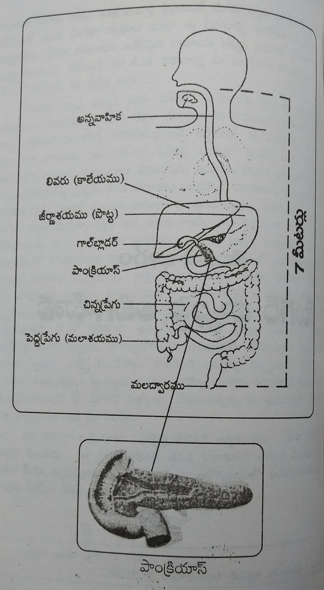
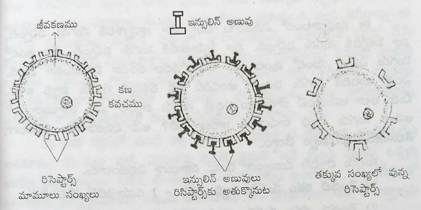
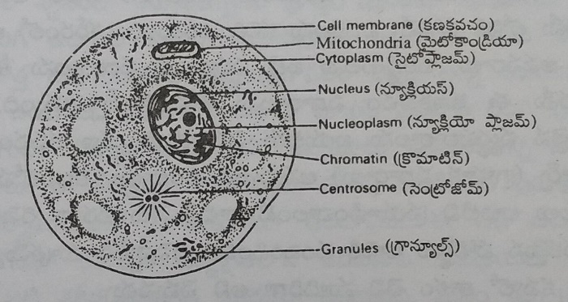
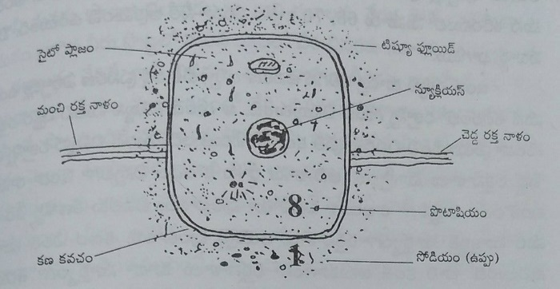

ప్రకృతి విధానం - మధుమేహ నిదానం
(సుఖ జీవన సోపానాలు - 9)
సంపూర్ణ ఆరోగ్యాన్ని
సంరక్షించండి.
సర్వదా ఐశ్వర్యాన్ని
అనుభవించండి.
డా. మంతెన సత్యనారాయణరాజు
విషయసూచిక
మొదటి భాగం
సుగర్ వ్యాధిపై అవగాహన
గంగసాక్షిగా...!
భారత దేశానికి గంగానది ఆత్మ వంటిది. అమృతమూర్తి అయిన గంగమ్మ తల్లి హిమాలయ సానువుల్లో వున్న చల్లని మనస్సును తనతోపాటు తెచ్చుకొని గంగరాజు వంటి సహృదయులకు పంచిపెట్టింది. పావన గంగ మన ముంగిటిలోనే వున్న కృష్ణ - గోదావరి తల్లుల ముద్దుబిడ్డగా మనకు 'గంగ తాతరాజు' గారిని ప్రసాదించింది. సార్థక నామధేయులైన గంగరాజుగారు మనసా వాచా కర్మణా ధార్మికోత్తముడు. ప్రకృతి జీవన సౌరభానికి విరబూచిన పున్నమి వెన్నెల. మన కలల సాఫల్యానికి ఆయన మార్గదర్శి. ప్రకృతి జీవన ధర్మసిద్ధాంతానికి చేయూతనిచ్చే సవ్యసాచి. ఆ గంగసాక్షిగా శ్రీ గోకరాజు గంగరాజు గారికి మనస్సాక్షిగా ఈ 'ప్రకృతి విధానం - మధుమేహ నిదానం' పుస్తకాన్ని నిండు మనసుతో అంకితమిస్తున్నాను.
మీ ప్రేమపాత్రుడు
మంతెన సత్యనారాయణరాజు
శ్రీ గోకరాజు గంగరాజుగారి సేవా సౌరభం
'భా' అంటే వెలుగు, విజ్ఞానం, ధర్మము అని అర్థము. 'రతి' అనగా ఆసక్తి. ధర్మాచరణ యందు ఆసక్తి కల ప్రజలున్న దేశము కాబట్టి మన దేశమును భారత (భారతి) దేశము అన్నారు. అట్లాంటి ధర్మాచరణను తన అణువణువునా నింపుకున్న అరుదైన వ్యక్తి శ్రీ గోకరాజు గంగరాజు గారు. వారు నిజమైన భారతీయత గలవారు.
వీరు ప్రముఖ పారిశ్రామికవేత్తగానే కాక, సామాజిక, సాంస్కృతిక, విద్యా క్రీడారంగాలలో తన వంతు సేవను నిస్వార్థంగా చేస్తున్న ప్రజాబంధువుగా ఆంధ్రరాష్ట్ర ప్రజలందరికి చిరపరిచితమే. వీరు ప్రత్యక్షంగా, పరోక్షంగా చేసిన ప్రజోపయోగ కార్యక్రమాలు, గుప్తదానాల గురించి చెప్పడమంటే కొండకు కొలతలు కొలవడమే.
1970 లో బి. ఫార్మసీ చేసి, సిరీస్ కంపెనీలో కెమిస్టుగా సాధారణ ఉద్యోగం నుండి అంచెలంచెలుగా అపారమైన స్వయంకృషితో 5 సంవత్సరములలో విభిన్న ఉద్యోగ బాధ్యతలు నిర్వర్తించి 1976 లో "Chemiloids" అనే సంస్థను స్థాపించారు. ఆ సంస్థ అనేక కష్టనష్టాలకు గురి అయినది. ఆరంభించిన విడువరు ఉత్తములు అన్న భర్తృహరి సుభాషిత వాక్యమునకు అనుగుణంగా ఎన్ని అవాంతరాలు ఎదురైనప్పటికి ఎదుర్కొని ఆ సంస్థను నిలబెట్టారు. 1980-81 కల్లా తిరిగి ఆ సంస్థను లాభాల బాటలో నడిపించి భారత ప్రభుత్వం నుండి ఎక్స్ పోర్ట్ అవార్డును అందుకున్నారు. ఆ తరువాత వీరి యొక్క నిర్నిరీక్ష్య సంకల్పంతో Laila Group of Companies ఆవిర్భవించినది. 1992లో Laila Impex అనే సంస్థను Export Oriented Unit (EOU)గా స్థాపించి Ayurvedic & Herbal Extracts ప్రపంచ వ్యాప్తంగా ఎక్స్ పోర్టు చేస్తూ ప్రాచీన భారతీయ వైద్య విధానమైన ఆయుర్వేద వైద్యాన్ని విదేశాలకు అందించటంలో ప్రఖ్యాతి గాంచినారు. ముఖ్యమంత్రిగారి చేతుల మీదుగా 2001 సంవత్సరానికి ఎక్స్ పోర్టు అవార్డును అందుకున్నారు. అలాగే 1994 సంవత్సరంలో ప్రత్యామ్నాయ వైద్యవిధానమునందు వీరియొక్క కృషికి గుర్తింపుగా శ్రీలంక ప్రభుత్వం గౌరవ డాక్టరేట్ ను ఇచ్చి సత్కరించింది.
25 సంవత్సరాలుగా నష్టాల బాటలోనున్న డెల్టా పేపర్ మిల్స్ ను Take-over చేసి ఆ సంస్థను దివాళా తీయకుండా కాపాడి లాభాల బాటలో నడిపించగలిగారు. 2001లో హనుమాన్ సుగర్స్ ని టేక్ ఓవర్ చేసి రాష్ట్రంలో ఏ చక్కెర కర్మాగారం చెల్లించని విధంగా రైతులకు చెరకు గిట్టుబాటు ధరను చెల్లించి దిగాలుపడిన ఆ ప్రాంత రైతాంగానికి నూతనోత్సాహాన్ని కలిగించినారు. వీరు వ్యాపార దృక్పథం కలిగిన పారిశ్రామిక వేత్తగా కాకుండా సామాజిక చింతన కలిగిన విశాల దృక్పథంతో వ్యవహరిస్తారని చెప్పడానికి ఇదే తార్కాణం. పరిశ్రమలను దేవాలయాలుగా భావించే సమున్నత వ్యక్తిత్వం శ్రీ గంగరాజు గారిది అనడానికి: "పదిమందికి ప్రశాంతతనిచ్చేది గుడి అయితే పదిమందికి బ్రతుకునిచ్చేది పరిశ్రమ కాబట్టి కొత్త కంపెనీలు పెట్టడం కాకుండా ఉన్న కంపెనీలనే పునరుద్ధరించి ఆ ఉద్యోగులకు రక్షణ కల్పించి తద్వారా ప్రజలకూ దేశానికి మేలైన సేవ చేయవచ్చు" అన్నవారి మాటలే నిదర్శనం. ఇలాంటి సదాశయం కలవారగుటచేతనే వారి సంస్థ 3000 మంది సిబ్బందితో, 150 కోట్ల టర్నోవరుతో దేశంలోని ప్రముఖ కంపెనీలలో ఒకటిగా విరాజిల్లుతున్నది. కేవలం పారిశ్రామిక రంగంలోనే కాకుండా ఆధ్యాత్మిక, విద్య, క్రీడ, సామాజిక, సాంస్కృతిక రంగాలలో వీరి సేవలు ఎన్నదగినవి.
ఆధ్యాత్మిక రంగం: కంచి జయేంద్ర సరస్వతి, విజయేంద్ర సరస్వతి, చిన జీయర్ స్వామి, శృంగేరి పీఠాధిపతి, దయానంద సరస్వతి తదితర ఆధ్యాత్మిక గురోత్తముల అనుంగు శిష్యులై, వారి ఆశీర్వాదాభినందనలతో అనేక సేవా కార్యక్రమాలలో పాల్గొంటున్నారు. హృషికేశ్ లో వేద పాఠశాలను నిర్మించటానికి ఆర్థిక సహాయం అందించారు. జీయర్ ఎడ్యుకేషన్ ట్రస్ట్ (JET)కు కార్యదర్శిగా ఉంటూ స్వామి వారి ఆశీస్సులతో అనేక సత్సంకల్పాలను ఆచరణలో పెడుతున్నారు. విశ్వహిందూ పరిషత్ వారి సేవా కార్యక్రమాలకు కూడా సహకరిస్తున్నారు. కృష్ణా నది తీరాన జి.యస్. రాజుగారితో కలిసి ఇస్కాన్ సంస్థ వారికి స్వంతఖర్చుతో సుందరమైన దేవాలయాన్ని నిర్మించారు.
సామాజిక రంగం: ఎక్కడ ఏ ఆపద వచ్చినా, విపత్తు వచ్చినా తక్షణమే సహాయమందించడం వీరి నైజం. తుఫాను తాకిడికి కోస్తా విలవిల్లాడినప్పుడు తక్షణమే 10,00,000 రూపాయలను అందించారు. కార్గిల్ లో అమరత్వం పొందిన అమర వీరుల కుటుంబాలకు ప్రభుత్వానికంటే ముందుగా సిరీస్ అధినేత రామరాజుగారితో కలిసి చినజీయర్ స్వామి వారి చేతుల మీదుగా 5,00,000 రూపాయల ఆర్థిక సహాయం చేశారు. విశ్వహిందూ పరిషత్ ఆధ్వర్యంలో నడుస్తున్న సంచార వైద్యశాల ద్వారా అనేక వేల మంది రోగులకు వైద్యసేవ, మందులు పంచటానికి వేలకొలది రూపాయలు ప్రతినెల అందిస్తున్నారు. విజయవాడలోని ముత్యాలంపాడులో కళ్యాణ మండపం నిర్మించటానికి ఆర్థిక సహాయం అందించారు.
సాంస్కృతిక రంగం: విజయవాడలో ఏ సాంస్కృతిక కార్యక్రమం జరిగినా ముందు వరుసలో నిలిచేది శ్రీ గంగరాజుగారే. అల్లూరి సీతారామరాజు సాంస్కృతిక కేంద్ర స్థాపకులు వీరే. గాంధీహిల్ మూతపడిపోయిన పరిస్థితులలో ప్రముఖ స్వాతంత్య్ర సమరయోధులు సి.హెచ్.వి.పి. మూర్తిరాజు గారి సూచన మేరకు అనేక లక్షల రూపాయలు ఖర్చుచేసి దానికి పూర్వవైభవాన్ని చేకూర్చారు. అలాగే పాడుబడి మూతబడిన టాగూర్ గ్రంథాలయాన్ని పునర్నిర్మించి పునరుద్ధరించారు. విజయవాడ మునిసిపల్ కార్పోరేషన్ వారు నిర్మిస్తున్న స్టేడియంలో ఒక గ్యాలరీ నిర్మాణానికి ఆర్థిక సహాయం చేశారు. ఘంటసాల ప్రభుత్వ కళాశాల కన్ స్ట్రక్షన్ కమిటీ మెంబరుగా ఉంటూ నూతన భవన నిర్మాణానికి ఆర్థిక సహాయంతోపాటు విద్యార్థులకు కళాకారులకు ఉపయోగపడే విధంగా ఓపెన్ ఆడిటోరియంను నిర్మింపతలచారు. ఇంకా ఇంకా అనేకానేక సాంస్కృతిక కార్యక్రమాలకు, ఉత్సవాలకు వీరెప్పుడూ చేయూతనందిస్తూనే వుంటారు.
విద్యారంగం: విద్య యొసగును వినయంబు అన్నట్లు విద్యాధికులైన వీరు వినమ్రంగానే విద్యారంగంలో అనేక సేవా కార్యక్రమాలకు ఊపిరిలూదుతున్నారు. గోకరాజు రంగరాజు కాలేజ్ ఫర్ ఇంజనీరింగ్ అండ్ టెక్నాలజీని స్థాపించారు. ఏలూరులో అల్లూరి సీతారామరాజు ఎడ్యుకేషనల్ సోసైటీ పేరిట నిర్మించిన మెడికల్ కాలేజి డైరెక్టరుగా ఉన్నారు. సిద్ధార్థ అకాడమీ వారు స్థాపించిన పిన్నమనేని వెంకటేశ్వరరావు మెడికల్ కాలేజీ నందు అడ్వయిజరీ మెంబరుగా వ్యవహరిస్తున్నారు. విజయవాడలో గోకరాజు రంగరాజు సూర్యా పబ్లిక్ స్కూలును స్థాపించారు. అశ్వారావుపేటలో వి.కె.డి.వి. సత్యనారాయణరాజు గారి పేరిట జూనియర్, డిగ్రీ కాలేజీలు స్థాపించి అక్కడ వెనుకబడిన గిరిజన విద్యార్థులకు విద్యనందుబాటులోకి తెచ్చారు. గిరిజన, గ్రామీణ ప్రాంతాలలో మురికి వాడల్లో విద్యాబుద్ధులు లేక నిరక్షరాస్యులుగా మిగిలిపోతున్న బాలల కోసం 100 సింగిల్ టీచర్ స్కూల్స్ నడపడానికి ఆర్ధికంగా తోడ్పడుతున్నారు. ప్రభుత్వం చేయలేని పనిని తమ సంకల్పంతో చేయగలుగుతున్నారు.
క్రీడారంగం: చివరికి క్రీడారంగమునందు కూడా వీరి కృషి ఘనమైనది. అనేక మంది క్రీడాకారులకు ఎంకరేజ్ మెంట్ అందిస్తూ Krishna District Cricket Association సెక్రటరీగా ఉంటూ క్రీడాభివృద్ధికి కృషిచేశారు.
జింబాబ్వే, ప్రెసిడెంట్స్ XI జట్ల మధ్య మూడు రోజుల క్రికెట్ మ్యాచ్ ను విజయవాడలో జరిపించటంలో వీరు ముఖ్యపాత్ర వహించారు. ఈ సంవత్సరం అక్టోబరులో వెస్టిండిస్ - ఇండియా మ్యాచ్ ను విజయవాడలో జరిపించటానికి ఎంతో కృషి చేస్తున్నారు. తద్వారా విజయవాడ కూడా క్రికెట్ వేదికగా గుర్తింపు పొంది ప్రపంచ క్రికెట్ పటంలో స్థానం పొందాలని వీరి ఆశయం.
ఇలా బహుముఖంగా వారి సేవా నిరతిని చాటుకుంటూ - ప్రకృతి జీవన విధానాన్ని స్వయంగా అనుసరిస్తూ ప్రకృతి జీవన విధానానికి చేదోడువాదోడుగా నిలిచి, ఆరోగ్యాన్ని అవలీలగా అందుకునేట్లు చేస్తున్న ఈ విధానాన్ని ప్రజలందరికీ మరింతగా అందించాలని, జాతీయంగా, అంతర్జాతీయంగా వ్యాప్తినొందించాలనే సదాశయంతో కృష్ణవేణీ తీరాన ఆహ్లాదకరమైన ప్రకృతి నడుమ అత్యంత అనుకూలమైన, ఆరోగ్యకరమైన వాతావరణంలో ఆశ్రమ నిర్మాణానికి వీరు నిరంతర సహాయ సహకారాలను అందిస్తున్నారు.
ప్రముఖ పారిశ్రామికవేత్తగాను, సామాజిక స్ఫూర్తిప్రదాతగాను సౌజన్య మూర్తిగాను, సంస్కరణాభిలాషిగాను ప్రజలమన్ననలనందుకుంటున్న శ్రీ గోకరాజు గంగరాజుగారికి కృతజ్ఞతాభినందనలు తెలియజేసుకుంటూ వారికి ఈ గ్రంథాన్ని పూజ్యభావంతో వినమృడనై అంకితం గావించటాన్ని ఒక మహదవకాశంగా భావిస్తున్నాను.
-మంతెన సత్యనారాయణరాజు
కృతజ్ఞతలు
ఒక పుస్తకం రాయాలంటే అది ఒక యజ్ఞం. అదీ ఆరోగ్యానికి సంబంధించిన పుస్తకం అంటే ఒక మహాయజ్ఞం. దానికి ఎంతో సామర్థ్యం ఉండి, సహాయ సహకారాలు లభించాలి. ఈ సంవత్సరం సుగరు వ్యాధితో పీడింపబడుతున్న ప్రజలందరికీ విముక్తి కలిగించాలనే సంకల్పంతో ఒక పుస్తకం వ్రాయాలని తలంచినాను. ఆ సంకల్పం ఇలా వాస్తవ రూపం దాల్చడం వెనుక కొంతమంది సహృదయుల నిరంతర కృషి, సహాయ సహకారాలు నేను ఎన్నటికీ మరువలేను. ఈ ఆరోగ్య జీవన విధానాన్ని ప్రజలకు అందించాలనే నా తపనకు తోడుగా నిలిచి నేనున్నానంటూ మా కోసం విజయవాడ, కృష్ణానదీ తీరాన చక్కని తోటల్లో, ఆహ్లాదకర వాతావరణంలో ఒక చక్కని కుటీరాన్ని ఏర్పాటుచేసి రోహిణీకార్తె మండుటెండల ప్రభావం మాపై పడకుండా గ్రంథరచన నిరంతరాయంగా సాగాలనే ఆకాంక్షతో సకల సదుపాయాలను స్వయంగా పర్యవేక్షించి, ఈ నెల రోజులు మాకు ఏ ఆటంకాలు కలుగకుండా ఈ యజ్ఞం నిర్విఘ్నంగా సాగించడానికి ప్రధాన కారకులై, ఈ 'ప్రకృతివిధానం - మధుమేహ నిదానం' పుస్తకం మీ ముందుకు రావడానికి అన్ని విధాలా సహకరించిన సహృదయ సంపన్నులు శ్రీ గోకరాజు గంగరాజు గారికి (M.D., Laila Group of Companies, VJW) నా హృదయ పూర్వక కృతజ్ఞతలు.
అతి తక్కువ సమయంలో ఈ పుస్తక ప్రచురణ జరగటానికై ఈ కార్య నిర్వహణను తమ స్వకార్యంగా భావించి సకాలంలో ముద్రణ పూర్తిగావించిన ప్రింటింగ్ ప్రెస్ యాజమాన్యానికి, సిబ్బందికి మరియు ముఖ్యంగా శ్రీ శివాజీరాజు గారికి,
ఈ విధానాన్ని ఆచరించి, ఆరోగ్యాన్ని పొంది అడిగినదే తడవుగా శరపరంపరగా ఉత్తరాల ద్వారా, ఫోనులద్వారా వారి అనుభవాలను అందించిన ఆరోగ్యాభిమానులందరికీ నా మనఃపూర్వక కృతజ్ఞతాభినందనలు తెలియజేసుకుంటున్నాను.
6-6-2002
విజయవాడ.
మంతెన సత్యనారాయణరాజు
మీకో శుభవార్త
- తరతరాలుగా చేస్తున్నారు తప్పులు - ఆ తరువాత సుగరు వ్యాధితో పడుతున్నారు తిప్పలు
- ముదిరేకొద్దే సుగరు వ్యాధి లక్షణాలు - దెబ్బ తింటాయి శరీర అవయవాలు
- ప్రకృతి విధానమాచరిస్తే నియమంగా - సుగరు వ్యాధి పోతుంది సమూలంగా
- ప్రకృతి ఎంత తోడినా తరగని సింధువు - ఈ జీవన విధానమొక అమృత బిందువు
అన్ని జీవులు ప్రకృతి మాత బిడ్డలు. ప్రతి జీవికి ఆరోగ్యం జన్మహక్కు. అన్ని జీవులకు ఆరోగ్యమనేది అనాది నుండి ఈ రోజు వరకు అలాగే లభిస్తుంది. అది మానవుడికి కూడా అలానే లభించేది. నాగరిక మానవుడికి నాగరికత పేరిట అనారోగ్యం జన్మహక్కుగా మారినది. నాగరికత పెరిగిన దగ్గర నుండి మనిషి ప్రకృతి సిద్ధంగా, సహజంగా జీవించడం లేదు. రానురానూ ఆ జీవన విధానం ప్రకృతికి విరుద్ధంగా, శరీర విరుద్ధంగా మారిపోయినది. అనుకూలమైన పరిస్థితులు లేనప్పుడు శరీరం తన విధులను సమర్థవంతంగా పూర్తిగా నిర్వర్తించలేదు. ముందుగా జీవకణాలలో కొంత అసహజత వస్తుంది. ఏ అవయవానికున్న జీవ కణాలకు యీ అసహజత వస్తే ఆ అవయవం రోగగ్రస్తమవుతుంది. దానితో ఆ అవయవం విధులను సరిగా నిర్వర్తించదు. రోగగ్రస్తమైన అవయవం యొక్క ప్రభావము మిగతా అవయవాలపై పడుతుంది. ఇలాంటి అసహజమైన స్థితి శరీరంలో జరుగుతున్నప్పుడు శరీరం ఆ స్థితిని రోగం రూపంలో వ్యక్తం చేస్తుంది. శరీరము అలా తెలియజేస్తున్న రోగమే సుగరు వ్యాధి.
సుగరు వ్యాధి అనేది అసహజమైనది. మన జీవనం మంచిగా లేదని ఆ సుగరు జబ్బు మనకు తెలియజేస్తుంది. సహజమైన ఆరోగ్యం రావాలంటే మళ్ళీ తిరిగి ప్రకృతి సిద్ధంగా జీవిస్తే మనలో వచ్చిన ఆ అసహజత (సుగరు వ్యాధి) పూర్తిగా పోతుంది. తనంతట తానే బాగు చేసుకొనే చక్కటి ఏర్పాటు మన శరీరానికి ప్రకృతి యిచ్చిన వరము. ఈ అవకాశాన్ని ఉపయోగించుకుంటే సుగరు వ్యాధి పూర్తిగా నిర్మూలించబడుతుంది. మళ్ళీ తిరిగి రాదు. అసహజమైన సుగరు వ్యాధిని పూర్తిగా పోగొట్టుకోవలసిన మనిషి దానిని పూర్తిగా పోగొట్టుకోలేక పోతున్నాడంటే ఎక్కడో తప్పు చేస్తున్నాడని చెప్పవచ్చు. ఆ చేసిన తప్పును సరిచేయకుండా అలా జీవితాన్ని కొనసాగిస్తున్నాడు. అలా తరతరాలుగా ఆ తప్పులు జరగడం వలన వంశపారం పర్యంగా సుగరు వ్యాధి పుడుతూ అలా అలా అంచెలంచెలుగా అభివృద్ధి చెందుతూ ప్రస్తుతం ఒక మహావృక్షంలా పెరిగిపోయింది. ఇదంతా సుగరు వ్యాధిని చేతులారా అజ్ఞానంతో మనిషి తెచ్చిపెట్టుకున్నదే.
ఎన్నో వేల సంవత్సరాల నుండి సుగరు వ్యాధి మన శరీరాలతో చెలగాట మాడుతుంది. ఇంకా రాను రాను సుగరు వ్యాధి యొక్క కబంధ హస్తాలలో చిక్కుకుని విలవిలలాడి పోతున్నవారు ఎక్కువ అవుతూనే వున్నారు. చిన్న వయసులో వచ్చే సుగరు వ్యాధి భారతదేశ జనాభాలో ఒక శాతం మందికి పైగా వస్తున్నదని, అదే పెద్ద వయస్సులో వచ్చే సుగరు వ్యాధి ప్రస్తుతం 12% మందికి పైగా వచ్చిందని అంచనాలు తెలుపుతున్నాయి. అయితే ఆంధ్రప్రదేశ్ దేశంలోనే అగ్రస్థానంలో సుగరు రోగులను కలిగియుందట. ఆంధ్రప్రదేశ్ లో సుమారు 16.5% మందికి సుగరు వచ్చినట్లు పత్రికలలో డేటాను ప్రచురించారు. పెద్ద వయస్సువారిలో ప్రతి 8 మందిలో ఒకరు సుగరు వ్యాధితో బాధపడుతున్నట్లు అంచనాలు తెలియజేస్తున్నాయి. ఇక రాను రాను చూస్తూ ఉంటే సుగరు వ్యాధి ఉధృతంగా ముదిరి పోయి మనుషుల జీవితంలో ఒక శాశ్వత స్థానాన్ని పొందేలా ఉంది. సుగరు వ్యాధి వచ్చిన వారికి ఆ వ్యాధిని అదుపులో ఉంచుకునే మందులు అందుబాటులోనికి వచ్చాయి. శరీరానికి కొంత మేరకు నష్టం జరగకుండా మందులు మనిషికి సహకరిస్తున్నాయి. శాస్త్రవిజ్ఞానం ఎంతో శరవేగంతో ముందుకు పరిగెడుతున్నప్పటికి, సుగరు వ్యాధి పూర్తిగా పోగొట్టే విధానం మనకు అందుబాటులోనికి రాలేదు. ఎన్నో రకాల వైద్య విధానాలు, రకరకాల మందులు అందుబాటులో ఉన్నప్పటికీ సుగరు వ్యాధి బాధితులను పెరగకుండా ఆపలేకపోతున్నాయి. ఇటువంటి పరిస్థితులలో ప్రజలకు సుగరు వ్యాధి రావడం సహజం. దాని గురించి కంగారు పడనవసరం లేదు. జీవితాంతం మనతోనే ఉంటుందని మానసికంగా సిద్ధపడుతున్నారు.
సుగరు వ్యాధి ఒక్కసారి వస్తే పోదు. దానికి మందులు జీవితాంతం వాడవలసిందే. మందులతో దానిని ఎప్పుడూ కంట్రోలులో ఉంచుకోవడమే తప్ప పూర్తి నివారణ అనేది లేదని వైద్యులు చెబుతున్నారు. సుగరు వ్యాధి ముదురుతున్నకొద్దీ శరీర అవయవాలు ఎక్కువగా దెబ్బతినడం అనేకమైన ఇతర జబ్బులను ఆకర్షించేటట్లుగా శరీరం మారడం, చివరకు జీవితమంటే విరక్తి కలిగేటట్లు పరిస్థితులు వస్తున్నాయి. ఈ విషవలయం నుండి బయట పడటానికి మనిషి అనేకములైన ఇతర ప్రయత్నాలు చేస్తున్నాడు. ఇంకా క్రొత్త మార్గాలు ఏమి వస్తాయని ఎదురుచూస్తూనే వుంటున్నాడు. ఎన్నో మార్గాలు ఉన్నా, ఈ విషమ పరిస్థితుల నుండి మనిషి కోలుకోలేకపోతున్నాడు. చేసేదేమీ లేక ఆ మందులను మింగుతూ కొద్దిపాటి పథ్యాన్ని కొనసాగిస్తూ జీవితాన్ని వెళ్ళబుచ్చుతున్నాడు. సుగరు వ్యాధి వచ్చిన తరువాత వారి దైనందిన జీవితాన్ని అందరూ ఇలాగే కొనసాగిస్తున్నారు. ఏ శాస్త్రవేత్త సుగరు వ్యాధిని పూర్తిగా పోగొట్టే మందుని ఎప్పుడు కనుక్కుంటాడో, మన జీవితాలు ఆరోగ్యంతో చిగురించే రోజులు ఎప్పుడొస్తాయో అని ఆశిస్తుంటారు. ఇక మంచి రోజులు ఈ జీవితంలో లేనట్లేనా అని ఎక్కువ మంది వాపోతున్నారు. ఇలా ఉంది ప్రస్తుత పరిస్థితి.
ఉయ్యాలలో పిల్లాడిని పెట్టుకుని ఇల్లంతా వెతికినట్లు సుగరు జబ్బు తగ్గడానికి కూడా ఇలానే ప్రయత్నాలు చేస్తున్నారు. సుగరు వ్యాధి రావడానికి అసలు కారణం ఆలోచిస్తే మనిషి ప్రకృతి విరుద్ధంగా జీవించడమే. ఈ విరుద్ధాన్ని సవరించాలంటే మళ్ళీ ప్రకృతి విధానాన్ని ఆచరించటం చేయాలి. ప్రకృతి విధానం రెండు రకాలు మొదటిది ప్రకృతి వైద్య విధానం, రెండవది ప్రకృతి జీవన విధానం. వైద్య విధానంలో ఉపవాసాలు, మట్టి పట్టీలు, తొట్టి స్నానాలు, ఆసనాలు, ప్రాణాయామం, ఆవిరి స్నానాలు మొదలగునవి ముఖ్యంగా చెప్పవచ్చు. ఈ వైద్య విధానం రోగ లక్షణాలను బట్టి అవసరానికి వాడవచ్చు. ప్రకృతి సిద్ధమైన మానవుడికి ప్రకృతి వైద్య విధానం గాని, చికిత్సలు గాని ఎంతో మేలు చేస్తాయి.
ప్రకృతి జీవన విధానమంటే 24 గంటలు మన అలవాట్లు ఎలా ఉండాలి అనేది తెలియజేసే విధానం. జీవన విధానాన్ని సవరిస్తే శరీరం తిరిగి సహజత్వాన్ని పొంది సుగరు వ్యాధి పూర్తిగా నిర్మూలింపబడుతుంది. మనిషి శరీర విషయంలో ప్రతి రోజూ లేచిన దగ్గర నుండి రాత్రి పడుకోబోయే వరకు ఎన్నో తప్పులు చేస్తున్నాడు. వీటిని సవరించాలంటే ముఖ్యంగా నీటిని త్రాగే విధానం, మల, మూత్ర విసర్జనా విధానం, ఆహారం తినే విధానం, వండుకునే విధానం, వ్యాయామ విధానం, విశ్రాంతి విధానం మొదలగువాటిని మార్పు చేసుకోవలసి ఉంటుంది. ప్రకృతి వైద్యాన్ని చేయవలసిన అవసరం లేకుండా కేవలం జీవన విధానం ద్వారా ఏ మందులూ అవసరం లేకుండా సుగరు వ్యాధి పూర్తిగా తగ్గుతుంది. ఈ మంచి అలవాట్లను కొనసాగించినంతకాలం సుగరు మళ్ళీ తిరిగి రాకుండా వుంటుంది. నేను గత 8 సంవత్సరాల నుండి ఈ జీవన విధానాన్ని ఆచరిస్తూ, ఎన్నో వేల మంది చేత ఆచరింపచేస్తూ ఉంటే సుగరు వ్యాధి విషయంలో అద్భుతమైన ఫలితాలు పొందటం జరిగింది. సుగరు వ్యాధి తగ్గడం ఇంత తేలిక అని మాకు ఆశ్చర్యం కలుగుతుంది. ఇంత తేలికగా సుగరు తగ్గించుకునే విషయం తెలియక ప్రజలు ఇబ్బంది పడుతున్నారు. ఈ ప్రకృతి జీవన విధానాన్ని మనిషి తోడుగా చేసుకొని జీవిస్తే సుగరు వ్యాధిని సమూలముగా నిర్మూలించవచ్చు. ప్రపంచంలో సుగరు వ్యాధి అడ్రస్సు లేకుండా చేయవచ్చు.
సుగరు వ్యాధితో ఉన్నవారికి ఈ జీవన విధానం అందించే శుభవార్త ఏమిటంటే ఇంటి దగ్గరనే కూర్చుని జీవన విధానం ఆచరిస్తూ క్రమేపి మందులు తగ్గించుకుంటూ సుగరును పూర్తిగా నిర్మూలించుకోవచ్చు. పండ్లు అన్నీ తినవచ్చు. దుంపలు తినవచ్చు. ఎప్పుడన్నా స్వీట్లు తినవచ్చు. చివరికి అన్నం కూడా తినవచ్చు. అయినా సుగరు రాదు. ఇంకొక వార్త ఏమిటంటే సుగరు వ్యాధి తగ్గడంతో పాటు శరీరంలో ఉండే మిగతా వ్యాధులు కూడా ఈ విధానాన్ని ఆచరించటం ద్వారానే తగ్గుతాయి. మీరు ఊహించని అనేకమైన లాభాలను తక్కువ టైములో పొందవచ్చు. ఇన్ని లాభాలను కలిగించే ఈ జీవన విధానాన్ని మీ అందరకూ అందించటానికి చేసే ప్రయత్నమే ఈ పుస్తక రచన.
సుగరు వ్యాధి వచ్చిన చాలా మందికి ఆ వ్యాధిపై పూర్తిగా అవగాహన ఉండదు. అవగాహన లేక ఎన్నో దుష్ఫలితాలను కొనితెచ్చుకుంటారు. సుగరు వ్యాధి గురించి అందరికీ తెలియజేయాలనే ఉద్దేశంతో ఈ పుస్తకాన్ని మూడు భాగాలుగా రాయడం జరిగింది. ఒకటవ భాగంలో సుగరు వ్యాధి గురించి అవగాహన కలిగించే అధ్యాయాలు వివరించడం జరిగింది. రెండవ భాగంలో సుగరు వ్యాధి నిర్మూలనపై ప్రకృతి జీవన విధానము, ఆచరించే విధానాలను కూలంకషంగా వివరించినాను. అలాగే మూడవ భాగంలో ఈ జీవన విధానం ఆచరించడం ద్వారా సుగరు వ్యాధి పూర్తిగా తగ్గిన వారి అనుభవాలను, వారే స్వయంగా రాసి పంపిన విషయాలను అచ్చు వేయడం జరిగింది. ఒకటవ భాగం మాత్రం సామాన్య ప్రజానీకంలో కొంతమందికి కొద్దిగా అర్థం కాకపోవచ్చు. శరీరంలో జరిగే మార్పులను గురించి వివరంగా చెప్పాలంటే, శాస్త్రీయంగా, వివరంగా రాయక తప్పదు. అర్థము కాని వారు ఈ విషయం గురించి మరోలా భావించవద్దని నా మనవి. నేను ఈ పుస్తకము రాయడం వెనుక ముఖ్య ఉద్దేశ్యం - ఈ విధానం సుగరు వ్యాధిని తగ్గించడానికి ఎంతో తేలికైనది, ఖర్చులేనిది కాబట్టి ప్రజలు ఎవరింట్లో వారు ఆచరిస్తూ సుగరు వ్యాధిని పోగొట్టుకోగలరని తలంచడమే. నేను వ్రాసే పుస్తకము సుగరు వ్యాధిపై ఎన్నో సందేహాలు తొలగించి ఇన్నాళ్ళు నిస్పృహతో జీవిస్తున్న ప్రజలకు వెలుగురేఖలు అందించి ఇకనైనా ఆరోగ్య మార్గాన పయనించే అవకాశం కలుగజేయగలదని నా ప్రగాఢ విశ్వాసం. మేమందిస్తున్న ఈ శుభవార్తను నిజం చేసే కార్యాచరణ ఇక మీ వంతు.
ఇక చివరిగా ఒక మాట. ప్రకృతి మనిషికి ఆత్మబంధువు. ఎంత తోడినా తరగని సింధువు. ఆ సింధువు నుండి జీవన విధానమనే అమృత బిందువును మేము మీకు అందిస్తున్నాము. ఇక స్పందించి ఆరోగ్యపథంలో పయనించవలసిన బాధ్యత మీదే...మీదే...
మొదటి భాగం
సుగర్ వ్యాధిపై అవగాహన

1. డయాబెటిస్ అంటే?
- సుగరు, సుగరని భయమెందుకు - ప్రకృతి విధానముంది తగ్గించుకునేందుకు
- శరీరానికి శక్తినిచ్చేది గ్లూకోజు - ఎప్పుడూ ఒకేలా ఉండదు రోజూ
- సుగరు వ్యాధికి మరొకపేరు మధుమేహం - దానిలో ఒక లక్షణం అతి దాహం
- తెలియకుండా వచ్చిందని వదలకు - తగ్గేవిధానముందిలే, ఇక బెదరకు!
డయాబెటిస్ అనే జబ్బును "డయాబెటిస్ మెలిటస్" అని అంటారు. వాడుకలో రాను రాను 'డయాబెటిస్ మెలిటస్' అని పలకడానికి బదులుగా డయాబెటిస్ అని మాత్రమే పలకడం చేస్తున్నారు. వాస్తవానికి డయాబెటిస్ అన్నా 'డయాబెటిస్ మెలిటస్' అన్నా ఒకటి గానే మనం గుర్తుంచుకోవాలి. డయాబెటిస్ మెలిటస్ అనే పదములో ఉన్న అర్థాన్ని మనం గమనిస్తే "డయాబెటిస్" అనే గ్రీకు పదానికి "సైఫన్ ద్వారా" అని అర్థం. సైఫన్ అనే సాధనం ద్వారా ఎక్కువ మట్టంలోని ద్రవపదార్థాన్ని తక్కువ మట్టంలోకి దించడం అని దాని అర్థం. ఇక 'మెలిటస్' అనే పదానికి వస్తే, శరీరంలో తీపి రక్తం ప్రవహిస్తూ, మూత్రం కూడా అంతే తీపిగా విసర్జించబడటం. ఇలా మూత్రం తీపిగా ఉండటానికి కారణం మూత్రంలో 'గ్లూకోజ్' అనబడే చక్కెర లేదా సుగర్ విసర్జింప బడటమేనని కనుగొన్నారు. అందుచేతనే ఈ జబ్బును "డయాబెటిస్ మెలిటస్" అనడం జరిగింది. దీనినే ఆయుర్వేదంలో "మధుమేహం" అని అంటారు. ఈ జబ్బును వాడుక భాషలో కొంతమంది సుగరు జబ్బు అని, మరి కొందరు "చక్కెర వ్యాధి" అని కూడా పిలుస్తుంటారు. "నాకు సుగరు వచ్చింది, మా ఆయనకు కూడా సుగరు వచ్చింది, ఆవిడకూ సుగరే" అని మనం వాడుతూ ఉంటాం. అందువలన నేను కూడా మీ అందరికీ ఇష్టమైన పేరునే ఈ పుస్తకమంతటా అవసరమైన చోట ఉపయోగించడం జరుగుచున్నది.
మూత్రం తీపిగా లేకుండా చప్పగా ఉంటూ, అతి మూత్ర విసర్జన అనే లక్షణం మాత్రం ముఖ్య చిహ్నంగా ఉండే మరో డయాబెటిస్ జబ్బు కూడా ఉంది. దానినే "డయాబెటిస్ ఇన్ సిపిడస్" అని అంటారు. ఇక్కడ ఇన్ సిపిడస్ అనే మాటకు "చప్పన" అని అర్థం. ఈ జబ్బులో అతి మూత్రం ఉంటుంది కాని, అందులో చక్కెర మాత్రం ఉండదు. ఈ రకమైన సుగరు జబ్బు అంత ప్రమాదకరమైనది కాదంటారు. ఇది చాలా అరుదుగా వస్తుందని చెప్పడం జరిగింది. ఇప్పటివరకు మనం ఈ సుగరు జబ్బుకు అలాంటి పేర్లు పెట్టడంలో ఉన్న అసలు అంతర్యాన్ని తెలుసుకున్నాం. ఇప్పుడు సుగరు వ్యాధి అంటే ఏమిటో తెలుసుకుందాం.
మన శరీరానికి శక్తినిచ్చేది గ్లూకోజు. అంటే గ్లూకోజు శక్తికి మారురూపమన్న మాట. మామూలుగా మన రక్తంలో చక్కెర కొంత పరిమాణంలో ఉంటుంది. రక్తంలోని చక్కెర ఎక్కువగా గ్లూకోజు రూపంలోనే ఉంటుంది. కానీ రక్తంలో గ్లూకోజుతో పాటు ఫ్రక్టోజు, లాక్టోజు, గాలక్టోజు మొదలైన ఇతర చక్కెర పదార్థాలు కూడా ఉంటాయి. రక్తంలో ఉన్న గ్లూకోజు ఎప్పుడూ ఒకే రకంగా ఉండదు. ఆహారం తీసుకోక పూర్వం ఒకలా ఉంటే, ఆహారం తిన్న తరువాత మరోలా ఉంటుంది. ఏమీ తినకుండా పరగడుపున (ఫాస్టింగ్) రక్త పరీక్షను రెండు రకాలుగా చేయించినపుడు.
1. రక్తంలో చక్కెర పదార్థాల (బ్లడ్ సుగరు) పరిమాణం 80 - 120 milligrams % వుండాలి. ఇందులో రక్తంలో గ్లూకోజుతోపాటు ఇతర చక్కెర పదార్థాలు కూడా కలసి వుంటాయి.
2. రక్తంలో కేవలం గ్లూకోజు (బ్లడ్ గ్లూకోజు) యొక్క పరిమాణం 80 - 100 milligrams % వుండాలి.
అందరూ ఎక్కువగా చేయించుకునే రక్త పరీక్ష మొదటి రకమే (బ్లడ్ సుగర్), కానీ వైద్యులు అవసరమైనప్పుడు మాత్రమే రెండవ రకం పరీక్షను చేయిస్తారు. (బ్లడ్ గ్లూకోజ్). ఈ మధ్య "రక్తంలో చక్కెర", "రక్తంలో గ్లూకోజు" అనే వేరు వేరు పదాలు వాడుతూ వేరు వేరు టెస్టులు చేయిస్తున్నారు. పైన చెప్పినవి ఆరోగ్యవంతుడికి పరగడుపున ఉండవలసిన సగటు విలువలు, ఆహారం తీసుకున్న తర్వాత, మన రక్తంలో గ్లూకోజు, ఇతర చక్కెర పదార్థాల పరిమాణం పెరిగినా ఇన్సులిన్ అనే హార్మోన్ వీటి పరిమాణాన్ని తగ్గించి మామూలు స్థితికి తెస్తుంది. ఇన్సులిన్ అనే హార్మోను ఎవరిలోనైతే పూర్తిగా గానీ, అసంపూర్తిగా గానీ లోపిస్తుందో వారిలో రక్తంలోని గ్లూకోజును తగ్గించి మామూలు స్థితికి తీసుకుని వచ్చే యంత్రాంగం దెబ్బ తింటుంది. దాంతో రక్తంలోని గ్లూకోజు ఎప్పుడూ మామూలు కంటే ఎంతో అధికంగా ఉంటుంది. ఇలా రక్తంలోని గ్లూకోజు ఎపుడూ మామూలు కంటే ఎక్కువగా ఉండే వ్యాధిని "సుగరు వ్యాధి" అంటారు.
మామూలుగా మనలో ఉండే సుమారు '5' లీటర్ల రక్తం మూత్రపిండాల గుండా ప్రసరిస్తున్నపుడు అనేక మార్పులు జరిగి, రక్తం వడకట్టబడి - దాని నుండి మూత్రం ఏర్పడుతుంది. మన మూత్ర పిండాలు రక్తాన్ని వడకట్టేటప్పుడు, అందులో శరీరానికి అవసరమయ్యే పోషక పదార్థాలను, గ్లూకోజును తిరిగి వెనక్కి పీల్చుకుంటూ అనవసరమైన పదార్థాలను మాత్రమే మూత్రం ద్వారా విసర్జిస్తాయి. ఇది మామూలుగా జరిగే సహజ ప్రక్రియ. సుగరు వ్యాధి వచ్చిన వారిలో ఈ ప్రక్రియ మారిపోతుంది. సుగరు వ్యాధి వచ్చాక రక్తంలో ఎప్పుడూ మామూలు కంటే ఎక్కువగా గ్లూకోజు పదార్థాలు నిలువ ఉంటూ ఉంటాయి. రక్తంలో గ్లూకోజు పెరిగి ఉండటం వలన, శరీరాన్ని ఈ ఇబ్బంది నుండి రక్షించడానికి మూత్ర పిండాలు కొంత గ్లూకోజును మూత్రం గుండా విసర్జిస్తూ ఉంటాయి. రక్తంలోని గ్లూకోజు మూత్రం గుండా బయటకు వస్తూ ఉంటుంది. కాబట్టి, మూత్రం గుండా, మూత్రంలో బయటకు వచ్చే గ్లూకోజు ఒంటరిగా రాకుండా నీటిని కూడా ఎక్కువగా బయటకు లాక్కొని వస్తుంది. దీని వలన మామూలు కంటే ఎక్కువగా మూత్రం వస్తూ ఉంటుంది. అందుచేతనే సుగరు వ్యాధిని 'అతి మూత్ర వ్యాధి' అని కూడా అంటారు.
ఇలా రక్తంలో ఎక్కువైన గ్లూకోజు శరీరం నుండి మూత్రం ద్వారా బయటకు పోతూ ఎక్కువ నీటిని కూడా లాక్కొని పోవడం వలన శరీరంలో నీటి శాతం తగ్గిపోతుంది. శరీరంలో నీరు తగ్గినపుడు ఆ నీరును మనం పూరించేటట్లు లేదా త్రాగేటట్లు చేయడానికి శరీరం దాహం రూపంలో సంకేతాలను మనకు తెలియజేస్తుంది. అందుచేతనే సుగరు వ్యాధి ఉన్న వారికి అతి దాహమనే గుణం ఉంటుంది.
మనం తిన్న ఆహారం జీర్ణమై గ్లూకోజుగా మారి అది రక్తంలో ప్రయాణిస్తూ జీవకణాలలోనికి చేరడానికి సిద్ధంగా ఉంటుంది. ఈ గ్లూకోజు జీవకణాల్లోకి ప్రవేశించాలంటే ఇన్సులిన్ హార్మోను ఉండాలి. సుగరు వ్యాధి వచ్చిన వారిలో ఈ ఇన్సులిన్ హార్మోను పూర్తిగా గానీ, అసంపూర్తిగా గానీ లోపిస్తుంది. దాని వలన జీవకణాలకు శక్తిని అందించే గ్లూకోజు అందక అవి శక్తిని ఉత్పత్తి చేసుకోలేవు. కోటాను కోట్ల జీవకణాలు శక్తి లేక నిస్సత్తువగా ఉంటాయి. వాటికి శక్తి లేక పోతే మనకు శక్తి ఉండదు. అందుచేతనే ఈ వ్యాధిలో 'అతి నీరసం' కూడా ప్రధాన లక్షణంగా ఉంటుంది.
గ్లూకోజు అనే శక్తినిచ్చే పదార్థం కణాల వెలుపలి భాగాన్నే చేరి ఉంటుంది తప్ప, కణ కవచాన్ని దాటి కణం లోపలకు ప్రవేశించలేక పోతుంది. వాటి ఆకలి తీరక పోయే సరికి మనం ఎంత తిన్నా ఇంకా ఆకలి అరుపులు అరుస్తూనే ఉంటాయి. కణాల ఆకలి తీరనపుడు మనకు కూడా ఆకలి తీరదు. సుగరున్న వారికి అందుకే ఆకలి కూడా ఎక్కువ ఉంటుంది.
మనం తీసుకునే ఆహారంలో ముఖ్యంగా మూడు రకాల ఆహార పదార్థాలుంటాయి. అవి పిండి పదార్థాలు, మాంసకృత్తులు, క్రొవ్వు పదార్థాలు. ముఖ్యంగా పిండి పదార్థాల నుండి వచ్చిన గ్లూకోజును మన శరీరం వినియోగించుకొని శరీరానికి శక్తిని అందిస్తూ ఉంటుంది. సుగరు వ్యాధిలో ఇన్సులిన్ చాలనందువల్ల, పిండి పదార్థాల నుండి కణాలకు గ్లూకోజు అందనందువల్ల, శరీరం మాంసకృత్తులు, క్రొవ్వుల నుండి గ్లూకోజు తయారు చేసుకుంటుంది. ఇలా పిండి పదార్థాలు, మాంసకృత్తులు, క్రొవ్వు పదార్థాలకు సంబంధించిన జీవక్రియలలో మార్పులు తారుమారు అవుతాయి. అందుకే సుగరు వ్యాధిని "జీవక్రియల్లో లోపం" (Metabolic disorder) అని కూడా అంటారు.
శరీరంలో ఇన్సులిన్ పూర్తిగానో, అసంపూర్తిగానో లోపించడం, రక్తంలో గ్లూకోజు పరిమాణం ఎక్కువగా ఉండటం, అతి మూత్రం జరగడం, అధిక దాహం వేయడం, ఆకలి ఎక్కువగా వేయడం, ఎక్కువ నీరసంగా ఉండటం మొదలగు లక్షణాలు ఉన్నప్పుడు దాన్ని సుగరు వ్యాధిగా నిర్ధారించవచ్చు.
అయితే మూత్రంలో చక్కెర ఉన్నంత మాత్రాన దాన్ని సుగరు వ్యాధి అని అనకూడదు. మూత్రంలో చక్కెర అనేది సుగరు వ్యాధి లేకపోయినా ఇతర కారణాల వల్ల కనిపించవచ్చు. మూత్రంలో చక్కెరతో పాటు పైన చెప్పిన కారణాలన్నీ ఉంటే దానిని సుగరు వ్యాధిగా నిర్ధారణ చేయవచ్చు.
ఈ సుగరు వ్యాధిని "వ్యాధి కాని వ్యాధి" అని కూడా అంటారు. ఈ సుగరు వ్యాధి ఎందుకు వస్తుంది? పాంక్రియాస్ గ్రంథి ఎలా పనిచేస్తుంది? ఇన్సులిన్ ఎలా ఉత్పత్తి అవుతుంది? ఇన్సులిన్ ఎందుకు తగ్గుతుంది? ఇన్సులిన్ ఎలా పనిచేస్తుంది? సుగరు వ్యాధి లక్షణాలు ఏమిటి? సుగరు వ్యాధి వల్ల వచ్చే నష్టాలు ఏమిటి? ఆహార నియమాలు ఎలా ఉండాలి. వ్యాయామం వల్ల లాభాలు, ప్రకృతి విధానం వల్ల సుగరు ఎందుకు తగ్గుతుంది. ఉపవాసాలు ఏమి చేస్తాయి మొదలగు విషయాలను ఇక నుండి వచ్చే అధ్యాయాలలో వివరంగా తెలియజేయబోతున్నాను. సుగరు వ్యాధి గురించి మనకు పూర్తిగా అర్థం కావాలన్నా, దానిని మీరు పూర్తిగా పోగొట్టుకోవాలన్నా ప్రతి విషయాన్ని మనస్సు పెట్టి చదవాలి. శాస్త్ర విషయాలు ఉంటాయి కాబట్టి కాస్త మెల్లిగా చదువుతూ అర్థం కాకపోతే మళ్ళీ మళ్ళీ చదువుతూ విషయాన్ని పూర్తిగా అర్థం చేసుకోవడానికి ప్రయత్నించండి. సుగరు వ్యాధి ఎవరికైనా తెలియకుండానే వస్తుంది. తెలియకుండా వచ్చిందని వదిలివేయకుండా కనీసం తెలుసుకుంటూ తెలివితో తరిమికొట్టండి.
2. పాంక్రియాస్ గ్రంథి - దాని పని తీరు
- సరిగా ఉంటేనే పాంక్రియాస్ పనితీరు - కావలసిన శక్తి కాయానికి సమకూరు
- జీర్ణక్రియకు ఎంతో అవసరం పాంక్రియాటిక్ జ్యూస్ - అందులో ఉన్నాయి ట్రిప్సిన్, ఎమైలేజ్, లైపేజ్
- గ్లూకోజ్ ను కణాలకు చేర్చడం ఇన్సులిన్ పనితనం - అది కణాల్లో శక్తిగా మారడానికి ఇన్సులినే ఇంధనం
మన శరీర భాగంలో అతి ముఖ్యమైన అవయవం పాంక్రియాస్ గ్రంథి (క్లోమ గ్రంథి). మిగతా అవయవాల గురించి తెలిసినట్లుగా చాలా మందికి పాంక్రియాస్ గ్రంథి గురించి తెలిదయని చెప్పవచ్చు. ఎందుకంటే ఇది చేసే పని గొప్పదే గాని గుప్తంగా ఉంటుంది. ఈ మధ్య సుగరు వ్యాధి వచ్చే వారు పెరగడంతో జనానికి పాంక్రియాస్ అనే మాట పరిచయం అయిందని చెప్పవచ్చు. మనం ఎంత ఆహారం తిన్నప్పటికి అది శక్తిగా మారి మన శరీర అవసరాలు తీర్చాలంటే పాంక్రియాస్ గ్రంథి పని తీరు సక్రమంగా ఉండాలి. సుగర్ వ్యాధి అనేది పాంక్రియాస్ గ్రంథిలోని కొన్ని కణాలు సరిగా పనిచేయక పోవడం వలన వస్తుంది కాబట్టి దాని గురించి క్లుప్తంగా తెలుసుకునే ప్రయత్నం చేద్దాం.
పాంక్రియాస్ గ్రంథి నిర్మాణం:- ఇది మన కడుపులో జీర్ణాశయానికి క్రింది భాగంలో అడ్డంగా అమర్చబడి ఉంటుంది. దీనికి ఒక భాగం వెడల్పుగా వుండి డుయోడినం వైపుకు ఉంటుంది. రెండవ భాగం తోకలాగ సన్నగా వుండి ఎడమ మూత్రపిండం వైపుకు ఉంటుంది. దీని వెడల్పుగా వున్న భాగాన్ని తల అని సన్నగా వుండే భాగాన్ని తోక అని అంటారు. పాంక్రియాస్ గ్రంథి అంతటా కొన్ని ప్రత్యేకమైన జీవకణాలతో ఏర్పడిన చిన్నచిన్న ద్వీపాలు ఉంటాయి. ఇవి ఎక్కువగా తోక భాగంలో ఉంటాయి. వీటిని ఐలెట్స్ ఆఫ్ లాంగర్ "హేన్స్" అంటారు. పాంక్రియాస్ గ్రంథిలో ఈ ఐలెట్స్ ఆఫ్ లాంగర్ హేన్స్ అనేవి పది లక్షల వరకు ఉంటాయి. ఒక్కొక్క ఐలెట్ లో మూడు రకాల జీవకణాలు ఉంటాయి. వీటిని ఆల్ఫా కణాలు, బీటా కణాలు, డెల్టా కణాలు అంటారు. ఈ మూడు రకాల కణాలు ఒక్కొక్కటి ఒక్కో రకమైన హార్మోన్ ను ఉత్పత్తి చేస్తాయి. ఇన్సులిన్ అనే హార్మోను బీటా కణాల నుండి స్రవించబడుతుంది.
పాంక్రియాస్ ముఖ్యంగా రెండు రకాల స్రావాలను ఉత్పత్తి చేస్తుంది. 1) పాంక్రియాటిక్ జ్యూస్, 2) ఐలెట్స్ నుండి స్రవించే ఇన్సులిన్, గ్లూకగాన్ స్టోమాటో స్టాటిన్ అనే హార్మోనులు.
ఇప్పుడు పాంక్రియాస్ గ్రంథి యొక్క స్రావాలు నిర్వర్తించే విధులను తెలుసుకుందాము.
1) పాంక్రియాటిక్ జ్యూస్:- మనం ఆహారాన్ని తీసుకున్నప్పుడు అది మొదట పొట్టలో, కొంత వరకు జీర్ణం చెయ్యబడి చిన్న ప్రేగు మొదటి భాగమైన డుయోడినమ్ లోనికి చేరవేయబడుతుంది. ఆహారం డుయోడినమ్ లోనికి చేరినపుడు పాంక్రియాస్ గ్రంథి నుండి పాంక్రియాటిక్ జ్యూస్ విడుదల అవుతుంది. ఇది ఆహారంలోని మాంసకృత్తులను, క్రొవ్వును జీర్ణం చేస్తుంది. అంతే కాకుండా దీనివల్ల ముఖ్యమైన ప్రయోజనం ఏంటంటే మనం ఎక్కువ ఎసిడిటీ వున్న ఆహార పదార్థాలు తిన్నప్పుడు దానిని సమతుల్యం చెయ్యడానికి పాంక్రియాస్ ఎక్కువ మోతాదులో పాంక్రియాటిక్ జ్యూస్ ను విడుదల చేస్తుంది. ఎందుకంటే ఇది క్షార గుణాన్ని కలిగి ఉంటుంది. దీని ద్వారా ప్రేగులు పుండ్లు పడకుండా కాపాడుతుంది.
ఆహారాన్ని జీర్ణం చేయడానికి పాంక్రియాస్ లో ముఖ్యమైన 3 ఎంజైమ్ లు వున్నాయి. 1) ట్రిప్సిన్ 2) ఎమైలేజు 3) లైపేజు. ఇందులో ట్రిప్సిన్ అనే ఎంజైమ్ ప్రోటీనులను (మాంసకృత్తులను) ఎమైనో యాసిడ్స్ గా మారుస్తుంది. మనం తిన్న ఆహారంలోని మాంసకృత్తులు రక్తంలో ఈ ఎమైనో యాసిడ్స్ రూపంలోనే కలుస్తాయి. లైపేజ్ అనే ఎంజైము పొట్టలో జీర్ణం కాగా మిగిలిన పిండి పదార్థాలను చక్కెరగా మార్చుతుంది. ట్రిప్సిన్ అనే ఎంజైము క్రొవ్వు పదార్థాలను ఫాటీ ఆసిడ్స్, గ్లిజరాల్ గా జీర్ణం చేస్తుంది. మనం తినే క్రొవ్వు పదార్థాలు రక్తంలో ఫాటీ యాసిడ్స్, గ్లిసరాల్ రూపంలోనే కలుస్తాయి. ఈ రకంగా మనం తినే 3 రకాల ఆహార పదార్థాల జీర్ణక్రియకు కూడా పాంక్రియాటిక్ జ్యూస్ అవసరమవుతుంది. ఈ విధంగా రోజుకి 900 మిల్లీలీటర్ల పాంక్రియాటిక్ జ్యూస్ ని విడుదల చేస్తూ పాంక్రియాస్ గ్రంథి జీర్ణక్రియలో అతి ముఖ్యమైన పాత్ర వహిస్తుంది.
2) ఇన్సులిన్:- పాంక్రియాస్ గ్రంథిలోని ఒక్కొక్క ఐలెట్ లో 10,000 నుండి 20,000 బీటా కణాలు ఉంటాయి. ఈ బీటా కణాలు ఇన్సులిన్ ను స్రవిస్తాయి. మనం తీసుకున్న ఆహారంలో ఎక్కువ భాగం పిండి పదార్థాల రూపంలో వుంటుంది. ఈ పిండి పదార్థాలు జీర్ణం చేయబడి గ్లూకోజుగా మారతాయి. గ్లూకోజుగా మారిన ఆహారం రక్తంలోనికి విడుదల అవుతుంది. రక్తంలోనికి గ్లూకోజు చేరగానే మనకి శక్తి వస్తుంది అనుకుంటే చాలా పొరపాటు. రక్తం నుండి గ్లూకోజ్ శరీరంలోని ప్రతి కణానికి చేరి అందులో మండినపుడే శక్తి విడుదల అవుతుంది. శరీరంలోని ప్రతి కణం ఒక బట్టీ అనుకుంటే గ్లూకోజ్ అందులో మండాలంటే ఇంధనం కావాలి. ఆ ఇంధనమే ఇక్కడ ఇన్సులిన్ అని చెప్పవచ్చు. ఇన్సులిన్ సహాయంతోనే గ్లూకోజ్ కణాలకు చేరడం, కణాల్లో శక్తిగా విడుదల కావడం జరుగుతుంది. రక్తంలోని సుగరు పరిమాణాన్ని ఇన్సులిన్ ఎప్పటికప్పుడు నియంత్రిస్తూ వుంటుంది. ఇన్సులిన్ సరిగా ఉత్పత్తి కానపుడు రక్తంలో గ్లూకోజు పరిమాణం పెరిగి సుగరు వ్యాధిగా మారుతుంది.
3) గ్లూకగాన్:- పాంక్రియాస్ లోని ఆల్ఫా కణాలు ఈ హార్మోన్ ను విడుదల చేస్తాయి. ఇన్సులిన్ రక్తంలోని గ్లూకోజ్ పరిమాణాన్ని తగ్గిస్తే, గ్లూకగాన్ రక్తంలో సుగరు పరిమాణం పెరిగేలా చేస్తుంది. రక్తంలో సుగరు పరిమాణం అవసరమైన దానికంటే తక్కువగా వున్నప్పుడు ఈ హార్మోన్ లివరులో నిలువ వున్న గ్లూకోజ్ ను రక్తంలోకి విడుదయ్యేలా చేస్తుంది.
4)స్టామాటో స్టాటిన్:- పాంక్రియాస్ లోని డెల్టా కణాలు ఈ హార్మోనును విడుదల చేస్తాయి. గ్లూకగాన్ వల్ల రక్తంలో పెరిగిన సుగరు పరిమాణాన్ని తగ్గిస్తూ, ఇన్సులిన్ కు సహాయం చేస్తూ వుంటుంది. ఈ విధంగా ఈ హార్మోను ఇన్సులిన్ కు, గ్లూకగాన్ కు మధ్యవర్తిగా పనిచేస్తూ వుంటుంది.
ఇన్సులిన్ ను ఉత్పత్తి చేయడం ద్వారా పాంక్రియాస్ గ్రంథి జీవక్రియలో ప్రముఖపాత్రను వహిస్తుంది. ఇన్సులిన్ ఏ విధంగా రక్తంలోకి విడుదల అవుతుంది? దాని పని తీరు ఏ విధంగా వుంటుందనే విషయాలను తరువాత అధ్యాయంలో వివరంగా తెలుసుకుందాం.
3. ఇన్సులిన్ - దాని కథ
- ఇన్సులిన్ స్రవిస్తుంది బీటా కణాలనుండి - ఇది కరిగే గుణమున్న ఒక రకమైన ప్రోటీనండి
- రక్తంలో పెరిగితే గ్లూకోజు - బీటాకణాలు చేస్తాయి ఇన్సులిన్ రిలీజు
- ఇన్సులిన్ అణువు ఒక తాళం చెవి - గ్లూకోజ్ ను కణంలోకి చేరుస్తాయి అవి
- ఇన్సులిన్ లోపం వలనే సుగర్ వ్యాధి - లోపం సరిచేయవలసిన బాధ్యత నీది
ఇంతకు ముందు అధ్యాయంలో ఇన్సులిన్ హార్మోను పాంక్రియాస్ గ్రంథిలోని బీటా కణాల నుండి స్రవించబడుతుందని తెలుసుకున్నాం. ఇది కరిగే గుణమున్న ఒక విధమైన ప్రోటీను అని చెప్పవచ్చు. ఇది బీటా కణాలలో స్రవించే పలుకులుగా నిలువ చేయబడి వుంటుంది. ఆరోగ్యంగా వున్న వారిలో రోజుకి సుమారు 40-50 యూనిట్ల ఇన్సులిన్ ఉత్పత్తి అవుతుంది. పాంక్రియాస్ గ్రంథి సక్రమంగా పనిచేసినప్పుడు 200 యూనిట్ల ఇన్సులిన్ వరకు నిలువ చేసి ఉంచుకోగలుగుతుంది.
బీటా కణాలు రక్తంలోని గ్లూకోజు పరిమాణాన్ని బట్టి దానికి తగినట్లుగా ఇన్సులిన్ హార్మోనును విడుదల చేస్తూ వుంటాయి. అంటే రక్తంలోని గ్లూకోజు పెరుగుతున్న కొద్దీ రక్తంలో ఇన్సులిన్ పరిమాణం పెరుగుతూ గ్లూకోజు పరిమాణం రక్తంలో పెరగకుండా చేస్తుంది. ఈ మధ్య జరిగిన పరిశోధనలలో వచ్చిన ఫలితాలను బట్టి చూస్తే రక్తంలో సుగరు పరిమాణం పెరగబోతుందని తెలియగానే దాన్ని పసిగట్టి బీటా కణాలు ఇన్సులిన్ స్రవించడం మొదలుపెడ్తాయని తెలిసింది. మనం ఆహారం తినక ముందే, తినాలన్న కోరిక కల్గినపుడు కూడా కొంత ఇన్సులిన్ ఉత్పత్తి జరుగుతుందని తేలింది. దీనివలన భోజనం తర్వాత రక్తంలో సుగరు శాతం ఎక్కువ పెరగకుండా నియంత్రించబడుతుంది.
ఇన్సులిన్ ఉత్పత్తి మనం తినే ఆహార పదార్థాలను బట్టి కూడా వుంటుంది. చక్కెర పదార్థాలు, పిండి పదార్థాలు ఎక్కువ ఇన్సులిన్ ఉత్పత్తి అయ్యేలా చేస్తాయి. మాంసకృత్తుల వల్ల కూడా కొంతవరకూ ఇన్సులిన్ స్రవించడం జరుగుతుంది. కాని పిండి పదార్థాల వలె శక్తివంతంగా ఇవి ఇన్సులిన్ ను ఉత్పత్తి అయ్యేలా చెయ్యలేవు. మాంసకృత్తులతో పిండి పదార్థాలను కలిపి తిన్నప్పుడు ఎక్కువ ఇన్సులిన్ ను స్రవింపజేయగల్గుతాయి. ఆరోగ్యవంతమైన శరీరంలో ఇన్సులిన్ తగినంత తయారై వుంటుంది. కాబట్టి రక్తంలో గ్లూకోజ్ పరిమాణం ఎప్పుడూ వుండాల్సినంత పరిమాణంలోనే వుంటుంది.
ఇన్సులిన్ ఉత్పత్తి రెండు దశలలో జరుగుతుంది.
1) మొదటి దశ:- మనం తీసుకున్న ఆహారం జీర్ణం చేయబడి గ్లూకోజు రూపంలో రక్తంలోనికి చేరినపుడు రక్తంలో సుగరు పరిమాణం పెరుగుతున్నదని తెలిసిన వెంటనే బీటా కణాలలో ఇదివరకే నిలువయున్న ఇన్సులిన్ రక్తంలోనికి విడుదల చేయబడుతుంది.
2) రెండవ దశ:- రక్తంలో గ్లూకోజ్ పరిమాణం పెరుగుతున్నప్పుడు బీటా కణాలకు కొన్ని సంకేతాలు అందుతాయి. ఈ సంకేతాల ద్వారా రక్తంలో గ్లూకోజ్ ఎక్కువ వున్నట్లు సందేశాలు అందుతాయి. వెంటనే బీటా కణాలలో ఇన్సులిన్ ఉత్పత్తి చేసే భాగాలు ఉత్తేజితమై ఇన్సులిన్ ను ఉత్పత్తి చేసి రక్తంలోనికి వెంటనే స్రవింప జేస్తాయి.
ఈ విధంగా రక్తంలో గ్లూకోజు పరిమాణం పెరుగుతూ వుండగానే ఇన్సులిన్ అతి త్వరగా ఉత్పత్తి కావడం రక్తంలోనికి ప్రవేశించి గ్లూకోజు పరిమాణాన్ని తగ్గించడం జరుగుతుంది.
మన ప్రేగులలో ఉత్పత్తి అయ్యే కొన్ని హార్మోనులు ఇన్సులిన్ హార్మోను ఎక్కువ స్రవించేటట్లు చేస్తాయి. అవి గ్లూకగాన్, సెక్రిటిన్, కోలిసిస్టోకైనిన్, గాస్ట్రిన్, పాంక్రియోజైమిన్, గాస్ట్రిక్ ఇన్ హిబిటరీ పెప్ టైడ్ (GIP) వీటన్నింటిలో ముఖ్యమైనది. గాస్ట్రిక్ ఇన్ హిబిటరీ పెప్ టైడ్ అనే హార్మోను ప్రేగుల్లో ఎక్కువగా ఉత్పత్తి అవుతూ ఇన్సులిన్ ను ఎక్కువ ఉత్పత్తి అయ్యేలా చేయడం జరుగుతుంది. ఈ హార్మోను బీటా కణాలలోని సైక్లిక్ ఎ.యం.పి. ని ఎక్కువ చేయడం ద్వారా ఎక్కువ పరిమాణంలో ఇన్సులిన్ ఉత్పత్తి అయ్యేలా చేస్తుంది.
ఇన్సులిన్ చేసే పనులు:-
1) కణాల జీవకార్యానికి కావలసిన గ్లూకోజును చేరవేస్తుంది.
2) కణాలలో గ్లూకోజు శక్తిగా మారడానికి సహకరిస్తుంది. (శక్తిగా మారే వేగాన్ని పెంచుతుంది)
3) లివరులోను, కండరాలలోను గ్లూకోజును గ్లైకోజన్ రూపంలోనికి మార్చి నిలువ చేస్తుంది. శరీర అవసరాలు తీరగా మిగిలిన గ్లూకోజ్ ఈ రకంగా నిలువ చేయబడుతుంది.
4) రక్తంలోని ఫాటీయాసిడ్లను క్రొవ్వుగా మార్చి ఎడిపోజ్ కణాలలో నిలువ జేస్తుంది.
5) లివరులో ఎక్కువగా వున్న గ్లూకోజ్ ను కూడా క్రొవ్వుగా మార్చడానికి సహకరిస్తుంది. ఈ క్రొవ్వు పదార్థాలు కూడా ఎడిపోజ్ కణాలలోనికి చేరవేయబడి అక్కడ నిలువ వుంటాయి.
6) లివరు గ్లైకోజన్ నుండి గ్లూకోజ్ తయారు కాకుండా నియంత్రించడం ద్వారా రక్తంలో సుగరు శాతం పెరగకుండా చేస్తుంది.
7) మాంసకృత్తుల నుండి క్రొవ్వు పదార్థాలనుండి గ్లూకోజ్ తయారుకాకుండా నిరోధిస్తుంది.
ఇన్సులిన్ హార్మోను తగినంత వున్నంత సేపూ పైన చెప్పిన కార్యాలన్నీ చక్కగా నెరవేరతాయి. అదే ఇన్సులిన్ లోపించినా, తక్కువగా వున్నా అవన్నీ తారుమారు అవడంతో శరీరం అనేక రకాలైన ఇబ్బందులకు లోనవుతుంది. ఇన్సులిన్ కి జీవకణాలకు వున్న సంబంధమేమిటో, అసలు ఇన్సులిన్ గ్లూకోజ్ ను ఏ రకంగా బీటా కణాలకు అందిస్తుందో తెలుసుకునే ప్రయత్నం చేద్దాం.
ఇన్సులిన్ గ్లూకోజ్ ను జీవకణాలలోకి చేరవేయడం:-
మన శరీరంలోని ప్రతి జీవకణము ఒక పలుచని పొరతో కప్పబడి వుంటుంది. దీనినే కణకవచము అంటాము. ఈ కణ కవచము వెలుపలి భాగముపై కొన్ని రకాల పదార్థాలను కణం లోపలికి చేరవేయడానికి సహకరించే అనేక గ్రాహక పదార్థాలు ఉంటాయి. వీటిని రిసెప్టార్స్ (గ్రాహకాలు) అంటారు. ఈ రిసెప్టార్ ఇన్సులిన్ అణువులు కణ కవచాన్ని చేరగానే ప్రతిస్పందిస్తాయి. ఇన్సులిన్ అణువును తాళం చెవితో, రిసెప్టార్స్ ను తాళం కప్పతో పోలిస్తే, ఒక్కొక్క ఇన్సులిన్ అణువు ఒక్కొక్క రిసెప్టార్ అనే తాళం కప్పను విప్పగానే కణకవచముపై అనేక రసాయనిక ప్రక్రియలు జరుగుతాయి. అపుడు గ్లూకోజ్ అణువులు జీవకణం లోపలికి ప్రవేశిస్తాయి. గ్లూకోజు ఈ విధముగా జీవకణములోనికి ప్రవేశించాలంటే ప్రతి కణములోని ప్రతి రిసెప్టార్, ప్రతి ఇన్సులిన్ అణువును స్వీకరించే స్థితి వుండాలి. అంతే కాకుండా ప్రతి కణంలో తగినన్ని రిసెప్టార్స్ వుండాలి. వాటికి తగినన్ని శక్తివంతమైన ఇన్సులిన్ అణువులు కూడా వుండాలి. అపుడే ఇన్సులిన్ గ్లూకోజును జీవకణాలలోనికి పోనిస్తుంది. అంటే ఇన్సులిన్ తగినంత వుండటమే కాకుండా శక్తివంతముగా వుండాలి. దీనిని బట్టి సుగరు వ్యాధి రావడానికి అసలు మూలకారణమంతా జీవకణాల వద్దనే వున్నదని తెలుస్తోంది.

ఇన్సులిన్ ఎక్కువగా వున్నా అది శక్తివంతముగా లేకపోవడం వలన, ఇన్సులిన్ శక్తివంతముగా వున్నా తక్కువగా వుండటం వలన, ఇన్సులిన్ తక్కువగా వుండి, శక్తి విహీనంగా వుండటం వలన సుగరు వ్యాధి రావడం జరుగుతోంది. అందుచేత కేవలం ఇన్సులిన్ పరిమాణం తగ్గినందువలనే సుగరు వ్యాధి వస్తుందని చెప్పలేము. ఇన్సులిన్ తో పాటు అనేక ఇతర హార్మోనులు, రిసెప్టార్స్ సంఖ్య వాటి పని తీరు, ఇన్సులిన్ పరిమాణాన్ని తగ్గించే ఇతర కారకాలు ఇవన్నీ కూడా సుగరు వ్యాధి రావడానికి కారణమవుతాయి. రక్తంలో అనేక కారకాలు ఇన్సులిన్ మామూలు పరిమాణంలో ఉత్పత్తి అయినా శక్తి విహీనం చేయడం జరుగుతుంది. సుగరు వ్యాధి రావడానికి పైన చెప్పిన కారణాలలో అన్నీ అందరిలో వుండక పోవచ్చు. వీటిలో రెండు, మూడు లోపాలు వున్నా సుగరు వ్యాధి రావడానికి అవకాశం వుంటుంది. ఏది సవరిస్తే వ్యాధి నయమౌతుందో జాగ్రత్తగా పరిశీలించి పోగొట్టే విధానాన్ని ఆలోచించాలి.
4. సుగరు వ్యాధిలో రకాలు
- మొదటి రకం సుగరులో ఇన్సులిన్ పూర్తిగా లోపం - సుగరేదైనా శరీరానికి ఒక శాపం
- రోగాలనుండి రక్షించేది రోగ నిరోధక వ్యవస్థ - అది లోపిస్తే దేహానికి రోగాలతో అవస్థ
- బీటా కణాలు నశిస్తే ఇన్సులిన్ ఇక పుట్టదు - జీవితాంతం ఇన్సులిన్ ఇంజక్షన్ వాడక తప్పదు.
- వారసత్వంగా వచ్చినట్లే తరగని ఆస్తులు - తల్లిదండ్రుల వలన పిల్లలవుతున్నారు వ్యాధిగ్రస్తులు
- రోగం తగ్గదనుకోవడం ఒక తప్పు - ప్రకృతి విధానం ద్వారా దానిని చాటి చెప్పు
ఈ మధ్యకాలంలో ఎవరినోట విన్నా మా నాన్నగారికి సుగరు వచ్చింది. మా పిల్లోడికి సుగరు వచ్చింది. మా స్నేహితుడికి సుగరు వచ్చింది, మా ఇంట్లో సుగరు ఎప్పటి నుండో వుంది అని చెప్పుకోవడం తరచూ వినబడుతూ వుంది. ఎంతో మందికి సుగరు వచ్చినా అందరిదీ ఒకే రకమైన సుగరు వ్యాధి కాదు. మీరు అలా అనుకుంటే పొరపాటు పడ్డట్లే. సుగరు వ్యాధిలో ఎన్ని రకాలున్నాయి? అసలు సుగరు వ్యాధి రావడానికి కారణాలేంటి? అనే విషయాలను వివరంగా తెలుసుకునే ప్రయత్నం చేద్దాం.
సుగరు వ్యాధిని ముఖ్యంగా రెండు రకాలుగా విభజించారు.
1) మొదటి రకం సుగరు వ్యాధి (టైపు-1 డయాబెటిస్ మెలిటస్)
2) రెండవ రకం సుగరు వ్యాధి (టైపు-2 డయాబెటిస్ మెలిటస్) గా చెప్పడం జరిగింది.
1) మొదటి రకం సుగరు వ్యాది: ఈ రకం సుగరు వ్యాధి ఉన్నవారిలో ఇన్సులిన్ ఉత్పత్తి పూర్తిగా లోపిస్తుంది. దీని కారణంగా వీరు జీవితాంతం ఇన్సులిన్ మీద ఆధారపడవలసి వుంటుంది. అందుచేతనే వైద్యపరిభాషలో దీనిని ఇన్సులిన్ పై ఆధారపడే సుగరు వ్యాధి ఇన్సులిన్ డిపెండెంట్ డయాబెటిస్ మెలిటస్ - (IDDM) అని అంటారు. ఈ వ్యాధి చిన్న వయస్సులో వారికి వస్తుంది. కాబట్టి చిన్న పిల్లలకు వచ్చే సుగరు వ్యాధి (జువినల్ డయాబెటిస్ మెలిటస్) అని కూడా అంటారు. సుగరు వ్యాధి కలవారిలో 15-20% ఈ రకానికి చెందిన వారై వుంటారు.
మన శరీరంలో ఉన్న పాంక్రియాస్ గ్రంథి ఇన్సులిన్ అనే హార్మోనును ఉత్పత్తి చేస్తుంది. ఈ ఇన్సులిన్ అనే హార్మోనును ముఖ్యముగా ఉత్పత్తి చేసేవి పాంక్రియాస్ గ్రంథిలోని బీటా కణాలు మాత్రమే. ఈ బీటా కణాలు వుండవలసినన్ని వుండి ఆరోగ్యంగా వున్నప్పుడు ఇన్సులిన్ ఉత్పత్తి శరీరానికి సరిపడా ఉంటుంది. బీటా కణాలు నశిస్తున్నప్పుడు ఇన్సులిన్ ఉత్పత్తి క్రమేపీ తగ్గుతూ, నెమ్మదిగా పూర్తిగా ఆగిపోయే పరిస్థితి ఏర్పడుతుంది. మొదటి రకం సుగరు వ్యాధి వచ్చిన వారిలో జరిగేది ఇంతే. ఇన్సులిన్ ఉత్పత్తికి మూలమైన బీటా కణాలు నశించడానికి గల అసలు కారణాలను గురించి తెలుసుకుందాము.
ఇరుగు పొరుగు దేశాల నుండి రక్షించు కోవడానికి మన దేశానికి రక్షణ వ్యవస్థ అనేది ఎలా ఉంటుందో అలాగే మన శరీరానికి కూడా ఒక రక్షణ వ్యవస్థ లేదా రోగనిరోధక వ్యవస్థ అనేది వుంది. దీనినే ఇమ్యూన్ సిస్టమ్ అని కూడా అంటారు. అన్య పదార్థాల నుండి, సూక్ష్మజీవుల బారినుండి మన శరీరాన్ని ఈ వ్యవస్థ నిరంతరం కంటికి రెప్పలా కాపాడుతుంది. శరీరానికి హాని చేసే సూక్ష్మజీవులు కానీ, విషపదార్థాలు కానీ మన శరీరంలో ప్రవేశించినప్పుడు వాటిని నాశనం చేయడం గానీ, బయటకు నెట్టడం గానీ చేసి శరీరాన్ని వ్యాధుల బారినపడకుండా కాపాడుతూ వుంటుంది. ఈ రకమైన రక్షణ కార్యక్రమాన్ని శరీరంలో కొన్ని ప్రత్యేకమైన కణాలు నిర్వర్తిస్తూ వుంటాయి. అవి
1) మన రక్తంలో వుండే తెల్ల రక్తకణాలు వీటినే బి-సెల్స్ (బి-లింఫోసైట్స్) అంటారు.
2) మన ఛాతీ ఎముకపై వుండే థైమస్ అనే గ్రంథి నుండి ఉత్పత్తి అయ్యే తెల్లరక్తకణాలు వీటినే టి-సెల్స్ (టి-లింఫోసైట్స్) అంటారు. ఇవి శరీరంలో ప్రవేశించే సూక్ష్మజీవులను నశింప జేయడానికి యాంటిబాడీలు అనే పదార్థాలను తయారుచేస్తూ వుంటాయి.
టి-సెల్స్ లో మరలా రెండు రకాలు వుంటాయి. ఒక రకం టి-సెల్స్ శరీరంలో ఎక్కువ పరిమాణంలో యాంటిబాడీలు వుండేటట్లు చేస్తాయి. రెండవ రకం టి-సెల్స్ యాంటిబాడీలను తగ్గించే ప్రయత్నం చేస్తాయి. అందువల్ల కొన్ని సందర్భాల్లో యాంటిబాడీలు సరిగా తయారుకాక పోవడం వలన దేహానికి సహజంగా ఉండే రోగ నిరోధకశక్తి తగ్గుతుంది. ప్రస్తుతం ప్రపంచాన్ని కలవర పరుస్తున్న ఎయిడ్స్ వ్యాధి ఈ కారణం చేత వచ్చినదే.
ఈ టి-సెల్స్ చాలా తెలివైనవి. వీటికి తన పర అనే విచక్షణా శక్తి ఎక్కువగా ఉంటుంది. తన శరీరంలోని అవయవాలను, కణాలను ఇవి ఏమీ చేయవు, చంపవు. పరాయి వారి శరీరంలోని అవయవాన్ని మన శరీరంలో అమర్చినప్పుడు, ఆ అవయవాన్ని విసర్జించే శక్తిని లేదా నాశనం చేసే శక్తిని కలిగి ఉంటాయి. ఉదాహరణకు మన పెంపుడు కుక్కకు తన, పర అనే విచక్షణ ఎక్కువగా ఉంటుంది. తన వారిని ఏమీ చెయ్యదు, పరాయి వారిని నిరోధిస్తుంది, అవసరమైతే మీద పడి కరుస్తుంది. కొన్ని అనివార్యమైన పరిస్థితులలో ఒక్కోసారి ఆ పెంపుడు కుక్కే తన వారిపైనే తిరగబడి కరుస్తుంది కూడా. అలాగే కొన్ని అనివార్య పరిస్థితులలో ఈ టి-సెల్స్ కూడా తన శరీరంలోని కొన్ని అవయవాలనే పరాయి అవయవాలుగా భావించి నాశనం చెయ్యడానికి పూనుకుంటాయి.
ఈ మొదటి రకం సుగరు వ్యాధి రావడానికి అసలు కారణం వెనుక ఉన్న రహస్యం చూస్తే జన్యుపరమైన లోపాల కారణంగా ఈ టి-సెల్స్ తన శరీరంలోని పాంక్రియాస్ గ్రంథిలోని బీటా కణాలను పరాయి కణాలుగా భావిస్తాయి. దాని కారణంగా బీటా కణాలపైన దాడిచేసే యాంటిబాడీలను తయారు చేసి వాటిని నాశనం చేయడం ప్రారంభిస్తాయి. అనువంశికంగా వచ్చే మార్పుల వల్ల చిన్నవయస్సు వున్న వారిలో కూడా బీటా కణాల నశింపు జరుగుతుంది. బీటా కణాలు పూర్తిగా నశించడం వలన ఇన్సులిన్ ఉత్పత్తికి అవరోధం కలుగుతుంది. ఇలా నశించిన బీటా కణాలు ఇక తిరిగి పుట్టడం అనేది ఉండదు. అంటే వారి శరీరంలో సహజంగా ఉత్పత్తి అవ్వవలసిన ఇన్సులిన్ హార్మోను ఇక పుట్టదు. అందుచేతనే వీరు జీవితాంతం ఇన్సులిన్ ఇంజక్షన్ చేసుకోవలసిన అవసరం ఏర్పడుతుంది.
2) రెండవ రకం సుగరు వ్యాధి: ఈ రకం సుగరు వ్యాధి ఉన్న వారిలో ఇన్సులిన్ ఉత్పత్తి పూర్తిగా లోపించకుండా కొంత వరకూ వుంటుంది. వీరు ఇన్సులిన్ మీద ఆధారపడాల్సిన అవసరం వుండదు. కాబట్టి దీనిని వైద్య పరిభాషలో ఇన్సులిన్ పై ఆధారపడని సుగరు వ్యాధి (నాన్ ఇన్సులిన్ డిపెండెంట్ డయాబెటిస్ మెలిటస్ (NIDDM)) అని అంటారు. నడి వయస్సు వున్నవారిలో, పెద్దవారిలో ఈ వ్యాధి వస్తుంది కాబట్టి దీనిని పెద్దవారిలో వచ్చే సుగరు వ్యాధి (అడల్ట్ ఆన్ సెట్ డయాబెటిస్ మెలిటస్) అని కూడా అంటారు. సుగరు వ్యాధి వున్నవారిలో 80% ఈ రకానికి చెందిన వారై వుంటారు.
వీరిలో పాంక్రియాస్ గ్రంథిలోని బీటా కణాలు ఇన్సులిన్ ఉత్పత్తి చేస్తాయి. కానీ శరీరానికి సరిపడినంత చేయలేవు. కణాలలో జీవక్రియ జరగడానికి కావలసినంత ఇన్సులిన్ లేనందువల్ల ఈ రకం సుగరు వ్యాధి వస్తుంది. ఈ రకం సుగరు వ్యాధి రావడానికి గల కారణాలను తెలుసుకుందాము.
1) కొందరి శరీరంలో ఇన్సులిన్ తగిన మోతాదులో ఉన్నా, కొన్ని కారణాల వల్ల పనికి రాకుండా శక్తిహీనమై ఉంటుంది. ఉదాహరణకు: ఎకరం పొలం సాగుచేయడానికి బస్తా విత్తనాలు కావాలి. మనం కొనడానికి బస్తా కొన్నాం. కానీ అందులో మూడు వంతులు తాలు గింజలు, ఒక వంతే మంచి గింజలు ఉండటం వల్ల. ఆ విత్తనాలు ఎకరం పొలానికి చాలనట్లే మనలో కూడా (ఇన్సులిన్ విషయంలో) జరుగుతున్నది.
2) కొందరిలో సహజంగా ఇన్సులిన్ ఉత్పత్తి చేసే బీటా కణాలు తక్కువగా ఉండడం వలన ఇన్సులిన్ ఉత్పత్తి తగ్గి దాని వలన సుగరు వ్యాధి వస్తుంది.
3) జీవకణాలపై ఉండే ఇన్సులిన్ గ్రాహకాలు సరిగా పనిచేయనందువల్ల సుగరు వస్తుంది. ప్రతి జీవకణ కవచంపై ఇన్సులిన్ అణువులను గ్రహించడానికి గ్రాహకాలు (రిసెప్టార్స్) ఉంటాయి. గ్లూకోజును జీవకణంలోకి పంపబోయే ముందు ఇన్సులిన్ అణువులు ఈ గ్రాహకాలకు అతికించబడతాయి. ఆ సమయంలో కొన్ని రసాయనిక ప్రక్రియలు అసంకల్పితంగా జరుగుతాయి. అవి సక్రమంగా జరిగినప్పుడే, జీవకణంపైనున్న గ్లూకోజు జీవకణం లోపలికి ప్రవేశించ గల్గుతుంది. ఈ ప్రక్రియలో అవాంతరాలు జరిగినప్పుడు కూడా ఈ రకం సుగరు వ్యాధి వస్తుంది.
4) మరి కొంత మందిలో సరిపడా ఇన్సులిన్ ఉండి అది శక్తివంతంగా ఉన్నప్పటికీ, ఈ ఇన్సులిన్ గ్రహించే గ్రాహకాలు జీవకణాలపై సరిపడినన్ని లేకపోవడం వల్ల సుగరు వ్యాధి వస్తుంది.
5) కొంతమందికి ఇన్సులిన్ వ్యతిరేకంగా పనిచేసి, ఇన్సులిన్ శక్తిని నిరోధించే కారకాలు వుండడం వల్ల కూడా వస్తుంది.
6) అధిక బరువు వున్నవారికి సాధారణంగా ఈ రెండవ రకం సుగరు వ్యాధి వస్తుంది. ఎక్కువ ఆహారం తినడం వలన, కొద్దిగా ఉత్పత్తి అయిన ఇన్సులిన్ శరీరంలో జరిగే జీవక్రియలకు చాలక సుగరు వ్యాధి వస్తుంది.
7) పైన చెప్పిన విధంగా జీవకణాల కవచంపై ఉండే గ్రాహకాలు (రిసెప్టార్స్) సరిపడినన్ని లేకపోయినా, ఉన్న గ్రాహకాలు సరిగా పనిచేయక పోయినా కణాలు ఇన్సులిన్ ని ఉపయోగించుకోలేవు. ఇలా ఉపయోగపడని ఇన్సులిన్ రక్తంలో ఎక్కువ సమయం ఉండేసరికి రక్తంలో ఇన్సులిన్ ఎక్కువగా ఉండి కూడా ఉపయోగపడనందువల్ల సుగరు వస్తుంది.
8) వారసత్వంగా ఆస్తులు పంచుకున్నట్లే ఈ వ్యాధిని కూడా పంచుకోవలసి వస్తుంది. తల్లిదండ్రులు వ్యాధిగ్రస్తులయితే ఆ కుటుంబంలోని పిల్లలకు ఎక్కువ శాతంలో సుగరు వ్యాధి వచ్చే అవకాశముంది.
పైన చెప్పిన రెండు రకాల సుగరు వ్యాధులతో పాటు ఇతర రకాల సుగరు వ్యాధులు కూడా అరుదుగా కనిపిస్తూ వుంటాయి. అవి:
1) పోషకాహార లోపాల వల్ల వచ్చే సుగరు వ్యాధి: మాల్ న్యూట్రిషన్ రిలేటెడ్ డయాబెటిస్ మెలిటస్ (MRDM): చిన్నతనంలో పోషకాహార లోపం ఎక్కువగా వున్నప్పుడు, ఎదిగిన వయసులో కూడా అది సవరించబడనప్పుడు ఈ రకమైన సుగరు వ్యాధి యుక్తవయసులో వచ్చే అవకాశముంది. వీరిలో పాంక్రియాస్ గ్రంథి ఇన్సులిన్ సరిగా ఉత్పత్తి చేయదు. అందుచేత వయసు పెరిగినకొద్దీ సుగరు వ్యాధి లక్షణాలు వస్తాయి. కొంత మంది చిన్న పిల్లలలో పాంక్రియాస్ గ్రంథిలో రాళ్ళు ఏర్పడతాయి. వారు తరచుగా కడుపునొప్పని చెబుతూ వుంటారు. వీరిలో కూడా పాంక్రియాస్ గ్రంథి సరిగా పని చెయ్యదు. ఈ రకానికి చెందిన పిల్లలు బరువు పెరగకుండా కృశించిపోయి నీరసించి వుంటారు. ఆహారంలో మాంసకృత్తులు (ప్రొటీన్లు) లోపించినప్పుడు కూడా సుగరు వ్యాధి వచ్చే అవకాశం వుంది.
2) ఎండోక్రైన్ గ్రంథులలో తేడాల వల్ల వచ్చే సుగరు వ్యాధి:- ఎడ్రినల్, థైరాయిడ్, పిట్యుటరీ గ్రంథుల పనితీరులో తేడాలు వచ్చినప్పుడు ఎక్కువ మోతాదులో హార్మోనులను విడుదల చేస్తూ వుంటాయి. ఈ హార్మోనులు రక్తంలో సుగరు పరిమాణం ఎక్కువయ్యేలా చేస్తాయి. దీని ఫలితంగా సుగరు వ్యాధి వచ్చే అవకాశం వుంది.
ఇన్ని కారణాల వల్ల వచ్చే ఈ రెండవ రకం సుగరు వ్యాధి 40 సంవత్సరాల వయస్సు పైబడిన వారికి వస్తుంది. అని చెప్పడం జరిగింది. నేడు ఆ మాట వాస్తవికతను కోల్పోయింది. మన అలవాట్ల మహిమ వల్ల వయసుతో నిమిత్తం లేకుండా 20, 30 సంవత్సరాలకే, పెళ్ళికాని పిల్లలకు కూడా ఈ సుగరు స్నేహం అబ్బుతున్నది. ఇన్ని రకాల కారణాలలో ఏ కారణం చేతనైనా మనకు సుగరు వ్యాధి రావచ్చు. ఏ కారణం వల్ల వచ్చినా మనకు పోవడం కావాలి. ఈ రకమైన సుగరు వ్యాధి పోగొట్టడానికి, ఇంగ్లీషు వైద్యంలో, "సల్ఫోనిల్ యూరియాస్" మాత్రలు వాడి జీవకణాల్లోకి గ్లూకోజు పోయేట్లు చేస్తారు. అదే మన ప్రకృతి విధానంలో అయితే, ఆహార నియమాల ద్వారా ఆ కణాలలో వచ్చిన అపసవ్యస్థితిని సవ్యంగా శరీరమే సవరించుకునేట్లు చేయగలుగుతున్నాము. ఇక్కడ మందులు కారణాన్ని సవరించక పోయినా కార్యాన్ని నెరవేరుస్తున్నాయి. ప్రకృతి నియమాలు ముందు కారణాన్ని సవరించే ప్రయత్నం చేస్తాయే తప్ప కార్యాన్ని నెరవేర్చవు. కారణం ఎప్పుడు సవరించబడుతుందో అప్పుడు కార్యం నెరవేరినట్లే. ముందు కారణం తరువాత కార్యం అనే సిద్ధాంతంలో అన్నీ సత్ఫలితాలే తప్ప దుష్ఫలితాలు అంటూ రావు. ఏ రకం సుగరు వ్యాధి వచ్చినా, అది మనకు సమస్య కాకుండానే ప్రకృతి జీవన విధానం ద్వారా సమాధానం చెప్పవచ్చు. మీరు ఇక నిశ్చింతగా ఉండండి. భయమెందుకు, ఉందిగా ప్రకృతి.
5. జీవకణాలు - వాటి జీవ క్రియ
- జీవకణాల్లో జరుగుతుంది జీవక్రియ - నిరంతరం శక్తినందించే సహజ ప్రక్రియ
- కణాలకు అందిస్తుంది కణకవచం రక్షణ - నీటి స్వీకరణలో దానికుంటుంది విచక్షణ
- ఎడినోసిన్ ట్రైఫాస్పేట్ అనే రసాయన పదార్థం - శక్తినందిస్తుంది జీవక్రియల కార్యార్థం
- గ్లూకోజు గ్లైకోజన్ గా నిలువ ఉంటుంది కాలేయంలో - అది రక్తంలోకి విడుదలయ్యి ఉపయోగపడుతుంది అత్యవసరంలో
- గ్లూకోజు గ్లైకోజన్ గా మారక - గ్లూకోజంతా రక్తంలోనే చేరిక
- సుగరు వ్యాధి ఉన్నవారిలో ఇన్సులిన్ లోపం వలన - ప్రొటీన్స్, క్రొవ్వులనుండి అవుతుంది గ్లూకోజు ఉత్పాదన.
- విడుదలయితే రక్తంలోకి కీటోన్ బాడీస్ - వస్తుంది ప్రమాదకరమైన ఎసిడోసిస్
- HDL కొలెస్ట్రాల్ ఎక్కువయి - హార్టు ఎటాక్ వస్తుంది రక్త ప్రసరణ ఆగిపోయి
మన శరీరం కోటానుకోట్ల జీవకణాలతో నిర్మాణం చేయబడింది. ప్రతి జీవకణము స్వతంత్రంగా వ్యవహరిస్తూ జీవకార్యాన్ని నెరవేరుస్తూ ఉంటుంది. మనం తీసుకొనే గాలి, నీరు, ఆహారము శరీరంలోని ప్రతి జీవకణానికి చేరి శక్తిగా మార్పు చెందుతుంది. మనం ప్రతి పనినీ చేస్తున్నాం అంటే మనలో మనకి కనిపించకుండా వున్న అతి సూక్ష్మమైన జీవకణాలే మనతో చేయిస్తున్నాయి. అందుకే మన జీవితానికి ఆధారం జీవకణాలు అని చెప్పవచ్చు. జీవకణాల్లో జీవక్రియ నిరంతరంగా జరుగుతూ ఉంటుంది. ఈ జీవక్రియ సక్రమంగా జరిగినపుడే మనం ఆరోగ్యంగా ఉంటాము. అందులో వచ్చే మార్పులు రకరకాల అనారోగ్యాలకు కారణమవుతాయి. ముఖ్యంగా సుగరు వ్యాధి జీవక్రియలో వచ్చే అసాధారణమైన మార్పుల వలనే వస్తుంది కాబట్టి సుగరు వ్యాధిని గురించి అవగాహన కలగాలంటే ముందుగా జీవకణం అంటే ఏమిటి? అది ఎలా పని చేస్తుంది? జీవక్రియ అంటే ఏమిటి? అనే విషయాలను తెలుసుకోవలసిన అవసరం ఎంతో వుంది.

జీవకణం
జీవకణమనేది మామూలుగా మన కంటికి కనిపించేది కాదు. ఒక గుండు సూది తలమీద 10 లక్షల కణాలను పెట్టవచ్చు. అంటే వాటి పరిమాణం ఎంత సూక్ష్మంగా ఉంటుందో ఆలోచించండి. దీనిని "ఎలక్ట్రాన్ మైక్రోస్కోప్" అనే పరికరం ద్వారా మాత్రమే చూడగలుగుతాము. ఒక కణాన్ని ఎలక్ట్రాన్ మైక్రోస్కోప్ లో పరిశీలించినపుడు జీవకణం మధ్యభాగంలో గుండ్రని ఒక నిర్మాణం ఉంటుంది. దీనిని న్యూక్లియస్ అంటారు. దీని చుట్టూ జీవపదార్థం ఉంటుంది. దీనిని సైటోప్లాజమ్ అంటారు. దీనిని ఆవరించి ఒక సన్నని పొర ఉంటుంది. దీనిని కణపొర లేదా కణ కవచం అంటారు. సైటోప్లాజంలో 'మైటోకాండ్రియా' అనే మరొక ముఖ్యమైన నిర్మాణాలుంటాయి. ఇవి కాకుండా అనేక చిన్న చిన్న నిర్మాణాలుంటాయి. కణం మధ్యభాగంలో ఉండే న్యూక్లియస్ అనే భాగంలో DNA అనే జన్యు పదార్థం ఉంటుంది. ఒక ఇంటికి ప్లాన్ గీచే ఇంజినీరు లాగా ఈ DNA శరీరం యొక్క నిర్మాణాన్ని లక్షణాలను శాసిస్తూ ఉంటుంది. ఇది కాకుండా RNA అనే ఇంకొక జన్యు పదార్థం ఉంటుంది. DNA ఏ రకంగా ఆజ్ఞాపిస్తే ఆ రకంగా ఇది కణంలో పని జరిగేలా చేస్తుంది. వీటినే మనం జీన్స్ అంటాము. కణం చుట్టూ ఉండే పలుచని పొరను కణకవచము అంటారని తెలుసుకున్నాం. ఇది కణాన్ని కణం చుట్టూ ఉన్న ద్రవం నుండి వేరుచేస్తూ ఉంటుంది. మనదేహంలోని కణాలన్నీ ద్రవవాతావరణంలో ఉంటాయి. ఒక విధంగా చెప్పాలంటే ద్రవంలో తేలుతూ ఉంటాయి. ప్రతి కణాన్ని ఆవరించి ద్రవం ఉంటుంది. ఈ కణ కవచం ప్రొటీను, క్రొవ్వు పదార్థాలతో తయారు చేయబడుతుంది. ఇది నీటిని, నీటిలో కరిగే పదార్థాలను కణంలోనికి, బయటకు ప్రయాణించేలా చేస్తుంది. కణ కవచం బయటి ఉపరితలంపైన, లోపలి వైపున కూడా క్లిష్టమైన ఎంజైముల వ్యవస్థ ఉంటుంది. ఇది కణాన్ని నియంత్రిస్తూ ఉంటుంది. అందుచేత కణం అవసరమైన నీటిని మాత్రమే లోనికి పోనిచ్చే విచక్షణను కలిగి ఉంటుంది. శరీరంలో జరిగే మార్పులను బట్టి, అవసరాలు, పరిస్థితులను బట్టి ఎపుడు ఏ పదార్థాలను తీసుకోవాలో దాని ప్రకారమే ఈ కణకవచం పదార్థాలను లోపలికి స్వీకరిస్తుంది. కణం లోపల తయారైన వ్యర్థపదార్థాలను బయటకు విసర్జిస్తోంది. కణ కవచం పైన రకరకాల రిసెప్టార్స్ (గ్రాహక పదార్థాలు) అమర్చబడి ఉంటాయి. కణం లోపలికి హార్మోనులు, మందులు లాంటివి ప్రయాణించాలంటే వాటికి వేరు వేరుగా రిసెప్టార్స్ ఉంటాయి. ఒక రకమైన హార్మోను దానికి సంబంధించిన రిసెప్టార్ కి మాత్రమే అతుక్కుంటుంది. తాళం కప్పలో తాళం చెవి మాదిరిగా అని చెప్పవచ్చు.
ఇలాంటి నిర్మాణం కల జీవకణంలో జీవకార్యం జరగాలంటే ఇంధనం కావాలి. ఇక్కడ ఇంధనంగా గ్లూకోజు ఉపయోగపడుతుంది. ఈ గ్లూకోజు కణంలోకి ప్రవేశించాలంటే ఇన్సులిన్ హార్మోను కావాలి. గ్లూకోజు ఇన్సులిన్ సహాయంతో కణం లోపలికి ప్రవేశించినా అది నేరుగా మనకి శక్తి నివ్వలేదు. కణం లోపల అది కొన్ని రసాయన మార్పులు చెంది చివరికి శక్తి రూపమైన ATP (ఎడినోసిన్ ట్రైఫాస్పేట్) అనే రసాయన పదార్థంగా తయారవుతుంది. మనం ఉపయోగించుకునే శక్తి ATP అని చెప్పవచ్చు. ఈ శక్తి ఎక్కువ శక్తివంతమైన ఫాస్పేట్ లతో తయారుచెయ్యబడుతుంది. ఇలా శక్తి ఉత్పత్తి కావడం అనేది ప్రతి జీవకణంలోని 'మైటో కాండ్రియా' అనే చోట జరుగుతుంది. అందుకే మైటో కాండ్రియాను శక్తి కర్మాగారం అంటారు. మైటో కాండ్రియా లోనే ATP నిలువ చేయబడి ఉంటుంది. శరీరానికి అవసరమైన శక్తి దీని నుండి విడుదల కావడం, మరలా శక్తి ఉత్పత్తి కావడం నిరంతరం జరుగుతూనే ఉంటుంది. ఒక్కొక్క ATP నుండి 7.3 కిలో కేలరీల శక్తి విడుదల అవుతూ ఉంటుంది. ఒక్క సెకనులో కొన్ని వందల ATP ల ద్వారా కొన్ని వేల కిలో కేలరీల శక్తి ఉత్పత్తి అవుతూ ఉంటుంది.
జీవక్రియ:- మనం తీసికొన్న ఆహారంలోని పిండి పదార్థాలు, ప్రోటీన్లు (మాంసకృత్తులు) కొవ్వు పదార్థాలు జీర్ణమైన తరువాత అతిసూక్ష్మమైన అణువులుగా గ్లూకోజు, ఎమైనో యాసిడ్లు, ఫాటీ యాసిడ్లు అనే రూపంలో రక్తంలో కలుస్తాయి. ఈ సూక్ష్మమైన పదార్థాలను ఇంధనంగా వాడుకుని జీవకణాలు వీటి నుండి శక్తిని ఉత్పత్తి చేసుకుంటాయి. ఈ ప్రక్రియనే జీవక్రియ అంటారు. జీవక్రియలో రెండు భాగాలు ఉన్నాయి. 1. నిర్మాణ క్రియ 2. విచ్ఛిన్న క్రియ. మన శరీరంలో ప్రతి సెకనుకి కొన్ని కోట్ల కణాలు పుడుతూ, కొన్ని కోట్ల కణాలు చనిపోతూ ఉంటాయి. చనిపోయిన కణాల స్థానంలో ఎప్పటికప్పుడు క్రొత్తవి పుడుతూ వుంటాయి. ఒక కణం నుండి తిరిగి అలాంటి కణమే తయారవుతూ ఉంటుంది. మన శరీరం ఎప్పటికప్పుడు క్రొత్త జీవకణాలను సృష్టించుకోవడం వల్లనే అన్ని అవయవాలు సాఫీగా పనిచేస్తూ ఉంటాయి. నరాలలోని కణాలు మాత్రం చనిపోతే తిరిగి పుట్టవు. జీవకణాల పెరుగుదల నిర్మాణ క్రియ అని, జీవకణాలు చనిపోవడాన్ని విచ్ఛిన్న క్రియ అనీ అంటారు. ఈ జీవక్రియ జరిగేటప్పుడు శరీరం నుండి వేడి పుడుతుంది. దీనినే మనం ధర్మామీటరుతో చూసుకుంటూ ఉంటాము. ఈ వేడి జీవక్రియ సవ్యంగా ఉన్నంతసేపూ 98.6°F ఉష్ణోగ్రతలోనే ఉంటుంది. జీవక్రియలో జరిగే హెచ్చు తగ్గులను బట్టి శరీర ఉష్ణోగ్రత మారుతూ ఉంటుంది. మనం చేసే శ్రమని బట్టి కూడా జీవక్రియ మారుతూ ఉంటుంది.
సుగరు వ్యాధి ఉన్న వారిలో ఇన్సులిన్ పూర్తిగా గాని, కొంత వరకూ గాని లోపిస్తుందని తెలుసుకున్నాం. ఇన్సులిన్ తగినంత లేనపుడు జీవకణంలో జరగాల్సిన జీవక్రియ తగ్గిపోతుంది. ఇన్సులిన్ అన్ని రకాల ఆహార పదార్థాల జీవక్రియలోనూ అవసరం అవుతుంటే ఇన్సులిన్ లేకపోవడం వలన అన్ని ఆహార పదార్థాల జీవక్రియలు పూర్తిగా దెబ్బతిని సుగరు వ్యాధి రూపంలో బయట పడుతుంది. సుగరు వ్యాధి జీవక్రియలో జరిగే అసామాన్యమైన మార్పుల వల్ల వస్తుంది కాబట్టి దీనిని "మెటబాలిక్ డిసార్డర్" వ్యాధి అని కూడా అంటారు. మనం ఆహారాన్ని ముఖ్యంగా పిండిపదార్థాలు, మాంసకృత్తులు కొవ్వు పదార్థాల రూపంలో తీసుకొంటాం. ఈ పదార్థాల జీవక్రియల్లో జరిగే మార్పులను తెలుసుకుంటే సుగరు వ్యాధి ఏ రకంగా వస్తుందనేది బాగా అవగాహన అవుతుంది.
I. పిండి పదార్థాలు (కార్బోహైడ్రేట్స్) - జీవక్రియలో జరిగే మార్పులు: మనం ప్రతిరోజూ తినే ఆహార పదార్థాలలో ముఖ్యమైనవి బియ్యం, గోధుమలు, జొన్నలు, రాగులు. వీటిని పిండిగా చేసి కూడా టిఫిన్ల రూపంలో వాడుతూ ఉంటాము. వీటిలో పిండి పదార్థం ఎక్కువగా వుంటుంది. ఈ పదార్థాలు కడుపులో జీర్ణరసాల ద్వారా జీర్ణం చేయబడి గ్లూకోజుగా మార్పు చెందుతాయి. ఈ గ్లూకోజు రక్తంలోనికి చేరగానే పాంక్రియాస్ గ్రంథి ఇన్సులిన్ హార్మోనును రక్తంలోనికి విడుదల చేస్తుంది. రక్తంలో విడుదల అయిన గ్లూకోజు ప్రతి జీవకణాన్ని చేరాలంటే ఇన్సులిన్ కావాలి. ఇన్సులిన్ సహాయంతో గ్లూకోజు కణాలలో ప్రవేశించి జీవక్రియ ద్వారా శక్తిగా మార్చబడుతుంది. రక్తం ద్వారా కాలేయములోనికి ప్రవేశించిన గ్లూకోజు ఇన్సులిన్ సహాయముతో గ్లైకోజన్ గా మార్చబడుతుంది. (కొన్ని వందల గ్లూకోజు అణువులు కలిస్తే గ్లైకోజన్ అవుతుంది) కణాల అవసరాలకు సరిపోగా మిగిలిన గ్లూకోజు గ్లైకోజన్ గా కాలేయంలోను, కండరాలలోను నిలువ చేయబడుతుంది. కాలేయంలో నిలవ చేయబడిన గ్లూకోజు మనకు అత్యవసర పరిస్థితులలో ఉపయోగపడుతూ ఉంటుంది. మనం పూర్తిగా ఆహారం తీసుకోకుండా ఒకటి, రెండు రోజులు వున్నప్పుడు కాలేయంలో నిలువ వున్న గ్లూకోజు రక్తంలోనికి విడుదలయ్యి శరీర అవసరాలను తీర్చడానికి ఉపయోగపడుతుంది. ఆరోగ్యవంతుని కాలేయంలో 100 గ్రాముల వరకు గ్లూకోజు నిలువ వుంటుంది. మనం ఎక్కువగా వ్యాయామం చేసినప్పుడు ఎడ్రినలిన్ అనే హార్మోను విడుదల అవడం వలన కండరాలలో నిలవ ఉండే గ్లూకోజు ఖర్చు అవుతుంది. కండరాలలో ఉండే గ్లైకోజన్ కాలేయంలోని గ్లైకోజన్ లాగా వెంటనే గ్లూకోజుగా మారదు. రకరకాల ప్రక్రియలు జరిగిన తర్వాత గ్లూకోజుగా మారుతుంది. మన శరీరంలో 150 గ్రాముల గ్లూకోజు వరకు కండరాలలో నిలువ ఉంటుంది. రక్తంలో సుగరు పరిమాణం తగ్గినప్పుడు గ్లూకగాన్, ఎడ్రినలిన్, థైరాయిడ్ హార్మోనులు కాలేయంలోని గ్లూకోజును రక్తంలోనికి విడుదల అయ్యేలా చేస్తాయి. ఇన్సులిన్ హార్మోను ఎక్కువగా వున్నప్పుడు కాలేయంలో గ్లూకోజు ఎక్కువ పేరుకొంటుంది. మిగిలిన గ్లూకోజు అంతా కొవ్వుగా మార్చబడి కొవ్వు కణాలలో నిలువ ఉంటుంది. ఇది ముఖ్యంగా చర్మం క్రింది భాగంలో ఉదరంలోని మిసెండరీ అనే భాగంలో, కండరాల మధ్య నిలువ చేయబడుతుంది. ఈ విధంగా మనం తీసుకున్న పిండి పదార్థాలు గ్లూకోజుగా మారి శరీర అవసరాలకు ఉపయోగపడి మిగిలినవి నిలువ చేయబడుతుంది.
సుగరు వ్యాధి ఉన్న వారిలో ఈ జీవక్రియలో జరిగే మార్పులు
1) సుగరు వ్యాధి వున్నవారికి ఇన్సులిన్ తక్కువగా ఉండటం వలన గ్లూకోజు జీవకణాలలోకి పోలేక రక్తంలోనే నిలువ ఉండి రక్తంలో గ్లూకోజు పరిమాణాన్ని పెరిగేటట్లు చేస్తుంది.
2) ఇన్సులిన్ మామూలుగా కాలేయంలో (లివరు) వున్న గ్లూకోజు ఫాస్పటేజ్ అనే ఎంజైము చర్యను నిరోధించి రక్తంలో అధికంగా ఉన్న సుగరును లివరులో గ్లైకోజన్ గా మార్చి నిలవ చేస్తుంది. సుగరు వ్యాధి ఉన్న వారిలో ఇన్సులిన్ లోపించడం వలన ఈ ఎంజైమును నిరోధించే శక్తి తగ్గిపోతుంది. అందుచేత గ్లూకోజు గ్లైకోజన్ గా నిలువ చేయబడదు. దీని కారణంగా రక్తంలోనికి చేరిన గ్లూకోజు అంతా రక్తంలోనే ఉండిపోయి సుగరు పరిమాణం ఇంకా పెరుగుతుంది.
3) శరీరంలో ఇన్సులిన్ పరిమాణం తక్కువగా ఉన్నప్పుడు పాంక్రియాస్ గ్రంథి గ్లూకగాన్ అనే హార్మోనును విడుదల చేస్తుంది. గ్లూకగాన్ హార్మోను రక్తంలో సుగరు పరిమాణం పెంచుతుంది. పై కారణాల వల్ల సుగరు వ్యాధి ఉన్న వారిలో రక్తంలో సుగరు ఎప్పుడూ ఎక్కువగానే ఉంటుంది. దీనినే 'హైపర్ గ్లైసీమియా' అంటారు. మామూలుగా రక్తంలో సుగరు 120 మి.గ్రా. మించి ఉండకూడదు.
II. మాంసకృత్తులు (ప్రొటీన్లు) - జీవక్రియలో మార్పులు: మనం తీసుకొనే పాలు, మాంసం, చేపలు, గుడ్లు, పప్పుదినుసులు మొదలైన ఆహార పదార్థాలలో మాంసకృత్తులు చాలా ఎక్కువగా ఉంటాయి. ఈ ఆహార పదార్థాలు కడుపులో జీర్ణమైనపుడు "ఎమైనో యాసిడ్స్" గా మార్పుచెందుతాయి. రక్తంలో గ్లూకోజు ప్రవేశించినట్లుగా, ఎమైనో యాసిడ్స్ కూడా ప్రవేశిస్తాయి. ఎమైనో యాసిడ్స్ రక్తంలోనికి చేరినపుడు ఇన్సులిన్ విడుదల అవుతుంది. ఇన్సులిన్ సహాయంతో ఇవి కండరాలకు, ఎముకలకు చేర్చబడతాయి. ఈ ఎమైనో యాసిడ్స్ నుండి కొంత గ్లూకోజు కూడా తయారవుతుంది. మాంసకృత్తులు అనేక ఎంజైములు, హార్మోనులు తయారుకావడానికి, శరీర దారుఢ్యానికి ఉపయోగపడతాయి.
సుగరు ఉన్న వారిలో ఈ జీవక్రియలో జరిగే మార్పులు: మాంసకృత్తులు శరీరంలోని అవయవాలు పెరగడానికి ఉపయోగపడతాయి. ఆరోగ్యవంతులలో ఇన్సులిన్ మాంసకృత్తుల నుండి వచ్చిన ఎమైనో యాసిడ్లను కండరాలకు ఇతర అవయవాలకు రవాణా చేసి శరీర దారుఢ్యాన్ని పెంచుతుంది. సుగరు వ్యాధి ఉన్న వారిలో ఇన్సులిన్ తక్కువగా ఉండడం వలన ఎమైనో యాసిడ్లు కార్బన్ డై ఆక్సైడ్ గా, నీరుగా మారిపోతాయి. దాని వలన కండరాలు క్రమంగా క్షీణించి బలహీనపడతాయి. అందుకే చాలాకాలం సుగరు వ్యాధితో ఉన్నవారు చిక్కిపోయి, బలహీనంగా వుంటారు.
మన శరీరం పిండి పదార్థాల ద్వారా వచ్చే శక్తినే శరీర అవసరాలకు వాడుకుంటుంది. ఇతర ఆహార పదార్థాల ద్వారా గ్లూకోజు తయారుకాకుండా ఇన్సులిన్ నిరోధిస్తుంది. సుగరు వ్యాధి ఉన్న వారిలో ఇన్సులిన్ లోపం వలన మాంసకృత్తుల నుండి కొవ్వునుండి గ్లూకోజు ఉత్పత్తి కావడం జరుగుతుంది. ఈ ప్రక్రియను ఎడ్రినల్ కార్డికాయిడ్స్, గ్లూకగాన్ హార్మోనులు ఎక్కువ చేస్తాయి. దీనివల్ల రక్తంలో చక్కెర పరిమాణం ఇంకా ఎక్కువగా పెరుగుతుంది.
III. కొవ్వు పదార్థాలు (FATS) - జీవక్రియలో వచ్చే మార్పులు: మనం వాడే నూనెలు, మాంసము, వెన్న, నెయ్యి, మీగడ మొదలైన వాటిలో కొవ్వు పదార్థాలు ఉంటాయి. ఈ కొవ్వు పదార్థాలు జీర్ణం చేయబడిన తరువాత చిన్న ప్రేగులో 'ఫాటీయాసిడ్స్'గా అంటే అతి సూక్ష్మమైన క్రొవ్వు అణువులుగా మార్చబడతాయి. మనం తీసుకున్న ఆహారంలోని క్రొవ్వుతో పాటు, గ్లూకోజు ద్వారా తయారైన కొవ్వు కూడా ఇన్సులిన్ సహాయంతో నిలువ చేయబడుతుంది. మనం ఎక్కువ రోజులు ఆహారం తీసుకోకుండా ఉన్నప్పుడు ఇన్సులిన్ పరిమాణం తగ్గుతుంది. దీనివలన నిలువ చేయబడిన కొవ్వు కరిగి 'ఫాటీ ఆసిడ్స్'గా మార్చబడి రక్తంలో అవి ప్రవేశిస్తాయి. ఈ ఫాటీ యాసిడ్లను కండరాలు, ఇతర అవయవాలు శక్తిగా ఉపయోగించుకుంటాయి. క్రొవ్వు నుండి శక్తిని తయారు చేసుకునేటప్పుడు 'కీటోన్ బాడిస్' అనే రసాయన పదార్థాలు రక్తంలో విడుదల అవుతాయి. ఆరోగ్యవంతుని శరీరంలో ఇవి చాలా తక్కువ పరిమాణంలో ఉత్పత్తి అవుతాయి. సుగరు వ్యాధి ఉన్నవారిలో ఈ 'కీటోన్ బాడీలు' విపరీతంగా ఉత్పత్తి కావడం వలన ప్రమాద పరిస్థితులు ఏర్పడతాయి. అందుచేతనే కొవ్వు పదార్థాలు ఆరోగ్యవంతునికి శక్తినివ్వడానికి ఉపయోగపడతాయి. కాని సుగరు వ్యాధి ఉన్న వారికి చాలా హాని చేస్తాయి.
సుగరు వ్యాధి ఉన్న వారిలో ఈ జీవక్రియలో జరిగే మార్పులు: సుగరు వ్యాధి ఉన్న వారిలో గ్లూకోజు జీవకణాలకు అందదు కాబట్టి జీవకణాల అవసరం కోసం శరీరం కొవ్వునుండి, మాంసకృత్తుల నుండి గ్లూకోజును తయారు చేసికోవడానికి ప్రయత్నిస్తుంది.
1) మనం తీసుకున్న ఆహారం నుండి వచ్చే గ్లూకోజు 50% శక్తిగా మార్పు చెందుతుంది. 15% గ్లైకోజన్ రూపంలో నిలవ చేయబడుతుంది. 30-40% కొవ్వుగా మార్చబడుతుంది. సుగరు వ్యాధి ఉన్న వారికి ఇన్సులిన్ లేకపోవడం వలన 5% మాత్రమే కొవ్వుగా మార్చబడి కొవ్వుగా మారాల్సిన మిగతా 25-30% గ్లూకోజుగానే ఉండిపోతుంది. అందుకే రక్తంలో సుగరు పరిమాణం ఇంకా ఎక్కువగా ఉంటుంది.
2) ఇన్సులిన్ తక్కువగా ఉండటం వలన నిలువ ఉన్న కొవ్వు పదార్థాలు విడగొట్టబడతాయి. కొవ్వు పదార్థాలు శక్తిగా మారడానికి ప్రయత్నించే ప్రక్రియలో అనేక రసాయన మార్పులు జరగడం వలన 'కీటోన్ బాడీస్' అనే పదార్థాలు రక్తంలోనికి విడుదల అవుతాయి. సుగరు వ్యాధి కంట్రోలులో లేని వారికి ఈ కీటోన్ పదార్థాలు ఎక్కువై ఎపిడోసిస్ అనే ప్రమాదకరమైన పరిస్థితి ఏర్పడుతుంది. దీనినే 'డయాబెటీస్ కోమా' అంటారు. దాని గురించి సుగరు వ్యాధి వల్ల వచ్చే నష్టాలు అనే అధ్యాయంలో పూర్తిగా వివరంగా చెప్పడం జరిగింది.
మనం తీసుకునే ఆహారంలో కొవ్వు పదార్థాలు సాధారణంగా ట్రైగ్లిజరైడ్స్ రూపంలోనే ఉంటాయి. ఇవి ప్రేగుల్లో జీర్ణమయునపుడు చిన్న చిన్న అణువులుగా విడగొట్టబడతాయి. వీటినే ఫాటీ ఆసిడ్స్, గ్లిజరాల్ అంటారు. ఫాటీ ఆసిడ్లు రక్తంలో తేలుతూ ఉంటాయి. ఆరోగ్యవంతుల శరీరంలో ఇన్సులిన్ తగినంత ఉంటుంది. కాబట్టి రక్తంలో ఉన్న ఈ కొవ్వు కణాలను ఇన్సులిన్ తిరిగి కొవ్వుగా మార్చి నిలువ ఉండేలా చేస్తుంది. సుగరు వ్యాధి ఉన్న వారిలో ఇన్సులిన్ చాలినంత లేకపోవడం వలన ఈ ఫాటీయాసిడ్లు నిలువ చేయబడకుండా రక్తంలోనే ఉండిపోతూ ఉంటాయి. ఇవి కాకుండా గ్లూకోజును కణాలు ఉపయోగించుకోలేని స్థితిలో ఉంటాయి కాబట్టి కణాలకు అవసరమైన శక్తికోసం నిలవ ఉన్న కొవ్వు కూడా విడగొట్టబడుతుంది. దానికి తోడు సుగరు వ్యాధి ఉన్నవారు కొవ్వు ఎక్కువ ఉన్న ఆహారాన్ని తీసుకొంటే అది కూడా కొవ్వు రక్తకణాలుగా రక్తంలో చేరుతుంది. ఈ విధంగా రక్తంలో విపరీతంగా కొవ్వు కణాలు పెరిగిపోతాయి. ఇవి ఎక్కువ అయినపుడు రక్తం కొవ్వుతో కూడిన పలుచని గంజిలాగా తయారవుతుంది. రక్తంలోని కొవ్వు కణాలు కొంత ప్రోటీన్ తో కలసి లైపో ప్రోటీనులుగా తయారవుతాయి. ఈ లైపో ప్రోటీనుల మధ్య భాగంలో కొలెస్ట్రాల్, క్రొవ్వు ఉంటాయి. దాని చుట్టూ ఫాస్పో లిపిడ్ పొర, దాన్ని చుట్టి ప్రోటీను పొర వుంటాయి. వీటిని 1) LDL అతి తక్కువ సాంద్రత కలిగిన లైపో ప్రోటీనులని 2) HDL ఎక్కువ సాంద్రత కలిగిన లైపో ప్రోటీనులని చెబుతారు. రక్తంలో HDL కొలెస్ట్రాల్ ఎక్కువగాను, LDL కొలెస్ట్రాల్ తక్కువగాను ఉంటుంది. HDL కొలెస్ట్రాల్ ఎక్కువ వున్నప్పుడు హార్ట్ ఎటాక్ వచ్చే అవకాశం తక్కువగా వుంటుంది. కాబట్టి దీనిని మంచి కొలెస్ట్రాల్ అని కూడా అంటారు. ఈ లైపో ప్రోటీనులు రక్తంలో ప్రయాణించేటప్పుడు రక్తనాళాల గోడలకు అతుక్కుని గోడలు మందం అయ్యేటట్లు చేస్తాయి. దీని వలన రక్తనాళాలు మూసుకొని పోవడం, రక్త ప్రసరణ తగ్గి పోవడం జరుగుతుంది. గుండెకు రక్తాన్ని సరఫరా చేసే కరోనరీ రక్తనాళంలో ఇలాంటి మార్పులు జరిగినపుడు గుండెకు రక్త ప్రసరణ ఆగిపోయి హార్ట్ ఎటాక్ వస్తుంది.
సుగరు వ్యాధి వల్ల ఈ విధంగా ఊహించని పరిమాణంలో రక్తంలో కొలెస్ట్రాల్ పెరుగుతూ ఉంటుంది. అందుకే సుగరు వ్యాధి ఉన్న వారిని ట్రైగ్లిజరైడ్స్, HDL కొలెస్ట్రాల్, LDL కొలెస్ట్రాల్ పరీక్షలు తప్పనిసరిగా చేయించుకోమని చెబుతూ ఉంటారు. దీని వలన వ్యాధి తీవ్రతను తెలుసుకోవచ్చు. రక్తంలో కొలెస్ట్రాల్ 160-180 మిల్లీ గ్రాములు దాటకుండా వుంటే ఆరోగ్యానికి మంచిదని శాస్త్రజ్ఞులు భావిస్తున్నారు.
మనం తీసుకొనే ఆహారంలోని మూడు రకాల ఆహార పదార్థాల జీవక్రియను పరిశీలించినపుడు క్రొవ్వు జీవక్రియలో వచ్చే మార్పులే సుగరు వ్యాధి ఉన్న వారికి ఎక్కువ ప్రమాదానికి దారి తీస్తున్నాయని అర్థం అవుతుంది. అందుచేత సుగరు వ్యాధి ఉన్నవారు కొవ్వు పదార్థాలను వాడే విషయంలో చాలా జాగ్రత్తగా వుండాలి. నూనె, నెయ్యి, డాల్డా, కొబ్బరినూనె లాంటి పదార్థాలు అసలు వాడకూడదు. వీటికి బదులుగా శరీరానికి హాని చెయ్యని కొవ్వు పదార్థాలను ఏ రకంగా తీసుకోవాలనే విషయం వేరే అధ్యాయంలో వివరించబడింది.
6. సుగరు వ్యాధి ఎందుకు వస్తుంది?
- జన్యు పదార్థాల్లో ఉంటే తేడా - సుగరొస్తుంది వంశపారం పర్యంగా కూడా
- జన్యు లోపంతోపాటు, ఉంటే స్థూలకాయం - తొందరగా సుగరు వ్యాధి రావడం ఖాయం
- జాగ్రత్తగా ఉంటే శరీరాన్ని పెంచుకోకుండా - బ్రతకవచ్చు సుగరు రాకుండా
- పనీపాటలు చేసేవారికక్కర్లేదు ఏ బెదురు - పనీపాట లేకుండా తినేవారికే వస్తుంది సుగరు
- సుగర్ వ్యాధికి వైరస్ కూడా ఒక కారణం - కారణమేదైనా ప్రకృతి విధానంతో నివారణం.
- అతిగా వాడితే కొన్ని రకాల మందులు - ఆనక పడతారు సుగరుతో ఇబ్బందులు
- ఎక్కువైతే మానసిక ఒత్తిడి - పెరుగుతుంది హార్మోనుల తాకిడి
ఈ మధ్య ఎందరికో సుగరు వ్యాధి వస్తూ ఉన్నది. అందరికీ సుగరు రావడానికి కారణం ఒకటి కాదని తెలుస్తోంది. సుగరు రావడానికి అనేక రకములైన కారణములను వివరంగా తెలుసుకోగలిగారు. మన శరీరంలో వయస్సుతోపాటు వచ్చే రకరకాల మార్పులు సుగరు వచ్చేటట్లు చేస్తున్నాయి. మన శరీరంలో ఎలాంటి మార్పులు రావడం వలన సుగరు వ్యాధి వస్తున్నదో వాటి కారణాలను ముందుగా ఒక్కొక్క దానిని వివరంగా తెలుసుకుందాము.
1) వంశపారంపర్యంగా:- ఈ వ్యాధి కొన్ని కుటుంబములలోనే వస్తుంది. ఒక తరం వారి నుండి మరోతరం వారికి అలా వస్తూనే ఉంటుంది. పిల్లలు పుట్టుకతోనే తల్లిదండ్రుల నుండి ఈ వ్యాధిని సంక్రమింపజేసే "జన్యుపదార్థాలను" కలిగి ఉండడం వలన సుగరు వ్యాధి వస్తుందని తేలింది. తల్లిదండ్రుల స్టాంపులా బిడ్డలు వారి సుగుణాలను, రూపురేఖలను, లక్షణాలను ఎలా కలిగియుంటారో అలాగే సుగరు వ్యాధిని కలిగింపజేసే జన్యు పదార్థాన్ని (జీన్స్ ని) కూడా పిల్లలు వారి శరీరంలో కలిగి యుంటారు. ఇలాంటి జన్యుసంబంధమైన వ్యాధులను దూరంగా ఉంచడానికే వివాహం చేయబోయే ముందు మన పూర్వీకులు '7' తరాలు అటూ ఇటూ అందరి ఆరోగ్యాన్ని అడిగి తెలుసుకునే వారు. ఈ రోజులలో ఈ సాంప్రదాయం పోయింది. మద్రాసులో ఓ సుగరు పరిశోధనా కేంద్రం వారు నాలుగు వేల మందిని పరీక్షించి, పరిశీలించగా వారి అంచనాల ప్రకారం భార్యా భర్త లిద్దరూ సుగరు వ్యాధిగ్రస్తులైతే, వారి కుటుంబంలో 67% మందికి ఈ సుగరు వ్యాధి రావడం తప్పటం లేదట. భార్యా భర్తలిద్దరిలో ఏ ఒక్కరికీ ఈ వ్యాధి లక్షణాలున్నా వారి బిడ్డలలో 5% మందికి సుగరు వస్తున్నదట. సుగరు వ్యాధి లేత వయస్సులో రావడం వయస్సు మళ్ళాక రావడం జన్యువుల కలయిక మార్పులను బట్టి వస్తుందని శాస్త్రజ్ఞులు భావిస్తున్నారు. వయస్సు మళ్లిన తరువాత తల్లిదండ్రులకు సుగరు వ్యాధి వచ్చి ఉంటే వారి సంతానంలో సుగరు వచ్చే దానికంటే, యుక్తవయస్సులో ఈ వ్యాధి వచ్చిన తల్లిదండ్రులకు వారి సంతానములో ఎక్కువ శాతం మందికి సుగరు వస్తుందని తెలుస్తున్నది.
ఎవరి కుటుంబంలో తాత ముత్తాతలకు తల్లిదండ్రులకు సుగరు వ్యాధి ఇప్పటికే వచ్చియుంటుందో ఆ ఇంట్లో పిల్లలు ముందు జాగ్రత్త చర్యగా ఇప్పటి నుండే వ్యాయామం, ఆహారం, ఆలోచనల విషయమై తగు జాగ్రత్త చర్యలు చేపడితే సుగరు వ్యాధిని దూరం చేసుకోవచ్చు.
2) స్థూల కాయం:- సుగరు వ్యాధి అనేది వంశపారం పర్యంగా జన్యు లోపం వల్ల వస్తూ ఉన్నప్పటికీ స్థూలకాయం వచ్చిన వారికి ఆ జన్యులోపానికి ప్రోత్సాహం అంది త్వరగా సుగరు వ్యాధి బయట పడడానికి అవకాశముంది. బాగా లావుగా ఉండే వారిలో 66% మందికి రక్తంలో గ్లూకోజు ఎక్కువగా ఉంటుందని, అలాగే స్థూలకాయంలో సుగరు వ్యాధి ఉన్నవారు 97% మంది ఉంటారని సుగరు వైద్యుల అంచనా తెలుపుతుంది. ముందు నుండి తిండి ఎక్కువగా తినేవారే లావుగా తయారవుతారు. శరీర అవసరానికి మించి తిన్న ఆహారమంతా శరీరంలో క్రొవ్వుగా నిలవ చేయబడుతుంది. అవసరానికి మించి తిన్న ఆహారం క్రొవ్వుగా మారాలంటే దానికి ఇన్సులిన్ సహకారం కావాలి. సామాన్యంగా లావుగా ఉండేవారు ముందు నుండి కృత్రిమమైన ఆహారాలు, చిరుతిండ్లు, ప్రాసెస్ చేసిన పదార్థాలు (కేక్ లు, స్వీట్స్, డ్రింకులు, ఐస్ క్రీమ్) మొదలగునవి ఎక్కువగా తింటూ ఉంటారు. ఈ ఆహార పదార్థాలలో పీచుపదార్థాలు అసలు ఉండవు. దాని వలన రక్తంలోనికి ఒక్కసారే గ్లూకోజు వెళ్ళి కూర్చుంటుంది. రక్తంలో గ్లూకోజు ఎంత ఎక్కువగా వుంటే, దాని పరిమాణాన్ని బట్టి గ్లూకోజును తగ్గించడానికి అంత ఎక్కువగా ఇన్సులిన్ ఉత్పత్తి జరుగుతుంది. మనం వయస్సులో ఉన్నప్పుడు పాంక్రియాస్ గ్రంథి, అందులో బీటా కణాలు బలంగా, ఆరోగ్యంగా ఉండి ఎంత ఇన్సులిన్ నైనా ఉత్పత్తి చేస్తూ వుంటాయి. వయస్సులో ఉండగా స్థూలకాయాన్ని మోయడం అంత కష్టంగా ఉండదు. ఆ వయస్సులో ఎంజాయ్ చేయకపోతే ఇంక జీవితంలో ఎప్పుడు తింటాములే అనిపిస్తుంది. ఇలా ప్రతి రోజూ కొన్ని సంవత్సరాల పాటు, అంటే సుమారు 40-50 సంవత్సరాల వయస్సు వచ్చే వరకు శరీరం గురించి కొంచెం కూడా పట్టించుకోరు. మనం ఇన్ని తప్పులు చేస్తున్నా మన అవసరానికి సరిపడా ఇన్సులిన్ ఉత్పత్తి చేసి మనకు సుగరు వ్యాధి రాకుండా పాంక్రియాస్ గ్రంథి కాపాడుతూ ఉంటుంది.
ప్రతి దానికీ ఒక హద్దు అనేది ఉంటుంది. హద్దు మీరితే అసలుకే ఇబ్బంది వస్తుంది. స్థూలకాయులకు ఇదే జరుగుతుంది. పాంక్రియాస్ గ్రంథిలోని బీటా కణాలు అతిగా ఇన్నాళ్ళు పనిచేయడం వల్ల వాటి శక్తి సామార్థ్యాలను కోల్పోయి ఇక రాను రాను ఇన్సులిన్ ఉత్పత్తిని తగ్గిస్తూ ఉంటాయి. మన అలవాట్లు అలాగే కొనసాగుతూ ఉంటాయి. తినే ఆహారం ద్వారా ఎక్కువ గ్లూకోజు రక్తంలో చేరుతూ ఉంటుంది. దాన్ని తగ్గించే ఇన్సులిన్ తక్కువగా ఉండేసరికి, రక్తంలో గ్లూకోజు పెరుగుతూ ఉంటుంది. ఇలా కొన్ని నెలలు జరిగే సరికి రక్తంలో గ్లూకోజు మరీ ఎక్కువగా అవ్వడం, ఏదొక రూపంలోనో, పరీక్షలలో సుగరు వ్యాధి బయటపడటం జరుగుతుంది. ఇన్నాళ్ళు నాకు సుగరు లేదు ఇప్పుడు ఎందుకు వచ్చిందా అని ఆశ్చర్యం కలుగుతుంది.
స్థూలకాయంలో సుగరు వ్యాధి రావడానికి మరో కారణం ఉంది. ప్రతి జీవకణం పైన ఇన్సులిన్ అణువులను బంధించే గ్రాహకాలు (రిసెప్టార్స్) ఉంటాయి. వీరికి రానురాను కణాలపై నుండే గ్రాహకాలు తగ్గిపోవడం జరుగుతుంది. దాని వలన ఇన్సులిన్ కొంత సరిపడా ఉన్నా ఆ ఇన్సులిన్ ను స్వీకరించే గ్రాహకాలు లేనందువల్ల కూడా సుగరు వస్తుంది. స్థూలకాయాన్ని బాగా తగ్గించగలిగితే బీటా కణాలు మళ్ళీ ఇన్సులిన్ ను ఉత్పత్తిని తిరిగి పెంచగలుగుతాయి. ముందు నుండే జాగ్రత్తగా శరీరాన్ని పెంచుకోకుండా ఆహార నియమాలను, వ్యాయామాన్ని పాటించగలిగితే చాలా మటుకు సుగరు రాకుండా బ్రతక వచ్చు.
3) వృద్ధాప్యం:- మన దేహంలో నిరంతరం జీవకణాల నిర్మాణం, నశింపు జరుగుతూనే వుంటుంది. కొంత వరకు వచ్చే వరకు నిర్మాణము ఎక్కువ వుండి, నశింపు తక్కువ వుంటుంది. అందుకే పిల్లలు త్వరగా ఎదగడం, బరువు పెరగడం సరిపడ ఎత్తు ఎదగడం జరుగుతుంది. యుక్త వయస్సు వచ్చిన దగ్గర్నుండి నడివయస్సు వచ్చే వరకూ జీవకణాల నిర్మాణము, నశింపు సమాన స్థాయిలో వుంటాయి. నడివయస్సు నుండి జీవకణాల నిర్మాణం కంటే నశింపు శాతం పెరుగుతూ వుంటుంది. దాని వలన మన శరీరంలోని ప్రతి అవయవమూ క్రమంగా క్షీణించడం, పనితనం తగ్గిపోవడం, చర్మం యొక్క కాంతి తగ్గిపోవడం జరుగుతూ అది ముసలితనంగా రూపు దిద్దుకుంటుంది. శరీర నిర్వహణకు అవసరమైన జీర్ణరసాలు, ఎంజైములు, హార్మోనుల ఉత్పత్తి కూడా తగ్గిపోతుంది. అందుకే పెద్ద వయస్సు వచ్చాక చాలా మంది తక్కువ ఆహారం తీసుకోవడం, ఒక్కపూటే తేలికైన ఆహారంతో సరిపెట్టుకోవడం మనం చూస్తూ వుంటాము. ముసలితనంలో హార్మోనును ఉత్పత్తి చేసే పాంక్రియాస్ గ్రంథి కూడా తక్కువ మోతాదులో ఇన్సులిన్ ను ఉత్పత్తి చేస్తుంది. అందుచేత సాధారణంగా 50 సంవత్సరాలు దాటిన వారిలో భోజనం తర్వాత సుగరు శాతం మామూలు స్థాయి కంటే కొంచెం ఎక్కువ వుంటూ వుంటుంది. 50 సంవత్సరాల తర్వాతనైనా ఆహార నియమములు పాటిస్తూ తగినంత వ్యాయామం చేసేవారికి, రోజు నడిచే వారికి, పనిపాటలు చేసే వారికి సుగరు పెరిగే అవకాశం వుండదు. పెద్ద వయసు వచ్చాక ఇష్టమైనవన్నీ తింటూ పనీ పాటా లేకుండా కూర్చునే వారికి సుగరు వచ్చే అవకాశ ముంది. వృద్ధాప్యంలో సహజంగానే గుండె, మూత్రపిండాలు, ఊపిరితిత్తులు పనితనాన్ని కోల్పోతూ వుంటాయి. ఇలాంటి సమయంలో సుగరు వ్యాధి వస్తే శరీరానికి ఎక్కువ అవస్థ కలుగుతుంది. ముసలితనంలో ఇన్సులిన్ శక్తి తగ్గడం, శరీరంలో మార్పులు రావడం, కండరాలు క్షీణించి క్రొవ్వు పేరుకు పోవడం, వ్యాయామం లేకపోవడం లాంటి పరిస్థితులలో రక్తంలో సుగరు ఎక్కువగా వుండడం జరుగుతుంది. అందుచేత వయస్సు మళ్ళిన వారు సుగరు వ్యాధి రాకుండా జాగ్రత్త పడాలి.
4) ఆహారం:- మనం తీసుకునే ఆహారానికి సుగరు వ్యాధి రావడానికి చాలా దగ్గర సంబంధం వుంది. సుగరు వ్యాధి కాకపోయినా ఏ జబ్బును తీసుకున్నా మన అలవాట్లు, ఆహార నియమాలు చాలా ముఖ్య కారణమని అందరికీ తెలిసిన విషయమే. అయినా అంతగా పట్టించుకోరు. తినే విషయానికి వస్తే అందరికీ రుచులంటే చాలా ఇష్టం. రుచులకు దూరంగా ఉంటే ఆరోగ్యం బాగుంటుంది అని తెలిసినా ఆచరణలో పెట్టలేకపోతున్నారు. సుగరు వ్యాధి రాకుండా ఆహార నియమాలు ముందు నుండీ పాటించండి అని చెపితే వినేవారు లేరు. అందరూ వచ్చాక చూద్దాములే అనే వారే. నాగరికత పెరిగిన దగ్గర నుండి ప్రతి పదార్థాన్ని అందులో సహజంగా వుండే పోషక విలువలు నాశనమయ్యేలా రకరకాల రూపాల్లో తయారు చేసికొని తినడానికి అలవాటు పడడం వల్ల సుగరు వ్యాధి రావడానికి ఎక్కువ అవకాశాలు వచ్చాయి. ప్రాసెస్డ్ ఆహారాన్ని తినే బస్తీలలో ఉండే ఉద్యోగస్తులకు, వ్యాపారస్తులకు ఎక్కువ శాతంలో సుగరు వ్యాధి రావడానికి, కష్టపడి ఎండలో పనిచేసుకునే కూలి వారిలో తక్కువ శాతం రావడానికి ఆహారం ఒక ముఖ్యమైన కారణంగా చెప్పవచ్చు. నేడు డబ్బులున్న వారు ముఖ్యంగా తినే ఆహార పదార్థాలు చూస్తే, తెల్లటి బియ్యం, పాలిష్ పట్టిన గోధుమ పిండి (షాపులో కొన్నది) పాలిష్ పట్టిన గోధుమరవ్వ మొదలగునవి పీచు పదార్థం ఏ మాత్రం లేకుండా పూర్తిగా కోల్పోయి ఉంటాయి. పీచు పదార్థం లేని ఆహారాలు తినే వారికి ఇన్సులిన్ అవసరం ఎక్కువ శాతంలో ఉంటుంది. సరియైన పోషకాహారాన్ని తినని వారికి మెల్లగా ఇన్సులిన్ ఉత్పత్తి తగ్గిపోతుంది. ఇటు ఇన్సులిన్ ఉత్పత్తిని తగ్గించుకుంటూ, అటు ఇన్సులిన్ ఎక్కువ అవసరమయ్యే ఆహారాన్ని తినడం అనేది సుగరు వ్యాధిని ఆహ్వానించడమే అనవచ్చు. ఈ ఆహారాన్ని వ్యాయామం లేకుండా తినడం, పొట్టనిండా తినడం, ఆ ఆహారాన్ని కూడా సమయం లేకుండా ఎప్పుడు పడితే అప్పుడు తినడం, చిరుతిండ్లు ఎక్కువగా తినడం, స్వీట్స్ ని ప్రతిరోజూ వాడడం మొదలగు వాటిని ఎన్నో సంవత్సరాలుగా చేయబట్టి శరీరంలో మెల్లగా అసహజమైన స్థితి ఏర్పడి సుగరు వ్యాధి రావడానికి కారణం అవుతున్నది. మనకు ఇలాంటి మొండి వ్యాధులు రాకుండా ఉండాలంటే ఆహార విషయంలో మన పూర్వీకులు నేర్పిన సిద్ధాంతాన్ని తిరిగి ఆచరించడం ఎంతో అవసరం. మంచి ఆహారం తినకపోతే సుగరు ఎందుకు వస్తుందో, ఏ ఆహారం మంచిదో అనే విషయాలు తరువాత అధ్యాయంలో వివరంగా తెలుసుకుందాము.
5) వైరస్ ల వల్ల:- గవద బిళ్ళల వాపు రావడం అందరిలో ఏదొక సారి చిన్నప్పుడు జరిగి ఉంటుంది. ఆ గవదబిళ్ళల వ్యాధి వైరస్ ల వలన వస్తుంది. ఎవరైతే వంశపారంపర్యంగా సుగరు వ్యాధిని కలుగజేసే జీన్స్ లోపల కలిగి యుంటారో వారికి ఈ వైరస్ సుగరు వ్యాధి వెంటనే వచ్చేటట్లు చేస్తుందని శాస్త్రజ్ఞులు నిరూపించారు. చిన్న పిల్లలు ముఖ్యంగా 4-5 సంవత్సరాల మధ్య వయస్సు వారిలో అలాగే 10-12 సంవత్సరాల వయస్సు వారిలో ఈ వైరస్ ప్రభావం ఎక్కువగా ఉండి సుగరు వచ్చేటట్లు చేస్తున్నది. ఈ వైరస్ శీతాకాలంలో సుగరు వ్యాధి వచ్చేటట్లు చేస్తుందట.
6) హార్మోనులు:- మన శరీరంలో వుండే ఎండోక్రైన్ అనే గ్రంథుల నుండి అనేక రకాలైన హార్మోనులు ఉత్పత్తి అయ్యి సరాసరి రక్తంలోనికి విడుదల చేయబడుతూ వుంటాయి. ఈ హార్మోనులు రసాయనిక సమ్మేళనాలు. అందుకే ఈ హార్మోనులను తయారుచేసే ఎండోక్రైన్ గ్రంథులు రసాయన కర్మాగారాలుగా అనుకోవచ్చు. ఈ హార్మోనులు మన శరీరంలోని విధులన్నీ సక్రమంగా జరిగేటట్లు కంట్రోల్ చేస్తూ వుంటాయి. హార్మోనులలో చాలా వరకు కణాలలో జీవకణాలను ప్రభావితం చేస్తూ వుంటాయి.
వీటిలో ముఖ్యమైనది ఇన్సులిన్ హార్మోను. ఇది గ్లూకోజును జీవకణాలలోనికి ప్రవేశించేలా చేసి కణాలలో శక్తి విడుదలయ్యేలా చేస్తుంది. పిట్యూటరీ గ్రంథి నుండి స్రవించే గ్రోత్ హార్మోను ఇన్సులిన్ కు వ్యతిరేకంగా పనిచేసి గ్లూకోజును జీవకణాలలోనికి పోనీకుండా చేస్తుంది. అందుచేత రక్తంలో సుగరు పరిమాణం పెరుగుతుంది. థైరాక్సిన్, ట్రై ఐడోథైరోనిన్ హార్మోనులు కూడా రక్తంలోని సుగరు పరిమాణాన్ని పెంచుతాయి. పాంక్రియాస్ గ్రంథిలోని ఆల్ఫా కణాల నుండి స్రవించే 'గ్లూకగాన్' అనే హార్మోను రక్తంలో సుగరు పరిమాణాన్ని పెంచుతుంది. ఎడ్రినల్ గ్రంథిలో స్రవించే 'గ్లూకో కార్డికాయిడ్స్' అనే హార్మోనులు, ఎడ్రినలిన్, నార్ ఎడ్రినలిన్ అనే హార్మోనులు కూడా రక్తంలో సుగరు పరిమాణం పెరిగేలా చేస్తాయి. కొన్ని రకాల వ్యాధులలో పైన చెప్పిన హార్మోనులు ఎక్కువ ఉత్పత్తి అవ్వడం జరుగుతుంది. అందువలన కూడా సుగరు వ్యాధి రావడానికి అవకాశం వుంది.
7) మందుల ప్రభావం:- మనకు జబ్బులు వచ్చినప్పుడు రకరకాల మందులను వాడుతూ ఉంటాము. ఒక వ్యాధి వచ్చినప్పుడు ఆ వ్యాధికి పనిచేసే మందులు వాడినప్పుడు ఆ మందులు ఆ వ్యాధిని నయం చేయవచ్చు కాని ఆ మందుల ప్రభావం ఇతర అవయవాల మీద పడి క్రొత్త వ్యాధులు కూడా వచ్చే అవకాశం వుంది. ఉదా:- రక్తపోటు ఎక్కువ వున్నవారికి ఎక్కువ మూత్ర విసర్జన జరగడానికి 'డైయూరిటిక్స్' మందులు వాడుతారు. వీటిలో చాలా రకాలు వున్నాయి. అందులో థయోజైడ్ గ్రూపుకు చెందిన డైయూరిటిక్స్ శరీరంలో వున్న పొటాషియంను విసర్జిస్తూ మూత్ర విసర్జన ఎక్కువ చేస్తాయి. ఇలా పొటాషియం పోవడంతో డయాబెటిస్ వ్యాధి రావడం జరుగుతుంది. వంశపారపర్యంగా సుగరు వచ్చే అవకాశం వున్నవారిలో ఈ మందులు వాడితే సుగరు వ్యాధి రావడానికి ఇంకా ఎక్కువ అవకాశం వుంది.
కుటుంబ నియంత్రణకు వాడే మందులు కూడా ఇన్సులిన్ కు వ్యతిరేకంగా పనిచేసి రక్తంలో సుగరు పరిమాణం పెరిగేలా చేస్తాయి. కార్టిసాన్, ప్రెడ్నిసాన్ అనే మందులు చాలా రకాల జబ్బులలో వాడడం జరుగుతుంది. ఈ మందులు కూడా రక్తంలో సుగరు పరిమాణాన్ని పెంచి ఒకసారి తీవ్రమయిన సుగరు వ్యాధి లక్షణాలను కలుగజేస్తాయి. ఈ రకం సుగరు వ్యాధి వచ్చిన వారికి ఇన్సులిన్ వాడినా అంత ప్రయోజనం వుండదు. థైరాయిడ్ హార్మోనును ముందుగా వాడేటప్పుడు ఒక్కొక్కసారి రక్తంలో సుగరు పరిమాణం పెరుగుతుంది. ఈ మందులన్నీ సుగరు వ్యాధిని కలిగించక పోవచ్చు గాని సుగరు వ్యాధి రావడానికి అవకాశమున్న వారిలో వచ్చేటట్లు చేస్తాయి. సుగరు వ్యాధి వున్నవారు వాడాల్సి వచ్చినప్పుడు వ్యాధిని ప్రమాదస్థాయికి తీసికెళ్తాయి.
8) గర్భధారణ:- కొంత మందిలో గర్భధారణ సమయంలో కొన్ని హార్మోనుల ప్రభావం వలన రక్తంలో సుగరు పరిమాణం పెరుగుతుంది. సాధారణంగా కాన్పు అయిన తర్వాత రక్తంలో సుగరు పరిమాణం తగ్గి మళ్ళీ మామూలు స్థితికి వస్తుంది. కొంతమంది స్త్రీలలో కాన్పు తర్వాత తగ్గకుండా రక్తంలో సుగరు ఎక్కువగా వుండి పోవడంతో సుగరు వ్యాధి వచ్చే అవకాశం వుంటుంది. ఎక్కువ సంతానమున్న స్త్రీలలో ప్రతి కాన్పుకి మార్పులు తరచుగా రావడం వల్ల సుగరు వ్యాధి రావడానికి ఎక్కువ అవకాశం వుంది.
9) మానసిక వత్తిడి:- చాలా మంది మనుషులు పైకి మామూలుగా కన్పిస్తున్నా లోపల విపరీతమైన మానసిక ఒత్తిడిని అనుభవిస్తూ వుంటారు. వ్యాపారాలలో ఉద్యోగాలలో, చదువుల్లో ఇలా అన్ని రంగాలలో వున్న వారు అనుకున్నది సాధించాలన్న తపనతో ఎంతో శ్రమపడుతూ వుంటారు. వారు అనుకున్నది సాధించలేనప్పుడు మానసిక వేదనకు గురి అవుతూ వుంటారు. కుటుంబంలో స్త్రీలు కూడా రకరకాల పరిస్థితులు, ఎవరికీ చెప్పుకోలేని సమస్యలతో విపరీతమైన మానసిక సంఘర్షణకు లోనవుతూ వుంటారు. ఇలా మానసిక వత్తిడి ఎక్కువ వున్న వారికి ఎడ్రినలిన్, నార్ ఎడ్రినలిన్, ఎడ్రినలిన్ కార్డికాయిడ్స్ అనే హార్మోనులు ఎక్కువ ఉత్పత్తి అవుతూ వుంటాయి. రక్తంలో వీటి శాతం ఎక్కువ అయినపుడు ఇవి రక్తంలోని సుగరు పరిమాణం ఎక్కువ వుండేటట్లు చేస్తాయి. దీని కారణంగా సుగరు వ్యాధి రావడానికి అవకాశం వుంది. సుగరు వ్యాధి వున్నవారు మానసిక ఒత్తిడులకు లోనైనప్పుడు సుగర్ కంట్రోల్ అవ్వడం కష్టమౌతుంది. సుగరు వ్యాధి తక్కువ కాలం నుండి, తక్కువ స్థాయిలో వున్నప్పటికీ మానసిక ఒత్తిడులతో జీవిస్తూ వుంటే మందులు వాడినా పనిచెయ్యకుండా వ్యాధి ముదిరే అవకాశం వుంది.
ఇప్పటి వరకూ మనం సుగరు వ్యాధి రావడానికి కొన్ని ముఖ్యమైన కారణాలు గురించి తెలుసుకున్నాము. ఆ పాడు సుగరు రాకుండా వుంటే బాగుండునని అందరూ అనుకుంటారు. సుగరు వ్యాధి రాకుండా ఎవరు ఏ ప్రయత్నం ప్రతిరోజూ చేస్తున్నారో ఆలోచించుకోండి. రాకుండా చేసుకోవడం మన చేతిలో ఉంది. వచ్చేటట్లు చేయడం అలవాట్ల చేతిలో ఉంది. వంశపారంపర్యంగా సుగరు వ్యాధిని కలిగించే జీన్స్ (జన్యువు) ఉన్నా, మీ అలవాట్లు మంచిగా ఉంటే ఆ లక్షణాలకు పోషణ జరగక మీలో సుగరు వ్యాధి బయటపడదు. పైన చెప్పిన 9 కారణాలలో మన చేతిలో లేనిది వంశపారంపర్యంగా వచ్చే కారణం మాత్రమే. మనం దీనిని తప్పించుకోలేము కాబట్టి సుగరు వ్యాధిని కలిగించే జీన్స్ ఉన్నా, కలిగించని జీన్స్ ఉన్నా వాటి గురించి ఆలోచన ప్రక్కకు పెట్టి మనచేతిలో ఉన్న కారణాలను మనం సవరించుకొనే ప్రయత్నం చేద్దాం.
7. సుగరు వ్యాధి లక్షణాలు
- సుగరు లక్షణాలు ముందుగా తెలుసుకోవడం కష్టం - బాగా ముదిరితే శరీరానికి ఎంతో నష్టం
- జీవకణాల్లో తగ్గుతుంది నీరు - అధిక దాహం సుగరువ్యాధి తీరు
- రక్తంలో గ్లూకోజు ఉంటుంది సరిపడా - కణాలకు అది అందకపోతేనే గడబిడ
- మాంసకృత్తులున్న ఆహారం తిన్నా - సుగరు వ్యాధి ఉంటే ప్రయోజనం సున్నా
- రక్తంలో సుగరున్న వారిలో చర్మవ్యాధులెక్కువ - ఫంగస్ ఏర్పడితే దురదలు కూడా ఎక్కువ
- మొదటి రకం సుగరులో ఇన్సులిన్ పూర్తిగా కరువు - రోజు రోజుకి తగ్గిపోతారు బరువు
- సుగరు లక్షణాలు కనబడితే అశ్రద్ధ చేయకు - పరీక్షలు చేయించుకోవడం ఆలస్యం చేయకు
సుగరు వ్యాధి లక్షణాలు మనలో పూర్తిగా కనబడుతున్నాయి అంటే, అప్పటికే సుగరు చాలా కాలం నుండి శరీరంలో వుండి ముదిరి ఉంటుంది. అలా సుగరు వ్యాధి ముదిరితే గానీ లక్షణాలు పూర్తిగా బయటపడవు. సుగరు వ్యాధి వచ్చిన వెంటనే ఈ వ్యాధి లక్షణాలు ఏమీ కన్పించవు. మనకు ఏదైనా ఆరోగ్యంలో ఇబ్బంది వచ్చినప్పుడు, వైద్య నిమిత్తం రక్తపరీక్షలు, మూత్ర పరీక్షలు చేయించడం ద్వారా గానీ ఇన్సూరెన్స్ చేయించుకుంటున్నప్పుడుగానీ సుగరు వ్యాధి వచ్చినట్లు కాకతాళీయంగా బయట పడుతుంది. అప్పుడు వారు ఇంత వరకూ ఏ ఇబ్బందులు ఏ లక్షణాలు లేకుండా ఎలా వచ్చిందోనని కంగారు పడతారు. లక్షణాలు వచ్చాక సుగరు వ్యాధి రాదు. సుగరు వ్యాధి వచ్చాకే మెల్లగా లక్షణాలు తెలుస్తాయి. పూర్వపు రోజులలో 40-50 సంవత్సరాలు దాటని వారిలో ఎక్కడో ఒకరికి సుగరు వచ్చేది. ప్రస్తుతం వయస్సుతో నిమిత్తం లేకుండా చాలా ఎక్కువ మందికి సుగరు వస్తున్నది. ఉద్యోగస్తులకు, వ్యాపారస్తులకు తప్పనిసరిగా ఎక్కువ మందిలో వస్తున్నది. ఈ మధ్య 30-35 సంవత్సరాల మధ్య వయస్సులో వారు తరచూ 4-5 నెలలకొకసారి రక్తపరీక్షలు చేయిస్తున్నారు. ఎందుకయ్యా అంటే ఇంకా సుగరు వచ్చిందా రాలేదా అనేది జాగ్రత్తగా పరీక్షల ద్వారా తెలుసుకుంటున్నారు. ఎటూ లక్షణాలు సరిగా తెలియడంలేదు కాబట్టి పరీక్షల ద్వారానన్నా వచ్చిందో రాలేదో తెలుసుకోవడానికి ఇష్టపడుతున్నారు.
సుగరు వ్యాధి వచ్చిన తరువాత ఎలాంటి లక్షణాలు వుంటాయనేది సుమారు 3000 సంవత్సరాల క్రితమే చరకుడు అనే మహర్షి వ్రాసిన "చరక సంహిత" అనే గ్రంథంలో పూర్తిగా వివరించడం జరిగింది. ఆ లక్షణాలను ఇప్పుడు మనం తెలుసుకోవడం వలన వచ్చే లాభమేమిటంటే, సుగరు వ్యాధిని త్వరగా కనిపెట్టి వెంటనే చికిత్స ప్రారంభించవచ్చు. అదే మనకు సుగరు వ్యాధి లక్షణాలు తెలియనప్పుడు, సుగరు వ్యాధి బాగా ముదిరి శరీరంలో ఎంతో నష్టం జరిగేదాకా మనం గమనించుకోలేక వైద్యం ఆలస్యమవుతుంది. వ్యాధి లక్షణాలు బయట పడటం ద్వారా ఈ వ్యాధిని గుర్తించడం అదృష్టమనే చెప్పాలి. సుగరు వ్యాధిలో ఉన్న రెండు రకాలైన మొదటి రకం సుగరు వ్యాధి, రెండవ రకం సుగరు వ్యాధిలో ఈ లక్షణాలు వేరుగా వుంటాయి. కాబట్టి వీటిని విడిగా తెలుసుకునే ప్రయత్నం చేద్దాము. ముందుగా-
రెండవ రకం సుగరు వ్యాధి లక్షణాలు
1) అతి మూత్ర విసర్జన:- మన శరీరంలోని రక్తాన్ని మూత్రపిండాలు నిరంతరం వడకడుతూ వుంటాయి. ఇలా వడకట్టినప్పుడు మలిన పదార్థాలు, శరీరానికి అనవసరమైన పదార్థాలు, నీరు కలసి మూత్ర రూపంలో బయటకు విసర్జించబడతాయి. మూత్రపిండాలు వడబోసిన ద్రవ పదార్థములో కొంత గ్లూకోజు, కొన్ని అవసరమైన పదార్థాలు కూడా వుంటాయి కాని ఇవి తిరిగి పీల్చుకోబడతాయి. అందుకే ఆరోగ్యవంతుల మూత్రంలో సుగరు వుండదు. సుగరు వ్యాధి వున్నవారిలో రక్తంలో సుగరు ఎక్కువగా వుంటుంది. ఆ సుగరుతో నిండిన రక్తమే మూత్రపిండాలలోనికి ప్రవహిస్తుంది. రక్తంలో గ్లూకోజు ఎక్కువగా వుండడం వలన మూత్రపిండాలు వడపోయబడిన గ్లూకోజును తిరిగి పీల్చుకోలేవు. గ్లూకోజ్ యొక్క ఆస్మాటిక్ ప్రెషర్ ఎక్కువ వుండటం వల్ల దానిని బయటకు పంపడానికి ఎక్కువ నీటిని కూడా దానితోపాటు విసర్జించేటట్లు చేస్తాయి. మామూలుగా మూత్రపిండాలలో రోజుకి 170 లీటర్ల నీరు వడపోయబడుతుంది. అందులో నుండి 168.5 లీటర్ల నీరు తిరిగి పీల్చుకోబడి 1.5 లీటర్ల నీరు మూత్రంగా విసర్జించబడుతుంది. సుగరు వ్యాధి ఉన్నవారిలో గ్లూకోజు కలిగిన ఎక్కువ నీరు ఎక్కువ సార్లు విసర్జింపబడుతుంది. అందుచేతనే దీనిని అతి మూత్ర వ్యాధి అంటారు.
2) అధిక దాహం:- అధిక దాహం అనేది అతి మూత్ర విసర్జన వల్ల వస్తుంది. ఈ లక్షణం కూడా చాలా ఎక్కువ శాతం మంది రోగుల్లో కనిపిస్తుంది. పైన చెప్పిన ప్రక్రియ అంతా జరగడం వలన, శరీరంలో ఉండవలసిన నీరు మూత్రంగా బహిష్కరించడం వలన శరీరంలో నీటిశాతం బాగా తగ్గిపోతుంది. ముఖ్యంగా జీవకణాల లోపల ఉండే నీరు తగ్గిపోతుంది. దాంతో కణజాలానికి దాహం వేస్తుంది. నీటిని తిరిగి పూరించుకోవడానికి "అధిక దాహం" రూపంలో మనకు సంకేతాలను అందిస్తుంది. అందుకే మనకు తెలియకుండా దాహం కావడం తిరిగి పూరించుకోవడం జరుగుతుంది. ఈ రకం సుగరు వ్యాధి వచ్చిన వారికి ఈ రెండు లక్షణాలు తగ్గాలంటే ఆహారంలో తగు జాగ్రత్తలు తీసుకుని (పిండి పదార్థాలను తగ్గించడం, తీపివస్తువులను మానడం) రక్తంలో చక్కెర పరిమాణం 180 మిల్లీ గ్రాములు శాతం కి మించకుండా ఉండేటట్లు చేస్తే, ముందు అతి మూత్రం తగ్గి దానినుండి అధిక దాహం కూడా నివారించబడుతుంది.
3) ఎక్కువ ఆకలి:- మెదడులో "హైపోథాలమస్" అనే భాగం ఉంది. మనకు కావలసినంత ఆహారమే స్వీకరించేందుకు తగిన సమాచారాన్ని నియంత్రణ చేయగలిగే కేంద్రం ఈ హైపోథాలమస్ లో ఉంటుంది. ఇక్కడ ముఖ్యంగా రెండు కేంద్రాలుంటాయి. ఒకటి (హంగర్ సెంటర్) ఆకలి కేంద్రం ఆకలిని తేలియజేస్తుంది. రెండవది - తృప్తి కేంద్రం (సెటైటీ సెంటర్) తగినంత మట్టుకే తినేట్టు చేయడం లేదా ఇక చాలు అనిపించడం. మామూలుగా ఆకలి సెంటర్ అనేది తృప్తి సెంటర్ ఆధీనంలో నడుస్తూ వుంటుంది. సుగరు వ్యాధి వచ్చిన వారికి రక్తంలో గ్లూకోజు ఎక్కువగా ఉంటుందే తప్ప అది జీవకణాల్లోకి పోవడానికి తగినంత ఇన్సులిన్ లేక జీవకణాలు శక్తిహీనంగా ఉంటాయి. ఈ పరిస్థితి తృప్తి సెంటర్ కణాలలో కూడా ఏర్పడుతుంది. వాటికి ఏ మాత్రం గ్లూకోజు సరిగా అందక పోయినా ఆ కణాలు పనిచేయలేవు. తృప్తి సెంటరు కణాలు సరిగా పనిచేయనప్పుడు, ఆ సెంటరు ఆధీనంలో ఉండే ఆకలి సెంటరు అదుపు తప్పుతుంది. ఇక ఆకలి సెంటరుకు కంట్రోలు లేక పోవడం వలన ఎక్కువగా పనిచేస్తుంది. దానితో ఎక్కువ ఆకలి వేస్తూ ఉంటుంది. ఎంత తిన్నా ఆకలి త్వరగా వేస్తూ ఉంటుంది. దాని వలన ఎక్కువగా తింటూ ఉంటారు.
4) ఎక్కువ నీరసం:- కణాల శక్తే మన శక్తి. కణాల నీరసమే మన నీరసం. కణాలకు నీరసం రావడానికి కారణం కణాలలో శక్తి ఉత్పత్తి కావడం లేదు. కణాలకు శక్తి కావాలంటే ఇంధనం అయిన గ్లూకోజు వాటికి అందాలి. సుగరు వ్యాధి వచ్చిన వారిలో గ్లూకోజు సరిపడా ఉంటుంది కానీ ఆ గ్లూకోజు కణాల లోపలకు వెళ్ళి శక్తిగా మారడానికి కావలసిన ఇన్సులిన్ లేక ఈ ఇబ్బంది అంతా వస్తుంది. గ్లూకోజును జీవకణాలు సరిగా వినియోగించుకోలేని స్థితి ఏర్పడి రాను రాను శక్తి తగ్గిపోతూ నీరసం పెరుగుతూ ఉంటుంది. క్రమేపీ శక్తి లేక కండరాలు బలహీనమవ్వడం చివరకు మెల్లగా క్షీణించడం జరుగుతుంది. దీని వలన అలసట కూడా ఎక్కువగా ఉంటుంది.
5) బరువు తగ్గిపోవడం:- మనం తినే ఆహార పదార్థాలలో ఉండే పిండి పదార్థాల నుండి ఎక్కువ గ్లూకోజు తయారయ్యి ఎక్కువ శాతం శక్తిని శరీరానికి అందిస్తూ ఉంటుంది. సుగరు వ్యాధి వచ్చిన వారిలో ఈ గ్లూకోజు సరిగా జీవకణాల్లోకి పోక శక్తి రాదు. ఇలా శరీరానికి శక్తి సరిగా అందనందువల్ల, శక్తి కొరకు వేరే ప్రయత్నాలు చేస్తుంది. అప్పుడు శరీరం మాంసకృత్తులనుండి, క్రొవ్వు పదార్థాల నుండి గ్లూకోజును తయారు చేసుకుంటుంది. ఈ ప్రక్రియ వల్ల మాంసకృత్తులు విచ్ఛిన్నమై కండరాలు క్షీణించి మెత్తబడడం జరుగుతుంది. మన శరీరంలో ఉన్న కండరాలు బలంగా ఉంటేనే మన బరువు బాగా ఉంటుంది. ఇలా కండరాలు క్షీణించడం వలన బరువు తగ్గి పోతుంది. శరీరం దారుఢ్యంగా ఉండడానికి మాంసకృత్తులున్న ఆహారాన్ని బాగా తిన్నా సుగరు వ్యాధి వచ్చిన తరువాత ఆ ధారుడ్యం బదులు క్షీణించడం జరుగుతుంది. బరువు తగ్గడానికి మరో కారణం కూడా ఉంది. సుగరు వ్యాధి వారిలో జరిగే అతి మూత్ర విసర్జన వల్ల కూడా బరువు తగ్గుతారు. సుగరు రోగులకు మూత్రం గుండా సుమారు 100 గ్రాముల గ్లూకోజు రోజుకు విసర్జించబడుతుంది. మూత్రంలో బయటకు పోయే గ్లూకోజు ఎక్కువ నీటిని కూడా తీసుకుని పోవడంతో శరీరంలో నీటి శాతం తగ్గడం జరుగుతుంది. ఎక్కువ నీరు తగ్గేసరికి ఎక్కువ బరువు తగ్గుతుంది. మన శరీర బరువులో అధిక శాతం నీటివల్లనే ఏర్పడుతుంది. ఎక్కువ మందిలో సుగరు వ్యాధి వచ్చాక ఎక్కువగా బరువు తగ్గి బాగా సన్నగా అవ్వడం చూస్తూ వుంటాము. కొంతమంది అధిక బరువుండి సుగరు వ్యాధి లేని వారు బరువు తగ్గడానికి మా విధానాన్ని ఆచరిస్తూ ఉంటారు. ఈ విధానంలో బరువు తగ్గడం చాలా తేలిక. 1-2 నెలల్లోనే 10-15 కేజీలు తేలిగ్గా తగ్గుతారు. అంత బరువు తక్కువ సమయంలో తగ్గేసరికి నీకేమైనా సుగరు వచ్చిందేమో చూపించుకో లేకపోతే అలా తగ్గరు అని ప్రక్కవారు గొడవ పెడుతూ ఉంటారు.
6) లైంగిక శక్తి తగ్గడం:- సుగరు వ్యాధి వచ్చిన తరువాత నుండి మెల్లగా నరాలు బలహీనతకు లోనవుతూ ఉంటాయి. నరాలు శక్తిని కోల్పోవడం వలన లైంగిక కార్యంలో శక్తి తగ్గిపోవడం జరుగుతుంది. సుగరు వ్యాధి తక్కువ స్థాయిలో ఉన్నప్పుడు వచ్చే ఇలాంటి సమస్యలు పూర్తిగా సుగరు వ్యాధిని తగ్గించగలిగినా (మన విధానం ద్వారా) లేదా మందులతో అదుపు చేయగలిగినా మళ్ళీ ఈ లైంగిక శక్తి మామూలు స్థితికి చేరుకుంటుంది. సుగరు వ్యాధి బాగా ముదరడం ద్వారా ఈ సమస్య వస్తే ఇక తిరిగి బాగుపడడానికి చాలా తక్కువ అవకాశాలని వైద్యులు చెబుతారు. సుగరు వ్యాధి వచ్చిన తరువాత ఎక్కువ అశ్రద్ధగా ఉండే వారిలో, సుగరు కంట్రోలులో లేని వారిలో ఇలా జరుగుతుంది. ముందు నుండి జాగ్రత్తగా ఉంటే ఈ లక్షణం రాకుండా చేసుకోవచ్చు. ఎవరి కన్నా మిగతా సుగరు లక్షణాలు పైన చెప్పినవి కనిపించక పోయినా లైంగిక శక్తి తగ్గడం అనేది జరిగితే, అలాంటి వారు రక్త పరీక్షలు చేయించుకుని సుగరు వ్యాధిని తెలుసుకోవచ్చు.
7) అంగములో దురదలు:- మగవారిలో అంగము లోపలి భాగాలలో దురదలు పెట్టడం గమనిస్తారు. దురదలకు కారణం తెలుసుకోవడానికి సుగరు పరీక్షలు చేయించుకుని మిగతా వైద్యాన్ని చేయించుకోవడం మంచిది. స్త్రీల విషయంలో వారి జననేంద్రియమునకు ఇరువైపులా, తొడల భాగంలో, పొత్తి కడుపు భాగంలో దురదలు వస్తూ ఉంటాయి. ఇలాంటి లక్షణాలు వచ్చే స్త్రీలకు అతి త్వరలో సుగరు వ్యాధి రావడం జరుగుతుందని ఒక సర్వేలో తేల్చారు. లావుగా ఉండే స్త్రీలలో ఈ లక్షణాలు ఎక్కువగా ఉంటాయి. మగవారిలో, ఆడవారిలో ఈ దురదలు రావడానికి కారణాలు ఆలోచిస్తే, మూత్రంలో ఉన్న గ్లూకోజు "ఫంగస్"ను ఆ భాగాలలో ఏర్పడేటట్లు చేయడం వల్ల దురదలు రావచ్చని చెబుతున్నారు. మూత్రంలో ఉన్న గ్లూకోజు మర్మాంగాలకు చేరి స్పర్శకు నొప్పి కలగజేయడం ద్వారా ఈ దురదలు రావచ్చని వైద్యులు భావిస్తున్నారు.
8) నోటిలో తీపి రుచి:- సుగరు వ్యాధి ఉన్న కొంత మంది తమ నోటిలో ఏదో అంటుకుపోయినట్లు, అలాగే నోట్లో ఒక రకమైన తీపి రుచి ఉన్నట్లు గ్రహిస్తారు. ఇలా ఉన్నప్పుడు రక్తంలో చక్కెర పరిమాణం పెరిగి ఉంటుందని భావించి సుగరును పరీక్షించుకోవడం మంచిది.
9) చూపులో మార్పు:- కంటి చూపు ఇబ్బంది వచ్చినప్పుడు కళ్ళజోడు చేయించుకుంటాము. ఆ జోడు కొంత కాలానికే మార్పు చేయవలసిన అవసరం తరచుగా వస్తూ ఉంటే త్వరలో సుగరు వ్యాధి పూర్తిస్థాయిలో వచ్చే అవకాశమున్నట్లుగా గుర్తించాలి.
10) చర్మ వ్యాధులు:- రక్తంలో సుగరున్న వారిలో చర్మ వ్యాధులు ఎక్కువ అవుతూ ఉంటాయి. గాయాలు తగ్గనప్పుడు, చాలా కాలం పుండ్లు మాననపుడు సుగరుందేమోనని సందేహించవచ్చు.
11) మూత్రంలో మార్పు: - మగవారు మూత్ర విసర్జన నిలుచుని చేస్తూ ఉంటారు. ఇలాంటప్పుడు ఆ మూత్రం తుప్పర్లు నేల నుండి ఎగిరి ముందు చెప్పుల మీద లేదా బూట్ల మీద పడతాయి. కొంత సేపటికి మూత్రం ఆరిన తరువాత బూట్ల మీద తెల్లటి మచ్చలు ఏర్పడతాయి. మూత్రం పోసేటప్పుడు చింది, కొంత మందికి ప్యాంటు క్రింద భాగంపై తుప్పర్లు పడతాయి. మూత్రం పడ్డ భాగంలో ఆ పాంటుపై తెల్లటి మచ్చలు కనపడవచ్చు. మూత్రం పోసేటప్పుడు ఒక్కోసారి కొంత భాగం బట్టలు తడవడం జరుగుతుంది. ఆ తడి ఆరిన తరువాత ఆ భాగం బిరుసుగా ఉంటుంది. కొంత మంది స్త్రీలు మూత్రం పోసుకున్నాక ఆ భాగాన్ని కడుక్కోవడానికి నీరు లేనప్పుడు, ఆ భాగాన్ని లంగాతో తుడుచుకుంటూ ఉంటారు. ఆ తడిభాగం ఆరిన తరువాత లంగాపై తెల్లటి మచ్చగా ఏర్పడి, ఆ భాగం బిరుసుగా ఉంటే దానిని అనుమానించ వచ్చు. అలా లంగాకు తెలుపు అవ్వడాన్ని తెలియక తెల్లబట్ట అనుకుంటే పొరపాటే. ఇప్పటి వరకూ పైన చెప్పిన లక్షణాలను తేలిగ్గా, ముందుగా కనుక్కోగలిగేవి. ఈ లక్షణాలు సుగరు వ్యాధిని వెంటనే కనిపెట్టడానికి పనికి వచ్చేవిగా చెప్పవచ్చు.
మొదటి రకం సుగరు వ్యాధి లక్షణాలు
ఈ రకము సుగరు వ్యాధి సాధారణముగా చిన్నవయస్సు పిల్లల్లో వస్తుంది. ఈ రకం సుగరు వ్యాధిలో ఇన్సులిన్ అనే హార్మోను పూర్తిగా లోపిస్తుంది. ఇన్సులిన్ హార్మోను పిల్లలు పెరగడానికి ఉపయోగపడుతుంది. ఈ హార్మోన్ లేనందువల్ల ఈ సుగరు వ్యాధి వచ్చిన పిల్లల్లో పెరుగుదల సరిగా ఉండదు. బాగా సన్నగా ఉంటారు. వళ్ళు అసలు చేయరు. రోజు రోజుకీ బరువు తగ్గిపోవడం, నీరసంగా ఉండడం, చలాకీగా తిరగలేక పోవడం ముఖ్య లక్షణాలుగా ఉంటాయి. రెండవ రకము సుగరు వ్యాధిలో ఇంతకు ముందు చెప్పిన లక్షణాలన్నీ చాలా ఉధృతమైన స్థాయిలో కనిపిస్తాయి.
ఇప్పటి వరకు మనం రెండు రకాల సుగరు వ్యాధులలో వచ్చే లక్షణాలను గురించి ముఖ్యముగా చెప్పుకున్నాము. ఇవే కాకుండా కొన్ని అసాధారణమైన లక్షణాలతో సుగరు వ్యాధి బయటపడటం కూడా జరుగుతుంది. ఆ అసాధారణ లక్షణాలు సామాన్య ప్రజానీకానికి అంతగా అర్థంకావు. పైగా అవి అంతగా అందరికీ అవసరం లేదు. ఇప్పటి వరకు సుగరు వ్యాధి లేక పోయినా పైన చెప్పిన లక్షణాలు ఎప్పుడన్నా మనలో కనబడినప్పుడు అశ్రద్ధ చేయక వెంటనే వైద్యుని సంప్రదించడమో లేదా మూత్ర పరీక్షలు, రక్త పరీక్షలు చేయించుకోవడమో ఉత్తమం. ఆలస్యం చేస్తే శరీరం మరీ దెబ్బతింటుంది. తెలిసిన వెంటనే సరైన చికిత్సను నియమంగా పాటిస్తూ ఉంటే లక్షణాలు ఇబ్బంది పెట్టవు. శరీరాన్ని పాడు చెయ్యవు. జాగ్రత్త మరి.
8. సుగరు వ్యాధి వల్ల వచ్చే ప్రమాదాలు
- సుగరు తగ్గితే ప్రమాదమంట - సుగరు పెరిగితే ఇంకా తంటా
- సుగరు మరీ తగ్గకూడదు సుమా - మరీ తగ్గితే వస్తుంది కోమా
- రక్తంలో తగ్గితే సుగరు - నోటికి అందించు సుగరు
- కొవ్వు పదార్థాలు విచ్ఛిన్నమయితే కీటోన్ బాడీస్ - అవి రక్తంలో ఎక్కువ పెరిగితే వస్తుంది ఎసిడోసిస్
- రక్తంలో విపరీతంగా పెరిగితే గ్లూకోజ్ - త్వరగా పనిచేసే ఇన్సులిన్ ఇవ్వడం రివాజు
- సుగరు విషయంలో జాగ్రత్త పాటించు - డాక్టరు సలహాపైనే మందులు తగ్గించు
సుగరు వ్యాధి ఉన్న వారిలో రక్తంలోని సుగరు పరిమాణం బాగా తక్కువగా వున్నప్పుడూ, బాగా ఎక్కువ వున్నప్పుడు కూడా కొన్ని పరిస్థితులలో ప్రమాదకరమైన మార్పులు రావడం జరుగుతుంది. దానికి వెంటనే చికిత్స జరగకపోతే ప్రాణహాని కూడా కల్గుతుంది కాబట్టి ఆ ప్రమాదకర పరిస్థితులు ఎలా వస్తాయో తెలుసుకుందాం.
1) రక్తంలో అకస్మాత్తుగా గ్లూకోజు పరిమాణం తగ్గిపోవడం (హైపోగ్లైసీమియా)
ఇది అకస్మాత్తుగా, తరచుగా వచ్చే ప్రమాదం. సుగరు వ్యాధికి వైద్యం చేయించుకొనే వారిలోనే వస్తూ వుంటుంది. సుగరు వ్యాధికి మందులు గానీ, ఇన్సులిన్ గానీ వాడుతున్నప్పుడు వాటి మోతాదులు ఎక్కువైనా, ఆహారం బాగా తక్కువ తీసికొన్నా, ఎక్కువ వ్యాయామం చేసినా రక్తంలో సుగరు పరిమాణం అకస్మాత్తుగా బాగా తగ్గిపోయి ప్రమాదస్థితికి దారితీస్తుంది. ఈ పరిస్థితిని "హైపోగ్లైసీమియా" అంటారు. ఈ హైపోగ్లైసీమియా లక్షణాలు రోగి తప్పనిసరిగా తెలుసుకొని తన ప్రాణాన్ని తనే కాపాడుకోవాలి. ఈ లక్షణాలు అందరిలో ఒకే మాదిరిగా వుండవు. ఒకే వ్యక్తిలో రక్తంలో సుగరు తగ్గే పరిమాణం మారుతూ వుంటుంది. మామూలుగా రక్తంలో 100 మిల్లీ గ్రాములు శాతం సుగరు వుండాలి. ఇది 50 మిల్లీ గ్రాములు శాతంకు పడిపోతే ఈ ప్రమాదం రావచ్చు. కొంతమందిలో ఎప్పుడూ 250 మిల్లీ గ్రాములు శాతం నుండి 300 మిల్లీ గ్రాములు శాతం వరకూ వుంటూ హఠాత్తుగా అది 150 మిల్లీ గ్రాములు శాతం వరకూ తగ్గినా హైపోగ్లైసీమియా లక్షణాలు రావచ్చు. ఒక్కొక్కసారి రక్తంలో చక్కెర పరిమాణం ఎక్కువ శాతం తగ్గకపోయినా త్వరగా, అకస్మాత్తుగా తగ్గడం వలన కూడా రావచ్చు. ఆరోగ్యంగా వున్న శరీరంలో సహజంగా ఉత్పత్తి అయ్యే ఇన్సులిన్, ఇంజక్షన్ ద్వారా ఇచ్చే ఇన్సులిన్ కంటే 10 రెట్లు ఎక్కువగా కాలేయంలోనికి చేరుతుంది. ఇన్సులిన్ ఇంజక్షన్ తీసుకొనే వారికి ఆ ఇన్సులిన్ లో 25% మాత్రమే కాలేయంలోనికి వెళ్తుంది. కాలేయంలో ఇన్సులిన్ తక్కువగా వున్నప్పుడు కాలేయంలో గ్లూకోజు నిలువ వుండదు. ఆరోగ్యవంతుల శరీరంలో రక్తంలో సుగరు పరిమాణం తగ్గకుండా కాలేయం నుండి గ్లూకోజు రక్తంలోనికి విడుదల అవుతూ వుంటుంది. మనిషికి ఆకలిగా వుండి భోజనం తినడం ఆలస్యమైనపుడు ఈ రకంగా గ్లూకోజు రక్తంలోనికి చేరి నీరసము రాకుండా కాపాడుతుంది. సుగరు వ్యాధి వున్నవారిలో ఆకలి వేసినప్పుడు కాలేయం నుండి గ్లూకోజు రాదు. అప్పుడు రక్తంలో సుగరు పరిమాణం తగ్గిపోయి హైపోగ్లైసీమియా వస్తుంది. అందుకే సుగరు వ్యాధి వున్నవారు ముఖ్యంగా ఇన్సులిన్ ఇంజక్షన్ తీసికునే వారు సమయానికి ఆహారం తీసుకోకపోతే హైపోగ్లైసీమియా లక్షణాలు రావచ్చు.
హైపోగ్లైసీమియా లక్షణాలు:-
1) ఆకలి వేయడం, విపరీతమైన నీరసం, చెమటలు ఎక్కువగా పట్టడం, చేతులు వణకడం, మూతి, చేతి వ్రేళ్ళు తిమ్మిర్లుగా వున్నట్లు వుండటం మొదలైన లక్షణాలు ముందుగా కన్పిస్తాయి.
2) మతి లేనట్లు మాట్లాడటం, కంగారు పడటం, చిరాకు పడటం చేస్తూ వుంటారు.
ఈ లక్షణాలు గమనించుకొన్న వెంటనే రక్తంలో సుగరు పరిమాణం తగ్గిందని రోగి గ్రహించి జాగ్రత్తపడాలి. ఈ లక్షణాలన్నీ రక్తంలో సుగరు పరిమాణం తగ్గడం వల్లనే కాకుండా రక్తంలో సుగరు పరిమాణాన్ని పెంచే గ్లూకగాన్, ఎడ్రినాలిన్ అనే హార్మోనులు స్రవించడం వలన కూడా జరుగుతుంది. రక్తంలో సుగరు క్రమంగా అలా తగ్గుతూ పోతే తలనొప్పి, మందగించి పోవడం, మతి తప్పినట్లు ప్రవర్తించడం, చివరికి అపస్మారకస్థితి (కోమా) లోకి వెళ్ళిపోవడం జరుగుతుంది. మెదడుకి గ్లూకోజు సరఫరా తగ్గడం వలన ఈ పరిస్థితి ఏర్పడుతుంది.
3) కొంతమందిలో మెదడులోని రక్తంలో సుగరు పరిమాణం తగ్గడం వలన కేకలు వేయడం, అరవడం చేస్తారు. ఇది వరకు చాలా నెమ్మదిగా వుండేవారు కూడా అకస్మాత్తుగా ఇలా విచిత్రంగా ప్రవర్తిస్తారు. కొంతమంది త్రాగిన వాళ్ళు నిషాలో ప్రవర్తించినట్లు ప్రవర్తిస్తారు.
రక్తంలో సుగరు పరిమాణం తగ్గిన వెంటనే దానిని తిరిగి మామూలు స్థితికి తీసికొని రావడానికి శరీరంలో ఎన్నో ప్రక్రియలు జరుగుతాయి. ఆ ప్రయత్నంలో ఒక్కొక్కసారి మాములు స్థాయి కంటే సుగరు పరిమాణం ఎక్కువ అయ్యే అవకాశం కూడా వుంటుంది. దీని వల్ల ప్రమాదం ఏమీ ఉండదు. తిరిగి మందులు అవసరం లేకుండానే మామూలు స్థితికి చేరుకుంటుంది.
హైపోగ్లైసీమియా రాకుండా తీసికోవలసిన జాగ్రత్తలు:
1) సుగరు వ్యాధి మందులు వాడేవారు, ఇన్సులిన్ వాడేవారు మోతాదులను ఆకస్మాత్తుగా మార్చకూడదు.
2) వ్యాయామం ఎక్కువగా చెయ్యకూడదు. డాక్టరు సలహా మీద వ్యాయామం చేయాలంటే చెయ్యడానికి ముందు ఏదైనా కార్బోహైడ్రేట్ (పిండి పదార్థం) ఆహారాన్ని తీసికొని చెయ్యాలి. హైపోగ్లైసీమియా లక్షణాలు కనిపించిన వెంటనే 4 స్పూన్ లు గ్లూకోజు లేక తేనె గాని, చెక్కరగాని కలిపిన నీరు త్రాగాలి. పై మూడు పదార్థాలను నీటిలో కలిపి త్రాగక పోయినా తినవచ్చు. 10-15 నిమిషాలు ఆగి ఇంకా తగ్గకపోతే మరల పంచదార నీళ్ళుగాని, తేనె నీళ్ళు గాని కొంచెం ఎక్కువగా కలిపి ఇవ్వాలి. ఇలా చెయ్యడం వలన ప్రమాదం రాకుండా కాపాడుకోవచ్చు. లక్షణాలు కనిపించిన తర్వాత అశ్రద్ధ చేస్తే కోమాలోకి వెళ్ళే అవకాశముంటుంది. సుగరు వ్యాధికి మందులు వాడుకునేవారు, ఇన్సులిన్ తీసికొనే వారు దూర ప్రయాణాలను చేసేటప్పుడు పంచదార కానీ, కొద్దిగా తేనెగాని, గ్లూకోజు గాని దగ్గర వుంచుకోవడం మంచిది.
2) డయాబెటిక్ కోమా (హైపర్ గ్లైసిమిక్ కోమా)
సుగరు వ్యాధికి వైద్యం చేయించుకుంటున్నా చాలా కాలం జబ్బు నిలువ వున్న వారిలో రక్తంలో సుగరు పరిమాణం ఎక్కువగానే వుంటుంది. ఇలా రక్తంలో సుగరు పరిమాణం ఎక్కువగా వున్నప్పుడు రక్తంలో కీటోనుబాడీస్ ఎక్కువగా వుంటాయి. కీటోను బాడీస్ ఆమ్ల గుణాన్ని కలిగి వుంటాయి. కాబట్టి రక్తంలో అనేక రసాయన మార్పులు జరుగుతాయి. దీనిని కీటో ఎసిడోసిస్ అంటారు. కీటో ఎసిడోసిస్ వచ్చినపుడు కోమాలోకి వెళ్ళే పరిస్థితి ఏర్పడుతుంది. ఇది టైప్-I డయాబెటీస్ వున్న వాళ్ళలో ఎక్కువగా కన్పిస్తుంది. టైప్-II డయాబెటిస్ వున్నవారిలో కూడా కోమాలోనికి వెళ్ళే పరిస్థితి వస్తుంది కాని అది కీటో ఎసిడోసిస్ వల్లరాదు. దానిని "హైపర్ ఆస్మాలార్ నాన్ కీటోటిక్ కోమా" అంటారు. ఈ రెండింటినీ కూడా డయాబెటిక్ కోమా అనే అంటారు. ఈ రెండూ రక్తంలో గ్లూకోజు పరిమాణం ఎక్కువ కావడం వల్లనే వస్తాయి.
1921లో ఇన్సులిన్ కనిపెట్టక పూర్వం సుగరు వ్యాధితో బాధపడుతున్న వారిలో 50% డయాబెటిక్ కోమా వల్లే మరణించేవారు. ఇప్పుడు 1% మాత్రమే అలా జరుగుతున్నది.
3) కిటో ఎసిడోసిస్: టైప్-I సుగరు వ్యాధి వున్నవారిలో ఇన్సులిన్ ఉత్పత్తి పూర్తిగా ఆగిపోతుంది. మామూలుగా ఇన్సులిన్ రక్తంలో వున్న గ్లూకోజును జీవకణాల్లోకి పోయేటట్లు చేస్తుంది. కొంత గ్లూకోజు కణాల్లో క్రొవ్వుగా మార్చి నిలువ వుండేటట్లు చేస్తుంది. ఇన్సులిన్ వుండదు కాబట్టి రక్తంలోని గ్లూకోజు జీవకణాలలోనికి చేరక పోవడం వలన రక్తంలో సుగరు పరిమాణం ఎక్కువగా వుంటుంది. జీవకణాలకు గ్లూకోజు అందనపుడు శరీరం క్రొవ్వు కణాల నుండి గ్లూకోజును తయారు చేసుకొని రక్తములోనికి పంపుతుంది. ఈ విధంగా రక్తంలో గ్లూకోజు ఇంకా పెరిగిపోతుంది. క్రొవ్వు పదార్థాలు గ్లూకోజుగా మారేటప్పుడు ఎసిటోన్, ఎసిటో ఎసిటిక్ యాసిడ్, బీటాహైడ్రాక్సీ బ్యూటిరిక్ ఏసిడ్ అనే కొన్ని రసాయనిక పదార్థాలు తయారవుతాయి. వీటిని కీటోన్ బాడీస్ అంటారు. రక్తంలో పెరిగిన గ్లూకోజు మూత్రపిండాల ద్వారా విసర్జింప బడుతూ వుంటుంది. ఆ ప్రయత్నంలో గ్లూకోజుతోపాటు కొంత నీరు కుడా బయటకు విసర్జింపబడుతూ వుంటుంది. ఎక్కువ నీరు మూత్రం రూపంలో బయటకు పోవడం వలన శరీరంలో నీరు చాలా వరకూ తగ్గిపోతుంది. దీని వలన దాహం ఎక్కువగా వేయడం, చర్మం పొడిగా ఎండిపోయినట్లు వుండడం జరుగుతుంది. క్రొవ్వు పదార్థాల విచ్చిన్నం ద్వారా తయారైన కీటోను బాడీస్ మూత్రం ద్వారా విసర్జింపబడుతూ వుంటాయి. రక్తంలో కీటోను బాడీస్ పరిమాణం ఎక్కువ అవ్వడం వలన ఎసిడోసిస్ ఏర్పడుతుంది. నీరు తగ్గిపోవడం, రక్తంలో కీటోన్ బాడీస్ వల్ల ఆమ్లత్వం పెరగడం వలన ప్రమాదకరమైన పరిస్థితి ఏర్పడుతుంది. దీనినే కిటో ఎసిడోసిస్ అంటారు. ఆ పరిస్థితి మెదడుపై ప్రభావం చూపడం వలన అపస్మారక స్థితి (కోమా) వస్తుంది. సుగరు వ్యాధి వున్న వారిలో ఇది చాలా ప్రమాదకరమైన పరిస్థితి. వెంటనే ఇన్సులిన్ తగినంత ఇవ్వడం ద్వారా ప్రమాదం నుండి కాపాడవచ్చు.
కిటో ఎసిడోసిస్ వచ్చిన తరువాత కోమాలోకి వెళ్ళడం అనేది క్రమంగా జరుగుతుంది కాని అకస్మాత్తుగా కోమాలోకి వెళ్ళడం జరగదు. కొన్ని లక్షణాల ద్వారా ప్రమాదాన్ని మనం ముందుగానే గుర్తించి వైద్యం చేయించుకోవడానికి అవకాశం వుంది.
నోరు ఎండిపోవడం, అతి మూత్రం, దాహం ఎక్కువగా వెయ్యడం, వాంతులు అవ్వడం, శ్వాసలు లోతుగా తీసికోవడం, శ్వాస తీపి వాసన రావడం లాంటి లక్షణాలు కొన్ని రోజులు ముందుగానే కనిపిస్తాయి. నీరుడు పరీక్ష చేయించుకున్నపుడు మూత్రంలో 'ఎసిటోన్' వుంటుంది. మూత్రంలో ఎసిటోన్ వుంటే ప్రమాదమని గుర్తించాలి. ఇన్సులిన్ తీసికొనే వారు ఆహారం తక్కువ తింటున్నాం కదా అని ఇన్సులిన్ తీసుకోవడం అశ్రద్ధ చేయడం, తక్కువ తీసుకోవడం వలన ఇలాంటి ప్రమాదమేర్పడే అవకాశం ఉంది.
హైపర్ ఆస్మాటిక్ కోమా: ఈ రకం కోమా టైప్ - II సుగరు వ్యాధి వున్న వారికి వస్తుంది. రక్తంలో సుగరు పరిమాణం విపరీతంగా పెరిగి పోతుంది. శరీరంలో నీరు తగ్గిపోవడం వలన, గ్లూకోజు పరిమాణం పెరగడంతో రక్తం చిక్కగా తయారవుతుంది. ఈ రకం సుగరు వున్న వారిలో ఇన్సులిన్ కొంత వరకూ వుంటుంది. కాబట్టి శరీరంలోని క్రొవ్వు కరిగి కీటోను బాడీస్ తయారు కావు. అయినప్పటికీ రక్తంలో గ్లూకోజ్ విపరీతంగా పెరగడం వలన మెదడులోని సెంటర్స్ దెబ్బతిని అపస్మారకస్థితి (కోమా) ఏర్పడుతుంది. ఈ రెండు రకాలైన కోమాలలో రోగిని వెంటనే హాస్పిటల్ కి తరలించి వైద్యం చేయించాలి. ఇలాంటి పరిస్థితిలో త్వరగా పనిచేసే ఇన్సులిన్ ఇవ్వాల్సి వుంటుంది.
ఈ క్రింది పట్టికను పరిశీలిస్తే రెండు రకాల కోమాలకు గల భేదాలు వివరంగా తెలుస్తాయి.
1. హైపోగ్లైసీమియా: అకస్మాత్తుగా వస్తుంది.
1. హైపర్ గ్లైసీమియా (డయాబెటిక్ కోమా): క్రమంగా వస్తుంది.
2. హైపోగ్లైసీమియా: చర్మం తడిగా వుంటుంది.
2. హైపర్ గ్లైసీమియా: చర్మం పొడిగా వుంటుంది.
3. హైపోగ్లైసీమియా: చెమటలు పట్టడం, చేతులు వణుకు, నీరసం, ఆకలి ముఖ్య లక్షణాలుగా వుంటాయి.
3. హైపర్ గ్లైసీమియా: శరీరంలో నీరు తగ్గుతుంది (డీహైడ్రేషన్). వాంతులు రావచ్చు, శ్వాస తీపి వాసన ఉంటుంది.
4. హైపోగ్లైసీమియా: రక్తంలో సుగరు తక్కువగా వుంటుంది.
4. హైపర్ గ్లైసీమియా: రక్తంలో సుగరు చాలా ఎక్కువ వుంటుంది.
5. హైపోగ్లైసీమియా: మూత్రంలో సుగరు వుండదు.
5. హైపర్ గ్లైసీమియా: మూత్రంలో సుగరు ఎక్కువగా వుంటుంది.
6. హైపోగ్లైసీమియా: మూత్రంలో ఎసిటోన్ వుండదు.
6. హైపర్ గ్లైసీమియా: మూత్రంలో ఎసిటోన్ ఎక్కువగా వుంటుంది.
సుగరు వ్యాధి వున్న వారు కొన్ని జాగ్రత్తలు తీసికొంటే ఈ రెండు రకాల ప్రమాదాలు రాకుండా కాపాడుకోవచ్చు. సుగరుకు ముందులు వాడే వారు కొంత మంది ఒకసారి డాక్టరు వ్రాసిన మందులు అదే మోతాదులో రక్త పరీక్షలు చేయించుకోకుండా వాడుతూ వుంటారు. దీని వలన సుగరు డౌన్ అయ్యే ప్రమాదముంటుంది. వ్యాధి తక్కువగా వున్నప్పుడు సరియైన ఆహార నియమాలు పాటించడం వలనే మందు అవసరం లేకుండా సుగరు కంట్రోల్ లోకి వచ్చేస్తుంది. ఇది తెలియక మందులు అదే మోతాదులో వాడటం వలన హైపోగ్లైసీమియా వచ్చి కంగారు పడతారు. మందులు వేసికొంటూ కొంచెం జ్వరం వచ్చినా, కడుపు నొప్పి వచ్చినా ఆహారం బాగా తగ్గించి తీసికొంటూ వుంటారు. దీని వలన కూడా హైపోగ్లైసీమియా రావచ్చు. కాబట్టి సుగరు వ్యాధి వున్న ప్రతి ఒక్కరు రక్తపరీక్షలు చేయించుకుంటూ డాక్టరు సలహా పై మందులు తగ్గించుకుంటూ వుండాలి. అవసరమైతే పెంచుకోవాలి కాని స్వంత వైద్యం చేసుకోవడం మంచిది కాదు. దీని వలన ప్రమాదాలు వచ్చే అవకాశం వుంది. ఎపుడైనా కంగారుగా, నీరసంగా, దడగా అనిపించినపుడు వెంటనే గ్లూకోజు గాని, పంచదార కాని, తేనె కాని నీళ్ళలో కలుపుకొని త్రాగడమో, చప్పరించడమో చెయ్యాలి.
మందులు వాడుతున్నా సుగరు 200 మిల్లీగ్రాములు % దాటి వుంటున్నవారు తప్పనిసరిగా రక్తంలో ట్రైగ్లిజరైడ్స్, కొలెస్టరాల్ పరీక్షలు చేయించుకుంటూ వుండాలి. ఇది పెరుగుతున్నదంటే ప్రమాద సూచనగా ముందే గమనించుకొని డాక్టరు సలహాపై మందులు వాడుతూ వుండాలి. రక్తపోటు (బి.పి.) పెరగకుండా జాగ్రత్తపడాలి. క్రొవ్వు వున్న ఆహార పదార్థాలు పూర్తిగా మానివేయాలి. ఇలా చెయ్యడం వలన రక్తంలో సుగరు పరిమాణం పెరగడం వలన వచ్చే ప్రమాదకర పరిస్థితుల నుండి రక్షించుకోవచ్చు.
9. సుగరు వ్యాధి వల్ల వచ్చే నష్టాలు
- సుగరు వ్యాధిపై అవగాహన లేకుంటే మరి - అనేక నష్టాలకు అవుతావు గురి
- సుగరు వ్యాధిపై లేకుంటే ముందు చూపు - ఆ వ్యాధి వలన దెబ్బతింటుంది కంటి చూపు
- మూత్రాశయానికి ఉండదు నరాల పట్టు - మూత్రం నిలవ ఉంటే ఇన్ ఫెక్షన్ పుట్టు
- మూత్ర పిండాల్లో ఉండే నెఫ్రాన్ లు - రక్తాన్ని వడకట్టే సూక్ష్మనాళికలు
- మందమైతే నెఫ్రాన్ లో సూక్ష్మరక్తనాళాల గుత్తులు - వస్తాయి ప్రమాదకరమైన జబ్బులు
- నరాలపై ఉంటుంది మైలిన్ పూత - సుగర్ తో దానికొస్తుంది కొరత
- ఉండదు మూత్రం చేయాలనే కోరిక - మూత్రాశయం నరాలు సరిగా పని చేయక
- శరీరం జీవకణాలు కోటాను కోట్లు - ఇన్సులిన్ తక్కువయితే వాటికి పడరాని పాట్లు
- రక్తంలో ఎక్కువ ఉంటుంది HDL కొలెస్ట్రాల్ రకం - LDL కొలెస్ట్రాల్ ఎక్కువయితే గుండెపోటుకి కారకం
- రక్తనాళాలు ఉబ్బితే రక్తప్రసరణకు చేటు - వచ్చే అవకాశం ఎక్కువగా ఉంది గుండెపోటు
- కాలిగోళ్ళను మరీ లోతుగా తీయకు - వేళ్ళకంటే తక్కువగా గోళ్ళను తగ్గించకు
- నీటి శాతం తగ్గితే చర్మం పొడిబారుతుంది - శరీరం పనితీరు మారుతుంది
- అనేక రకాల మార్పులను కలిగిస్తాయి ఇతర హార్మోన్సు - ఇన్సులిన్ ఎక్కువైతే ఏర్పడుతుంది ఇన్సులిన్ రెసిస్టెన్స్
- వ్యాధి వచ్చిన తర్వాత పడకు ఆదుర్దా- ముందుగానే తీసుకో తగిన జాగ్రత్త
సుగరు వ్యాధి వున్నవారికి త్వరగా వచ్చే ప్రమాదాల గురించి తెలుసుకున్నాం. అవే కాకుండా సుగరు వ్యాధి కంట్రోల్ కాకుండా చాలా కాలంగా శరీరంలో నిలువ ఉన్నప్పుడు అనేక ప్రాణాపాయకరమైన ప్రమాదాలకు గురికావలసి వస్తుంది. పూర్వకాలంలో సుగరు వ్యాధికి సరియైన చికిత్స లేదు కాబట్టి ఎంతో మందికి కళ్ళు పోవడం, కాళ్ళు పోవడం, మూత్రపిండాలు చెడిపోవడం, కోమాలోకి వెళ్ళి చనిపోవడం తరచుగా జరుగుతూ ఉండేది. ఇన్సులిన్ హార్మోను కనిపెట్టాక ఇలాంటి ప్రమాదాలు చాలా వరకు తగ్గిపోయినాయి. అయినప్పటికీ ఈ వ్యాధి ఎంత ప్రమాదకరమైనదో సరియైన అవగాహన లేక చాలా మంది సుగరు వ్యాధి వల్ల వచ్చే నష్టాలకు గురి అవుతూనే వున్నారు. సుగరు వ్యాధి అనేది శరీరంలోని ముఖ్యమైన అవయవాలనన్నింటినీ ధ్వంసం చేస్తుంది. సుగరు వ్యాధి వచ్చాక మందులు వేసికొనో, ఇన్సులిన్ తీసుకొనో రక్తంలో సుగరు కంట్రోల్ చేసికుంటే చాలనే అపోహతో చాలా మంది వుంటారు. మందులు వేసికున్నప్పటికీ శరీరంలో రోగం నిలువ అయినప్పుడు దుష్ఫలితాలు వస్తూనే వుంటాయి. అందుకే ఈ వ్యాధి వల్ల ఎలాంటి తీవ్ర నష్టాలు వస్తాయో అందరూ తెలుసుకుంటే సుగరు వ్యాధి రాకుండా చేసికునే ప్రయత్నం చేసే అవకాశముంది. సుగరు వ్యాధి దీర్ఘకాలం శరీరంలో వుంటే వచ్చే ప్రమాదాల గురించి వివరంగా తెలుసుకుందాం.
1) కళ్ళకు వచ్చే ప్రమాదం:- 'సర్వేంద్రియాణాం నయనం ప్రధానం' అన్నారు పెద్దలు. కంటి చూపును పోగొట్టుకోవడమంత దౌర్భాగ్యస్థితి ఇంకొకటి వుండదని చెప్పవచ్చు. సుగరు వ్యాధి వచ్చిన వారిలో 5-10 సంవత్సరముల మధ్య 20% మందికి, 10-15 సంవత్సరములు దాటిన తర్వాత 60% మందికి సంబంధించిన దుష్ఫలితాలు కన్పిస్తూ వుంటాయి. శరీరంలోని అన్ని జీవకణాల ఆరోగ్యము ఏ విధంగా వాటిలో సక్రమంగా జరిగే జీవక్రియ మీద ఆధారపడి వుంటుందో అలాగే కంటిలో ఆరోగ్యం కూడా కంటిలోని జీవకణాల జీవక్రియ మీద ఆధారపడి వుంటుంది. సుగరు వ్యాధి వున్నవారిలో జీవక్రియ (మెటబాలిజం) లో జరిగే అసాధారణమైన మార్పుల వలన కంటిలో కేటరాక్ట్ (శుక్లాలు) తయారవుతాయి. మన చూపుకి ఆధారమైన కంటిలోని కటకం (లెన్స్) ఆక్వియస్ హ్యూమర్ అనే ద్రవ పదార్థం నుండి గ్లూకోజును ఉపయోగించుకుంటుంది. సుగరు వ్యాధి వల్ల శరీరంలోని ద్రవాలన్నింటిలో సుగరు శాతం పెరిగినట్లే ఈ ఆక్వియస్ హ్యూమర్ లో కూడా సుగరు పరిమాణం ఎక్కువగా వుండడం వలన కంటి కటకంలో వుండే జీవకణాల లోనికి ఎక్కువ గ్లూకోజ్ ప్రవేశించడం వలన సార్బిటాల్ అనే పదార్థం విడదలవుతుంది. దీని వలన కొన్ని రసాయన మార్పులు జరిగి కంటి కటకము మందముగా తయారవుతుంది. దీని కారణంగా చూపు తగ్గిపోతుంది. మాములుగా శుక్లాలు 50 సంవత్సరాలు దాటాక వస్తాయి. కాని డయాబెటిస్ రోగులలో ఇంకా ముందే వచ్చే అవకాశం వుంది.
మన కంటిలో రెటీనా అనబడే ముఖ్యమైన భాగం వుంటుంది. ఇది కెమేరాలో తెర మాదిరిగా పని చేస్తుంది. ఈ రెటీనాలో రాడ్స్, కోన్స్ అనే రెండు రకాల రిసెప్టార్స్ వుంటాయి. రాడ్స్ అనేవి చీకటిలో కూడా పని చేస్తాయి. కోన్స్ అనేవి పగలు మాత్రమే పనిచేస్తాయి. వాటివల్లనే మనం రంగులను కుడా గుర్తుపట్టగలుగుతాము. బయట వున్న కాంతి కిరణాలు కంటిపాప ద్వారా ఈ రెటీనా అనే తెరలాంటి భాగంపై పడి అందులోనున్న రాడ్స్, కోన్స్ అనే రిసెప్టార్స్ ని ఉద్దీపనం చేస్తాయి. వీటి నుండి ఉత్పత్తి అయిన నాడీ ప్రచోదనాలు కంటి నరము ద్వారా మెదడులోనికి చేరవేయబడతాయి. మెదడులో ఈ నాడీ ప్రచోదనాలు తిరిగి మనం చూసిన దృశ్యాలను, వివిధ వస్తువులను గుర్తుపట్టే విధంగా మార్చబడతాయి. కంటిలో అనేక సన్నని రక్తనాళాలు కంటి నరము ప్రారంభమయ్యే చోటు నుండి మొదలై రెటీనా అంతటా సైకిలు చక్రములోని ఊసల వలె విస్తరించి వుంటాయి. ఈ రెటీనాలోని రక్త నాళములలో రక్తము సరిగా ప్రవహించక పోయినా, రక్తనాళాలు మందముగా తయారైన, రక్తము అవసరమైన దాని కంటే ఎక్కువ ప్రవహించినా కంటిచూపుకి ప్రమాదం ఏర్పడుతుంది. సుగరు వ్యాధి వచ్చిన వారిలో రెటీనాలోని సూక్ష్మరక్తనాళాలు కొన్ని చోట్ల విస్తారము చెందడం (ఉబ్బటం), కొన్ని చోట్ల మూసుకొని పోవడం జరుగుతుంది. మూసుకుని పోయిన చోట్ల రక్త ప్రసారం సరిగా వుండదు కాబట్టి రక్త ప్రసారాన్ని వృద్ధి చెయ్యడానికి క్రొత్త సూక్ష్మరక్తనాళాలు పుడుతూ వుంటాయి కాని వాటి వలన ఉపయోగం వుండదు. దీనివలన రెటీనాలోని కణాలు పాడవ్వడం ప్రారంభమౌతుంది. క్రమంగా సూక్ష్మరక్తనాళాలు పలుచబడుతూ ఉబ్బి వున్నచోట పగలడం ప్రారంభిస్తాయి. ఇలా పగలడం వలన రెటీనాలో రక్తస్రావం జరుగుతుంది. రెటీనాలో ఎక్కువ రక్తస్రావం జరిగినప్పుడు రెటీనా తెగిపోయి ఆకస్మాత్తుగా చూపు పోతుంది. దీనినే "డయాబెటిక్ రెటీనోపతి" అంటారు.
కొంతమందిలో తెల్లగుడ్డుపై రక్తనాళాలు విస్తారము చెందడం వలన తెల్లగుడ్డు ఎర్రగా మారిపోవడం జరుగుతుంది. దీనినే "సబ్ కన్ జన్ టయివల్ హెమరేజ్" అంటారు.
కంటిలోని సూక్ష్మ రక్తనాళాలు ఉబ్బడం ద్వారా, క్రొత్త రక్తనాళాలు పెరగడం ద్వారా కంటి గుడ్డులో పీడనం ఎక్కువ అవుతుంది. దీనివలన గ్లూకోమా అనే వ్యాధి వస్తుంది. దీని వలన చూపు పోవడం జరుగుతుంది. పూర్వకాలంలో సుగరువల్ల కంటి చూపు పోతే శాశ్వతంగా గ్రుడ్డివారుగా వుండవలసి వచ్చేది. ప్రస్తుతం లేజర్ చికిత్స ద్వారా కంటిలో రక్తస్రావాన్ని అరికట్టగల్గుతున్నారు.
2) మూత్రపిండాలకు కలిగే నష్టాలు:- మనం తీసికొన్న ఆహార పదార్థాలు రక్తం ద్వారా కణాలకు చేరి కణాలలో జరిగే జీవక్రియలో అనేక మార్పులు చెంది శక్తిగా మారతాయి. కణాలలో శక్తి విడుదల అయినపుడు కొన్ని వ్యర్థ పదార్థాలు కూడా విడుదల అవుతాయి. ఈ విషపూరితమైన పదార్థాలు విసర్జింపబడకుండా రక్తంలోనే వుంటే జీవన క్రియలకు ఆటంకాలు ఏర్పడతాయి. మన శరీరంలోని జీవకణాలన్నీ ద్రవ వాతావరణములో మునిగి తేలుతూ వుంటాయి. ఈ ద్రవ వాతావరణం స్వచ్ఛందంగా వున్నప్పుడే శరీరం ఆరోగ్యంగా వుంటుంది. రక్తంలోనికి విడుదలయిన వ్యర్థ పదార్థాలు మూత్ర పిండాల ద్వారానే వడకట్టబడి బయటకు విసర్జించబడతాయి. కనుక మనిషి యొక్క ఆయుర్ధాయం గుండె, రక్తప్రసరణతో పాటు మూత్రపిండాలపైన కూడా ఎక్కువ ఆధారపడి వుంటుంది. శరీరంలో అన్ని అవయవాలు బాగున్నా మూత్రపిండాలు చెడిపోతే ప్రాణాపాయం తప్పదు. అందుచేత డయాబెటిస్ వ్యాధిలో మూత్రపిండాలు ఏ విధంగా చెడిపోయి ప్రమాదకర పరిస్థితులను సృష్టిస్తాయో తెలుసుకుందాం.
a) మూత్రాశయం బలహీనపడటం: సుగరు వ్యాధితో బాధపడుతున్న చాలా మందిలో మూత్రాశయం మూత్రంతో నిండిపోయినా మూత్ర విసర్జన చెయ్యాలనే భావన వుండదు. మామూలుగా మూత్రాశయం మూత్రంతో నిండినపుడు మూత్రాశయం నుండి నాడీ ప్రచోదనాలు వెన్నెముకలోని నరాల ద్వారా మెదడులోని సెంటరుకు సమాచారాన్ని పంపిస్తాయి. మెదడులోని సెంటరు మూత్రవిసర్జనకు మూత్రాశయం సిద్ధంగా వున్నట్లయితే వెన్నెముకలోని సెంటరు ద్వారా మూత్రాశయం సంకోచం చెందేలా నరాలకు ఆజ్ఞలను పంపుతుంది. వెంటనే మూత్ర విసర్జన జరుగుతుంది. ఎక్కువ కాలం సుగరు వ్యాధితో బాధపడే వారిలో ఈ నరాలు దెబ్బతిని మూత్రాశయం సంకోచం చెందే కండరాలు పనిచేయలేక మూత్ర విసర్జన పూర్తిగా జరగదు. కొంత మూత్రం ఎప్పుడూ మూత్రాశయంలో నిలువ వుండి పోతుంది. అందువల్ల తరచుగా ఇన్ ఫెక్షన్స్ కూడా వస్తూ వుంటాయి. కేవలం శస్త్ర చికిత్స ద్వారానే దీనిని సరిజేయడానికి కుదురుతుంది.
b) మూత్ర పిండాలు పాడైపోవడం: సుగరు వ్యాధి వున్న వారిలో ఎక్కువ కాలం సుగరు కంట్రోల్ లేనప్పుడు క్రమంగా మూత్రపిండాలు చెడిపోవడం ప్రారంభిస్తాయి. సుగరు వ్యాధి వచ్చిన 5 సంవత్సరాలు దాటిన దగ్గర నుండి కిడ్నీలలో మార్పులు ప్రారంభమౌతాయి.
మూత్రపిండాలు రక్తాన్ని వడకట్టే సూక్ష్మనాళికలతో (నెఫ్రాన్ లు) నిండి వుంటాయి. ఇవి ఒక్కొక్క మూత్రపిండంలో 10,00,000 వరకూ వుంటాయి. ఇవి రక్తాన్ని వడకడుతూ వుంటాయి. డయాబెటిస్ వ్యాధి ముదిరిన వారిలో రక్తంలో ఆమ్లముల పరిమాణం పెరగడం, మూత్రపిండాలకు రక్తాన్ని సరఫరా చేసే రక్తనాళాలు గట్టి పడడం, నెఫ్రాన్ లలోని సూక్ష్మరక్తనాళాలు పాడైపోవడం జరుగుతుంది. దీనిలో అవి రక్తాన్ని సరిగా వడకట్టే శక్తిని కోల్పోతాయి. తాము శరీరంలోనికి తిరిగి పీల్చుకోవలసిన పదార్థాలను పీల్చుకోలేక పోవడం, విష పదార్థాలను బయటకు పంపలేక పోవడం వలన మూత్రపిండాలు పాడైపోతాయి. దీనినే నెఫ్రోపతి అంటారు. మామూలుగా రక్తంలోని జీవద్రవం (ప్లాస్మా) లోని ప్రొటీనులు వడపోయబడవు. మూత్రపిండాలు పాడై పోయినప్పుడు ప్రొటీనులు ముఖ్యంగా ఆల్బుమిన్ ఎక్కువగా మూత్రం ద్వారా బయటకు పోతుంది. ఈ ఆల్బుమిన్ అనే ప్రొటీను రక్తనాళాలలోని రక్తంలో వుంటుంది. రక్తంలోని జీవద్రవంలో ప్రొటీనులు, నీరు వుంటాయి. ఈ ప్రొటీనులు ముఖ్యంగా ఆల్బుమిన్ ఈ నీటిని రక్తనాళాల నుండి బయటకు పోకుండా వుంచుతుంది. సుగరు వ్యాధి ముదిరిన వారిలో ఈ ఆల్బుమిన్ మూత్రంలో విసర్జించబడుతుంది. రక్తంలో ఆల్బుమిన్ తక్కువ కావడంతో రక్తనాళాలలో వున్న నీరు బయటకు కణాల మధ్య వుండే ద్రవంలోనికి చేరుతుంది. దీనితో శరీరమంతా నీరు పట్టి, శరీరం ఉబ్బుతుంది. ముందు ముఖానికి నీరు చేరుకుని తర్వాత శరీరమంతా ఉబ్బుతుంది. మూత్రంలో ఆల్బుమిన్ ఎక్కువ ఉంటే మూత్ర పిండాలు దెబ్బతింటున్నాయని తెలుసుకోవాలి.
మూత్రపిండాలు విసర్జించవలసిన విషపూరితమైన పదార్థాలు రక్తంలోనే వుండిపోయి "యురేమిమా" అనే ప్రమాదకరమైన పరిస్థితి ఏర్పడుతుంది. దీనివల్ల అపస్మారకస్థితి (కోమా) కూడా రావచ్చు.
నెఫ్రాన్ లోని సూక్ష్మరక్తనాళాల గుత్తులు మందమై, గట్టిపడటం ద్వారా "హైలయిన్ డీజనరేషన్" అనే మార్పు రావడం వల్ల మరో ప్రమాదకరమైన స్థితి ఏర్పడుతుంది. దీనిని "కిమ్మల్ స్టిల్ విల్సన్ సిండ్రోమ్" అంటారు. ఇది సుగరు వ్యాధితో చాలా సంవత్సరాలు బాధపడుతున్న వారిలో వస్తుంది. ఇది పురుషుల్లో ఎక్కువ వస్తుంది.
వ్యాధి లక్షణాలు
1) మూత్రంలో ఆల్బుమిన్ చాలా ఎక్కువ పోతుంది.
2) రక్తంలో ప్రొటీనులు తగ్గిపోవడం.
3) అధిక రక్తపోటు.
4) ఒళ్ళంతా నీరు పట్టడం.
5) కంటిలోని రెటీనా పూర్తిగా పాడైపోవడం.
సుగరు వ్యాధి వున్న వారిలో ఈ పరిస్థితి ఏర్పడితే అది ప్రాణాపాయకరమైనదని
గ్రహించాలి.
3) నరాలకు సంబంధించిన బాధలు:- చాలా కాలం సుగరు వ్యాధి వున్నవారిలో శరీరంలో చివరి భాగాల్లో వుండే నరాలు, కండరాలకు సంబంధించిన నరాలు దెబ్బ తినడం జరుగుతుంది. సుగరు వ్యాధి వచ్చిన వారిలో ఉండే రకరకాల నరాల బాధలన్నింటిని కలిపి "డయాబెటిక్ న్యూరైటిస్" లేదా డయాబెటిక్ న్యూరోపతి అంటారు.
ప్రతి నరం కొన్ని న్యూరాన్ ల కలయిక వల్ల ఏర్పడుతుంది. ఒక నరంలో అనేక న్యూరానుల కట్టలు వుంటాయి. ఈ న్యూరానులపైన కరెంటు తీగపై ప్లాస్టిక్ తొడుగులాగా ఒక కవచం వుంటుంది. దీనిని మైలిన్ (Myelin Sheath) అంటారు. కరెంటు తీగల ద్వారా ప్రవహించినట్లు నరాల ప్రచోదనాలు వివిధ అవయవాలకు వెళ్తాయి. ఈ నరాల ప్రచోదనాలు (Nerve Impulses) మైలీన్ షీత్ మీద ఆధారపడి వుంటాయి.
మామూలుగా శరీరంలోని అన్ని జీవకణాల్లోకి గ్లూకోజు ప్రవేశించడానికి ఇన్సులిన్ అవసరం. కాని కొన్ని జీవకణాలతో ఏర్పడిన అవయవాలకు ఇన్సులిన్ అవసరం లేదు. రెటీనా, కంటిలోని కటకము, మూత్రపిండాలు, నరాలు, ఎర్రరక్త కణాలు ఇన్సులిన్ సహాయము లేకుండానే గ్లూకోజును స్వీకరిస్తాయి.
సుగరు వ్యాధి వున్నవారిలో రక్తంలో సుగరు యొక్క పరిమాణం ఎక్కువ వుండడం వలన నరాల కణాలలోనికి ఎక్కువ గ్లూకోజు చేరుతుంది. కణాలలో గ్లూకోజు ఎక్కువ పేరుకుని పోయినపుడు గ్లూకోజు "సార్బిటాల్" అనే మరొక చెక్కర పదార్థంగా తయారవుతుంది. దీనినే సుగరు ఆల్కహాల్ అని అంటారు. సార్బిటాల్ ఎక్కువ అయినపుడు మైలీన్ కవచములో వుండే ష్క్వాన్ కణాలు నశించడం వలన నరాల ప్రచోదనాల వేగం తగ్గిపోతుంది. మైలీన్ కవచాలు పాడైనపుడు నరాలు బలహీన పడతాయి. దీని వల్లనే చిన్నతనంలో శుక్లాలు రావడం, నరాలు దెబ్బతిని చురుకులు, మంటలు వచ్చి చివరకు కండరాలు క్షీణించడం జరుగుతుంది.
సుగరు వ్యాధి వున్నవారిలో రక్తంలో ఎక్కువ పరిమాణంలో సుగరు వుండటం వలన రక్తనాళాల లోపల గోడలు దళసరిగా తయారై క్రమంగా రక్తనాళాలు పూడుకొని పోవడం జరుగుతుంది. శరీరం చివరి భాగాలకు కూడా రక్తప్రసరణ సరిగా అందదు. శరీరం చివరి భాగంలో వుండే నరాలకు తగినంత రక్తం అందనప్పుడు నరాల జీవకణాలకు అవసరమైన ఆక్సిజన్, గ్లూకోజు సరిగా అందకపోవడం వలన కూడా నరాలు శక్తిహీనమౌతాయి.
సుగరు వ్యాధి వున్నవారిలో నరాలకు సంబంధించిన లక్షణాలు, బాధలు ఏ రకంగా వుంటాయో తెలుసుకుందాం.
a) స్పర్శకు సంబంధించిన లక్షణాలు:- సుగరు వ్యాధి వున్నవారు ఎక్కువ కాళ్ళ తిమ్మెర్లు, చురుకులు, మంటలు, కాళ్ళనొప్పులతో బాధపడుతూ వుంటారు. నడిచేటప్పుడు అరికాలికి ఏదో మెత్తని పదార్థం అతికించినట్లు, మెత్తని ఉన్ని మీద నడుస్తున్నట్లు అనిపిస్తుంది. కొన్నిసార్లు భరించలేని నొప్పులు మెరుపులా వచ్చిపోతూ వుంటాయి. ఈ నొప్పులు చేతులకంటే కాళ్ళకు ఎక్కువ వస్తూ వుంటాయి. పైగా రాత్రి పూట, చలిగా వున్నప్పుడు, వర్షాకాలం ఎక్కువగా వస్తాయి. కొంతమందిలో పాదాలపై, తొడలపై బట్ట తగిలినా మంటగా వున్నట్లు వుంటుంది. ఈ స్పర్శకు సంబంధించిన బాధలు ఆడ, మగ భేదం లేకుండా సుగరు వ్యాధి ఏ స్థాయిలో వున్నవారికైనా వస్తాయి. కొంతమందిలో వ్యాధి ప్రారంభదశలో ఇవి రావడం వలన ఆహార నియమాలు పాటిస్తూ, మందులు వాడుతుంటే క్రమంగా ఈ బాధలు తగ్గుతాయి. మరికొంత మందిలో నరాలు బాగా దెబ్బతినడం వలన ఎంత వైద్యం చేసినా తగ్గకుండా అలాగే బాధపెడుతూ వుంటాయి.
పైన చెప్పినట్లు కాళ్ళలో, చేతుల్లో చురుకులు, మంటలు వచ్చినపుడు నరాల వైద్యుని దగ్గరకు వెళ్ళేముందు సుగరు పరీక్ష చేయించుకోవడం మంచిది.
b) కండరాలకు సంబంధించిన లక్షణాలు:- సుగరు వ్యాధి వచ్చిన వారిలో స్పర్శకు సంబంధించిన నరాలే కాకుండా ఏ నరాలైనా దెబ్బతినవచ్చు. కొందరిలో కండరాలకు సరఫరా అయ్యే నరాలు దెబ్బతినడం జరుగుతుంది. దీని వలన కండరాలు క్షీణించడం జరుగుతుంది.
మూత్రాశయమునకు సంబంధించిన నరాలు దెబ్బతినడం వలన మూత్రాశయము నిండినప్పటికీ మూత్ర విసర్జన చెయ్యాలనే కోరిక వుండదు. మూత్రాశయమును సంకోచింపజేసే నరాలకు సరియైన సందేశాలు అందక పోవడం వల్ల అవి సక్రమంగా పనిచేయక పోవడం వలన ఈ పరిస్థితి ఏర్పడుతుంది. దీని వలన ఎపుడూ కొంత మూత్రం నిలువ వుండిపోతూ క్రమంగా ఇన్ ఫెక్షన్ రావడానికి దారితీస్తుంది.
మగవారిలో లైంగిక అవయవాలకు చెందిన నరాలు పని చేయ్యక పోవడం వలన లైంగిక చర్యలో పాల్గొనలేక నిస్పృహకు లోనవుతూ వుంటారు. కామపరమైన కోరికలు కలిగినప్పుడు పురుషాంగానికి ఎక్కువ రక్తప్రసరణ అవసరమౌతుంది. పురుషాంగానికి ఈ రక్తం సరఫరా చేయడం అనేది నరాల ఆధీనంలో వుంటుంది. డయాబెటిస్ వున్నవారిలో పారాసింపాథిటిక్ నరాలు (పరసహానుభూతనాడులు) దెబ్బతినడం వలన పురుషాంగంలోనికి ఎక్కువ రక్తం ప్రవేశించి నిల్వచేయడానికి ఉపయోగపడే పోల్ స్టర్ వాల్వులు పనిచేయలేవు. అందువల్ల పురుషాంగములో ఎక్కువ రక్తం వుండనందువల్ల లైంగిక చర్యలో అది దృఢంగా వుండలేదు. ఇది లైంగిక చర్యకు ఆటంకం అవుతుంది. సుగరు వ్యాధి వున్నవారికి వచ్చే నపుంసకత్వాన్ని ఎరక్టైల్ నపుంసకత్వం అంటారు. పురుషులలో అనేక ఇతర కారణాల వలన నపుంసకత్వం వచ్చే అవకాశం వుంది. కాని సుగరు వ్యాధి వున్నవారిలో పైన చెప్పిన కారణాల వల్ల వస్తుంది.
c) గుండె, రక్త నాళాలకు వచ్చే ఇబ్బందులు: మన శరీరంలో వున్న ప్రతి జీవకణం పనిచేయడానికి శక్తి కావాలి. ఈ శక్తిని రక్తంలో వున్న గ్లూకోజు ద్వారా ఉత్పత్తి చేసుకుంటుంది. సుగరు వ్యాధి వున్నవారిలో ఇన్సులిన్ తక్కువ కావడం వలన గ్లూకోజు జీవకణాలలోనికి పోలేదు. కాబట్టే శరీరంలో వున్న కోటానుకోట్ల జీవకణాలకు శక్తి అందజేయడానికి శరీరం వేరే ఏర్పాట్లు చేయడానికి ప్రయత్నిస్తుంది. దాని ఫలితంగా క్రొవ్వు పదార్థాల నుండి శక్తి విడుదల చేసే ప్రక్రియలో 'కొలెస్ట్రాల్' ఎక్కువ ఉత్పత్తి అవుతుంది. కొలెస్ట్రాల్ సుగరు వున్నవారికి ఎక్కువ ఉత్పత్తి కావడం వలన రక్తనాళాలు గట్టిపడి కుచించుకొని పోవడం వల్ల రక్తప్రసరణ తగ్గిపోవడం జరుగుతుంది. ఈ విధంగా గుండెకు రక్తాన్ని సరఫరా చేసే కరోనరీ రక్తనాళాలు కుచించుకొని పోవడం వలన రక్తప్రసరణ అసంపూర్తిగా అందడంతో గుండెనొప్పి రావడం, అదే పూర్తిగా రక్తప్రసరణ ఆగిపోతే హార్ట్ ఎటాక్ రావడం జరుగుతుంది. సుగరువ్యాధి వున్న వారికి హార్ట్ ఎటాక్ రావడం చాలా సామాన్యమైన విషయంగా చెప్పుకోవచ్చు.
అమెరికాలో ప్రతి సంవత్సరం 5,00,000 మంది హార్ట్ ఎటాక్ తో మృతి చెందుతున్నారని వారికి దాదాపుగా అందరికీ డయాబెటిస్ వ్యాధి వున్నదని ఒక అధ్యయనంలో తేలింది.
మామూలుగా హార్ట్ ఎటాక్ వచ్చినపుడు విపరీతమైన ఛాతీ నొప్పి రావడం, చెమటలు పట్టడం నొప్పి ఎడమ భాగం వైపు నుండి ఎడమ చేతి లోపలి భాగం ద్వారా ముంజేతికి రావడం లాంటి లక్షణాలు కన్పిస్తాయి. కాని మధుమేహం వున్న వారికి నరాలు దెబ్బతినడం వలన ఈ అపాయ సూచనలు కనిపించవు. అందుచేత నొప్పి తెలియదు. వారికి అకస్మాత్ గా గుండెపోటు వచ్చి ప్రాణం పోయే ప్రమాదం వుంది. సుగరు వ్యాధి వుండి స్థూలకాయం వున్నవారికి హార్ట్ ఎటాక్ ఎక్కువగా వచ్చే అవకాశం వుంది.
4) రక్తనాళాలలో వచ్చే మార్పులు:- శరీరంలోని ప్రతి అవయవానికి రక్తనాళాల ద్వారా రక్తం సరఫరా అవుతూ వుంటుంది. రక్త నాళాలు గట్టిపడిగాని, కుచించుకుని పోయి లేక రక్తం గడ్డలు రక్తకణాలలో కదులుతూ రక్తప్రసరణకు అవరోధం కల్గించడం వలనగాని రక్త ప్రసరణకు అవరోధం ఏర్పడుతూ వుంటుంది. ఇలా రక్తప్రసరణ తగ్గినప్పుడు ఆ అవయవాలు పాడైపోవడం, రక్త ప్రసరణ ఆగిపోతే అవి చనిపోవడం జరుగుతుంది. ఒక్కొక్కసారి రక్తనాళాలు గట్టి, సంకోచ వ్యాకోచాలు చెందే గుణాన్ని పోగొట్టుకోవడం వల్ల పగిలిపోయి రక్తస్రావం జరుగుతుంది. ఇలా మెదడులోని రక్త నాళాలు పగిలి రక్తస్రావం జరిగితే పక్షవాతం రావడం, మాటపడిపోవడం జరుగుతుంది.
సుగరు వ్యాధి వున్నవారిలో కొలెస్టరాల్ రక్తంలో విపరీతంగా పెరిగిపోయి రక్తనాళాలు పూడుకొని పోతూ వుంటాయి. శరీరానికి ఇంత హాని చేసే కొలెస్టరాల్ గురించి కొంచెం తెలుసుకుందాం.
కొలెస్టరాల్:- కొలెస్టరాల్ అనేది ఒక రకమైన క్రొవ్వు పదార్థం. ఇది పాలు, మాంసం, గ్రుడ్లు మొదలగు జంతు సంబంధమైన ఆహార పదార్థాలలో ఎక్కువగా వుంటుంది. కాయగూరల్లో వుండదు.
మనం తినే క్రొవ్వు పదార్థాలు ప్రేగులలో జీర్ణమైనపుడు చిన్న చిన్న అణువులుగా విడదీయబడి రక్తం ద్వారా వివిధ అవయవాలకు పంపబడతాయి. వీటిని లైపో ప్రొటీనులు అంటారు. ఈ లైపో ప్రొటీనుల్లో క్రొవ్వు, కొలెస్ట్రాల్ వుంటాయి. ఈ లైపో ప్రొటీనులను రెండు రకాలుగా విభజించారు. 1) HDL (హైడెన్సిటీ లైపో ప్రొటీన్ కొలెస్ట్రాల్) 2) LDL (లోడెన్సిటి లైపో ప్రొటీన్ కొలెస్టరాల్). పరిశోధనలను బట్టి రక్తంలో HDL కొలెస్ట్రాల్ ఎక్కువ వుంటుందని, LDL కొలెస్ట్రాల్ తక్కువగా వుంటుందని దీనికి విరుద్ధంగా HDL తక్కువ వుండి LDL కొలెస్ట్రాల్ ఎక్కువగా వున్న వారికి హార్ట్ ఎటాక్ ఎక్కువ శాతంలో రావడం జరుగుతోందని నిరూపింపబడింది. రక్తనాళాలలో కొలెస్ట్రాల్ పేరుకుని పోవడం వలన రక్తపోటు (B.P.) పెరుగుతుంది. రక్తపోటు ఎక్కువ అవడం వలన లైపో ప్రొటీనులు రక్తనాళాల గోడలను ఇంకా గట్టి పడేటట్లు చేస్తాయి. ఈ విధంగా రక్తపోటు ఇంకా పెరిగి హార్ట్ ఎటాక్ రావడం జరుగుతుంది. రక్తనాళాలను కొలెస్ట్రాల్ ఏ ప్రక్రియల ద్వారా మందంగా చేస్తుందో దాని ఫలితంగా హార్ట్ ఎటాక్ ఏ రకంగా వస్తుందో తెలుసుకునే ప్రయత్నం చేద్దాం.
రక్తంలో ప్రవహిస్తున్న LDL కొలెస్ట్రాల్ రక్తనాళాల గోడల లోపలి భాగం ఎండోథీలియల్ కణాల మధ్య వున్న సన్నని ద్వారాల ద్వారా సబ్ ఎండోథీలియల్ స్థలంలోనికి పోతుంది. ఇలా ప్రవేశించిన LDL ఆక్సిడేషన్ అనే రసాయన మార్పు చెంది రక్తంలో వుండే మోనోసైట్స్ అనే తెల్లరక్తకణాల్ని ఆకర్షించి సబ్ ఎండోథీలియల్ స్థలంలోనికి లాక్కుంటుంది. ఈ విధంగా వేలాది మోనోసైట్స్ ఆ భాగానికి చేరి ఆ స్థలాన్ని నింపేస్తాయి. మోనోసైట్స్ కణాలపైన కొన్ని రిసెప్టార్స్ వుంటాయి. ఈ రిసెప్టార్స్ LDL కొలెస్ట్రాల్ ను మోనోసైట్స్ లోనికి పంపుతాయి. దానివల్ల మోనోసైట్స్ ఉబ్బి ఆ స్థలాన్ని ఇంకా పెద్దదిగా చేయడం వలన దానిపై వున్న ఎండోథీలియల్ పొర పైకి లేపబడుతుంది. ఈ విధంగా రక్తనాళం గోడలు ఉబ్బి, మందమై రక్తప్రసరణ సన్నగిల్లడం అనేది జరుగుతుంది.
గుండెకు రక్తాన్ని సరఫరా చేసే కరోనరీ రక్తనాళంలో పైన చెప్పిన మార్పులు కలిగినపుడు గుండెకు రక్తప్రసరణ ఆగడం వలన హార్ట్ ఎటాక్ వస్తుందని నిరూపించబడింది.
ఈ ప్రయోగాలను బట్టి LDL కొలెస్ట్రాల్ అనేది రక్తంలో ఎక్కువగా వున్నప్పుడు, అందులో సుగరు వ్యాధి వున్న వారిలో ఎక్కువగా వున్నప్పుడు రక్తపోటు పెరిగిపోయి హార్ట్ ఎటాక్ వచ్చే అవకాశం వుందని తెలుస్తోంది. హార్ట్ ఎటాక్ వచ్చి చనిపోయిన వారిలో 90% మంది సుగరు వ్యాధి వున్నవారేనని ఒక అధ్యయనంలో తేలింది. ఈ విషయాలన్నీ అవగాహన వుండడం వలన తగిన శ్రద్ధ తీసుకొని చికిత్స విషయంలో జాగ్రత్తపడతారని వివరంగా తెలియజేయడం జరిగింది.
5) తరచుగా ఇన్ ఫెక్షన్స్ రావడం:- మామూలుగా మన శరీరం లోనికి క్రిములు ప్రవేశించినపుడు రక్తంలో వుండే తెల్లరక్తకణాలు శత్రువులపై సైనికులు దాడి చేసినట్లుగా సూక్ష్మక్రిములపై దాడి చేసి వాటిని నాశనం చేస్తాయి. దీనినే మనం రోగ నిరోధక శక్తి అంటాము. సుగరు వ్యాధి వున్న వారికి రక్తంలో సుగరు పరిమాణం ఎక్కువ వుండడం వలన ఈ రోగనిరోధక శక్తి తగ్గిపోతుంది. క్రిములను సంహరించడం అనే పని విఫలం కావడం వల్ల సుగరు వ్యాధి వున్న వారికి అంటు రోగాలు ఎక్కువ వస్తూ వుంటాయి. సుగరు కంట్రోల్ లో లేనివారికి జ్వరాలు, న్యుమోనియా, టి.బి., ఫంగస్ ద్వారా వచ్చే జబ్బులు తరచుగా వస్తూ వుంటాయి. శరీరంలో రక్త ప్రసరణ తగ్గడం వలన ముఖ్యంగా కాళ్ళకు రక్తప్రసరణ తగ్గడం వలన చిన్న చిన్న దెబ్బలు కాళ్ళకి తగిలినప్పుడు అవి పుండ్లుగా మారి తగ్గకుండా ఇబ్బంది పెడ్తాయి. సుగరు వ్యాధి వున్నవారు కాళ్ళకు రక్తప్రసరణ బాగా వుండేటట్లు వ్యాయామం చేయడం, ఆసనాలు వేయడం చేస్తే మంచిది.
6) మధుమేహ పాదము (Diabetic foot): ఎక్కువ కాలం సుగరు వ్యాధితో బాధపడుతున్న వారిలో పాదాలకు ప్రమాదకరమైన పరిస్థితులు వస్తూ వుంటాయి. ఈ పాదాలు మృతి చెందితే ఆపరేషన్ చేసి తీసివేయాల్సి వస్తుంది. దీనినే గాంగ్రిన్ అంటారు. ఇలా సుగరు వ్యాధి వున్నందుకు వ్రేళ్ళు, కాళ్ళు పోగొట్టుకున్నవారు వున్నారు. ఇలా జరగడానికి కారణాలేంటో తెలుసుకుందాం.
మన శరీరంలో రక్తనాళాలు పాదాలకు చేరేసరికి చాలా సూక్ష్మమైనవి, సన్నవిగా వుంటాయి. వయస్సు మళ్ళిన వారికి సహజంగానే కాళ్ళకు రక్తప్రసరణ తగ్గుతుంది. వీరికి సుగరు వ్యాధి వుంటే రక్త ప్రసరణ ఇంకా తగ్గుతుంది. దీనితోపాటు నరాలు దెబ్బతినడం వలన స్పర్శ కూడా తగ్గడంతో ఎక్కువ ఇబ్బందులు వస్తాయి. క్రిముల వల్ల వచ్చే జబ్బులు కాళ్ళకు ఎక్కువ వస్తాయి. కాళ్ళను ముఖ్యంగా వ్రేళ్ళ సందుల్లో శుభ్రంగా వుండేటట్లు చూసుకోవాలి. కాలి గోళ్ళు నొప్పిగా ఉన్నా, దెబ్బతగిలినా బిగుతుగా వుండే బూట్లు వేసికొన్నప్పుడు బొబ్బలు వచ్చినా అవి త్వరగా మానేటట్లు జాగ్రత్తపడాలి. అశ్రద్ధ చేయకూడదు.
కాళ్ళకు హాని కలగకుండా తీసికోవలసిన కొన్ని జాగ్రత్తలు
1. పాదాలకు వేడినీటి కాపడాలు పెట్టకూడదు.
2. పాదాలను ఎక్కువసేపు వేడినీటిలో నానబెట్ట కూడదు. వేడి నీటిలో ఎక్కువసేపు
వుంచడం వలన చర్మం అడుగున వుండే కణాలు దెబ్బతినే అవకాశం వుంది.
3. కాలి గోళ్ళు తీసికొనేటప్పుడు మరీ లోతుగా తీసుకోకూడదు. వ్రేళ్ళకంటే తక్కువగా గోళ్ళను తగ్గించకూడదు. గోరు కత్తిరించేటప్పుడు గోరు చిగుళ్ళకు తగలకుండా జాగ్రత్త పడాలి. బిగుతుగా వుండే బూట్లు, ముందు భాగం సన్నగా వుండే బూట్లు వేసికోకూడదు.
4. చెప్పులు లేకుండా నడవ కూడదు.
5. కాళ్ళలోని నరాలు దెబ్బతినడం వలన స్పర్శ తగ్గి పోతుంది. నొప్పి లేని పుండ్లు
వచ్చినపుడు జాగ్రత్తగా వుండాలి.
6. కాలికి ఆనెలు రాకుండా జాగ్రత్త పడాలి.
7. పాదాలకు ఎక్కువ తడి లేకుండా చూసుకోవాలి. ముఖ్యంగా వ్రేళ్ళ సందుల్లో తడి
లేకుండా తుడుచుకోవాలి.
సుగరు వ్యాధి వచ్చిన వారిలో పాదాలకు ప్రమాదాలు రాకుండా ముందుగానే జాగ్రత్తలు తీసికోవడం చాలా ముఖ్యమైన విషయం. ఎందుకంటే ఒకసారి పాదంలో ఏ భాగమైనా క్రుళ్ళిపోవడం జరిగితే దాన్ని తొలగించుకోవడం తప్పితే వేరే మార్గం వుండదు. ఒక్కొక్కసారి దీనివల్ల ప్రాణాపాయస్థితి కూడా వచ్చే అవకాశం వుంది.
7) చర్మానికి వచ్చే ఇబ్బందులు:- సుగరు వ్యాధి శరీరంలో అన్ని అవయవాలపైన ప్రభావం చూపినట్లే చర్మాన్ని కూడా పాడుచేస్తుంది. సుగరు వ్యాధి ఉన్నవారికి మూత్రం ఎక్కువ బయటకు పోవడం వలన శరీరంలోని నీటి శాతం తగ్గడంతో చర్మం పొడిగా వుంటుంది. చర్మానికి సహజంగా వుండే మృదుత్వం తగ్గిపోతుంది. మోకాళ్ళ నుండి మడమల వరకు ముందు భాగంలోని చర్మం ఎక్కువ పొడిగా వుంటుంది. కొంతమందిలో కంటి చుట్టూ, మోచేతుల దగ్గర పసుపు పచ్చని బొబ్బలు కన్పిస్తాయి. రక్తంలో కొలెస్ట్రాల్ ఎక్కువ వుండడం వల్ల ఇవి వస్తాయి. సుగరు వ్యాధి కంట్రోల్ అయినప్పుడు ఇవి తగ్గిపోతాయి. కొంతమందిలో మోకాళ్ళు, మడమల మధ్య భాగంలో గులాబీరంగు మచ్చలు ఏర్పడతాయి. ఇవి క్రమంగా ఎర్రని రంగులో నిగ నిగ లాడుతూ, బిరుసుగా వుండి బొబ్బలు పడతాయి. చర్మం క్రింద వున్న క్రొవ్వు పదార్థం కరిగి పోవడం వలన ఈ విధంగా జరుగుతుంది. దీనిని నెక్రోబయాసిస్ లైపోయిడికా డయాబెటికోరమ్ అంటారు. ఈ మచ్చలు ఒక్కోసారి పుండ్లుగా మారతాయి. రక్తంలో ప్లేట్ లెట్స్ ముద్దగా ఏర్పడి రక్తప్రసరణకు అవరోధం కల్గించడంతో రక్తనాళాలు ఉబ్బటం వల్ల ఈ రకమైన ఇబ్బంది వస్తుందని ఈ మధ్య జరిపిన పరిశోధనలో తేలింది.
8) స్త్రీలకు గర్భధారణ వల్ల వచ్చే ప్రమాదం: సుగరు వ్యాధి వున్న స్త్రీలు గర్భధారణ సమయంలో అనేక సమస్యలను ఎదుర్కోవలసి వస్తుంది. ఒక్కోసారి తల్లీబిడ్డల ప్రాణానికి కూడా హాని కలిగించే పరిస్థితులు ఏర్పడతాయి.
మామూలుగా గర్భవతులలో శరీరంపైన హార్మోనుల ప్రభావం ఎక్కువగా వుంటుంది. పాంక్రియాస్ గ్రంథి ఎక్కువ ఇన్సులిన్ ను ఉత్పత్తి చెయ్యడానికి ప్రయత్నిస్తుంది. ఇతర హార్మోనులు కూడా అనేక రకాలైన మార్పులను కలుగజేస్తాయి. సుగరు వ్యాధి వున్న స్త్రీలు గర్భాన్ని ధరించినపుడు ఇన్సులిన్ ఉత్పత్తి చాలా ఎక్కువగా వుంటుంది. దానివలన ఇన్సులిన్ రెసిస్టెన్స్ ఏర్పడి ఇన్సులిన్ నిరుపయోగమౌతుంది. అందువలన రక్తంలో సుగరు పరిమాణం ఎక్కువగా వుంటుంది. తల్లినుండి సుగరు ఎక్కువ వున్న రక్తమే కడుపులో నున్న పిండానికి కూడా చేరుతూ వుంటుంది. తల్లి రక్తం నుండి గ్లూకోజు వెళ్తుంది. కాని ఇన్సులిన్ వెళ్ళదు. పిండానికి 4 నెలలు వచ్చేసరికి ఇన్సులిన్ స్రావం మొదలు అవుతుంది. తల్లిరక్తంలో సుగరు పరిమాణం ఎక్కువ వున్నప్పుడు బిడ్డలోని పాంక్రియాస్ గ్రంథి ఉత్తేజితమై బీటా కణాలు ఎక్కువ సంఖ్యలో పెరగడం ద్వారా ఎక్కువ ఇన్సులిన్ ను ఉత్పత్తి చేస్తాయి. ఇన్సులిన్ ఎక్కువ పరిమాణంలో వుండడం వలన పిండము యొక్క అవసరాలు తీరగా మిగిలిన గ్లూకోజు క్రొవ్వుగా (గ్లైకోజిన్ గా) నిలువ చేయబడుతుంది. దాని వలన బిడ్డ యొక్క బరువు ఎక్కువ అవుతూ వుంటుంది. సుగరు వ్యాధి వున్న స్త్రీలలో మామూలు పిల్లలకంటే ఎక్కువ బరువుతో పిల్లలు పుడుతూ వుంటారు. కాన్పు అయిన తర్వాత కూడా బిడ్డ రక్తంలో ఎక్కువ ఇన్సులిన్ వుండడం వలన రక్తంలో సుగరు పరిమాణం వుండవలసిన దాని కంటే తగ్గిపోతుంది. దీని వలన ప్రమాదకర పరిస్థితి ఏర్పడుతుంది. పుట్టిన వెంటనే ఒక్కోసారి బిడ్డ చనిపోవడం కూడా జరుగుతుంది. సుగరు వ్యాధి వున్న స్త్రీలకు పుట్టుకతో వచ్చే జబ్బులతో పిల్లలు పుడుతూ వుంటారు. గర్భస్రావాలు కూడా అవుతూ వుంటాయి. పిల్లలు కడుపులోనే చనిపోయి పుడుతూ వుంటారు. ఎక్కువ బరువున్న పిల్లలు పుట్టడం వలన కాన్పు చాలా కష్టమౌతుంది. కాన్పు సమయంలో తల్లీబిడ్డలకు కూడా గాయాలు అయ్యే ప్రమాదం వుంది. అందుచేత సాధారణంగా సిజేరియన్ ఆపరేషన్ ద్వారా కాన్పు చేయాల్సి వస్తుంది.
గర్భిణీ స్త్రీలు మామూలుగా వుండాల్సిన దాని కంటే ఎక్కువ బరువు పెరుగుతున్నా, కుటుంబంలో సుగరు వ్యాధి వున్నా, రక్తపోటు బాగా పెరిగినా, కడుపు సైజు వుండాల్సిన సైజు కంటే ఎక్కువ పెరుగుతున్నా సుగరు వ్యాధి సూచనలు తెలుసుకుని జాగ్రత్త పడడం మంచిది.
ఇంతవరకూ సుగరు వ్యాధి వల్ల వచ్చే తీవ్రమైన నష్టాల గురించి తెలపడం జరిగింది. ఇవన్నీ పరిశీలిస్తే సుగరు వ్యాధి వల్ల శరీరంలోని ముఖ్యమైన అవయవాలన్నీ పాడైపోతాయని, ఒకసారి పాడైన అవయవాలు తిరిగి మామూలు స్థితికి చేరుకోవడం కష్టమని అర్థం అవుతోంది. సుగరు వ్యాధి వచ్చిన తరువాత ఇలాంటి బాధలు వస్తే ప్రాణం పోయేవరకూ వాటితో అవస్థ పడవలసినదే కాని వేరే మార్గం లేదు. సుగరు వ్యాధి వచ్చిన వారిలో చాలా మంది భయపడి జాగ్రత్తలు తీసికోవడం, మందులు వాడటం చేస్తున్నారు. ఎప్పటి కప్పుడు డాక్టరుకి చూపించుకోవడం చేస్తున్నారు. కొంత మంది ఒకసారి సుగరు వచ్చాక కొన్నాళ్ళు డాక్టరు చెప్పిన మందులు వాడి సుగర్ నార్మల్ కి వచ్చాక ఇక జబ్బు తగ్గిపోయిందనుకొని మందులు మానివేయడం, మామూలుగా అన్నీ తినెయ్యడం చేస్తారు. ఇలా ఒక సంవత్సరం అశ్రద్ధ చేస్తే వారి రక్తంలో సుగరు 300 మిల్లీగ్రాములు మించి పోతుంది. ఒకసారి అంత పెరిగాక తగ్గాలంటే టైము పడుతుంది. ఈలోగా శరీరం లోపల మనం చెప్పుకున్నట్లు అన్ని అవయవాలలో మార్పులు వస్తూ వుంటాయి. వ్యాధి వచ్చిన క్రొత్తలోనే ఆహారం విషయంలో జాగ్రత్తలు తీసికొంటూ అవసరమైన మందులు వాడుతూ ఎప్పటికీ రక్తంలో సుగరు పరిమాణం పెరగకుండా జాగ్రత్త పడగలగాలి. అలా చేయకపోతే పైన చెప్పిన దుష్పరిమాణాలన్నింటిని ఎదుర్కోవలసి వుంటుంది.
రెండవ భాగం
సుగర్ వ్యాధికి నివారణ మార్గం
10. ప్రకృతి జీవన విధానమే ఎందుకు?
- ప్రకృతి అవసరాలు ఆరు - ప్రకృతి సిద్ధంగా తీర్చండి మీరు
- శరీరానికి సృష్టికర్త ఇచ్చిన ఏర్పాటు - శరీరావసరాలు సరిగా తీర్చి అందించు తోడ్పాటు
- ఎపుడు వెళ్ళాలో, ఎపుడు పొయ్యాలో తెలుసుకోవడం ధర్మం - ఎవరి శరీరానికి వారు సహకరించడం సహజధర్మం
- పెరిగిన తర్వాత నాగరికత - నాలుకకిస్తున్నాడు మనిషి ప్రాముఖ్యత
- వ్యాధికారణం జీవకణాల్లో వచ్చిన అసహజస్థితి - శరీరావసరాలు నియమంగా తీరిస్తే రాదు ఆ పరిస్థితి
- సుగరొస్తే పండ్లు తినడానికి భయం - ఈ విధానమాచరిస్తే సుగరౌతుంది నయం
- మందులతో అభయమిచ్చింది ఇంగ్లీషు వైద్య విధానం - సంపూర్ణంగా ఆరోగ్యమిస్తుంది ప్రకృతి జీవన విధానం
- ఇతర వ్యాధులు కూడా వస్తాయి సుగరువల్ల - మందులతో సుగరు తగ్గుతుందనుకోవడం కల్ల
- ఆరోగ్యానికి పంచధర్మాలు - ప్రకృతి మలచిన మర్మాలు
- ఎన్ని మందులు వాడినా మారదు మనగతి - ప్రకృతి విధానమే సహజమైన పద్ధతి
- ఈ విధానంలో సుగరు తగ్గించుకోండి ముందు - ఆపై ఆరగించండి అన్నిరకాల పండ్ల విందు
- ఈ విధాన మాచరించండి ఒక మాటు - అన్ని బాధలూ పోతాయి సుగరు వ్యాధితోపాటు
- కదల వలసిన పని లేదు ఇల్లు - ఇంట్లోనే రోగానికిక చెల్లు
- ఆచరించాలి కుటుంబ సమేతంగా - రోగాలన్నీ పోతాయి సమూలంగా
జీవన విధానము అంటే మన శరీరానికి 24 గంటలు కావలసిన అవసరాలను తీర్చే ఒక క్రమపద్ధతని నేను అంటున్నాను. శరీర అవసరాలు అంటే గాలి, నీరు, ఆహారము, వ్యాయామము, విశ్రాంతి, విసర్జన క్రియ. ఈ ఆరు కనీస అవసరాలు. ఈ ఆరు అవసరాలను ప్రతిజీవి ప్రతి రోజు తీర్చుకుంటూ తన జీవనాన్ని సాగిస్తూ ఉండాలి. ప్రతి రోజూ సాగించే జీవనం ప్రకృతికి అనుకూలంగానే వుండాలి. ప్రకృతికి అనుకూలంగా ఎందుకు అంటే, ప్రకృతి సిద్ధముగా పుట్టాము కాబట్టి, మన శరీర అవసరాలు ప్రకృతి సిద్ధమైనవి కాబట్టి. ఈ ప్రకృతిలోనే జీవించవలసి ఉంది కాబట్టి. జీవించినంత కాలము ప్రతీ జీవి, ఇటు మనము ప్రకృతికి అనుకూలంగా జీవితాన్ని సాగిస్తూ ఉండాలి. ఒక జీవిగా ఈ భూమిపై పుట్టినందుకు మనకు ఇలాంటి జీవనం కనీస ధర్మం.
శరీర అవసరాలు ఆరు అనుకున్నాము. ఈ ఆరింటిలో గాలి అవసరము నిరంతరాయంగా ప్రతి క్షణమూ కావలసి వుంది. అలాంటి గాలిని ప్రయత్న పూర్వకంగా పీల్చుకోవలసిన పని లేదు. అప్రయత్న పూర్వకంగా శ్వాసక్రియ జరిగి, ప్రాణవాయువు అవసరం శరీరానికి దానంతటదే జీవించినంతకాలము అందుతూ వుంటుంది. మనము ఏ అవరోధాలు శ్వాసక్రియకు ఏర్పరచకపోతే, ఏ ఇబ్బందీ లేకుండా ఈ పని సాఫీగా అందరిలో జరిగిపోతుంది. గాలి అవసరం తీరి పోయింది కాబట్టి దాని గురించి ఇక మనం ఆలోచించవలసిన పనిలేదు. మిగతా ఐదు అవసరాలు మాత్రం మన ఆధీనంలోనే వున్నాయి. ఈ ఐదు అవసరాలను శరీరం అవసరాలను బట్టి అందిస్తూ ఉండాలి.
శరీరం ఇష్ట ప్రకారం, శరీరం కోరిన అవసరాన్ని ఆ సమయానికి తీరుస్తూ ఉండాలి. ఇది ఆటోమాటిక్ యంత్రము కాబట్టి తనకు ఏది కావాలో తనే తెలియజేస్తూ వుంటుంది. మనం దానిని అందిస్తూ ఉంటే తన పని తాను చేసుకుంటూ తనని ఆరోగ్యవంతంగా, ఆకర్షణీయంగా తయారు చేసుకుంటుంది. ఏది ఎప్పుడు అవసరం (నీరు, ఆహారం, వ్యాయామం, విశ్రాంతి, విసర్జన) అనేది శరీరానికి ఎలా తెలుస్తుంది అంటే ఈ శరీరానికి పుట్టుకతో ఆ సృష్టికర్త ఇచ్చిన సహజమైన ఏర్పాటు, శరీరానికి ఏ అవసరం ఎప్పుడు అనేది మనం ఆలోచించి శ్రమపడవలసిన పని లేకుండా శరీరమే చెబుతుంది. అది అడిగినది అందివ్వడమే మన పని. ఉదాహరణకు కారు వేరు కారును నడిపేవాడు వేరు. కారు అవసరాన్ని కారు డ్రైవరు తీరుస్తూ ఉంటాడు. కారు అవసరం ఒకటైతే డ్రైవరు మరొక దానిని అందిస్తే, కారు తను నడపవలసిన విధముగా నడపలేడు.
అలాగే మన శరీరం వేరు. మనం వేరు. మనం ఈ శరీరంలో వున్నా వేరుగానే (డ్రైవర్ గానే) ఉన్నాము. వేరుగా వున్నా మనము ఒక లక్ష్యాన్ని చేరుకోవడానికి, శరీరము అనే కారులో డ్రైవర్ గా కూర్చున్నాము. చిన్నకారు నడిపే డ్రైవరుకు రెండు లక్ష్యాలుంటాయి. మొదటిది కారును ఏ రిపేర్లు లేకుండా, కండిషన్ గా ఉంచుకోవడం. రెండవది ఆ కండిషన్ గా ఉన్న కారులో ప్రయాణిస్తూ అవరోధాలను తప్పుకుంటూ చివరకు గమ్యానికి చేరడం. అలాగే మనకు రెండు లక్ష్యాలున్నాయి. మొదటిది ఈ శరీరమనే కారును ఎప్పుడూ జీవించినంత వరకూ ఏ జబ్బులూ రాకుండా కండిషన్ గా ఉంచుకోవడం. రెండవది ఈ కండిషన్ గా ఉన్న శరీరం అనే కారులో ప్రయాణిస్తూ అవరోధాలను (ఇంద్రియాలు, కామ క్రోధాలు, రాగద్వేషాలు) తప్పించుకుంటూ చివరకు మన లక్ష్యాన్ని (భగవంతుని తెలుసుకోవడమో, భగవంతుని చేరడమో, సర్వప్రాణి సేవ చేయడమో) చేరడం. ఇప్పుడు మనకు కావలసినది అంతా మొదటి లక్ష్యం మాత్రమే.
మన శరీరం లాగానే కారుకు కూడా కనీస అవసరాలు ఆరు ఉన్నాయి. అవి గాలి, నీరు, ఆయిలు, కదలిక, విసర్జన, విశ్రాంతి. డ్రైవరు ఈ ఆరు అవసరాలను, కారు అవసరాన్ని బట్టి ఏది అవసరమైతే అది, ఎంత అవసరమైతే అంత అందిస్తూ ఉంటాడు. అసలు అవసరం ఒకటైతే దానిని వదిలి మరొక దానిని అందించడం చేయడు. అలా ఒక దాని బదులు మరొకటి అందిస్తే డ్రైవరుకు ఏమి లాభం రాదు. అలా చేస్తే తను డబ్బు పోసి కొన్న కారు చెడిపోతుంది. కాబట్టి తనకు తాను నష్టాన్ని కలిగించుకోడు. అలాగే మన శరీరానికి కూడా ఏది అవసరమైతే అది, ఎంత అవసరమైతే అంత అందిస్తూ వుండాలి. ఈ శరీర అవసరం ఒకటైతే మనం మరొక దానిని అందించి, ఆ అవసరం కొంతైతే ఎక్కువ అందిస్తే ఆ శరీరమనే కారు చెడిపోతుంది. ఎన్నో జన్మల పుణ్యఫలంగా సంపాదించిన ఈ శరీరానికి మనకు మనం నష్టాన్ని కలిగించ కూడదు. తన వ్రేళ్ళతో తన కన్ను పొడుచుకోవడం అసహజం. మన శరీరానికి మనమే నష్టాన్ని కలిగించు కోవడం కూడా అసహజం.
ఈ సృష్టిలో జీవిస్తున్న జీవరాశులన్నీ వాటి శరీర అవసరాలను క్రమం తప్పకుండా తీరుస్తూ వుంటాయి. నీటిని ఎన్ని త్రాగాలో అన్ని, ఎప్పుడు త్రాగాలో అప్పుడు త్రాగుతాయి. ఎప్పుడు త్రాగకూడదో అప్పుడు త్రాగక పోవడం చేస్తాయే తప్ప ఆ నీరు నాకు రుచిగా లేదు, నాకు బోరు కొట్టింది, చలికాలం ఏమి త్రాగుతాములే అని అనుకోవు. ఆహారం విషయానికి కొస్తే ఏ ఆహారం తినాలో, ఏది తినకూడదో, ఎంత తినాలో, ఏ ప్రొద్దు తినాలో, ఏ ప్రొద్దు తినకూడదో, తిన్నది అరగక పోతే ఏమి చేయాలో మొదలుగునవి అన్నీ నియమానికి అనుకూలంగా ఆచరిస్తాయి. వ్యాయామము చేస్తూ ఆహారాన్ని వెతుకుతుంటాయి. ఈ రోజుకి ఏమి తిరుగుతాములే అని బద్ధకించవు. విశ్రాంతి విషయానికొస్తే, ఎన్ని గంటలు జీర్ణకోశానికి విశ్రాంతి నివ్వాలో ఎన్ని గంటలు శరీరానికి విశ్రాంతి నివ్వాలో అన్ని గంటలు ఇస్తాయి. 24 గంటలు తిందాములే ఇంకా తెల్లవార్లూ తిరుగుదాములే అనుకోవు. విసర్జన విషయంలో ఎప్పుడు వెళ్ళాలో, ఎన్నిసార్లు వెళ్ళాలో ఎప్పుడు పొయ్యాలో, ఎప్పుడు ఉపవాసం చేయాలో అప్పుడు చేస్తాయి. మల మూత్రాదులను ఆపుకోవడంగానీ, ఉపవాసాలను ఎగ్గొట్టడంగానీ చేయవు. ఈ విధముగా వాటి శరీర అవసరాలను ప్రతిరోజూ నియమానుసారంగా అందిస్తూ, శరీర ధర్మాలను గౌరవిస్తున్నాయి. ధర్మాన్ని ఎవరు ఆచరిస్తే ఆ ధర్మం వాళ్ళని రక్షిస్తుంది. ఆ జీవులు ధర్మబద్ధంగా శరీర ధర్మాలను ఆచరించడం వలన వాటి శరీరం రక్షించబడుతున్నది. ఆ రక్షణే వాటి ఆరోగ్యము. "ఎవరి శరీరానికి వారు సహకరించుకోవడము అనేది సహజ ధర్మము". ఆ సహజత్వమే ఆరోగ్యము. ఆరోగ్యమనేది ఇంత సహజముగా తేలికగా లభించేది. అది కొనుక్కునేది కాదు. ఇంకొకరిస్తే పుచ్చుకునేది కాదు. ఏ వైద్యులు అందించేది కాదు. ఆరోగ్యము అనేది సహజంగా జీవించే ప్రతిజీవి యొక్క జన్మహక్కు. స్వతంత్రంగా జీవించే ఆ జీవులన్నింటికీ కోరుకోకుండానే ఆరోగ్యం వస్తున్నది. అనారోగ్యం అంటే వాటికి తెలియదు. వయస్సుతోబాటు బి.పి. రాదు. వారసత్వంగా సుగరు రాదు. పక్షవాతాలు గానీ, గుండె జబ్బులు గానీ, కీళ్ళు అరగడం గానీ, కళ్ళు పోవడం గాని, పళ్ళు ఊడడంగానీ వాటికి తెలియనే తెలియదు. ఏమి అదృష్టం చేసుకుంటే ఆరోగ్యం వాటికి లభించింది అంటే సహజంగా జీవించడం అనే అదృష్టం ఒక్కటే.
ఇక మన విషయానికి వస్తే, డ్రైవరు కారు అవసరాన్ని తీర్చిన విధముగానే, నాగరికత పెరగక పూర్వం మనుష్యులు కూడా నియమంగా శరీర అవసరాలను తీరుస్తూ, శరీరాన్ని ఒక మంచి వాహనంలా ఉపయోగించుకోగలిగారు. అప్పట్లో అనారోగ్యం అనేది వుండేది కాదు. నాగరికత పెరిగిన దగ్గర నుండి ఇంద్రియ వ్యామోహముతో మెల్ల మెల్లగా శరీర అవసరాలకు బదులుగా ఇంద్రియ అవసరాలకు ప్రాముఖ్యత ఇవ్వడం ప్రారంభం అయ్యింది. ముఖ్యమైన ఐదు అవసరాలలో నీరు, వ్యాయామం, విశ్రాంతి, విసర్జన అవసరాలను నియమంగానే పాటిస్తూ ఒక్క ఆహారం విషయంలో నాలికకు ప్రాముఖ్యతను పెంచి శరీరానికి ప్రాముఖ్యత తగ్గించడం ప్రారంభమయ్యింది. మనిషి శరీరంలో మెల్లగా రోగ పదార్థాలు పెరగడం, రోగాలకు గురికావడం, అనారోగ్యం అంటే తెలియడం మొదలయ్యింది. రాను రాను ఉద్యోగాలు, వ్యాపారాలు రావడంతో వ్యాయామ నియమం తగ్గిపోవడం జరిగింది. ఆహారం ద్వారా ఎక్కువ చెడు శరీరంలో తయారవడం జరిగింది. ఆహారం ద్వారా ఎక్కువ చెడు శరీరంలో తయారవడం, ఆ చెడు బయటకు నెట్టే వ్యాయామం లేకపోవడం, దానితో విసర్జన క్రియ తగ్గిపోతుంది. శరీరంలో చెడు పెరిగే సరికి శరీరానికి విశ్రాంతి తగ్గిపోతుంది. శరీరంలో రోగ పదార్థాలు పెరిగే కొద్దీ అనారోగ్య లక్షణాలు వస్తూ వుంటాయి. రోగ లక్షణాలు శరీరంలో పెరిగే కొద్దీ నీటిని త్రాగబుద్ధికాదు. అన్ని అవసరాల కంటే ముఖ్యమైన నీటి అవసరాన్ని తగ్గించేసరికి మరీ ఇబ్బందులు మొదలౌతాయి. శరీరమంతా రోగాలమయం అవుతున్నది. చిన్న పిల్లల దగ్గర్నుండి పెద్ద వారి వరకు ఏదొక సమస్యతో సతమతమవుతూ ఉన్నారు. శరీరంలో పూర్తిగా సహజత్వము పోయింది. రోగ నిరోధక వ్యవస్థ క్షీణిస్తున్నది. మెల్లగా అసహజత్వము పెరుగుతూ ఉంది. చివరకు జీవకణాలలో జీవకార్యం సరిగా జరగని స్థితి ఏర్పడుతున్నది.
మన శరీరం కోటాను కోట్ల జీవకణాల సముదాయం. కణాల అవసరాలను తీర్చడమే శరీర లక్ష్యం. కణ అవసరాలే శరీర అవసరాలు. ఎవరైతే శరీర అవసరాలను మంచిగా తీరుస్తారో వారి కణ ఆరోగ్యం బాగుంటుంది. కణ ఆరోగ్యం బాగుంటే రోగ నిరోధక శక్తి బాగున్నట్లు. ఆ శక్తి బాగా ఉన్న వారికి శరీరంలో రోగ పదార్థము అనేది ఉండదు. కణ జాలంలో రోగ నిరోధక వ్యవస్థ బాగున్న వారికి నీరు మారినా, ఊరు మారినా, గాలి మారినా, ఎండలో ఎండినా, వానలో తడిచినా, మంచులో పడుకున్నా తేడాలు వుండవు. సూక్ష్మ జీవులు, వైరస్ లు కూడా ఏమీ చేయలేవు. ఇంత చక్కటి శరీర నిర్మాణాన్ని కలిగియున్న మనందరం చేయరాని తప్పులు చేయడం వలన శరీర నిర్మాణమే దెబ్బ తిని పోయింది. ఎన్నో తప్పులు చేయడం వలన ప్రతి అవయవములో ఏదొక లోపం లేదా ఏదొక రోగం పేరుకుని ఉంది. మనం తిన్నట్లే, త్రాగినట్లే మన పిల్లలు తింటారు. మన చేష్టలనే పిల్లలు కాపీ కొడుతుంటారు. మన అలవాట్లే మన వంశరత్నాల అలవాట్లు అవుతాయి. మన రోగాలే వాళ్ళకు రోగాలవుతాయి. మన జీన్స్ వాళ్ళ జీన్స్ కు పునాది. మనం రోగాల పునాదులతో మన పిల్లల్ని కంటాం. వాళ్ళ చెడ్డ అలవాట్లు వాళ్ళలో వున్న పునాదులకు గోడలను లేపుతాయి. ఇదే వంశపారంపర్యము అంటే. మీ పిల్లలకు ఎంతో ప్రేమతో మీరు కష్టపడి సంపాదించిన ఎన్నో కోట్ల ఆస్తిని పంచవచ్చు. ఆ ఆస్తిని వారు పాడు చెయ్యవచ్చు. లేదా ఎవరన్నా దొంగిలించవచ్చు. కానీ మీరు మీ పిల్లలకు పంచే రోగలక్షణాలను మాత్రం పర్మినెంట్ గా వారే అనుభవించవలసి వుంటుంది.
సుగరు వ్యాధి రావడానికి కూడా ముఖ్య కారణం ఈ కణ కాలుష్యమే. పాంక్రియాస్ గ్రంథి ఇన్సులిన్ ఉత్పత్తి చేయలేక పోవడానికి అందులో ఉండే కణాలు అయిన "బీటాకణాలు" దెబ్బతినడం. కారణం బీటా కణాలను మన అలవాట్ల ద్వారా మనమే చేతులారా పాడుచేసుకున్నాము. కణాలు సరిగా గ్లూకోజును గ్రహించలేక పోతున్నాయంటే శరీర కణజాలంలో ఏదో అసహజమైన స్థితి వచ్చింది. ఈ అసహజమైన జీవక్రియ శరీరంలో వచ్చినందుకు సుగరు వచ్చిందని శాస్త్రవేత్తలు చెబుతున్నారు. శరీర జీవకణాలలో వచ్చిన అసహజ జీవక్రియ పోవడం మాత్రం చెప్పడం లేదు. ఎన్ని మందులు వాడినా కణజాలంలో వచ్చిన అసహజత అనేది పోదు. అందుకే సుగరు వస్తే జీవితంలో పోదు అని అంటున్నారు. అది తప్పు. జీవకణాలలో వచ్చిన అసహజస్థితిని మళ్ళీ సహజస్థితికి మార్చుకునే శక్తి ప్రతి ఒక్క శరీరానికి ఉంటుంది. ఆ అసహజస్థితి పోవాలంటే మళ్ళీ మీరు శరీర అవసరాలను నియమంగా తీర్చడమొక్కటే సరైన పరిష్కారం. ఇదే సుగరు వ్యాధికి అసలైన మందు. దీనిని మీరు కొనవలసిన పనిలేదు. సైడ్ ఎఫెక్ట్సు అసలుండవు. ఈ మందుకు ఎక్స్ పైరీ డేటు వుండదు. మీ మనసొక్కటే మారితే చాలు. అదే మీ సుగరు పోవడానికి పెట్టుబడి. ఇంత తేలిగ్గా సుగరును తగ్గించే మార్గమున్నదని ఎందరికో తెలియక అనేక ఇబ్బందులు పడుతుంటారు. సుగరు వ్యాధిని తగ్గించుకోవడానికి ప్రజలు ప్రస్తుతం ఆచరిస్తున్న మార్గాలు, పాటిస్తున్న నియామాలను ఒక్కసారి ఆలోచిద్దాము.
సుగరు వ్యాధిని తగ్గించుకోవడానికి నేడు ఆచరించే మార్గాలు
మనము ఇప్పటి వరకు సుగరు రావడానికి ముఖ్య మూలకారణం ఏమిటో తెలుసుకున్నాము. సుగరు వ్యాధి ఇబ్బందిని తగ్గించుకోవడానికి ప్రతి ఒక్కరు ఏదొక ప్రయత్నాన్ని చేస్తూనే వుంటారు. ఈ రోజుల్లో సుగరు తగ్గడానికి ప్రజలు ఆచరించే ప్రయత్నాలు ఎలా ఉన్నాయో ముందు ఆలోచిద్దాము.
1) ప్రతి రోజూ సుగరు వ్యాధిని కంట్రోల్ లో ఉంచడానికో లేదా పెరిగిన దానిని తగ్గించడానికో మానకుండా గంటసేపు వాకింగ్ చేస్తున్నారు.
2) మధ్యాహ్న భోజనంలో అన్నాన్ని తినడం కొంత తగ్గించి, రాత్రికి అన్నాన్ని పూర్తిగా మాని రొట్టెలతో కూరలు తినడం ఎక్కువ మంది చేస్తున్నారు.
3) చాలా మంది దుంపకూరలను పూర్తిగా మానుకున్నారు. మరికొంత మంది బాగా తగ్గించి తింటున్నారు.
4) స్వీట్స్ ను పూర్తిగా మానేవారు 75 శాతం మంది ఉంటే 25 శాతం మంది అప్పుడప్పుడూ కొద్దిగా భయపడుతూ తింటూ వుంటారు.
5) పండ్లు తినడానికి చాలా మంది భయపడతారు. అరటిపండు, సపోటా, సీతాఫలం, మామిడిని చాలామంది దగ్గరకు రానివ్వరు. సుగరు ఇబ్బంది కొంచెం ఉన్నవారు సీజన్ లో మామిడిని కొంచెం కొంచెంగా వాడుతుంటారు. కోరిక చంపుకోలేని వారు మామిడిపండును తిని ఈ సీజన్ లో మాత్రను పెంచుకుంటూ ఉంటారు. వైద్యులు తినమన్న పండ్లను కొందరు తినక పోయినా, ఎక్కువ మంది తింటూ వుంటారు.
6) కాఫీ, టీ, పాలల్లో మాత్రం పంచదార లేకుండా అందరూ ఈ నియమాన్ని మాత్రం శ్రద్ధగా ఆచరిస్తున్నారు.
7) తేనెను దగ్గరకు రానివ్వడం లేదు.
సుగరు వ్యాధి వచ్చిన క్రొత్తలో ముందే ఇంగ్లీషు మందులను వాడాటానికి కొంతమంది ఇష్టపడరు. వ్యాధి కొంచెముగా వుంటే హోమియోపతి, ఆయుర్వేదం, పసరు మందులు మొదలైన ఇతర వైద్య విధానాలను ప్రారంభిస్తారు. ఏ వైద్యాన్ని ఆశ్రయించినా, ఏ మందును వాడినా పథ్యం మాత్రం పైన చెప్పినవే అందరు వైద్యులు చెపుతూ వుంటారు. మిగతా వైద్య విధానాలు కొన్ని నెలలపాటో లేదా కొన్ని సంవత్సరాలపాటో సుగరు వ్యాధిని కంట్రోలులో వుంచుతాయి. ఈ విధానాలలో సుగరు వ్యాధి తగ్గకపోతే ఇక మనందరికీ తెలిసిన వైద్యం ఇంగ్లీషు మందులు. సుగరు వ్యాధి వచ్చాక నూటికి 90 మంది వాడేది ఇంగ్లీషు మందులను మాత్రమే. మిగతా 10 శాతం మంది కొంతకాలం పాటు ఎటు తిరిగినా చివరకు ఇంగ్లీషు మందుల వైపుకు రాక తప్పడం లేదు. ఇక తప్పదు అనుకున్నప్పుడు పైన చెప్పిన ఆహార నియమాలు పాటిస్తూ సుగరు వైద్యులు ఇచ్చిన మాత్రలో, ఇంజక్షనో టైము ప్రకారం వాడుకుంటూ 2, 3 నెలలకొకసారి రక్తపరీక్షలు చేయిస్తూ వుంటారు. అవి కంట్రోలుగా ఉంటే ఆనందపడతారు. సుగరు శాతం పెరిగితే టెన్షన్ పడుతూ, ఇంకా తిండి తగ్గించి తింటూ వుంటారు. రక్త పరీక్షలు నార్మల్ గా వుంటే నాకు సుగరు లేదండీ అని, అది ఎక్కువగా వుంటే నాకు సుగరు వుందని చెపుతూ వుంటారు. ఎవరికి సుగరు వచ్చినా జరిగేది ఇంతే. సుగరు వ్యాధి ఒక్కసారి వస్తే పోదని 40, 50 సంవత్సరాలు దాటిన వారికి వచ్చే అవకాశాలున్నాయని, సుగరు వ్యాధికి జీవితాంతం మందులను వాడాలి తప్ప ఇంకో మార్గం లేదని ప్రతి సుగరు వైద్యుడు నొక్కి చెప్పడం జరుగుతుంది. ప్రజల హృదయాల్లో ఈ మాటలు నాటుకుపోయి, సుగరు వస్తే ఇదంతా సహజమే అని అనుకునే రోజులివి.
పైన చెప్పిన ఆహార నియమాలు పాటిస్తూ సమయం ప్రకారం ఆయా వైద్య విధానంలో ఆ వైద్యులు ఇచ్చిన మందులను వాడుతూ జీవించడానికి అందరూ అలవాటు పడ్డారు. పూర్వంలా సుగరు వ్యాధి అంటే 'అమ్మో' అనుకునే రోజులు పోయి, తేలిగ్గా తీసుకోవడం ఎక్కువ మంది ప్రజలలో ఇప్పటికే కనబడుతుంది. ఇది మంచి మార్పే. ఏ జబ్బుకీ మనిషి భయపడకూడదు. భయపడితే సుగరు కంట్రోలు కాదు. సుగరు వ్యాధి వచ్చినా హాయిగా నిర్భయంగా జీవించవచ్చనే క్రొత్త ఆశలను మనకు కలిగించింది ఇంగ్లీషు వైద్య విధానం. మానవుడికి ఆ విషయంలో ఆ మందులు ఎంతో లాభాన్ని కలిగిస్తున్నాయి. సుగరు వ్యాధికి అంత లాభాన్ని కలిగించే ఆ మందులను, సుగరు వ్యాధి వచ్చినప్పుడు మొదలు పెట్టే మోతాదే జీవితాంతం సరిపోదు. సందర్భాన్ని బట్టి కొందరిలో 4, 5 సంవత్సరాలలోనే రెట్టింపు మాత్రలు వాడవలసి వస్తే, మరికొందరిలో ఇన్సులిన్ తీసుకోవాల్సినంత అవసరం రావచ్చు. మనం మందులను నియమంగా వాడినప్పటికీ లోపల సుగరు వల్ల జరిగే నష్టాలు కొంత జరుగుతూనే వుంటాయి. సుగరు వల్ల వచ్చే ఇతర వ్యాధులు మెల్లగా ఒక్కొక్కటి రావడం జరుగుతూనే వుంటాయి. సుగురు వ్యాధి వల్ల వచ్చే బాధకంటే, సుగరు వల్ల వచ్చే ఇతర జబ్బులతో (కళ్ళు దెబ్బతినడం, కిడ్నీలు పాడవడం, కాళ్ళ ఇబ్బందులు, గుండె జబ్బులు) బాధపడే వారిని ఎంతో మందిని ఈ రోజుల్లో చూస్తూ ఉన్నాము. వీటన్నింటినీ సుగరు వ్యాధి వల్ల వచ్చే సైడ్ ఎఫెక్ట్స్ అంటారు. ఇవన్నీ తప్పదంటారు, ఇవన్నీ అనుభవిస్తున్న వారికి చివరకు అనిపించేదేమిటంటే, మనిషన్నాక జబ్బులు రాకుండా వుంటాయా ఏమిటి, ఇది ఏనాడు చేసిన కర్మమో ఈనాడు అనుభవిస్తున్నామని సరిపెట్టుకుంటున్నారు.
పైన చెప్పినట్లు రకరకాల మార్గాలను ఆచరించడం వల్ల సుగరు వ్యాధి తగ్గడం అనేది లేదు. మందులను జీవితాంతం వాడవలసి వస్తుంది. భవిష్యత్ లో సుగరు జబ్బు ఇంకా ముదరకుండా ఉంటుందనేది కూడా లేదు. ఈ ప్రకారముగా సుగరు వ్యాధికి ఆచరణ చేయడం వలన శరీర ముఖ్య అవసరాలను తీర్చడం అనేది జరగలేదు. శరీర అవసరాలు తీరలేదనేది శరీరమే రోగం రూపంలో (సుగరు) తెలియజేస్తూ ఉన్నది. సుగరును పూర్తిగా పోగొట్టుకోవాలంటే పూర్తిగా శరీర అవసరాలను తీర్చడం అనేది సహజమైన పద్ధతి. ప్రకృతి జీవన విధానంలో శరీర అవసరాలు ఎలా సవరించబడుతున్నాయో తెలుసుకుందాము.
ప్రకృతి జీవన విధానంలో నియమాలు:- మన శరీర అవసరాలు ఐదు. అవి నీరు, ఆహారము, వ్యాయామము, విశ్రాంతి, విసర్జన మొదలగునవి. వీటినే శరీర ధర్మాలు అని కూడా అంటారు. (నీటి ధర్మం, ఆహార ధర్మం, వ్యాయామ ధర్మం, విశ్రాంతి ధర్మం, విసర్జక ధర్మం - పంచ ధర్మాలు). ఈ ఐదు శరీర అవసరాలను మనం ప్రతిరోజూ తీర్చే ఏర్పాటు చేయాలి. ఒక్కొక్క శరీరధర్మం అవసరాన్ని ఎలా సవరించితే మన సుగరు వ్యాధి పోతుందో, అలాగే శరీరం సహజత్వాన్ని ఎలా పొందుతుందో తెలుసుకుందాము.
1) నీటి ధర్మం:- రోజుకి '5' లీటర్ల నీటిని త్రాగాలి. ఆ నీటిని క్రమపద్ధతిలో శరీరానికి అనుకూలమైన సమయాల్లో త్రాగాలి. ఈ నీటి సేవనం ద్వారా కణజాలం శుద్ధి చేయబడి మంచి వాతావరణం ఏర్పడుతుంది.
2) ఆహారధర్మం:- రోజుకి కనీసం 50, 60 శాతం ప్రకృతి సిద్ధమైన ఆహారాన్ని తినాలి. మిగతా 40, 50 శాతం ఉడికినవి తినవచ్చు. కూరలను ఉప్పు, నూనెలు లేకుండా వండుకోవాలి. మాంసాహారాన్ని పూర్తిగా మానాలి. ఎంత ఎక్కువ శాతం ప్రకృతి ఆహారం తింటే అంత త్వరగా శరీరం సహజత్వాన్ని పొందుతుంది. కణజాలం పూర్తిగా మారిపోతుంది.
3) వ్యాయామ ధర్మం:- శారీరక శ్రమలేని వారు ప్రతిరోజు ప్రాణాయామాన్ని, ఆసనాలను తప్పని సరిగా చేయాలి. వ్యాయామం చేయడం ద్వారా శరీరంలోనికి మంచి వెళ్ళడానికి చెడు బయటకు రావడానికి అవకాశం కల్గుతుంది.
4) విశ్రాంతి ధర్మం:- మానవుడు దినచరుడు. అంటే పగలే తిని పగలే తిరగాలి. రాత్రికి పూర్తి విశ్రాంతి. అటు శరీరానికి ఇటు లోపల పొట్ట ప్రేగులకు కూడా విశ్రాంతి ఇవ్వాలి. దీనివల్ల రోగనిరోధక వ్యవస్థ బాగా మెరుగుపడుతుంది. శరీరానికి జబ్బులు త్వరగా రాకుండా ఈ ధర్మం కాపాడుతుంది. కాబట్టి సాయంకాలం ఆహారాన్ని 6 నుండి 6.30 గంటల లోపు ముగించాలి.
5) విసర్జక ధర్మం:- మనలో వున్న మలాన్ని, మూత్రాన్ని, చెమటను, కార్బన్ డై ఆక్సైడ్ ను నాలుగు విసర్జకావయవాల ద్వారా పూర్తిగా బయటకు పోగొట్టడం. రోజుకి 2, 3 సార్లు మల విసర్జన చేయాలి, 2-3 లీటర్ల మూత్రం పోయాలి. 1, 2 లీటర్ల చెమటను పట్టించాలి. ఆరోగ్యం బాగోనప్పుడు లంఖణాలు, ఉపవాసాలు చేయడం మంచిది.
ఈ ఐదు ధర్మాలను ఆచరిస్తే శరీరం అవసరాలు ఐదు తీరతాయి. ఉదయం లేచిన దగ్గర నుండి రాత్రి పడుకునే వరకు ఏ సమయానికి ఏ నియమాలను ఆచరించాలనే క్రమ శిక్షణను దినచర్య అంటారు. ఆ దినచర్యను వేరే అధ్యాయంలో వివరంగా వ్రాశాను. మీరు మీ జీవన విధానంలో ఈ ఐదు ధర్మాలను ఆచరించగలిగితే సుగరు వ్యాధి, 1, 2 నెలల్లోనే పూర్తిగా తగ్గుతుంది. సుగరు తగ్గడంతోపాటు, మీకు అనేకమైన ఇతర జబ్బులు తగ్గడంతో పాటు ఇతర లాభాలు కూడా వస్తాయి. అందుకే అందరూ వారి వారి అలవాట్లను మార్పు చేసుకొని ప్రకృతి సిద్ధముగా జీవించడము ఇకనైనా ప్రారంభించడం మంచిది.
ప్రకృతి జీవన విధానము వల్ల కలిగే ప్రత్యేక లాభాలు:
1) శరీరంలో అసహజమైన జీవ క్రియ జరగడము వల్ల వచ్చిన సుగరు వ్యాధి, ప్రకృతి జీవన విధానమును ఆచరించడము వలన శరీరము మెల్లగా సహజత్వానికి వస్తూ జీవక్రియ మామూలుగా జరుగుతుంది. దీని వలన తగ్గదనుకున్న సుగరు వ్యాధి పూర్తిగా ఏ మందులూ లేకుండా తగ్గిపోతుంది. ఈ జీవన విధానాన్ని ఆచరిస్తూ శరీరానికి మీరు సహకరించినంత కాలం శరీరము మీకు సహకరిస్తూ సుగరు వ్యాధిని రానివ్వదు.
2) మన శరీరములో ఉన్న కోటాను కోట్ల కణజాలము క్రొత్తవి పుడుతూ పాతవి చనిపోతూ వుంటాయి. ఇప్పటి వరకూ అసహజమైన జీవనాన్ని సాగించిన వారందరికీ, వారి కణజాలములో ఎన్నో అసహజ మార్పులు వచ్చి యుంటాయి. వాటి రోగనిరోధక శక్తి తగ్గి ఉంటుంది. 5, 6 నెలలు నియమంగా ఈ జీవన విధానాన్ని ఆచరిస్తే పాత కణజాలం బదులు క్రొత్త కణాలు పుడతాయి. ఆ పుట్టబోయే క్రొత్త కణజాలమంతా పూర్తి ఆరోగ్యంతో, సహజంగా ఉండవలసిన స్థితిలో తయారయ్యి రోగనిరోధక వ్యవస్థ బాగుపడి, మీరు క్రొత్త శరీరాన్ని ధరించినట్లు అనుభవంలో తెలుస్తుంది.
3) తల్లిదండ్రులు ఇద్దరికీ సుగరు వ్యాధి వుంటే పిల్లలకు తప్పనిసరిగా వస్తుందంటారు. అలాంటి పిల్లల జీన్స్ లో సుగరు లక్షణాలు పునాదులలో ఉండి ఉంటాయి. అవి సమయం కోసం ఎదురు చూస్తూ వుంటాయి. అలాంటి పిల్లలకు సుగరు రాకుండా మందులంటూ ఏమీ వుండవు. వారికి సుగరు రాదు అనే గ్యారంటీ ఎవరూ కలిగించడం లేదు. ఆ పిల్లలు ఇలాంటి జీవనాన్ని గనుక అలవాటు చేసుకుంటే వారికి ఇక జీవితంలో సుగరు రాదు. వంశపారంపర్యంగా సుగరు లక్షణాలు లేకుండా ఉంటే మామూలు వ్యక్తులకు కూడా భవిష్యత్ లో సుగరు రావచ్చు. సుగరు వ్యాధి ఇక రాకుండా ముందు జాగ్రత్త పడదాము అనుకునే వారికి ఇది చక్కటి జీవన విధానము. మనకు ఎన్నో వైద్య విధానాలు ఉన్నాయి తప్ప జీవన విధానాలు లేవు. సుగరు రాకుండా వైద్య విధానాలు చేయలేక పోవచ్చు. జీవన విధానాలే ఆ పని చేస్తాయి.
4) సుగరు తగ్గడానికి ఏ వైద్య విధానాన్ని వాడినా, ఏ మందులు వాడినా అన్ని రకాల పండ్లను మాత్రం తినకూడదు అంటారు. అందరూ పూర్తిగా మానవలసిందే. ఈ జీవన విధానం ద్వారా సుగరు పోయిన తరువాత మీకు ఇష్టమైన పండ్లన్నింటినీ తినవచ్చు. రోజుకి 50, 60 శాతం పండ్లని తిన్నా సుగరు పెరగదు. ప్రకృతిలో ఉన్న అంతటి చక్కటి ఆహారాన్ని తినడానికి నోచుకోని వారెందరో ఉన్నారు. అలాంటి వారందరకూ ఇది శుభవార్త.
5) వయస్సుతో పాటు రోగాలొస్తాయంటారు. 40, 50 సంవత్సరాలకు బి.పి., వస్తుందని 50, 60 సంవత్సరాలకు కీళ్ళు అరుగుతాయని మనిషన్నాక ఏదోకటి రావడం సహజం అంటారు. ఇవన్నీ వాస్తవాలవ్వచ్చు. మీరు సుగరు తగ్గడానికి ఈ జీవన విధానాన్ని ఆచరించి, పూర్తి లాభాన్ని పొందిన తరువాత, ఈ విధానాన్ని అలాగే సంవత్సరాల తరబడి ఆచరిస్తూ వుంటే భవిష్యత్ లో మీకు అందరిలాగా జబ్బులురావు. ఈ విధానం ఆచరించే వారి విషయంలో పై విషయాలు పూర్తిగా తప్పు. ఏ జబ్బూ ఇక జీవితంలో రాకుండా మనిషి పూర్తి ఆరోగ్యంతో జీవించేటట్లు ఈ ప్రకృతి జీవన విధానం సహకరిస్తుంది.
6) అన్నింటికంటే ఇది చాలా ముఖ్యమైన లాభం. వైద్య విజ్ఞానం పెరిగిన దగ్గర నుండి మనిషిలో అవయవాలను వైద్యులు పంచుకుని వైద్యం చేయడం జరుగుచున్నది. భవిష్యత్ లో కుడి భాగానికొకరు, ఎడమ భాగానికొకరు వచ్చినా ఆశ్చర్యపడనక్కర్లేదు. చాలా మందికి సుగరుతో పాటు అనేక ఇతర ఇబ్బందులు కూడా ఉంటాయి. అలాంటివారు ఎన్ని రకాల జబ్బులుంటే అంత మంది సూపర్ స్పెషలిస్ట్ లను కలవవలసి వస్తున్నది. అలా కాకుండా ఒక్కరి దగ్గరికే (సుగరు వైద్యుని వద్దకే) వెళితే మిగతా జబ్బులు పోవడం ఉండదు. మిగతా జబ్బులకు వైద్యం కుదరదు. ఏ వైద్య విధానంలో నైనా రోగి చెప్పిన జబ్బుకే వైద్యం చేయడం జరుగుతుంది (హోమియోపతిలో తప్ప). ఇదంతా మిగతా వైద్య విధానములో జరిగేది. ప్రకృతి జీవన విధానంలో జరిగేదంతా చాలా విచిత్రంగా వుంటుంది. మీలో సుగరు, బి.పి., తలనొప్పి, కీళ్ళ నొప్పులు, అలెర్జీలు, ఎసిడిటీలు మొదలైన రోగాలున్నాయనుకుందాము. మీరు నన్ను వీటన్నింటి గురించి అడగకుండా, కేవలం సుగరు గురించి అని అడిగి ఈ విధానాన్ని ఆచరించడం ప్రారంభిస్తారు. మీ లక్ష్యం కూడా సుగరు వ్యాధిపైనే వుంటుంది. వారం పది రోజులు గడుస్తున్న కొలదీ సుగరు తగ్గుతూ వుంటుంది. ఈ లోపు ఎసిడిటి, తలనొప్పి లాంటివి సుగరు కంటే ముందే తగ్గుతాయి. 10, 12 రోజులలో చూసుకుంటే బి.పి. నార్మల్ కి వచ్చియుంటుంది. ఇంకో 10 రోజులలో సుగరు పూర్తిగా తగ్గిపోతుంది. మీరు సుగరు వ్యాధి తగ్గిన తరువాత కూడా ఈ విధానాన్ని ఆచరిస్తూ మరలా సుగరు రాకుండా జాగ్రత్త పడుతూ ఉంటారు. కీళ్ళనొప్పులు మెల్లగా తగ్గుతూ వుంటాయి. ఈ విధానాన్ని మొదలు పెట్టి 2, 3 నెలలు అయ్యేసరికి అలెర్జీలు, కీళ్ళనొప్పులు కూడా పూర్తిగా తగ్గుతాయి. ఇలా మీరు అడగకుండానే ఎన్నో వ్యాధులు అలా తగ్గిపోతూ వుంటాయి. ఈ ఆహారాన్ని తిన్నంత కాలం ఆ వ్యాధులేవీ మరలా రావు. జీవన విధానం మారేసరికి, శరీరం పని తీరు మారుతుంది. రాను రాను కణజాలం అవయవాలు సమర్థవంతంగా మారుతూ వుంటాయి. శరీరాన్నే సహజత్వముగా మార్చే విధానం వల్ల, శరీరంలో అసహజము అనేది లేకుండా తగ్గించే ప్రయత్నం ఇక్కడ శరీరమే చేసుకుంటుంది. అందుకనే అన్ని వ్యాధులకూ ఒక్కటే విధానం. ఒక వ్యాధి అయినా అదే విధానం. అసలు ఏ వ్యాధి లేకపోయినా అదే విధానం. అన్నింటికీ అందరికీ అవసరం ఈ ప్రకృతి జీవన విధానం.
7) జబ్బులు పెరిగే కొద్దీ కోపాలు, చిరాకులు ఎక్కువ అవ్వడం, మనస్సు అదోలా అవ్వడం, ఓర్పు తగ్గడం జరుగుతూ వుంటుంది. ఇలాంటివి జీవితంలో పోవు. ఇంగువ కట్టిన గుడ్డ వాసన పోదు అంటారు. స్వతహాగా కొందరికి రాగ ద్వేషాలు ఎక్కువగా వుంటాయి. ఇలాంటి మానసికస్థితి వున్న మీరు సుగరు తగ్గడానికి ఈ ఆచరణను ప్రారంభిస్తే సుగరు వ్యాధితోపాటు మీ మానసిక వికారాలు కూడా తగ్గుతూ వుంటాయి. ఈ జీవన విధానాన్ని 4, 5 నెలలు ఆచరించేసరికి 40, 50 శాతం కోపాలు, చిరాకులు తగ్గుతాయి. సుమారు ఒక సంవత్సర కాలం ఆచరించేసరికి 80, 90 శాతం మీలో మానసిక వికారాలు తగ్గుతాయి. మంచి పరివర్తన వస్తుంది.
8) తిండి యొక్క ప్రభావం, ఆరోగ్యం యొక్క ప్రభావం మనస్సుపై చాలా వుంటుంది. ఈ జీవన విధానంలో తినే పూర్తి సాత్వికాహారము వల్ల మనిషిలోని రాజస, తామస గుణాలు ప్రకోపించవు. సాత్వికంగా మనుషులు తయారవుతారు. సాత్విక గుణాల వలన మనిషిలో సేవాభావం, అధ్యాత్మికత పెరుగుతాయి. తోటివారి గురించి ఆలోచించే శక్తి పెరుగుతుంది.
9) చిన్న చిన్న జబ్బులకు కూడా ఎన్నో వేల రూపాయలు ఖర్చు అవుతున్న రోజులివి. సుగరు వచ్చిందంటే జీవితాంతం టెస్టులకయ్యే ఖర్చు, మందులకు అయ్యే ఖర్చు, సుగరు డాక్టరు గారి ఖర్చు మొదలగునవన్నీ ఈ విధానము ఆచరించే వారు పూర్తిగా పొదుపు చేసుకొన్నట్లే. మిగతా వ్యాధులు కూడా చాలా వరకు తగ్గిపోతాయి కాబట్టి వైద్య నిమిత్తం చేసే ఖర్చు సాంతం పోగొట్టుకోవచ్చు. లేదా చాలా వరకు తగ్గించుకోవచ్చు.
10) ఎంతో మంది ఆరోగ్యం కొరకు ప్రక్క వారిని వేసుకొని ఎన్నో చోట్లకు తిరుగుతూ, తను ఇబ్బంది పడుతూ, ప్రక్క వారిని ఎంతో ఇబ్బంది పెడుతూ మానసికంగా బాధ పడుతుంటారు. ఈ విధానంలో రావడానికి అలా తిరగవలసిన పనిలేదు. ఇల్లు కదలవలసిన పనిలేదు. ప్రక్క వారితో కూడా పని లేదు. మీ ఇంట్లో ఉండి మీరు మీ ఆరోగ్యాన్ని బాగు చేసుకోవడానికి ప్రయత్నించవచ్చు. మీ ఆరోగ్యాన్ని మీరే పాడు చేసుకుంటున్నారు కాబట్టి మళ్ళీ పరివర్తనతో ఆరోగ్యాన్ని బాగు చేసుకోవడానికి మీరే ప్రయత్నించవచ్చు. మనం ఇంట్లో తప్పులు చేస్తున్నాం కాబట్టి మన ఇంట్లోనే ఆ తప్పును సవరించుకునే చక్కటి జీవన విధానం ఈ ప్రకృతి జీవన విధానం.
మనిషి ప్రకృతి సిద్ధంగా జీవిస్తే ఎన్ని లాభాలొస్తాయో తెలిసింది కదా! సమాజంలో ప్రకృతికి అనుకూలంగా నడిచేవారిని మీరు ఇంతకుముందు చూడలేదు. కాబట్టి ఇదంతా ఏమిటో క్రొత్తగా, ఇబ్బందిగా అనిపించవచ్చు. ఇవన్నీ ఈ జన్మకు మనవల్ల ఎక్కడ అవుతాయిలే అనిపిస్తుంది. బ్రతికి బాగుంటే వచ్చే జన్మలో ముందు నుండి ఆచరించితే ఇది చాలా మంచిది అని మీరంటారు. రేపటి రోజు మనది కాదు. అందుచేత మనమేదో వింత పని, వికృతమైన పని చేయడం లేదు. కాబట్టి మీరు అలా అనుకుని పొరపాటు పడవద్దు. ఇంతవరకు మనం ప్రకృతి విరుద్ధంగా జీవించే చాలా మోసపోయాము. ఎంతో నష్టపోయాము. మన పిల్లలకు కూడా ఎన్నో చెడ్డ అలవాట్లను నేర్పాము. మళ్ళీ వారు వాళ్ళ పిల్లలకు నేర్పకుండా, మనతోనే ఈ చెడ్డ అలవాట్లు పోయేటట్లు మనందరం కలసి మారడం ఉత్తమం. మన ఇంట్లో మనం ఆరోగ్యంగా ఉండి, భార్య, పిల్లలు రోగాలతో వున్నా మనకు శాంతి వుండదు. వాళ్ళందరూ బాగుండి మనకు బాగో పోయినా లాభం లేదు. ఇంటిల్లిపాదీ అందరూ ఆరోగ్యంగా ఉంటేనే అందరూ ఆనందంగా వుండగలుగుతారు. అందరి ఆరోగ్యాన్ని దృష్టిలో పెట్టుకుంటే, అందరూ కలిసి కుటుంబ సమేతంగా ఆచరించతగినదీ జీవన విధానం. మీకు సుగరు వ్యాధి ఉన్నా లేక పోయినా ఏ జబ్బూ రాకూడదనుకున్నా ఉన్న జబ్బులన్నీ పోవాలనుకున్నా మనందరకూ అండగా ఈ ప్రకృతి విధానం వుంటుంది. ఇన్నాళ్ళూ ఇంత మంచి విషయాన్ని తెలుసుకోవడం ఆలస్యమైనందుకన్నా వెంటనే మనస్సు మార్చుకుని, అలవాట్లు మార్చుకునే ప్రయత్నం చేయండి. ముందు మనల్ని మనం సంస్కరించుకోవడం అన్నింటికంటే ఉత్తమమైనది. నా ఉద్దేశంలో సుగరు వ్యాధి రావడం అదృష్టమని చెప్పవచ్చు. సుగరు వ్యాధి కొరకైనా మీరు మీ అలవాట్లని మార్చుకుని, ఇంకా ఎన్నో ఇతర లాభాలు ఈ విధానం ద్వారా శరీరానికి అదనంగా అందించగల్గుతున్నారు. మనం ఎంతో అదృష్టవంతులం కాబట్టే మళ్ళీ మనకు మంచి రోజులు రాబోతున్నాయి. మంచి మనుషులుగా ముందు మనం అయితే, అన్ని రోజులు మంచి రోజులే. ఆలసించక ఆచరించడం ఆరంభించండి. ఆరోగ్యంగా జీవించండి.
11. నీటి ద్వారా లాభం
- కణాల పరిశుభ్రతే మన పరిశుభ్రత - వాటి ఆరోగ్యమే మనకు భద్రత
- మేము చెప్పే పద్ధతిలో త్రాగండి నీరు - కణజాలానికి నీటి అవసరం తీరు
- శరీరంలో అయితే నీరు తక్కువ - చర్మ వ్యాధులొచ్చే అవకాశం ఎక్కువ
- ఆహారంలో వేసుకునే ఉప్పు - కణ కవచానికి ఎంతో ముప్పు
- మంచి నీరు ఎక్కువగా తాగు - కణకవచం అవుతుంది బాగు
- సుగరున్న వారికి అనేక రకాల ఇబ్బందుల చింత - నీరు సరిగా త్రాగితే తగ్గుతాయి ఎంతో కొంత
కోటానుకోట్ల జీవకణాల కూర్పే మన ఈ అందమైన శరీరం. వాటి ఆరోగ్యమే మన ఆరోగ్యము. వాటి పరిశుభ్రతే మన పరిశుభ్రత. వాటి అవసరాలే మన అవసరాలు. మనం వాటి మీద ఆధారపడి ఉన్నాం. జీవకణాలకు అన్నింటి కంటే ముఖ్యమైన అవసరం ప్రాణవాయువు. వాటికి మనం అప్రయత్నంగా 24 గంటలూ అందిస్తూనే వున్నాము. జీవకణాలకు గాలి తరువాత ముఖ్యమైన అవసరం నీరు. ఈ నీటిని ప్రయత్న పూర్వకంగా సరిపడా అందించి వాటి అవసరాలను తీర్చే బాధ్యత ప్రతి మనిషికీ ఉంది. నీటి తరువాత జీవకణాలకు అవసరమైనది ఆహారం. జీవకణాలకు ప్రాణవాయువు, నీరు అనే అతి ముఖ్యమైన అవసరాలు తీరిన తరువాతే ఆహారానికి ప్రాముఖ్యతను ఇస్తాయి. కణాలకు ఆహారం తృతీయ అవసరం. అది మనం గుర్తించుకోవాలి. ఆ ఆహారం కంటే ఎక్కువ ప్రాముఖ్యతను ఇచ్చి నీరు త్రాగాలి అని మాత్రం ఏ రోజూ మరువ కూడదు. జీవకణాల అవసరాలు 24 గంటలూ తీరడానికి మనం రోజూ ఎంత నీరు త్రాగాలి?
మన శరీరంలో 68 శాతం నీరు ఉంటే, మిగతా 32 శాతమే పదార్థం ఉంది. జీవకణాలలో మూడు వంతులు నీటి కంటే ఇంకా ఎక్కువ అవసరం ఉంది. అంత నీరు వాటికి ఉంటేనే రాక పోకలు బాగుంటాయి. కణ కాలుష్యం తగ్గుతుంది. మనలో ఉన్న 68 శాతం నీటిని, '5' లీటర్ల రక్తాన్ని పరిశుభ్రంగా వుంచుకోవడానికి రోజుకి '5' లీటర్ల నీటిని త్రాగితే మంచిది. ఈ 5 లీటర్ల నీటిని రెండు భాగాలుగా విడగొట్టి త్రాగవచ్చు. మొదటి భాగం రెండున్నర లీటర్లను పరగడుపున త్రాగాలి. తెల్లవారు ఝాము సమయమున మన కణాలు విసర్జన క్రియ చేసుకుంటూ వాటినవే పరిశుభ్రం చేసుకుంటూ ఉంటాయి. నిద్ర లేచిన దగ్గర నుండి టిఫిన్ తినేలోపు త్రాగే ఈ నీటి వలన కణజాలం స్నానం చేసినట్లు అవుతుంది. రెండవ భాగం రెండున్నర లీటర్లను పగటి పూట పొట్ట ఖాళీగా ఉన్నప్పుడు త్రాగాలి. ఎండ నుండి, పనిలో వచ్చే వేడి నుండి శరీరాన్ని రక్షిస్తూ ఆహార అవసరాలను ఈ నీరు తీరుస్తూ ఉంటుంది. 5 లీటర్ల నీటిని త్రాగే సమయాన్ని దినచర్యలో వివరంగా ఇవ్వడం జరిగింది. ఇలా 5 లీటర్ల నీటిని త్రాగడం వలన సుగరు వ్యాధి ఉన్నవారికి శరీరంలో అనేక లాభాలు వస్తాయి. ఇప్పుడు వాటిని వివరంగా తెలుసుకుందాము.
లాభాలు
1) సుగరు వ్యాధి వల్ల మూత్రం ఎక్కువగా పోతూ ఉంటుంది. రక్తంలో ఎక్కువైన గ్లూకోజు మూత్రంలో విసర్జించబడుతూ, దానితోపాటు నీటిని కూడా బయటకు లాక్కుని పోతుంది. దీనివలన అవసరాలకు సరిపడా నీరు శరీరంలో, కణజాలంలో తగ్గిపోతూ ఉంటుంది. శరీరంలో తగ్గిన నీటిని తిరిగి అందించాలంటే మామూలు వారి కంటే, సుగరు వ్యాధి ఉన్నవారు తప్పనిసరిగా ఎక్కువగా త్రాగాలి. కానీ ఎవరూ అలా త్రాగినట్లు కనబడడం లేదు. ఎక్కువ నీరు త్రాగడానికి సుగరు రోగులు ఎందుకు భయపడుతున్నారంటే, అసలే మూత్రం ఎక్కువగా ఎక్కువ సార్లుగా పోతూ ఉంది, ఇంకా ఎక్కువ నీరు త్రాగితే మూత్రం ఇంకా ఎక్కువగా పోయి మరీ నీరసం వస్తుంది గదా అని ఆలోచిస్తుంటారు. ఇది చాలా పొరపాటు. మేము చెప్పినట్లు 5 లీటర్ల నీటిని త్రాగడం వలన, శరీరంలో కణజాలంలో ఉండవలసినంత నీటి నిష్పత్తి ఉండి ఆరోగ్యాన్ని కాపాడుతూ ఉంటుంది. ఈ ప్రకారం నీటిని త్రాగడం వలన అతి మూత్రం వలన వచ్చే నష్టాన్ని పూర్తిగా నివారించుకోవచ్చు.
2) సుగరున్న వారిలో ఎక్కువ మందిలో అధిక దాహం అనేది రోజంతా ఉంటూ ఉంటుంది. శరీరంలో నీరు తగ్గడం వలన, మనల్ని నీరు బాగా త్రాగమని దాహం రూపంలో శరీరం కోరుతూ ఉంటుంది. ఆ దాహాన్ని తీర్చుకోవడానికి నీరు అందరూ త్రాగుతూ ఉంటారు. అయినా పూర్తిగా దాహం తీరదు. నీటిని త్రాగే విషయంలో తప్పుగా త్రాగడం వలన ఈ దాహ బాధ తీరడం లేదు. మేము చెప్పే పద్ధతిలో మీరు నీరు త్రాగితే, సుగరున్నవారికి ఎవరికీ దాహం అనే లక్షణం ఇక ఉండదు. మనిషికి నీటిని ఎప్పుడు త్రాగినా తినేటప్పుడు త్రాగటమే అలవాటు. దాహం తీరాలంటే నీటిని తినేటప్పుడు త్రాగకూడదు. తినేటప్పుడు త్రాగిన నీరు ఆహారంతో కలవడం వలన, ఆ నీరు కణాలకు చేరడానికి 2, 3 గంటలపైనే పడుతుంది. దాహం యొక్క అర్థమేమిటంటే, కణాలకు నీరు అవసరమని కోరడం. మనం త్రాగిన నీరు కణాలవరకు వెంటనే చేరాలంటే తినబోయే అరగంట ముందుగానీ, పొట్ట ఖాళీగా ఉన్నప్పుడు గానీ త్రాగాలి. పగటి పూట రెండున్నర లీటర్ల నీటిని ఈ పద్ధతిలో త్రాగితే, సుగరు వ్యాధి ఎంత ముదిరిన వారికైనా దాహం బాధ తీరిపోతుంది.
3) శరీరంలో నీరు బాగా తక్కువగా ఉండడం వలన చర్మానికి రక్తప్రసరణ తక్కువగా ఉంటుంది. నీళ్ళు లేక వాడిపోయిన ఆకుల లాగా సుగరు వ్యాధి ఉన్న వారి చర్మం తయారవుతూ ఉంటుంది. చర్మం బిరుసెక్కి ఎర్రని మచ్చలు, తెల్లటి గీతలు పడుతూ వుంటుంది. ముఖ్యముగా కాళ్ళ చర్మానికి ఎక్కువ నష్టం జరుగుతూ ఉంటుంది. సుగరు వ్యాధి ఉన్నవారు మేము చెప్పినట్లు నీరు త్రాగితే చర్మానికి చక్కని రక్త ప్రసారం జరిగి చర్మం మృదువుగా తయారవుతుంది.
4) సుగరు వ్యాధి వలన చర్మంలో దురదలు, బొబ్బలు, దద్దుర్లు, ఇంకా ఇతర చర్మ వ్యాధులు వస్తూ ఉంటాయి. నీటిని బాగా త్రాగడం వలన చర్మ రంధ్రాలలో మలినాలు పేరుకోకుండా ఎప్పటికప్పుడు విసర్జించబడి చర్మం ఆరోగ్యవంతంగా తయారవుతుంది. నీటిని త్రాగడం వలన చర్మానికి రక్తప్రసరణ చాలా బాగా జరుగుతుంది. దురదలు రావడం, పుండ్లు లాంటివి రాకుండా వుంటాయి.
5) మనం తిన్న ఆహారం రక్తం ద్వారా గ్లూకోజు రూపంలో కణాలకు చేరుతుంది. కణములోనికి జీవకార్యానికి అవసరమైన కొన్ని లవణాలు, ఇతర పదార్థాలు కూడా రక్తం ద్వారా కణాలకు అందజేయబడతాయి. ఈ పదార్థాలన్నీ మొదట కణాలను ఆవరించి, కణాల వెలుపల వుండే ద్రవములోనికి విడువబడతాయి. అక్కడి నుండి కణకవచము ద్వారా కణములోనికి ప్రవేశిస్తాయి. ఆక్సిజన్, నీరు, గ్లూకోజు కణంలోనికి చేరి అక్కడ కొన్ని ఎంజైముల సహాయముతో శక్తిని విడుదల చేస్తాయి. శక్తి విడుదల కాగా మిగిలిన వ్యర్థ పదార్థాలు బయటకు కణాల వెలుపల వుండే ద్రవంలోనికి విసర్జించబడతాయి. ఇవి తిరిగి రక్తం ద్వారా మూత్ర పిండాలకు చేరవేయబడతాయి. ఈ కార్యక్రమమంతా నీటి సమక్షంలోనే జరుగుతుంది. నీరు సరిగా లేనప్పుడు ఆహార పదార్థాలు లోపలికి సరఫరా అవ్వడం, మలినాలు బయటకు విసర్జింపబడడం రెండు కార్యాలు కూడా సక్రమంగా జరగవు. ఈ రెండు పనులు జరగనప్పుడు కణము ఆరోగ్యం దెబ్బతింటుంది. నీరు తక్కువ త్రాగేవారికి వ్యర్థపదార్థాలు సరిగా బయటకు పోవు. పరగడుపున త్రాగే 2.5-3 లీటర్ల నీరు ఈ కాలుష్యాన్ని కరిగించి అటు మూత్రంలో, చెమటలో, ఇటు మలం ద్వారా బయటకు లాక్కొస్తుంది. మంచినీరు కణ వాతావరణాన్ని రక్షిస్తుంది.
6) సాధారణంగా మనం ఆహారంలో తీసికొనే ఉప్పు శరీరానికి అవసరమైన దానికంటే చాలా రెట్లు ఎక్కువ వుంటుంది. ఈ ఎక్కువగా వున్న ఉప్పును శరీరం కొంత వరకూ మూత్రం ద్వారా బయటకు పంపినప్పటికీ ఇంకా కొంత ఉప్పు శరీరంలో మిగిలిపోతుంది. ఆ మిగిలిపోయిన ఉప్పంతా కణాలకు వెలుపల వుండే ద్రవంలో నిలువ వుంటుంది. అలా నిలవ ఉండే ఉప్పు మెల్లగా కణపు పొర (కణ కవచము)ను బిరుసుగా, మందంగా అయ్యేట్లు చేస్తూ ఉంటుంది. మనం తిన్న ఉప్పు ఆహారంతో పాటు రక్తంలో ప్రయాణిస్తుండగా రక్తనాళాల గోడలని మెల్లగా కొన్ని సంవత్సరాలలో గట్టిపడేటట్లు చేయడం, దానివల్ల క్రమేపి బి.పి. పెరగడం మనం చూస్తున్నాము. ఉప్పు రక్తంలో ప్రయాణించినందుకే అంత మందపాటి రక్తనాళాలు గట్టిపడి బిరుసెక్కుతుంటే, కణ కవచం ఎంత ఇబ్బంది పడుతూ ఉంటుందో! దానివల్ల కణకవచం ద్వారా ఆహార పదార్థాల రాకపోకలు అంత చురుకుగా సాగవు. మంచి నీటిని రోజుకి 5 లీటర్లు త్రాగడం వలన కణాల చుట్టూ పేరుకున్న ఎక్కువ ఉప్పును కరిగించడానికి, ఆ ఉప్పును మూత్రం ద్వారా, చెమట ద్వారా విసర్జించడానికి పనికి వస్తుంది. మంచి నీరు ఎక్కువగా త్రాగడం వలన కణం చుట్టూ ఉండే ఉప్పు సాంద్రత తగ్గుతుంది. దాంతో కణకవచం సున్నితంగా ఆరోగ్యవంతంగా మారి గ్లూకోజు స్వీకరించే శక్తిని పుంజుకుంటుంది. నీరు త్రాగడం వలన కణము లోపలా బయటా వాతావరణము కూడా పరిశుభ్రంగా ఆరోగ్యంగా అవ్వడం వలన రక్తంలో గ్లూకోజు పరిమాణం కొంతవరకూ తగ్గుతున్నదని చెప్పవచ్చు. ఎవరికైతే సుగరు వ్యాధి కొద్దిగా ఉంటుందో (మందులు వాడకుండా రక్తంలో సుగరు 200 ఎమ్.జి. % వున్నవారు) వీరు కేవలం మేము చెప్పినట్లు నీటిని త్రాగడం వలన సుగరు 150-160 ఎమ్.జి. % తగ్గుతున్నది. అంతకంటే ఎక్కువ ఉండే సుగరు ఆహార మార్పులు చేస్తే గానీ తగ్గదు. కేవలం నీరు త్రాగితే అందరి సుగరు పోతుందని చెప్పడం లేదు. కణ ఆరోగ్యాన్ని బాగుచేయడానికి నీరు చాలా పనికి వస్తుంది. నీరు త్రాగడం ద్వారా సుగరు పరిమాణంలో కొంత మార్పు రావడం అనేది అందరికీ ఆశ్చర్యముగా ఉంది. ఇలా తగ్గిన కేసులు చాలా చూచిన తరువాత ఈ మాట చెప్పడం జరుగుతున్నది.
7) సుగరు వ్యాధి కొన్ని సంవత్సరాలు శరీరంలో ఉండే సరికి, నరాలు, రక్తనాళాలలో జరిగే నష్టం కారణంగా పాదాలకు తిమ్మిర్లు, మంటలు, చురుకులు మొదలుగునవి వస్తూ ఉంటాయి. సుగరుతోపాటు లావుగా ఉండేవారికి ఈ సమస్యలు మరీ ఎక్కువగా ఉంటాయి. పాదాలకు చేతులకు వెళ్ళే సన్నటి రక్తనాళాల ద్వారా రక్తం సరిగా ప్రయాణించక ఇవి వస్తాయి. సుగరున్న వారికి ఎక్కువగా రక్తం చిక్కగా ఉంటుంది. శరీరంలో నీరు తగ్గడం వలన చివరి భాగాలకు రక్తం చురుకుగా సాగదు. దానితో సన్నటి రక్త నాళాలు మూసుకుంటాయి. మంచినీరు బాగా త్రాగడం వలన రక్తం పలుచబడి, శరీరం చివర భాగాలకు కూడా స్పీడ్ గా ప్రయాణిస్తుంది. దాంతో సన్నటి రక్తనాళాలు తెరుచుకుని అన్ని భాగాలకు రక్తప్రసరణ సాఫీగా జరుగుతుంది. నీటిని ఇలా త్రాగడం వలన 70, 80 శాతం మందికి కాళ్ళ తిమ్మెర్లు, మంటలు పూర్తిగా తగ్గుతున్నాయి.
8) సుగరు పెరగడం వలన రక్తంలో కొలెస్ట్రాల్, ట్రైగ్లిజరైడ్స్ ఎక్కువగా పెరుగుతూ, రక్తనాళాల గోడలకు పేరుకోవడం, రక్తనాళాలు మూసుకోవడం ముఖ్యంగా జరుగుతూ ఉంటాయి. మంచి నీరు ఎక్కువగా త్రాగడం వలన రక్తనాళాలలో క్రొవ్వు పదార్థాలు పేరుకోకుండా నీరు కొంత అడ్డుపడుతూ క్రొవ్వుపదార్థాలకు కదలికలను కలిగిస్తూ ఉంటుంది.
9) సుగరు వ్యాధి వచ్చాక కొంతమందికి ఆకలి ఎక్కువగా అవుతూ ఉంటుంది. శరీరానికి అవసరం లేకపోయినా ఆకలవుతున్నదని ఎప్పుడూ ఏదొకటి అలా తింటూనే ఉంటారు. దాంతో సుగరు చాలా ఎక్కువగా పెరుగుతూ ఉంటుంది. తింటే సుగరు బాధ, తినకపోతే ఆకలి బాధ. ఇలాంటి వారికి మంచినీరు మేము చెప్పినట్లు త్రాగితే ఈ ఇబ్బంది వెంటనే తగ్గుతుంది. భోజనం అయిన రెండు గంటల తరువాత నుండి ఒకటి నుండి ఒకటిన్నర లీటరు నీటిని, అంచెలంచెలుగా (20, 30 నిమిషాలకు ఒక గ్లాసు, గ్లాసున్నర నీరు చొప్పున) రెండు గంటల వ్యవధిలో త్రాగుతూ ఉంటే ఆ ఆకలి ఇబ్బంది తగ్గుతుంది.
సుగరు వ్యాధి ఉన్నవారికి శరీరంలో ఇంకా అనేక రకములైన ఇతర ఇబ్బందులు ఉంటాయి. ఇలా నీటిని త్రాగడం వలన ఆ ఇబ్బందులను కూడా నీరు ఎంతో కొంత తగ్గిస్తుంది. సుగరు వ్యాధి వారు నీళ్ళను త్రాగితే ఇన్ని లాభాలు ఉంటాయని మీకు ఇంతకు పూర్వం తెలియక పోవచ్చు. ఎన్నో వందల మంది సుగరు వ్యాధి ఉన్నవారు, మేము చెప్పిన ప్రకారం నీటిని త్రాగి పై లాభాలను అనుభవం ద్వారా పొంది, మాకు తెలియజేస్తూ ఉంటారు. మీరు కూడా ఈ నీటిని త్రాగి మాతో మీ అనుభవాన్ని పంచుకోవచ్చు. శరీరానికి సరిపడా నీటిని త్రాగడం మన కనీస ధర్మం. సుగరు వ్యాధి ఉన్న లేక పోయినా ఈ నీటి ధర్మాన్ని పాటించడం మన శరీర ధర్మం.
12. సుగరు వ్యాధిని పోగొట్టే అర్కపక్వాహారము
- జీవరాశికంతా తెలుసు ఆహార నియమాలు - మనిషికి తెలియకే వస్తున్నాయి ఎన్నో రోగాలు
- ప్రకృతి ఆహారంతో పెరుగుతుంది ఆయుష్షు - ఇకనైనా తెలుసుకుంటేనే శ్రేయస్సు
- తినే ఆహారంలో కలిపితే రుచులు - శరీరారోగ్యానికవి కలిగిస్తాయి అపశృతులు
- రుచులు జోడించి తింటే అనారోగ్యం - సహజమైన ఆహారం తింటే ఆరోగ్యం
- బయటి కారణాలు చూపించడం చాలిక - నువ్వు మారితే ఆరోగ్యం పొందటం తేలిక
- అర్కపక్వాలు తింటే ఆరోగ్యానికి తోడ్పాటు - వాటిని అగ్ని పక్వాలుగా మార్చడం పొరపాటు
- భక్తిభావంతో ప్రకృతి ఆహారం తింటే అది ప్రసాదం - అదే ఆరోగ్యానికి మహాప్రసాదం
- చావు పుట్టుకల మధ్య కాలమే జీవితమంటే - సంపూర్ణారోగ్యంతో జీవించడమే స్వర్గమంటే
- శరీరం కూడా ఒక విధమైన వాహనం - దానికి కావాలి పోషక పదార్థాల ఇంధనం
- వేశావో ప్రతిదానికి ఏదో ఒక మాత్ర - తప్పదు మరి త్వరలో వైకుంఠ యాత్ర
- వండిన కూరలిక చాలు - పండ్లు పచ్చి కూరలే ఇక మేలు
- మొలక కట్టిన గింజల ఆహారం - సంపూర్ణ ఆరోగ్యానికిచ్చును సాకారం
- రోజూ పచ్చి ఆహారం తినండి - సుగరు శీఘ్రమే తగ్గిపోవునండి
- కొవ్వు కరిగించే పీచు ఈ ఆహారంలో మెండు - లావు తగ్గాలంటే ప్రకృతి ఆహారం తినాలని తెలుసుకొండు
- ఆరోగ్యంగా ఉంటేనే జీవకణాలు - సరిగా జరుగుతాయి జీవ క్రియలు
- కణ ఆరోగ్యమే మన ఆరోగ్యం - పక్వాహారంతోనే వస్తుంది ఆ భాగ్యం
- సుగరు తగ్గాలంటే ఆహారంలో ఉండాలి పీచు - పక్వాహారము ద్వారా పీచు పదార్థాలనందించు
- ఈ విధానంపై సందేహమెందుకు - ఆచరించటానికై పద ముందుకు
- ప్రకృతి ఆహారం మేము చెప్పినట్లు తినండి - సుగరు వ్యాధి నుండి పూర్తిగా బయటపడండి
- పరపరలు కరకరలకు వేయండి బందు - పండ్లు, పళ్ళ రసాలతో చేయండి రోజూ విందు
ఈ ప్రకృతిలో పంచభూతాలు ఏర్పడ్డ తరువాత ముందు రాళ్ళు, రప్పలు వచ్చాయని, తరువాత చెట్లు చేమలు, ఆ తరువాత క్రిమి కీటకాదులు పుట్టాయని, వాటి తరువాత పురుగు పుట్ర, వాటి తరువాత జంతు జాలాలు పుట్టాయని పెద్దలు చెపుతూ వుంటారు. ఈ భూమి మీద జీవరాశులు పుట్టడం ప్రారంభమయ్యి సుమారు 350 కోట్ల సంవత్సరాలు అవుతున్నదని ఒక అంచనా. జంతువుల నుండి పరిణామ దశలో మనిషి అవతరించినట్లు మనకు తెలిసిందే. ఎన్నో లక్షల రకాల జీవరాశులు భూమిపై జీవనాన్ని సాగిస్తున్నాయి. ఈ జీవరాశులు పుట్టక ముందే ఈ భూమిపై జీవులు తినవలసిన ఆహార పదార్థాలను పుట్టించడం జరిగింది. ఆ ఆహార పదార్థాలకు అనుకూలంగా జీవుల శరీర నిర్మాణం ఏర్పాటు కావడం జరిగింది. కాబట్టి, జీవి పుట్టిన తరువాత, ఆ జీవి ఆహారం ఏదో తానే తెలుసుకుని, ఆ ఆహారాన్నే తింటూ జీవితాన్ని సాగించాలి. ఇది ప్రకృతి ధర్మం. ఆ ధర్మానికి అనుకూలంగానే జీవులు ప్రవర్తించాలి. ఏనుగు పుట్టిన తరువాత తను శాకాహార, మాంసాహారంలో ఏది తినాలో దానికి తెలుసు. శాకాహారి కాబట్టి, ఆ శాకాహారంలో కనపడ్డ అన్ని రకాలను తినదు. తన కొరకు నిర్మితమైన శాకాహారము మాత్రమే తింటూ జీవితాన్ని సాగిస్తుంది. ప్రపంచంలో ఏనుగు ఏదేశంలో ఉన్నా ఏనుగు జాతి ఆహారం ఒకటే. అదే ఆహారాన్ని జీవిత కాలం మార్పులు, చేర్పులు లేకుండా తింటూ ఉంటుంది. ఏనుగుకి బ్రేక్ ఫాస్ట్ (టిఫిన్) ఒకరకం, మధ్యాహ్నం భోజనంలో వేరే రకం, రాత్రికి డిన్నర్ లో ఇంకో వెరైటీ అనేది ఏమి ఉండదు. అన్ని సార్లు, అన్ని రోజులు అదే ఆహారం. ఏనుగు ఆయుష్షు 100 సంవత్సరాలు. అన్ని ఏనుగులు 100 సంవత్సరాలు గట్టిగా జీవిస్తాయి (జూ లో బంధించిన ఏనుగులు తప్ప). కొన్ని ఏనుగులు 50, 60 సంవత్సరాలు జీవించడం, మరికొన్ని చిన్నప్పుడు చావడం, ఇంకొన్ని 120 సంవత్సరాలు వరకూ పొడిగించుకోవడం వాటిలో జరగదు. జీవిత కాలంలో వాటికి చూపు తగ్గడం కానీ, వినికిడి తగ్గడం కానీ, కీళ్ళు అరగడం గానీ, శక్తి తగ్గడం కానీ, సంతానం కలగక పోవడం గానీ, వయస్సులో బి.పి. లు సుగర్లు రావడం గానీ, పెద్ద వయస్సులో పిల్లలతో సేవ చేయించు కోవడం గానీ, మంచాన పడడం (కదలలేని స్థితి) గానీ రాకుండా ఆరోగ్యంగా తింటూ తింటూ తిరుగుతూ తిరుగుతూ శరీరాన్ని వదిలేస్తాయి. ఇలాగే పులుల ఆహారం, దాని నియమాలు వేరు. ఆ జాతి అంతటికీ ఒకే నియమం. అనారోగ్యము అనే మాట ఆ జీవులకు ఏ రోజు తెలియదు. ప్రకృతిలో పుట్టిన జంతువులు వాటి విధానాలను సక్రమంగా నిర్వర్తిస్తూ ప్రకృతికి సహాయపడుతూ ఉన్నాయి. వాటి జన్మను సార్థకం చేసుకుంటున్నాయి. ఇలా చూస్తే ఈ భూమి మీద జీవించే 84 లక్షల జీవరాశులు ఒక క్రమశిక్షణ ప్రకారం, ప్రకృతికి అనుకూలంగా జీవనాన్ని సాగిస్తున్నాయి.
వాటి లాగే మానవుడు కూడా ఈ భూమిపై ఒక జీవి. అన్ని రకాల జీవరాశులతో పోలిస్తే వేటికీ లేని తెలివితేటలు, జ్ఞానం మానవునికి అదనంగా వచ్చాయి. మానవుడికి కూడా తను పుట్టిన తరువాత, ఈ ప్రకృతిలో తినవలసిన ఆహారమేదో ఆ జంతువులవలె సహజంగా తెలుస్తుంది. అలాగే ఎన్నో వేల సంవత్సరాలు ప్రకృతిసిద్ధమైన ఆహారాన్ని తిని అడవుల్లో తిరిగాడు. అలా తన ఆహారమేదో తను తినగలిగినన్ని రోజులు మనిషికి కూడా వ్యాధులు రావడం గానీ, వైద్యుల అవసరం గానీ ఏర్పడలేదు. మానవుడి ఆయుష్షు కూడా కొన్ని వందల సంవత్సరాలు ఉండేది. మానవుల ఆయుష్షు కొన్ని వేల సంవత్సరాలు ఉండేదని కొన్ని పురాతన గ్రంథాలలో మనం చదువుతూ ఉంటాం. ఈనాడు మనకు అంతకాలం జీవించారంటే నమ్మబుద్ధి కాదు. అమెరికా శాస్త్రవేత్తలు కణాలపై పరిశోధన చేసి, మానవుడికి కనీసం 800 సంవత్సరాలు జీవించేటంత సామర్థ్యం గల కణజాలం ఉంది అని చెప్పడం జరిగింది. జీవశక్తులున్న ఆహారాన్ని తింటూ, సాత్విక గుణాలతో మనస్సుని నిర్మలంగా ఉంచుకుంటూ, ప్రాణాయామాన్ని అభ్యసిస్తూ శ్వాసల సంఖ్యను తగ్గించుకుంటూ వెళితే మానవుడి కణజాలము సుమారు '2,000' సంవత్సరాల వరకూ నశింపు లేకుండా శక్తిని ఉత్పత్తి చేయగలవు. ఇవన్నీ మనకు ఉత్తమాటలనిపిస్తాయి. శాస్త్రవేత్తలు చెప్పారు కాబట్టి నమ్మవచ్చు. ఆ శాస్త్రవేత్తలు కూడా అమెరికా వారు కాబట్టి మనం గట్టిగా నమ్మవచ్చు. మన వారికి 60, 70 సంవత్సరాలు వయసు వస్తే ఈ ముసలోళ్ళు ఎప్పుడు చస్తారా అని కోడళ్ళు, కొడుకులు అనుకునే రోజులు వచ్చాయి. జబ్బులతో బాధపడుతున్నారు కాబట్టి. ప్రజలకు కూడా ఈ మధ్య ఏమనిపిస్తున్నదంటే పిల్లల పెళ్ళిళ్ళయిందాకా అన్నా బ్రతికితే చాలు అని. అంతకు ముందు రిటైర్ అయ్యేదాకా బ్రతికితే చాలు అనేవారు.
అన్ని వందల సంవత్సరాల ఆయుష్షున్న మానవుడు రాను రాను ప్రకృతి ఆహారాన్ని తినడం బదులుగా తన తెలివి తేటలతో ఆహారాన్ని మార్పు చేయడం ప్రారంభించాడు. నిప్పు కనుగొన్న దగ్గర నుండి కాల్చడం, మెల్లగా ఉడక వేయడం ఇలా రకరకాలుగా నాలికకు అనుకూలతను ఏర్పాటు చేయడం మొదలు పెట్టాడు. "నిప్పుని కనుగొన్న దగ్గర నుండి మానవుడికి ముప్పు మొదలైంది". రాను రాను ఉడకవేసిన దానిని యథావిధిగా తినడం బదులు కొన్ని రకాల రుచులు కలిపి వండుకోవడం, దాని నుండి వేయించడం, ఇంకా కొన్ని సంవత్సరాలకు ఆహారాన్ని నిలువ చేసుకోవడం, చివరకు ఆహారములో కెమికల్స్ (మందులు) కలుపుకునే స్థితికి చేరాడు. కొన్ని సంవత్సరాల క్రితం వరకు మానవుడి ఆయుష్షు 100 సంవత్సరాలు అని అనేవారు. ఇప్పుడు ఆ వంద కూడా పోయి భారతీయుడి సగటు ఆయుష్షు '60' సంవత్సరాలకు వచ్చింది. ఆ 60 సంవత్సరాలు కూడా ఏ జబ్బూ లేకుండా, ఇబ్బందులు పడకుండా జీవించగలుగుతున్నామా అంటే, అదీ లేదు. చిన్న పిల్లల దగ్గర నుండి ముసలి వారి వరకూ జబ్బులేని మనిషి, మందులు వాడని మనిషి కనబడటం లేదు. ఎన్నో వందల సంవత్సరాలు ఆరోగ్యవంతంగా జీవించవలసిన మానవుడు, ఈ అనారోగ్య స్థితికి, 60 సంవత్సరాల ఆయుష్షుకు చేరుకోవడానికి కారణం ఏమిటని ప్రశ్నించినప్పుడు అటు వైద్యులు, ఇటు ప్రజలు చెప్పే సమాధానం ఏమిటంటే,
మొదటి కారణం:- వాతావరణం కాలుష్యం చెందడం వల్ల వ్యాధులు ఎక్కువగా వస్తున్నాయంటారు.
రెండవ కారణం:- నీటి కాలుష్యం వల్ల అని కొందరంటారు.
మూడవ కారణం:- ఎరువులు, పురుగు మందులను ఈ మధ్య రైతులు అన్నింటిలో తెగ కొడుతున్నారు. వాటి వల్లేనని మరి కొందరు.
నాల్గవ కారణం:- వయస్సు పెరిగేకొద్దీ, వయసుతో పాటు జబ్బులు రావడం సహజము. దానికి ఎవరము ఏమి చేస్తాము. వయస్సు ప్రభావమంటారు ఇంకొంత మంది.
ఐదవ కారణం:- ఇంకా ఏదీ దొరకక పోతే వంశపారం పర్యంగా మీ కుటుంబంలో ఉండి ఉంటాయని తల్లిదండ్రులు మీద తోస్తారు.
అందరికీ వచ్చే జబ్బులకీ, అనారోగ్యానికి ఈ ఐదే కారణాలని ఎక్కువ మంది చెప్పడం జరుగుచున్నది. ఈ ఐదు కారణాలు సవరించుకోవడమనేది ఎవరి చేతుల్లోనూ లేదు. ఏ ఒక్కరూ ఎంత ప్రయత్నించినా ఈ కారణాల నుంచి తప్పుకోలేరు అని అనుకుంటూ కూర్చుంటే ఇక జీవితంలో ఆరోగ్యం అనేది ఇక అందేది కాదు. ఈ ఐదు కారణాలు కలిపి ఆరోగ్యాన్ని పాడుచేసేది 10 శాతమైతే, 90 శాతం ఆరోగ్యాన్ని ఎవరికి వారు స్వయంకృతంగా పాడు చేసుకుంటున్నారు. 90 శాతం ఆరోగ్యం పాడు కావడానికి నాకు తెలిసిన కారణం ఏమిటంటే “ప్రకృతి సిద్ధమైన ఆహారాన్ని పూర్తిగా తినడం మాని, వండిన ఆహారాన్ని రుచులు జోడించి రోజంతా దాన్నే తింటూ జీవించడం." ఈ ఒక్క తప్పే మనిషిని జీవితాంతం రోగిలా కాలక్షేపం చేసేట్లు చేస్తున్నది. దీని గురించి ఎవరూ ఆలోచించడం లేదు. ఏ వైద్యులూ పట్టించుకోవడం లేదు. అందుచేతనే, ఎన్ని మందులున్నా, ఎన్ని సూపర్ స్పెషాలిటి హాస్పిటల్స్ వచ్చినా, ఎన్ని క్రొత్త వైద్య విధానాలొచ్చినా ఎంత సూపర్ స్పెషాలిటి వైద్యులొచ్చినా మనిషికి పరిపూర్ణ ఆరోగ్యం, ఆనందం అనేవి లభించడం లేదు. క్రొత్త వైద్య పద్ధతులు రావడం, వైద్యసదుపాయాలు పెరగడం, ఇంకా క్రొత్త మందులు కనుక్కోవడం ఎప్పుడూ తప్పుకాదు. నష్టం అక్కడ లేదు. మానవుడికి ఆరోగ్యం రాకపోవడానికి వైద్య విధానాల తప్పు కాదు. మందుల తప్పు కాదు. చివరకు వైద్యుల తప్పు కూడా కాదు. "తప్పంతా మనదే. మనం తినే తిండిదే". తిండి విషయంలో మార్పు చేయనంత కాలం, ఇంకా ఆరోగ్యాన్ని పాడుచేసే కారణాలు ఏమిటా అని వెతుకుతూనే ఉంటారు. ఎంత సేపటికి అసలు కారణం దొరకక కొసర్లను పట్టుకుని, అవే అసలు కారణాలని నమ్మవలసి వస్తుంది.
ఉదాహరణకు, 9-10 రకాలు కారణాల వల్ల మనిషికి సుగరు వ్యాధి వస్తుందని శాస్త్రవేత్తలు చెప్పడం, మనం ఇంతకు ముందు అధ్యాయాల్లో చదివాము. అవి ముఖ్యంగా వంశపారంపర్యము, అధిక బరువు, ముసలితనం, మానసిక వత్తిడులు, హర్మోన్ ల లోపం, వైరస్ లు ఇలా చెప్పడం జరిగింది. ఎన్నో సంవత్సరాలు పరిశోధనలు చేసి కనుగొన్న విషయాలివి. సుగరు వ్యాధి వచ్చిన వ్యక్తులందరిలో ఈ కారణాలు సహజంగా ఉండేసరికి, ఇవే సుగరు రావడానికి అసలు కారణాలంటున్నారు. అసలు మనిషిలో ఈ కారణాలు ఎందుకు వస్తున్నాయి. ఎక్కడ తప్పు చేసినందుకు వస్తున్నాయి, అనే ఆలోచన చేయనంత కాలం సుగరు వ్యాధి పోయేది కాదు. మందులు జీవితాంతం వాడవలసిందే. శరీరంలో వచ్చిన ఆ కారణాలను పోగొడితే సుగరు వ్యాధి పూర్తిగా పోతుంది. మీరు కేవలం ప్రకృతి సిద్ధమైన ఆహారాన్నిగానీ మేము చెప్పే వంటలను గానీ తినండి, కారణాలు సవరించబడుతున్నాయో లేదో వదిలివేయండి. మీకు సుగరు తగ్గడం కావాలి. తగ్గుతున్నది. సుగరు తగ్గితే నేను చెప్పిన కారణం (ప్రకృతి విరుద్ధమైన ఆహరం) సరైనదిగా నమ్మండి. తగ్గకపోతే శాస్త్రవేత్తలు చెప్పిన 10 కారణాలనే నమ్మండి. సుగరు తగ్గింది అంటే సుగరు రావడానికి గల కారణం ఆహారం ద్వారా సవరించబడినట్లే గదా! ప్రకృతి ఆహారం తిన్నన్ని రోజులు మనిషి దరిదాపుల్లోకి కూడా మళ్లీ సుగరు రావడం లేదు. సుగరు రావడానికి అసలు కారణం ఆహారమని అనుభవ పూర్వకంగా తెలిసినప్పుడు, ఇంకా 10 రకాల కారణాల గురించి మనకెందుకు? వండిన ఆహారమే మానవునికి ఇంత నష్టం కలిగిస్తున్నదని అనుభవం ద్వారా తెలుసుకోగలిగినప్పుడు ఈ విషయాన్ని ఎంత గట్టిగానైనా చెప్పవచ్చు.
ఎంతసేపు మనం వ్రేలెత్తి కాలుష్యాన్ని, మందుల్ని, వైద్యులను, వయస్సును, వారసత్వాన్ని చూపినా దానివల్ల వచ్చే లాభం సున్నా. ఎక్కువ మంది ఇదే పొరపాటును చేస్తున్నారు. మనం బాగుపడాలంటే నా సలహా ఏమిటంటే "ఆ చూపుడువ్రేలును ఎదురుగా త్రిప్పి ప్రశ్నించడం బదులుగా వ్రేలును మీ వైపుకు చూపించుకుంటూ, మిమ్మల్ని మీరు ప్రశ్నించుకుని పరివర్తన తెచ్చుకోగలిగితే ఆరోగ్యాన్ని పొందడం చాలా చాలా తేలిక." ప్రతి ఒక్కరికి ఏవి మంచి అలవాట్లో ఏవి చెడ్డవో, ఏది తింటే తేలిగ్గా ఉంటుందో, ఏది తింటే ఇబ్బంది పడతామో, ఏది ఆరోగ్యాన్నిచ్చేదో, ఏవి ఆరోగ్యాన్ని నాశనం చేస్తాయో అన్నీ తెలుసు. మనం చేసే తప్పేమిటంటే, శరీరం గురించి, ఆరోగ్యం గురించి పట్టించుకోక బద్ధకంతో వదిలేస్తూ ఉంటాము. సాంతం మూల పడ్డాక ఏమీ చేయలేక నిందలు వేస్తూ ఉంటాము. ఇంకా ఆలోచిస్తూ సమయాన్ని వృధా చేసుకుంటూ ఉంటే ఉన్న ఆరోగ్యం కాస్త మరీ దెబ్బతింటుంది. ఈ లోపు లేని రోగాలు బయటపడుతూ ఉంటాయి. లేవండి! త్వరగా మేలుకోండి. నేను లేవమంటున్నది, మేల్కోమన్నది నిద్ర నుండి కాదు సుమా! మీరు తినే వంటలను, రుచులను వదలడానికి లేవండి. రుచుల మాయ నుండి మేల్కోండి. ప్రకృతి ఆహారాన్నే తినండి. శరీరంలో రోగాల పునాదులను కదిలించి ఆరోగ్యానికి క్రొత్త పునాదిని వేయండి.
ప్రకృతి ఆహారాన్నే ఎందుకు తినాలి: మనందరం ప్రకృతి మాత బిడ్డలం. ఈ బిడ్డలు ఆరోగ్యంగా, ఆనందంగా జీవించాలంటే ఏది పెట్టాలో ఆ మాతకు బాగా తెలుసు. ఆ ఆహారము ఏ స్థితిలో ఉంటే ఈ బిడ్డలు జీర్ణం చేసుకోగలరో వారి జీవనానికి ఏ పోషక పదార్థాలు ఎంతెంత మోతాదులలో ఉండాలో, బిడ్డలు ఇబ్బంది లేకుండా తినడానికి ఆ పదార్థంలో రుచి ఎలా ఉండాలో మొదలగునవి అన్నీ ఎంతో దూర దృష్టితో ఆలోచించి తయారు చేయడం జరుగుతుంది. ఆ మాత మన కొరకు తయారు చేసిన ఆహారాన్ని తరువాత సూర్య భగవానుడు స్వయంగా దానిని వండడం జరుగుచున్నది. ఆ భాస్కరుడు ఆ ఆహారాన్ని దోష రహితంచేసి, దాని నిండా ప్రాణశక్తులని, జీవశక్తులని నింపడం జరుగుతుంది. ఇన్ని రకాల దైవ సంబంధమైన ఏర్పాట్లన్నీ మనం తినబోయే ఆహారానికి చేకూరుతున్నాయి. ఈ ఏర్పాట్లన్నీ ఆహారానికి పూర్తి అయితేనే అది పరిపక్వదశకు వస్తుంది. పక్వము అంటే పండటము, వండటము అని రెండు అర్థాలు, పక్వాలు రెండు రకాలు. 1) అర్క పక్వాలు 2) అగ్ని పక్వాలు. అర్క పక్వము అంటే పండటము లేదా పూర్తిగా తయారవడము అని అర్థము. అర్క అనేది సూర్యుడి పేరు. సూర్యుడు తయారుచేసిన ఆహారాలను అర్కపక్వాహారము అంటారు. అసలు మనం తినవలసిన ఆహారము ఇదే. అగ్ని పక్వము అంటే, అగ్నితో ఆహారాన్ని వండటము లేదా కాల్చడము అని అర్థము. రోజూ మనం తినేది అగ్ని పక్వాలనే. అర్కపక్వాలను తిరిగి మనం అగ్నిపక్వాలుగా మార్పుచేసి పెద్ద తప్పు చేస్తున్నాము. (ఇక నుండి "అర్క పక్వాహారాన్ని" ప్రతి చోట తేలిగ్గా పలకడం కొరకు "పక్వాహారం" అని మాత్రమే వ్రాయడం జరుగుతుంది.) ఈ ఆహారం గురించి బిడ్డలు ఇక ఏ ఆలోచనా లేకుండా తినవచ్చని పక్వదశ తెలియజేస్తూ వుంటుంది. బిడ్డలుగా మన డ్యూటీ ఏమిటంటే ఆలస్యం చేయక తినడమే. పక్వదశకు వచ్చిన జామపండును, మామిడి పండును ప్రకృతి మాత బిడ్డ అయిన చిలక క్షణం ఆలస్యం చేయక దిక్కులు చూడకుండా ప్రశాంతంగా, ఆనందంగా తింటూ వుంటుంది. ఆ చిలక అంత మంచి పండును తిన్న తరువాత ఆ చెట్టుకు ఆ ప్రకృతి మాతకు, సూర్యభగవానుడికి కనీసం థాంక్స్ కూడా చెప్పకుండా ఎగిరిపోతుంది అయినా సరే వాళ్ళేమీ అనరు. ఎందుకంటే చిలకకు జ్ఞానం లేదు కాబట్టి చెప్పనవసరం లేదు. తినడమే డ్యూటీ తప్ప, చెప్పే డ్యూటీ లేదు. మనము కూడా ఆ పక్వ ఆహారాన్ని ప్రతిరోజూ అలా తినడానికే పుట్టాము. కాకపోతే మనం తినే ముందు ఆ చెట్టుకు, ప్రకృతి మాతకు, సూర్యభగవానుడికి, పంచభూతాలకీ నమస్కరించి, మీరు నా నుండి ఏమీ ఆశించకుండా ఇంత మంచి ఆహారం అందించినందుకు మీ ఋణం తీర్చుకుంటాను, మీకు నేను తిరిగి సహాయపడతాను అని వినయంతో కృతజ్ఞతలను తెలుపుకుంటూ తినాలి. మనం జ్ఞాన జీవులం కాబట్టి వాటిపై విశ్వాసాన్ని ఇలా తెలియజేయాలి. మన భారతీయ సంస్కృతిలో చెట్లను, సూర్యభగవానుడిని, వరుణదేవుడిని (వానలిచ్చినందుకు), భూమాతని, వాయుదేవుడిని పూజించడం ద్వారా వాటిపై కృతజ్ఞతాభావాన్ని వ్యక్తం చేస్తూ ఈ ప్రకృతిలో హాయిగా జీవించమన్నారు. చెట్లను పూజించే సాంప్రదాయం కూడా దీనికే. మనకు ఈ ప్రకృతిలో తినడానికి తిండి నిచ్చినందుకు, నిలవడానికి నేల నిచ్చినందుకు, త్రాగడానికి నీరు ఇచ్చినందుకు, తిరగడానికి వెలుతురు నిచ్చినందుకు పంచభూతాలపై దైవభావాన్ని పెంచుకోమని, విశ్వాసం కలిగి వుండమని మన పెద్దలు నేర్పేవారు. ఈ భావనతో ప్రకృతి ఆహారాన్ని తింటే ప్రసాదం అవుతుంది. అదే ఆరోగ్యానికి వర ప్రసాదం.
ఇలా ఆహారాన్ని భుజించడానికి పుట్టిన మనము, ఏమి పనులు ప్రతిరోజూ చేస్తున్నామో చూడండి. పంచభూతాలకు నమస్కరించడం మాట దేవుడెరుగు, అసలు పంచభూతాలంటే కూడా సరిగా ఎంతోమందికి తెలియదు. పంచభూతాలంటే ఏవో దెయ్యాలు, భూతాలు, పిశాచాలు అని ఐదు, వాటి సంగతి మనకెందుకులే అనుకునే రోజులివి. కనీసం నమస్కరించకపోయినా, ఆ ప్రకృతి ఆహారాన్ని పాడుచేయకుండా తింటే అదే సంతోషం. అదీ లేదు. మన కోసం ప్రకృతిలో తయారు చేయబడిన పండ్లు, కాయలు, గింజలు మొదలైన వాటిని రుచిలేని వాటిగా భావించి వాటికి ఇతర రుచులను కలుపుకుని వండుకొని తినడానికి అలవాటుపడ్డాము. ప్రతిరోజూ ప్రతి ఆహారాన్నీ, అన్ని రోజులూ సంవత్సరం పొడవునా ఇలానే పొయ్యి మీద వండి రుచులు కలుపుకుని తినడం జరుగుతుంది.
సూర్యభగవానుడికి పదార్థానికి ప్రాణం పోయడం తెలుసు. అదే అగ్నిహోత్రుడికి ప్రాణం తీయడం తెలుసు. ఉదాహరణకు గింజ ధాన్యాలను ఎండలో పోస్తే పురుగుపట్టకుండా ఎక్కువ రోజులు నిలవ ఉంటాయి. ఉగాదికి సరుకులు కొనుక్కుని, వేసవిలో గింజలను బాగా ఎండబెట్టే దాచుకుంటాము. అదే గింజలు వేయించితే 5-6 రోజులలో మెత్తబడి పోతాయి. 10-20 రోజులలో ఆ గింజలు పుచ్చు పట్టి చెడిపోతాయి. గింజలను గోరువెచ్చగా వేయించి మొక్కగడితే, అందులో ఒక్క గింజ కూడా మొక్క రాదు. గోరువెచ్చగా అంటే సుమారు 40 డిగ్రీలు వేడిచేసినందుకే పదార్థం జీవాన్ని కోల్పోతుంది. అదే గింజలను ఎండలో పోస్తే మొక్కలు బాగా వస్తాయి. ఆహారాన్ని వండడము అంటే అది సుమారు 100 డిగ్రీల వేడికి గురిచేయబడుతుంది. నూనెలో దేవిన పదార్థాలయితే 300 డిగ్రీలు వేడి చేయబడతాయి. ఇలా వేడి చేయడం వలన జీవశక్తులతోపాటు ప్రాణవాయువు, ఎంజైమ్స్, విటమిన్లు, మరెన్నో పోషక పదార్థాలు నశిస్తాయి. దాంతోపాటు తేలికగా జీర్ణమయ్యే స్థితి చెడిపోతుంది. ఇలా రోజూ ప్రతీ పదార్థం వేడి చేసి తింటే అందులో ఉండే లాభం నశిస్తుంది. ముఖ్యంగా రోగ నిరోధక వ్యవస్థ దెబ్బ తింటుంది. వండిన ఆహారము గంటగంటకీ చెడిపోతూ ఉంటుంది. వండిన ఆహారములో చెడ్డ సూక్ష్మజీవులు చేరి పుల్వబెడుతూ ఉంటాయి. ఇలా నశించిన ఆహారాన్నే తింటే మనమూ త్వరలో నశిస్తాము. జీవశక్తులున్న, ప్రాణశక్తులున్న ఆహారాన్ని తింటే మనలో జీవకళలు వస్తాయి. జీవితం చిగురిస్తూ ఉంటుంది. ఆహారాన్ని వండడం పాపం, ఎవరు ఎంత వండి తింటారో అంత పాపం చేసినట్లు. ఎంత పాపం చేస్తే అంత రోగం వస్తుంది. అందుకే మన పెద్దలు రోగాలను పాపాలతో పోలుస్తారు. ఆరోగ్యాన్ని పుణ్యంతో పోల్చారు. ఎంత వంటకు దూరమయితే అంత పుణ్యం చేసినట్లే. ఎంత పుణ్యం చేసుకుంటే అంత ఆరోగ్యం వచ్చినట్లే. పాపపుణ్యాలు చేయడం మీ చేతులలోనే ఉంది. అనారోగ్యమా, ఆరోగ్యమా అనేది కూడా మీ చేతిలోనే ఉంది.
"పుట్టడం మన చేతిలో లేదు. చావడం మన చేతిలో లేదు. చావు పుట్టుకల మధ్య కాలమే జీవితమంటే. ఆ జీవితం మాత్రం మన చేతుల్లో ఉంది. చావు పుట్టుకల మధ్య జీవితాన్ని సంపూర్ణ ఆరోగ్యంతో సాగిస్తే అదే స్వర్గము. ఆ జీవితాన్ని అనారోగ్యంగా, మానసిక వికారాలతో సాగిస్తే అది నరకము. మీరు ఏది కోరుకుంటే దానినే చివరకు పొందుతారు".
ఏ ఆహారం తినాలి: మనం తినబోయే ఆహారం ఆరోగ్యంతో పాటు మేధాశక్తిని, శారీరక శక్తిని, దీర్ఘ ఆయుష్షుని అందించేదిగా ఉండాలి. వాటితోపాటు ప్రతిరోజూ శరీర అవసరాలను తీర్చే పోషక పదార్థాలను సమృద్ధిగా కలిగిన ఆహారమై యుండాలి. మన శరీరానికి ఏడు రకాల పోషక పదార్థాలు ఆహారం ద్వారా అందవలసిన అవసరం ఉంది. అవి పిండి పదార్థాలు, మాంసకృత్తులు, క్రొవ్వు పదార్థాలు, విటమిన్స్, మినరల్స్, ఎంజైమ్స్ మరియు పీచు పదార్థాలు. వీటితోనే మన శరీరం నిర్మితం అయింది. వీటిని ఆధారంగా చేసుకునే నడుస్తున్నది. ప్రతిరోజూ మనం ఈ శరీరాన్ని వాడుకోవడం వల్ల ఈ ఏడు ఎంతోకొంత తరుగుతూ ఉంటాయి. ఎంత తరుగుతున్నది శాస్త్రవేత్తలు తెలుసుకుని, మనం దీనిని ఎంతెంత మోతాదులో ప్రతిరోజూ అందించాలో లెక్కలు కూడా చెప్పారు. ఏ పోషక పదార్థం ఎంత ఖర్చు అవుతున్నదో అంత ప్రతిరోజూ దానిని మనం తిరిగి పూరించాలి. కారు ఒక రోజంతా నడిపితే అందులో ప్రతీదీ ఎంతో కొంత తరుగుదల వస్తుంది. కొంత ఆయిలు అయిపోతుంది. ఇంజన్ ఆయిల్ తగ్గుతుంది. నీరు ఆవిరవుతుంది. టైర్లు కొంత అరుగుతాయి. గాలి కొంత తగ్గుతుంది. అలా తగ్గిన వాటిని ఏది ఎంత తగ్గితే అంత మరలా తిరిగి పోసుకుంటూ కారు ప్రయాణం సాగిస్తూ ఉంటాము. సరిగా పోయకుండా కారును నడవమంటే నడుస్తుందా? ఆ కారును నడుపుకోవాలంటే అవన్నీ సవరించుకోవడం మనకు ఎంత తెలుసో అలాగే ఈ మానవ దేహమనే కారును కూడా ఆరోగ్యంగా నడపాలంటే పైన చెప్పిన ఏడు పదార్థాలతోపాటు, గాలి, నీరు కూడా పూరిస్తూ ఉండాలి. ఇలా పూరించే కార్యక్రమాన్ని కారు విషయంలో అందరూ కరెక్టుగా చేస్తున్నారు కాని మన విషయంలో ఎంత మంది ఈ తరుగుదలను పూరిస్తున్నారు. మీరు అలా పూరించి ఉంటే మీ శరీరం ఆరోగ్యంతో ఫుల్ కండిషన్ గా ఉండి ఉంటుంది. ఆరోగ్యం లేదు అంటే అవన్నీ తగుపాళ్ళలో మీ శరీరంలో లేవు అన్నమాట. ఆరోగ్యాన్ని కోల్పోవడానికి ఇది ముఖ్యమైన కారణం.
మూత్రం ఎక్కువ వస్తుందని నీరుని సరిపడా పోయలేకపోతున్నారు. గాలిని అన్నా పూర్తిగా పీల్చగలుగుతున్నారా అంటే ఊపిరితిత్తులలో కఫాలు కొంత అవరోధమైతే, లావు బొజ్జలు మరికొంత అడ్డుపడుతున్నాయి. ఏడు రకాల పోషక పదార్థాలను అందించడానికి తినే ఆహారములో అసలు ఈ ఏడు ఎంత మోతాదులలో ఉంటున్నాయి. ఏ స్థితిలో ఉంటున్నాయి అని చూస్తే వీటి కంటే ఏడు రుచులే ఎక్కువ వుంటున్నాయి తప్ప అందులో పోషక పదార్థాలు ఉండవలసిన స్థితిలో ఉండవలసినంతగా ఉండకుండా దెబ్బతింటున్నాయి. అందుకే ఆరోగ్య స్థితి ఇలా ఉంది. విరేచనం అవ్వడానికి ఒక మాత్ర, ఆకలవ్వడానికి ఒక మాత్ర, తిన్నది అరగడానికి వేరేది, గ్యాసు పోవడానికి మరొకటి, మంట లేకుండా ఒకటి, బలానికి ఒక రకం, కాల్షియం అందడానికి మరో మాత్ర, రక్తం పట్టడానికి గొట్టాలు. ఇన్ని రకాల గందరగోళం లోపల వుంటే నిద్ర ఎలా వస్తుంది. చివరికి నిద్రపట్టడానికి నిద్రమాత్ర. వీటికి తోడు అవసరానికి హార్మోన్ ఇంజక్షన్స్. మనం తినే ఆహారం వల్ల ఏ పార్టూ సహజంగా ఉండటం లేదు. మనం తినే ఆహారం పోషక పదార్థాలన్నిటినీ ఎంత అందిస్తున్నదో మీకు ఇప్పటికి అర్థమై ఉంటుంది. మనల్ని మనం నాశనం చేసుకోవడం అంటే ఇదే.
ఏడు రకాల పోషక పదార్థాలు ప్రతి రోజు మనం తినే ఆహారంలో తప్పనిసరిగా ఉండాలంటే మన ఆహారం ఏదైయుండాలి. ప్రకృతి సిద్ధమైన ఆహారమవ్వాలి. అవి పండ్లు, కూరగాయలు, ఆకుకూరలు, దుంపలు, గింజలు మొదలగునవి. ఈ ఐదు రకాల ఆహార పదార్థాలను రోజూ తినకపోయినా నష్టంలేదు. ఏడు రకాల పోషక పదార్థాలు ఈ ఐదు రకాల ఆహారాలలో, ఏ ఆహారంలో అన్నీ కలిసి ఉంటే దానినే ప్రధానంగానైనా తినవచ్చు. లేదా రెండు మూడు రకాలను కలిపి కూడా తినవచ్చు. ఏ ఆహారంలో ఏడు పోషకాలు ఉంటాయో చూద్దాము.
1. కూరగాయలు: పిండి పదార్థాలు, విటమిన్స్, మినరల్స్, ఎంజైమ్స్, పీచు పదార్థాలు ఉంటాయి. క్రొవ్వు పదార్థాలు, మాంసకృత్తులు ఉండవు.
2. దుంపలు: పిండి పదార్థాలు బాగా ఎక్కువ. మాంసకృత్తులు, క్రొవ్వు పదార్థాలుండవు. మిగతావి సరిపడా వుండవు.
3. ఆకు కూరలు: పిండి పదార్థాలు, మాంసకృత్తులు, విటమిన్స్, మినరల్స్, ఎంజైమ్స్, పీచు పదార్థాలు బాగానే ఉంటాయి. క్రొవ్వు పదార్థాలు ఉండవు.
4. పండ్లు: మాంసకృత్తులు, క్రొవ్వు పదార్థాలు అసలుండవు. మిగతావి సమృద్ధిగా ఉంటాయి.
5) గింజలు: ఏడు రకాల పోషక పదార్థాలు ఏ ఆహారంలో లేనంతగా ఇందులోనే అన్నీ ఉంటాయి. ముఖ్యంగా మనకు కావలసిన అన్ని రకాల మాంసకృత్తులు గింజల ద్వారా పొందవలసిందే. క్రొవ్వు పదార్థాలు తేలిగ్గా జీర్ణమయ్యే స్థితిలో ఉంటాయి. మేధాశక్తికి క్రొవ్వు పదార్థాలు, కండపుష్టికి, శరీర దారుఢ్యానికి మాంసకృత్తులు మానవుని ఆహారంలో తప్పనిసరిగా ఉండాలి. మానవుని సంపూర్ణాహారం అంటే గింజలు అని చెప్పవచ్చు.
పైన చెప్పిన ఐదు రకాల ఆహారాలలో దుంపలను ప్రక్కన పెట్టవచ్చు. ఆకు కూరలను పచ్చిగా తినలేము. కాబట్టి వాటిని కూడా వదిలివేయవచ్చు. కూరగాయలను మనం తినగలుగుతాము కాబట్టి ప్రయత్నించవచ్చు. అన్ని రకాల కూరగాయలనీ మనం తినలేము. పురుగు మందుల ప్రభావం ఉంటుంది కాబట్టి కొన్నింటినే మనం వాడుకోవాలి. కూరగాయలను తినడం వల్ల వచ్చే లాభం కంటే రసంగా త్రాగడం వలన లాభం ఎక్కువ. పైగా తేలిక కూడా. కూరగాయలతో ఎలా రసం తీసుకోవాలనేది దినచర్య అనే అధ్యాయంలో చదవండి. రోజులో 10-15 శాతం పచ్చి కూరలను వాడడం మంచిది. పండ్ల విషయానికి వస్తే తినడం తేలిక. అందరికీ ఇష్టం, లాభాలు ఎక్కువే అనవచ్చు. ప్రకృతిసిద్ధమైన ఆహారాన్ని ఎక్కువ శాతంలో తినడానికి పండ్లు సహకరిస్తాయి. ప్రతిరోజు కనీసం 20 శాతం ఆహారాన్ని మనం పండ్ల ద్వారా పూరించాలి. సుగురు వ్యాధి పోయాక 40 శాతం వరకు రోజూ పండ్లను తినడం మంచిది. ఉద్యోగస్తులు, వ్యాపారస్తులు, 40, 50 సంవత్సరాల పైబడిన వారు పండ్ల ఆహారాన్ని ఎక్కువగా తినడానికి సరైన వారు అని అనవచ్చు. పురుగు మందుల ప్రభావం ఎక్కువగా ఉండే ద్రాక్ష, యాపిల్, దానిమ్మలాంటి ఖరీదైన వాటిని మానడం మంచిది. నాటురకం పండ్లు అయిన జామ, బత్తాయి, నారింజ, కమలా, బొప్పాయి, సీతాఫలం, సపోటా, మామిడి, అరటి, పుచ్చకాయ, నేరేడు మొదలగునవి వాడవచ్చు. ఈ పండ్లను పాడుచేయకుండా, ఏమి కలపకుండా తినడం లేదా త్రాగడం మంచిది.
గింజల విషయానికొస్తే సంపూర్ణ ఆహారం కాబట్టి ప్రతిరోజూ ప్రతి మనిషి కనీసం 25 శాతం గింజల ఆహారాన్ని తిని తీరాలి. గింజలు అంటే పెసలు, శెనగలు, గోధుమలు, నువ్వులు, జొన్నలు, సజ్జలు, ఉలవలు, వేరుశనగ పప్పులు, కొబ్బరి మొదలగునవి. వీటిని ఎండిన తరువాత నమల లేము కాబట్టి ఆ ఎండు గింజలను నానబెట్టి మొక్కకట్టి తినాలి. పొలాన్న పీకిన పచ్చి వేరుశనగ కాయలు, పచ్చి బఠానీలు, పచ్చి కంది గింజలు, పచ్చి శెనగలు, పచ్చికొబ్బరి మొదలగు రకాలను యథావిధిగా తినాలి. ఇవి ఎంతో రుచిగా ఉంటాయి. చిన్న పిల్లల దగ్గర్నుండి 80 సంవత్సరాల వయస్సు లోపు వారు అందరూ తినాలి. గింజలను క్రొవ్వు, కొలెస్ట్రాల్ అనుకుంటూ అందరూ తినడం మానారు. వైద్యులు తినవద్దంటున్నారు. ఇది పెద్ద పొరపాటు. అందుచేతనే హార్మోనుల లోపం పోషకాహార లోపం ఎక్కువ మందిలో ఉంది. సుగరు రావడానికి గింజలను తినకపోవడానికి కొంత సంబంధం కూడా ఉంది. గింజలను తింటే క్రొవ్వు, కొలెస్ట్రాల్ ఎందుకు పెరగదో సందేహాలు-సమాధానాలు అనే అధ్యాయంలో చదవండి. గింజలను మొక్క కట్టే విధానం దినచర్యలో చూడండి.
పైన చెప్పిన ఏడు రకాల పోషక పదార్థాలు శరీరానికి అందించాలంటే మనం కేవలం పండ్లు, గింజలను తింటే సరిపోతుంది. పచ్చి కూరలను వాడకపోయినా శరీరానికి ఏ లోపం రాదు. కాకపోతే మనకు అందుబాటులో ప్రతిరోజూ దొరుకుతాయి కాబట్టి పండ్ల కంటే కూరగాయలు చవక కాబట్టి వాడుకోవడం వల్ల లాభం ఉంటుంది. పండ్లు, గింజలపై ఆధారపడి మనం జీవితాన్ని సాగించడానికి పుట్టాము. కాబట్టి రేపటి నుండి ఇంట్లో వండుకోవడం తప్పు. మహా పాపం. అందుకని అందరూ రేపటి నుంచి పక్వాహారమే తినండి. ఇలా తింటే జీవితంలో మంచాన పడరు. వైద్యుల పని వుండదు. ఏ రోగాలు రావు. ఏ వయస్సులో నైనా ఆ వయస్సుకు తగ్గశక్తి ఉంటుంది. సుగరు జబ్బు జీన్స్ లో లేకుండా పోతుంది. చివరకు తింటూ, తింటూ, తిరుగుతూ, తిరుగుతూ ఎండిన ఆకు చెట్టును వదిలినట్లు మీరు మీ శరీరాన్ని వదులుతారు. మంచాన బడి మరణించడం ఉండదు. ఇన్ని లాభాలు ఉంటాయి కాబట్టి వండు కోవడం మానమంటున్నాను.
దీనికి మీరేమంటారో తెలుసా! అన్ని లాభాలు మాకు వద్దు లెండి మాకు ఆ కాస్త సుగరు మందు లేకుండా పోతే చాలు లెండి. ఆ సుగరు తగ్గడానికి ఎంత శాతాన్ని పక్వాహారము తింటే సరిపోతుందో చెప్పండి, రేపటి నుండి అంత తింటామని అంటారు. రోజంతా పూర్తిగా పక్వాహారమే తింటే ఆరోగ్యానికి 100 మార్కులొచ్చినట్లే. రోజులో 75 శాతం తింటే ఆరోగ్యానికి 75 శాతం మార్కులొచ్చినట్లే. 50 శాతమే తింటే 50 శాతం మార్కులే వస్తాయి. 50 శాతం కంటే తక్కువగా తింటే ఇక మీరు ఫెయిల్ (తప్పినట్లే) అయినట్లే. ఫెయిల్ అయిన వారు ఆరోగ్యాన్ని పొందే అవకాశాన్ని కోల్పోతారు. పాస్ మార్కులు 50 కాబట్టి మీరు కనీసం 50 శాతం కంటే ఎక్కువగా పక్వాహారాన్ని తింటే బొటాబొటీగా పాస్ మార్కు వచ్చి ఆరోగ్యంలో పాస్ అవుతారు. మీ ఓపికను, శ్రద్ధను, నిగ్రహాన్ని బట్టి మీరు ఎంత ఎక్కువ శాతం రోజులో పక్వాహారాన్ని తినడానికి ప్రయత్నిస్తే అంత మంచిది. సుగరు వ్యాధి తగ్గేదాకా '50'లో ఉండి ఆ తరువాత పెంచుకున్నా పరవాలేదు. 50 శాతం పక్వాహారము తింటే మిగిలిన 50 శాతం ఉడికిన ఆహారాన్ని తినండి. రాను రాను మీరు ఉడికిన ఆహారాన్ని తగ్గించడానికి ప్రయత్నించండి. ఆ 50 శాతం ఉడికిన ఆహారాన్ని కూడా మేము చెప్పిన పద్ధతిలో వండుకుంటేనే సుగరు పూర్తిగా తగ్గుతుంది.
ఆ ఆహారం గురించి తరువాత అధ్యాయంలో చెప్పుకుందాం. ముందుగా
పక్వాహారం వల్ల సుగరు వ్యాధి వారికి కలిగే లాభాలు:-
1) శరీరంలో ఇన్సులిన్ ఉత్పత్తి తగ్గడం వలన సుగరు ముఖ్యముగా వస్తున్నది. ఈ ఆహారము తినడము వలన పాంక్రియాస్ గ్రంథిలోని బీటా కణాలు తిరిగి ఇన్సులిన్ హార్మోను ఉత్పత్తిని చేయగలుగుతాయి. ఇన్సులిన్ హార్మోను మాంసకృత్తులతో తయారవుతుంది. ఆ హార్మోను అంతా ప్రొటీను స్వభావమే. బీటా కణాలు ఇన్సులిన్ ఉత్పత్తి చేయాలంటే, ఆ కణాలకు కావలసిన ముడి సరుకు అందాలి కదా! కుమ్మరతను కుండలు చేయాలంటే ముడి సరుకు మట్టి కావాలి. అతను ఎంత నేర్పరైనా మట్టి లేకుంటే కుండలు రావు. ఇప్పుడు మనం అందించే ముడి సరుకే మొలకెత్తిన గింజలు. దీనినిండా మాంసకృత్తులే. అన్ని రకాల మాంసకృత్తులు ఉంటాయి. పైగా సహజమైన ఆహారం. ఈ ఆహారాన్ని గ్రహించి బీటా కణాలు వాటి విధిని అవి నిర్వర్తిస్తాయి. దానితో మనకు సరిపడా ఇన్సులిన్ సహజంగానే తయారవుతుంది. ఇన్సులిన్ లేకుండా, మన ఆహారంలో చాలా మందికి సుగరు తగ్గడంలో బీటా కణాలు మళ్ళీ పనిచేయడమే కారణం.
2) వయస్సు పెరిగే కొద్దీ ఇన్సులిన్ హార్మోను తగ్గుతుంది అంటారు. బీటా కణాలు వాటి పనితనం తగ్గి, ఉత్పత్తిని తగ్గిస్తాయి. దాని ద్వారా సుగరు రావచ్చంటారు. మనం చెప్పుకునే ఈ ఆహారం తినడం వలన జీవించినంత కాలం సరిపడా ఇన్సులిన్, ఏ వయస్సులో నైనా ఉత్పత్తి చేయగలిగే సామర్థ్యం ఆ 'పాంక్రియాస్' గ్రంథికి వస్తుంది. జంతువులకు కూడా మనలాగా పాంక్రియాస్ గ్రంథి ఉంటుంది. వాటికి వయస్సుతో పాటు సుగరు రావడం, పాంక్రియాస్ తక్కువ పని చేయడం అనే లోటు లేదు. దానికి కారణం అవి తినే సహజాహారం.
3) సుగరున్న వారిలో 70 శాతం మంది బాగా లావుగా వుంటారు. వీరు లావు తగ్గితే గానీ శరీరానికి ఆరోగ్యం రాదు. ఈ ఆహారం వారికి లావును తగ్గించడానికి బాగా పనికి వస్తుంది. లావు తగ్గితేగాని సుగరు తగ్గదు. ముందు లావు తగ్గించుకురండి అని చాలా మంది వైద్యులు అంటారు. ఈ ఆహారం తింటే సుగరు తగ్గుతూ, లావు కూడా తగ్గుతుంది. మీరు వేరే ప్రయత్నాలు చేయనవసరం లేకుండా పక్వాహారమే మంచి లాభాన్ని కలిగిస్తుంది. క్రొవ్వును కరిగించే పీచు పదార్థాలు ఈ ఆహారంలో మెండుగా వుంటాయి.
4) సుగరు రోగులకు ఎక్కువగా నీరసం వుంటూ వుంటుంది. తరచూ వస్తూ ఉంటుంది. ఎక్కువ తింటే ఎక్కడ సుగరు ఎక్కువ పెరుగుతుందోనని తిండిని తగ్గించి తింటారు. దాంతో శరీరం దడ దడ లాడుతూ వుంటుంది. ఈ ఆహారాన్ని ఎక్కువ తిన్నా సుగరు పెరగదు. నీరసం రాకుండా కూరగాయల రసం, పండ్లు బాగా పనికి వస్తాయి. మొలకెత్తిన గింజలు శక్తిని అందిస్తూ రోజులో అలసట చెందకుండా కాపాడుతాయి.
5) సుగరున్న వారికి రాను రాను కండరాలు బలహీన మవుతూ మెత్తబడుతూ వుంటాయి. పక్వాహారములో మొలకెత్తిన విత్తనాల వల్ల, అందులో ఉన్న మాంసకృత్తుల వల్ల కండరాలు బలహీనం కాకుండా, ఎంత పనినైనా ఇంతకు ముందు కంటే చురుకుగా చేసేట్లు సహకరిస్తాయి.
6) ప్రేగులలో కొన్ని రకాల ఎన్ జైమ్స్ మరియు హార్మోనులు ఉత్పత్తి అవుతూ వుంటాయి. ఎన్ జైమ్స్ మరియు GIP, గాస్ట్రిన్, పాంక్రియోజైమిన్ హార్మోనుల ఉత్పత్తిని బట్టి ఇన్సులిన్ ఉత్పత్తి పెరగడం అనేది కొంత వరకు ఆధారపడి ఉంటుంది. ఉడికినవి తినడం వల్ల వీటి ఉత్పత్తి తగ్గిపోతుంది. పక్వాహారం తింటే, ఇందులో ఉన్న ఎన్ జైమ్స్, పోషక పదార్థాల కారణంగా ప్రేగులు ఆరోగ్యవంతంగా మారి వాటిలో ఉత్పత్తి కావలసిన ఎన్ జైమ్స్, హార్మోనులు పూర్తి స్థాయిలో ఉత్పత్తి అవుతాయి.
7) జీవకణాలు ఆరోగ్యంగా ఉండాలంటే వాటికి జీవ ఆహారం పెట్టాలి. జీవకణాల లోపల ఎన్నో ఎంజైమ్స్ ఉత్పత్తి అయ్యి అవి జీవకార్యం జరగడానికి సహకరిస్తూ వుంటాయి. ఆ ఎంజైమ్స్ అన్నీ మాంసకృత్తులతో తయారవుతాయి. ఈ ఎంజైమ్స్ అన్నీ కణం లోపలకు గ్లూకోజును గ్రహించటానికి శక్తిని ఉత్పత్తి చేయడానికి సహకరిస్తాయి. కణ అవసరాలను తీర్చితే వాటి విధులను సక్రమంగా నిర్వహిస్తాయి. సుగరు వ్యాధి వచ్చిన వారికి కణాలలో జీవకార్యం సరిగా జరగదు. ఈ పక్వాహారం మన జీవకణాల కొరకు తయారైనది కాబట్టి, మనం దానిని తింటే కణ ఆరోగ్యం బాగుపడుతుంది. కణ ఆరోగ్యం బాగుంటే సుగరు తగ్గుతుంది.
8) సుగరున్న వారికి రక్తంలో ట్రైగ్లిజరైడ్స్, కొలెస్ట్రాల్ ఆనే క్రొవ్వు పదార్థాలు బాగా పెరుగుతూ ఉంటాయి. ఇవి గుండె జబ్బులు రావడానికి కారణం అవుతాయి. సుగరున్న వారిలో 60, 70 శాతం మందికి గుండె సంబంధమైన జబ్బులు వస్తూ వుంటాయి. సుగరున్నందువల్ల చాలా ప్రమాదాలను కలిగిస్తుంటాయి. సుగరు కంట్రోలులో ఉన్న చాలా మందికి ఈ క్రొవ్వు పదార్థాలు తగ్గడం లేదు. సుగరు పెరిగే వారికి ఇవి పెరుగుతూ వుంటాయి. ఈ క్రొవ్వు పదార్థాలను మన ఆహారం ద్వారా 15, 20 రోజులలో నార్మల్ కి తీసుకు రావచ్చు. ఇక ఈ ఆహారం తిన్నన్ని రోజులు అవి ఏనాడూ రక్తంలో మళ్ళీ కనపడవు. కొలెస్ట్రాల్, ట్రైగ్లిజరైడ్స్ తగ్గాలంటే పచ్చికూరలను రొట్టెలతో కలిపి భోజనంగా రెండు పూటలా తింటే చాలా త్వరగా తగ్గుతాయి. లేదా 50, 60 శాతం పక్వాహారాన్ని తిన్నా మెల్లగా 20 రోజుల్లో పూర్తిగా తగ్గుతాయి. ఈ ప్రకృతి ఆహారంలో కొలెస్ట్రాల్ ను కరిగించే పదార్థాలు అయిన బి-విటమిన్స్, పీచు పదార్థాలు, లెసితిన్, ఆర్జినైన్ అనే నాలుగు రకాలు ఉండడం వలన గుండె జబ్బులు రాకుండా కూడా నిరోధిస్తాయి.
9) ప్రతి జీవకణం కవచంపై గ్రాహకాలు (రిసెప్టార్స్) ఉంటాయి. ఈ గ్రాహకాలు కణం చుట్టూరా ఉంటాయి. ఇన్సులిన్ గ్లూకోజు అణువులను కణం లోపలికి పంపడానికి ఈ గ్రాహకాల ద్వారానే వెళ్ళాలి. ఇన్సులిన్ సరిపడా మోతాదులో శరీరంలో ఉన్నా, ఈ గ్రాహకాలు సరిపడినన్ని లేక పోతే సుగరు వస్తుంది. ప్రకృతిసిద్ధమైన ఆహారం తినడం వలన కణాలు వాటి చుట్టూ ఉండవలసినన్ని గ్రాహకాలను ఎప్పుడూ ఉండేటట్లు చేస్తాయి. కణం వాటన్నింటిని తయారు చేసుకోవాలంటే కావలసిన ముడిసరుకు అందుతూ వుండాలి. మనం ఈ పనిని బాగా చేస్తున్నాము కాబట్టి ఈ రకమైన సుగరు మనకు తగ్గిపోతుంది.
10) సుగరు వ్యాధి వల్ల నరాలు క్రమేపీ దెబ్బ తింటూ వుంటాయి. నరాలు వాటి శక్తిని కోల్పోతూ వుంటాయి. ఈ నష్టం వల్ల సంసారిక సుఖాలను సరిగా అనుభవించలేక మానసికంగా కూడా బలహీనపడుతుంటారు. మానవుడికి ఏ అనారోగ్యం వున్నా ఈ సుఖం రోజూ అందుతూ వుంటే వాటన్నింటినీ పూర్తిగా మరచిపోతుంటాడు. అలాంటిది, ఈ పాడు సుగరు వ్యాధి వల్ల అసలు సుఖానికే ముప్పు వస్తుంది. పక్వాహారం తినడం వల్ల ముఖ్యంగా మొలకలు, కొబ్బరి, నువ్వులు (పచ్చి నువ్వులు తెల్లవి) నరాలకు పట్టి బలం పెరిగి పూర్వం కంటే ఎక్కువ శక్తి సామర్థ్యాలను పొందడం జరుగుతున్నది. సుగరుతో వచ్చిన ఈ నష్టాన్ని చాలా మంది పూర్తిగా పోగొట్టుకోగలుగుచున్నారు.
11) సుగరున్న వారు పండ్లను సరిగా తినక తిండిని తగ్గించి తిన్నందుకు (అధిక బరువు తగ్గడానికో, సుగరు తగ్గటానికో) శరీరంలో రక్తం తక్కువగా వుంటుంది. కొత్త రకం రక్తం తిరిగి పుట్టాలంటే మంచిగా తినాలి. తినలేనందువల్ల రక్తం తగ్గి, శరీరం చివరి భాగాలకు సరిగా ప్రయాణించక చివరి భాగాలు తిమ్మిర్లుగా, చురుకులుగా వుంటాయి. రక్తం తక్కువగా వుండటం వలన అలసట ఎక్కువగా వుంటుంది. ఈ రక్తాన్ని 20, 25 రోజులలో మామూలు స్థాయికి పెంచుకోవడానికి వెజిటబుల్ జ్యూస్ 1, 2 స్పూన్ల తేనెతో త్రాగి, పండ్లను తింటూ వుంటే సరిపోతుంది. గింజలలో వుండే ఐరన్ రక్తం పట్టడానికి బాగా సహకరిస్తుంది. వాటి వల్ల సుగరు పెరగకుండా రక్తం పెరుగుతుంది.
12) సుగరు వ్యాధి వారికి పీచు పదార్థాలు ఎంతో మేలు చేస్తాయి. పీచులేని ఆహారం తింటే సుగరు బాగా పెరుగుతుంది. పీచు పదార్థాలు ముఖ్యంగా రెండు రకాలు. మొదటి రకం జీర్ణం అయ్యే పీచు పదార్థాలు, రెండవ రకం జీర్ణం కాని పీచు పదార్థాలు. జీర్ణం కాని పీచు పదార్థం ప్రేగుల నుండి జరిగి విరేచనంగా బయటకు వస్తుంది. జీర్ణం అయిన పీచుపదార్థాలు రక్తంలో చేరి రక్త నాళాలను శుభ్రం చేస్తాయి. క్రొవ్వు పదార్థాలను పేరుకోకుండా పట్టుకుని బయటకు లాక్కొస్తుంది. కమలా, బత్తాయి, నారింజ మొదలుగునవి తిన్నప్పుడు పిప్పి వూయకూడదు. దానిమ్మ గింజలను నమిలి మ్రింగాలి. మనం తినే పక్వాహారంలో కావలసినంత పీచు పదార్థం ఉంటుంది. కూరలను బాగా ఎక్కువగా తినాలి. సుగరు వ్యాధిలో పీచు పదార్థం ఏమి చేస్తుందో చూద్దాం. మనం తీసుకున్న ఆహారం ప్రేగులలో జీర్ణమైన తరువాత, అది గ్లూకోజుగా రక్తంలోనికి చేర్చబడుతుంది. మనం తిన్న ఆహారంలో పీచు పదార్థాలు బాగా ఉన్నప్పుడు ఆహారం కొంచెం కొంచెం అరుగుతూ, దాని ద్వారా వచ్చిన గ్లూకోజును రక్తంలోనికి మెల్లగా పోయేటట్లు పీచు ఆపుతుంటుంది. పీచువల్ల గ్లూకోజు కొంచెం కొంచెముగా రక్తంలోనికి చేరడం వల్ల రక్తంలో సుగరు పరిమాణం ఒక్కసారిగా పెరగదు. దీనివల్ల ఇన్సులిన్ పై ఒక్కసారే భారం పడదు. సుగరు శాతం తక్కువగా వుంటుంది. పీచు లేని ఆహారాన్ని సుగరు వ్యాధి ఉన్న వారు తినకూడదు. పీచు పదార్థం అసలు లేని ఆహారాలు. కేక్స్, బ్రెడ్, పంచదార స్వీట్స్, పాలు, పంచదార, మైదాపిండి, బొంబాయి రవ్వ, షాపులో కొన్న గోధుమ పిండి, తెల్లటి బియ్యం, ఐస్ క్రీములు, కోడి గ్రుడ్డు ఏ రకమైన మాంసాహారమైనా (చివరకు చేప కూడా) మొదలుగునవిగా చెప్పవచ్చు. వీటిని మానితే సుగరుతోపాటు అనేక ఇతర వ్యాధులు కూడా తగ్గుతాయి.
13) సుగరు వ్యాధి వచ్చాక కంటి చూపు క్రమేపి దెబ్బ తింటూ ఉంటుంది. పక్వాహారం తినడం వల్ల కొంత మందికి చూపు మెరుగవుతుంది. మరి కొంత మందికి ఇంకా నష్టం జరగకుండా అక్కడే ఆగుతుంది. ఇంకొంతమంది పూర్తిగా కళ్ళజోడు లేకుండా చదవగలిగే మార్పు వస్తుంది. ఉడికిన ఆహారానికి చూపు మెరుగవ్వదు. ప్రకృతి ఆహారాన్ని ముందు నుండి తింటే జీవితంలో మనిషికి కంటి డాక్టరుతో పనే వుండదు.
14) సుగరు వ్యాధి కల వారిలో రెసిస్టెన్స్ పవర్ బాగా తగ్గిపోతుంది. అందుకే పుండ్లు మానవు. అన్ని రకాల సూక్ష్మ క్రిములను శరీరం ఆకర్షిస్తూ ఉంటుంది. ప్రకృతి సిద్ధమైన ఆహారం తినే వారికి ప్రేగులలో మంచి సూక్ష్మ జీవులు తయారవుతాయి. ఇవి చెడ్డ సూక్ష్మజీవులను చేరకుండా కాపాడుతాయి. చెడ్డ వాటిని చంపివేస్తూ వుంటాయి. ప్రకృతి ఆహారం తినడం వల్ల లివరుకు అసలు శ్రమ ఉండదు. దానితో లివర్ కు శక్తి పెరుగుతుంది. మనల్ని ఎక్కువగా రక్షిస్తుంది. అలాగే ఈ ఆహారము వలన రక్తంలో రోగనిరోధక శక్తి బాగా పెరుగుతుంది. ఈ ఆహారము తినడం వలన సుగరు వ్యాధి వారికి గాయాలు అయినా త్వరగా మానతాయి. సెప్టిక్ అవ్వకుండా శరీరం కాపాడే శక్తి పెరుగుతుంది.
15) సుగరు వ్యాధి వున్న వారికి దానితో పాటు ఇంకా ఇతర చిన్న చిన్న సమస్యలు, ఇతర వ్యాధులు అనేకం వుంటాయి. ఈ ఆహారం తినడం వలన సుగరు వ్యాధితో పాటు మొత్తం శరీరానికి ఎన్నో ప్రయోజనాలను కలిగిస్తుంది. నోట్లో పుండ్లు తగ్గిస్తుంది, కీళ్ళ మధ్యలో జిగురు పెరుగుతుంది. చిగుళ్ళు గట్టిపడతాయి. జుట్టు నల్లగా వత్తుగా వస్తుంది. చర్మ సౌందర్యం పెరుగుతుంది. మిగతా హార్మోనుల లోపం పోతుంది. మెన్సస్ లు రెగ్యులర్ గా వస్తాయి. సంతానం కలగని వారికి సంతానం కలుగుతారు. తల్లిపాలు బాగా పెరుగుతాయి. ఎముకల అరుగుదల బాగా తగ్గుతుంది. ఎముకలు మెత్తబడడం లేదా గుల్లబారడం తగ్గుతుంది. ముఖ్యంగా థైరాయిడ్ గ్రంథికి చాలా సహకరిస్తుంది. ఇలా చెప్పుకుంటూ పోతే ఇంకొక పేజీ వరకూ వ్రాయవచ్చు.
ఇన్ని లాభాలుండడము నిజమంటారా? అని మీకు సందేహం వస్తుంది. ఈ లాభాలన్నింటిని రాష్ట్రంలో వేలమంది అనుభవించి నాకు చెప్పగా తెలిసినవి. మీకు ఈ రూపంలో అందించే అవకాశము వచ్చింది. నేను గత '8' సంవత్సరాలుగా ప్రతి రోజూ ఈ ఆహారాన్ని 70, 80 శాతం తింటూ, కొన్ని రోజుల పాటు 100 శాతం తింటున్నాను. ఊహించలేనంత లాభాన్ని మేమందరమూ పొందబట్టే, మిగతా వారందరికీ దీన్ని అందించి ఆ ఆనందాన్ని మీరు కూడా పొందేలా చేయాలనే ఈ తపనంతా.
కొన్ని వేల సంవత్సరముల క్రితము మనుషులంతా కేవలం అపక్వాహారాలను మాత్రమే తినేవారు. దాని వలనే మనుషులకు బుద్ధులు, గుణాలు మంచివిగా ఉండేవి. తిండిని బట్టి మనస్సు ఉంటుందని అందరికీ తెలుసు. "మంచి మనస్సు ఉండాలని అందరికీ కోరిక ఉంటుంది. కానీ మంచి ఆహారం తినాలని కొందరికే ఉంటుంది". అర్కపక్వాలనే తినే రోజులలో మనుషులంతా సత్యమునే పలకడం, ధర్మమునే ఆచరించడం చేసే వారు. ప్రజలందరూ అలా ఉన్న కాలాన్ని సత్యయుగమని చెప్పబడింది. సత్యయుగం నాటి మనుషుల్లా మనందరం తయారవ్వాలంటే సంపూర్ణ ఆరోగ్యాన్ని పొందాలంటే దీర్ఘాయుష్మంతులం కావాలంటే, మనందరం ఎక్కువగా లేదా పూర్తిగా అర్కపక్వాహారాన్ని తిని తీరాలి. దీనికి ఇది తప్ప ఇంకో పరిష్కారం లేదు. ప్రకృతి సిద్ధమైన ఆహారాన్ని ఎంత ఎక్కువ శాతం తినగలిగితే మీ సుగరు అంత త్వరగా తగ్గుతుంది. సుగరు వ్యాధి ఉన్నా లేక పోయినా, ఏ జబ్బు ఉన్నా లేకపోయినా, ఏ జబ్బు రాకుండా ఉన్నా రోజులో కనీసం 50, 60 శాతం ఈ పక్వాహారాన్ని తినడం ప్రారంభించండి. ఈ ఆహారాన్ని తినడం మన కనీస ధర్మం. అవకాశమున్న వారు 50, 60 శాతం పక్వాహారం అలవాటైన తరువాత ఇంకా పెంచుకుంటూ సాయంకాలం భోజనంగా వీటినే పూర్తిగా తినడం మంచిది. రోజంతా పక్వాహారాన్నే తినడానికి అనుభవం మీద ప్రయత్నించండి. సాంతం పక్వాహారమే తినమంటే, మీ అందరికీ ఎక్కడ సన్యాసులం అయిపోతామేమోనని భయం వేస్తుంది. అందుకే ప్రజలు వీటి జోలికి రారు. 2, 3 సంవత్సరాలు పక్వాహారమే తింటే పూర్తిగా సన్యాసుల లక్షణాలు రావడం ఖాయం. సన్యాసం అంటే అన్నింటినీ వదిలించుకోవడం. అన్నీ వదిలించుకున్నవాడు 24 గంటలూ ఆనందాన్ని అనుభవిస్తూ ఉంటాడు. సంసారమంటే అన్నింటిని తగిలించుకోవడం. అన్నింటిని తగిలించుకునేవాడు 24 గంటలు ఆనందానికి దూరం అవుతుంటాడు. అర్కపక్వాలు సన్యాసానికి చిహ్నాలు. అగ్ని పక్వాలు సంసారంలో ఇరుక్కునేటట్లు చేస్తాయి.
ఇంతసేపు మనం పక్వాహారం గురించి ఎంతో వివరంగా తెలుసుకునే ప్రయత్నం చేసాము. విషయమంతా మీ అందరికీ పూర్తిగా అర్థమయ్యిందనుకుంటాను. కాబట్టి రేపటి నుండి మీ ఇంట్లో టీ, కాఫీల సెక్షన్ ప్రక్కకు బెట్టి వెజిటబుల్ జ్యూస్ ల సెక్షన్ ప్రారంభించండి. ఉదయం పూట ఆడవారికి హడావిడిని, మరింత శ్రమను కలిగించే టిఫిన్ సెక్షన్ పూర్తిగా ఎత్తేసి పూర్తిగా స్త్రీలకు సహకరించండి. టిఫిన్ సెక్షన్ బదులుగా గింజ జాతి ఆహారాన్ని పూర్తిగా తినండి. సాయంకాలం చిరుతిండ్లు, పరపరలు, కరకరలకు బదులు పండ్లను, పండ్ల రసాలను సేవించండి. ఇంకా కొన్ని రోజులు గడిచాక సాయంకాలం భోజనం వండుకోవడం మానండి. సాయంకాలం పూర్తిగా పండ్లమీదే ఆధారపడి జీవించడానికి అలవాటు పడండి. ఏ ఇంటిలో స్త్రీలు ఎంత తక్కువ సమయాన్ని వంట చేయడానికి కేటాయిస్తారో, ఆ ఇల్లు అంత ఎక్కువ ఆరోగ్యంగా, ఆనందంగా ఉంటుంది. ఏ ఇంటిలో స్త్రీలు ఎంత ఎక్కువ సమయాన్ని వంటలు వండటానికి కేటాయిస్తారో అంత ఎక్కువగా జబ్బులతో హాస్పిటల్ పాలు అవుతూ, మానసిక వికారాలతో ఇంట్లోనే నరకాన్ని అనుభవిస్తూ ఉంటారు. ఏ ఇల్లు అయితే అసలు వంట గదితో పని లేకుండా ఉంటుందో స్వర్గం ఆ యింటికే దిగి వస్తుంది. ఇక అంతా మీ యిష్టం.
13. సుగరును తగ్గించే అగ్నిపక్వాహారము
- వండటం వలన ఎంతో నష్టం - రోగాల పాలయితే దేహానికెంతో కష్టం
- రుచుల స్థాయిని బట్టే జబ్బుల స్థాయి - ఇకనైనా వాటిని వదిలేసేయి
- మజ్జిగలో కూడా వేస్తున్నారు మసాళా! - రుచులకు లోబడితే ఆరోగ్యమిక దివాళా!
- ఆరు రుచులకు ఉప్పు తల్లి - ఆరోగ్యాన్ని పోగొట్టుకోకండి వంటలలో దాన్ని చల్లి
- కొసరి కొసరి రుచులు తింటుంది నాలుక - రుచులు కోసమే తినటం ఆపాలిక
- సుగరు వ్యాధితో పడుతున్నారా ఇబ్బందులు - సుగరు తగ్గాలంటే మానక తప్పదు రుచులు
- రుచులు లేకపోతే ఎలా అనుకోకండి! - ప్రత్యామ్నాయాలందించాము రుచి చూడండి!
- పది రోజులు ఓపిక పట్టండి అలవాటు కావడానికి - ఈ వంటలు సహకరిస్తాయి ఆరోగ్యం తిరిగి పొందడానికి
- ఒక పూట మాత్రమే వుడికిన వంట - రుచులకు స్వస్తి చెప్పాలి మీ ఇంట
- సుగరు విషయంలో చేస్తే అశ్రద్ధ - రకరకాల ఇబ్బందులతో తప్పదు అవస్థ
ప్రకృతిలో మనకు లభించే ఆహారము అర్క పక్వాహారము. అంటే సూర్యుడు వండిన ఆహారము. ఆ అర్క పక్వాహారాన్ని ఎవరైతే అగ్నిపై పెట్టి తిరిగి వండుతారో దాన్నే అగ్ని పక్వాహారము అంటారు. దీనినే మనం వంట చేసుకోవడం అని అంటాము. నాగరికత పెరగక పూర్వం అందరూ అర్కపక్వాహారులే. నాగరికత పెరిగిన దగ్గర నుండి ఆహారాన్ని తేలిగ్గా తినడానికి మనిషి వండుకోవడం ప్రారంభించాడు. పూర్వం రోజులలో ఉడకబెట్టడం, కాల్చుకోవడం అనే రెండు ప్రక్రియలే ఉండేవి. మెత్తగా ఉడికిన పదార్థాన్ని ఏమీ రుచులు కలుపుకోకుండా అలానే తినేవారు. ఆహారం ఉడికే సరికి పదార్థం చప్పదనం వచ్చేస్తుంది. ఆ చప్పదనాన్ని పోగొట్టగలిగితే ఉడికిన ఆహారాన్ని ఇంకా బాగా రుచిగా తినగలుగుతాము అనే ప్రయత్నంతో రుచులను కలపడం ప్రారంభించారు. పదార్థాన్ని ఉడికించేటప్పుడు అందులో రకరకాల రుచులను కలుపుకోవడం తెలుసుకొని ఉడకబెట్టడం మొదలుపెట్టిన దగ్గర నుండి కష్టాలు, రోగాలు మెల్లమెల్లగా ప్రారంభమయ్యాయి. సుగరు వ్యాధి ఎన్నో వేల సంవత్సరాల క్రితమే మనిషికి వచ్చింది. సుమారు 3000 సంవత్సరాల క్రితం చరక మహర్షి సుగరు వ్యాధిని, దాని లక్షణాలను వివరించడం జరిగింది. అన్ని వేల సంవత్సరాల క్రితం మనుషులు స్వచ్ఛమైన గాలిని, నీటిని తీసుకుంటూ కాయకష్టం చేసుకుంటూ, మానసిక ఒత్తిడులు లేకుండా ఉండేవారు. అయినా వాళ్ళకి సుగురు వ్యాధి వచ్చిందంటే వాళ్ళు కూడా వంటచేసుకుని తినడమేనని చెప్పవచ్చు. వెనుకటి రోజులలో సుగరు వ్యాధి ఎవరికన్నా వస్తే ఆశ్చర్యపడేవారు. 25, 30 సంవత్సరాల క్రితము వరకు కూడా అలానే ఆశ్చర్యపడేవారు.
ఇప్పుడు ఎవరికన్నా సుగరు వ్యాధి ఇంకా రాలేదంటే ఆశ్చర్యపడుతున్నారు. సుగరు పరీక్షలు తరచూ చేయించుకుంటూ నాకు సుగరు ఇంకా రాలేదు అని ప్రక్కవారితో ఆశ్చర్యంగా చెబుతూ ఉంటారు. పూర్వం రోజులలో వంటలకంటే 20, 30 సంవత్సరాల క్రితం వంటలలో చాలా మార్పు వచ్చింది. 20, 30 సంవత్సరాల క్రితం వంటలతో పోలిస్తే ఈ రోజుల్లో వంటలలో ఎంతో ఊహించలేని మార్పు వచ్చింది. రుచియే ప్రధానంగా ఆహారాన్ని తినే రోజులు వచ్చాయి. "రుచుల స్థాయిని బట్టి జబ్బుల స్థాయి ఉంటుంది". పూర్వం రోజులలో వచ్చిన జబ్బుల కంటే 20-30 సంవత్సరాల క్రితం వచ్చిన జబ్బుల సంఖ్య కొన్ని వందల రెట్లు ఎక్కువ. 20-30 సంవత్సరాల క్రితంతో పోల్చుకుంటే ఈ 4-5 సంవత్సరాలలో పెరిగిన జబ్బుల సంఖ్య ఎన్నో రెట్లని చెప్పవచ్చు. రానురాను రోగాల సంఖ్య రోగుల సంఖ్య ఒకే రోగికి వచ్చే అనేక రోగాల సంఖ్య ఊహించలేనంతగా పెరిగిపోతూ ఉంటుంది. సుగరు వ్యాధి చూస్తే అంటు రోగంలా సమాజం అంతా పాకుతూ ఉంది. భారత దేశంలో సుమారు ప్రస్తుతం 3 నుండి 4 కోట్ల మంది సుగరు వ్యాధిగ్రస్తులుండవచ్చని అంచనా. ఇలా పోతూ ఉంటే సుగరు వ్యాధి లేని కుటుంబం అంటూ ఉండని రోజులు భవిష్యత్తులో రాబోతున్నాయి. ఇంత నష్టం మనిషికి జరగడానికి వంటలే ప్రధానమైన కారణం. ఆరోగ్యాన్ని పాడుచేసే మిగితా కారణాలన్నీ చాలా చాలా స్వల్పం అని చెప్పవచ్చు.
ఎన్నో వందల సంవత్సరాలు జీవించవలసిన మానవుడు తన ఆయుష్షును క్రమేపీ తగ్గించుకుంటూ చివరకు 100 సంవత్సరాలకు చేర్చాడు. ఆ 100 సంవత్సరాల ఆయుష్సును ఈ రుచికరమైన వంటలు 60 సంవత్సరాలకు చేర్చాయి. ప్రస్తుతం భారతీయుడి సగటు ఆయుష్సు 60 సంవత్సరాలు మాత్రమే. ఇంత కంటే ఆయుష్షు తగ్గకుండా అక్కడే ఆగితే మానవుడు ఎంతో అదృష్టవంతుడని చెప్పవచ్చు. కలియుగాంతానికి మానవుడి పూర్తి ఆయుష్షు 16 సంవత్సరాలకు చేరుతుందని శ్రీ పోతులూరు వీరబ్రహ్మంగారు వారి కాలజ్ఞానంలో చెప్పడం జరిగింది. వారు చెప్పినవి చెప్పినట్లుగా అన్నీ జరుగుతూ వస్తున్నాయి. ఇది కూడా జరగదంటారా? మన ఆయుష్షు 16 సంవత్సరాలకు చేరడం ఖాయం అంటారా? తప్పు అంటారా? నన్నడిగితే ఖాయంగా చేరుతుంది. ఎన్నో వందల సంవత్సరాలు జీవించవలసిన మనిషి అక్కడి నుండి 60 సంవత్సరాలకు చేరగా లేనిది, 60 సంవత్సరాల నుండి 16 సంవత్సరాలకు చేరడం పెద్ద విచిత్రం కాకపోవచ్చు. 60 నుండి 16కు పెద్ద దూరం లేదుకదా! మన ఆయుష్షు 16 సంవత్సరాలకు చేర్చడానికి రీసెర్చి నడుస్తూ ఉంది. అదీ వంటగదులలోనే. ఇప్పుడున్న వంటల రకాలు మన జబ్బులకు చాలవన్నటు టీ.వీలలో చూసి, పేపర్లలోచూసి, వారపత్రికలలో చూసి కొత్త కొత్త రకాలైన వంటలను తయారు చేసుకొని తినడం అనేది మంచిగా ఊపు అందుకుని ఉన్నది. ఈ వంటలు మానవుని అంత క్రింద స్థాయికి తీసుకు వెళ్ళడానికి అక్షరాలా పనికి వస్తాయి. అందులో సందేహమే అక్కర్లేదు.
ఈ రోజుల్లో ప్రజలు రుచులను తినే విషయంలో చాలా తీవ్ర స్థాయికి చేరారు. పెరుగుట విరుగుట కొరకే అని అంటారు. ఇంత ఎక్కువగా రుచులను ఇష్టపడటం అనేది త్వరలో పూర్తిగా మానడానికేనని నాకనిపిస్తున్నది. నిద్రలేచిన దగ్గర్నుండి పడుకునే దాకా ప్రతి దాంట్లో రుచి సరిపడా ఉందా లేదా అని ఆలోచిస్తున్నాము గానీ, అందులో ఆరోగ్యాన్నిచ్చేది ఎంత ఉంది అని ఆలోచన కూడా రావడం లేదు. టిఫిన్ ఎన్నో రకాలుగా చేసుకుని రోజూ తింటున్నామే, అందులో ఆరోగ్యాన్నిచ్చేది ఎంత? రోజుకి ఎన్నో రకాల వంటలు వండుతున్నామే, అందులో ఆరోగ్యాన్నిచ్చే కూరేది? చివరకు పండ్లను కూడా టేస్టుగా చేసుకుంటే గాని తినడమో, త్రాగడమో చేయలేక పోతున్నాడు. పండ్లను జాములుగా మార్చడం, పండ్ల రసాలలో పాలు, పంచదార, ఫ్లేవర్స్ అన్నీ కలిపి జ్యూస్ గా మార్చడం, జామకాయలలో ఉప్పు కారాలు పెట్టుకోవడం, పుచ్చకాయని ఉప్పుచల్లుకుని తినడం బొప్పాయిలో పంచదార వేసుకోవడం మొదలగునవి రుచులపై మనిషికున్న మక్కువను తెలియజేస్తాయి. రుచుల విషయంలో మనిషి ఎంత దిగజారిపోయాడనేది ఒక్కమాటలో చెప్పాలంటే, చివరకు మజ్జిగను కూడా మసాళా వేసుకుని త్రాగుచున్నాడు. పుట్టిన దగ్గర్నుండి చనిపోయే లోపులో, మనిషి రుచి గురించి ఆలోచన లేకుండా, బాగుంది బాగోలేదు అని అనుకోకుండా, తృప్తిగా తిన్నది గాని త్రాగినది గానీ ఏదైనా ఉన్నదా ఆలోచించండి? నాకు తెలిసి, ఊహ తెలియకుండా ఉన్నప్పుడు తల్లిపాలను మాత్రమే అలా త్రాగాము. ఊహ వచ్చిన దగ్గరనుండి పంచదార, హార్లిక్స్ గాని, బోర్నవిటాగాని కలిపితే గాని త్రాగలేని స్థితి వచ్చింది. ఇక భోజనం విషయంలో చేసే తప్పులయితే చెప్పలేనన్ని ఉంటున్నాయి. డబ్బాలు డబ్బాలు నూనె, కేజీలు కేజీలు ఉప్పు, సీసాలనిండా మసాలాలు సంవత్సరం తిరగకుండానే ఖాళీ అవుతున్నాయి. ప్రతిరోజూ వేపుళ్ళు, పులుసులు, మసాలా కూరలు వీటికి తోడు పలావులు ఇవన్నీ చాలక కాలక్షేపానికి పార్టీలు, పుట్టిన రోజు పార్టీ, పాసైతే పార్టీ, పెళ్ళైతే పార్టీ, నెలతప్పితే పార్టీ, ఇళ్ళు మారితే పార్టీ, ప్రమోషన్ వస్తే పార్టీ ఇలా రకరకాల వంకలతో ఫాస్ట్ ఫుడ్ లు, నాన్ వెజ్ లు, బేకరీ తిండ్లు, ఐస్ క్రీములు, ఒక వరుస వాయ లేకుండా శరీరంలో ఇష్టమొచ్చినంత పడేస్తున్నాము. మనం చేసే తప్పులకు అసలు ఏనాడో మనందరికీ సుగరు వచ్చియుండాలి. ఇది ఐరన్ బాడీ కాబట్టి, మన వికారాలన్నింటినీ ఇంతకాలం ఓపికతో సహించింది. శరీరానికైనా ఓర్చుకోవడానికి ఒక హద్దు ఉంటుంది గదా. మనం అలుసుగా తీసుకుంటే ఎన్నాళ్ళు చూస్తూ ఊరుకుంటుంది. దాని ఓపిక అయిపోయింది కాబట్టి, మనం తినే ఈ చెత్తను తనలో ఇముడ్చుకోలేక శరీరం తన ఇబ్బందిని రోగం రూపంలో వ్యక్తం చేస్తూ ఉంటుంది. కొందరికి సుగరు వ్యాధి రూపంలో చెపితే, మరికొందరికి ఇతర వ్యాధుల రూపంలో తెలియజేస్తూ ఉంటుంది. వ్యాధి వచ్చాక కూడా శరీర వేదనను మనం పట్టించుకోకుండా, ఇంకా పాత పద్ధతిలోనే తిందామనుకుంటే ఎట్లా చెప్పండి. ఇన్నాళ్ళు మీరు చెప్పినట్లు మీ శరీరం తిన్నది. ఇపుడు దానికి సుగరు వచ్చింది కాబట్టి అది చెప్పినట్లు మీరు వినండి. అదే మీ జబ్బును తగ్గించుకుంటుంది. శరీరం చెప్పినట్లు వినడం అంటే దానిని ఇబ్బంది పెట్టకుండా దానికి అనుకూలంగా బ్రతకడమే. అదే శరీరానికి నిజమయిన మందు. ఇదే మేము చెప్పే జీవన విధానము.
మనందరం వంటలను ఇంత రుచిగా, ఆనందంగా తినడానికి సహకరించే వారెవరో మీకు తెలుసా? మా ఆవిడ అని మీరంటారు. మీరు పొరబడ్డట్లే. రకరకాల వంటలకు మిత్రులు, మీ ఆరోగ్యానికి శత్రువులు. ఇంకా తెలియలేదా? అవే రుచులు. ఆ రుచులు ఏడు రకాలు. అవి ఉప్పు, నూనె, నెయ్యి, తీపి, పులుపు, కారం, మసాళాలు మొదలగునవి. ఇందులో పిల్లలు ఆరు. అవి నూనె, నెయ్యి, తీపి, పులుపు, కారం, మసాలా మొదలగునవి. ఈ ఆరింటి తల్లి ఉప్పు. ఈ ఏడు రుచుల సహకారంతో మనం ఎన్నో రకాల వంటలను తయారు చేసుకుంటూ హాయిగా తింటున్నాము. రుచులనేవి శరీరానికి కావాలా? నాలుకకు కావాలా చెప్పండి? శరీరానికి కావాలని ఎవరూ చెప్పరు. శరీరానికి కావాలసింది ఆహారమే గాని రుచి కాదు. నాలికకు కావలసింది రుచే గాని, ఆహారం కాదు. మనకు కావలసింది ఆరోగ్యం కాబట్టి శరీరానికి ఎక్కువ ప్రాముఖ్యత ఇచ్చి, నాలికకు తక్కువ ప్రాముఖ్యత ఇవ్వాలి. నాలుకే ప్రధానంగా జీవిస్తే శరీరం ఎన్నో ఇబ్బందులు పడుతుంది. ఇదే తప్పును అందరూ చేస్తున్నారు. మనం తినే రుచులు నాలిక కోసం కాబట్టి వంట తయారైన తరువాత దింపే ముందు ఆడవారు నాలికను అడుగుతారు. గరిటెతో ఆ గుజ్జును కొంత అరచేతిలో వేసుకొని నాలికకు తాకించి ఓ నాలుకా నీకు అన్ని రుచులు సరిపడ్డాయా లేదా ఇంకా ఏమైనా వేయమంటావా? అని ప్రశ్నిస్తారు. దానికి తగ్గిన రుచిని చెబుతుంది. ఆడవారు తిరిగి ఆ రుచిని కొంత కలిపి మళ్ళీ అందిస్తారు. ఆ! నాకు అన్నీ సరిపోయాయి అని చెబుతుంది. ఇలా ప్రతి రోజూ ఎన్నోసార్లు, ఎన్నో వంటల్లో కొసరికొసరి ఈ ఏడు రుచులను నాలిక వేయించుకుంటూ తింటున్నది. కొత్తగా పెళ్ళైన కొత్త కోడలైతే వంట అలవాటు లేనందువల్ల కూరను దింపే లోపు నాకడం, మళ్ళీ రుచులను కొంచెం కలపడం, మళ్ళీ నాకడం మళ్ళీ కొంచెం కలపడం ఇలా 10, 12 సార్లు జరిగితే గాని నాలుక సంతృప్తి చెందదు. ఇలా కొసరి కొసరి వేసుకునే ఏడు రుచుల వల్ల మనిషి ఆరోగ్యాన్ని ఎంత కోల్పోతున్నాడనేది నాకు 8 సంవత్సరాల క్రితము అనుభవంలోకి వచ్చింది.
ఏడు రుచుల వల్ల ఆరోగ్యం దెబ్బ తింటుందని అన్ని రకాల వైద్యులకు కూడా తెలుసు. అందుచేతనే వారు మందులతో పాటు పథ్యాన్ని కూడా చెబుతారు. కొందరు నూనె తగ్గించమంటే, మరొకరు ఉప్పు తగ్గించమంటారు. ఇంకొకరు పులుపు సాంతం మానమంటారు. ఇంకొందరు కారాలు, మసాలాలు అసలు వాడొద్దంటారు. సుగరు వ్యాధి వచ్చాక తీపిని పూర్తిగా మానమంటారు. తీపిని తింటూ ఎన్ని సుగరు మందులు వేసుకున్నా సుగరు కంట్రోలు కాదని మీకు తెలుసు. రుచులను పూర్తిగా తింటే మందులు మనపై పనిచేయవు. మందులు బాగా పనిచేయాలంటే పథ్యం కొంత ఉండాలి. ఇక్కడ మందు రోగాన్ని తగ్గిస్తున్నదా? పథ్యం రోగాన్ని తగ్గిస్తున్నదా? రెండూ కొంత కొంత లాగా, అటు మందులు ఇటు పథ్యము తప్పడం లేదు. అలా చేయడం వలన జబ్బు ఏమైనా పూర్తిగా తగ్గుతున్నదా? అంటే అదీ సాంతం పోదు. బ్రతికినన్నాళ్ళు అటు జబ్బూ పూర్తిగా పోదు, ఇటు మందులు మానడానికి లేదు. అటు, ఇటూ కాని మధ్య బ్రతుకును నేటి సమాజంలో మనుషులు వెళ్ళబుచ్చుతున్నారు. అటు ఆరోగ్యాన్ని అనుభవించడానికి లేదు ఇటు ఇష్టమొచ్చినట్లు తినడానికి లేదు. ఇలాంటి జీవనం మీకు ఇష్టమైతే మీరు అలా కొంత పథ్యమూ, కొంత మందు వాడుకుంటూ కాలాన్ని గడపవచ్చు. లేదా ఈ పాడు సుగరు జబ్బుతో ఇబ్బంది పడలేక చస్తున్నాను, ఎప్పుడు దీని శని వదులుతుందా అని మీలో కోరిక ఉంటే మేము చెప్పినట్లే పథ్యం పూర్తిగా చేయండి. మందుల పని తప్పుతుంది. మా విధానంలో పథ్యమే మందు.
రుచులను బాగా తింటే జబ్బులు పెరుగుతున్నపుడు, వాటిని తగ్గించితే కొంత జబ్బులు తగ్గుతున్నప్పుడు రుచులను పూర్తిగా మానితే జబ్బులు పూర్తిగా ఎందుకు పోవు అన్నది మా సిద్ధాంతం. లెక్క ప్రకారం పోవాలి. ఆచరించి నేను చూసాను. నాకున్న జబ్బులు పోయాయి. సుగరున్న వారు ఎన్నో వందల మంది ఆచరించి చూసారు. నియమంగా పథ్యం చేస్తే సుగరు వ్యాధి 1-2 నెలల్లోనే మందులు లేకుండా, అడ్రస్ లేకుండా పోతున్నది. మళ్ళీ మీకు సుగరు వ్యాధి అడ్రస్ కావాలంటే నా దగ్గరుండదు. దాని అడ్రస్ మీ ఇంట్లో ఉండే రుచులను అడగండి. 3-4 రోజుల్లో తెచ్చి ఇస్తాయి. సుగరు వ్యాధి పోవాలంటే రుచులను మానండి. రావాలంటే రుచులను తినండి. రావడం పోవడం అనే నిర్ణయం మీదే. రుచులను పూర్తిగా మానే పని చేయకుండా కొంచెం, కొంచెం వేసుకున్నా సుగరు పోదు. అలా తగ్గించి తినే వారికి వచ్చే నష్టమేమిటంటే పూర్తిగా సుగరు పోదు, మందులు వదలవు. అటు రుచీ సరిగా ఉండదు. ఇటూ అటూ కాని బ్రతుకు ఎందుకు? పుట్టిన దగ్గర్నుండీ వాటిని ఇన్నాళ్ళు తిన్నారు గదా! వాటి వలన వచ్చే లాభమేమిటో, నష్టమేమిటో మీకు బాగా తెలుసు, ఆరు నెలలు ఆ రుచులు పూర్తిగా మాని తిని చూచండి. మీరు ఏమవుతారో, మీ ఆరోగ్యం ఎలా ఉంటుందో, మీ ఆలోచనలు ఎలా మారతాయో, మీ మందులు ఏమవుతాయో? ప్రయత్నించండి.
ఏడు రుచులు లేకుండా ఇక వంట ఏమిటవుతుంది? దానిని ఎలా తినగలుగుతాము అనే సందేహము మీలో వస్తుంది. మిమ్మల్ని ఇబ్బంది పెట్టే పని నేనెందుకు చేస్తానండి! ఏడు రుచులు లేకుండా, రుచిగా వంటలను తయారు చేసుకొనే, చక్కటి కొత్తరకపు వంటల సిద్ధాంతాన్ని నేను రూపొందించడం జరిగింది. నేను చెప్పే మార్పులు చేర్పులతో మీరు వంటలు చేసుకుంటే, ఆ వంట రుచిగా ఉండటమే కాకుండా మీ సుగరును తగ్గిస్తూ ఇతర జబ్బులు తగ్గడానికి కూడా ఉపయోగపడుతుంది. మీరు వంటల్లో వాడే ఏడు రుచులకు బదులుగా మేము ప్రత్యామ్నాయపు రుచులను చెప్పడం జరుగుతుంది. అవి.
1) కారం: ఎండు మిరపకాయలు, ఎండుకారం మీరు వీటిని మాని వీటికి బదులుగా పచ్చిమిర్చి ఎంతైనా వాడుకోవచ్చు.
2) పులుపు: చింతపండుమానాలి. ఆ పులుపుకు చింతకాయలు, చింత చిగురు, పచ్చి మామిడి కాయలు, ఉసిరి కాయలు, దబ్బకాయలు, నిమ్మకాయలు, టమోటాలు మొదలగునవి వాడవచ్చు.
3) తీపి: పంచదార, బెల్లం మానాలి. వీటికి బదులుగా తేనె, ఖర్జూరం ఎంతైనా వాడవచ్చు.
4) నూనె: ఏ నూనె వాడకూడదు. నూనె బదులుగా వేరుశనగ పప్పు, నువ్వులు (వీటిని వేయించి పొడి చల్లుకోవచ్చు), పచ్చికొబ్బరి తురిమి వాడుకావచ్చు.
5) నెయ్యి: వెన్న, నెయ్యి రెండూ మాని - చిక్కటి పాలు, చిక్కటి పెరుగు వంటల్లో ఎంతైన వాడుకోవచ్చు.
6) మసాలాలు: ఆవాలు, జీలకర్ర, ధనియాలు, ఇంగువ, మిరియాలు, గసగసాలు, దాల్చిన చెక్క, లవంగాలు, పసుపు, వెల్లుల్లి మొదలగునవి అన్నీ మాని వాసనకు మినపప్పు, శనగపప్పు (ఈ రెంటినీ వేయించి పొడిచేసి కూరలలో వాడవచ్చు), కొత్తిమీర, కరివేపాకు, పుదీనా వాడవచ్చు. నీరుల్లి ఎంతైనా వాడవచ్చు.
7) ఉప్పు: సైంధవ లవణం పనికిరాదు. ప్రతి పదార్థంలోనూ ఎంతో కొంత ఉప్పు ఉంటుంది. కాబట్టి దానికి వేరే ఉప్పు వేయనవసరం లేదు. ఏ కూర మీరు వండుకున్నా ఆ కూరగాయలలో ఉన్న ఉప్పే మీకు రుచికి సరిపోతుంది. ఆరోగ్యానికి కూడా సరిపోతుంది. ఉప్పు చాలని లోటు లేకుండా ఉండాలంటే పచ్చిమిర్చి ఎక్కువగా కూరలలో వేసుకోవడం బీట్ రూట్, క్యారెట్ ను (ఈ రెండింటినీ తురిమి, ఆ తురుమును కూరలు వండేటపుడు చల్లుకోవడం) ఎక్కువగా వాడటం, చిక్కటి పాలను, పుల్లటి పెరుగును వంటల్లో వండేటపుడు పోయడం, తినేటపుడు కూరలో నిమ్మరసం పిండుకుని తినడం, వంటల్లో టమోటాలు ఎక్కువ వాడటం మొదలగునవి సహకరిస్తాయి.
గమనిక: ఈ ఏడు రుచుల వెనుక ఉన్న నష్టాన్ని ఒక్కొక్క దానిని గురించి తెలుసుకోవాలన్నా, ఈ ఏడు రుచులు లేకుండా వంటలు చేసుకోవాలన్నా నేను వ్రాసిన 'ఆహారం ఆలోచన' అనే పుస్తకం చదివితే వివరంగా తెలుస్తుంది.
పైన చెప్పిన ఏడు రకాల రుచులు లేకుండా అన్ని రకాల వంటలను తయారుచేసుకోవచ్చు. ఇగుర్లు, పులుసులు, వేపుళ్ళు, నూరే పచ్చళ్ళు, స్వీట్స్, పాయసాలు, సాంబార్లు, టిఫిన్స్, అందులోకి చట్నీలు, పలావులు, పన్నీరులు మొదలగునవి మొత్తం ఈ పద్ధతిలో చేయవచ్చు. ఈ వంటలను మీరు తినాలంటే 10, 15 రోజులు కొంత కష్టముగా అనిపిస్తుంది. 10 రోజులలో మీ నాలిక మీద నుండే రుచులు తెలిపే గ్రంథులు మారిపోతాయి. దాంతో 10 రోజుల తరువాత ఈ వంటలే మన నాలుకకు అలవాటు అవుతాయి. మీకు ఏ జబ్బు ఉన్నా ఈ ఆహారం పనికి వస్తుంది. ఏ జబ్బూ లేని వారికి ఏ జబ్బూ రాకూడదన్నా ఈ ఆహారం పనికి వస్తుంది. మీకు సుగరుంటే దానిని మందులు లేకుండా తగ్గించుకోవడానికి ఈ ఆహారం సహకరిస్తుంది. సుగరు వచ్చే అవకాశమున్న వారికి (వారసత్వ లక్షణాలున్న వారు) ఇక జీవితంలో సుగరు రాకుండా సహకరిస్తుంది. ఈ వంటల వల్ల శరీరం దెబ్బతినడం ఆగుచున్నది. శరీరాన్ని చెడగొట్టకుండా ఉంటే చాలు అదే తిరిగి బాగుపడుతుంది. ఈ వంటలు శరీరాన్ని పాడు చేయకుండా, ఆరోగ్యాన్ని తిరిగి పొందడానికి చాలా చక్కగా పనికి వస్తాయనడంలో సందేహము లేదు.
నేటి ఆరోగ్య పరిస్థితి చూస్తే ఎంతో బాధాకరంగా ఉంటున్నది. చిన్నచిన్న పిల్లలకు కంటిచూపు దెబ్బతింటున్నది. లాగులు వేసుకునే వారికే కళ్ళజోళ్ళు వస్తున్నాయి. చిన్న పిల్లలలో ఎంతో మందికి థైరాయిడ్ జబ్బులు, చిన్న వయస్సులోనే తెల్లజుట్టు రావడం చదువుకునే అమ్మాయిలకు అసలు మెన్సస్ లే సరిగా రావడంలేదు. తక్కువ వయస్సులో అధిక బరువు పెరుగుతున్నారు. కొత్తగా పెళ్ళైన దంపతులకు ఎంతో మందికి సంతానమే కలగడం లేదు. ప్రసవించిన స్త్రీలకు పాలు ఉండటం లేదు. మామూలు ప్రసవం అయితే ఆశ్చర్యంగా చెప్పుకోవలసి వస్తుంది. చిన్న వయసు పిల్లలకు ఇన్సులిన్ తీసుకునే సుగరు వస్తూ ఉంది. 25, 30 సంవత్సరాలు నిండకుండానే బి.పి.లు, గుండె జబ్బులు వస్తున్నాయి. వయస్సు వస్తే కీళ్ళు అరగడం, జిగురుపోవడం, బి.పి. లు, సుగరులు కామన్ గా వస్తున్నాయి. రిటైరైన జీవితంలో భార్యాభర్తలు మూడు పూటలా జపమాల పట్టుకొని జపం చేసుకోవలసిన చేతులతో మూడు పూటలా మందుల డబ్బా పట్టుకోవలసి వస్తుంది. ఇలా చూస్తూ ఉంటుంటే ఇంకా ఎన్నో రకాల సమస్యలతో ప్రతి ఇంట్లో ఎవరో ఒకరు సతమతమవుతూ ఉన్నారు. మనతోపాటు మన పిల్లలు కూడా ఇలాంటి స్థితికి వెళితే పెద్దవారిగా తట్టుకోలేము. కాబట్టి అటు పిల్లల ఆరోగ్యాన్ని, ఇటు మన ఆరోగ్యాన్ని మరింతగా పాడు చేస్తున్న ఆ రుచికరమైన వంటల విధానానికి స్వస్తి పలికితే బాగుంటుందని నా మనవి. సాంతం వాటిని మానమంటే మీరు అసలు నా మాట వినరు. మీ మనస్సు అంగీకరించదు. కాబట్టి మీరు ఆరోగ్యంగా జీవించడానికి ముందు వంటల విధానాన్ని మీ ఇంట్లో మార్చుకోవడానికి ప్రయత్నించండి. మేము చెప్పే ఆరోగ్యకరమైన వంటలను శ్రద్ధ పెట్టి తయారుచేసుకోండి. ఈ రకమైన వంటలను మీ ఇంట్లో ప్రతిరోజూ వండుకుని, అందరూ వీటినే తినడానికి ప్రయత్నించండి. ఈ వంటలు సుగరున్న వారికే పనికి వస్తాయనుకుంటే అది పొరపాటే. ఏ జబ్బు ఉన్నా, ఏ జబ్బూ లేకపోయినా, ఏ జబ్బూ రాకూడదనుకున్నా అందరూ తినవచ్చు. సుగరున్న వారు తప్పనిసరిగా మధ్యాహ్నం, సాయంకాలం భోజనంలో ఈ పద్ధతి ప్రకారం కూరలను చేసుకుని తింటే, మాత్రలు లేకుండా సుగరు పోతుంది. వారు మాత్రం ఈ ఆహారం తినడం ప్రారంభించిన దగ్గర నుండి సుమారు 5-6 నెలల వరకు మేము చెప్పిన వంటలనే తినండి. అప్పటి వరకు పూర్వపు రుచులను ప్రక్కకు పెట్టండి. మిగతా వారు కావాలంటే సోమవారం నుండి శనివారం వరకు ఆరోగ్యకరమైన మా వంటలను తినండి. ఆదివారం రోజున మీకిష్టమైన రుచులను వండుకుని ఫుల్ గా తినండి. మళ్ళీ సోమవారం వస్తే ఆరోగ్యం గురించి ఆలోచించండి. ఇట్లా రుచులను తినే రోజులు తగ్గించడం, అవకాశమొచ్చినపుడు పూర్తిగా మానివేయడం ఎంతో ఉత్తమమైన పని. వంట అనేది ఆరోగ్యానికి అంత మంచిది కాదు కాబట్టి ప్రతిరోజూ ఉడికినవి 40, 50 శాతం మాత్రమే తినండి. క్రమేపీ ఒక్కపూట ఉడికిన వంట తిని సరిపెట్టడానికి మారండి. ఇక రోజంతా వండని ప్రకృతి సిద్ధమయిన ఆహారాన్ని 50, 60 శాతం మాత్రం తినండి. ఆహారమే మనకు జబ్బులు రాకుండా నిరోధించేది. ఆహారం గురించి ఇంత వివరంగా, ఇంత ఎక్కువగా ఎందుకు చెప్పవలసి వచ్చిందంటే, సుగరు వ్యాధి పూర్తిగా నిర్మూలించాలంటే లేదా లేని వారికి ఇక రాకుండా ఉండాలంటే ఆహారమే పూర్తి పరిష్కారం. ఇదే సుగురు వ్యాధికి నిజమైన మందు. మీ ఇంట్లో, మీ వంట్లో పరివర్తన తీసుకు రావాలనే నా యీ ప్రయత్నం అంతా. ఆహారపు అలవాట్ల విషయంలో నేను కొన్ని చోట్ల ఎక్కడైనా కటువుగా మాట్లాడినా, ఎక్కడన్నా మీ మనస్సును నొప్పించే ప్రయత్నం చేసినా, నన్ను మీ ఇంట్లో వాడిగా భావించి మన్నించండి. మరోలా భావించకండి. ఇంత వరకూ మనం చెప్పుకున్న ఆహారాన్ని తినడానికి ప్రయత్నించి, సుగరు వ్యాధిని పూర్తిగా పోగొట్టుకొని దానితోపాటు ఆరోగ్యాన్ని మెరుగుపరచుకొని, జీవితాన్ని ఆనందంగా హాయిగా సాగిస్తారని మనసారా కోరుకుంటున్నాను.
ఇంతవరకూ సుగరు వ్యాధివల్ల వచ్చే తీవ్రమైన నష్టాల గురించి తెలుపడం జరిగింది. ఇవన్నీ పరిశీలిస్తే సుగరు వ్యాధి వల్ల శరీరంలోని ముఖ్యమైన అవయవాలన్నీ పాడైపోతాయని, ఒకసారి పాడైన అవయవాలు తిరిగి మామూలు స్థితికి చేరుకోవడం కష్టమని అర్థం అవుతోంది. సుగరు వ్యాధి వచ్చిన తరువాత ఇలాంటి బాధలు వస్తే ప్రాణం పోయే వరకు వాటితో అవస్థ పడాల్సిందే కాని వేరే మార్గం లేదు. సుగరు వ్యాధి వున్న వారిలో చాలా మంది భయపడి జాగ్రత్తలు తీసుకోవడం, మందులు వాడటం చేస్తున్నారు. ఎప్పటికప్పుడు డాక్టరుకి చూపించుకోవడం చేస్తున్నారు. కొంతమంది ఒకసారి సుగరు వచ్చాక కొన్నాళ్ళు డాక్టరు చెప్పిన మందులు వాడి సుగరు నార్మల్ కి వచ్చాక ఇక జబ్బు తగ్గిపోయిందనుకొని మందులు మానివెయ్యడం, మామూలుగా అన్నీ తినెయ్యడం చేస్తారు. ఇలా ఒక సంవత్సరం అశ్రద్ధచేస్తే వారి రక్తంలో సుగరు 300 మిల్లీ గ్రాములు మించిపోతుంది. ఒకసారి పెరిగాక తగ్గాలంటే టైము పడుతుంది. ఈలోగా శరీరం లోపల మనం చెప్పుకున్నట్లు అన్ని అవయవాలలో మార్పులు వస్తూ వుంటాయి. వ్యాధి వచ్చిన క్రొత్తలోనే ఆహారం విషయంలోజాగ్రత్తలు తీసుకుంటూ, అవసరమైన మందులు వాడుతూ ఎప్పుటికీ రక్తంలో సుగరు పరిమాణం పెరగకుండా జాగ్రత్త పడగలగాలి. అలా చెయ్యకపోతే పైన చెప్పిన దుష్పరిణామాలన్నింటిని ఎదుర్కోవలసి ఉంటుంది.
14. ఉప్పు-జీవకణాలకు ముప్పు
- దేహమే దేవాలయం - దేహమంటే కణాల సముదాయం
- జీవకణాల చక్కటి కూర్పు - రక్త ప్రసరణకు చక్కని అమర్పు
- తీరిక లేకుండా తిని త్రాగితే ఇబ్బంది పడతాయి కణాలు - తెలుసుకుని సక్రమంగా తీర్చాలి కణాల అవసరాలు
- వ్యర్థపదార్థాలు బయటికి పోవాలంట - దానికై ఐదు లీటర్ల నీరు త్రాగాలంట
- ప్రజలందరి ఆరోగ్యానికి ఓ గమనిక - పక్వాహారాన్ని తింటే పెరుగును కణాల మన్నిక
- 1:8 సోడియం పొటాషియం నిష్పత్తి - ఆ నిష్పత్తి కాపాడుకోవడం కణాల ప్రవృత్తి
- వండటం ఉప్పు వేయడం అనే తప్పులు - ఆరోగ్యానికి తెస్తున్నాయి పెను ముప్పులు
- ఎక్కువైన ఉప్పును నెట్టడానికి శక్తి వృధా - అది గ్లూకోజ్ స్వీకరించే పనికి ఆటంకమవదా?
- నిలువ ఉంటే కణాలలో ఉప్పు - కాళ్ళు చేతులు నీరుపట్టి ఉబ్బు
- ఆరోగ్యంతో ఉండాలంటే అనుబంధం - ఉప్పుతో మీరిక వదలాలి సంబంధం
- ఉప్పంటే శని - దాన్ని వదలడమే నీ పని
- ఉప్పున్న ఆహారాన్ని త్యజించు - ప్రకృతి ఆహారాన్ని స్వీకరించు
- ఉప్పు మీద చేస్తే ప్రయోగాలు విస్తృతం - సుగరుకి ఉప్పుకి ఉన్న సంబంధమవుతుంది బహిర్గతం

జీవకణము అనేది కంటికి కనిపించనిది. దీనిని చూడాలంటే ఎలక్ట్రాన్ మైక్రోస్కోప్ లో పెట్టి చూస్తేగాని కనిపించదు. అలాంటి కణాలు కొన్ని కలిస్తే అది ఒక అవయవము అవుతుంది. అలాంటి అవయవములు కొన్ని కలిస్తే అది ఒక శరీరము అవుతుంది. ఆ కణములే ఈ శరీరాన్ని ఇంత సర్వాంగ సుందరముగా తీర్చి దిద్దాయి. ఈ శరీరములో మొత్తం 125 ట్రిలియన్ కణాలు వుంటాయని అంచనా. అంటే కొన్ని లక్షల కోట్ల కణాలని దాని అర్థం. ఇంకా తేలిగ్గా మీకు అర్థం కావాలంటే కొన్ని కోట్ల ఇటుకల సముదాయము ఒక పెద్ద భవనము. ఇటుక మీద ఇటుక, ఒక క్రమపద్ధతిలో పేర్చబడే సరికి భవనానికి అంత అందమొస్తుంది. ఇటుక బట్టీలో కొన్ని కోట్ల ఇటుకల సముదాయము ఉన్నప్పటికీ దానికి అందము రాదు. ఆ ఇటుకలను ఒకదాని మీద ఒకటి అలా పేర్చుకుని వెళితే దానిని గోడ అంటారు. ఇటుకలను ఒకదాని మీద ఒకటి గుండ్రని ఆకారంలో పైకి పేర్చుకుంటూ వెళితే దానిని స్థంభము అంటారు. అలాగే ఆ ఇటుకలను మరోలా పేర్చితే అరుగు అని, ఆర్చి అని ఇలా పేర్లు వచ్చాయి. మన శరీర అవయవాలు కూడా అంతే. కొన్ని చిక్కుడు గింజ ఆకారంలో చేరి కూర్చుంటే వాటిని కిడ్నీలని, మరో ఆకారంలో ఉంటే గుండె అని ఇలా పేర్లు పెట్టడం జరిగింది. అన్ని కణాలు ఒకేలా ఉండకుండా, ఒక్కొక్క అవయవములో కణాలు ఎక్కువ శక్తిగా ఎక్కువ ఆయుష్షుగా మరోచోట కణాలు తక్కువ శక్తితో ఆయుష్షు తక్కువతో ఉండవచ్చు. ఈ కణాలన్నీ కూడా ఒక చక్కటి ద్రావణంలో తేలి వుంటాయి. దానినే టిష్యూ ఫ్లూయిడ్ అంటారు. సగ్గు బియ్యపు పాయసంలో సగ్గు బియ్యము ఒకదాని ప్రక్క ఒకటి చేరి తేలుతూ వున్నట్లు వుంటాయి. ఆ ఫ్లూయిడ్ లో ఎక్కువ భాగం నీరు వుంటుంది. అందుచేతనే మన శరీరములో సుమారు 68, 70 శాతం వరకు నీరే ఆక్రమించి ఉంటుంది. మిగతాదే పదార్థ భాగము.
ఇంత చక్కటి కూర్పు కలిగిన జీవకణాలన్నింటికీ రక్త ప్రసరణ ఏర్పాట్లు ఉంటాయి. మన శరీరంలో రక్తాన్ని గుండె చిమ్ముతుంది. ఆ గుండె చిమ్మిన మంచి రక్తం రక్తనాళాల గుండా ప్రయాణించి చివరకు ప్రతి కణానికి చేరుతుంది. గుండె చిమ్మిన రక్తాన్ని ముందు పెద్ద రక్తనాళాలు మోస్తాయి. అవి రాను రాను కొంచెం చిన్నవిగా ఇంకా రాను రాను ఇంకొంచెం చిన్నవిగా శాఖలుగా విడిపోతూ వుంటాయి. చివరకు కణాన్ని చేరే చోటుకి మరీ సూక్ష్మాతి సూక్ష్మంగా రక్తనాళాలు తయారై వుంటాయి. కణం ఎంత సూక్ష్మంగా వుంటుందో దానికంత అనుకూలంగా రక్తనాళాలు కూడా సూక్ష్మంగా తయారయ్యి వుంటాయి. నదిలో నీరు చాలా ఎక్కువగా వుంటుంది. మన పొలానికి నీరు పెట్టుకోవాలంటే, ఆనకట్టలు కట్టి ఆ నీరు ఆపి, అక్కడ నుండి మరీ పెద్ద కాలువగా, చిన్న కాలువగా, చివరకు మరీ చిన్న కాలువగా నీరు వస్తే మన పొలానికి సరిపోతూ వుంటుంది. మన పొలానికి మంచి నీటి కాలువ వుంటే సరిపోదు. పొలంలో పంట పండించేటప్పుడు కొంత చెడు వస్తూ వుంటుంది. ఆ చెడు బయటకు పోవడానికి పొలానికి మురుగు కాలువ కూడా వుంటుంది. ఆ మురుగు కాలువ కూడా చాలా చిన్నదిగా వుంటుంది. ఆ చిన్న కాలువలోంచి చివరకు బాగా పెద్ద మురుగు కాలువలోకి చేరి ఆఖరుకు అది సముద్రంలోకి వెళ్ళిపోతుంది. అలాగే మన కణాలకు కూడా మంచి ఆహార పదార్థాలను చేరవేసేందుకు మంచి రక్తనాళాలు కణాలలో వచ్చిన చెడును తిరిగి తీసుకెళ్ళేందుకు చెడ్డ రక్తనాళాలు అదే మాదిరిగా వుంటాయి.
ఇంత సూక్ష్మంగా వుండే జీవకణాలు ఏమి పనిచేస్తాయి అని మనకు అనిపిస్తుంది. మన శరీరంలో జరిగే ప్రతి రసాయనిక చర్య జీవకణములోనే జరుగుతుంది. అంటే అంత చిన్న కణము అనేది ఒక పెద్ద ఫాక్టరీ కూడా చేయలేని పనిని చేస్తుంది. ఒక్క మాటలో చెప్పాలంటే కణ అవసరాలే మన అవసరాలు. అలా కాకుండా మన అవసరాలే వాటి అవసరాలుగా చేస్తే కణ ఆరోగ్యం దెబ్బ తింటుంది. రోగాలు వచ్చేస్తాయి. మనం ఇష్టమొచ్చినట్లు తిని త్రాగేస్తే కణాలు ఇబ్బంది పడతాయి. కణ అవసరాన్ని తీర్చగలిగితే చాలు, చాలా ఆరోగ్యంగా వుండవచ్చు. కణ అవసరాలు మూడు గాలి, నీరు, ఆహారము. ఈ మూడు జీవక్రియకు అతిముఖ్యమైనవి. మనం పీల్చిన గాలి ఊపిరితిత్తులనుండి రక్తంలో చేరి, రక్తనాళాల గుండా చివరకు కణాలను చేరవలసిందే. ఆ గాలి అక్కడకు వెళితే గానీ మనకు ప్రాణం నిలువదు. ఆ గాలి కణాలకు చేరక పోతే దానికి విలువ లేదు. మనం త్రాగిన నీరు పొట్టలో నుండి రక్తంలో చేరి చివరకు కణాలను చేరవలసిందే. ఆ నీరు కణాలను చేరితే గానీ చివరకు వాటి దాహం తీరదు. అలాగే మనం తిన్న ఆహార పదార్థాలు ప్రేగుల నుండి రక్తంలో చేరి, చివరకు రక్తనాళాల గుండా కణాలను చేరవలసిందే. పొట్టనిండితే మన ఆకలి తీరుతుంది. పొట్టనిండిన వెంటనే ఆకలి తీరదు. ఆ ఆహారం మెల్లగా రూపాంతరం చెంది చిన్న అణువులుగా మారి, రక్తం గుండా అప్పుడు కణాలకు చేరుతుంది. ఆహార పదార్థాలు కణాలకు చేరితేగానీ వాటి ఆకలి తీరదు. కణ అవసరాలైన గాలి, నీరు, ఆహార పదార్థాలు, ఈ మూడూ కణాన్ని చేరాలంటే రక్తం ద్వారా ప్రయాణించవలసిందే. ప్రాణవాయువు సమక్షంలో ఆహార పదార్థాలు కణాలలో దహనం చెంది శక్తిని ఉత్పత్తి చేస్తూ వుంటాయి. అలా ఉత్పత్తి అయిన శక్తి (వేడి) అక్కడ నుండి శరీరమంతా వ్యాపిస్తూ మన అవసరాలను తీర్చుతుంది.
కణాన్ని కట్టెపుల్లల పొయ్యితో ఇక్కడ పోల్చి చెపితే ఇంకా బాగా అర్థమవుతుంది. పొయ్యిలో కట్టెపుల్ల వేసి నిప్పు ముట్టిస్తే ఆ కట్టెపుల్ల మండుతుంది. మండేటప్పుడు వేడి (శక్తి) వస్తుంది. ఆ వేడి పొయ్యి పైన పెట్టిన పదార్థాన్ని వుడికిస్తుంది. అలాగే ఇక్కడ కణం ఒక పొయ్యి అనుకుంటే, కట్టెపుల్ల లాగా మనం తిన్న ఆహారం (గ్లూకోజు) అగ్గిపుల్లలాగా లోపల భాస్వరము, గాలిలాగా ఆక్సిజన్ అందినప్పుడు పొటాష్ లో కట్టెలు మండినట్లు, కణాలలో ఆహారం దహనమై వేడి రూపంలో శక్తి పుడుతుంది. మన ఇంట్లో పొయ్యిని ఉదయం, సాయంకాలం వాడుతూ వుంటారు. మనలో అలా కాదు. నిరంతరం ఇలా జీవించినంతకాలం అక్కడ వేడి పుట్టవలసిందే. ఆ కణాలు అన్నీ వేడిని పుట్టించడం ఆపివేస్తే మనల్ని శ్మశానానికి మోస్తారు. పొయ్యిలో కట్టెపుల్ల మండిన తరువాత అటు పొగ, ఇటు బొగ్గు, బూడిద వస్తూ వుంటాయి. ఎంత సేపు పొయ్యి మండినా ఇవి రెండూ వస్తూనే వుంటాయి. ఇవి పొయ్యిలో వచ్చే వ్యర్థ పదార్థాలు. మన కణాలలో కూడా ఆహార పదార్థాలు దహనం చెందిన తరువాత అలాగే వ్యర్థ పదార్థాలు కూడా వస్తూ వుంటాయి. మనం మూడు రూపాలలో ఆహార పదార్థాలను తీసుకుంటున్నాము. వాయు రూపంలో ఉన్న ప్రాణవాయువు కణాలలో శక్తిని అందించిన తరువాత కార్బన్ డై ఆక్సైడ్ అనే చెడు తయారయి ఊపిరితిత్తుల గుండా బయటకు పోతుంది. ద్రవరూపంలో త్రాగిన నీరు కణాల అవసరాలను తీర్చిన తరువాత, ద్రవములో కరిగే వ్యర్థ పదార్థాలను తీసుకుని అటు చెమట ద్వారా, ఇటు మూత్రం ద్వారా బయటకు పోతుంది. ఘన రూపంలో తీసుకున్న ఆహారం ద్వారా తయారైన వ్యర్థం చివరకు మలరూపంలో బయటకు పోతుంది. పొయ్యిలో వచ్చిన బూడిదను లేదా బొగ్గును ఏ రోజుకారోజు తీసి పొయ్యిని శుభ్రం చేస్తారు. లేకపోతే పొయ్యి సరిగా మండదు. పుల్లలు ఎక్కువగా పట్టవు. అందుకనే ఆడవారు ఉదయాన్నే లేచిన వెంటనే పొయ్యిని శుభ్రం చేస్తారు. అలాగే మనలో వచ్చిన కణ కాలుష్యాన్ని కూడా మనం ఏ రోజుకారోజు తీసివేయాలి. ఆ కాలుష్యం పోతే కణ ఆరోగ్యం బాగుంటుంది. ఆ కాలుష్యం కణంలో మిగిలితే కణ ఆరోగ్యం దెబ్బతింటుంది. ఆ కాలుష్యం పోవాలంటే రోజుకి రెండు, మూడు సార్లు విరేచనానికి వెళ్ళాలి. 2, 3 లీటర్ల మూత్రం పోయాలి. లీటరు పైనన్నా చెమట బాగా పట్టాలి. అలాగే బాగా ప్రాణవాయువు పీల్చుకుంటే చాలు. బాగా కార్బన్ డై ఆక్సైడ్ బయటకు పోతుంది. ఈ నాలుగు విసర్జకావయవాల ద్వారా కణాలలో విడుదలైన వ్యర్థ పదార్థాలు బయటకు పోతుంటాయి. వ్యర్థ పదార్థాలు ఏ రోజువి ఆ రోజు బయటకు పూర్తిగా పోవాలంటే నీటిని బాగా త్రాగాలి. నీటిలోనే కరిగి ఆ చెడు అంతా నాలుగు రూపాలలో బయటకు పోతుంది. నీరు సరిగా త్రాగని వారికి ఆ చెడు లోపల పేరుకు పోతుంది. రోగాలు వచ్చేటట్లు చేస్తుంది. రోజుకి 5 లీటర్ల నీరు త్రాగమన్నది దీని కోసమే. పరగడుపున త్రాగే నీరు కణాలను మరింత శుభ్రపరుస్తుంది.
ఇక్కడ కట్టెపుల్లను బట్టి బొగ్గు, వేడి ఆధారపడి వుంటాయి. సరివి పుల్లలు ఎక్కువ వేడిని ఎక్కువ సేపు ఇస్తాయి. తక్కువ బొగ్గును వదులు తాయి. కొబ్బరి మట్టలు అయితే తక్కువ వేడినిస్తాయి. ఎక్కువ బొగ్గును, పొగను వదులుతాయి. అలాగే మనం తినే ఆహార పదార్థాలు తక్కువ శక్తినిస్తూ ఎక్కువ చెత్తను ఉత్పత్తి చేసేవిగా వుంటున్నాయి. ఎక్కువ మంది నీరసంతో, అలసటతో వుండటానికి ఎక్కువ మందికి జబ్బులు రావడానికి కూడా ఎక్కువ కాలుష్యం ఉన్న ఆహారాన్ని తినడమే కారణం. కణ ఆరోగ్యం, మన ఆరోగ్యం బాగోవాలంటే తక్కువ చెత్తని వదులుతూ, ఎక్కువ శక్తినిచ్చే ఆహారాన్ని తినాలి. ప్రకృతి సిద్ధమైన ఆహారాలు అయిన మొలకెత్తిన గింజలు, పండ్లు, కూరగాయలు మొదలగున్నవి తింటే కణజాలానికి చాలా మంచిది. ఈ ఆహారానికి శక్తి ఎక్కువ, మన్నిక ఎక్కువ. ఈ ఆహారాన్ని తినే ఋషులు, యోగులు ఎక్కువ ఆయుష్షుతో ఎక్కువ తెలివి తేటలతో పూర్తి ఆరోగ్యంతో జీవిస్తూ ఇప్పటికీ మనకు ఆదర్శంగా కనిపిస్తున్నారు. అలాంటి వారిని చూసి కూడా మనం ఇంకా నేర్చుకోకపోతే మనకు ఆరోగ్యం బాగుపడదు. వారి కణజాలం అంత ఆరోగ్యంగా వుండడానికి ఆహారమే కారణం. సుగరు వ్యాధి వున్నవారు తక్కువ చెడును వదిలే ఆహారాలను ఎక్కువ తింటే కణాలు త్వరగా బాగుపడతాయి. ఎక్కువ చెడును వదులుతూ, తక్కువ శక్తినిచ్చే ఆహారాలు అయిన మాంసాహారము, గ్రుడ్డు, కేక్స్, బ్రెడ్స్, స్వీట్స్, ఉప్పు నూనెలు వేసిన వంటలు, కృత్రిమమైన ఆహార పదార్థాలు మొదలగునవి. ఈ ఆహారం వలన కణాల మన్నిక తగ్గిపోతుంది. ఇలాంటివి తినేవారు ఈ రోజుల్లో ఎక్కువగా వున్నారు. అందుకనే జనం రోగాలతో త్వరగా మరణించడం చూస్తూనే వున్నాము. కణ కాలుష్యం పెరిగిపోతుంది. ఎంత కాలుష్యం పెరిగితే అన్ని రోగాలు వస్తాయి. ఈ మధ్య అందరూ కట్టె పుల్లల పొయ్యిని వదిలి గ్యాస్ పొయ్యిలు కొనుక్కున్నారు. తక్కువ టైములో ఎక్కువ వేడినిచ్చి తక్కువ పొగను, అసలు మసిలేకుండా ఇస్తుంటుంది. వంట చేసుకోవడంలో ఆడవారు గ్యాసు వాడడం వలన సుఖాన్ని పొందుతున్నారు. అలాగే మీరు శరీర సుఖాన్ని కూడా పొందాలంటే మీ శరీరానికి కట్టెపుల్లల లాంటి ఆహారాన్ని వేయడం మాని, గ్యాసులాంటి ఆహారాన్ని తినడం తెలుసుకుంటే బాగుంటుంది. మనం తినే తిండిని బట్టి మనమేంటో మన ఆరోగ్యమేమిటో తేలిగ్గా చెప్పవచ్చు. తిండిని బట్టి కణాలుంటాయి. కణాలున్న దాన్ని బట్టి ఆరోగ్యం ఉంటుంది. మగవారు పెట్రోలు వాహనాలను ఎక్కువ వాడతారు. తక్కువ రిపేర్లతో ఎక్కువగా మన్నుతాయి అని. డీజిల్, కిరోసిన్ పోసి వాడే వాహనాలకు రిపేర్లు ఎక్కువ, లాగేశక్తి తక్కువ, మన్నిక తక్కువ. మగవారు ఈ శరీరమనే వాహనానికి పెట్రోల్ లాంటి ఆహారాన్ని పోయడం తెలుసుకుంటే మీ కారు లాగానే మీ శరీరం కూడా కండిషన్ గా ఉంటుంది. ఎంత పక్వాహారాన్ని తింటే కణాల మన్నిక అంత పెరుగుతుంది. అంత కాలుష్యం తగ్గుతుంది. రోజులో ఎంత ఉడికిన ఆహారం తగ్గిస్తే అంత మంచిది. ఉడికిన వంట కాలుష్యానికి చిహ్నం. ఇదంతా ఒక ఎత్తు అయితే ఉప్పుతో కలిగించే నష్టం మరో ఎత్తు. ఇక ఉప్పు ఎలా కణాన్ని పాడు చేస్తుందో చూద్దాం.
కణాలకు లోపలి భాగం, బయటి భాగం ఉంటాయి. కణాన్ని పండుతో కూడా పోల్చవచ్చు. ద్రాక్షపండును తీసుకుంటే, పైన తొక్క (కణ కవచంలాగా) లోపల గుజ్జు (చిక్కటి ద్రవం దానినే సైటోప్లాజమ్ అంటారు), దాని లోపల గింజ (నూక్లియస్) ఉన్నట్లే కణములో కూడా వుంటుంది. గింజలో ద్రాక్ష జాతి గుణాలు ఇమిడి ఉన్నట్లే కణం లోపల న్యూక్లియస్ లో జన్యువులు వుంటాయి. కణం బయట, లోపల చిక్కటి జిగురు ద్రవపదార్థం ఎప్పుడూ వుంటుంది. ఇందులో సోడియం, పొటాషియం అనే లవణాలు వుంటాయి. కణాల బయట 1 శాతంలో ఉప్పు (సోడియం) వుంటుంది. కణాల లోపల '8' శాతంలో పొటాషియం వుంటుంది. ఈ నిష్పత్తి 1:8 అని అంటారు. అన్ని రకాల జీవుల కణజాలంలో వుండే నిష్పత్తి కూడా ఇలానే వుంటుంది. ఈ నిష్పత్తి కణాలకు ఎలా తయారవుతుంది అని మీకు సందేహం రావచ్చు. కణం లోపల బయట సోడియం, పొటాషియం నిష్పత్తి మారకుండా ఎలా ఉంటుందో తెలుసుకుందాం.
సోడియం, పొటాషియం లవణాలు కణం లోపలికి తేలికగా ప్రవేశించగల్గుతాయి. కణం లోపలికి ఎక్కువగా ప్రవేశించిన సోడియంను కణంలోని రసాయన వ్యవస్థ బయటకు నెట్టివేస్తూ వుంటుంది. ఎందుకంటే కణం లోపల సోడియం శాతం తక్కువగా, పొటాషియం శాతం ఎక్కువగా వుండాలి. అదే విధంగా ఎక్కువ పొటాషియంను లోపలికి తీసికొంటూ వుంటుంది. దీనికి వ్యతిరేకంగా కణం లోపల ఎక్కువ సోడియం, తక్కువ పొటాషియం వుంటే జీవక్రియ అపసవ్యంగా మారుతుంది. అలాగే కణాన్ని రక్షించే కణకవచం కూడా చాలా తెలివిగా వ్యవహరిస్తూ వుంటుంది. కణాలయొక్క అవసరాలను బట్టి, పరిస్థితినిబట్టి కణం లోపలికి దేనిని పంపాలో దానిని మాత్రమే పంపుతూ, కణం లోపల అనవసరంగా వున్న వాటిని బయటకు పంపిస్తూ వుంటుంది. ఈ విధంగా కణం సోడియం, పొటాషియం, నిష్పత్తులను మారకుండా కాపాడుకుంటూ వుంటుంది. కణం సోడియంను బయటకు నెట్టడానికి ఎంతో శక్తిని నష్టపోతుందని శాస్త్రీయంగా నిరూపించబడింది. ప్రకృతి సిద్ధమైన ఏ ఆహారాన్ని తీసుకున్నా ఆ ఆహారంలో ఉండే నిష్పత్తి చూస్తే ఎక్కువ పొటాషియం తక్కువ సోడియం (ఉప్పు) అనేవి వుంటాయి. ఉదాహరణకు - 100 గ్రాముల ఆహార పదార్థములలో సోడియం, పొటాషియంలు ఎలా ఉన్నాయో చూద్దాము.
100 గ్రాముల పదార్థములో సోడియం
- పాలకూర - 58.5
- క్యారెట్ - 35.6
- బంగాళాదుంప - 11
- చిలకడ దుంప - 9
- పెసలు - 28
- మామిడి పండు - 26
100 గ్రాముల పదార్థములో పొటాషియం
- పాలకూర - 206
- క్యారెట్ - 108
- బంగాళాదుంప - 247
- చిలకడ దుంప - 393
- పెసలు - 843
- మామిడి పండు - 205
మన శరీరానికి ఎక్కువ పొటాషియం, తక్కువ సోడియం అవసరం వుంది. ఒక రోజు అవసరానికి మనకు కావలసిన పొటాషియం 2,500 మిల్లీ గ్రాములు అయితే సోడియం 280 మిల్లీ గ్రాములు. సోడియం విషయంలో ఇంకా ఎక్కువ కావాలని కొందరంటుంటారు. శరీర అవసరాలలో పొటాషియం ఎక్కువగా వుంది. ఉప్పు (సోడియం) తక్కువగా వుంది. మనను సృష్టించిన సృష్టికర్తకు, తను పుట్టించిన ఈ శరీరానికి ఏది ఎంత మోతాదులో కావాలో ఆయనకు తెలియదా? తెలుసు కాబట్టే ఆయన మనకంటే ముందు మనం తినబోయే ఆహారాన్ని ఈ భూమి మీద సృష్టించాడు. మన శరీర అవసరాలను తీర్చే ఆహారములో అన్నీ సమపాళ్ళలో వుంటాయి. ఆ ఆహారములో ఎక్కువ పొటాషియం, తక్కువ సోడియం ఏర్పాటు చేయడం జరిగింది. ఆ ఆహారాన్ని మనం తింటే మన కణాలలో కూడా అలాంటి నిష్పత్తే ఏర్పడుతుంది. మనం ప్రకృతి సిద్ధమైన ఆహారం తింటే, అది జీర్ణమై రక్తంలోనికి వెళ్ళి చివరకు కణాల బయట ఉంటే టిష్యు ప్లూయిడ్ వద్దకు వస్తుంది. కణం లోపలకు ప్రవేశించడానికి టిష్యు ఫ్లూయిడ్ వద్దకు వచ్చియున్న ఆహార పదార్థాలలో కణానికి ఏ నిష్పత్తి కావాలో ఆ నిష్పత్తే వుంటుంది. దాంతో కణాలు వెంటనే ఆ ఆహార పదార్థాలను ఏ ఇబ్బంది లేకుండా టిష్యూ ఫ్లూయిడ్ నుండి లోపలకు లాగేసుకుంటాయి. ప్రకృతి సిద్ధమైన ఆహారాన్ని తింటే (వండకుండా, ఉప్పు లేకుండా) కణాలు ఏ శ్రమ లేకుండా ఆహార పదార్థాలను వెంటనే లాగేసుకుంటాయి. ఇది కణ ఆరోగ్యానికి ఎంతో మంచిది. ఇలా సహజంగా సాగి పోవలసిన జీవక్రియను మనం ఆటంకపరుస్తున్నాము. ఆహారాన్ని రుచిగా తినాలనే కోరికతో మనిషి తప్పులు చేస్తున్నాడు. ఏ జీవి ఈ తప్పును మనలాగా చేయడం లేదు. అందుకే వాటికి ఆరోగ్యము, మనకు రోగము అనేవి కలుగుతున్నాయి. మనిషి ముఖ్యముగా రెండు రకాల తప్పులను చేస్తున్నాడు. అవి 1) వండడం 2) ఉప్పు వేయడం. ఈ రెండు తప్పులు కణాలలో జీవ ప్రక్రియను ఆటంకపరుస్తూ వుంటాయి. వాటిని వివరంగా తెలుసుకుందాము.
1) వండడం:- ఆహారాన్ని వేడి చేయడం లేదా వంట చేయడం ద్వారా ఇక్కడ వచ్చే నష్టమేమిటంటే, ఆహారములో సహజముగా ఉన్న పొటాషియం వేడికి నశిస్తుంది. ఆవిరి రూపంలో బయటకు పోతుంది. ఉదాహరణకు చిలగడ దుంపలో 393 మిల్లీ గ్రాముల పొటాషియం ఉంది. దానిని మనం తినే ముందు తొక్క తీస్తాము. తొక్క భాగంలో 30, 40 శాతం పొటాషియం ఉంటుంది. ఇలా తొక్కతీయడం వల్ల చిలగడ దుంపలో 30 శాతం పోయిందనుకుందాము. దానిని మనం యథావిధిగా తింటే భలే మజాగా నోట్లో కరిగి పోతూ వుంటుంది. ఉడకబెట్టడం వలన ఆ ఉన్న '70' శాతం నుండి సుమారు '50' శాతం వరకూ నశిస్తుంది. తొక్క తీయడం వలన, ఉడక బెట్టడం వలన సుమారు 80, 90 శాతం పోతుంది. ఇలా ప్రతిరోజూ తినే ప్రతి పదార్థాన్ని ఉడకబెట్టి తింటే, అన్నింటిలో పొటాషియం అనేది ఎక్కువగా ఉండవలసింది తగ్గిపోతున్నది. ఈ నష్టాన్ని నివారించాలంటే రోజులో కొన్ని ఉడికినవి తిన్నా, సగ భాగం పైనన్నా వండకుండా ప్రకృతి సిద్ధంగానే తింటే, ఇందులో ఉన్న ఎక్కువ శాతం పొటాషియం వండిన దాంట్లో కోల్పోయిన దానిని సవరిస్తుంది. దానితో శరీరానికి కావలసిన 2,500 మిల్లీ గ్రాముల పొటాషియం చేకూరుతుంది. కణ అవసరాలను తీరుస్తుంది. జీవక్రియ సాఫీగా నడుస్తుంది.
2. ఉప్పువేయడం:- అలా చిలగడ దుంపను ఒట్టిగా ఉడక బెట్టి కూర చేసుకుంటే చప్పగా ఏమి బాగుంటుంది. కమ్మగా కూర ఉండాలంటే కొంచెం ఉప్పు కలపాలి. మనందరకు ఎన్నో సంవత్సరాల నుండి కూరలలో ఇలా ఉప్పును సరిపడా వేసుకోవడం అలవాటు. సహజంగా చిలగడ దుంపలో ఉన్న సోడియం (ఉప్పు) 9 మిల్లీ గ్రాములు. దీనికి మనం రుచికని ఉప్పువేసే సరికి ఉప్పుశాతం పెరిగి పోతున్నది. ఈ ఉడికిన చిలగడ దుంప కూరలో తక్కువ పొటాషియం ఎక్కువ ఉప్పు అయినాయి. సహజంగా ఎక్కువ పొటాషియం తక్కువ ఉప్పు ఉండాల్సింది, నిష్పత్తిని వ్యతిరేకంగా మార్చడం జరిగింది. ఇలా ఉప్పు వేసిన కూర తినడం వలన గ్లూకోజును కణాలు స్వీకరించడానికి ఎలాంటి అడ్డంకులు రావడానికి అవకాశముంటుందో ఆలోచిద్దాము.
మనం తీసికొన్న ఆహారంతోపాటు సోడియం కూడా కణాల వద్దకు చేరుకుంటుంది. సోడియం, పొటాషియం అణువులు చాలా సూక్ష్మమైనవి కాబట్టి కణం లోపలికి చాలా సులభంగా వెళ్ళిపోతాయి. మనం తిన్న ఆహారంలో సోడియం ఎక్కువ వుండడం వలన సహజంగా అవసరమైన దానికంటే ఎక్కువ కణం లోపలికి చేరుతుంది. ఎక్కువైన సోడియంను కణం వెంటనే బయటకు నెట్టే ప్రయత్నం ప్రారంభిస్తుంది. దీనితోపాటు ఆహారం (గ్లూకోజు) కూడా మరి కణం లోపలికి ప్రవేశించాలి కదా. సోడియం, పొటాషియం అణువులు చేరినంత తేలికగా గ్లూకోజు కణం లోపలికి చేరడానికి అవకాశం లేదు. ఈ పనికి ఇన్సులిన్ కావాలి. కణకవచంలోని రిసెప్టార్స్ ఇన్సులిన్ కి స్పందించి తలుపులు తెరవాలి. అపుడే గ్లూకోజు కణం లోపలికి వెళ్తుంది. కణం ఒకే సమయంలో ఎన్నో రకాల పనులను చెయ్యాల్సి వుంటుంది. అలాంటప్పుడు దానికి ఎక్కువ ఉప్పు అందించడం ద్వారా దానికి అవసరమైన పని కల్పించిన వాళ్ళమవుతున్నాం. ఎక్కువైన ఉప్పును నెట్టుకోవడానికే సగానికి పైగా శక్తి వృధా అవుతూ వుంటుంది. ఈ లోపున అసలు ముఖ్యమైన పని అయిన గ్లూకోజును తీసికొనే పనికి దీనివలన కొంత ఆటంకం ఏర్పడవచ్చు.
కణం లోపలి ఉప్పు, కణం బయటనున్న టిష్యూ ఫ్లూయిడ్ లోనికి చేరుకుంటుంది. టిష్యూ ఫ్లూయిడ్ లో ఉప్పు ఎక్కువ అయ్యేసరికి, కణం చుట్టూ ఉండే ద్రావణం ఎక్కువ చిక్కబడుతూ వుంటుంది. ఉప్పు యొక్క సాంద్రతను తగ్గించాలంటే నీరు కలవాలి. ఉప్పు ఎక్కువగా ఉండే చోటుకి నీరు ఆకర్షించబడుతుంది. మీరు పొట్లకాయ ముక్కల మీద ఉప్పు చల్లితే లోపల నీటిని ముక్కల బయటకు లాగుతుంది. అలాగే ఇక్కడ కూడా కణం చుట్టూ ఉన్న ఎక్కువ ఉప్పు ద్రావణం లోనికి రక్తంలో నుండి నీరు ఆకర్షణతో వచ్చి కలుస్తూ, ఉప్పును పలుచగా చేస్తూ ఆ నష్టాన్ని మెల్లగా తగ్గిస్తుంది. మనం ఇలా ప్రతిరోజూ, ప్రతి దాంట్లో ఉప్పున్న ఆహారాన్ని తినడమే కాకుండా పచ్చికూరల మీద, పుచ్చకాయ ముక్కల్లో, జామ కాయలలో కూడా ఉప్పు తింటున్నాము. ఇలా రోజుకు సుమారుగా చూస్తే 10, 15 గ్రాముల ఉప్పును తింటున్నాము. చిన్నతనం నుండి తిన్న ఉప్పంతా శరీరంలో ఎక్కువై, అది చివరకు పేరుకునేది కూడా కణాల బయట ఉండే ద్రావణంలోనే. అంటే కణపొర చుట్టూ ఉప్పు ఎక్కువగా ఎప్పుడూ నిలవ వుంటుంది. ఈ నిలవ ఉన్న ఉప్పు వట్టిగా నిలవ ఉండదు. దానికి తోడు నీటిని ఆకర్షించి నిలవ ఉంచుకుంటుంది. ఇలా కణాల బయట నీరు ఎక్కువైనపుడు కాళ్ళు, చేతులకు నీరు పట్టినట్లు, ముఖం వాచినట్లు బయటకు లక్షణాలు కనిపిస్తాయి. లేచిన వెంటనే ముఖం ఉబ్బడం, ప్రయాణాలు చేసినపుడు కాళ్ళు వాయడం వీటన్నింటికి కారణం మన శరీరంలో ఎక్కువ ఉప్పు నిలువ వుండడమే. ప్రతి జీవకణం చుట్టూ ఉప్పు+నీరు అదనంగా చేరుతూ ఉంటుంది. దీని వలన కణం ఎప్పుడూ చిరాకు పడుతూ దాని నుండి తప్పుకోవడానికి ప్రయత్నిస్తుంది. ఎంత ప్రయత్నించినా ఆ నిలవ యున్న ఉప్పు పోదు. సముద్రంలో మనము గంట, రెండు గంటలు స్నానం చేస్తేనే ఆ ఉప్పు నీరుకు ఇంత లావున్న చర్మం కూడా ఇబ్బంది పడుతూ, ఎప్పుడు వెళ్ళి మంచి నీళ్ళు పోసుకుందామా అని మనకు అనిపిస్తుంది. కంటికి కనపడని సూక్ష్మమైన కణం, మనం అలా ఉప్పుతో ఇబ్బందులు పెడుతూ ఉంటే అది తను చేయవలసిన పనులను ఎలా సాఫీగా చేస్తుంది. అందుచేతనే జీవకణం యొక్క ప్రాణానికి ఆధారమైన జీవక్రియ మందకొండిగా సాగుతుందని చెప్పవచ్చు. మీరు సిగరెట్లు త్రాగినా, బ్రాందీలు త్రాగినా, వక్క, గుట్కాలు తిన్నా, టీ, కాఫీలు త్రాగినా, గంజాయి పీల్చినా ఈ నిష్పత్తిని ఆ చెడ్డ అలవాట్లు ఏవీ తారుమారు చేయవు. ఒక్క ఉప్పు మాత్రమే అంత చెడు చేస్తున్నది. 'ఎన్నో వేలకోట్ల జీవకణాలకు ఉప్పు స్వాతంత్ర్యాన్ని పోగొడుతుంది'. వాటికి కలిగించే ప్రకృతి సిద్ధమైన స్వాతంత్ర్యమే ఆరోగ్యము. వాటి స్వేచ్ఛే మనకు స్వేచ్ఛ, వాటిని ఇరకాటంలో పెట్టడమే మనం ఇరకాటంలో పడటము. జీవకణాలకు సహకరించడమంటే మనకు మనము సహకరించుకోవడమే.
ఉప్పును మానితే జబ్బు నయమవుతుందని ఏనాడో ప్రకృతి వైద్య విధానంలో చెప్పబడింది. ఇది ఈ రోజు నేను క్రొత్తగా చెబుతున్నది కాదు. దానిని మానడం వలన ఎలాంటి సత్ఫలితాలు వస్తాయో నేను స్వానుభవంతో తెలుసుకున్నాను. అందుకే 8 సంవత్సరాల నుండి నేను ఉప్పులేని ఆహారమే తీసుకొంటూ ఆరోగ్యంలోని ఆనందాన్ని అనుభవిస్తూ అది అందరికీ పంచి ఇవ్వాలని తాపత్రయ పడుతున్నాను. జబ్బులలో ఎన్నిరకాలు వున్నా మూల కారణం కణాల అనారోగ్యమే. ఒక రకమైన కణాలు పాడైతే ఒక జబ్బు రూపం ఏర్పడుతుంది. కణాల ఆరోగ్యానికి ఏది సహకరిస్తుందో అదే జబ్బును నయం చేయగల్గుతుంది. అందుకే ప్రకృతి విధానంలో ఏ జబ్బుకైనా ఆహారమే మందుగా పనిచేస్తుంది. ఏ జబ్బులున్నా ఈ ఆహారాన్ని తింటూ ఉంటే తక్కువ టైములో మందులకు కూడా లొంగని మొండి వ్యాధులన్నీ తగ్గుతున్నాయి. ఈ ఆహార నియమాలను ఆచరించమని వచ్చిన రోగులందరికీ గట్టిగా చెప్పడం జరుగుతుంది. ఈ ఆహార నియమాలను పాటించే వారికి సుగరు వ్యాధి బాగా తగ్గుతున్నది. ఎన్నో సంవత్సరాల నుండి సుగరు ఉండి, రోజుకి 7, 8 మాత్రలు వాడే వారికి లేదా ఇన్సులిన్ రెండు పూటలా వాడేవారికి కూడా ఏ రకమైన మందులు లేకుండా ఎన్నో వందల కేసులలో తగ్గడం జరిగింది. మళ్ళీ వారు నోరు కట్టుకోలేక మామూలుగా ఉప్పున్న ఆహారాలు తింటే 4, 5 రోజులలో సుగరు పెరగడం జరుగుతున్నది. ఇన్సులిన్ తీసుకునే వారికి 2, 3 రోజులకే మళ్ళీ సుగరు పెరుగుతున్నది. పండ్లు తింటే పెరగడం లేదు. స్వీట్స్ ఎప్పుడన్నా 2, 3 రోజులు బాగా తిన్నా పెరగడం లేదు. ఉప్పున్న భోజనాలు చేస్తే వెంటనే పెరగడం ఎన్నో కేసులలో గమనించడం జరిగింది. కొంతమందికి పరీక్ష చేసుకుంటే ఉదయం ఉప్పు తగిలితే రాత్రికి సుగరు పెరుగుతోంది. ఏది ఏమైనప్పటికీ తగ్గదనుకున్న సుగరు తగ్గుతున్నది. మందులు జీవితాంతం వాడాలనుకున్నది అక్కర్లేకుండా పోతున్నది. పండ్లు తిన్నా పెరగడం లేదు. ఉప్పుకీ ఈ సుగరు జబ్బుకు ఎంతో బలమైన సంబంధం ఉందని తేలిపోయింది.
జీవకణం తన పనులను సక్రమంగా నిర్వర్తించుకోవడానికి కావలసిన సోడియం ప్రకృతిసిద్ధమైన ఆహార పదార్థాలలో పుష్కలంగా వుంటుంది. అందుకనే ఆ పదార్థాలు తిన్నప్పుడు కణాలకు ఎటువంటి ఇబ్బందీ లేకుండా జీవక్రియ సాఫీగా జరుగుతుంది. ఉప్పులేకుండా వండిన వంటలు తింటూ, పచ్చి ఆహారాన్ని తినడం వలన కూడా ఆ ఆహారం నుండి వచ్చిన ఉప్పు మన జీవకణాల అవసరాలను తీర్చడానికి సరిపోతుంది. అవి శ్రమపడి ఉప్పును బయటకు పంపాల్సిన అవసరం లేదు. అందుచేతనే ఈ పదార్థాలలో ఉప్పు వున్నప్పటికీ అవి తినడం వలన సుగరు వ్యాధి వున్నవారిలో రక్తంలో సుగరు పరిమాణం పెరగడం లేదు. అదనంగా ఉప్పును వేసుకొని తినడంతో జీవక్రియకు ఆటంకం ఏర్పడుతోంది కాబట్టే సుగరు వ్యాధి వున్నవారికి ఉప్పు వేసికొని తింటే రక్తంలో సుగరు పరిమాణము తగ్గడం లేదని అర్థం అవుతోంది.
సుగరు వ్యాధి ఉన్న వారికి ఉప్పు కలిగించే నష్టాలు: సుగరు రావడానికి కేవలం ఉప్పు కారణమని మేము చెప్పడం లేదు. సుగరు వ్యాధి ఏ కారణంతో వచ్చినప్పటికీ సుగరు వ్యాధి తగ్గడానికి, ఉప్పుకి సంబంధముంది. జీవక్రియకు, సుగరుకు సంబంధం ఉంది కాబట్టి, జీవక్రియకు ఇబ్బంది కలిగించే కారణాలే సుగరు వ్యాధికి కారణాలు అవుతాయి. ఇప్పుడు అలాంటి నష్టాల గురించి తెలుసుకుందాము.
1) కణ పొర ఎప్పుడూ కూడా అవసరమైన వాటిని లోపలకు తీసుకుంటూ, అనవసరమైన వాటిని వదిలేస్తూ వుంటుంది. కణ పొర చాలా సున్నితంగా ఉంటుంది. లెక్క ప్రకారము సున్నితమైన పొర ఆరోగ్యముగా ఉండాలంటే, పొర చుట్టూ ఉప్పు శాతం తక్కువగా వుండాలి. సృష్టికర్త ఉప్పు తక్కువగా ఉండేటట్లు ఆహారాన్ని నిర్మించాడు. మనం అవసరానికి మించి అదనంగా తింటే, ఎక్కువ తిన్నదంతా క్రొవ్వుగా మారి క్రొవ్వు కణాలలో పేరుకుంటుంది. ఆ క్రొవ్వు ఎక్కువగా పేరుకుంటే శరీరానికి ఎంతో నష్టం జరుగుతుంది. శరీరంలో క్రొవ్వును నిలువ చేసుకోవడానికి ఏర్పాటు అనేది సహజ సిద్ధంగా ఉంది. అలా సహజమైన క్రియకే ఎక్కువ రోజులు, ఎక్కువగా పేరుకుంటే ఎన్నో జబ్బులొస్తున్నాయని మనకు తెలుసు. క్రొవ్వులా శరీరంలో ఎక్కువైన ఉప్పును నిలవ చేసుకోవడానికి సృష్టికర్త ఏ భాగాన్నీ కేటాయించలేదు. మనం తినగా శరీరంలో ఎక్కువైన ఉప్పంతా చివరకు ఎక్కడో ఒకచోట నిలవ వుండాలి. ఉప్పుని శని అంటారు. దరిద్రం అంటారు. ప్రతి దానిని తినేస్తుంది. అందుకే ఉప్పును దానం పట్టరు, చేతికియ్యరు. అలాంటి ఉప్పు మన శరీరంలో ఎక్కువైనప్పుడు, కణ పొర చుట్టూ చేరి నిలవ ఉంటూ ఉంటుంది. ఆ ఉప్పు తాకిడికి కణపొర బిరుసెక్కుతుంది. ఉప్పు తాకిడికి రక్తనాళాలు బిరుసెక్కి బి.పి. వస్తుంది. ఉప్పు వలన కణ పొర కొంత మందంగా మారేసరికి ఆహార పదార్థాలను గ్రహించే శక్తి తగ్గుతుంది. గ్లూకోజు కణాల లోపలకు మెల్లగా స్వీకరించబడుతుంది. దానివల్ల రక్తంలో పెరిగిన గ్లూకోజు తగ్గదు. ఉప్పు మానితే ఆ పొర మళ్ళీ సహజత్వానికి వచ్చేస్తుంది. కొన్ని నెలల తరువాత పుట్టే క్రొత్తకణాలు ఈ ఉప్పులేని ఆహారం వల్ల గూకోజును పూర్తిస్థాయిలో స్వీకరించే శక్తిని కలిగి యుంటాయి.
2) కణాలు గ్లూకోజును స్వీకరించాలంటే ఇన్సులిన్ గ్రహించే గ్రాహకాలు (రిసెప్టార్స్) ఎక్కువ సంఖ్యలో ఉండి, అవి మంచి స్థితిలో ఉండాలి. కణపొర బయట లోపల ఉండే వాతావరణం స్వచ్ఛంగా వుంటేనే గ్రాహకాలు పని చేయగలిగే శక్తిని కలిగియుంటాయి. ఎక్కువ ఉప్పు తోటి కణం వెలుపలి వాతావరణం అనుకూలంగా లేనప్పుడు గ్రాహకాలు సరిగా పనిచేయలేక పోవచ్చు. ఇన్సులిన్ సరిపడా ఉన్నా సుగరు వ్యాధి తగ్గడం లేదని చెప్పుకున్నాము. దానికొక కారణం గ్రాహకాలు సరిగా పనిచేయలేక పోవడం. ఉప్పు మానేసి తిన్నప్పుడు సుగరు పూర్తిగా తగ్గుతుంది. అంటే ఈ గ్రాహకాలు మళ్ళీ మామూలుగా పని చేస్తున్నట్లే అనుకోవాలి. ఈ ఆహారం తినడం వలన భవిష్యత్ లో పుట్టే క్రొత్త కణాలపై గ్రాహకాలు మామూలుస్థితికి చేరుకుంటాయి.
3) మనం ఉడికిన ఆహారములో ఉప్పు వేసుకుని తిన్నప్పుడు పొటాషియం తక్కువై సోడియం శాతం పెరుగుతుంది. ఈ నిష్పత్తి కణ వాతావరణానికి వ్యతిరేకము. ఈ వ్యతిరేకమైన వాతావరణాన్ని దాటి కణాలలోనికి గ్లూకోజు చేరాలంటే ఆలస్యమవుతుంది. గ్లూకోజు కణాలలోనికి త్వరగా చేరాలంటే కణం బయట ఉన్న ఎక్కువ ఉప్పు శాతం మళ్ళీ మామూలు స్థితికి రావాలి. అదే ఉప్పులేని ఆహారం అయినా ప్రకృతి ఆహారం అయినా, తల్లి పెట్టే ముద్దను చంటి పిల్లవాడు గ్రహించినంత త్వరగా కణాలు స్వీకరిస్తాయి. కణాలకు రడీమేడ్ ఫుడ్ లాగా మేము చెప్పే ఆహారం ఉండి, గ్లూకోజ్ ను త్వరగా స్వీకరించడం వల్ల సుగరు ఈ పద్ధతిలో చాలా త్వరగా తగ్గుతున్నది.
ఉప్పుకి, సుగరు వ్యాధికి సంబంధము ఉందని ఇంతవరకూ ఏ గ్రంథంలోనూ ఎవరూ వ్రాయడం నేను చదవలేదు. సుగరు వ్యాధి నిపుణులు కూడా ఎక్కడా ఈ విషయం చెప్పరు. సుగరు వ్యాధి రావడానికి, కణాలలో జరిగే జీవక్రియకు చాలా దగ్గర సంబంధము ఉందని శాస్త్రజ్ఞులు చెప్పుచున్నారు. జీవకణాలలో జరిగే జీవక్రియకు ఉప్పుకు చాలా దగ్గర సంబంధము ఉందని ఇంతకు ముందే మనము చెప్పుకున్నాము. శాస్త్రములలో కూడా అదే వుంది. అలాంటప్పుడు ఉప్పుకు సుగరు వ్యాధికి సంబంధము ఎందుకుండదు. సంబంధం ఉంది. కొంచెం కాదు చాలా వుంది. శాస్త్రవేత్తలు ఎలుకలు మీద ప్రయోగం చేసి వాటికి సుగరు తగ్గితే మనకు ఆ ప్రయోగాన్ని తెలియజేస్తారు. నేనిక్కడ ఏ జంతువులమీద ప్రయోగం చేసి మీకు చెప్పడం లేదు. సాక్షాత్తూ సుగరు వ్యాధి వచ్చిన వారిపై ప్రయోగం చేయడం జరిగింది. ప్రయోగ ఫలితాలు అత్యద్భుతంగా ఉన్నాయి. నా దగ్గరకు సుగరు తగ్గదని వచ్చి, నేను చెప్పిన ఆహార నియమాలను పూర్తిగా పాటించే సుగరు వ్యాధిగ్రస్తులకి నూటికి '90' మందికి పైగా ఏ మాత్రలూ, ఇన్సులిన్ వాడకుండా పూర్తిగా సుగరు తగ్గుతున్నది. 10 శాతం మందికి కొంత ఇన్సులిన్ గానీ, కొన్ని మందులు గానీ వాడవలసి వస్తుంది. ఈ 10 శాతం మందికి, వారు ఇంతకు పూర్వం వాడే మందులతో వాడవలసి వస్తుంది. ఈ 10 శాతం మందికి, వారు ఇంతకు పూర్వం వాడే మందులతో పోలిస్తే 70, 80 శాతం మందులు తగ్గుతాయి. ఇంత మంచి ఫలితాలను ఇచ్చే విధానం వెనుక ఎంతో శాస్త్రం ఉంది. ఉప్పుకి సుగరుకు ఉన్న సంబంధం విషయంలో మాకున్న తెలివి తేటలతో ఆలోచిస్తే కొన్ని కారణాలు దొరికాయి. భవిష్యత్తులో ఉప్పు మీద ప్రయోగాలు విస్తృతంగా జరుగుతాయి. మేధావులు, వైద్య నిపుణులు, శాస్త్రవేత్తలు ఇంకా ఎవరైనా జీవక్రియకు ఉప్పు చేసే ముప్పును అనుభవం ద్వారా తెలుసుకుని ఉంటే, వారి అనుభవాన్ని ప్రేమతో స్వీకరించడానికి సిద్ధంగా ఉన్నాను.
15. సుగరు వ్యాధిని పోగొట్టే దినచర్య
- పంచ భూతాలతో తయారైంది ఈ మానవ దేహం - పంచ ధర్మాలు తోడైతే సుగరు పోతుంది, ఎందుకు సందేహం!
- దినచర్యను సరిగా మలచుకో - సుగరు వ్యాధిని పూర్తిగా మరచిపో
- నీరు త్రాగి పొట్ట, ప్రేగులపై మనసు లగ్నం చెయ్యి - విరేచనం అయిన పిదప సరైన వ్యాయామం చెయ్యి
- ఎంతో మంచిది కూరగాయల రసం - ప్రతిరోజూ త్రాగితే రాదు ఏ నీరసం
- మొలకెత్తిన గింజలు మాత్రమే తిను - ఇడ్లీ, దోసె, వడ - టిఫిన్లు ఇక వద్దను
- కూరలను ఎక్కువగా తినడం ఎంతో మంచిది - సుగరు తగ్గడానికి దోహదం చేయునది
- సుగరుతోపాటు ఉంటే అధిక బరువు - రెండుపూటలా రొట్టెలు తింటే బాగా తరుగు
- సుగరు తగ్గితే మందులు తినడం ఆపించు - పొట్టనిండా అన్నిరకాల పండ్లు లాగించు
- ఈ దినచర్య కున్నది ఎంతో పవరు - తప్పకుండా తగ్గుతుంది మీ సుగరు
- పట్టుదల ఉంటే కానిది లేదు - పూర్తి దినచర్య ఆచరిస్తే సుగర్ రాదు
పంచభూతాలతో తయారైన మన శరీరానికి పంచ ధర్మాలున్నాయి. ఉదయం నిద్రలేచిన దగ్గర నుండి, రాత్రి పడుకోబోయే వరకు ఏ సమయానికి, ఏ నియమాలను ఎలా ఆచరిస్తే మనకు వచ్చిన సుగరు వ్యాధి పూర్తిగా తగ్గుతుందో, అలాగే మరలా తిరిగి రాకుండా ఉంటుందో ఆ క్రమశిక్షణా కార్యక్రమాన్ని దినచర్య అంటారు. మనం ఆచరించే దినచర్య శరీర ధర్మాలకు అనుకూలంగా ఉంటేనే అది ఆరోగ్యాన్ని అందించగలదు. ఆ పంచధర్మాలు ఏమిటంటే.
1. నీటి ధర్మం
2. ఆహార ధర్మం
3. వ్యాయామ ధర్మం
4. విశ్రాంతి ధర్మం
5. విసర్జక ధర్మం
ఈ ఐదు ధర్మాలను ఆచరించడం వలన, సుగరు వ్యాధి రావడానికి శరీరంలో జరిగిన అసహజమైన కారణాలు తొలగిపోయి, సహజత్వము ఏర్పడి, సుగరు వ్యాధిని శరీరమే నిర్మూలించుకునే స్థితి మనలో కలుగుతుంది. అందుచేతనే ఈ దినచర్యను ఆచరించడం వలన ఏ ఒక్కరికీ దుష్ఫలితాలు గాని, నష్టంగాని సుగరు తగ్గించుకునే ప్రయత్నంలో కలగవు అని గట్టిగా చెప్పవచ్చు.
సుగరు వ్యాధిని తగ్గించుకోవడానికి మీరు ఆచరించబోయే దినచర్యను ప్రశాంతమైన మనస్సుతో, తెల్లవారు ఝాము నుండి ప్రారంభిస్తే అన్ని విధాలా మంచిది. వెలుతురు వచ్చిన తర్వాత నిద్రలేస్తే అప్పటికే ఆలస్యమయింది కాబట్టి త్వరగా రడీ అవ్వాలనే కంగారు, టెన్షన్ లాంటివి మనసులోకి వస్తాయి. అలా కంగారు పడే వారు మేము చెప్పే ఉదయం కార్యక్రమాలను అన్నీ ఆచరించలేరు. ఫలితం కూడా సరిగా రాదు. సుగరు వ్యాధి ఉన్న వారికి కంగారు గానీ, టెన్షన్ గానీ, చిరాకు గానీ, కోపం గానీ వస్తే ఆ సమయంలో వారి రక్తంలోనికి వెంటనే "ఎడ్రినలిన్" అనే హార్మోను విడుదల అవుతుంది. ఈ హార్మోను ప్రభావం వలన లివరు, తనలో అత్యవసర పరిస్థితుల కొరకు దాచుకున్న గ్లూకోజును రక్తంలోనికి పంపుతుంది. దానితో మీ రక్తంలో సుగరు శాతం మాములు కంటే వెంటనే పెరిగి పోతుంది. మీరు ఏమీ తినకపోయినా మనస్సు మంచిగా లేకపోతే సుగరు శాతం మాత్రం వెంటనే పెరుగుతుంది. మానసిక ఒత్తిడులకు గురయ్యే వారికి సుగరు కంట్రోలు కాదని వైద్యులు చెప్పడంలో ఉన్న ఆంతర్యం ఇదన్నమాట. మనస్సు ప్రశాంతంగా ఉండాలంటే తెల్లవారుఝాము సమయం అనుకూలంగా ఉంటుంది. కాబట్టి వీలున్నంత వరకు 4 నుండి 5 గంటల మధ్యలో నిద్రలేచి దినచర్య ప్రారంభించడానికి ప్రయత్నించండి.
రోజులో సమయాన్ని మన పెద్దలు నాలుగు భాగాలుగా విడగొట్టారు. అవి ఉదయం, మధ్యాహ్నం, సాయంత్రం, రాత్రిగా చెప్పారు. మన దినచర్యను ఈ నాలుగు సమయాలకు అనుకూలంగా ఇప్పుడు చెప్పుకుందాము.
ఉదయం: మన శరీరం తెల్లవారు ఝాము సమయం నుండి లోపల క్లీన్ చేసుకుంటూ ఉంటుంది. లోపల నుండి వ్యర్థ పదార్థాలు బయటకు ఎక్కువగా పోయేది ఈ ఉదయం సమయమే. మనం పగలంతా ఉద్యోగాలు, వ్యాపారాలు అంటూ విసర్జన క్రియ సరిగా చేయము. విసర్జక ధర్మాన్ని ఆచరించవలసినది ఉదయం పూటే. ఉదయం లేచిన వెంటనే సరిపడినంత నీరు తీసుకుంటేనే మనలో క్లీనింగ్ కార్యక్రమము బాగా జరుగుతుంది.
1. మొదటి సారి నీరు త్రాగటం: నిద్ర లేచిన వెంటనే నోరు పుక్కిలించి మంచినీరును (ఫ్రిజ్ లోనిది పనికిరాదు) ఒక లీటరు నుండి 1.5 లీటరు వరకు మీ ఓపికను బట్టి 5, 6 నిమిషాల వ్యత్యాసములో త్రాగండి. ఆ తరువాత మీ మనస్సును పొట్ట, ప్రేగుల భాగంపై లగ్నం చేసి వేరే ఆలోచనలు లేకుండా ఉంచి, ఇంట్లోనే 5, 10 నిమిషాలు అటూ, ఇటూ తిరుగుతూ ఉంటే ప్రేగులలో మలం బాగా కదిలి అర్జెంటుగా వెళ్ళాలనిపిస్తుంది. అలా అనిపించినప్పుడు వెళితే సుఖ విరేచనం మొదటి సారి అవుతుంది.
2. వ్యాయామం చెయ్యడం: నీరు త్రాగిన 20-25 నిమిషాల తరువాత మీరు వ్యాయామం చెయ్యవచ్చు. తప్పని సరిగా ప్రతిరోజూ ఒక గంట సేపన్నా వ్యాయామానికి కేటాయించాలి. ఇతర వ్యాయామాలతో పోలిస్తే ఆసనాలు, ప్రాణాయామం సుగరు వ్యాధి వారికి ఎంతో మేలు చేస్తాయి అనేది నా అభిప్రాయం. లేదా మీ ఇష్ట ప్రకారము మీకు ఏది మంచిదనిపిస్తే దానినన్నా చేయండి. వాకింగ్, జాగింగ్, ఎక్సర్ సైజులు, ఆటలు మొదలైనవి.
మేము చెప్పే ఈ దినచర్యను పాటించడం ప్రారంభించిన మొదటి 10, 20 రోజులు చాలా మందికి నీరసంగా ఉంటుంది. సుగరు వ్యాధిని తగ్గించుకోవడానికి మీరు వ్యాయామాలు చేయనవసరం లేదు. ఆహార నియమాల ద్వారానే అది తగ్గుతుంది. కొత్తగా ఉదయం పూట వ్యాయామాలు చేయడం ఇప్పటి నుండి ప్రారంభించాలనుకునేవారు, మొదటి నెల రోజులు ఈ వ్యాయామ ధర్మాన్ని మానివేసి రెండవ నెల నుండి ప్రారంభిస్తే బాగుంటుంది. వారు ఉదయం పూట విశ్రాంతిగా ఉంటూ, మిగతా దినచర్యను ఆచరించి సుగరు పూర్తిగా తగ్గాక ఈ ధర్మాన్ని ఆచరిస్తే నీరసం రాదు. ఇప్పటికే ఉదయం పూట వ్యాయామాలు చేయడం బాగా అలవాటు ఉన్నవారు, ఈ ఆహారం ప్రారంభించిన కొత్తలో కాకుండా 10, 20 రోజులు ఆగిన తరువాత చేయడం మంచిది.
3. రెండవ సారి నీరు త్రాగడం: మొదటిసారి నీరు త్రాగిన గంట గంటన్నర తరువాత (వ్యాయామానికి వెళ్ళిన వారు తిరిగి వచ్చాక) మరలా అదే విధముగా 1 లీటరు నుండి 1.5 లీటరు వరకు మీ వీలును బట్టి త్రాగడానికి ప్రయత్నించండి. నీటిని త్రాగాక రెండవసారి విరేచనం అవడానికి మరలా మనసు పెట్టి అటూ ఇటూ నడుస్తూ ప్రయత్నించండి. రెండవ సుఖవిరేచనం అవుతుంది. ఇలా రెండు సార్లుగా ఉదయం పూట 2 నుండి 3 లీటర్ల వరకు నీటిని త్రాగడం, రెండుసార్లు మల విసర్జన చేయడం ఆరోగ్యానికి ఎంతో మంచిది.
4. పచ్చి కూరగాయల రసం త్రాగడం: టీ, కాఫీ, పాలు త్రాగడం మానుకోవడం ఎంతో మంచిది. నీటిని త్రాగడం పూర్తిచేసిన 25, 30 నిమిషాల తరువాత ఏదైనా ఆహారం తీసుకోవచ్చు. సుమారుగా 7-8 గంటల మధ్యలో ఇపుడు చెప్పబోయే వెజిటబుల్ జ్యూస్ త్రాగడం మంచిది. వంకాయ, బెండకాయ, కాలీఫ్లవర్, అరటికాయ, చిక్కుడు, బయటకొన్న ఆకు కూరలు మొదలైనవి జ్యూస్ కి పనికిరావు, వాడవద్దు. పొట్లకాయ, సొరకాయ, కాకరకాయ, బీరకాయ, బూడిద గుమ్మడి, (దొరికినప్పుడు కుదిరితే) కీరా దోస, టమోటా, క్యారట్, బీట్ రూట్ లాంటి కూరగాయలు వాడవచ్చు. క్యారట్, బీట్ రూట్ ను సుగర్ వ్యాధి ఎక్కువ ఉన్నవారు, ఇన్సులిన్ వాడేవారు, సుగరు మందులు ఎక్కువగా వాడేవారు సుగరు తగ్గేవరకు వాడవద్దు. సుగరు వ్యాధికి 1, 2 టాబ్లెట్స్ మాత్రమే వాడేవారు కొంచెం క్యారట్ ను, బీట్ రూట్ ను జ్యూస్ లోకి వాడవచ్చు.
టమోటా, కీరా దోస (దొరికితే) ప్రతిరోజూ జ్యూస్ లో వాడవచ్చు. ఈ రెండింటితో పాటు పొట్లకాయ, సొరకాయ, కాకరకాయ, బీరకాయ మొదలగు వాటిలో ఏవైతే లేతగా, అందుబాటులో చవకగా ఉంటాయో అటువంటి వాటిని జ్యూస్ లోకి వాడవచ్చు. ప్రతిరోజూ పైన చెప్పిన కూరగాయలన్నీ కలపనవసరం లేదు. ఏవైనా 3, 4 రకాల కూరలను కలిపి జ్యూస్ తీసుకోవచ్చు. కూరగాయలను చిన్న చిన్న ముక్కలుగా కోసి, గ్రైండర్ లో వేసి, కొంచెం నీరు (నలగటానికి మాత్రమే) పోసి బాగా నలిగే వరకు గ్రైండ్ చేయాలి. ఆ గుజ్జుని గుడ్డలో పోసి వడకట్టి రసాన్ని తియ్యాలి. పిప్పిని పారవేయవచ్చు. వడకట్టగా వచ్చిన రసంలో కూడా 50 శాతం పీచు పదార్థాలు ఉంటాయి. మన ఆరోగ్యానికి ఆ పీచు సరిపోతుంది. ఆ రసాన్ని ఒక గ్లాసుడు (350-300 మిల్లీ లీటర్లు) తీసుకుని అందులో ఒక చెక్క నిమ్మరసాన్ని కలపండి. సుగరు వ్యాధి బాగా ఎక్కువగా ఉన్నవారు, కంట్రోలులో లేనివారు ఆ రసములో ఒక స్పూను తేనెను కలుపుకుంటే సరిపోతుంది. సుగరు వ్యాధికి 1, 2 మాత్రలు వాడేవారు (తక్కువ సుగరు ఉన్నవారు) రెండు స్పూన్ల తేనెను కలుపుకోవచ్చు. తేనె, నిమ్మరసం కలిపిన రసాన్ని మెల్లగా కొంచెం కొంచెం చప్పరిస్తూ 5, 10 నిమిషాల వ్యవధిలో త్రాగితే మంచిది. ఉదయం పూట పచ్చి కూరలను తినవద్దు. దాని వలన చాలా సమయం పోతుంది. జ్యూస్ గా త్రాగడం తేలిక. తక్కువ సమయంలో ఎక్కువ లాభం వస్తుంది. ఎవరన్నా ప్రత్యేకించి కాకరకాయని జ్యూస్ చేసుకుని త్రాగుతానంటే వారు ఎప్పుడన్నా గానీ, రోజూగాని త్రాగవచ్చు. పైన చెప్పిన జ్యూస్ లో కాకరకాయ వేసుకోవడం వలన కొంత చేదు వస్తుంది. ఆ టేస్టు ఇబ్బందిగా ఉన్నవారు కాకరకాయను వేసుకోవడం పూర్తిగా మానివేయవచ్చు.
సుగరు వ్యాధి పూర్తిగా తగ్గిన తరువాత జ్యూస్ లో తేనె వాడకం 3, 4 స్పూన్లకు పెంచుకోవచ్చు. అలాగే క్యారట్, బీట్ రూట్ ను కూడా ఎక్కువగా వాడుకోవచ్చు.
గమనిక:
a) ఈ వెజిటబుల్ జ్యూస్ ని తీసిన వెంటనే గంట లోపుగా త్రాగితే మంచిది. ఆ పై లేటు అయితే చెడిపోతూ ఉంటుంది.
b) మీకు వీలున్నన్ని రోజులు ఈ జ్యూస్ త్రాగండి. వేరే ఊర్లు వెళ్ళినప్పుడు, కుదరనప్పుడు ఈ జ్యూస్ బదులు 1, 2 స్పూన్ల తేనెతో నిమ్మరసం నీళ్ళు కలుపుకుని త్రాగవచ్చు.
c) సుగర్ వ్యాధి తగ్గిపోయాక ఎప్పుడన్నా ఉదయం పూట పండ్ల రసాలను కూడా త్రాగవచ్చు.
5) మొలకెత్తిన గింజలు తినడం: పైన చెప్పిన జ్యూస్ త్రాగిన 30, 40 నిమిషాల తరువాత (8 నుండి 9-30 గంటల లోపు) టిఫిన్ క్రింద తినవలసిన ఆహారం మొలకెత్తిన విత్తనాలు. పెసలు, రాగులు, జొన్నలు, సజ్జలు, సెనగలు, గోధుమలు, బొబ్బర్లు మొదలగు గింజలను మొలకలు వచ్చేట్లు చేసుకుని తినడం వలన ఎక్కువ ప్రయోజనం ఉంటుంది. ప్రతిరోజు అన్ని రకాలు తినవలసిన పనిలేదు. రోజుకి 2 నుండి 4 రకాల గింజలను మొలక కట్టుకోవడం, వాటిని తినడం మంచిది. ఒకే రకం గింజలను ఎక్కువగా తినలేరు. రెండు మూడు రకాలు తింటూ ఉంటే మీకూ బోర్ కొట్టకుండా ఉంటుంది.
3, 4 రకాల గింజలను ఒక్కో రకానికి ఒక్కొక్క గుప్పెడు చొప్పున వేరు గిన్నెలలో పోసి, గింజలు మునిగేటట్లు నీరు పోసి ఉదయం 7, 8 గంటలలోపు నానబెట్టి ఉంచాలి. ఆ గింజలను రాత్రి వరకు నాననిచ్చి, రాత్రి 7, 8 గంటలకు నీళ్ళ నుంచి వేరుచేసి వాటిని విడి విడిగా పలుచని గుడ్డలో పోసి మూట గట్టిగా కట్టి 30 గంటలు (ఎల్లుండి ఉదయం వరకు) ఉంచాలి. అంటే ఈ రోజు నానబెట్టిన గింజలు ఎల్లుండి ఉదయానికి బాగా మొలకెత్తుతాయి. (రాగులు, జొన్నలు, సజ్జలు మొదలైనవి రెండు రోజులు నీటిలో నానబెడితే మొలకలు బాగా వచ్చి తినడానికి మెత్తగా ఉంటాయి.) ఈ నానిన గింజలను గుడ్డలో కట్టడానికి బదులు చిల్లుల బాక్సులు ఉంటే అందులో వేసి అంత సమయం ఉంచవచ్చు. గింజలకు మొలక బాగా పొడవు వస్తే మంచిది. అవసరమైతే పైపైన నీళ్ళుచల్లి ఇంకో 24 గంటలు ఉంచవచ్చు కూడా.
ఇలా మొలకలు వచ్చిన 3, 4 రకాల గింజలను బాగా నములుతూ పొట్టనిండా తినాలి. కొంచెం తింటే నీరసం వస్తుంది. వీటిని ఎక్కువ తిన్నా సుగరు పెరుగదు. బాగా నమిలి తింటే గ్యాసు రాదు. సుగరు వ్యాధి పూర్తిగా తగ్గే వరకు మొలకలతో పాటు ఖర్జూరాన్ని అసలు తినకూడదు. సుగరు వ్యాధికి రోజుకి 1-2 టాబ్లెట్స్ వాడేవారు పైన చెప్పిన మొలకలతో పాటు కొంచెం నానబెట్టిన వేరు శెనగ పప్పులను, కొంత పచ్చికొబ్బరిని కూడా తినవచ్చు. సుగరు వ్యాధి ఎక్కువగా ఉన్నవారు ఈ రెండు రకాలు 1, 2 నెలలపాటు తినవద్దు. సుగరు వ్యాధి మాత్రలు లేకుండా పూర్తిగా తగ్గిన తరువాత క్రమేపీ కొబ్బరిని, వేరుశనగ పవ్పులను, ఖర్జూరాన్ని వాడుతూ సుగరు పరీక్ష చేసుకుంటూ, పెరగకుండా ఉంటే వాటిని తినే పరిమాణాన్ని పెంచుకుంటూ వెళ్ళవచ్చు. ఇన్సులిన్ ఎక్కువ సంవత్సరాలుగా తీసుకునే వారు ఖర్జూరాన్ని తినకుండా ఉండడమే మంచిది.
గమనిక:
a) గ్యాస్ ట్రబుల్, ఆకలి మందం, బాగా మలబద్ధకం ఉన్నవారు ఆ ఇబ్బందులు తగ్గేవరకు 10, 20 రోజుల పాటు మొలకెత్తిన విత్తనాలు తినకుండా వాటి బదులు ఉప్పు లేకుండా చేసిన 3, 4 ఇడ్లీలను, చట్నీతో (ఉప్పులేని) కలుపుకుని తినవచ్చు. పైన చెప్పిన ఇబ్బందులు తగ్గాక ఇడ్లీలను మాని మొలకలు తినడానికి మారాలి.
b) మొలకలు తిన్న తరువాత ఉడికిన టిఫిన్లు తినకూడదు.
c) ఎప్పుడన్నా మొలకలు రానపుడు, కుదరనప్పుడు ఉప్పు నూనెలు లేకుండా టిఫిన్స్ చేసుకుని అత్యవసరానికి తినవచ్చు. వీటిని ఎక్కువ రోజులు తిన్నా సుగరు తగ్గటం ఆలస్యమవుతుంది.
6. మూడవసారి నీరు త్రాగడం: పైన చెప్పిన టిఫిన్ తిన్న రెండు గంటల తరువాత నుండి ఒక లీటరు నీటిని త్రాగాలి. ఈ లీటరు నీటిని రెండు మూడు అంచెలుగా మాత్రమే త్రాగాలి. అంటే భోజనం చేయడానికి అరగంట ముందు వరకు ఈ నీటిని త్రాగవచ్చు.
మధ్యాహ్నం: భోజనాన్ని 12 గంటల నుండి 2 గంటల లోపు మీకు ఎపుడు అవకాశముంటే అపుడు చేయవచ్చు. భోజనంలోకి తయారు చేసుకునే కూరలు మేము చెప్పే పద్ధతి (ఆహారము - ఆలోచన అనే పుస్తకములో ఉన్న వంటలను) ప్రకారము వండుకోవాలి. సుగరు వ్యాధి మందులు లేకుండా తగ్గేవరకు దుంపకూరలను ఎక్కువగా వండుకోవద్దు. పాలు పోసిన ఇగుర్లు, నూనెలేని వేపడాలు ఎక్కువగా చేసుకోవడం వలన కూరలను ఎక్కువగా తినగలుగుతారు. కూరలను ఎంత ఎక్కువగా తినగలిగితే అంత త్వరగా సుగరు తగ్గుతుంది. సుమారు అర కేజీ నుండి కేజీ కూర వరకు మధ్యాహ్నం భోజనంలో తింటే మంచిది. ఒకటి లేదా రెండు రకాల కూరలను ప్రతి భోజనానికి తయారు చేసుకోండి.
సుగరు త్వరగా తగ్గాలంటే, గోధుమ రొట్టెలు (ఆడించిన పిండితో), నూనె లేకుండా పుల్కాలుగా కాల్చుకుని తినాలి. మధ్యాహ్నం భోజనంలో 2 నుండి 4 పుల్కాలను పెట్టుకుని, అందులోకి అరకేజీ నుండి కేజీ కూర వరకు (ఉడికిన రకాలను) తినాలి. సుగరు వ్యాధికి 1, 2 టాబ్లెట్స్ మాత్రమే వాడేవారు ఈ రొట్టె కూరలను తిన్న తరువాత కొంచెం పెరుగన్నం కూడా తినవచ్చు. సుగరు వ్యాధికి ఎక్కువ మందులు వాడేవారు, ఇన్సులిన్ వాడేవారు, మందులు వాడినా సుగరు కంట్రోలు కానివారు, అధిక బరువు ఉన్నవారు, ట్రైగ్లిజరైడ్స్ ఎక్కువ ఉన్నవారు ఆ కొంచెం పెరుగు అన్నాన్ని కూడా మధ్యాహ్నం తినవద్దు. వీరు కేవలం రొట్టెలను ఎక్కువ కూరలతో తిని కావాలంటే ఒక కప్పు వట్టి పెరుగు తినవచ్చు. ఇన్సులిన్ బాగా ఎక్కువ యూనిట్లను వాడుతూ సుగరుతో బాధపడుతున్నవారు ఆ సుగరు ఇంకా త్వరగా తగ్గాలంటే 3, 4 గోధుమ పుల్కాలతో ఉడికిన కూర తినడం బదులుగా, పచ్చి కూరలను తినడం మంచిది. (పొట్ల, సొర, బీర, దోస, కీరా, టమోటా, క్యారెట్, కాకరకాయ మొదలగు వాటిని తురిమి వాటికి కరివేపాకు, కొత్తిమీర, పచ్చిమిర్చి ముక్కలు, పచ్చి ఉల్లిపాయ ముక్కలు, నిమ్మరసం కలిపితే పచ్చికూర తయారవుతుంది. కావాలంటే కప్పు పెరుగు కూడా దీనికి కలుపుకోవచ్చు) పచ్చి కూరలను తినడం బాగా అలవాటున్న వారన్నా లేదా ఇష్టంగా వాటిని ఎక్కువ తినగలిగే వారన్నా ఇలా చేయవచ్చు. పచ్చి కూరలను సరిగా తినలేక పోతే నీరసం వస్తుంది. సుగరున్న వారు భోజనంతో పాటు ఏ పండూ తినవద్దు. ఈ ఆహార నియమాల ద్వారా సుగరు పూర్తిగా మందులు లేకుండా తగ్గిన తరువాత నుండి, ముడిబియ్యం అన్నం గానీ, ఎర్రటి గోధుమ రవ్వ అన్నాన్ని గానీ కొంచెం కొంచెం తినడం పెంచుకోవచ్చు. సుగరు వ్యాధి కొద్దిగా ఉన్నవారు అది తగ్గాక సాంతం రొట్టెలు మాని మధ్యాహ్నం అన్నాన్ని కూరలతో తినవచ్చు. పెరుగు ఎక్కువ వేసుకోవచ్చు. సుగరు వ్యాధి బాగా ముదిరిన వారు ఎప్పటికీ అన్నాన్ని దూరంగా ఉంచడమే మంచిది. మాత్రలు లేకుండా సుగరు వ్యాధి తగ్గినవారు క్రమేపీ పెరుగన్నంతో అరటి పండ్లను గానీ, మామిడి పండును గానీ తినడానికి ప్రయత్నించవచ్చు. ఎక్కువ మందికి ఈ పండ్లను తినే అవకాశము 3, 4 నెలలు ఈ దినచర్య ఆచరించిన తరువాత వస్తుంది. సుగరుతోపాటు అధిక బరువు ఉన్నవారు, సుగరు తగ్గిన తరువాత కూడా భోజనంలో అన్నాన్ని తినకుండా కేవలం రొట్టెలతో కూరలను రెండు పూటలా తినడం వలన బరువు బాగా తగ్గుతుంది.
గమనిక:
a) భోజనం తినేటప్పుడు నీరు త్రాగకూడదు.
b) ఉడికిన కూరలు, పచ్చి కూరలు కలిపి తినకూడదు.
భోజనం చేసిన రెండు గంటల తరువాత నుండి ఒక లీటరు నుండి లీటరున్నర వరకూ నీటిని త్రాగాలి. ఆ నీటిని 2, 3 అంచెలుగా కొంచెం కొంచెం (గ్లాసు, గ్లాసు) మాత్రమే త్రాగాలి. అలా సుమారు గంట, గంటన్నర వ్యవధిలో త్రాగాలి. ఈ నీటిని త్రాగిన 20 నిమిషాల తరువాత ఏదైనా తినవచ్చు.
సాయంత్రం: 1) సుగరు వ్యాధి తగ్గేవరకు పండ్ల రసాలను త్రాగకూడదు, పండ్లను తినవచ్చు. తినకూడని పండ్లు సీతాఫలం, మామిడి పండు, యాపిల్, ద్రాక్ష, సపోటా, బొప్పాయి, అరటి మొదలైనవి. సుగరు వ్యాధి పూర్తిగా తగ్గేవరకూ వాటి జోలికి పోవద్దు. ఎప్పుడూ తినదగిన పండ్లు అయిన జామకాయ, నారింజ, బత్తాయి, దానిమ్మ, నేరేడు, కమలా (తక్కువగా తినాలి) మొదలగునవి. సాయంత్రం 4 నుండి 5 గంటల మధ్యలో మీకు ఏ పండ్లు అందుబాటులో ఉంటే వాటిని పిప్పి ఊయకుండా, పిప్పితో సహా బాగా నమిలి తినండి. మీకు సరిపడా పండ్లని తినవచ్చు. సుగరు వ్యాధి పూర్తిగా తగ్గిన తరువాత చాలా మందికి పండ్ల రసాలను తేనె వేసుకుని తాగినా సుగరు పెరగదు. అలాంటి వారు సుగరు శాతాన్ని పరీక్షించుకుంటూ, పెరుగకపోతే అప్పటినుండి పళ్ళరసాలు త్రాగినా ఇబ్బంది ఉండదు. సుగరు వ్యాధి పూర్తిగా తగ్గిన తరువాత నుండి, తినకూడని పండ్లను మెల్లమెల్లగా తినడానికి ప్రయత్నిస్తూ ఉండండి. ఏవి తిన్నా సుగరు పెరగకపోతే అన్ని రకాల పండ్లను తినగలిగినన్ని తినండి. అలా క్రమేపీ ప్రయత్నం చేస్తూ అన్ని రకాలను తినవచ్చు.
2. సాయంకాలం భోజనం చేసే ముందు విరేచనం అవ్వాలని ప్రయతిస్తే చాలామందికి మూడవసారి అవుతుంది. నీరు త్రాగకుండా మనస్సు పెట్టి ప్రయత్నిస్తే కూడా మలం కదులుతుంది. సుగరున్న వారికి మూత్రం ఎక్కువగా వస్తూ, రాత్రికి నిద్ర లేపుతూ ఉంటుంది. కాబట్టి సాయంకాలం భోజనానికి ముందు త్రాగవలసిన పని లేదు. నీరు త్రాగడానికి ఇబ్బంది లేకపోతే ఒక లీటరు త్రాగవచ్చు. సాయంకాలం భోజనాన్ని 6 గంటల నుండి 7 గంటల లోపు చేస్తే చాలా మంచిది. సుగరు వ్యాధి పూర్తిగా తగ్గేవరకు అందరికీ సాయంకాలం భోజనంలో కేవలం 2, 3 గోధుమ రొట్టెలు + ఉప్పులేని కూరలు (అర కేజీ నుండి కేజీ వరకు) తప్ప పెరుగన్నం వద్దు. పెరుగు కూడా వద్దు. గోధుమ రొట్టెల బదులుగా జొన్న రొట్టెలు, రాగి రొట్టెలు, సజ్జ రొట్టెలు ఏవైనా మీ ఇష్ట ప్రకారం చేసుకోవచ్చు. ఏ రొట్టెలు తిన్నా నష్టం లేదు. ఈ రొట్టెలతో పాటు తినగలిగే వారు, ఇష్టమున్నవారు, త్వరగా సుగరు తగ్గాలనుకునేవారు ఉడకని పచ్చికూరలను చేసుకుని తినవచ్చు.
సుగరు వ్యాధి పూర్తిగా మందులు లేకుండా తగ్గిన తరువాత (అంటే సుమారు 2, 3 నెలల తరువాత నుండి) సాయంకాలం ఉడికిన భోజనం బదులుగా కేవలం అన్ని రకాల పండ్లను భోజనంగా తిని ఉండవచ్చు. బాగా సుగరు వ్యాధి ముదిరిన వారికి ఈ పద్ధతి పనికి రాక పోవచ్చు. ఆ పండ్లను తగ్గించి తింటే నీరసం వస్తుంది. తింటే ఫుల్ గా భోజనంలా తినాలి. అలా తిన్నా చాలా మందికి సుగరు కొంచెం కూడా పెరగదు. సాయంకాలం పండ్లు తిని ఉండటమనేది చాలా మంచి పద్ధతి. బాగా కష్టపడి పనిచేసుకునే వారు, సన్నగా ఉన్నవారు, శక్తి ఎక్కువ కావలసిన వారు సుగరు తగ్గిన దగ్గర నుండి సాయంకాలం భోజనంలో అన్నాన్ని రొట్టెలను వారికి కావలసిన విధముగా తినవచ్చు. పెరుగు వాడుకోవచ్చు.
రాత్రి: రాత్రి దాహం వేస్తే పడుకోబోయే ముందు 1/2 గ్లాసు లేదా ఒక గ్లాసు నీరు త్రాగవచ్చు. రాత్రికి ఇంకా ఏమీ ఆహారం తినకూడదు. అనుకోకుండా ఎప్పుడన్నా రాత్రికి నీరసంగా ఉంటే, ఆకలి ఎక్కువగా ఉంటే రెండు స్పూన్ల తేనె కలిపిన నీళ్ళు త్రాగి పడుకోవచ్చు. పడుకోబోయే ముందు మనస్సును ప్రశాంతంగా ఉంచుకోవాలి. అలా పడుకుంటే పెందలకడనే మెలుకువ వస్తుంది.
ఇప్పటి వరకూ మనము సుగరు వ్యాధిని పూర్తిగా తగ్గించుకునే టైం టేబుల్ చెప్పుకున్నాము. నేను చెప్పే ఈ దినచర్య కార్యక్రమాన్ని గత 7, 8 సంవత్సరాలుగా సుగరు వ్యాధి ఉన్న ఎన్నో వేల మంది ఆచరించి మంచి ఫలితాలను పొందుతున్నారు. ఈ దినచర్యను పాటించడం ప్రారంభించే ముందు మీరు ఫాస్టింగ్, పోస్ట్ లంచ్ బ్లడ్ సుగరు పరీక్ష తప్పనిసరిగా మంచి లేబరేటరీలో చేయించుకుని ఆ రిపోర్టు దగ్గర ఉంచుకోండి. మీరు ఇంతకు పూర్వము సుగరు వ్యాధికి మందులు ఎలా వాడుతున్నారో, అలానే ఆ మందులన్నిటినీ యథావిధిగా వాడుతూ ఈ దినచర్యను ప్రారంభించండి. ఈ దినచర్యను ఆచరిస్తూ సుగరు మందులను క్రమేపీ తగ్గించాలి.
ఈ దినచర్యను ఆచరించేటప్పుడు కొన్ని చిన్న చిన్న ఒడుదుడుకులు గానీ, సందేహాలు గానీ మీకు కలుగుతుండవచ్చు. వాటి నివృత్తి కొరకు నేను వ్రాసిన ఆరోగ్యమే ఆనందం (సుఖజీవన సోపానాలు - IV) అనే పుస్తకంలో 2, 3వ అధ్యాయాల్ని చదివితే చాలా విషయాలు తెలుస్తాయి.
శరీరాన్ని నిలువునా పీల్చి పిప్పి చేసే సుగరు వ్యాధి తగ్గే మార్గం మీరు ఎంతో వివరంగా తెలుసుకోగలిగారు. ఈ దినచర్యను చదివినపుడు గానీ, ఆచరించడం ప్రారంభించిన మొదట 10, 15 రోజులు కానీ ఇవన్నీ మన వల్ల ఎక్కడ అవుతాయిలే అని మీకు అనిపించవచ్చు. ధైర్యంతో మీరు ముందుకు ఆచరిస్తూ వెళితేనే అసలు ఫలితాన్ని మీరు పొందగలరు. సుగరు వ్యాధి కబంధ హస్తాలలో చిక్కుకున్న మీ శరీరాన్ని ఇకనైనా ఈ దినచర్య ద్వారా రక్షించుకుంటారని మనస్ఫూర్తిగా కోరుకుంటున్నాను.
గమనిక:
I. a) ఈ దినచర్యను ఒక్కసారే అలవాటు చేసుకోలేని వారు క్రమేపీ అయినా అలవర్చుకోవచ్చు. అలాంటివారు ముందు 5 లీటర్ల నీరు త్రాగడం, విరేచన దోషాలు పోగొట్టుకోవడం, టీ, కాఫీలు మానడం, వెజిటబుల్ జ్యూస్ త్రాగడం, టిఫిన్ క్రింద మొలకలు తినడం లాంటివి అలవాటు చేసుకోండి.
b) మధ్యాహ్నం, సాయంకాలం భోజనంలో అన్నం మాని రొట్టెలు తినడం నేర్చుకోండి.
c) ఉప్పును మొదటి రోజు నుంచి మానలేక పోతే వారం, పదిరోజులు తగ్గించుకుంటూ ఆ కూరలను రొట్టెలలో తినండి.
d) పది రోజుల తర్వాత సాంతం ఉప్పు నూనెలు మాని తినడానికి ప్రయత్నించండి.
e) ఉప్పు పూర్తిగా మానిన రోజు నుండి సుగరు తగ్గడం అనేది బాగా జరిగి మందులు తగ్గే స్థితి వస్తూ ఉంటుంది.
II. పట్టుదల, నిగ్రహం, శ్రద్ధ ఉన్నవారు మొదటి రోజు నుండి పూర్తి దినచర్యను ఆచరించగలిగితే మరీ మంచిది.
16. మందులను ఎలా తగ్గించుకోవాలి
- వచ్చిన తరువాత రక్తపరీక్ష - సులభమయ్యింది సుగరుకీ చికిత్స
- వాడవద్దు మందులిక సంవత్సరాల తరబడి - శ్రీకారం చుట్టు ప్రకృతి విధానంతో నూతన ఒరవడి
- మీ చేతుల్లోనే ఉంది తగ్గడమనేది - సుగరు నాలుక కట్టేసి చూడండి తమరు
- ఈ ఆహార నియమాలను చక్కగా పాటించు - సుగరు చూసుకుంటూ మందులను తగ్గించు
- మాత్రలు తగ్గించే విషయంలో సొంత ప్రయత్నం అపాయం - తీసుకోండి తెలిసిన వైద్యుల సహాయం
- అవ్వా కావాలి, బువ్వా కావాలి అంటే కుదరదు - రుచులను తింటూ సుగరు తగ్గటం జరుగదు
- అడక్కపోయినా తగ్గుతాయి మిగతా జబ్బులు - పరీక్షించుకుంటూ వదిలేయండి ఆ మందులు
సుగరు వ్యాధి ఎప్పటి నుండో ఉన్నప్పటికీ, దానిని కంట్రోలు చేసే మందులు మాత్రం 1921వ సంవత్సరం నుండి ప్రారంభమైనవి. ఈ మందులు రాక పూర్వము ఎంతో మందికి సుగరు వ్యాధి పెరిగిపోయి కోమాలోనికి వెళ్ళి చనిపోవడము, సుగరు డౌను అయ్యి ప్రాణాలను కోల్పోవడము, అలాగే శరీరములో వచ్చే చిన్న చిన్న పుండ్లు చివరకు వ్రణాలుగా మారి శరీర భాగాలు క్రుళ్ళిపోవడమో, తగిలిన గాయాలు మానక ఇబ్బందులు పడడమో అనేది ఎక్కువ మంది రోగులలో జరిగేది. సుగరు వ్యాధిని తగ్గించే ఆయుర్వేద ఔషధాలు ఈ ప్రకృతిలో ఎన్నో ఉన్నాయి. కాని సుగరు ఎప్పుడు వచ్చింది, ఎంత ఉంది, ఆ సుగరు వల్ల ఏ అవయవాలు పాడు అవుతున్నాయి అనే విషయాల్ని తెలుసుకునే పరీక్షలు లేక ఎక్కువ మంది ఆ ఆయుర్వేద చికిత్సను కూడా సరిగా ఉపయోగించుకోలేక ఇబ్బందులు పడేవారు. ఇంగ్లీషు మందులు, రక్త పరీక్షలు వచ్చిన తరువాత సుగరున్న వారికి వైద్యం చాలా సులువు అయ్యింది. దాని వలన సుగరు వ్యాధితో వచ్చే అనేక ఇబ్బందుల నుండి మనిషి బయటపడటం జరిగింది. సుగరున్న వారికి మందులు అంత మేలు చేస్తున్నాయి.
ఇంగ్లీషు మందులకున్న సహజ గుణము ఏమిటంటే మేలుతో పాటు కీడును కూడా చేసే గుణాన్ని కలిగి ఉంటాయి. సుగరు వ్యాధిని తగ్గించుకోవడానికి అంత సహకరించే మందులను అలా సంవత్సరాల తరబడి వాడుతుంటే ఆ మందులే చివరకు పనిచెయ్యలేని స్థితి మన శరీరంలో ఏర్పడి ఎన్నో దుష్ఫలితాలు వస్తూ ఉంటాయి. మనం వాడే మందులను శరీరం అలవాటు పడ్డప్పుడు ఆ మందు పవర్ ను పెంచుకోవడమో లేదా ఒకటి బదులు రెండు మాత్రలు వేయడమో చేయవలసి వస్తుంది. అలా సుగరు వ్యాధి ముదిరే కొద్దీ, మాత్రల వాడకం ముదురుతూ, చివరకు అవి కూడా పనిచేయక పోతే ఇన్సులిన్ ఇంజక్షన్ ప్రారంభం అవుతుంది. కొంత కాలానికి ఆ ఇంజక్షన్ కూడా పనిచేయక సుగరు పెరగడం, రకరకాల వ్యాధులు ముదరడం ఇలా అనేక సమస్యలతో జీవితాన్ని గడుపుతూ అటు చావలేక ఇటు బ్రతకలేక బ్రతకవలసి వస్తూ ఉంటుంది. ఎన్ని రకాల మందులు అందుబాటులో ఉన్నప్పటికీ మనకు కొన్ని కష్టాలు అనేవి తప్పడం లేదు. ఈ కష్టాల నుండి బయటపడాలంటే మార్గాలు లేక పోలేదు. సమస్యకు పరిష్కారం అనేది ఎప్పుడూ ఉంటూనే ఉంటుంది. కాకపోతే మన ప్రయత్నం సరిగా లేనప్పుడు, ఆ మంచి మార్గం మనకు అందుబాటులోకి రాకపోవచ్చు.
సుగరు వ్యాధికి ఒక్కసారి మాత్రలను వాడడం ప్రారంభిస్తే జీవితాంతం వాడవలసిందేనని వైద్యులు చెబుతుంటారు. ఒక్కసారి సుగరు వస్తే అది శరీరం నుండి పోయేది కాదు అని కూడా చెప్పడం జరుగుతుంది. వైద్యులు చెప్పే ఈ మాటలు వాస్తవాలే. ఎప్పుడు అంటే ఇంగ్లీషు మందుల మీద పూర్తిగా ఆధారపడి వైద్యము చేయించుకున్నన్ని రోజులు జరిగేది అంతే. ఆ వైద్య విధానములో సుగరు వ్యాధి యొక్క పరిస్థితి అలా ఉంటుంది. అలాగే మనిషి జీవనం అసహజంగా, ప్రకృతి విరుద్ధంగా వున్నన్ని రోజులు సుగరు వస్తే పోదు. సుగరు వ్యాధికి జీవితాంతం మందులు వాడవలసిందే. కాని మన జీవన విధానం మార్చుకోవడానికి ప్రయత్నిస్తే అప్పుడు పైన చెప్పిన మాటలు వాస్తవాన్ని కోల్పోతాయి. మన జీవనం ప్రకృతికి దగ్గరగా వుంటే సుగరు వ్యాధి వచ్చినా మందులు వాడకుండానే పోతుంది. లేని వారికి ఇక జీవితంలో రాకుండానే వుంటుంది. ఇలా అంటే నేటి వైద్యులు అది తప్పు అని అంటారు. వెంటనే ఒప్పు కోలేరు. ఈ నిజాన్ని నమ్మలేక పోతారు. వైద్యులకు ఇలా నమ్మకం కలగక పోవడానికి కారణం ప్రజలే.
సుగరు వ్యాధిని పోగొట్టుకోవడానికి అనేకమైన మార్గాలున్నాయి. కాని ఏ ఒక్క మార్గాన్ని ప్రజలు పూర్తిగా ఎక్కువ కాలం ఆచరించరు. ఉదాహరణకు మేము చెప్పే విధానాన్ని ప్రారంభించి, ఆ నియమాలను, ఆహార నిబంధనలను పాటిస్తూ ఇంగ్లీషు మందులను పూర్తిగా మానివేస్తారు. ఆ నియమాలు పాటించినన్ని రోజులు సుగరు కనపడదు. ఈ లోపు సుగరు చెకప్ లకు ఇంగ్లీషు వైద్యుల వద్దకు వెళ్ళి నాకు సుగరు తగ్గిపోయింది. మీ మందులు మానేసాను అని చెబుతారు. రోజులు గడుస్తున్న కొద్ది కోరికలు పెరుగుతాయి. చాలా కాలం నుండి నియమంగా ఉన్నాము గదా, ఓ రెండు రోజులు అన్నీ తిని చూద్దాములే అని ప్రారంభించి మామూలుగా తినేస్తారు. రెండు రోజులనుకున్నది ఇరవై రోజులో, నెలో జరిగిపోతుంది. ఆ నియమాలు తప్పినందుకు సుగరు పూర్తిగా పెరిగిపోయి ఉంటుంది. పెరిగిన సుగరు వల్ల ఏదొక ఇబ్బందితో మళ్ళీ పూర్వము చూపించుకున్న ఇంగ్లీషు వైద్యుల వద్దకు వెళితే, ఆ సుగరు రిపోర్ట్ చూసి, ఏమయ్యా, సుగరు తగ్గిందన్నావు, నా మాత్రలు మానేసావు ఏమయిందో చూడు అని చెడామడా తిట్టి ఇక ఎప్పుడూ నా మాత్రలు మానవద్దు. జీవితాంతం వాడవలసిందే అని అనడం జరుగుతుంది. ఆ డాక్టరుగారికి ఇలాంటివి నాలుగు, ఐదు కేసులు తగిలితే ఆ విధానంపై ఒక చెడ్డ అభిప్రాయం వస్తుంది. ఇలాగే కొంతమంది ఆయుర్వేదం, కొంత మంది యునానీ, ఇంకొంత మంది పసరు మందులు ఇలా రకరకాల వైద్య విధానాలను సరిగా ఆచరించక, చివరకు అవి సుగరును తగ్గించడానికి పనికి రావు అన్న నిర్ధారణకు వచ్చి, చివరకు ఇంగ్లీషు మందుల మీదే ఆధారపడుతున్నారు.
ఏదైనా తినవచ్చు, ఎంతైనా తినవచ్చు. ఏ కోరికలైనా తీర్చుకోవచ్చు అవసరమైతే ఇంకో మాత్ర ఎక్కువ వేసుకోవచ్చు. వీటన్నింటినీ తీర్చుకోవడానికి ఆలోచన చేసేవారు ఎవరునుకున్నారు? సుగరు వ్యాధిగ్రస్తులే. ఏ అండ చూసుకుని ఇంత తెగింపు అనుకుంటున్నారా? ఇంగ్లీషు మందుల అండతో! అందుకనే ప్రజలు ఇంగ్లీషు మందులను మానకుండా, నియమంగా జీవితాంతం వాడుతున్నారంటే ఇన్ని రకాల రాయితీలు అందులో వుంటాయి కాబట్టి. మేము చెప్పే విధానాన్ని ఆచరించేటప్పుడు నాలికను కట్టివేయడమే మందుగా పనిచేస్తుంది. మందులు లేకుండా సుగరు పూర్తిగా తగ్గుతున్నప్పటికీ ఈ రోజులలో ప్రజలు మాలాంటి వారి మాటలకు, ఇలాంటి విధానాలకు ఆకర్షించబడడం లేదు. ఒక వేళ ఆచరించడానికి వచ్చినా ఎక్కువ కాలం మా మందును (నాలికను కట్టి వేయడం) సరిగా వాడడం లేదు. మా విధానంలో మందును సరిగా ఎంత కాలం వాడితే అంత కాలం జీవితంలో సైడ్ ఎఫెక్ట్స్ లేకుండా సుగరు రాకుండా పోతుంది. అంటే మీ సుగరు రావడం, పోవడము అనేది మీ చేతుల్లోనే ఉందన్నమాట. మీరు రమ్మంటే వస్తుంది. పొమ్మంటే పోతుంది. అలాగే సుగరు వ్యాధికి మాత్రలను వాడడమనేది, పూర్తిగా మానడమనేది మీ చేతుల్లోనే ఉంది. మీరు జీవించే విధానాన్ని బట్టి సుగరు మాత్రలు అవసరమా లేదా అన్నది మీ శరీరము నిర్ణయిస్తుంది. మన శరీర అవసరాన్ని బట్టి సుగరు పరీక్ష చేయించుకుంటూ మాత్రలు వాడే విధానంలో మార్పులు చేర్పులను వైద్యుల సలహాతో చేసికోవడం మంచిది.
ఎప్పుడు, ఎలా తగ్గించాలి:- మేము చెప్పే దినచర్యను ప్రారంభించబోయే ముందు ఒకసారి మంచి లేబరేటరీలో ఫాస్టింగ్, పోస్ట్ లంచ్ సుగరు పరీక్షలు చేయించుకోండి. ఏ రోజు నుండి అయితే ఆహారములో ఉప్పును సాంతం మానేస్తారో ఆ రోజు గుర్తు పెట్టుకోండి.
సుగరు వ్యాధికి మాత్రలను వాడేవారు గానీ, ఇన్సులిన్ వాడే వారు గానీ ఆహార నియమాలను పాటిస్తూ, రోజూ ఇంతకు పూర్వం వాడే మోతాదులను యథావిధిగా వేసుకుంటూ ఈ దినచర్యను ప్రారంభించాలి. చాలా మంది ఈ ఆహారాన్ని మొదలు పెట్టిన రోజే అన్ని మాత్రలు పూర్తిగా మానివేస్తారు. అలా చేయడం పొరపాటు. అలా చేస్తే సుగరు వెంటనే పెరిగి ఇబ్బందులలో పడతారు. మరికొంత మంది ఈ ఆహారాన్ని తింటూ అలాగే నెలల తరబడి ఆ మాత్రలను తగ్గించకుండా వేసుకుంటూ ఉంటారు. ఇలా చేస్తే సుగరు డౌను అయ్యి (లోసుగరు వచ్చి) కళ్ళు తిరగడం, నీరసం రావడం జరుగుతుంది. సుగరు డాక్టరుగారు ఎప్పుడూ మానవద్దన్నారని వీరు అలా వేసుకుంటారు. ఎక్కువ మంది ఈ తప్పును చేస్తున్నారు. మా విధానం ద్వారా సుగరు వ్యాధి తగ్గినవారు నాకు వ్రాసిన ఎక్కువ ఉత్తరాలలో చూస్తే మాత్రలను తగ్గించుకుండా కొన్ని నెలలపాటు అలానే వేసుకుంటూ ఉన్నారు. సుగరు వ్యాధికి మాత్రలను మాత్రమే వాడే వారికి (రోజుకి 7, 8 మాత్రలు వాడినా) 90 శాతం మందికి 40, 50 రోజుల లోపులోనే అన్ని మాత్రలు లేకుండా తగ్గుతుంది. ఏ ఇబ్బందులూ రాకుండా ఉండాలంటే సుగరు తగ్గిన దానిని బట్టి మాత్రలు తగ్గించుకుంటూ వెళ్ళడం తేలిక.
1) మాత్రలను వాడేవారు:- ఉప్పు మానిన రోజు నుండి 5, 6 రోజులు గడిచాక మళ్ళీ రెండు పూటలా సుగరు పరీక్షలు చేయించుకోండి. అందులో ఫాస్టింగ్ సుగరు 80 - 90 మిల్లీ గ్రాములు శాతం గనుక ఉంటే రాత్రి వేసుకునే మాత్రను తగ్గించుకోవచ్చు. అదే ఫాస్టింగ్ సుగరు 100 మిల్లీ గ్రాములు శాతం కంటే ఎక్కువ ఉంటే మాత్రలను తగ్గించకుండా యథావిధిగా వాడడం మంచిది. పోస్టలంచ్ సుగరు 120 - 130 మిల్లీ గ్రాములు శాతం ఉంటే ఉదయం పూట వాడే మాత్రలను కొంత తగ్గించుకోవచ్చు. పోస్ట్ లంచ్ సుగరు 150 మిల్లీ గ్రాములు శాతం కంటే ఎక్కువ ఉంటే ఇంకా కొన్ని రోజులపాటు మందులను తగ్గించకుండా అలానే వేసుకోవడం మంచిది. ఈ ఆహార నియమాలను కొనసాగిస్తూ మళ్ళీ 5, 6 రోజులకు ఇంకోసారి సుగరు పరీక్షలు చేయించుకుని, పైన చెప్పినట్లే రక్త పరీక్షలు ఉంటే మళ్ళీ కొంత మందును తగ్గించుకోవచ్చు. ఇలా ప్రతి 5, 6 రోజులకు రక్త పరీక్షలు చేయించుకుంటూ, సుగరు శాతం తగ్గితే మందులను తగ్గించుకుంటూ సాంతం మందులు లేని స్థితికి చేరుకోవచ్చు. ఒకవేళ అనుకున్నట్లు మీకు సుగరు తగ్గకపోతే మాత్రలను మాత్రం మానకుండా వేసుకోవాలి. మాత్రలు ఇక్కడ మన శత్రువులు కాదు. వాటి అవసరం శరీరంలో తగ్గినప్పుడు ఇలా తగ్గించుకోవడం, అవసరమైతే మరలా తిరిగి వాడుకోవడం అనేది సందర్భాన్ని బట్టి చేయాలి.
ఉదయం ఒకటి సాయంకాలం ఒకటి సుగరు మాత్ర వాడే వారికి 15 రోజులలో ఆ రెండు మాత్రలు లేకుండా సుగరు నార్మల్ కి వస్తున్నది. రోజుకి 4 మాత్రలు వాడే వారికి సుగరు తగ్గడానికి 25 నుండి 30 రోజులు పడుతున్నది. సుగరు మాత్రలు సాంతం పోయిన తరువాత నుండి కూడా ప్రతి 10 రోజులకు ఒకసారి చొప్పున 2, 3 నెలల పాటు సుగరు పరీక్షలు చేయించుకుంటూ, సుగరు పెరగకుండా కంట్రోలులో ఉందో లేదో తెలుసుకుంటూ ఉండాలి. ఒక వేళ పెరిగితే తిండి విషయంలో ఎక్కడ తప్పు చేస్తున్నారో చూసుకోండి. అవసరమైతే మళ్ళీ మందును తిరిగి వాడుకోవడానికి వెనకాడవద్దు. నాకు తెలిసి, నియమం తప్పకపోతే మళ్ళీ సుగరు రాదు. సుగరు కొంచెం ఎక్కువగా ఉంటూ ఉంటే పండ్లను తినే విషయంలో కొంచెం జాగ్రత్తగా తింటే మళ్ళీ నార్మల్ కి వస్తుంది.
గమనిక: - సుగరు వ్యాధికి మాత్రలను తగ్గించుకునే విషయంలో స్వంత ప్రయత్నం కంటే తెలిసిన వైద్యుల సహాయముతో తగ్గించుకోవడం ఉత్తమం. అలా చేయమని నా మనవి. ఆ వైద్యులకు మీరు చేసే విధానం అంతా చెప్పవద్దు. ఏమిటి ఇంత బాగా సుగరు తగ్గుతున్నది అని అడిగితే డైట్ కంట్రోలు, వాకింగ్ బాగా చేస్తున్నానని అబద్ధం చెప్పండి. ఇలా కాకుండా ప్రకృతి విధానం చేస్తున్నాను, ఉప్పు మానాను అని ఉన్న విషయాన్ని చెపితే వారికి అర్థం కాక మిమ్మల్ని, నన్ను కలిపి తిడతారు. సాంతం సుగరు తగ్గి 5, 6 నెలలు గడిచాక, మీరు బాగా ఈ నియమాలనే జీవితాంతం ఆచరించగలము అనే నమ్మకం వచ్చినప్పుడు కావాలంటే మీ సుగరు డాక్టరు గారికి అసలు విషయం తెలియజేయండి.
2) ఇన్సులిన్ వాడేవారు: - ఈ ఆహార నియామాలు పాటిస్తూ ఆహారంలో ఉప్పు పూర్తిగా మానిన రోజు నుండి ప్రతి 3, 4 రోజుల కొకసారి సుగరు పరీక్షలు చేయించుకోవాలి. ఇన్సులిన్ వాడే వారు తప్పని సరిగా వైద్యుల సలహాతోనే ఇన్సులిన్ తగ్గించుకునే ప్రయత్నం చేయాలి. తక్కువ సంవత్సరాల నుండి ఇన్సులిన్ వాడే వారికి 1, 2 నెలల్లో ఆ ఇన్సులిన్ లేకుండా కూడా సుగరు పూర్తిగా తగ్గుతున్నది. ఇన్సులిన్ వాడకం మొదలు పెట్టి 5, 6 సంవత్సరాలు దాటి, రోజుకి 50, 60 యూనిట్స్ ఇన్సులిన్ వాడే వారికి, ఇంకా శరీరము, పాంక్రియాస్ గ్రంథి బాగా దెబ్బతిని ఇన్సులిన్ ఇచ్చినా సుగరు కంట్రోల్ గాని వారికి ఈ ఆహార నియామాలు పూర్తిగా పాటించినా, సాంతం ఇన్సులిన్ మానేంతగా సుగరు తగ్గదు. ఇన్సులిన్ మోతాదు 60, 70 శాతం పైగా తగ్గుతుంది. ఇన్సులిన్ ప్రారంభించిన 4, 5 సంత్సరాలలోపు ఈ జీవన విధానంలోకి వస్తే పూర్తిగా ఇన్సులిన్ అవసరం తప్పుతుంది. మరికొంత మందికి ఇన్సులిన్ తప్పి మాత్రలు వాడుకుంటే కంట్రోల్ అయ్యే స్థితికి శరీరం మారుతుంది. ఏది ఏమైనప్పటికీ ఇన్సులిన్ స్థితికి వెళ్ళినవారికి కూడా ఈ జీవన విధానం ఎంతో లాభాన్ని కలిగిస్తున్నది. మొదటి రకం సుగరు వ్యాధి వచ్చిన వారికి జీవితాంతం ఇన్సులిన్ ఇంజక్షన్ చేయడం తప్పదని వైద్యులు చెబుతారు. మొదటి రకం సుగరు వ్యాధి వచ్చిన వారు ఈ జీవన విధానాన్ని ఆచరించడం వలన ఇన్సులిన్ మోతాదు 70, 80 శాతం తగ్గుతుంది. ఒక స్థితికి వచ్చాక ఇన్సులిన్ ఇంకా తగ్గిస్తే సుగరు శాతము పెరుగుతుంది. అలా వచ్చినపుడు ఇన్సులిన్ ను తగ్గించకుండా అదే మోతాదు కొనసాగిస్తూ ఉండాలి. వారికి ఆ కొలది ఇన్సులిన్ ఇక జీవితాంతం తప్పక పోవచ్చు.
రుచులను తింటే మందుల సంగతి:- ఈ ఆహార నియమాలను కొంతకాలం పాటించేసరికి సుగరు మందులు పూర్తిగా పోతాయి. సుగరు పూర్తిగా తగ్గిపోయింది. ఎన్ని పండ్లు తిన్నా పెరగడంలేదనే ఆనందంతో క్రొత్త పిచ్చివాడు పొద్దు ఎరగడన్నట్లు చాలా కాలం పాటు నియమాన్ని తప్పరు. ఈ విధానం కొంత కాలానికి బోర్ కొడుతుంది. పూర్వపు వాసనలను, అలవాట్లను బట్టి నాలిక పూర్వపు రుచులను కోరుకుంటూ ఉంటుంది. ఆ రుచులను ఒక రోజు రెండు రోజులు తిని వదిలేస్తే మళ్ళీ సుగరు రాదు. అదే ఇన్సులిన్ లేకుండా సుగరు తగ్గిన వారికి, ఆ రుచులను తింటే 2, 3 రోజులలో మళ్ళీ సుగరు పెరుగుతుంది. కాబట్టి వారు ఎప్పుడన్నా తింటే నెలకు ఒకసారి లేదా రెండుసార్లు మించి తినకూడదు. వరుసగా 4, 5 రోజులు తింటే మరలా ఇన్సులిన్ అవసరం వస్తుంది. అప్పుడు మళ్ళీ ఇన్సులిన్ తప్పనిసరిగా వాడాలి. అదే టాబ్లెట్ లేకుండా సుగరు తగ్గినవారు 2, 3 రోజులు మామూలు రుచులు తిని వెనక్కి వస్తే నష్టము లేదు. సుగరు రాదు. అదే 5, 6 రోజులపాటు ఉప్పున్న రుచులను తింటే మళ్ళీ సుగరు వచ్చేస్తుంది. మన విధానంలోకి వెనక్కి వస్తే, మందులు వేయకుండా వెంటనే సుగరు నార్మల్ కి వస్తుంది. లేదా మీరు ఇంకా ఎక్కువ రోజులు తినదలిస్తే సుగరు పెరిగిన దానిని బట్టి మందులు మరలా వాడుకోవడం ప్రారంభించాలి. రుచులను తింటూ సుగరు పరీక్షించు కోకపోయినా, మందుల అవసరాన్ని బట్టి వాడకపోయినా చాలా ఇబ్బందులను ఎదుర్కోవలసి వస్తుంది.
"మీరు రుచులను చేరదీయడానికి సిద్ధపడితే మందులను కూడా చేరదీసుకోవడానికి సిద్ధపడాలి. అదే మీరు రుచులను ప్రక్కకు బెట్టడానికి సిద్ధపడితే మందులను కూడా ప్రక్కకు పెట్టవచ్చు". ఇక అంతా మీ దయ. మీ పై మీకున్న ప్రేమ, దయను బట్టి మీరు ఆరోగ్యవంతులుగానో, అనారోగ్యవంతులుగానో తీర్చి దిద్దపడతారు. మనల్ని మనమే ఉద్ధరించుకోవాలి తప్ప, మనల్ని ఎవరో వచ్చి ఉద్ధరించరు. కాబట్టి మీ ఆరోగ్యం మీ చేతుల్లో ఉంది. మీ సుగరు రావడం పోవడం, మందులు వేసుకోవడం మానడం మీ చేతుల్లోనే ఉందని మరువకండి.
ఇతర మందుల సంగతి: - సుగరు వ్యాధితో పాటు మనిషికి అనేక ఇతర రకాలైన జబ్బులు కూడా ఉంటాయి. ఒక వేళ లేకుండా వుంటే, సుగరు జబ్బు ఉంది కాబట్టి దీని పుణ్యమా అంటూ ఇతర జబ్బులు బోలెడు క్రొత్తగా పుడుతూ ఉంటాయి. సుగరు మందులతో పాటు అనేకరకములైన ఇతర మందులను కూడా మనం వాడవలసి వస్తుంది. సుగరు మందులు వాడకుండా సుగరు వ్యాధి తగ్గించుకోవడానికి మీరు ఈ విధానంలోకి వచ్చి ఆచరిస్తూ ఉంటే, ఈ ఆహార నియామాలలో ఉన్న గొప్పదనం వల్ల మీకు సుగరు జబ్బుతో పాటు ఇతర జబ్బులు కూడా మీరు అడక్కపోయినా మరో ప్రక్కతగ్గుతూ ఉంటాయి. కాబట్టి మీరు మిగతా బబ్బులను కూడా సుగరు వలె అప్పుడప్పుడు పరీక్షించుకుంటూ వాటికి సంబంధించిన మందులను వైద్యుల సలహాతో మెల్లగా తగ్గించుకుంటూ మానివేయవచ్చు. మీరు ఈ నియమాలను ఎంత బాగా పాటించినా, కొన్ని జబ్బులకు కొన్ని రకాల మందులు వాడవలసిన అవసరం ఉంటే వాటిని వాడుకుంటూ మన నియమాలను పాటించవచ్చు. కొన్ని మందులను జీవితాంతం వాడవలసివస్తే వాడుకోవడం తప్పు కాదు. మందులను అత్యవసరానికి వాడితే ప్రాణం పోస్తాయి, అనవసరంగా వాడితే ప్రాణం తీస్తాయి. వాటితో స్నేహం జాగ్రత్త సుమా!
17. సందేహాలు - సమాధానాలు
- ఎక్కువగా వస్తుందని మూత్రం - నీరు త్రాగుట మానకు ఏ మాత్రం
- తేనె ప్రకృతిసిద్ధమైన అమృతాహారం - సుగరున్న వారికి కూడా ఎంతో ఉపకారం
- విడతలుగా తినవలసిన అవసరం లేదు - ప్రకృతి ఆహారం పొట్టనిండా తిన్నా నీరసం రాదు
- దుంప కూరలు ఆహారంలో ఇక క్లోజు - పీచుపదార్థాలయితే నెమ్మదిగా చేరుతుంది గ్లూకోజు
- ప్రకృతిసిద్ధమైన ఆహారంతో పెరుగుతుంది ఇన్సులిన్ ఉత్పత్తి - ఆపై ఎన్ని రకాల పండ్లు తిన్నా తేడా రాదు సుగరు నిష్పత్తి
- వజ్రాసనం పెంచుతుంది పాదాలకు రక్తం - వదలక రోజూ వేస్తే ఎంతో ఉపయుక్తం
- పాదస్నానం వలన రక్త ప్రసరణ మెరుగు - కాళ్ళ మంటలకు ఉపశాంతి కలుగు
- తీసుకున్న వెంటనే రక్తంలోకి చేరు - తేనెతో వెనువెంటనే శక్తి నీకు చేకూరు
- చిన్న పిల్లలకు సుగరు వ్యాధి ఒక శాపం - ఇకనైనా ఆహారం మార్చకుంటే పెద్దల పాపం
- పాలిష్ పట్టని బియ్యమే వాడండి - ఒకేసారి గ్లూకోజ్ పెరగకుండా చూడండి.
- త్వరగా తగ్గాలంటే అన్నం తినడం వద్దు - రొట్టెలుగా తినడం మంచిది లెద్దు
- స్వీట్స్ తినవద్దు 3, 4 నెలల వరకు - కణజాలంలో అసహజత్వం పోయేవరకు
- తేనెతో చేస్తే ఉపవాసం - సుగరున్నా రాదు ఏ నీరసం
- మళ్ళీ రుచులు తింటారా, మీ ఇష్టం - ఆపై రోగాలోస్తే ఇక కష్టం
- తిన్నావా! మామూలు భోజనం - సుగరు వ్యాధికది మళ్ళీ స్వాగతం
- ఉప్పులేని ఆహారమే సుగరుకు మందు - తప్పనిసరైతేనే చేయండి మామూలు విందు!
- పాలు త్రాగవలసిన అవసరం లేదందు - మొలకల ద్వారా కాల్షియం శరీరానికందు
- ముందు నుండీ ఉంటేనే జాగ్రత్త - ఆపై రోగాలతో పడనక్కరలేదు ఆదుర్దా
- మంచికి ఉండదు ఎపుడూ కొలత - సరిపడినంతా తింటే శక్తికి రాదు కొరత
- మొలకెత్తిన గింజల్లో మాంసకృత్తులు పుష్కలం - మాంసాహారానికిక పాడండి మంగళం.
- ఈ విధానమే అన్ని జబ్బులు తగ్గే పద్ధతి - మరచిపొండి అన్ని రకాల మందుల సంగతి
- తేనెతో చేస్తే ఉపవాసం - శరీరానికి శుభ్రం చేసుకునే అవకాశం
- వంటల్లో నూనె వాడకు - మొలకెత్తిన గింజలు వాడటం మానకు
- కొబ్బరి వలన కొలెస్ట్రాల్ పెరుగుతుందనేది ఒక ప్రహసనం - కేరళ రాష్ట్రం వారే అందుకు ప్రత్యక్ష నిదర్శనం
- జీర్ణకోశానికి పనిపెట్టడం ఆపు - భోజనం చెయ్యి సూర్యాస్తమయం లోపు
- ఎప్పుడూ ఏదో ఒకటి పొట్టలో ఆడించకు - జీర్ణకోశాన్ని అలా బాధించకు
- ముందు ఆహార నియమాలు - ఆ తరువాతనే ఉపవాసాలు
- ఆహారం ద్వారానే అందుతుంది ఉప్పు - బయటనుంచి వేసుకోవటం తప్పు
1. సుగరు - వ్యాధి ఉన్నవారు అసలే మూత్రం చాలా పోయి నీరసపడుతూ ఉంటారు. మీరు రోజుకి 5 లీటర్ల నీరు త్రాగమంటే ఇంకా మూత్రం ఎక్కువగా పోయి మరింత నీరస పడరంటారా?
సమాధానం: ఆరోగ్యవంతులు 5 లీటర్ల నీరు త్రాగితే అందులో నుండి వారికి మూత్రంగా పోయేది వేసవి కాలంలో అయితే సుమారు 1.5 - 2 లీటర్లు ఉంటుంది. మిగతా కాలాలలో అయితే 2-3 లీటర్ల వరకు మూత్రంగా బయటకు వస్తుంది. సుగరు వ్యాధి ఉన్నవారికి ప్రతిరోజూ సుమారు 2-2.5 లీటర్ల మూత్రం వస్తూ ఉంటుంది. 5 లీటర్ల నీరు వారు త్రాగక పూర్వం కూడా ఇంత మూత్రం విసర్జిస్తూ ఉంటారు. సుగరు వ్యాధి వచ్చిన వారికి తక్కువ నీరు త్రాగినప్పటికీ ఎక్కువ మూత్రం పోతూ ఉంటుంది. ఎందుచేతనంటే కిడ్నీలు కొంతవరకు మాత్రమే గ్లూకోజ్ ను పీల్చుకోగల్గుతాయి. ఎక్కువగా వున్నదానిని బయటకు పంపించి వేస్తాయి. ఎక్కువైన గ్లూకోజ్ ను బయటకు పంపడానికి దానితో పాటు ఎక్కువ నీటిని కూడా గ్లూకోజ్ తోపాటు బయటకు పంపుతాయి. అందుచేతనే మూత్రం ఎక్కువ పోతూ వుంటుంది. మూత్రంలో గ్లూకోజ్ బయటకు పోవడం వల్ల నీరసం వస్తుంది. కాని మూత్రం ఎక్కువ పోవడం వల్లకాదు. శరీర అవసరాలకు, కణజాలం పని తీరుకు నీరు చాలక పోవడం వల్ల కూడా నీరసం వస్తూ ఉంటుంది. ఈ నీరసాన్ని తగ్గించుకోవాలంటే శరీర అవసరాలకు సరిపడా నీటిని మరియు మూత్రం ద్వారా బయటకు పోయే నీటిని తిరిగి అందించడమే మార్గం. రోజుకి 5 లీటర్ల నీటిని మేము చెప్పే క్రమ పద్ధతిలో ఉదయం, మధ్యాహ్నం, సాయంకాలం త్రాగుతూ ఉంటే నీరసం రాకుండా శరీరం శక్తివంతంగా ఉంటుంది.
2. సుగరు వ్యాధి ఉన్నవారు తేనెను ఎంత వాడాలి? ఎలా వాడాలి?
సమాధానం: తేనె అనేది ప్రకృతి సిద్ధమైన అమృతాహారం కాబట్టి సుగరు వ్యాధి ఉన్నవారికి కూడా ఎంతో మంచిది. తేనెలో ఉన్న కొన్ని రకాల ఎంజైమ్స్ పాంక్రియాస్ గ్రంథి ఎక్కువ ఇన్సులిన్ ని ఉత్పత్తి చేసేటట్లు సహకరిస్తాయని శాస్త్రజ్ఞులు కనుగొన్నారు. సుగరు వ్యాధికి మందులు గానీ ఇన్సులిన్ గానీ వాడుతున్నప్పటికి సుగరు కంట్రోల్ లో లేని వారు తేనెను రోజుకి 1 లేదా 2 టీ స్పూన్లు మించి వాడరాదు. సుగరు వ్యాధి కొద్దిగా ఉన్నవారు (రోజుకి 1, 2 మాత్రలు వాడేవారు) ఉదయం 2 టీ స్పూన్లు, సాయంత్రం 2 టీ స్పూన్లు వాడుకోవచ్చు. ఆ తేనెను వెజిటబుల్ జ్యూస్ లో గానీ, నిమ్మరసం కలిపిన నీటిలో గానీ కలిపి త్రాగవచ్చు. ఎప్పుడన్నా సుగరు డౌనయి నీరసంగా ఉండి, శరీరం చెమటలు పట్టినప్పుడు వెంటనే తేనెను 2, 3 స్పూన్లు కొంచెం కొంచెం చప్పరిస్తూ తింటే త్వరగా శక్తినిస్తుంది. మరెప్పుడన్నా ఆకలై నీరసంగా ఉన్నా, భోజనం చేయడానికి కొంచెం ఆలస్యమవుతున్నా 2 స్పూన్ల తేనెను గ్లాసుడు నీటిలో కలుపుకుని త్రాగవచ్చు. మేము చెప్పే ఆహార నియమాలు పాటించి సుగరు మందులు లేకుండా పూర్తిగా నార్మల్ కి వచ్చినప్పటి నుండి తేనెను వాడుకోవడం పెంచుకోవచ్చు. రోజుకి 5 నుండి 10 స్పూన్ల వరకు వాడుకోవచ్చు. ఇన్సులిన్ లేకుండా సుగరు వ్యాధి తగ్గనివారు తేనెను కొద్దిగా వాడుకోవడమే మంచిది.
3. సుగరు వ్యాధి ఉన్నవారికి లైంగికావసరాలను తీర్చుకోవడానికి శరీరం సహకరించదు. మీరు చెప్పిన ఆహారాన్ని తిని సుగరును పూర్తిగా పోగొట్టుకోగలిగితే, ఆ తరువాత సంసార సుఖాలను పూర్వంలా తిరిగి అనుభవించగలరా?
సమాధానం: సుగరు వ్యాధి వచ్చిన తరువాత నూటికి 50 నుండి 60 మంది ఈ సమస్యతో బాధపడుతూ ఉంటారు. ముఖ్యముగా మగ వారికే ఈ ఇబ్బంది ఎక్కువగా ఉంటుంది. సుగరు వ్యాధి ఉన్న వారికి వయస్సు పెరుగుతున్న కొద్ది శరీరంలో జరిగే నష్టాలలో ముఖ్యముగా రక్తనాళాలలో నరాలలో వచ్చే మార్పుల వల్ల ఈ సమస్య వస్తూ ఉంటుంది. మేము చెప్పే ఆహార నియమాలను పాటించడం వలన నరాలకు బలాన్నిచ్చే, రక్తపుష్టినిచ్చే చక్కటి ఆహారాన్ని ప్రతిరోజు తినడం వలన సుగర్ కంట్రోల్ అయి అక్కడి నుండి నరాలకు, రక్తనాళాలకు నష్టం జరగడం ఆగుతుంది. నరాలు బలాన్ని పెంచుకుంటాయి. ముఖ్యముగా అన్నిరకాల మొలకెత్తిన విత్తనాలు, కొబ్బరి, ముడి బియ్యం మరియు వీటితోపాటు పండ్లను కూడా సమృద్ధిగా తినడం వలన శరీరానికి సామర్థ్యం పెరుగుతుంది. సుగరు వ్యాధి మందులు లేకుండా తగ్గిన తరువాత నుండి 2, 3 నెలల్లో నరాలకు, రక్తనాళాలకు పూర్వపు స్థితి ఏర్పడుతుంది. ఇంకా ఈ ఆహారాన్ని తింటూ ఉంటే పూర్వము ఎన్నడూలేని శక్తి, సామర్థ్యాలను ఏ వయస్సులో వారైనా పొందవచ్చు. ఈ విధానాన్ని పాటించేవారు సుగరు తగ్గిన తరువాత నుండి 60 లో 20 లాగా అనుభవించవచ్చని అనుభవ పూర్వకముగా తెలియజేస్తూ ఉంటారు. ఆరోగ్యాన్నిబట్టి సంసార సుఖాలను అనుభవించడం ఆధారపడి ఉంటుంది. సుగరు వ్యాధి అనేది ఆరోగ్యాన్ని కొల్లగొట్టేది కాబట్టి ఈ సుఖాలకు దూరమౌతారు. ప్రకృతి జీవన విధానం ద్వారా మీ సమస్యను పోగొట్టుకొని సంసార సుఖాన్ని అనుభవించవచ్చు.
4. సుగరు వ్యాధి ఉన్నవారు ప్రతి రెండు గంటలకు ఏదొకటి తినాలంటారు గదా! కానీ మీరు అలా కాకుండా ఉదయం, మధ్యాహ్నం, సాయంత్రం మాత్రమే తినాలంటున్నారు. అలా తింటే సుగరు డౌను అవ్వడం గానీ, నీరసం గానీ రాదా?
సమాధానం: నీరసం రాదు. ఎందుకంటే సుగరు తగ్గడానికి అందరూ తినే ఆహారం వేరు, మేము చెప్పే ఆహారము వేరు. ఈ ఆహారాన్ని మేము చెప్పినట్లు తింటే నీరసం రాదు. సామాన్యంగా సుగరు వ్యాధి వచ్చిన వారు పొట్టనిండా సరిపడా ఆహారం తినడానికి భయపడతారు. ఎక్కువ తింటే ఎక్కడ సుగరు పెరుగుతుందోనని తక్కువగా తింటూ, నీరసం రాకుండా ఉండటానికి ఎక్కువ సార్లు తింటారు. కానీ మేము చెప్పే ఆహారాన్ని తగ్గించి తినవలసిన పని లేదు. పొట్టనిండా సరిపడా తినవచ్చు. అలా తినడం వలన రోజంతా నీరసం రాకుండా శరీరానికి శక్తి సరిపడా వస్తూ ఉంటుంది. ఉదయం పూట ఆహారం అయిన పచ్చికూరల రసం, మొలకెత్తిన విత్తనాలు ఈ రెండు ప్రకృతి సిద్ధమైనవి కావడం వలన ఎక్కువ ఇన్సులిన్ అవసరం లేకుండానే కణాలకు త్వరగా చేరి ఎక్కువ గంటలపాటు శక్తిని అందిస్తూ ఉంటాయి. అందువలన మధ్యాహ్నం వరకు నీరసం రాకుండా ఈ ఆహారమే సరిపోతుంది. ఉడికిన టిఫిన్లు అయిన ఇడ్లీలు, పూరీలు, దోసెలు అంత ఎక్కువ సేపు శక్తిని ఇవ్వలేవు కాబట్టి ఏదొకటి మరలా తినవలసి వస్తుంది. మధ్యాహ్నం, సాయంకాలం భోజనంలో ముడి బియ్యం అన్నంగానీ, ఆడించిన గోధుమ పిండితో చేసిన రొట్టెలు గాని, ఉప్పు, నూనెలు లేకుండా వండిన కూరలను ఎక్కువగా తినడం వలన రక్తంలోనికి గ్లూకోజ్ నెమ్మదిగా చేరుతూ కణాల అవసరాలను తగిన శక్తిని ఎక్కువ గంటల పాటు ఇస్తూ ఉంటుంది. దీని వలన నీరసం రాదు.
5. సుగరు వ్యాధి వచ్చాక దుంపకూరలను ఎందువల్ల తినకూడదు?
సమాధానం: దుంపకూరలలో పిండిపదార్థాలు ఎక్కువగా, పీచు పదార్థాలు తక్కువగా ఉంటాయి. పిండి పదార్థాలను జీర్ణము చేసిన తరువాత అవి గ్లూకోజ్ గా మార్పు చెందుతాయి. ఎక్కువ పిండి పదార్థము దుంపలలో ఉండబట్టే, దుంపలు తిన్న తక్కువ టైములోనే రక్తములో గ్లూకోజ్ పరిమాణము ఎక్కువగా పెరుగుతుంది. దానితో రక్తములో సుగరు శాతము (గ్లూకోజ్) పెరిగిపోతుంది. దుంపలతో పోలిస్తే మిగతా కూరగాయలు, ఆకు కూరలలో తక్కువ పిండి పదార్థము, ఎక్కువ పీచు పదార్థము ఉంటాయి. పీచుపదార్థము ఎక్కువగా ఉంటే పిండి పదార్థాల నుండి వచ్చిన గ్లూకోజ్ రక్తంలోనికి ఒక్కసారే పోకుండా పీచుపదార్థము వల్ల మెల్లగా పీల్చుకోబడుతుంది. దానితో రక్తంలోనికి గ్లూకోజ్ కొంచెం కొంచెం చేరడం వల్ల సుగరు శాతం పెరగదు. అందుచేత సుగరు వ్యాధి ఉన్నవారికి దుంపల వాడకం మంచిది కాదు. మేము చెప్పే ఆహార నియమాలను పాటించి సుగరు వ్యాధిని మాత్రలు లేకుండా పూర్తిగా తగ్గించుకున్నప్పటి నుండి దుంపకూరలను వారానికి, పదిరోజులకు ఒకసారి అన్నా తినవచ్చు. అలా తిన్నప్పటికీ ఏమి సుగరు పెరగదు. సుగరు వ్యాధి పూర్తిగా తగ్గేవరకూ పూర్తిగా మాని మిగతా కూరగాయలు తినడం మంచిది.
6. సుగరు వ్యాధి వున్నవారు కొబ్బరి నీళ్ళను త్రాగవచ్చా? త్రాగితే ఆ కొబ్బరి బొండాం ఎలా ఉన్నప్పుడు త్రాగాలి?
సమాధానం: కొబ్బరి నీళ్ళలో గ్లూకోజ్ ఎక్కువ ఉంటుంది. కాబట్టి సుగరు వ్యాధి వచ్చిన తరువాత కొబ్బరి నీళ్ళను పూర్తిగా మానమంటారు. కొబ్బరి నీళ్ళలో శరీరానికి శక్తినిచ్చే ఎన్నో ఇతర లవణాలు సమృద్ధిగా ఉంటాయి. సుగరు వ్యాధి పెరగకుండా ఈ లవణాల లాభాన్ని శరీరానికి అందించాలంటే ఆ బోండం బాగా లేతగా ఉండాలి. కొబ్బరి అనేది కొంచెం కూడా కట్టని బోండంలో నీళ్ళు ఉప్పగా ఉంటాయే తప్ప తీపిగా ఉండవు. ఆ నీటిలో గ్లూకోజ్ తక్కువగా, లవణాలు ఎక్కువగా ఉంటాయి. సుగరు వ్యాధి ఉన్నవారు ఎప్పుడన్నా కొబ్బరి నీళ్ళు త్రాగితే లేత కొబ్బరి కాయలోని నీళ్ళను త్రాగవచ్చు. నీరసంగా ఉన్నప్పుడు ఇలాంటి నీళ్ళను త్రాగితే వెంటనే సర్దుకుంటుంది. మేము చెప్పే ఉప్పులేని ఆహారం తినడం ప్రారంభించిన క్రొత్తలో అందరూ ఈ భోజనాన్ని అసంపూర్తిగా తింటారు. దానితో ఆహారం చాలక, అందులో సహజ లవణాలు పూర్తిగా అందక నీరసం వస్తూ ఉంటుంది. అలాంటప్పుడు సుగరు వ్యాధి ఉన్నా ప్రతి రోజూ 1, 2 లేత కొబ్బరి బోండాలను తప్పనిసరిగా త్రాగడం వలన ఎంతో లాభం ఉంటుంది. సుగరు వ్యాధి పూర్తిగా తగ్గిన తరువాత మీరు ఏ రకమైన కొబ్బరి నీళ్ళను త్రాగినా ఇక సుగరు పెరగదు.
7. సుగరు వ్యాధి ఒకసారి వచ్చాక జీవితంలో తియ్యటి పండ్లను తినకూడదని అంటారు. కానీ మీరు అన్ని రకాల పండ్లను పూర్తిగా తినవచ్చంటున్నారు. దానివల్ల సుగరు పెరగదా?
సమాధానం: సుగరు వ్యాధి తగ్గేవరకూ అన్ని రకాల పండ్లను తినకూడదని మేమూ చెబుతాము. సుగరు వ్యాధి ఉన్నప్పుడు తినతగినవి అయిన జామ, బత్తాయి, నారింజ, కమలా, దానిమ్మ మొదలగు పండ్లు తినవచ్చు. మిగతా పండ్లను మేము కూడా తినవద్దనే చెబుతాము. సుగరు వ్యాధి పూర్తిగా మాత్రలు లేకుండా పోయిన తరువాత నుండి క్రమేపీ బొప్పాయి, పుచ్చకాయ, కర్బూజా, సీతాఫలం, సపోటా, అరటి, మామిడి, ఖర్జూరం మొదలగు పండ్లను తినటం ప్రారంభించమంటాము. ఈ ఆహార నియమాలు ప్రారంభించిన దగ్గర నుండి కణాలు పరిశుభ్రం అయి గ్లూకోజును త్వరగా స్వీకరించే శక్తిని పుంజుకుంటాయి. దీనితోపాటు ప్రకృతి సిద్ధమైన ఆహారాన్ని ఎక్కువ శాతం తినడం వలన కూడా ఇన్సులిన్ ఉత్పత్తి కూడా శరీరంలో పూర్వము కంటే పెరుగుతుంది. ఈ కారణంగా ఎన్ని పండ్లు తిన్నా సుగరు పెరగదు.
పండ్లలో గ్లూకోజు అనే సుగరుతో పాటు ఫ్రక్టోజు అనే సుగర్ శాతం చాలా ఎక్కువగా ఉంటుంది. గ్లూకోజ్ అనే సుగరు రక్తంలో నుండి కణాలలోనికి పోవాలంటే ఇన్సులిన్ కావాలి కానీ ఫ్రక్టోజు ఇన్సులిన్ అవసరం లేకుండా కణాల లోనికి వెళ్ళి శక్తిని ఉత్పత్తి చేయగలదు. మేము చెప్పే ఆహార నియమాలు పాటించేవారికి పండ్లు మంచి ఆరోగ్యాన్ని కలగజేస్తుంటాయే తప్ప సుగరు శాతాన్ని పెంచవు. సుగరు జబ్బుకు టాబ్లెట్స్ వాడే వారు ఈ విధానం ద్వారా సుగరు తగ్గిన తరువాత, పూర్తిగా మాత్రలు మానిన దగ్గర నుండి అన్ని పండ్లను తినడం ప్రారంభించవచ్చు. మీరు సుగరు వ్యాధి వచ్చినప్పటి నుండి ఎన్నో రకాల ఇష్టమైన పండ్లను, ఎన్నో సంవత్సరాలుగా మాని నోరు కట్టుకుని ఉంటే అన్ని సంవత్సరాలుగా మానిన పండ్లన్నింటినీ ఇప్పటి నుండి తృప్తిగా తిన్నా సుగరు పెరగదు. సుగరు వ్యాధికి ఈ విధానాన్ని పాటించే వారు చాలా మంది సాయంకాలం భోజనం (ఉడికిన పదార్థాలు) మాని పూర్తిగా పొట్టనిండా అన్ని రకాల పండ్లనే తింటూ, హాయిగా జీవితాన్ని సాగిస్తున్నారు. అన్ని పండ్లను తిన్నా ఫాస్టింగ్ సుగరు చూసుకుంటే 70 - 80 మాత్రమే ఉంటుంది. ఎవరైతే ఎక్కువ సంవత్సరాలుగా ఇన్సులిన్ ఇంజక్షన్ వాడుతూ సుగరు కంట్రోల్ గాక ఇబ్బంది పడుతుంటారో వారు, సుగరు వ్యాధి వల్ల శరీరం బాగా దెబ్బతిన్నవారు జాగ్రత్తగా సుగరు పరీక్షించుకుంటూ మాత్రమే పండ్లను తినాలి. అన్ని రకాల పండ్లు తినడం ఒక్కసారిగా ప్రారంభించకూడదు. ఒకవేళ సుగరు ఈ ఆహార నియమాలకు కూడా కంట్రోల్ కానప్పుడు తియ్యటి పండ్లను మానవలసిందే, శరీర పరిస్థితిని బట్టి పండ్లను తినడం తినకపోవడం ముఖ్యమని మాత్రం మరవవద్దు.
8. సుగరు వ్యాధి వచ్చిన తరువాత అందరినీ ఎక్కువగా ఇబ్బంది పెట్టే కాళ్ళ తిమ్మిర్లు, మంటలు తగ్గాలంటే ఏమి చేయాలి?
సమాధానం: కాళ్ళ తిమ్మిర్లు, మంటలు పూర్తిగా పోవాలంటే సుగరు వ్యాధి పూర్తిగా తగ్గవలసినదే. పూర్తిగా సుగరు వ్యాధి తగ్గాలంటే ప్రకృతి జీవనం సాగించడమే మంచి మార్గం. అలా ప్రకృతి జీవనం సాగిస్తూ ఈ లోపు ఉపశమనం కొరకు పాదస్నానాలు చేస్తూ ఉంటే కొంత ఫలితం ఉంటుంది. ఎవరైనా చేయవచ్చు.
తిమ్మిర్లు: రక్త ప్రసరణ సరిగా జరగనందువల్ల కాళ్ళకు తిమ్మిర్లు వస్తాయి. ఈ తిమ్మిర్లను తగ్గించడానికి వజ్రాసనం వేయడం, పాదస్నానం చేయడం మంచిది. మోకాళ్ళ నొప్పులు ఉన్నవారు వేయకూడదు.
I. వజ్రాసనం వేయడం: - నేలమీద లేదా బల్లమీద మెత్తటి దుప్పటి లేదా బొంత వేసుకుని రెండు కాళ్ళను తిన్నగా చాపి కూర్చోవాలి. తరువాత ఒక కాలిని మోకాలి దగ్గర నుండి వెనుకకి మడిచి ఆ కాలి మడమ పిర్ర క్రింద భాగానికి వచ్చేటట్లు జరుపుకోవాలి. తరువాత రెండవ కాలిని కూడా అలానే జరిపి రెండు మడాల పైన సీటును పెట్టి నిటారుగా నడుమును పెట్టి కూర్చోవాలి. ఇలా ఎంత సేపు కూర్చోగలిగితే అంతసేపు కూర్చోవచ్చు. అలవాటుమీద ఎక్కువ సేపు (20, 30 నిమిషాలు) కూర్చోగలుగుతారు. కాళ్ళకు రావలసిన రక్తం మోకాళ్ళ పై భాగం వరకే వచ్చి అక్కడే ఆగడంతో కాళ్ళు ఈ లోపు బాగా తిమ్మిర్లు ఎక్కుతుంటాయి. ఇక కూర్చోలేనప్పుడు కాళ్ళను చాపి, చేతులను నేల మీద వెనక్కి పెట్టి ఫ్రీగా 5, 10 నిమిషాలు అలానే కూర్చోవాలి. ఇప్పుడు మోకాళ్ళ పై భాగంలో ఎక్కువగా నిలువయున్న రక్తం స్పీడ్ గా పాదాల చివరి వరకూ దూసుకుంటూ వస్తుంది. అంటే ఇంతకు పూర్వం ఎప్పుడూ జరగనంత రక్తప్రసరణ పాదాలకు జరుగుతుంది. ఈ వజ్రాసనాన్ని ఎప్పుడైనా వేయవచ్చు. భోజనం చేసేటప్పుడు గానీ, భోజనం చేసిన తరువాత గానీ, ఖాళీగా ఉన్నప్పుడు గానీ, ధ్యానం, పూజలు చేసుకునేటప్పుడు గానీ, టీవి చూసేటప్పుడుగానీ వేయవచ్చు. వజ్రాసనాన్ని రోజుకి 4, 5 సార్లన్నా వేయవచ్చు.
II. పాద స్నానం చేయడం:- రెండు బేసిన్లను తీసుకుని ఒక దానిలో గోరు వెచ్చని నీటిని పోయాలి. రెండవ దానిలో మామూలు చల్లని నీరు పోయాలి. రెండు బేసిన్లను ఒకదాని ప్రక్క ఒక దానిని పెట్టాలి. స్టూల్ మీద కూర్చుని ముందు 5 నిమిషాలు పాదాలు వేడినీళ్ళ బేసిన్ లో ఉంచి, తరువాత 2 నిముషాలు చల్లని నీటి బేసిన్ లో పాదాలు మునిగేంత వరకు ఉంచాలి. మరల వెంటనే 5 నిమిషాలు అటూ ఇటూ మార్చడం చేస్తే ఒకసారి పాదస్నానం అవుతుంది. ఇలా పాదాలను వేడినీటిలో పెట్టడం వలన పాదాలలోని రక్తం కాళ్ళలో పై భాగంలోనికి వెళ్ళుతుంది. చల్లని నీటిలోనికి మార్చేసరికి, ఆ చల్లదనానికి కాళ్ళలో ఉన్న రక్తం అంతా స్పీడుగా పాదాలకు దిగుతుంది. ఇలా వేడినీరు, చల్లని నీటిలో పాదాలను మార్చడం వలన రక్తం పైకీ క్రిందకు కాళ్ళలో బాగా నడిచి రక్తప్రసరణ మెరుగు అవుతుంది. దీని వలన సైడ్ ఎఫెక్ట్సు ఉండవు. పొట్ట ఖాళీగా ఉన్నప్పుడు చేయాలి. రోజూ 1, 2 సార్లు ఇలా పాదస్నానాన్ని చేయవచ్చు.
గమనిక:- కాలే నీళ్ళను మాత్రం పోయకూడదు. వేడినీరు చల్లారినప్పుడు కొంచెం వేడినీరు బేసిన్ లో కలుపుకుంటూ ఉండాలి. పాదస్నానం అయ్యాక పాదాలను, వేళ్ళసందులను పొడిగుడ్డతో తుడుచుకోవాలి.
కాళ్ళమంటలు:- కాళ్ళలోని నరాలు దెబ్బతినడం వల్ల మంటలు వస్తాయి. ప్రతిరోజూ మంటలు ఎక్కువగా ఉన్నప్పుడు లేదా రాత్రికి పడుకోబోయే ముందు వేడినీటి పాదస్నానం చేస్తే కాస్త ఉపశమనం కలుగుతుంది. వేడినీటిని బేసిన్ లో పోసి రెండు పాదాలను మునిగేంత వరకు అందులో ఉంచి 15 నిమిషాలు కూర్చోవాలి. ఆ తరువాత పాదాలను శుభ్రంగా పొడిగుడ్డతో తుడుచుకోవాలి. ఈ వేడినీటి పాద స్నానాన్ని పగలు కూడా అవసరమైనప్పుడు చేయవచ్చు. కొంత మందికి ఈ మంటలు వచ్చినప్పుడు వేడిని పాదాలు అసలు తట్టుకోలేవు. అలాంటి వారు చల్లని నీటితోనే చేయవచ్చు.
9. లో సుగరున్నవారు ఈ నీరసం, కళ్ళు తిరగడం తగ్గాలంటే ఏమి తినాలి?
సమాధానం: సుగరు శాతం రక్తంలో తగ్గినప్పుడు వచ్చే నీరసాన్ని తగ్గించాలంటే మనం తినబోయే ఆహారం త్వరగా రక్తంలో చేరి సుగరు శాతాన్ని పెంచేదిగా ఉండాలి. ఏ ఆహారమైనా రక్తంలో చేరాలంటే ముందు జీర్ణక్రియ జరగాలి. జీర్ణక్రియకు అరగంటో, గంటే సమయం పడుతుంది. కాబట్టి తీసికొన్న వెంటనే రక్తంలోనికి చేరే పంచదార నీళ్ళు, గ్లూకోజ్ నీళ్ళు లాంటివి తీసుకోమని చెబుతారు. పంచదార కంటే ఆరురెట్లు తీపి కలిగిన, బలమైన ఆహారం తేనె. ఆ తేనె 4, 5 స్పూన్లు తింటే వెంటనే రక్తంలో కలసి కణాలలో శక్తిగా మారుతుంది. తేనె జీర్ణక్రియకు గురికాదు. జీర్ణం అయిన స్థితిలో ఉండి వెంటనే సెలైన్ లా రక్తంలో కలుస్తుంది. కాబట్టి తేనె అనేది తక్కువ సమయంలో ఎక్కువ శక్తిని అందివ్వగల చక్కటి ఆహారం. తేనె తరువాత త్వరగా ఎక్కువ శక్తినిచ్చే మంచి ఆహారం ఖర్జూరం పండు. ఖర్జూరం పండులోని పదార్థం కూడా దరిదాపుగా జీర్ణమయిన స్థితిలో ఉంటుంది. ఖర్జూరం అరగంటలో పొట్టలో నుండి రక్తంలోనికి చేరుతుంది. వెంటనే శక్తి రావలసి వచ్చినప్పుడు ఖర్జూరం పండును నోట్లో మెత్తగా పిండిగా నమిలి మ్రింగితే సరిపోతుంది. 10 ఖర్జూరాలతో సుమారు 300 క్యాలరీల శక్తి వస్తుంది.
10. చిన్నవయస్సులో పిల్లలకు సుగరు వ్యాధి వస్తే ఆ సుగరు తగ్గించుకోవడానికి మీరు చెప్పే ఉప్పు, నూనెలు లేని వంటలు తినలేరు గదా! పిల్లలకు సుగరు తగ్గాలంటే ఎలా అలవాటు చేయాలి?
సమాధానం: వాస్తవానికి చిన్న పిల్లలే మేము చెప్పే వంటలను త్వరగా అలవాటుపడి తృప్తిగా తినగలుగుతారు. తల్లిదండ్రులు తినడమే కొంచెం కష్టం. అలవాటు పడడానికి కూడా చాలా సమయం పడుతుంది. చిన్నపిల్లలకు రుచులకు మధ్య ఉన్నస్నేహం కొన్ని సంవత్సరాల నుండే గదా అందుచేత ఆ రుచులను వదులుకుని వాటి స్థానే వేరే రుచులను తినడం వారికి తేలిక. పిల్లలకు జబ్బులు వచ్చాయంటే అది కేవలం తల్లిదండ్రుల తప్పే. మనం చేసే తప్పులకు వారు జీవితాంతం రోగాలతో కాలం గడపవలసిందే. చిన్నతనంలో పిల్లలకు సుగరు వ్యాధి రావడం అంటే అది ఒక శాపమే. ఈ సుగరు జబ్బు నుండి పిల్లల్ని కాపాడుకోవాలంటే ముందు తల్లిదండ్రులు మారాలి. అలాగే వంటగదిలో వండే విధానం మారాలి. మేము చెప్పే దినచర్యను ముందు తల్లిదండ్రులు 4, 5 నెలలు ఆచరించాలి. ఈ 5, 6 నెలల్లో మీ ఆరోగ్యం, ఆలోచనలు మారుతాయి. మీరు మీ పిల్లలకు అందించబోయే విధానం ఎంత మంచిదో అర్థమవుతుంది. ఇంతకాలం ఇలాంటి విధానాలకు దూరం అయినందుకు ఏమి కోల్పోయింది మీకు అనుభవ పూర్వకంగా అర్థమవుతుంది. ఈ లోపు మీలో వచ్చే మార్పును మీ పిల్లలు గమనిస్తూ ఉంటారు. పిల్లలకు ఉన్న ఒక మంచి అలవాటు ఏమిటంటే చెపితే నేర్చుకునే దానికంటే చూసి నేర్చుకోవడం ఎక్కువగా చేస్తూ ఉంటారు. మీరు ఆచరించే దినచర్యను ఒక్కొక్కటీ మెల్లగా ఆచరణలో పెడుతూ ఉంటారు. మీరు బలవంతం చేయకుండా ఒక్కొక్క మంచి అలవాటును వివరిస్తూ వారు ఆచరించేటట్లు ఓపికగా నచ్చజెప్పి నేర్పుతూ ఉండాలి. 1) సాఫీగా విరేచనం అయ్యేట్లు మంచి నీరును ఎక్కువ త్రాగేటట్లు చేయండి. 2) ఉదయం మామూలు టిఫిన్స్, పాలు మానిపించి పచ్చికూరగాయల రసం, మొలకెత్తిన విత్తనాలు టిఫిన్ గా అలవాటు చేయండి. 3) తెల్లటి అన్నం మాని ముడిబియ్యం అన్నం వండండి. ఆ అన్నంలో ఉప్పు నూనెలను బాగా తగ్గించి వండి, కూరలను బాగా ఎక్కువగా తినిపించడం నేర్పండి. క్రొత్తవారు ఈ విధంగా 1, 2 నెలలు అలవాటు పడిన తర్వాత కూరలలో సాంతం ఉప్పు, నూనెలు మాని మా పద్ధతిలో వంటలు చేసి, ఆ కూరను మధ్యాహ్నం ముడిబియ్యం అన్నంతో పెట్టండి. సాయంత్రం గోధుమ రొట్టెలతో (అన్నం వద్దు) కూరలను బాగా తినపించండి. రోజూ పండ్లను తినే సమయంలో జామ, దానిమ్మ, కమలాఫలాలు పెట్టండి. మీ పిల్లలు మీరు చెప్పినది చెప్పినట్లు వినే గుణాన్ని కలిగి ఉంటే వారికి ఈ జీవన విధానంలో సుగరువ్యాధి ఒక శాపంగా ఉండదు. తల్లిదండ్రులు ఏది పడితే అది తింటూ, కోరికలను, నాలికను అదుపు చేసుకోలేక పోతే పిల్లలు ఆరోగ్యం కోసం ఆహార నియమాలను పాటించలేరు. పిల్లలకు ఆదర్శవంతంగా తల్లిదండ్రులు మారి, మంచి అలవాట్లను అందించడం అనేది ఎంతో తేలిక. ఎంతో మంచిది కూడా.
11. డయాబెటిస్ రోగులకు వరి అన్నం మంచిదా? గోధుమ అన్నం మంచిదా? పాలిష్ చేసిన బియ్యాన్ని, గోధుమలను వాడటం వలన సుగరు వ్యాధి పెరిగే అవకాశముందా?
సమాధానం: పాలిష్ పట్టిన ఆహార పదార్థాలను తినడం వలన సుగరు పెరుగుతుంది. పాలిష్ పట్టడం వలన పీచుపదార్థాలు, విటమిన్లు తౌడు రూపంలో బయటకు పోతాయి. ఆహారంలో పీచులేని కారణంగా జీర్ణమైన తర్వాత పొట్ట ప్రేగులనుండి స్పీడ్ గా రక్తంలోనికి ఒకేసారి చేరతాయి. దానితో రక్తంలో గ్లూకోజ్ పరిమాణం త్వరగా పెరుగుతుంది. పాలిష్ పట్టకుండా బియ్యాన్ని (ముడి బియ్యం), గోధుమలను (జావ గోధుమ రవ్వ) అన్నం వండడానికి వాడితే ఆ అన్నం మెల్లగా జీర్ణం అవుతూ కొంచెం కొంచెంగా రక్తంలో గ్లూకోజ్ గా చేరుతూ ఒకేసారి రక్తంలో సుగరు పెరగకుండా నిరోధిస్తుంది. బియ్యం ఎంత తెల్లగా ఉంటే అన్ని డబ్బులు ఎక్కువగా పెట్టికొనే రోజులు వచ్చాయి. డబ్బులు పోయి శనిపట్టడం అంటే తెల్లటి బియ్యాన్ని కొనుక్కోవడం అని అనవచ్చు. అలాగే తెల్లటి గోధుమ రవ్వ కూడా ఇంతే. గోధుమలను రవ్వగా అన్నా ఆడించుకుని అన్నం వండుకోవచ్చు. లేదా ఎర్రటి (జావ గోధుమ రవ్వ) రవ్వనన్నా కొనుక్కుని వాడవచ్చు.
ఇక గోధుమలు, బియ్యం విషయంలో పోల్చి చూస్తే సుగరు తగ్గడానికి గోధుమలే చాలా మంచివి. గోధుమలలో బియ్యం కంటే పీచు పదార్థం చాలా ఎక్కువగా ఉంటుంది. వరి అన్నంతో పోలిస్తే గోధుమ అన్నం తక్కువ తింటే సరిపోతుంది. అందువలన సుగరు వ్యాధిని తగ్గించుకోవడానికి గోధుమ అన్నం అనేది వరి అన్నం కంటే మంచిదని చెప్పవచ్చు. సుగరు వ్యాధి త్వరగా మందులు లేకుండా తగ్గాలంటే అన్నం కంటే రొట్టెలు బాగా తినడం మంచిది. సుగరు వ్యాధి తగ్గాక మీరు ఏ అన్నం కావాలంటే ఆ అన్నాన్ని పాలిష్ పట్టకుండా వండుకుని తినవచ్చు.
12. సుగరు త్వరగా తగ్గాలంటే కొంచెం అన్నం తిన్నదానికి, రొట్టెలు తిన్నదానికి ఏమైనా భేదం ఉంటుందా? రొట్టెలు తినాలంటే ఏ రొట్టెలు మంచివి?
సమాధానం: అన్నం తిన్నదానికి, రొట్టెలుగా చేసుకుని తిన్నదానికి చాలా భేదం ఉంటుంది. రొట్టెలుగా తింటే పిండిపదార్థం తక్కువగా లోపలకు వెళ్తుంది. అన్నంగా తింటే ఎక్కువగా వెళ్తుంది.
ఉదాహరణకు:- 1 కేజి గోధుమ పిండిని పుల్కాలుగా చేస్తే సుమారు 70, 80 పుల్కాలు అవుతాయి. రోజుకి ఉదయం 5, సాయంత్రం 5 పుల్కాలు తిన్నా 7, 8 రోజులు 1 కేజీ గోధుమపిండి సరిపోతుంది. అదే గోధుమ రవ్వను అన్నంగా రెండు పూటలు తింటే 1 కేజీ రవ్వ 3, 4 రోజులు మాత్రమే వస్తుంది. అందుచేత సుగరు త్వరగా తగ్గాలనుకున్నా, సుగరు కంట్రోలు కాకున్నా వరి అన్నాన్ని, గోధుమ అన్నాన్ని పూర్తిగా మాని రొట్టెలుగా తినడం మంచిది. రొట్టెలుగా తినమంటే కొంతమంది దీనిని పొరపాటుగా అర్థం చేసుకుని దిబ్బరొట్టెలుగా పిండిని మూకుట్లో కాల్చుకుని తింటారు. మరికొంత మంది నాన రొట్టెలను కూడా తింటూ ఉంటారు. ఈ గోధుమ రొట్టెలను నూనె లేకుండా నిప్పుల మీద గానీ పెనం మీద గాని కాల్చుకుని తినవచ్చు. రొట్టెలు మెత్తగా, రుచిగా ఉండాలంటే గోధుమ పిండిలో కొంచెం నువ్వుల పొడిగానీ, వేరుశనగ పప్పుల పొడిగానీ కలిపి, ఆ పిండిని వేడిపాలతో కలిపి పిసికి చేసుకుంటే బాగుంటాయి. రొట్టెలు చేసుకోవడానికి షాపులో అమ్మే రెడీమేడ్ పిండి పనికి రాదు. దానిని పాలిష్ పట్టిన గోధుమల నుండి తయారు చేస్తారు. ఆ పిండిలో సుగరు వ్యాధి తగ్గడానికి, మలబద్ధకం తగ్గడానికి, కొలెస్ట్రాల్, ట్రైగ్లిజరైడ్స్ లాంటివి తగ్గడానికి ఉపయోగపడే పీచు పదార్థాలు ఉండవు. గోధుమలను ఆడించి తయారు చేసిన పిండితోనే రొట్టెలు చేసుకుని తినాలి. గోధుమ రొట్టెలతోపాటు జొన్న రొట్టెలను గానీ, రాగి రొట్టెలు గానీ, సజ్జ రొట్టెలుగానీ లేదా ఈ నాలుగు రకాల గింజలను మొలకెత్తించి వాటిని ఎండబెట్టి తరువాత పిండి పట్టించి ఆ పిండినైనా వాడవచ్చు. మీకు ఏ రొట్టెలు రుచిగా తినడానికి ఇష్టంగా ఉంటే వాటిని వాడుకోవచ్చు.
అన్నం కంటే రొట్టెలను తినడం వలన సుగరు వ్యాధి త్వరగా తగ్గడానికి మరో కారణం ఉంది. అది ఏమిటంటే అన్నంలో కూరలను ఎక్కువ తినేదానికంటే రొట్టెలలో కూరను రెట్టింపు తినగలుగుతాము. ఎంత కూర ఎక్కువగా తింటే అంత పీచుపదార్థం ఎక్కువగా వెళుతుంది. ఎంత పీచు ఎక్కువగా ఆహారంతోపాటు ఉంటే సుగరు అంత తగ్గుతుంది. అన్నాన్ని తినడం తగ్గించి పొట్టను కూరలతో నింపడం ఇక్కడ మంచిది. అన్నం తినేటప్పుడు కొంచెం తిని లేవాలంటే అది సాధ్యపడదు. కాబట్టి రొట్టెలతో 2 నుండి 4 కూరలను కడుపు నిండా తినడం అనేది సుగరు తగ్గడానికి చాలా మంచిది.
13. ఈ విధానం ద్వారా సుగరు పూర్తిగా పోయిన తరువాత మామూలు స్వీట్స్ ఎప్పుడన్నా తినవచ్చా? అలా తింటే సుగరు మరలా పెరుగుతుందా?
సమాధానం: ఈ జీవన విధానాన్ని ఆచరించడం ప్రారంభించిన దగ్గర నుండి సుగరు వ్యాధి పూర్తిగా మందులు లేకుండా పోయిన తరువాత 3, 4 నెలల వరకు మామూలు స్వీట్స్ ని విందులు, వినోదాలకూ వెళ్ళినా తినవద్దు. ఈ నాలుగు నెలలు ప్రకృతి సిద్ధమైన నియమాలు పాటించే సరికి కణజాలంలో వచ్చిన అసహజత్వం పూర్తిగా పోతుంది. అన్ని రకాల పండ్లు తిన్నా మీకు సుగరు పెరగకుండా ఉంటే అప్పటి నుండి విందులు, వినోదాలకు వెళ్ళినప్పుడు స్వీట్స్ ను తినవచ్చు. మీ అనుమానం తీరడం కొరకు సుగరు పరీక్షించుకోండి. అలా తిన్నా పెరగకుండా ఉంటే, ఎప్పుడన్నా తింటూ ఉండండి. పంచదారతో చేసిన స్వీట్స్ కంటే తేనెతో చేసిన స్వీట్స్ ఇంకా మంచిది. ఆరోగ్యానికి ఇబ్బంది ఉండదు. సుగరు మందులు వాడేవారు, ఆ మందులు పోయిన దగ్గర నుండి స్వీట్స్ తిన్నా సుగరు శాతం పెరగడం లేదు గానీ సుగరు వ్యాధి ముదిరి ఇన్సులిన్ వాడేవారు, ఆ ఇన్సులిన్ లేకుండా సుగరు తగ్గిన తరువాత స్వీట్స్ ఎక్కువగా తింటూ ఉంటే మరలా తిరిగి సుగరు పెరుగుతూ ఉంది. సుగరు వ్యాధి బాగా ముదిరిన వారు జాగ్రత్తగా ఉండాలి. ఈ ఆహార నియమాలను పాటించే వారికి పాంక్రియాస్ గ్రంథి పూర్వము కంటే ఎక్కువ ఇన్సులిన్ ఉత్పత్తిని చేస్తుంది. ప్రకృతి నియమాల వల్ల లివరు ఆరోగ్యవంతంగా తయారవుతుంది. సుగరు వ్యాధికి మందులు వాడేటప్పుడు స్వీట్స్ తింటే సుగరు పెరుగుతుంది. కానీ ఈ జీవన విధానం ఆచరించే వారికి స్వీట్స్ తిన్నా శరీరం సుగరు పెరగకుండా కాపాడుకునే శక్తిని పూర్వము వలె పొంది ఉంటుంది.
14. వారానికొకరోజు ఉపవాసం సుగరు వ్యాధి ఉన్నవారు చేయవచ్చా?
సమాధానం: రోజుకి 3, 4 సార్లు తింటూ ఉన్నా సుగరు ఉన్నవారికి ఎంతో కొంత నీరసం వస్తూ ఉంటుంది. అసలు తినకుండా ఉంటే కోమాలోకి వెళ్ళిపోతామనో లేదా కళ్ళు తిరిగి పడిపోతామనో భయం ఉంది. సుగరు వ్యాధి వచ్చిన వారు ఉపవాసాలు చేయకూడదని ఉంటుంది. అందువల్ల ఉపవాసం అంటే సుగరున్నవారికి ఎంతో భయము. అసలు ఉపవాసము అంటే ఏమీ తినకుండా జీర్ణకోశానికి పనిలేకుండా పూర్తి విశ్రాంతిని కలుగుజేయడమని అర్థం. ఈ ఉపవాసాలలో అనేక రకాలు ఉన్నాయి. నీళ్ళు కూడా త్రాగకుండా చేసే ఉపవాసాలు, నీళ్ళతో చేసే ఉపవాసాలు. ఈ రెండు రకాల ఉపవాసాలను సుగరు వ్యాధి ఉన్నవారు చేయకూడదు. మూడవ రకమైన తేనెను త్రాగుతూ చేసే ఉపవాసాలను ఎవరైనా చేయవచ్చు. రోజుకి 200 - 250 గ్రాముల తేనెను విడతలుగా ప్రతి రెండు గంటలకు ఒకసారి గ్లాసుడు నీళ్ళలో 4 స్పూన్ల చొప్పున కలుపుకుని ఉదయం నుండి రాత్రి వరకు సుమారు 7, 8 సార్లుగా త్రాగాలి. తేనె త్రాగిన ప్రతిసారి గంట తరువాత మంచి నీళ్ళను రెండు గ్లాసుల చొప్పున 7, 8 సార్లుగా త్రాగాలి. అలా మంచి నీళ్ళను, తేనె నీళ్ళను త్రాగుతూ ఉపవాసం చేయవచ్చు. మామూలుగా ఆహారం వలన శరీరానికి ఎలాంటి శక్తి వస్తుందో తేనె కూడా అంత కంటే తక్కువ సమయంలో ఎక్కువ శక్తిని శరీరానికి ఇస్తూ ఉంటుంది. అందుచేత ఎక్కువసార్లు ఎక్కువ తేనెతో ఉపవాసం చేయడం చేత సుగరు పెరగకుండా మరీ తగ్గిపోకుండా శరీరాన్ని కాపాడుతూ శక్తిగా ఉంచుతుంది.
రోజుకి 1, 2 సుగరు మాత్రలు వాడేవారు, ఆ మాత్రలను వాడుకుంటూ వారానికొకరోజు ఈ విధంగా ఉపవాసం చేయడం వల్ల నీరసం రాదు. సుగరు వ్యాధి బాగా ఎక్కువగా ఉన్నవారు, మందులతో కంట్రోల్ గాని వారు, ఇన్సులిన్ వాడే వారు, నీరసం బాగా ఎక్కువగా ఉన్నవారు ఈ రకమైన ఉపవాసాల జోలికి పోవద్దు. ఆహార నియమాల ద్వారా సుగరు వ్యాధి పోయిన తరువాత వారానికొకరోజు ఉపవాసం పైన చెప్పిన విధంగా ఇంటి దగ్గర చేయ్యవచ్చు. మీకు ఉపవాసము అంటే భయము ఉంటే అసలు ఉపవాసాలే ప్రస్తుతానికి వద్దు.
15. ఎంతకాలం ఈ ఉప్పులేని ఆహారాన్ని తినాలంటారు?
సమాధానం: ఒక్కసారి సుగరు వ్యాధి వస్తే జీవితంలో పోదు అని తెలుసు. ఒక్కసారి సుగరు వ్యాధికి మందులు ప్రారంభిస్తే వాటిని జీవితాంతం వాడుతూ ఉండాలి అని కూడా తెలుసు. సుగరు వచ్చాక దుంపలు, స్వీట్స్, ఫ్రూట్స్ మొదలగునవి తినకుండా ఉండాలని కూడా అందరికీ తెలుసు. కాని ఉప్పు లేకుండా తినాలని తెలియదు. ఈ ఉప్పులేని ఆహారం తినడం వలన మందులు లేకుండా సుగరు పూర్తిగా తగ్గి, అన్ని రకాల దుంపలు, పండ్లు, స్వీట్స్ తిన్నా రాకుండా ఉంటున్నది. అలాంటి మొండి వ్యాధితో పీడింపబడకుండా బయటపడినందుకు ఆనందంగా ఈ ఆహారాన్ని ఎంతకాలమైనా నేను తింటాననే ప్రతి ఒక్కరూ అనుకోవాలి. అంతేకాని ఉప్పు లేకపోతే నా వల్లగాదు, ఇప్పటికే నాలుగు నెలలయ్యింది. ఇంకెప్పుడు మానేద్దాం అనే మాటలు మీ మనస్సులోకి రాకుడదు. సుగరు తగ్గడానికి మందులను జీవితాంతం వాడడానికి సిద్ధపడ్డట్లే, ఇక్కడ ఆహారమే మందు కాబట్టి ఈ ఆహారాన్ని కూడా జీవితాంతం తినాలి. ఎంత కాలము మీరు మందులు గొడవ లేకుండా సుగరు మరలా రాకుండా సుఖముగా, ఆనందముగా జీవించాలనుకుంటారో అంత కాలము ఉప్పు మాని తినవలసిందే. జబ్బు రావాలనుకున్నప్పుడు తినండి. పోవాలనుకున్నప్పుడు మానండి. జబ్బులు రావడం పోవడం అనేది మీ ఇష్టాన్ని బట్టి ఉంటుంది. ఆపై మీ ఇష్టం.
16. మెంతులు, కాకరకాయ, నేల ఉసిరి ఆకులు, వేప ఆకులు మొదలగునవి వాడడం వల్ల కూడా సుగరు బాగా తగ్గుతుందని ప్రజలలో నానుడి ఉంది. చాలా మంది మందులతో పాటు వీటిని కూడా వాడుతుంటారు. మీరు చెప్పే ఆహారం తినేటప్పుడు వీటి అవసరం ఉంటుందా?
సమాధానం: మెంతులు, కాకరకాయ, నేల ఉసిరి ఆకులు, వేప ఆకులు మొదలగునవి రోజూ మందులుగా వాడుకోవడం చాలా తేలిక, ఖర్చులేని పని. వీటిని వాడటం ద్వారా సుగరు తగ్గితే మీరు వాటినే వాడుకోవటం మాననవసరం లేదు. మేము చెప్పే ఆహారనియమాలు పాటించేటప్పుడు మీకు ఇలాంటి వాటి అవసరం లేకుండానే సుగరు తగ్గుతుంది. కాబట్టి ఈ జీవన విధానాన్ని పాటించే వారికి వాటి అవసరం లేదు. ఆయుర్వేద శాస్త్రంలో ఇలాంటి ఔషధాలు ఎన్నో ఉన్నాయి. వాటిలో ఎంతో లాభం కూడా ఉంది. దాన్ని కాదనడానికి లేదు. మేము చెప్పే ఆహార నియమాలు పాటించేటప్పుడు మీరు ఆ ఆకులను వాడుకోవాలని కోరిక ఉంటే వాటిని వాడుకుంటూ కూడా ఈ విధానాన్ని ఆచరించవచ్చు.
17. మీరు చెప్పిన ఆహారాన్ని తినడం ద్వారా సుగరుని పోగొట్టుకుని ఎప్పుడన్నా విందులు, వినోదాలకు వెళ్ళి మామూలు ఆహారం తినవలసి వచ్చినప్పుడు ఏమి చేయాలి?
సమాధానం: ఈ ఆహార నియమాలు పాటించడం ప్రారంభించిన మొదటి ఆరు నెలల పాటు బయటకు భోజనాలకు వెళ్ళినా, విందులకు హాజరైనా ప్రయాణాలు చేసినా మామూలు భోజనం మాత్రము చేయవద్దు. మన ఆహారం లేనప్పుడు కేవలం పెరుగు అన్నం తిని రావాలి. తెల్లటి అన్నంలో పెరుగు వేసుకున్నా పరవాలేదు. సుగరు కంట్రోల్ లో ఉంటే అరటి పండును వేసుకుని తినవచ్చు. ఈ ఆరు నెలల్లో శరీరం, కణజాలం పరిశుభ్రమౌతుంది. అసలు ఆరోగ్యమేమిటో దానిలోని ఆనందమేమిటో చాలా వరకు అర్థమౌతుంది. ఆరోగ్యం యొక్క రుచిని పూర్తిగా అనుభవించక పోతే విందు భోజనాలలో కలిగే రుచి మనల్ని ఆకర్షించవచ్చు. అలా మనం మామూలు భోజనంకు ఆకర్షితులమైతే జబ్బు మళ్ళీ మామూలే. మొదటి ఆరునెలలు నియమంగా పాటిస్తే శరీరము, మనస్సు రెండూ మారిపోతాయి. ఆ తరువాత మీకు ఎప్పుడన్నా తినాలనిపించినప్పుడు గానీ, శుభకార్యాలకు వెళ్ళినప్పుడు గానీ మామూలు భోజనాలు తినాలంటే తినవచ్చు. ఆ రుచులను మీరు అప్పుడప్పుడూ తినండి, కానీ ఆ రుచులు మీ సుగరు జబ్బును మళ్ళీ పెంచేవరకూ తినకండి. ఈ విషయాన్ని దృష్టిలో ఉంచుకుని తింటే సుగరు వ్యాధి తిరిగి రాదు.
సుగరు వ్యాధికి ఇన్సులిన్ ఇంతకు పూర్వం వాడి ఈ విధానం ద్వారా ఇప్పుడు తగ్గితే వారు మామూలు వంటలను ఒక్కరోజు తింటే రెండవరోజు ప్రకృతి ఆహారానికి వస్తే నష్టముండదు. రెండు రోజులు ఉప్పున్న ఆహారాన్ని తింటే రెండో రోజు సాయంకాలానికే సుగరు మరలా పెరిగే అవకాశం ఉంటుంది. కనీసం మూడవ రోజు నుండైనా ప్రకృతి ఆహారాన్ని తింటే మందులు మరలా తిరిగి వాడవలసిన అవసరం రాదు. వారు అలానే ఉప్పున్న ఆహారాన్ని వారం, పది రోజులు తినవలసి వచ్చినా, తినాలనిపించినా సుగరు పరీక్షించుకుంటూ పెరిగిన దానికి తగ్గట్టు మందు వాడుకుంటూ తినాలి. అంతేగాని సుగరు పోయింది కదా అని, అన్నీ తింటూ ఉంటే వారం, పది రోజులలో సుగరు బాగా పెరిగి ఇబ్బందులు వచ్చే అవకాశముంటుంది.
సుగరు వ్యాధికి తక్కువ మాత్రలను ఇంతకు పూర్వం వాడి ఈ విధానంలోనికి వచ్చాక పూర్తిగా మానివేసిన వారు ఎప్పుడయినా నెలకు, రెండు నెలలకు ఉప్పున్న ఆహారాన్ని 2, 3 రోజులు తిన్నా సుగరు గురించి భయపడనవసరం లేదు. మరలా 4వ రోజు నుండి ఉప్పు లేని ఆహారాన్ని తింటే ఆ నష్టం అంతా తిరిగి సవరించబడుతుంది. ఎటూ 4 రోజులు తిన్నాము గదా అని 7, 8 రోజులు తింటే మళ్ళీ సుగరు వచ్చేసి ఉంటుంది. ఇలా పెరిగిన సుగరును తగ్గించుకోవడానికి మందులు వాడనవసరం లేదు. అలాంటప్పుడు వెంటనే ఒక్క రోజు తేనె నీళ్ళతో ఉపవాసం చేస్తే కొంత నార్మల్ కి వస్తుంది. ఆ తరువాత రోజు కొబ్బరి నీళ్ళు, మజ్జిగ, పళ్ళ రసాలతో (7-8 సార్లుగా త్రాగుతూ, ఆ రసాలలో తేనె వేసుకుంటూ) ఉంటే శరీరం పరిశుభ్రమౌతుంది. ఆ మరుసటి రోజు నుండి మన ఆహారాన్ని పూర్వంలా కొనసాగిస్తే సుగరు నార్మల్ గా ఉంటుంది. మీరు ఎప్పుడన్నా 15, 20 రోజులో, నెల రోజులో మామూలు ఉప్పున్న ఆహారం తినవలసి వచ్చినా, తిందామనుకున్నా 4, 5 రోజులలో సుగరు పరీక్ష చేసుకుని పెరిగితే పూర్వం వాడిన మాత్రలు మరలా వాడాలి. అక్కడ నుండి 10 రోజులకు ఒకసారి సుగరును పరీక్షించుకుంటూ మందులను సరిపడా వేసుకుంటూ ఉండాలి. మరలా ఎప్పుడైతే ఉప్పు లేకుండా మేము చెప్పే ఆహారాన్ని తినడానికి ఇష్టపడతారో అప్పటి నుండి సుగరు పరీక్షించుకుంటూ మాత్రలను తగ్గించుకుంటూ రావాలి.
18. సుగరు వ్యాధి ఉన్నవారు పాలు పెరుగు ఎలా వాడవచ్చు? ఎంత వాడవచ్చు?
సమాధానం: సుగరు వ్యాధి ఉన్న వారు పాలు, పెరుగు వాడకాన్ని తగ్గించుకోవడం చాలా మంచిది. వాటివల్ల కొలెస్ట్రాల్, ట్రైగ్లిజరైడ్స్ కూడా పెరుగుతాయి. బరువు తగ్గరు. గుండె జబ్బులను రాకుండా కాపాడుకోవడానికి వీటి వాడకాన్ని తగ్గించుకోవాలి. 15 సంవత్సరాలు దాటిన తర్వాత పాలు త్రాగవలసిన అవసరం లేదు. శరీరానికి కావల్సిన కాల్షియం మొలకెత్తిన విత్తనాల ద్వారా అందుతుంది. పాలను త్రాగడం పూర్తిగా మాని పెరుగు వాడుకోవచ్చు. మధ్యాహ్నం భోజనంతో ఒక కప్పు పెరుగు వాడవచ్చు. శారీరక శ్రమ ఎక్కువగా చేసేవారు అయితే ఎంతైనా మధ్యాహ్నం వాడుకోవచ్చు. సాయంకాలం భోజనంతో శ్రమలేని వారు కొంచెం మజ్జిగ వాడవచ్చు. శ్రమ ఎక్కువగా ఉన్నవారు సాయంకాలం భోజనంతో 1 కప్పు పెరుగు వాడకోవచ్చు.
ఆ పెరుగు మీద మీగడను తీయకుండా కూడా తినవచ్చు. వంటల్లో నూనెను మానివేసాం. కాబట్టి నష్టమండదు. పైగా ఎక్కువ కూరతో ముడి అన్నంతో తిన్నందువల్ల అందులో ఉన్న పీచుపదార్థం మీగడ వల్ల హాని లేకుండా చేస్తుంది. ఊరు వెళ్ళినప్పుడు ఏ ఆహారము తినడానికి దొరకనప్పుడు, ఒక గ్లాసుడు పాలను పంచదార లేకుండా త్రాగవచ్చు. అది కూడా తప్పనిసరి పరిస్థితులలో వాడుకోవడం చేయాలి గానీ అలవాటుగా చేసుకోవద్దు.
19. మీరు చెప్పే ఆహారనియమాలు పాటిస్తూ సుగరు తగ్గించుకోవాలంటే వాకింగ్ కూడా తప్పనిసరిగా చెయ్యాలంటారా? వాకింగ్, ఇతర వ్యాయామాలు ఏమీ చేయకపోయినా కేవలం ఆహారం ద్వారానే పూర్తిగా తగ్గిపోతుందా?
సమాధానం: వ్యాయామాలు, వాకింగ్, జాగింగ్, ఆసనాలు మొదలగునవి అన్నీ ఆరోగ్యాన్ని కాపాడుకోవడానికి చాలా వరకూ లాభాన్ని కలిగిస్తాయి. కానీ మేము చెప్పే ఆహార నియమాలను పాటించడం ప్రారంభించిన రోజు నుండి ఏ వ్యాయామాలూ చేయనవసరం లేదు, చేయకూడదు. ఆహార నియమాల ద్వారానే సుగరు తగ్గుతుందని మీకు పూర్తిగా అర్థమైతే, ఆ నియమాలను జాగ్రత్తగా పాటిస్తారని ఒక కారణం. అలాగే రెండవ కారణం ఏమిటంటే ఈ ఉప్పులేని ఆహారాన్ని మొలకెత్తిన విత్తనాలను మొదటి రోజు నుండే సరిపడా, తృప్తిగా తినలేక పోవడం వల్ల కొంత నీరసంగా ఉంటుంది. ఈ నీరసానికి తోడు మీరు వ్యాయామంగానీ, వాకింగ్ గానీ చేస్తే మీరు నీరసించి పోతారు. కొంత మందికి కళ్ళు ఎక్కువగా తిరుగుతాయి. అందుచేత సుగరు పూర్తిగా మందులు లేకుండా నార్మల్ కు వచ్చేంత వరకూ ఏ వ్యాయామాల జోలికీ వెళ్ళవద్దు. అలాగే ఈ ఆహార నియమాలతో నీరసం పూర్తిగా పోయి శక్తిగా ఉన్నప్పటి నుండి (అంటే సుమారు 1, 2 నెలల తరువాత) చేయడం ప్రారంభించవచ్చు. ఇతర వ్యాయామాలతో పోలిస్తే ఆసనాలు, ప్రాణాయామమనేవి సుగరు జబ్బున్న వారికి ఎంతగానో లాభాన్ని కలిగిస్తాయి. వీటిని కూడా కొంతకాలం తరువాతే ప్రారంభించాలి. ఆసనాలను చేయడం ద్వారా శరీర ఆరోగ్యాన్ని, రోగ నిరోధక శక్తిని పెంచుకోవచ్చు. సుగరు వ్యాధి తగ్గాలంటే మీరు మేము చెప్పే ఆహారాన్ని తిని కూర్చోండి అంతే. అయినా పూర్తిగా తగ్గుతుంది.
20. సుగరు వ్యాధి వల్ల కిడ్నీలు దెబ్బ తిన్నవారు ఆహారాన్ని ఎలా తింటే మంచిది?
సమాధానం: సుగరు ఎక్కువ కాలం నుండి ఉంటే క్రమేపీ రెండు కిడ్నీలు దెబ్బ తింటూ ఉంటాయి. దెబ్బ తిన్న కిడ్నీలు రక్తంలోని చెడ్డ పదార్థాలను మూత్రం ద్వారా బయటకు పూర్తిగా నెట్టలేవు. దాని వలన రక్తంలో కొంత కాలుష్యం పెరుగుతూ ఉంటుంది. ఆహార నియమాల ద్వారా సుగరు కంట్రోలు చేయగలిగితే కిడ్నీలు ఇంకా చెడిపోకుండా ఆగుతాయి. అలాగే రక్తంలో ఇంకా కాలుష్యం పెరగకుండా వుంచే ఆహారం తింటూ ఉండాలి. కిడ్నీలు దెబ్బ తిన్నవారు పచ్చికూరలను, అన్ని రకాల పండ్లను, మొలకెత్తిన గింజలను, రసాలను, ఎక్కువ మంచి నీటిని డాక్టరు సలహా లేకుండా వాడకూడదు. చాలా జాగ్రత్తగా తినాలి. ఏ రోజూ కూడా పైన చెప్పిన ఆహారాలు, మామూలు విందు భోజనాలు, కృత్రిమంగా తయారు చేసిన పదార్థాలను తినకూడదు.
వీరు రోజుకి 1-2 లీటర్ల నీటినే త్రాగాలి. ఉదయం టిఫిన్ క్రింద 3, 4 ఇడ్లీలను ఉప్పు లేని చట్నీతో తినాలి. మధ్యాహ్నం భోజనంలో 2, 3 గోధుమ పుల్కాలు ఉప్పు నూనెలు లేని కూరతో తినగల్గినంత తినవచ్చు. కొంచెం పెరుగు వాడవచ్చు. అన్నం పూర్తిగా మానడం మంచిది. సాయంత్రం 4, 5 గంటలకు కొన్ని దానిమ్మ గింజలు తినవచ్చు. 6.30-7 గంటల మధ్య 2, 3 ఏదైనా పిండితో చేసిన రొట్టెలు, కూర సరిపడినంత (ఉప్పు లేకుండా) తిని, కొంచెం మజ్జిగ త్రాగవచ్చు. అదే ఆ రోజుకు ఆఖరి ఆహారం. ఇలా రోజంతా తింటూ విశ్రాంతిగా ఉంటూ కొన్ని రోజులలో కొంత కాలుష్యం తగ్గి, శరరీరానికి పట్టిన నీరు తగ్గి ఆరోగ్యం కొంత మెరుగవుతుంది. ఇలాగే ఆహార నియమాలను ఎన్ని నెలలైనా పాటిస్తూ ఉండాలి. ఎప్పుడన్నా అన్నం తినాలనిపిస్తే కొంచెం పెరుగుతో మధ్యాహ్నం రొట్టెలతోపాటు అప్పుడప్పుడు తినవచ్చు. ఇంత నియమంగా తిన్నా దెబ్బ తిన్న కిడ్నీలు తిరిగి బాగుపడవు. ఈ నియామాలకు సుగరు వ్యాధి పూర్తిగా పోవచ్చు గానీ కిడ్నీలు మరలా మామూలు స్థితికి రాలేవు. అందుచేత సుగరున్నవారు ఆ సుగరు వ్యాధి రెండు కిడ్నీలను చెడ్డగొట్టేవరకు అశ్రద్ధ చేయకుండా ముందే మేల్కొని మంచిగా ఆహార నియామాలు పాటించడం ఎంతో మంచిది.
21. తల్లిదండ్రులకు సుగరు ఉంటే పిల్లలకు తప్పనిసరిగా వస్తుందని అంటారు. ఇంతవరకూ సుగరు వ్యాధి రాని వారి పిల్లలు ఈ విధానాన్ని ఆచరిస్తే సుగరు రాకుండా వుంటుందంటారా?
సమాధానం: ఖచ్చితంగా ఉంటుంది. ఎందుచేతనంటే తల్లిదండ్రులకు సుగరు ఉండి వంశపారంపర్యంగా సుగరు వచ్చిన వారికే 20, 25 సంవత్సరాల తరువాత కూడా మనం చెప్పే ఆహార నియమాలతో సుగరు పూర్తిగా పోయి రాకుండా ఉంటే ముందునుండి జాగ్రత్తపడేవారికి ఎలా వస్తుంది? సుగరు లక్షణాలు వాళ్ళ జీన్స్ లో ఉన్న దానికి మనం పోషణ చేయకపోతే అది మనల్ని ఏమీ చేయలేదు. ఈ జీవన విధానం ద్వారా పాంక్రియాస్ గ్రంథిని, కణజాలాన్ని ముందు నుండి రక్షించుకుంటూ ఉంటే ఇక సుగరు వ్యాధి గురించి భయం అక్కర్లేదు. ఈ రోజుల్లో ముందు నుండి జాగ్రత్తపడే వారు చాలా అరుదుగా ఉంటారు. బాగా సుగరు వ్యాధి వచ్చి బాధపడుతున్నవారు, సుగరు వ్యాధిని ఈ విధానం ద్వారా తగ్గించుకున్న వారు కూడా ఈ నియమాలను సరిగా పాటించక మానివేస్తున్న ఈ రోజులలో అసలు సుగరు రాకుండా ముందు జాగ్రత్త చర్యగా ఈ నియమాలను పాటించే అదృష్టవంతులెవరో, ఎందరుంటారో అన్నది నాకే అర్థం కావడం లేదు. అలాంటి కోరిక ఉన్నవారికి ఈ విధానం ఒకటున్నదని మాత్రం జీవితంలో మరువవద్దు.
22. సుగరు వచ్చిన తరువాత దానిని కంట్రోల్ లో ఉంచుకోవడానికి ఆహారాన్ని కొలతగా ఇన్ని కప్పులని లేదా ఇన్ని గ్రాములని చెప్పి తినమంటారు. మీరు తినమనే ఆహారం కూడా అలా కొలతగా తినాలా? లేదా ఎంతైనా తినవచ్చా?
సమాధానం: మంచి ఆహారానికి కొలత అక్కర్లేదు. ఉదయం పూట మొలకెత్తిన విత్తనాలు మీరు కొలత లేకుండా పొట్ట నిండా తినవచ్చు. అలాగే మధ్యాహ్నం, సాయంత్రం భోజనంలో రొట్టెలు కూడా 3-4 తినవచ్చు. కూరకు కొలతలేదు. మీకు పొట్టనిండే వరకు కూరను ఎంతైనా తినవచ్చు. అలాగే పండ్లను జామ, నారింజ, బత్తాయి వీటిని రసం తీసుకుని త్రాగకుండా సరిపడా మామూలుగా తిన్నా సుగరు పెరగదు. ఉప్పు, నూనెలు లేని ఆహారాన్ని శక్తినిచ్చే విధముగా సరిగా తినకుండా తగ్గించి తింటే నీరసము వచ్చి కళ్ళు తిరగవచ్చు. సరిపడినంత ఆహారము తినడం వలన సుగరు తగ్గడం నాలుగు రోజులు ఆలస్యమైనా అదే మంచి పద్ధతి.
23. మాంసాహారాన్ని సుగరు వ్యాధి ఉన్నవారు ఎప్పుడన్నా తినవచ్చా? లేదా పూర్తిగా మానితే మంచిదా?
సమాధానం: ఈ జీవన విధానంలోనికి ఎవరు వచ్చినా, ఏ జబ్బు తగ్గడానికి వచ్చినా ముందే మాంసాహారాన్ని, గ్రుడ్డును మానాలి. అవి మనం తినవలసిన ఆహార పదార్థాలు కావు. మాంసాహారం అనేది తామసిక ఆహారం. ఆ తామసాన్ని తింటే శరీరానికి తాత్కాలికంగా ఏమీ కాకపోవచ్చు. నాలికకు బాగోవచ్చు కానీ మనస్సుకు, ఆలోచనలకు, సాత్విక గుణాలకు చాలా నష్టాన్ని కలిగిస్తుంది. కాబట్టి దానికి దూరం కండి అంటున్నాము.
ఇక సుగరు వ్యాధి విషయానికొస్తే, మాంసాహారాన్ని పూర్తిగా మానడం వల్ల శరీరానికి సుగరు వ్యాధి వల్ల కలిగే అనేక నష్టాల నుండి రక్షించవచ్చు. మాంసాహారాన్ని మనం ఎంతో నూనె వేసి, ఉప్పు, మషాలాతో వండి తింటాము కాబట్టి దాని ద్వారా ఆరోగ్యానికి, ముఖ్యంగా సుగరుకి చాలా నష్టముంది. సుగరు వ్యాధి వచ్చిన వారిలో 80 శాతం మంది అధిక బరువుతో బాధపడుతుంటారు. వారికి రక్తంలో ట్రైగ్లిజరైడ్స్ బాగా పెరుగుతూ ఉంటాయి. అలాగే సుగరున్నవారికి గుండె జబ్బులు ఎక్కువగా రావడానికి అవకాశముంది. మాంసాహారము తినే వారికి పెరిగిన కొలెస్ట్రాల్, ట్రైగ్లిజరైడ్స్, అధిక బరువు తగ్గడం సాధ్యపడదు. ఒక్కమాటలో చెప్పాలంటే కొలెస్ట్రాల్ ను కలిగించే పదార్థాలను సుగరు వ్యాధి ఉన్నవారు పూర్తిగా మానాలి. మాంసాహారములో లైజిన్ అనే పదార్థము ఎక్కువగా ఉంటుంది. దీని కారణంగా కొలెస్ట్రాల్ ఎక్కువగా శరీరంలో పేరుకోవడానికి అవకాశము కలుగుతుంది. శరీరానికి మాంసకృత్తులను అందించడం కొరకు మాంసాహారాన్ని తినవలసిన పని లేదు. మనం ఉదయం పూట తినే రకరకాల మొలకెత్తిన విత్తనాలలో తేలికగా జీర్ణమయ్యే అన్ని రకాల మాంసకృత్తులు పుష్కలంగా వుంటాయి. మాంసాహారాన్ని పూర్తిగా మానివేయడం అన్ని విధాల మంచిది.
24. సుగరు వ్యాధితోపాటు ఇతర వ్యాధులు కూడా వున్నవారు, అన్నింటికి అనేక రకాల మందులను ప్రతి రోజూ వేసుకుంటూ ఉంటారు. మీరు చెప్పే విధానం ద్వారా సుగరు వ్యాధి మాత్రలు లేకుండా పోవచ్చు. అలాంటప్పుడు మిగతా మందుల సంగతి, జబ్బుల విషయం ఏమి చేయాలి?
సమాధానం: మేము చెప్పే ఈ జీవన విధానంలో సుగరుకు ఒక జీవన విధానం అని, వేరే జబ్బులకు వేరే జీవన విధానం అని వేరుగా ఉండవు. మీరు సుగరు వ్యాధి తగ్గడానికి ఏ నియమాలను పాటించాలో వాటిని పాటిస్తూ ఉంటే, ఆ నియమాలే మీలో ఉన్న ఇతర వ్యాధులు, ఇబ్బందులను కూడా తగ్గించుకోవడానికి పనికి వస్తాయి. మీరు చేయవలసిందల్లా చెప్పింది చెప్పినట్లు ఆచరించడం. అలా చేస్తూ సుగరుతో పాటు ఇతర ఇబ్బందులు కూడా తగ్గుతున్నాయో లేదో పరీక్షలు చేయించుకోవడం మంచిది. మీకు సుగరుతో పాటు ఇతర ఇబ్బందులు కూడా తగ్గితే వాటికి సంబంధించిన మందులు కూడా తగ్గించుకోవచ్చు. మీకు తెలియని విషయాలైతే వైద్యుల సలహాపై మాత్రమే మందులను తగ్గించుకుంటూ ఉండాలి. కొన్ని రకాల జబ్బులకు అవసరమైతే ఎప్పుడూ మందులను వాడుతూ ఈ ఆహార నియమాలను పాటిస్తూ ఉండవచ్చు. అనవసరమైనప్పుడు మందులను మానివేయడం ఆరోగ్యానికి మంచిది. ఏదేమైనప్పటికీ వైద్యుల సలహా, సంప్రదింపులతో వెళ్ళడం అనేది అన్ని విధాలా మంచిది.
25. సుగరు వున్న వారు ఉపవాసాలు ఎట్టి పరిస్థితుల్లో చేయకూడదని డాక్టర్లు చెబుతారు. మరి మీరు సుగరు తగ్గడానికి కూడా ఉపవాసాలు చేయిస్తారని విన్నాము. దీనికి మీరు చెప్పే సమాధానమేంటి?
సమాధానం: మామూలుగా ఉపవాసము అంటే అందరి దృష్టిలో ఆహారమేమీ తీసుకోకుండా పస్తు వుండటమని. అలా చేస్తే సుగరు వున్నవారికి నిజంగానే తేడా వస్తుంది. మామూలుగా ఆరోగ్యంగా వున్నవారికి శరీరంలో 100 గ్రాముల నుండి 150 గ్రాముల వరకు గ్లూకోజ్ లివరులో నిలువ చేయబడుతుంది. మనం ఉపవాసం చేసినప్పుడు ఆహార పదార్థాల ద్వారా రక్తంలోకి రావలసిన గ్లూకోజు రాదు కాబట్టి శరీర అవసరాలు తీర్చడానికి లివరు ఈ గ్లూకోజును రక్తంలోనికి పంపుతుంది. అందువలన ఆరోగ్యంగా వున్నవారు 2, 3 రోజులు ఆహారం తీసుకోక పోయినా ప్రమాదమేమీ రాదు. సుగరు వ్యాధి వున్నవారిలో ఇన్సులిన్ సరిగా లేకపోవడం వలన లివరులో గ్లూకోజు నిలువ చేయబడదు. వీరు ఉపవాసం చేస్తే రక్తంలో సుగరు పరిమాణం బాగా తగ్గిపోయి చెమటలు పట్టి, కాళ్ళు చేతులు వణికి స్పృహ తప్పి పడిపోయే అవకాశం ఉంది.
ఇక మేము చేయించే ఉపవాసాల కొస్తే ప్రతి రెండు గంటలకు ఒకసారి తేనె నీళ్ళు త్రాగిస్తూ ఉపవాసం చేయిస్తాము. తేనె తీపి పదార్థం అయినప్పటికీ, దీనిలో వుండే మంచి గుణాలను బట్టి ఇది ఎక్కువ ఇన్సులిన్ అవసరం లేకుండానే కణాలకు చేరుకోగల్గుతుంది. ఒక ప్రక్క తేనె ఆహారంలా పని చేస్తూ శరీరానికి నీరసం రాకుండా శక్తినిస్తుంది. ఇంకొక ప్రక్క ఉపవాసంలో శరీరం కణాలను శుభ్రం చేసుకుంటూ వుంటుంది. ఈ రకంగా ఉపవాసాలు చేయించడం వలన సుగరు వ్యాధి వున్నవారికి కూడా సుగరు పెరగకుండా శరీరం శుభ్రం చేసికొనే అవకాశం ఏర్పడుతుంది.
26. సుగరు వ్యాధి వున్నవారు అన్ని తీపి పదార్థాలతో పాటే తేనెను వాడటానికి కూడా భయపడతారు. సుగరు జబ్బు వున్నవారికి కూడా మీరు తేనె ఇస్తూ ఉపవాసాలు చేయిస్తారని విన్నాము. తేనె త్రాగటం వలన సుగరు ఎందుకు పెరగదంటారు?
సమాధానం: మామూలు తీపి పదార్థాలకు, తేనెకు ఎంతో భేదం వుంది. తేనెలో అన్ని రకాల విటమిన్లు, మినరల్స్, ఎంజైమ్స్ మరియు పీచు పదార్థాలు కలిసియున్న తీపివలన సుగరు శాతం పెరగదు. తేనెలో గ్లూకోజ్ తో పాటు ఫ్రక్టోజు అనే చక్కెర పదార్థం వుంటుంది. ఇది రక్తంలోనికి మెల్ల మెల్లగా చేరుతూ రక్తంలో సుగరు పరిమాణం పెరగకుండా చేస్తుంది. తేనె శక్తిగా మారడానికి ఇన్సులిన్ హార్మోను యొక్క అవసరం తక్కువగా వుంటుంది. అదే పంచదారను శక్తిగా మార్చాలంటే ఇన్సులిన్ ఎక్కువ అవసరం అవుతుంది. ఈ కారణంగా సుగరు జబ్బు వున్నవారు తీపి తినకూడదని అనుకోవడం అలవాటయ్యింది. తేనె తీపి కాబట్టి దీన్ని పంచదార తీపితో పోల్చుకుని తేనె కూడా సుగరు వున్నవారు వాడకూడదన్న అపోహ ఏర్పడింది. తేనె అమృతాహారము అని పెద్దలు చెప్పారు. ఉపవాసాలు చేసేటప్పుడు తేనెను మంచి నీళ్ళతో కలిపి 7, 8 సార్లు ఇవ్వడం వలన రక్తంలో సుగరు పరిమాణం ఒక్కసారే పెరగకుండా శరీరానికి శక్తినిస్తూ వుంటుంది.
27. సుగరు వ్యాధి వచ్చిన వారికి క్రొవ్వు, కొలెస్ట్రాల్ ఎక్కువగా ఉంటాయంటారు. గింజలలో క్రొవ్వు, కొలెస్ట్రాల్ పదార్థాలు ఉండవా? మీరు ప్రతిరోజూ వాటిని ఎక్కువగా తినమంటున్నారు అలా తింటే సుగరున్న వారికి నష్టం రాదా?
సమాధానం: గింజలలో క్రొవ్వు, కొలెస్ట్రాల్ ఉన్న మాట వాస్తవమే. క్రొవ్వు కొలెస్ట్రాల్ పదార్థాలకు విరుగుడుగా పని చేసే పదార్థాలు కూడా గింజలలోనే సృష్టికర్త ఏర్పాటు చేశాడు. ఇవి ఉన్నట్లు అందరికీ తెలియకపోవచ్చు. ఏ గింజలలో క్రొవ్వు పదార్థాలు ఎక్కువగా ఉంటాయో, ఆ గింజలలో క్రొవ్వుకు విరుగుడుగా (పేరుకోకుండా) పనిచేసే పదార్థాలు ఎక్కువగా ఉంటాయి. ఆ పదార్థాలు మూడు అవి - బి విటమిన్, పీచు పదార్థాలు, లెసితిన్. ఆ గింజలను మనం యథావిధిగా తింటే ఈ మూడు కూడా మన లోపలకు వెళ్ళి హాని కలిగించవు. కాని మనకు ఇక్కడ వచ్చే సందేహమేమిటంటే, నూనె, క్రొవ్వు కొలెస్ట్రాల్ అయినపుడు గింజలు కూడా అవుతాయి గదా అని అందరికీ అనిపిస్తుంది. గింజలను విడిగా అలా తిన్నదానికి, నూనె త్రాగిన దానికి చాలా వ్యత్యాసం ఉంది. నూనె తీయాలంటే గింజను మరాడించాలి. అప్పుడు చెక్క వేరవుతుంది. నూనె వేరవుతుంది. క్రొవ్వు, కొలెస్ట్రాల్ పదార్థాలు నూనెలోకి వస్తాయి. దీనిని మనం వాడుకుంటాము. క్రొవ్వుకు విరుగుడుగా పనిచేసే ఆ మూడు పదార్థాలు చెక్కలోకి వస్తాయి. ఈ చెక్కను గేదెలకు, ఆవులకు మనం పెడతాము. లాభం వాటికి నష్టం మనకు వస్తున్నది. ఇది మామూలుగా జరిగే విషయం. అందుకని ఏ నూనె మీరు త్రాగినా వాటి నష్టం నుండి బయట పడలేరు. మేము నూనె వాడవద్దు అనేది అందుకే. నూనె వచ్చే గింజలను యథావిధిగా తిన్నా నష్టంలేదు. ఆ గింజలను మనం ఎక్కువ తినలేము కాబట్టి కొంచెమే లోపలికి పోతుంది. ఆ గింజలను మేము యథావిధిగా (ఎండిన వాటిని) తినమనడం లేదు. వాటిని నానబెట్టి తినమంటాము. లేదా మొక్క కట్టి తినమంటాము. నూనె వచ్చే గింజలను నానబెట్టినప్పుడు అందులో ఉండే నూనె పదార్థం అంతా తేలిగ్గా జీర్ణమయ్యే మాంసకృత్తులుగా విడగొట్టబడుతుంది. ఈ మార్పుకు తోడు ఆ మూడు విరుగుడు పదార్థాలు కూడా మనకు నష్టం రాకుండా కాపాడుతున్నాయి.
పచ్చికొబ్బరి మాత్రమే మనం తినవలసినది. ఎండిన కొబ్బరి రోజూ వాడకూడదు. కాయను ఊపితే మూడు వంతులు అందులో నీరు ఉండాలి. అందులో కూడా పైన చెప్పిన విరుగుడు ఉంటుంది. కొబ్బరి ముదిరే కొద్ది ఆయిల్ పదార్థాలు తయారవుతూ ఉంటాయి. పచ్చికొబ్బరిలో మాంసకృత్తులు ఎక్కువ, క్రొవ్వు పదార్థం బాగా తక్కువగా ఉంటాయి. కాబట్టి మనకు నష్టం ఉండదు. అందరూ గుండె జబ్బులొస్తున్నాయని కొబ్బరి మానారు. అయినా గుండె జబ్బులు శరవేగంతో పెరుగుతూనే వున్నాయి. ఇండియాలో కొబ్బరిని బాగా వాడే రాష్టం కేరళ. ఇండియాలో గుండె జబ్బులు తక్కువగా ఉన్న రాష్ట్రం కేరళ. అందరూ ఊహించినట్లుగా కొబ్బరి గుండె జబ్బులకు, కొలెస్ట్రాల్ కు కారణం అయితే కేరళ వారికి ఎక్కువ వచ్చి వుండాలి. మరి అలా జరగడం లేదనడానికి ప్రత్యక్షంగా కేరళ వారే మనకు ఉదాహరణ. కేరళ శాస్త్రవేత్తలు కొబ్బరిపై ప్రయోగాలు చేసి కొబ్బరిని కొలెస్ట్రాల్ అనటం తప్పని వారు నిరూపించారు. కొబ్బరిలో ఆర్జినైన్ అనే పదార్థం ఎక్కువగా ఉంటుంది. ఇది క్రొవ్వు, కొలెస్ట్రాల్ పేరుకోకుండా కాపాడటమే కాకుండా మనలో వుండే క్రొవ్వును కరిగిస్తుంది. అని తెలియజేశారు. మాంసాహారంలో ఈ ఆర్జినైన్ అనేది చాలా కొద్దిగా వుంటుందట. అందుకే వాటివల్ల క్రొవ్వు పదార్థాలు పేరుకోవడం జరుగుతుంది. మాంసాహారములో లైజిన్ అనే పదార్థము ఎక్కువగా వుంటుంది. లైజిన్ అనేది క్రొవ్వు, కొలెస్ట్రాల్ పదార్థాలు పేరుకోవడానికి సహకరిస్తుందని నిరూపించారు. కొబ్బరిలో ఈ లైజిన్ అనేది చాలా తక్కువ పరిమాణంలో వుంటుంది. అందువల్ల క్రొవ్వు పదార్థాలు పేరుకోవడం అనేది కొబ్బరి వల్ల జరగదని శాస్త్రజ్ఞులు వారి పరిశోధనలో నిరూపించారు. దానికి కేరళ వారికి గుండె జబ్బులు తక్కువగా ఉండటమే నిదర్శనము. మనము అనుభవపూర్వకంగా చూస్తే క్రొవ్వు, కొలెస్ట్రాల్ ఎక్కువగా ఉన్నవారు మేము చెప్పినట్లు తినడం వలన అవి బాగా తగ్గుతున్నాయి. తరువాత వారికి కొబ్బరి, వేరుశనగ పప్పులు, నువ్వులు లాంటివి పెట్టినా పెరగడం లేదు. ఎన్ని సంవత్సరాలు తిన్నా రిపోర్ట్సు నార్మల్ గానే వుంటున్నాయి. మీకు కొలెస్ట్రాల్, క్రొవ్వు ఎక్కువగా ఉంటే అవి నార్మల్ గా వచ్చే వరకు వేరు శనగ పప్పులు, నువ్వులు, పచ్చికొబ్బరి తినడం మాని మిగతా మొలకెత్తిన విత్తనాలను తినండి. పూర్తిగా నార్మల్ కి వచ్చాక వీటిని కూడా వాడుకోండి. కొబ్బరిని కూరలలో వాడటం అందరూ మొదలు పెట్టవచ్చు. గింజలే మనకు అన్నింటి కంటే మంచి ఆహారం కాబట్టి ఇలాంటి అపోహలతో వాటిని మానితే ఎన్నో లాభాలను కోల్పోయినట్లే.
28) సూర్యాస్తమయం లోపు భోజనం చేయమంటున్నారు. అలా భోజనం చేయడం వలన మనకొచ్చే లాభమేమిటి? సుగరు వ్యాధి వారు కూడా చేయవచ్చా?
సమాధానం: దినచరులు, నిశాచరులు అని రెండు రకాల జాతులున్నాయి. దినమే తిని దినమే తిరిగే వాటిని దినచరులు, రాత్రిపూట తిని రాత్రంతా తిరిగే వాటిని నిశాచరులు అంటారు. మానవుడు స్వతహాగా ప్రకృతి ధర్మంగా ఆలోచిస్తే దినచరుడు. కానీ ఈ స్పీడ్ ప్రపంచంలో ఉభయచరుడయ్యాడు. రాత్రిపూట తిరిగితే తిరగవచ్చు కానీ తినకూడదు. మన జీర్ణకోశము 12 గంటలు పనిచేస్తే 12 గంటలు విశ్రాంతి తీసుకొనే ఏర్పాటు ఈ ప్రకృతిలో ఉంది. మనం పగలు తిని చీకటి పడ్డాక తినక పోతే రాత్రి 12 గంటలు జీర్ణకోశానికి పూర్తి విశ్రాంతి. జీర్ణ కోశము పని చేసినంత సేపు సుమారు 40, 50 శాతం శక్తి ఆహారాన్ని అరిగించడానికి జీర్ణకోశానికి ఖర్చు అవుతూ ఉంటుంది. మనం పగలు పని చేస్తూ వుంటాము. కాబట్టి జీర్ణకోశానికి పోగా ఆ మిగిలిన శక్తి పనికి వచ్చి ఉపయోగపడుతూ ఉంటుంది. సూర్యాస్తమయమయ్యాక ప్రకృతి నియమం ప్రకారం మనం తినకుండా తిరగకుండా వుంటే, రాత్రికి ఆ రెండు అవసరాలకు ఖర్చు అయ్యే శక్తి అంతా పొదువు అవుతుంది. సుమారు రాత్రి 9, 10 గంటల నుండి (మనం తిన్న ఆహారం అప్పటికే పూర్తిగా అరిగి పోతుంది) మన శరీరంలో శక్తి అంతా మనల్ని రిపేరు, క్లీనింగ్ చేయడానికి ఉపయోగపడుతుంది. పగలు తిన్న ఆహారం ద్వారా వచ్చిన వ్యర్థపదార్థాలు, దోషాలు, బాక్టీరియాలు, వైరస్ మొదలగు వాటి నుండి శరీరాన్ని రక్షించుకుని మనల్ని లోపలంతా క్లీన్ చేస్తుంది. ఇలా రాత్రి నుండి ఉదయం మనం మళ్ళీ టిఫిన్ తినే వరకు అంటే సుమారు 11, 12 గంటలు క్లీనింగ్, రిపేరు చేసి శరీరాన్ని రక్షిస్తుంది. ప్రతిరోజూ శరీరానికి ఆహారం తినే కార్యక్రమము పగలు 12 గంటలు, రాత్రి 12 గంటలు క్లీనింగ్ రిపేరు అనే రెండు కార్యక్రమాలు జరిగితే శరీరము జబ్బుల బారిన పడకుండా ఉంటుంది. మన పూర్వీకులు ఎన్నో వేల సంవత్సరాల నుండి ఈ విషయాన్ని ఆచరించారు. కరెంటు వచ్చిన దగ్గర్నుండి పొద్దుపోయి తినడం వచ్చింది. పగలు తినే జీవులు రాత్రికి తినవు. ఉదాహరణకు పశువులు, పక్షులు. రాత్రికి తినే జీవులు పగలు తినవు, తిరగవు. ఉదాహరణకు బల్లులు, గుడ్లగూబ, గబ్బిలాలు మొదలైనవి. మన శరీర నిర్మాణం ఈ ధర్మానికి అనుకూలంగా ఉంది. దీనికి వ్యతిరేకంగా ప్రవర్తిస్తే శరీరమే శిక్షిస్తుంది. పొద్దుపోయి భోజనం చేస్తే ఆహారం అరగడానికి తెల్లవార్లూ సరిపోతుంది. రిపేరు, క్లీనింగ్ చేయవలసిన శక్తి అరిగిస్తూ ఉంటుంది. దానితో మీ శరీరము క్లీనింగ్, రిపేరు ద్వారా మిమ్మిల్ని కాపాడే కార్యక్రమాన్ని అనుకున్న విధముగా చేయలేదు. చీకటిపడ్డ తరువాత తినేవారికి క్లీనింగ్ సరిగా జరగనందువల్ల కణ పరిశుభ్రత తగ్గిపోతుంది. కణానికి రోగ నిరోధక వ్యవస్థ తగ్గుతుంది. కణ కాలుష్యం పెరుగుతుంది. ఇలాంటి పరిస్థితులన్నీ సుగరు వ్యాధి ఉన్న వారికి ఆ వ్యాధిని తగ్గకుండా ఉంచడానికి దోహదం చేస్తూ ఉంటాయి. కాబట్టి ఏది తిన్నా సాయం కాలం 7 గంటల లోపు తినండి. ఆ టైముకి భోజనం తినడానికి కుదరకపోతే ఆ రోజు ఆ టైముకు ఎక్కడ ఉంటే అక్కడ పండ్లు తిని సరిపెట్టండి. సుగరున్న వారికి కూడా భోజనం మాని పండ్లు తింటే సుగరు పెరగదు. భోజనం తిని పండ్లు కూడా తింటే అప్పుడు పెరుగుతుంది. ఆ సమయానికి తిని తరువాత తినకపోయినప్పటికీ ఏమి ఇబ్బంది వుండదు. మీకు ఆకలి ఎక్కువగా వుంటే రాత్రి పడుకోబోయే ముందు ఒక గ్లాసుడు తేనె నీరు త్రాగిపడుకోవచ్చు. నేను 1997 జనవరి నుండి సాయంత్రం భోజనం చేయడం మానివేశాను. ఎంత బాగుంటుందనేది అనుభవిస్తేగానీ తెలియదు. అటు రాత్రి ఇటు పగలు కలిపి అస్తమానం తినడం, ఎప్పుడూ పొట్టలో ఏదో ఒకటి ఉంచడం అనేది రోగలక్షణం. పగలు రాత్రిళ్ళు మనిషిలాగా (రాత్రి సెకండ్ షో నుండి వచ్చి కూడా మళ్ళీ ఏదన్నా తిని పడుకుంటాడు) ఎప్పుడూ తినే ప్రాణి ఇంకా ఏదైనా ఉంటుందా అని నేను చాలా కాలం పరిశీలించగా పంది దొరికింది. పంది కూడా 24 గంటలూ వెతుక్కుంటూ ఏదో ఒకటి తింటూ కనబడుతున్నది. పంది యొక్క చేష్టలను మన పూర్వీకులు గమనించి మనిషి పంది లాగా తింటాడు అని పందితో పోల్చడం నాకు గుర్తుకొచ్చింది. అటు పంది, ఇటు మనమే అంత పెద్ద తప్పు చేస్తున్నాము. ఈ మధ్య కాలంలో దోమలు కూడా మనలాగా పగలు రాత్రిళ్ళూ పనిచేస్తున్నాయి. మనం రాత్రిపూట జెట్ లు, ఆలవుట్ లు పెట్టేసరికి అవి మనల్ని పగటి పూట (దోమల మందులు వాడకుండా దొరుకుతాము కాబట్టి) కుట్టే పద్దతికి వచ్చాయి. సూర్యాస్తమయంలోపు నా వల్ల కాదు అని మీరు అనుకోకండి. వీలున్నంత వరకు తినడానికి మారండి. ఇది ఎంతో మంచి నియమం.
29) మీ ఆహార నియమాలు పాటించి సుగరు వ్యాధి పూర్తిగా తగ్గాక ఉపవాసాలు చేస్తే మంచిదా? లేదా ఉపవాసాలకు ముందే సుగరు తగ్గించుకొని తరువాత ఉపవాసాలు చేయడం మంచిదా?
సమాధానం: పూర్వం రోజులలో అయితే ముందే ఉపవాసాలు, తరువాత ఆహార నియమాలు పాటించడం ఉండేది. నేను ఈ సిద్ధాంతాన్ని మార్పు చేయడం జరిగింది. ముందే ఆహార నియమాలు ఆ తరువాతే ఉపవాసాలు. ఆహార నియమాలు ముందు పాటించినప్పుడు, ఆహారం ద్వారా సుగరు వ్యాధి తగ్గడం మీకు అనుభవంలోకి వస్తుంది. అప్పుడు మీరు మంచి ఆహారం తింటే సుగరు తగ్గుతుంది అని తేలిపోతుంది. మనం ఇంతకాలం మామూలు వంటలు తిన్నందుకు సుగరు వచ్చింది. అది ఈ ఆహారం ద్వారా సుగరు తగ్గిన తరువాత గానీ తెలుసుకోలేరు. ఈ విషయం మీకు వివరంగా అర్థమైతే, సుగరు సాంతం పోయిన తరువాత కూడా ఈ ఆహార నియమాలనే మానకుండా చేయగలుగుతారు. ఇది ఎప్పటికీ మరలా సుగరు రాకుండా కాపాడుకోవడానికి దోహదం చేస్తుంది. అదే ఉపవాసాలు చేస్తే 20 రోజులలో తగ్గే సుగరు వ్యాధి 4, 5 రోజులకే తగ్గిపోతుంది. ఇంత త్వరగా మీ జబ్బు తగ్గిపోతే మళ్ళీ మీరు త్వరగా అన్నీ తినేస్తారు. ఉపవాసాలు కణాలను పూర్తిగా శుభ్రం చేస్తాయి. అందుకే సుగరు వెంటనే తగ్గుతుంది. మీరు ఎప్పుడూ ఉపవాసాలను అలాగే కొనసాగించలేరు. ఉపవాసాలను విరమించిన తరువాత ఆహారము తినాలి. ఈ ప్రకృతి ఆహారము తింటే మంచిదే. ఆహారానికి సుగరు తగ్గుతుందనే విషయం మీకు ఇక్కడ (ఉపవాసాలలోనే సుగరు తగ్గిపోయింది కాబట్టి) అర్థం కాదు. అర్థం కానప్పుడు ఈ మంచి ఆహారాన్ని ఎక్కువ రోజులు తినరు. ఉపవాసాలు చేసి సుగరును పూర్తిగా తగ్గించినా ఉపవాసాలు అయ్యాక మళ్ళీ ఉప్పున్న ఆహారాలు, రుచులు తింటే 2, 3 రోజులలో మళ్ళీ సుగరు వచ్చేస్తుంది. ఉపవాసాలు చేసిన లాభం ఉండాలంటే ఉపవాసానంతరం పూర్తిగా ప్రకృతి ఆహారాన్ని, ఉప్పులేని ఆహారాన్నే మీరు తినగలగాలి. కాబట్టి ముందే మంచి ఆహారాన్ని బాగా అలవాటు చేసుకుని సుగరు వ్యాధిని పూర్తిగా తగ్గించుకుని, ఆ తరువాత మీకు ఎప్పుడు అవకాశం దొరికితే అప్పుడు చేయడం మంచిది. ఉపవాసాలు శరీరాన్ని శుభ్రం చేసినట్లు, ఆహారం చేయలేదు. అంత మంచి లాభాన్ని కలిగించే ఉపవాసాలను మీ ఇంట్లో, మీ ఇష్టమొచ్చినట్లు చేయకూడదు. డాక్టరు పర్యవేక్షణలోనే ప్రకృతాశ్రమములో ఉండి చేయవలసిందే. మా పద్ధతి ఏమిటంటే కనీసం 5, 6 నెలలు నియమంగా ప్రకృతి జీవన విధానాన్ని ఆచరించిన తరువాత, అవకాశమెస్తే అప్పుడు ఉపవాసాల గురించి ఆలోచించండి. అవకాశము లేదు అనుకుంటే ఆహార నియమాలను అలాగే సంవత్సరాల తరబడి ఆచరిస్తూ ఉండండి. ఎప్పుడో అవకాశమొస్తుంది లెండి. అప్పటి వరకు ఉపవాసాల ఆలోచన వద్దు.
30. సుగరు వ్యాధి తగ్గించడానికి ఉప్పును పూర్తిగా మానమంటున్నారు. సాంతం ఉప్పు తినకపోతే శరీరానికి ఇబ్బంది రాదా? ఉప్పు బదులుగా సైంధవ లవణం వాడవచ్చా?
సమాధానం: శరీరానికి అన్ని లవణాల కంటే ఉప్పు ముఖ్యంగా కావాలి. దీనిని బయటి నుండి వేసుకోవడం మానమంటున్నాము. శరీర అవసరాలకు కావాల్సిన ఉప్పు ప్రకృతి సిద్ధమైన అన్ని పదార్థాలలో వుంటుంది. మనము తినే ఆహారాల ద్వారానే మన అవసరాలకు సరిపడా ఉప్పు లోపలకు వెళుతుంది. పండ్లు, గింజలు, కూరగాయలు, ఆకు కూరలు, పాలు, పెరుగు మొదలగు అన్నింట్లో మనకు సరిపడే ఉప్పు ఉంది. ఆహార పదార్థాల ద్వారా శరీరానికి వచ్చే ఉప్పు శరీర అవసరాలకు మించి కూడా ఉంటుంది. అలా ఎక్కువైన ఉప్పు మూత్రంలో చెమటలో వస్తూ వుంటుంది. ప్రకృతిసిద్ధమైన ఉప్పే ఎక్కువగా ఉంటూ ఉంటే, ఇంకా బయట నుండి దేనికి, బయట నుండి వేసుకునేది టేస్టు కోసమే. టేస్టు కావాలనుకుంటే సుగరు తగ్గడం లేదు. సైంధవ లవణం కూడా వాడకూడదు. అది కూడా కణ వాతావరణాన్ని ఇబ్బంది పెడుతుంది. అది వాడినా సుగరు తగ్గదు. కాబట్టి సైంధవ లవణాన్ని కూడా వాడకూడదు. నేను 8 సంవత్సరాల నుండి ఉప్పు తినకపోయినా మూత్రంలో ఇంకా ఉప్పు బయటకు వస్తూనే ఉంది. ప్రకృతి సిద్ధమైన ఉప్పే శరీరానికి ఎక్కువ అవుతున్నదని అనుభవంలో తెలుస్తున్నది.
మూడవ భాగం
అనుభవాలు - అనుభూతులు
మధుమేహానికి ప్రకృతి మార్గమే శరణ్యం
సుగరు వ్యాధికి ప్రకృతి వైద్య విధానము గురించి డాక్టరు మంతెన సత్యనారాయణ రాజు గారు చాలా శ్రమించి సంపూర్ణ పరిజ్ఞానాన్ని పుస్తక రూపంలో ప్రచురిస్తున్నారు. సుగరు వ్యాధి లాంటి వ్యాధిని కూడా మందులతో నిమిత్తం లేకుండా ప్రకృతి వైద్య విధానంతో తగ్గించగలను అనే ఆత్మ విశ్వాసం ఒక విధంగా సాహసమే అవుతుంది. కాని ఆయన విధానం పూర్తిగా అర్థము చేసుకుంటే శాస్త్రీయంగా నిజమేనని తెలుస్తుంది. ముఖ్యంగా ఈ విధానం వలన కొత్త వారిలో రోగుల సంఖ్య పెరగకుండా చాలా మేరకు నిరోధించవచ్చు.
డయాబెటిస్ వ్యాధిని ఒక వ్యాధిగా గాక శరీరతత్వంలో వచ్చే మార్పుగా అర్థము చేసుకోవాలి. సుగరు వ్యాధికి నేడు వస్తున్న మందులు అల్లోపతి వైద్యంలో క్రొత్త రికార్డులు సృష్టిస్తున్నాయి. కాని ప్రకృతి వైద్య విధానం మందులతో సంబంధం లేకుండా రోగం ఎక్కడి నుండి పుడుతుందో అక్కడ నుండి పుట్టకుండా ఆపి ఉన్న రోగాన్ని శరీరం నుండి బయటకు నెట్టబడుతుంది.
ఈ ప్రకృతి వైద్య విధానంతో నేటి ప్రముఖ ప్రకృతి వైద్యులు డా. మంతెన సత్యనారాయణరాజు గారు తన విశేష అనుభవంతో అందరికీ అర్థమయ్యే సరళమైన భాషలో చక్కని సూక్తుల ద్వారా ప్రతి ఒక్కరూ చదివి ఆచరించదగిన విజ్ఞానాన్ని పుస్తక రూపంలో అందిస్తున్నందుకు ఆయన కృషిని ప్రశంసించక తప్పదు. వ్యాధి రాకుండా ముందు జాగ్రత్తగా కూడా ప్రకృతి వైద్య విధానం ఉపయోగపడుతుంది. వ్యాధి రావడం సులభం. నివారణ కష్టం.
ఆరోగ్యమనేది మందుల షాపుల్లో అమ్మే దినుసు కాదు. డాక్టరు ప్రసాదించే వరమూ కాదు. శారీరకంగా, మానసికంగా ఎవరైతే దృఢంగా వుంటారో వారే ఆరోగ్యవంతులు.
ఫాదర్ ఆఫ్ మోడరన్ మెడిసిన్, "హిప్పోక్రెటిస్" సూక్తి ప్రకారము వైద్యుడు మందు ఇవ్వగలడు కాని ప్రకృతి మాత్రమే ఆరోగ్యాన్ని ఇవ్వగలదు. ప్రకృతి సిద్ధమైన నీరు, గాలి, ఆహార క్రమాలు; మన పూర్వీకులు, పెద్దలవలె తగు పాళ్ళలో వినియోగించుకోకపోతే శరీరములోని మెటబాలిజమ్ బాలెన్స్ తప్పి వ్యర్థపదార్థాలు విష పదార్థాల రూపంలో రక్తములోను, లింపు ప్రసరణలోను చేరి వివిధ అవయవములకు ప్రసరించి ఆయా అవయవములను వ్యాధిగ్రస్తము చేయుచున్నవి. కణజాలములో ఎలక్ట్రో మాగ్నటిక్ రిథమ్ చెడిపోయి వ్యాధినిరోధక శక్తి తగ్గుచున్నది.
మహాత్మాగాంధీ గారు చెప్పినట్లు ఆరోగ్య విషయంలో నిర్లక్ష్యము, అజ్ఞానము, నియమనియంత్రణలు లేని ఆహారాదులవలన రోగాలు ఏర్పడుతున్నాయి. గాంధీగారు ప్రకృతి వైద్య విధానం మనదేశానికి సరిపడిన విధానమని నమ్మారు. ఈ విధానం మనదేశములోకన్నా పాశ్చాత్య దేశాల్లో "వెజిటేరియన్ క్లబ్బుల" రూపాలలో బహు విధాల ప్రాధాన్యం సంతరించుకొన్నది. 16 సంవత్సరాలు విదేశాలలో పెక్కు ఆసుపత్రులలో పని చేసిన నేను కొన్ని వెజిటేరియన్ క్లబ్బులలో మెంబరుగా ఉన్నాను. అక్కడ వెజిటేరియన్ క్లబ్బులలో చేరిన వారు అతినిష్టాగరిష్ఠులై, ధూమపానం, మధుమాంసాలను దూరంగా ఉంచి వ్యాయామం, యోగాసనాలు, ప్రాణాయామం చేస్తూ, ఉప్పు, మసాలాలు తగ్గించి పచ్చి కూరగాయలు, మొలకెత్తిన విత్తనాలకు ఆహారంలో ప్రాధాన్యం ఇస్తున్నారు.
మన దేహం 16 ఎలిమెంట్స్ తో నిర్మాణమైనది. 1 ఆక్సిజన్ 2. నైట్రోజన్ 3. హైడ్రోజన్ 4. క్లోరిన్ 5. కార్బన్ 6. ఫ్లోరిన్ 7. ఫాస్పరస్ 8. ఐరన్ 9. కాల్షియం 10. మెగ్నీషియం 11. పొటాషియం 12. సోడియం 13. సల్ఫర్ 14. సిలికాన్ 15. అయోడిన్ 16. మాంగనీస్ మొదలగునవి. ఈ ఎలిమెంట్స్ ఆహారం, నీరు, గాలి ద్వారా సమపాళ్ళలో రక్తంలోకి ప్రవేశించి శరీరానికి అందుతున్నవి. రక్తం జీవితానికి కరెంటు లాంటిది. రక్తం ద్వారా శరీర అవయవాలకు పోషక పదార్థాలు సరఫరా అయి వివిధ కణజాలాలు పోషించబడుతున్నాయి.
వ్యాయామం లేకుండా నాగరిక ఆహారమైన వేపుళ్ళు, నిలువ పచ్చళ్ళు, ఊరగాయలు, స్వీట్సు, ఐస్ క్రీమ్స్, శీతలపానీయాలు, ఆల్కహాల్ వలన రక్తములో యాసిడ్స్ పెరిగి ఆల్కలైనిటీ తగ్గి శరీరంలో క్రొవ్వు నిలువలు పెరిగి వివిధ రోగాలు పుడుతున్నాయి. ప్రకృతి సిద్ధమైన నీరు, పండ్లు, పచ్చికూరగాయలు, మొలకెత్తిన విత్తనాలు ఆహారంలో తగ్గినందువల్ల శరీరంలో విటమిన్లు, ఖనిజ లవణాలు, హార్మోన్లు తరిగిపోయి కణజాలంలో రిసెప్టార్స్ తగ్గినందువలన హార్మోనుల సమతుల్యం తప్పి దేహం వివిధ రుగ్మతల పాలవుచున్నది. డా. మంతెన సత్యనారాయణ రాజు గారు చెప్పినట్లు ప్రతి మనిషి తన శరీర ధర్మాలను తెలుసుకోవాలి.
నీటి ధర్మం: మానవ శరీరంలో 70% నీరు, 30% ఘనపదార్థం. ఆహారానికి ఒక అరగంట ముందు ఆహారం తీసికొన్న 1.5-2 గంటల తర్వాత విరివిగా నీరు తీసికొన్నందువల్ల శరీరంలోని టాక్సిన్స్ వివిధ రూపములలో విసర్జింపబడి ముఖ్యంగా మధుమేహ రోగుల రక్తంలోని సుగరు బాగా నియంత్రంచబడును.
ఆహార ధర్మం: ఆహారములోను, నీటిలోను ఉండే ఉప్పు శరీర అవసరాలకు సరిపోతుంది. ఆహారంలో ఉప్పు వాడకం అంత మంచిది కాదు. ఉప్పు లేని ఆహారం బి.పి. మరియు మధుమేహ రోగులకు చాలా మంచిది. రక్తంలోని సుగరు నియంత్రణకు ఉపయోగపడుతుంది. ఆహారంలో వేయించినవి, ఉడికించినవి మషాలాలు లేకుండా మొలకెత్తిన విత్తనాలు, కూరగాయలు తాజా పండ్లు ఎక్కువగా వాడినందువల్ల ముఖ్యముగా రక్తములోని సుగరును తగ్గించి మధుమేహాన్ని దూరంగా ఉంచుతుంది.
వ్యాయామ ధర్మం: డా. మంతెన సత్యనారాయణ రాజుగారి అభిప్రాయం మేరకు ప్రకృతిలో ప్రతి జీవి కష్టపడి ఆహారం సంపాదించుకుంటుంది. ఒక్క నాగరిక మానవుడు తప్ప. అందుకే మధుమేహ వ్యాధి విజృంభిస్తున్నది కాబట్టి ప్రతి ఒక్కరు ఆసనాలు ప్రాణాయామం చేయుట ఎంతో మంచిది.
ఉపవాస ధర్మం: ప్రపంచంలో అన్ని మత గ్రంథాలలో ఉపవాసాన్ని గురించి నొక్కి వక్కాణించారు. శరీరంలో అతిగా పేరుకు పోయి సర్వ వ్యాధులకు కారణమైన క్రొవ్వు నిల్వలు తగ్గాలంటే, వ్యర్థ పదార్థాలు పోవాలంటే ఉపవాసం చాలా ఉత్తమమైనది. మధు మేహ రోగులలో ఉపవాసమంటే తేలికపాటి అతి తక్కువ ఆహారం అని తెలుసుకోవాలి.
విశ్రాంతి ధర్మం: మధుమేహ రోగులకు విశ్రాంతి చాలా అవసరం. ధ్యానం లేదా ప్రార్థనల ద్వారా మానసిక విశ్రాంతి లభించి రక్తంలోని సుగరు శాతం తగ్గుతుంది. శరీరానికి సరిపడినంత నీరు, ఉప్పు, మసాలాలు, క్రొవ్వు పదార్థాలు, తీపి పదార్థాలు, మత్తు మరియు శీతల పానీయాలు లేని ఆహారం, పచ్చి కూరగాయలు, మొలకెత్తిన విత్తనాలు కలిగిన ఆహారం, వ్యాయామం, మానసిక విశ్రాంతి, రక్తంలోని సుగరును మందులకంటే మిన్నగా నియంత్రించగలదు. మధుమేహ వ్యాధి రాకుండా చేయగలదు.
ప్రకృతి జీవన విధానం అనే ఉద్యమంలో పంచధర్మాలు అనే ఆయుధాలతో రోగాలపై పోరాడుతూ ప్రజలందరికీ ఆరోగ్యాన్ని అందించటానికి అహర్నిశలు కృషి చేస్తున్న డాక్టరు రాజుగారికి నా అభినందనలు.
డా. మలినేని శ్రీనివాసరావు
M.B.B.S., DIP, Diab.PG. Diab. (ఐర్లాండ్)
సుగర్ స్పెషలిస్టు, విజయ సుగర్ హాస్పిటల్
సందరయ్య భవన్ రోడ్డు, ఒంగోలు - 2
ఉపవాసాలు కూడా చేయగలిగాను
నేను 1994 నుండి సుగర్ వ్యాధితో బాధపడుతున్నాను. 17-9-94 న Random Blood Sugar 289 ఉంది. వెంటనే Glucose Tolerance test చేసినపుడు ఆ రీడింగ్ లు క్రింద విధంగా ఉన్నాయి.
fasting - 160
1/2 గంట తర్వాత - 250
1 గంట తర్వాత - 315
1 1/2 గంట తరువాత - 355
2 గంటల తరువాత - 365
వెంటనే మందులు వాడటం ప్రారంభించాను. 22-9-94 నుంచి Euglucon Tablets వాడుతూ, ఆహారం 1350 కేలరీలకు తగ్గించాను. (నా బరువు 90 కేజీలు, 90x15 = 1350 కేలరీలు). స్వీట్లు, కొన్ని రకాల పండ్లు తినవద్దని డాక్టర్లు చెప్పారు. ఎప్పటి కప్పుడు సుగర్ లెవల్స్ చూసుకుంటూ ట్రీట్ మెంట్ తీసుకోవడం జరిగింది. రోజూ Glyciphage tablets కూడా రోజూ మూడుసార్లు వాడేవాడిని. అప్పటికి సుగర్ రీడింగ్స్ క్రింద విధంగా ఉన్నాయి.
| Date |
Random |
Fasting |
Post Prandial |
| 4-10-94 |
- |
97 |
158 |
| 10-11-94 |
136 |
- |
- |
| 28-12-94 |
- |
140 |
238 |
| 6-1-95 |
136 |
- |
- |
| 14-1-95 |
- |
130 |
220 |
| 23-6-95 |
175 |
- |
- |
| 30-6-95 |
- |
128 |
248 |
| 10-7-95 |
130 |
- |
- |
| 31-7-95 |
- |
91 |
189 |
| 4-12-95 |
- |
92 |
130 |
| 1-5-96 |
159 |
- |
- |
| 25-7-96 |
- |
- |
206 |
| 1-10-96 |
184 |
- |
- |
| 22-8-98 |
166 |
- |
- |
| 16-11-98 |
165 |
- |
- |
| 26-4-99 |
224 |
- |
- |
ఏప్రిల్ 30, 1999 న డాక్టర్ మంతెన సత్యనారాయణ రాజు గారిని కలిసి వారు చెప్పిన విధంగా నీళ్ళు త్రాగటం, ఉప్పు, నూనె లేకుండా కూరలు చేసుకొని తినడం ప్రారంభించాను. రాజు గారు చెప్పిన ప్రాణాయామం, యోగాసనాలు చేయడం కూడా మొదలు పెట్టాను. మందులు నెమ్మదిగా తగ్గించుకుంటూ 30-6-99 నాటికి ఇంగ్లీషు మందులు పూర్తిగా మానివేశాను. సుగర్ పూర్తిగా కంట్రోలులోనికి వచ్చింది. ఆ తర్వాత సుగర్ రీడింగ్స్ ఇలా ఉన్నాయి.
| Date |
Random |
Fasting |
| 22-5-99 |
- |
120 |
| 17-6-99 |
92 |
- |
| 10-9-99 |
- |
130 |
| 21-10-99 |
- |
83 |
| 11-1-2000 |
- |
108 |
| 31-1-2000 |
124 |
- |
| 1-2-2000 |
- |
96 |
| 14-3-2000 |
- |
76 |
| 11-5-2000 |
- |
85 |
| 3-8-2001 |
- |
64 |
ఈ విధంగా డా. రాజు గారి అమూల్యమైన ప్రకృతి జీవన విధానం ద్వారా, ఏ విధమైన మందులు వాడనక్కరలేకుండా సుగర్ వ్యాధి పూర్తిగా నివారించుకోగలిగాను. ప్రతిరోజూ 5, 6 లీటర్ల మంచి నీటిని త్రాగుతూ, కేలరీల గొడవ లేకుండా ఉదయం కూరగాయల జ్యూస్, మొలకెత్తిన గింజలు, మధ్యాహ్నం ముడిబియ్యం అన్నం + కూర పొట్టనిండా తింటూ సాయంత్రం పెరుగు, అన్ని రకాల పండ్లు తీసుకుంటూ ఆరోగ్యంగా ఉన్నాను. ఈ ఆహారంలో ఉండగానే నేను అధిక బరువును కూడా తగ్గించుకోగలిగాను. 90 కేజీల నుండి 80 కేజీలకు వచ్చాను. నడుం కొలత '4' అంగుళాల వరకు తగ్గింది. ఇంకా బరువు తగ్గే ఉద్దేశ్యముతో 16-12-99 నుండి 12-1-2000 వరకు డా. రాజు గారి పర్యవేక్షణలో 'ఉపవాస ధర్మం' ఆచరించాను. 71 కేజీలు వరకు తగ్గాను. సాధారణంగా సుగర్ వ్యాధి ఉన్నవారు ఎట్టి పరిస్థతులలోను ఉపవాసం అనేది చేయకూడదని అంటారు. కాని డాక్టర్ గారి ప్రోత్సాహంతో రోజుకి 1/4 కేజీ తేనె, 6 లీటర్ల నీరు త్రాగుతూ ఉపవాసం చేసాను. ఉపవాసం చేస్తూ రోజూ 18 గంటలు వర్కు చేసేవాడిని. అయినప్పటికీ నాకు ఏ సమస్యా రాలేదు. సుగర్ జబ్బున్న వారు ఉపవాసం చేస్తే శరీరానికి హాని చేసే కీటోన్ బాడీస్ తయారవుతాయని అంటారు. నాకు అలాంటి సమస్య ఏమీ ఉత్పన్నం కాలేదు. ఉపవాసంలో కూడా యథావిధిగా విధులకు హాజరవుతూ శ్రమ, నీరసం ఏ మాత్రం లేకుండా ఉత్సాహంగా పనిచేయగలిగాను. ప్రస్తుతం ప్రకృతి విధానాన్ని నాతోపాటు నా భార్య కూడా విధిగా ఆచరిస్తున్నాం. ఎప్పుడైనా ఒక రోజు అకేషన్స్ లో మామూలు ఆహారం తిన్నా మర్నాడు తిరిగి ఇదే ఆహారం తీసికోవటం వలన మరల ఏ జబ్బూ రాకుండా ఆరోగ్యంగా ఉండగలుగుతున్నాము. అన్ని విధాలా ఆమోదయోగ్యమైన ఈ ప్రకృతి జీవన విధానాన్ని ప్రజలంతా ఆచరించి ఆరోగ్యాన్ని పొందాలని ఆకాంక్షిస్తూ.....
ఆనందరావు, I.A.S.
మాజీ చీఫ్ సెక్రటరీ,
ప్లాట్ నెం. 815, రోడ్.నెం.41
జూబ్లీహిల్స్, హైదరాబాదు.
ఎంతో పని చేయగలిగాము
నాకు సుగర్ వ్యాధి వచ్చి 7 సంవత్సరాలు అయ్యింది. రక్తంలో సుగర్ భోజనం తర్వాత 270 mg% వరకూ వుండేది. ప్రతిరోజూ డయానిల్ ఉదయం 1 బిళ్ళ సాయంత్రం 1 బిళ్ళ వేసుకోనేవాడిని. సుగర్ కంట్రోల్ కాకపోవడంతో 10 నెలలపాటు ఇన్సులిన్ కూడా తీసికోవడం జరిగింది. తర్వాత మరల బిళ్ళలు వాడాను. 3 సంవత్సరాల క్రితం డాక్టరు మంతెన సత్యనారాయణరాజు గారితో పరిచయ భాగ్యం కల్గింది. ఆయనతో మాట్లాడిన తర్వాత తప్పనిసరిగా ప్రకృతి జీవన విధానాన్ని ఆచరించి చూడాలన్న పట్టుదల ఏర్పడి 5 లీటర్ల నీరు త్రాగడం, ఉదయం పచ్చికూరగాయల రసం, మొలకలు తీసికోవడం, మధ్యాహ్నం ఉప్పులేని కూరలతో భోజనం చెయ్యడం, అన్నీ కూడా ఆయన చెప్పినట్లు చేసాను. అప్పటికి నేను డయానిల్ ఉదయం 1, సాయంత్రం ఒకటి వేసుకొంటూనే వున్నాను. నాకు బ్లడ్ సుగర్ ఎక్కువ వుంది. కాబట్టి బిళ్ళలు ఒక్కసారే మానెయ్య కుండా క్రమంగా తగ్గించుకోమని డాక్టరుగారు చెప్పారు. ఒక నెలరోజుల లోపునే ఉదయం 1/2, సాయంత్రం 1/2 బిళ్ళలోనికి వచ్చాను. 3 వ నెలలో పూర్తిగా మందులు మానేశాను. అయినప్పటికీ సుగర్ పెరగకుండా నార్మల్ గా వుంది. ఇదివరకటి కంటే ఎంతో హుషారుగా, ఆరోగ్యంగా వున్నాను. నాకు బిజినెస్ రీత్యా పనుల ఒత్తిడి ఎక్కువ వుండేది. టూర్స్ చేస్తూ వుండేవాడిని అయినప్పటికీ అలసట లేకుండా పనులు చేసికొనే వాడిని. ఇదివరకు రెండు పూటలా బిళ్ళలు వేసుకొన్నప్పటికీ సుగర్ 200 mg% దాటి వుండేది. ఏ మందూ లేకుండా కేవలం డాక్టరుగారు చెప్పిన విధంగా ఎక్కువ నీరు త్రాగడం, ఆహార నియమాలు పాటించడం వలన నా సుగర్ కంట్రోల్ అవ్వడంతో ఎంతో మందికి నేను డాక్టరుగారి విధానాన్ని ఆచరించమని చెప్పడం జరిగింది. ఆ ఉత్సాహంతో డాక్టరుగారితో కూడా టూర్ వెళ్ళి ఆయన ఉపన్యాసాలు జరిగే చోట నా అనుభవాలు చెప్పడం, అలానే ఆయన ఉపన్యాసాలు హైదరాబాద్ లో కొన్నిచోట్ల నేను పెట్టించడం జరిగింది. మా గాయత్రి పరివార్ కార్యక్రమాలు జరిగేచోట్ల కూడా డాక్టరుగారి పుస్తకాలు పెట్టి పదిమందికీ ఈ విధానం తెలియజేయ్యాలన్న తపనతో నా వంతు కృషి చేసాను. ఇలా రెండు సంవత్సరాలు పూర్తిగా సుగర్ లేకుండా ఆరోగ్యంగా వున్న నేను ఒక సంవత్సరం నుండి ఎక్కువ టూర్స్ చెయ్యాల్సి రావడంతో ఆహార నియమాలు పూర్తిగా పాటించ లేకపోవడంతో మళ్ళీ సుగర్ పెరిగింది. ఉప్పు వేసుకొని తింటే 15 రోజుల్లోనే మళ్ళీ సుగర్ వస్తుందని డాక్టరుగారు ముందే హెచ్చరించారు. ఆ విధంగానే జరిగింది. ఇప్పటికే నేనింకా పూర్తిగా ఆహార నియమాలు పాటించలేకపోతున్నాను. అందుచేతనే ప్రస్తుతం ఆయుర్వేదం మందు కూడా వాడుకొంటున్నాను. డాక్టరు గారు చెప్పినట్లు పూర్తిగా ఆచరిస్తే అసలు మందు లేకుండా పూర్తిగా సుగర్ పోతుందని పూర్తి విశ్వాసం నాకుంది. నాలాగా సుగర్ వ్యాధి వున్న వారు తప్పనిసరిగా డాక్టరుగారి విధానాన్ని పాటించి పూర్తి ఆరోగ్యాన్ని పొందాలని నేను ఆశిస్తున్నాను. దీన్ని తగ్గించుకొనే మార్గం అదే కాబట్టి నేను కూడా మరల ఇది వరకటిలా పూర్తిగా ప్రకృతి విధానాన్ని ఆచరించడానికి ప్రయత్నిస్తున్నాను. డా. రాజు గారి దంపతులిద్దరూ ప్రజలకు చేస్తున్న నిస్వార్థ సేవ కొనియాడతగినది. భగవంతుడు వారికి ఆయురారోగ్య ఐశ్వర్యాలనివ్వాలని ప్రార్థిస్తున్నాను.
అశ్విని సుబ్బారావు
అశ్విని హోమియో & ఆయుర్వేదిక్ ప్రోడక్ట్స్ లిమిటిడ్
5-282, వజ్ర హౌస్, మూసాపేట, హైద్రాబాద్
సుగరుతోపాటు కొలెస్ట్రాల్, ట్రైగ్లిజరైడ్స్ కూడా తగ్గాయి
నేను గత 10 సంవత్సరాలుగా హైపర్ టెన్షన్ (బి.పి.), డయాబెటీస్ వ్యాధులతో బాధపడుతుండేవాడిని. రక్తములో కొలెస్ట్రాల్, గుండె జబ్బుకు కారణమయ్యే ట్రైగ్లిజరైడ్స్ బాగా పెరిగిపోయినవని డాక్టర్లు చెప్పారు. రక్తంలో సాధారణంగా ఉండవలసిన ట్రైగ్లిజరైడ్స్ 10 - 190 అయితే నాకు 2000 - 3000 వరకు ఉన్నాయి. చాలా సార్లు పెద్ద పెద్ద ఆసుపత్రులలో (అపోలో, మెడినోవా) చేరాను. ప్రతి నెల కనీసము, 4 వేల రూపాయల మందులు ఖర్చు అయ్యేది. అనేకసార్లు వైద్య పరీక్షలు, అవసరమైనపుడు ఆకస్మాత్తుగా హాస్పిటల్ ఖర్చులు సరేసరి.
ఇలాంటి సమయంలో డా. మంతెన సత్యనారాయణరాజు గారి పరిచయ భాగ్యమువలన "ప్రకృతి జీవన విధానము" ఆచరించే అదృష్టము కలిగినది. డాక్టరు గారి మార్గదర్శకత్వములో ఆహారం తీసుకుంటూ ఉప్పు, నూనె, మసాలా, చింత పండు, చక్కెర, ఎండుకారంలను పూర్తిగా మానివేసినాను. ఇదివరకు డాక్టర్లు సుగరు తగ్గితేగాని ట్రైగ్లిజరైడ్స్, కొలెస్ట్రాల్ తగ్గవు అని చెప్పారు. కాని ఈ జీవన విధానం పాటించడం వలన మొదటి నెలలోనే మార్పు వచ్చింది. ప్రస్తుతం మందులు వాడటం పూర్తిగా మానివేసినాను. సుగరు తగ్గింది. కొలెస్ట్రాల్, టైగ్లిజరైడ్స్ నార్మల్ కు వచ్చాయి. నిత్యకృత్యాలన్నీ సునాయాసంగా చేసుకుంటున్నాను.
గతములో నా రక్తము, మూత్ర పరీక్షలు, ప్రస్తుతము ఈ విధానము ఆచరిస్తూ 7-5-2002 న చేయించుకున్న పరీక్షల వ్యత్యాసము చూస్తే ఈ విషయము మీకు సుస్పష్టముగా తెలుస్తుంది.
| ప్లాస్మా గ్లూకోజ్ ఫాస్టింగ్ |
65-110 |
333 |
69 |
| ప్లాస్మా గ్లూకోజ్ పోస్ట్ లంచ్ |
70-150 |
484 |
115 |
| ట్రైగ్లిజరైడ్స్ |
10-190 |
1945 |
152 |
| మూత్రం గ్లూకోజ్ |
నిల్ |
++++ 2 gm /dl |
లేదు |
ఈ మార్పంతా కేవలం డాక్టరుగారు చెప్పే ఆహార విధానము వల్లే వచ్చినది. అప్పట్నుంచి (గత 3.5 సంవత్సరాలుగా) ఇప్పటి వరకు మళ్ళీ నేను ఉప్పు ముట్టుకోలేదు. నేను గత పాతిక సంవత్సరాల నుండి ఆర్.యస్.యస్. రాష్ట్ర కార్యదర్శిగా ప్రత్యక్ష సమాజ కార్యంలో ఉన్నాను. ఆ బాధ్యతల రీత్యా నేను ఎక్కడ ఉన్నా, పర్యటనల్లో, ప్రయాణాల్లో ఉన్నా ప్రకృతి విధానం నుండి ఏ మాత్రం సడలింపు కలిగించలేదు. ఇపుడు ఈ ప్రకృతి ఆహార స్వీకరణ విషయంలో బహుశా నాతో మరెవరూ పోటీ పడలేరేమో. ఎందుకంటే ప్రతి రోజూ నేను రెండు పూటలా ఎక్కువ పరిమాణంలో ముడిబియ్యం అన్నంలో సుమారు 1-1.5 కేజి కూర వరకు తింటాను. ఒక లీటరు పెరుగు వాడతాను. ఇంకా పొట్టనిండా పట్టినన్ని పండ్లు, మామిడిపండ్లయితే సుమారు 12 తింటాను. ఉదయం అల్పాహారంగా మొలకెత్తిన గింజలు, వేరుశనగ పప్పులు, బాదం గింజలు అన్నీ కలిపి సుమారు ముప్పావు కిలో వరకు తింటాను. ఇన్ని తిన్నా రక్తంలో కొలెస్ట్రాల్ గానీ, ట్రైగ్లిజరైడ్స్ గాని ఏమాత్రం పెరగలేదు. సాధారణంగా డాక్టర్లు ప్రోటీన్స్, మాంసకృత్తుల ఆహారం ఎక్కువ తింటే కొలెస్ట్రాల్ పెరుగుతుందంటారు. కాని అదంతా మామూలు ఆహారం విషయంలో. ప్రకృతి ఆహారంలో సహజమైన రుచులు, పండ్లు, మొలకలు ఎన్ని తిన్నా ఏ ఇబ్బంది ఉండదు సరికదా, ఆరోగ్యం ద్విగుణీకృతమవుతుంది అనడానికి నేను ఉదాహరణ.
ఇప్పటి వరకు ఎన్నో రకాల వైద్యం ఆచరించి, రకరకాల మందులు వాడినా ఆరోగ్యం పొందలేని నేను ఈ ప్రకృతి విధానంలోకి రావడం వల్లే అన్ని జబ్బులు పోగొట్టుకోవడంతో పాటు, పరిపూర్ణ ఆరోగ్యంలోని ఆనందం అనుభవిస్తూ తిరిగి సమాజ కార్యంలో చురుకుగా పాల్గొంటూ పర్యటించగలుగుతున్నాను. ముగింపుగా నేను విశ్వసించే వాక్యం చెబుతాను. ఈ ప్రకృతి విధానం మన ప్రాచీన ఋషుల జీవన విధానం వంటిది. దానిని మళ్ళీ రాజుగారు వెలుగులోకి తెచ్చారు. ఎన్ని రోగాలున్నా, ఎంత కాలం నుండి ఉన్నా ఈ విధానాన్ని ఆచరించడం ప్రారంభించిన వారు పరిపూర్ణ ఆరోగ్యవంతులు అవుతారనడంలో ఏ మాత్రం సందేహం లేదు.
ముదుగంటి మల్లారెడ్డి
సామాజిక కార్యకర్త, 606, ఎవరెస్ట్ బ్లాక్
ఆదిత్యా ఎన్ క్లేవ్, అమీర్ పేట, హైదరాబాద్.
సుగరు పోయింది - మనసు మారింది
నా పేరు కోటేశ్వరరావు. వయసు 52 సంవత్సరాలు. గత 15 సంవత్సరాలుగా సుగరు వ్యాధి ఉన్నది. మొదటి రెండు సంవత్సరాలు అల్లోపతి మందులు కాకుండా హోమియోపతి వాడాను. డైట్ రిస్ట్రిక్షన్ తో మందులు వాడినంతకాలం కంట్రోల్ గా ఉన్నది. మందులు మానినా, డైట్ మార్చినా మళ్ళీ సుగర్ కనబడేది. స్వీట్స్ అన్నీ తగ్గించేశాను. రానురాను హోమియోపతి మందులు వాడినా సుగర్ లెవల్ 200 చూపించేది. అపుడు అల్లోపతి డాక్టరుని (డయా బెటిషియన్) సంప్రదించి ఇంగ్లీషు మందులు మొదలుపెట్టాను.
డైట్ + 1 టాబ్లెట్ తో మొదలై ఆరు సంవత్సరాలు అయ్యేటప్పటికి 3 టాబ్లెట్స్ కు వచ్చింది. రోగం మాత్రం తగ్గలేదు. డాక్టర్స్ మటుకు జీవితాంతం ఇంతే అని చెప్పారు. డైట్ రిస్ట్రిక్షన్స్, టాబ్లెట్స్ ఇలాగే వాడాలని చెప్పారు.
అల్లోపతి మందులు వాడటం మొదలు పెట్టిన 4 సంవత్సరాలకు, 'సిద్ధ సమాధియోగ' చేశాను. పచ్చికూరలు, రసాలతో వ్యాధి పూర్తిగా తగ్గింది. అల్లోపతి డాక్టరు కూడా మందులు మాన్పించాడు. మరి వ్యాధి తగ్గింది ఎలానండి అని డాక్టరును అడిగితే ఎలా వస్తుందో, ఎలా పోతుందో మనం ఏమీ చెప్పలేము అన్నారు. ఆ సమాధానం నాకు సంతృప్తికరంగా లేదు. అలా 6 నెలలకు, పచ్చికూరల నుండి మామూలు భోజనానికి వచ్చాను. నా ఉద్దేశ్యంలో ఏ జబ్బయినా ఒకసారి పోతే ఇక రాదు అనుకున్నాను. మామూలు భోజనం, మందులు లేవు. ఒక సంవత్సరంలో మళ్లీ సుగర్ తయారు. మళ్లీ ఇంగ్లీషు మందులు, వాటికి తోడు బి.పి. రాకుండా 1 టాబ్లెట్, బి-విటమిన్ టాబ్లెట్, 3 సుగర్ టాబ్లెట్స్ తో డైట్ రిస్ట్రిక్షన్స్ తో జీవితం వెళ్లబుచ్చుతున్నాను.
2000 జనవరి 21 నుండి రాజుగారి విధానంలోకి వచ్చాను. అలా రావటం దైవికంగా జరిగింది. ఒక రోజు డయాబెటిస్ మీద ఆయన లెక్చర్ ఉంటే జూబ్లీహిల్స్ లో ఇనిస్టిట్యూట్ కు వెళ్లాను. ఆయన లెక్చర్ నన్నెంతో ఆకర్షించింది. ఉప్పు మానేస్తే డయాబెటిస్ తగ్గుతుందంటే నమ్మలేదు. కొంతమంది ఈ విధానంలో ఆచరించిన వారు చెప్పినదాన్నిబట్టి నేను కూడా కొన్నాళ్లు ట్రై చేసి చూద్దాం. నష్టమేమి ఉండదు గదా అని 21-1-2001 నుండి మొదలు పెట్టాను. ఆ రోజు నుండే మందులు కూడా మానేశాను. 31-1-2001 నాటికి మందులు లేకుండా సుగర్ నార్మల్ కొచ్చింది.
అంతే ఆ రోజు నుండి ఇదే విధానంలో ఉన్నాను. హాయిగా మందులు లేకుండా అది వరకు తినకూడని పళ్లు కూరగాయలు చక్కగా తినగలుగుతున్నాను. రాత్రిళ్ళు మొత్తంగా పళ్ళు తింటున్నాను. ఉదయం కూరగాయల జ్యూస్, తేనె, నిమ్మకాయ రసంతో ఒక గ్లాసు తీసుకుంటాను. నీళ్ళు 5 లీటర్లు తాగుతున్నాను. బ్రేక్ ఫాస్ట్ లో ఖర్జూరం, మొలకలు, కొబ్బరి తీసుకుంటాను. మధ్యాహ్నం దంపుడు బియ్యం అన్నం, ఉడకబెట్టిన కూర, పచ్చడి, (డాక్టరు గారు చెప్పినట్లుగా ఉప్పు, నూనె, నెయ్యి, కారం, పులుపు, తీపి లేకుండా) రాత్రి పండ్లు తీసుకుంటున్నాను.
ఈ విధానంలో ఉంటూనే ఫిబ్రవరి నెల 2001 లో 11 నుండి 20 వరకు గుజరాత్ భూకంప బాధితులకు సేవ చేసే నిమిత్తం గుజరాత్ వెళ్ళాను. నా కన్నా చిన్న వయసు వారితో కలిసి రాత్రింబవళ్ళు సేవ చేశాను. అలసట లేదు. ఎంతో ఆరోగ్యంగా ఉన్నాను. ఇదో ఛాలెంజిగా తీసుకుని అంత దూరం వెళ్ళగలిగాను. మన తిండి, మన వ్యవహారం గాకుండా అన్ని రోజులు ఎలా ఉండగలిగానో ఇప్పటికీ నాకు అర్థంగావటం లేదు.
ప్రస్తుతం మందుల్లేకుండా, జబ్బు లేకుండా, ఆరోగ్యంగా ఉన్నాను. గత 15 నెలలుగా దగ్గు, జ్వరం, జలుబు లేకుండా హాయిగా ఉంటున్నానంటే ఇది రాజుగారి జీవన విధానంలోకి రావటమే కారణమని వేరే చెప్పనవసరంలేదు.
ఈ విధానంలోకి వస్తే పోవాల్సిన జబ్బులు (అంటే ఉన్నవి ఏమైనా ఉంటే) పోతాయి, తిరిగి రావు అని నమ్మకం కుదిరింది. నాలాగే సుగర్ తో బాధపడే ముగ్గురు స్నేహితులకు కూడా చెప్పాను. వారు ఆచరించారు. తగ్గింది కాని వాళ్ళు ఈ విధానంలో ఎక్కువ కాలం ఉండలేకపోయారు. తిరిగి అల్లోపతి మందులతో వారు ఉపశమనం పొందుతున్నారు.
ఈ విధానంలోకి రావాలంటే కొంత పట్టుదల, జబ్బుపై అవగాహన ఉండాలి. ఈ విధానం గురించి కూడా క్షుణ్ణంగా తెలుసుకుంటే ఇంకా మంచిది. ఇదేమీ కొత్త విధానమేమీ కాదు, మన పూర్వీకులు ఆచరించిందే. కాకపోతే ఈ కాలంలో నేటి విధానాలతో మనం మర్చిపోయాం. అందుకనే ఈ జబ్బు 30, 40 సంవత్సరాలకే రావడం మొదలవుతుంది. ఇది వరలో బి.పి., సుగర్, కీళ్ళ నొప్పులు మొదలైనవి 60 సంవత్సరాలకు మొదలయ్యేవి. ఇప్పుడు 30, 40 సంవత్సరాలకే వస్తున్నాయి. ఇంకో 20 సంవత్సరాలు పోతే 20, 30 సంవత్సరాలకే రావడం మొదలవుతాయేమో?
ఈ విధానంలోకి వచ్చిన తర్వాత జబ్బు తగ్గడంతోబాటు ఈ క్రింద చెప్పిన లాభాలు కూడా కలిగాయి.
1. లావు 12 కిలోలు తగ్గాను. 75 కిలోల నుండి ఇప్పుడు 63 కిలోలకు వచ్చాను. (గత 25 సంవత్సరాలుగా వాకింగ్ చేసినా 1 కిలో కూడా తగ్గలేదు)
2. ఆలోచనా విధానం మారింది. పాజిటివ్ యాటిట్యూడ్ పెరిగింది.
3. బి.పి 110/70 mm. Hg ఉంటుంది.
4. మనస్సుకు ప్రశాంతంగా ఉంది.
5. జ్ఞాపక శక్తి ఇంప్రూవ్ అయింది. గత 3 నెలలుగా ఇన్ఫర్మేషన్ సిస్టమ్ ఆడిట్ పరీక్షలకు తయారవుతున్నాను. రోజుకు 15 గంటలు పని చేయగలుగుతున్నాను.
6. అల్లోపతి మందులు, దానికి సంబంధించి సైడ్ ఎఫెక్ట్స్ లేకుండా హాయిగా ఉన్నాను.
7. స్పాండిలైటిస్ 5 సంవత్సరాల క్రితం వచ్చిందని డాక్టర్లు చెప్పారు. ఇపుడు దాని అడ్రస్ లేదు.
8. భవిష్యత్తులో జబ్బులు రావు అనే నమ్మకం కలిగింది.
9. కొలెస్టరాల్, ట్రైగ్లిజరైడ్స్ ఇదివరకటి స్థాయి కన్నా చాలా తగ్గి నార్మల్ గా ఉంది.
10. రాత్రిళ్ళు మామిడి పళ్లు, అరటిపళ్లు, సపోటాలు, కొబ్బరి, ఖర్జూరం తిన్న తర్వాత కూడా సుగర్ కనబటడటంలేదు.
డయాబెటిస్ వ్యాధి పూర్తిగా మందులు లేకుండా తగ్గాలనుకునే వారికి నే చెప్పే సలహా ఏమిటంటే ఈ విధానంలో, డాక్టరు రాజుగారు చెప్పినట్లుగా తు.చ. తప్పకుండా కొన్నాళ్లు ప్రయత్నించి చూడండి. అప్పుడు మీకు కూడా ఈ రెండు విధానాలలోని మంచి, చెడులు తెలుస్తాయి. ఆ తర్వాత మీరే నిర్ణయించుకోవచ్చు. మన జబ్బులకు మనమే విధాతలమయినపుడు, వాటిని తగ్గించుకోవడంలో కూడా మనమే విధాతలమవుతాము. ఇలా ప్రయత్నించడంలో మనకు పోయేదేమీ లేదు జబ్బులు తప్ప.
ఆరోగ్యమే మహాభాగ్యమని మన పెద్దలు చెప్పిన మాట అక్షరాలా నిజం. అలాంటి మహాభాగ్యాన్ని వేలాది మందికి తమ విధానం ద్వారా అందజేస్తున్నటువంటి డాక్టరు సత్యనారాయణ రాజుగారు, వారి సతీమణి డా. విశాల గారికి, ఆ భగవంతుడు ఆయురారోగ్య, ఐశ్వర్యాలను ప్రసాదించాలని మనసారా కోరుకుంటున్నాను.
టి. కోటేశ్వరరావు,
చార్టర్డ్ అకౌంటెంట్,
ఎఫ్ -43, మధురానగర్, హైదరాబాద్,
మధుమేహ వ్యాధి చికిత్సా శిబిరం - ఫలితాలు
డాక్టరుగారి ప్రకృతి జీవన విధానం ద్వారా ఆరోగ్యాన్ని అనుభవిస్తున్న వేలాదిమందిలో నేను కూడా ఒకణ్ణి. నేను మూడున్నర సంవత్సరాల నుండి ఈ విధానాన్ని ఆచరిస్తూ ఇది వరకు నాకున్న జబ్బులన్నీ మరచిపోయి కుర్రవాడిలాగ హుషారుగా తిరుగుతున్నాను. రిటైరయ్యే వయసు వచ్చిన వారందరికీ ఈ విధానాన్ని వివరించి వారిని ఆరోగ్యం విషయంలో చైతన్యవంతుల్ని చేసి స్వయంగా వారు ఆరోగ్యంగా వుండేటట్లు, ఆధ్యాత్మికతను అలవరచుకునేటట్లు మా ఆశ్రమం తరపున శిక్షణ ఇవ్వాలని నాకు నా మిత్రులకు సంకల్పం కలిగింది. ఆ విషయంలో తొలి ప్రయత్నంగా డా. మంతెన సత్యనారాయణరాజు గారిని మా ఆశ్రమంలో సుగరు వ్యాధి మీద వైద్య శిబిరాన్ని నిర్వహించాలని కోరడం, వారు వెంటనే అంగీకరించి 15 రోజులపాటు ప్రతిరోజూ అంత దూరాన్నుండి వచ్చి మా కోసం ఎంతో సమయాన్ని కేటాయించి వైద్య శిబిరాన్ని నిర్వహించడం జరిగింది.
ది. 17.8.2000 నుండి 31.8.2000 వరకు మా మహర్షి వాల్మీకి వాన ప్రస్థాశ్రమము నందు డా. మంతెన సత్యనారాయణరాజు గారి నేతృత్వములో, శ్రీమతి డా. మంతెన విశాలగారి పర్యవేక్షణలో మధుమేహ వ్యాధిగ్రస్థులకు ప్రత్యేక శిబిరము నిర్వహింపబడినది. మొత్తం 13 మంది పురుషులు, 11 మంది స్త్రీలు - 44 సంవత్సరాల వయస్సు మొదలు 68 సంవత్సరాల మధ్య వయస్సు గల వారు శిబిరంలో చేరి యుండిరి. అందులో ఒక సంవత్సరం మొదలుకొని 25 సంవత్సరాల నుండి మధుమేహ వ్యాధి, రక్తపోటు, ఇతర వ్యాధులతో బాధపడుతున్న వారున్నారు.
వారందరికీ క్రింద వివరించిన విధంగా యోగ, ప్రకృతి జీవన విధానంతో చికిత్స నిర్వహింపబడినది.
ఉదయం 4.30 ని.లకు : నిద్ర నుండి మేల్కొనడం, వెంటనే 1.5 లీటరు నీరు త్రాగటం, మల విసర్జన, ముఖ ప్రక్షాళన మొదలగునవి.
5.00 నుండి 6.00 వరకు : ప్రార్థన, ప్రాణాయామం, ధ్యానం.
6.00 నుండి 7.00 వరకు : యోగాసనములు.
7.00 నుండి 8.00 వరకు : రెండవసారి 1.5 లీటరు నీరు త్రాగడం, మల విసర్జన, స్నానం, వ్యక్తిగత పనులు మొదలగునవి.
8.00 నుండి 8.30 వరకు : కూరగాయల రసం త్రాగడం, గాయత్రి హవనం చేయడం.
8.30 నుండి 9.00 వరకు : అల్పాహారం - మొలకెత్తిన గింజలు, పచ్చి కొబ్బరి, ఖర్జూరం (5-6 మాత్రమే)
9.00 నుండి 10.00 వరకు : కర్మయోగం (శ్రమదానం)
10.00 నుండి 11.00 వరకు : డా. విశాల గారితో సంప్రదించడం.
11.00 నుండి 12.00 వరకు : యోగ చికిత్సపై ఉపన్యాసం వినడం.
మధ్యాహ్నం 12.00 నుండి 1.00 వరకు : ఒక లీటరు నీరు త్రాగడం, పుస్తక పఠనం.
1.00 నుండి 3.00 వరకు : మధ్యాహ్న భోజనం, విశ్రాంతి లేక పుస్తకపఠనం. భోజనంలో పుల్కాలు, తవుడు తియ్యని బియ్యంతో చేసిన అన్నం; ఉప్పు, కారపుపొడి, పులుపు, తీపి, నూనె, నెయ్యి, మసాలాలు వాడకుండా చేసిన కూరను అన్నం కంటే ఎక్కువ వాడటం.
3.00 నుండి. 3.30 వరకు : భగవద్గీత శ్లోక పఠనం.
సాయంత్రం 4.00 నుండి 6.00 వరకు : ప్రకృతి జీవన విధానంపై డా. రాజుగారి ఉపన్యాసం వినడం. మధ్యమధ్యలో 1 నుండి 2 లీటర్ల వరకు నీరు త్రాగడం.
6.00 నుండి 6.30 వరకు : భజన.
6.30 నుండి 7.00 వరకు : రాత్రి భోజనం (ఈ భోజనంలో, గోధుమ పుల్కాలు, పైన తెలిపిన విధంగా వండిన కూరలు ఎక్కువ మోతాదులో వాడటం లేక పండ్లు మాత్రమే తినడం. పండ్లలో బొప్పాయి, దానిమ్మ, జామ, బత్తాయిలు మాత్రమే వాడేవారం.
రాత్రి 8.00 నుండి 9.00 వరకు : ఆనంద సభ - ఎవరికి వారు తమ తమ నైపుణ్యంతో అందరినీ నవ్వించడం, ఆనందపరచడం.
9.00 లకు : నిశా స్వస్తి (నిద్ర)
పై విధంగా దినచర్యను కొనసాగిస్తూ డాక్టరు గారి సలహాలతో మొదటి మూడు రోజులు - వారు అంతకు ముందు వాడుచున్న మందులు వాడి, ఆ తరువాత వారి వారి ఆరోగ్య పరిస్థితులు గమనిస్తూ ప్రతిరోజు గ్లూకోమీటరుతో రక్తంలో సుగరు ఎంత వుందో పరీక్ష చేస్తూ మందుల వాడకాన్ని తగ్గిస్తూ పోయారు. ఏడవ రోజు నుండి రకరకాల మందులు వాడే వారందరినీ, వాటిని వాడటం మాన్పించారు. ఇన్సులిన్ వాడే వారికి మాత్రం డోసేజిని సగానికి పైగా తగ్గించారు.
ఈ శిబిరం యొక్క ఆఖరి రోజున మేము గమనించిన విషయం ఏమిటంటే పైన తెలిపిన యోగ, ప్రకృతి జీవన విధానం ద్వారానే ఒక సంవత్సరం మొదలు 25 సంవత్సరాల నుండి మధుమేహ వ్యాధితో బాధపడుతూ, మందులు వాడుతున్న వారందరూ ఏ మందులూ లేకుండానే సుగర్ ను పూర్తిగా కంట్రోలు చేసుకోవడమే కాక మిగతా అనారోగ్య లక్షణాలన్నింటినీ చాలా వరకు నిర్మూలించుకోగలిగి ఆరోగ్యవంతులయ్యారు. ఇన్సులిన్ తీసుకునే వారు మాత్రం సగానికి పైగా డోసేజి తగ్గించుకున్నారు. 15 రోజులు ఆచరిస్తేనే ఇంత చక్కటి మార్పు రావడం వారికి ఎంతో సంతోషాన్నిచ్చింది.
శిబిరానంతరం, ఇక్కడ నేర్చుకున్న ప్రకృతి జీవన విధానాన్ని, ఎవరెవరు ఎంత శాతం ఆచరణలో పెట్టినారో అంతశాతం ఆరోగ్యాన్ని పొందినారు. పరిపూర్ణంగా ప్రకృతి జీవన విధానాన్ని ఆచరిస్తున్న వారు అన్ని వ్యాధులకు దూరంగా, పరిపూర్ణ ఆరోగ్యంతో ఆనందంగా ఉన్నారు. ఏ మాత్రం ఆచరించని వారు వైద్యులను మందులను ఆశ్రయిస్తున్నారు. శిబిరంలో పాల్గొని సుగరు వ్యాధిని తగ్గించుకొన్న వారి వివరాలు క్రింది పట్టికలో గమనించండి.
1. టి. రాధాకృష్ణారావు (సుగరు - 14 సం.లు)
18-8-2000 - Daonil 1-0-1, Glycephase 1-0-1, FBS - 125, PLBS - 130
30-8-2000 - మందులు లేవు (4 వరోజు నుండి) - PLBS - 119
2. వై.బి. ధర్మారావు (సుగరు - 12 సం.లు)
18-8-2000 - Insulin 15 units, Glytop 5mg 1-0-0, FBS - 264, PLBS - 316
30-8-2000 - Insulin 5 units, Glytop 5mg 1-0-0, FBS - 100, PLBS - 216
3. కె. బాలిరెడ్డి (సుగరు - 3 సం.లు)
18-8-2000 - Reclide 0-1-0, PLBS - 301
30-8-2000 - Reclide 0-1-0, FBS - 106, PLBS - 147
4. డి. శంకరరెడ్డి (సుగరు - 10 సం.లు)
18-8-2000 - Daonil 1-1, PLBS - 232
30-8-2000 - Daonil 1-1, PLBS - 185
5. పి. పాండురంగారావు (సుగరు - 25 సం.లు)
18-8-2000 - Reclimet 1-1-1, Glucolay 50 0-1-1, FBS - 120, PLBS - 98
30-8-2000 - మందులు లేవు (రెండవ రోజు నుండి) - FBS - 129, PLBS - 153
6. వై. మోహనరావు (సుగరు -12 సం.లు)
18-8-2000 - Eglucon 0-1-0 - PLBS - 286
30-8-2000 - మందులులేవు (7వరోజునుండి) - PLBS - 171
7. కె.వెంకటరెడ్డి (సుగరు -13 సం.లు)
18-8-2000 - Glizid 1/2-1/2 - PLBS - 114
30-8-2000 - మందులు లేవు (2 వ రోజు నుండి) - FBS - 125, PLBS - 135
8.యన్. రత్నాకరరెడ్డి (సుగర్ - 18 సం.లు)
18-8-2000 - Glynase 0-1-0 - PLBS - 197
30-8-2000 - మందులు లేవు (2 వ రోజు నుండి) - FBS - 116, PLBS - 229
9. N.S. చార్య (సుగరు -12 సం.లు)
18-8-2000 - Daonil-1, Glycephase - 1/2, PLBS - 166
30-8-2000 - మందులు లేవు (6 వ రోజు నుండి) - FBS - 115, PLBS - 165
10. పి. అనసూయవతి (సుగరు - 3 సం.లు)
18-8-2000 - Glycomet 1/2 - 1/2
30-8-2000 - మందులు లేవు (4 వ రోజు నుండి) - PLBS - 143
11. బి. హేమంత భాస్కర్
18-8-2000 - Diamicron 1-1, PLBS - 214
30-8-2000 - మందులు లేవు (4 వ రోజు నుండి) - PLBS - 257
12. కె.ఎల్. సుందరి (సుగర్ - 20 సం.లు)
18-8-2000 - Insulin - 16 units, Eglucon 2-1-1, PLBS - 101
30-8-2000 - Insulin లేదు, Eglucon 2-1-1, FBS - 106, PLBS - 127
13. టి. సీతాకుమారి (సుగర్ - 3 సం.లు)
18-8-2000 - Dianil 1-1, Glycephase 1-1, PLBS - 233
30-8-2000 - Diaonil 1/2 - 1/2, Glycephase 1/2 - 1/2, FBS - 127, PLBS - 216
14. కె. వెంకట సుబ్బమ్మ (సుగరు - 4 సం.లు)
18-8-2000 - మందులు లేవు - PLBS - 194
30-8-2000 - మందులు లేవు - FBS - 106, PLBS - 127
15. కె. కమలాదేవి (సుగరు - 1 సం.)
18-8-2000 - Semi Eglucon - 1-1/2, PLBS - 161
30-8-2000 - మందులు లేవు (రెండవ రోజు నుండి) - FBS - 100, PLBS - 135
16. కె. వెంకట లక్ష్మమ్మ (సుగరు - 10 సం.లు)
18-8-2000 - Insulin 15+15 units, Glucofen - 1, PLBS - 407
30-8-2000 - Insulin 10 + 15 units, Glucofen - 1, FBS - 226, PLBS - 362
నా విశ్వాసం: మన హైందవ జీవన విధానం (ప్రకృతిని ఆశ్రయించి బ్రతకడం) పరిపూర్ణ జీవన విధానం. ఆచరణ యోగ్యమైనది. అందరితోపాటు ముఖ్యంగా వ్యాధిగ్రస్తులు, వయస్సు మళ్ళిన వారు తప్పక తెలుసుకొని ఆచరించదగిన జీవన విధానం. పరిపూర్ణంగా ఆచరణలో పెట్టిన వారు తుదిశ్వాస వరకు పరిపూర్ణ ఆరోగ్యంతో జీవించగలరు.
ఈ ప్రకృతి జీవన విధానాన్ని తమ ఉపన్యాసాల ద్వారా పుస్తకాల ద్వారా మనందరికి తెలిపి, ఆంధ్రదేశమందు విరివిగా ప్రచారం చేస్తూ ఎంతో మందికి పరిపూర్ణ ఆరోగ్యాన్ని ప్రసాదిస్తున్న డా. మంతెన సత్యనారాయణరాజుగారు, వారి శ్రీమతి డా. విశాల గారు ధన్యజీవులు. వారికి పరిపూర్ణ ఆయురారోగ్యాలను సుఖసౌఖ్య సంపత్తులను పుత్రపౌత్రాభివృద్ధిని, ఇప్పుడున్న సేవా ప్రవృత్తిని జీవితాంతం వరకు కొనసాగించు భాగ్యాన్ని ప్రసాదించమని ఆ పరాత్పరుని ప్రార్థించుచున్నాను.
తంగెళ్ళ రాఘవరెడ్డి, కార్యదర్శి
మహర్షి వాల్మీకి వానప్రస్థాశ్రమము
బైరాగిగూడ, మంచిరేవుల (పోస్ట్)
హైదరాబాదు 500 075
సుగరుతోపాటు చర్మవ్యాధి పోయింది!
నా పేరు డి. వెంకటపతి రాజు (51 సం.లు) విశాఖ పట్టణం. నేను మా స్వస్థలమైన వెదిరేశ్వరం వెళ్ళినపుడు శ్రీ చిలువూరి వెంకటరాజుగారు, వెదిరేశ్వరం వారు "ఆరోగ్యమే ఆనందం" శ్రీ మంతెన సత్యనారాయణ రాజుగారు వ్రాసిన పుస్తకం గురించి తెలియజేసిరి. అప్పటికి నేను 8 సంవత్సరాలుగా బి.పి. మరియు సుగరు వ్యాధులతో బాధపడుతుండెడి వాడిని. ఆ పుస్తకము చదివిన మరు నాడే అనగా 3.5.2000 తేది నుండి మంచి ఆరోగ్యము కొరకు ప్రకృతి వైద్య విధానము ప్రారంభించినాను. అప్పటికి నా ఆరోగ్య పరిస్థితి ఈ విధముగా ఉండేది. బ్లడ్ సుగరు - 250, శరీర బరువు 89 కిలోలు. బి.పి. కూడా ఎక్కువగా ఉండేది. నేను ప్రతి రోజు ఈ క్రింది విధముగా మాత్రలు వాడేవాడిని.
Diamacro - 2 Tablets
Aten-50 - 2 tablets
polibion - 1 tablet
Restyl - 1 tablet
సుగరు ఎక్కువగా ఉండుటవలన శరీరంపై కురుపులు కూడా వచ్చి చాలా బాధపడవలసి వచ్చినది.
డా. సత్యనారాయణ రాజు గారు ప్రతి నెలా రెండవ ఆదివారం నాడు విశాఖపట్నం క్యాంపుకు వస్తుంటారని తెలిసి నేను ఆయన మీటింగుకు హాజరైనాను. సుగరు తగ్గించుకోవడానికి అవసరమైన పద్ధతులు తెలుసుకున్నాను. డాక్టరు గారు చెప్పిన ప్రకారం ప్రకృతి వైద్య విధానము పద్ధతులన్నింటినీ వెంటనే ప్రారంభించినాను.
1. ప్రారంభించిన వారం రోజులలో బి.పి. నార్మల్ అగుట వలన టాబ్లెట్స్ ఆపి వేసినాను.
2. సుగర్ టాబ్లెట్స్ కూడా క్రమేపి తగ్గించుకుంటూ 45 రోజులలోపు ఆపేశాను.
3. సుగర్ వ్యాధి వలన కలిగిన కురుపులు కూడా తగ్గి అప్పటి నుండి రావడం లేదు.
4. శరీరం బరువు కూడా 89 నుండి 70 కేజీలకు తగ్గినది.
5. ప్రతి రోజూ నిద్రలేమితో బాధపడేవాడిని. ఇప్పుడు నేను రాత్రి 9 గంటలకే నిద్రపోయి ఆ బాధనుండి ఉపశమనం పొందుచున్నాను.
6. కాఫీ, టీ, సిగరెట్స్ పూర్తిగా మానివేయగలిగాను.
7. డైట్ ఎక్కువ తీసుకుంటే ఇబ్బంది పడే నేను, పండ్లలో మామిడి పండు తినాలంటే చాలా భయపడేవాడిని. ఇప్పుడు అన్ని రకాల పండ్లు, తదితర ఆహార పదార్థములు ఎక్కువ తీసుకున్నా ఎటువంటి ఇబ్బంది కలగటం లేదు.
8. డాక్టర్ గారి సలహా ప్రకారం ఆహారం, నీరు తీసుకొనుచున్నాను. బి.పి. సుగరు నార్మల్ గా ఉన్నవి. బి.పి. నార్మల్, సుగర్ 120 నుండి 150.
కాని మధ్యలో మా అబ్బాయి వివాహము సందర్భంగా 20 రోజుల పాటు ఆహార నియమాలు పాటించకపోవుటవలన సుగర్ ఎక్కువైనది. అందుచేత మరల ప్రకృతి వైద్య విధానం ప్రారంభించగా 30 రోజులలో సుగర్ నార్మల్ కు వచ్చినది. ఇపుడు నేను పూర్తి ఆరోగ్యంతో ఉన్నాను. మామూలుగా సుగర్ వ్యాధి వచ్చిన వారికి డాక్టర్స్ జీవితాంతం మందులు వాడాలని చెబుతారు. కాని నాకు పై విధానం వలన మందులు వాడనవసరం లేకుండానే సుగర్ కంట్రోల్ అయినది.
ఇపుడు అన్ని అలవాట్లకు దూరంగా ఉండి మంచి ఆరోగ్యముతో ఉన్నానంటే నాకు ఆశ్చర్యముగా ఉన్నది. ఈ ప్రాణాయామం, యోగాసనాల వలన శరీరం, ఆరోగ్యం పూర్తిగా నియంత్రణలో ఉన్నాయి. డాక్టరు గారు చెప్పిన జీవన విధానము అనుసరించక ముందు డయాబెటిస్ వల్ల ఎప్పుడూ నీరసంతో ఉండటం వలన నా వృత్తి బాధ్యతల నుండి ఎపుడు రిటైర్ అవుదామా అని ఎదురుచేసేవాడిని. నిరాశాజనకంగా ఉండేవాడిని. ఈ విధానంలోకి వచ్చాక రోగం పోవడమే కాక, మునుపు లేని ఉత్సాహం, ఆరోగ్యం కలిగి నా వృత్తి నిర్వహణను మరింత సమర్ధవంతంగా నిర్వహిస్తున్నాను. వ్యాపార రీత్యా ముంబాయి, హైదరాబాద్, ఢిల్లీ మొదలగు నగరాలలో ఏ ఇబ్బంది లేకుండా తిరుగగలుగుతున్నాను. ఇపుడు పని చాలా సంతృప్తిగా చేయగలుగుతున్నాను. కాని ఇంకా చేయడానికి పని కనపడటం లేదనిపిస్తున్నది.
డయాబెటీస్ వచ్చిన కొన్నాళ్ళ తరువాత చెవుల దగ్గర, పిర్రల దగ్గర కురుపుల్లాగా వచ్చేవి. ఎక్కువగా రసికారి పుండ్లు పడేవి. ఒక సంవత్సరంలో 5, 6 సార్లు ఆ విధంగా వచ్చేవి. యాంటీబయోటిక్స్ వాడితే ఒక నెల, రెండు నెలలకు కూడా తగ్గేవి కాదు. డాక్టర్లు డయాబెటిస్ వల్ల అలా వస్తుంది అని చెప్పేవారు. డయాబెటిస్ ఉన్నంత కాలం మందులు వాడాలి, ఈ చర్మవ్యాధికి కూడా అలా వాడుతూ ఉండాల్సిందే అన్నారు. ఈ డైట్ లోకి వచ్చిన తరువాత సుగర్, బి.పి. లతో బాటు కురుపులు, మచ్చలు కూడా పూర్తిగా తగ్గిపోయాయి. మళ్ళీ రాలేదు. ఈ ఆహారం యొక్క విలువ తెలిసి - ఇపుడు అకేషన్స్ లో కూడా ఉప్పు వున్న ఫుడ్ ముట్టుకోవడం లేదు. బాంబే, హైద్రాబాద్ వెళ్ళినా పెరగన్నం, పండ్లు, గింజలు మొదలగు వాటితో హాయిగా గడిచిపోతుంది.
ఈ ప్రాణాయామము, ఆసనాలు, ప్రకృతి జీవన విధానము డాక్టరు రాజుగారు చెప్పిన ప్రకారము ఆచరించుటకు ఎంతో అనువైనదిగాను, అందరికీ సులువుగా అర్థం అయ్యేటట్లుగాను, శాస్త్రీయంగాను ఉన్నది. అందువలన ప్రతి ఒక్కరు తప్పక ఆచరించి ఆరోగ్యవంతమైన జీవితాన్ని పొందగలరని ఆశిస్తున్నాను. అధిక శక్తికి, మానసిక ప్రశాంతతకు, సంపూర్ణ ఆయుష్షుకు ప్రాణాయామము, యోగాసనములే ఉత్తమసాధనమని భావిస్తున్నాను. ప్రకృతి విధానమును అందరికీ అర్థమయ్యే విధంగా పుస్తకాల రూపములో ప్రచురించి, తన ఉపన్యాసముల ద్వారా వేలాది మందిని శారీరక, మానసిక రుగ్మతల నుండి దూరం చేస్తున్న డాక్టరు మంతెన సత్యనారాయణరాజుగారు ఇంకా ఎన్నో ఇటువంటి పుస్తకములను ప్రచురించాలని ఆశిస్తూ....
డి. వెంకటపతిరాజు
ఇం.నెం. 50-1-42/3,
ఎ.ఎస్. ఆర్. నగర్, సీతమ్మధార
విశాఖపట్నం - 500 013.
కంటిచూపు మెరుగయ్యింది
ప్రియమైన ఆరోగ్యభిమానులైన ఆత్మీయులందరికీ నా నమస్కారములు.
నాకు సుగరు జబ్బు 1984 సం. నుండి మొదలయ్యింది. ముందుగా తెలుసుకోలేక పోవడం వలన చాలా ఎక్కువగానే వచ్చింది. 20 రోజులు ఆస్పత్రిలో ఉన్నాను. కొంతకాలం ఇన్సులిన్ ఇంజక్షనులతో కంట్రోల్ చేసి, తర్వాత టాబ్లెట్లకు మార్చారు. నాకు సుగరు జబ్బు రాక ముందు నుండే అనేక బాధలతో వుండేవాడిని. ప్రతి సంవత్సరం వేసవి సీజనులో గ్యాస్ ట్రబుల్ మొదలయి కడుపు బ్లోటింగ్ వచ్చి హాస్పిటల్ లో వారం, 10 రోజులకు తగ్గకుండా ఉండి, సెలైన్ తో కంట్రోలు చేసుకుని ఇంటికి వచ్చేవాడిని. చాలా సంవత్సరముల తర్వాత, చిన్న ప్రేవులలో 1/2 అడుగు ముక్క తీసివేసి జాయింటు చేశారు. ఆ ట్రబుల్ చాలా వరకు కంట్రోలు అయినది. ఇది కాక విపరీతమైన గుండెదడ, అర్థరైటిస్, తలనొప్పి, పడిశం, సుగరు జబ్బు వల్ల చేతుల వ్రేళ్ళు సరిగా పనిచేయక, ఆర్థోపెడిక్ సర్జన్ 4, 5 సార్లు ఆపరేషన్ చేశారు. ఈ బాధలన్నింటి వల్ల రోజుకి 10-12 టాబ్లెట్లు వాడవలసి వచ్చేది.
ఈ పై బాధలన్నింటి వల్ల మందులు మింగలేక, హాస్పిటల్స్ చుట్టూ తిరగలేక ఆర్థిక పరంగాను, శారీరక పరంగాను చాలా అలసిపోయినాను. చిన్నప్పటి నుండి అవినీతికి, తప్పుడు విధానాలకు దూరంగా ఉండి; మంచితనం, సచ్ఛీలత కోసం ప్రాకులాడే మంచి జీవన విధానం వల్ల స్నేహితులు, బంధువులు, తెలిసిన వారి పరామర్శలు, సింపతీలకు తట్టుకోలేక ఎక్కడ ఎపుడు కనిపించినా ఆరోగ్యం గురించే వారి హెచ్చరికలు, సలహాల వల్ల చాలా అలసిపోయి, కృశించి, మానసికంగా కూడా చాలా బాధలు అనుభవించవలసి వచ్చింది.
ఈ పరిస్థితులలో 1999 అక్టోబరు, ఆఖరు వారంలో పూజనీయులు శ్రీ రాజు గారి పుస్తకాలు, ఒక భీమవరం స్నేహితుని దగ్గర సంపాదించి చదవడం జరిగింది. శ్రీ రాజు గారు మీకు ఆరోగ్యం కావాలా, రుచులు కావాలా అని పుస్తకాల ద్వారా ప్రశ్నించి రెండింటిలో ఏది కావాలో తేల్చుకుని, ఈ ప్రకృతి ధర్మాలను ఆచరించమని, తద్వారా అన్ని శారీరక, మానసిక రుగ్మతలకు దూరంగా ఉండి బ్రతికినంత కాలం ఆరోగ్యంగా బ్రతకాలని చెప్పినందువల్ల, నవంబరు 1 వ తేదీ, 1999 సం. నుండి ఈ జీవన విధానము మొదలుపెట్టి ఆచరిస్తూ వస్తున్నాను. డాక్టరు గారు చెప్పిన పంచధర్మాలను ఆచరిస్తూ - 15 రోజులకు, నెలరోజులకూ రక్తపరీక్షలు చేయించుకుంటూ, రక్తంలో సుగరు తగ్గుతున్నందువల్ల క్రమంగా టాబ్లెట్లు తగ్గించుకుంటూ, అప్పుడప్పుడు ఫోన్ లో రాజుగారి సలహాలు తీసుకుంటూ ఒక సంవత్సర కాలంలో మందులు పూర్తిగా మానివేశాను. సుగరు పూర్తిగా కంట్రోలు అయినది. బాధలు అన్నీ తగ్గినవి. ఈ జీవన విధానంలో మందులు ఎలా తగ్గించుకున్నానో క్రింది పట్టికలో గమనించండి. ఈ విధానం మొదలుపెట్టేనాటికి రక్తంలో సుగరు - 244 PLBS, 154 PBS ఉంది.
| Tablets |
1 Glybovin 5 mg
ఉదయం - రాత్రి |
Bigomet 850 mg |
Inderal |
Restyl |
| ముందు |
2-2 |
1/2-1/2 |
1-1 |
0-1 |
| 1 నెల తర్వాత |
1-1 |
0-1/2 |
1-1 |
0-1/2 |
| 2 నెలల తర్వాత |
1/2-1/2 |
0-1/2 |
1-1 |
0-1/2 |
| 4 నెలల తర్వాత |
1/4-1/4 |
0-1/4 |
1-1 |
0-1/2 |
| 6 నెలల తర్వాత |
0-1/4 |
0-1/4 |
0-1 |
0-1/2 |
| 8 నెలల తర్వాత |
0-0 |
0-0 |
0-0 |
0-0 |
ఇపుడు ఏ మందులు లేకుండా పూర్తిగా ప్రకృతి ఆహారం తింటూ ఖర్జూరం, అన్ని రకాల పండ్లు తింటూ ఆరోగ్యంగా జీవిస్తున్నాను. దేనివల్లనయితే ఇన్నాళ్ళు, ఇన్ని రకాల బాధలు అనుభవించానో "ఆ మహమ్మారి ఉప్పు" ను ఇప్పటి వరకు మళ్ళీ ముట్టుకోలేదు. ఏ ఫంక్షన్స్ కు వెళ్ళినా పెరుగన్నం, పండ్లు మాత్రమే తింటున్నాను. ప్రస్తుతం నా బరువు కూడా తగ్గి 63 కిలోలకు వచ్చింది. ఈ సంవత్సరన్నర కాలం నుండి ఇదే బరువు స్టాండర్డ్ గా ఉంది. ఇపుడు నా వయస్సు 65 సంవత్సరాలు. శరీరంలో ఏ విధమైన బాధలు లేవు. నా పనులన్నీ నేను చేసుకోగలుగుతున్నాను. ఏడు రుచులను ప్రక్కన పెట్టి పూర్తిగా ప్రకృతి జీవన విధానాన్ని అనుసరిస్తున్నాను.
12 సంవత్సరాల క్రితం షటిల్ ఆటలో కుడికంటికి "కాక్" తగిలి కంటిచూపు దెబ్బతింది. మందులు వాడి, కంటి స్పెషలిస్టు ద్వారా చికిత్స తీసుకున్న తర్వాత కొంత మేరకు తగ్గింది. కాని ఆ తర్వాత సుగర్ రావడం వలన కంటి చూపు దెబ్బతిని, కళ్ళజోడు పవరు ప్రతి సంవత్సరం పెరుగుతూ వచ్చింది. రెండవ కన్నుకి కూడా పవరు పెరిగింది. ఈ విధానంలోకి వచ్చిన తర్వాత చాలా ఆశ్చర్యకరంగా కంటిచూపు మెరుగు అవడమే కాక పవరు +5 నుంచి క్రమేపీ తగ్గుతూ వచ్చింది. కంటి డాక్టరు కూడా ఆశ్చర్యపోయారు. ఉప్పు లేకుండా తినడం, ఉదయం కేరట్ జ్యూస్, పండ్లు బాగా వాడటం వలన ఈ వృద్ధాప్యంలో కూడా కంటి చూపు మెరుగయ్యిందని నా నమ్మకం.
శ్రీ రాజుగారు చెప్పినట్లు ఆరోగ్యంగా ఉండటమే సరికాదు. భవిష్యత్తులో కూడా ఏ అనారోగ్యాన్ని దరికి రానీయకుండా ఆరోగ్యం కాపాడుకుంటూ, పరిపూర్ణ ఆరోగ్యంగా ఉండటమే ఈ ప్రకృతి జీవన విధాన లక్ష్యమని నమ్మి, దానికోసమే కృషి చేస్తున్నాను. స్నేహితులకు, బంధువులకు తెలిసిన వారికి ఈ విధానం గురించి తెలియజెపుతూ వారిచేత సాధ్యమైనంత వరకు ఆచరింపజేస్తూ శ్రీ రాజుగారు వ్రాసిన 8 పుస్తకాలూ చదువుతూ, చదివిస్తూ, ఉపన్యాసాలను తప్పక వినమని కోరుతూ నా పరిధిలో సాధ్యమైనంత వరకు ఉడతాభక్తిగా సేవ చేసుకుంటూ, శ్రీ రాజుగారిని స్మరించుకుంటూ ప్రశాంతంగా జీవిస్తున్నాను. ఎవరైనా, ఎపుడైనా, నా ఆరోగ్యం గురించి అడిగిన వారికి, నా ఆరోగ్యం గురించి చింత ఏ మాత్రం లేదు అని ఎంతో ఆత్మవిశ్వాసంతోను, ధైర్యంగాను చెప్పగలుగుతున్నాను. నన్ను ట్రీట్ చేసిన డాక్టర్లు కూడా చాలా ఆశ్చర్యపోతూ ఉంటే రాజుగారి పుస్తకాలు చదివించినాను. వారు మిగతా రోగులకు కూడా ఈ విధానం గురించి సలహా ఇచ్చి ఆచరించమని చెబుతున్నారు. సంపూర్ణారోగ్యం డబ్బు మాదిరి ఏ పద్ధతిలోనైనా సంపాదించి కూడబెట్టి ఒకరికి ఇచ్చేది కాదు. తీసుకునేది కాదు. భార్యాపిల్లలు, స్నేహితులు, బంధువులు ఎవ్వరూ ఈ విషయంలో సహాయపడలేరు. కష్టపడి, ఆచరించి కొన్ని త్యాగాలుచేసి ఎవరికి వారే సంపాదించుకోవాల్సిన మహాభాగ్యం. దీనికి సత్ ప్రవర్తన, సహనం, నిగ్రహం, దయాగుణం మొదలగు మంచి గుణాలతో కూడిన మంచి మనస్సు కూడా చాలా అవసరం.
ప్రతి నిత్యం నిస్వార్థంగా రాత్రి పగలు ఇతరుల ఆరోగ్యం కోసం మాత్రమే పాటుపడుతూ కష్టసుఖాలను ఏ మాత్రం లెక్క చేయకుండా ఒక సంపూర్ణ ధ్యేయం కోసం ప్రకృతి జీవన విధానాన్ని స్వయంగా ఆచరిస్తూ - వారి ఆత్మబంధువులైన లక్షల సంఖ్యలో నున్న మనందరితోను ఆచరింపజేస్తూ, మనందరి కోసమూ పాటుపడుతూ ధర్మబద్ధమైన జీవితం గడపటం శ్రీ రాజుగారికే సాధ్యం. ఆరోగ్య రంగంలో ఎంతో కష్టించి, కృషిచేసి, కొత్త విధానాలు కనిపెట్టి శారీరక అవయవాలు వాటి తత్వం, లక్షణాల గురించి క్షుణ్ణంగా అందరికీ తెలియజెప్పి, మందులు వాడకుండానే బ్రతికినంతకాలం ప్రశాంతంగా బ్రతకవచ్చని ఒక విప్లవాన్ని తీసుకు వచ్చిన మహోన్నతులు యుగపురుషులు శ్రీ సత్యనారాయణరాజు గారు. వారి ఫోటో క్రింద "ఆరోగ్యో రక్షతి రక్షితః" అని వ్రాసుకున్న అక్షరాలతో ఉన్న వారి పటం మా ఇంట్లో ఎల్లప్పుడూ ఎదురుగా ఉంటుంది.
మీ ఆత్మీయుడు
ఎల్. పి. రాజు,
అయోధ్యనగర్, విజయవాడ
నా సుగర్ కి 40 ఏళ్ళ వయస్సు - ఉప్పుమానితే తీరింది దాని ఆయుస్సు
నా పేరు ఉడయవర్లు. నా వయస్సు 67 సంవత్సరాలు. నేను గత 40 సంవత్సరాలు సుగర్ వ్యాధితో బాధ పడ్డాను. దానితో పిక్కల నొప్పులు, కళ్ళు సరిగా కనబడక పోవడం, లైట్లు సరిగా కనబడకపోవడం, కాలివ్రేళ్ళు మొద్దుబారి చురుకుపోట్లు చిమచిమ లాడటం మొదలగు బాధలు కూడా పెరిగాయి. వైద్యం కోసం తిరగని ఆస్పత్రిలేదు. కలవని డాక్టరూ లేడు. మద్రాస్, హైదరాబాద్ లలో సుగర్ స్పెషలిస్టులెంతో మందికి చూపించుకున్నాను. అయినా సరిగా కంట్రోలు కాలేదు. బ్లడ్ షుగర్ 340 వరకు ఉండేది. ఉదయం, సాయంత్రం 30 యూనిట్స్ ఇన్సులిన్ తీసుకోవలసి వచ్చేది. దీనితో పాటు అనేక శారీరక, మానసిక బాధలు అనుభవించవలసి వచ్చేది. ఇన్సులిన్ కి కూడా తగ్గని పరిస్థితిలో ఉండగా కేవలం కూర, చుక్కరొట్టె మాత్రమే తీసుకుంటూ కొన్ని ఆహార నియమాలు పాటించాను. దీనివల్ల కొంత కంట్రోలు అయి ఇన్సులిన్ నుంచి టాబ్లెట్స్ కు వచ్చాను. రోజూ 8 మాత్రలు మింగేవాడిని. అలా సంవత్సరాలకొద్దీ టాబ్లెట్స్ వాడటం, బాధపడటమేగాని నివారణ మార్గం ఎక్కడా కనుచూపు మేరలో కానరాలేదు. ఇలాంటి సమయంలో ఒక సంఘటన నా వ్యధాభరిత జీవితాన్ని మలుపు త్రిప్పి రోగవిముక్తి కలిగించింది. అదేమిటంటే 1999 సంవత్సరంలో హైదరాబాద్ లో రియల్ ఎస్టేట్ చేసే సత్యనారాయణరాజుగారు అనే వ్యక్తి డాక్టరు గారి పుస్తకాలు నాకివ్వడం, అవి చదివిన వెంటనే ఇక డాక్టరు గారి మీటింగ్ లకు హాజరవడం మొదలుపెట్టాను. ఆకివీడు, భీమవరం, గుంటూరు, విజయవాడ ఇలా ఆయన ఎక్కడకు వెళితే అక్కడకు వారి ఉపన్యాసాలకు హాజరయ్యేవాడిని. అయితే అవి ఉపన్యాసాలు కావు. మానవ శరీర ధర్మోద్ధరణకై వెలువరించిన వేదవాక్కులు. వారు ప్రసాదించిన జీవన విధానాన్ని ఆచరించడం ప్రారంభించాను. ఆహార నియమాలన్నీ సక్రమంగా అలవరచుకొన్నాను. కూరగాయల రసాలు, మొలకలు, పండ్లు, ఉప్పులేని కూరలతో భోజనం, రోజుకి 5 లీటర్ల నీరు త్రాగడం మొదలగునవన్నీ ప్రారంభించాను. ఒక నెలలో కాళ్ళ తిమ్మిర్లు, పిక్కల నొప్పులు, చురుకు పోట్లు లాంటివన్నీ పోయి సుగర్ పూర్తిగా కంట్రోలులోకి వచ్చింది. నాకే నమ్మశక్యం కానంత విధంగా సుగరు కంట్రోలయింది.
గత 40 సంవత్సరాలుగా ఈ సుగర్ వ్యాధివల్ల నేను శారీరకంగాను, మానసికంగాను ఎన్నో బాధలు అనుభవించాను. ఇక జీవితాంతం సుగర్ తో బాధపడవలసి వస్తుందని నిశ్చయించుకొన్నాను. మా అమ్మకు సుగరుండేది, మా అన్నయ్య సుగర్ వ్యాధితోనే చనిపోయాడు. వంశపారంపర్యంగా వచ్చింది. నలభై సంవత్సరాలుగా ఉంది కాబట్టి తగ్గే అవకాశాలు తక్కువ, మందులు వాడవలసినదే అని ఇతర వైద్యులు సెలవిచ్చారు. కాని ఇపుడు డా. రాజు గారి దయవలన పూర్తిగా నయమయింది. శారీరకంగా అన్ని విధాలా ఆరోగ్యంగా ఉన్నాను. మానసికంగా కూడా చాలా మార్పు వచ్చింది. జ్ఞాపకశక్తి పెరిగింది. మనస్సు నిర్మలంగాను, ప్రశాంతంగాను ఉంది. పునర్జన్మ ఎత్తినట్లయిందనిపిస్తుంది.
ఈ మధ్య నేను కాశీ, బదరీనాథ్ వెళ్ళి ఒక నెలరోజులు ఉప్పున్న ఆహారం తినవలసి వచ్చింది. అలా తిన్న కొద్ది రోజులకే రక్తంలో సుగర్ పెరిగింది. కాళ్ళ నొప్పులు, మంటలు తిరిగి యథావిధిగా వచ్చాయి. ఇంటికి వచ్చిన వెంటనే తిరిగి విధానాన్ని అనుసరించాను. మరల కంట్రోలయింది. అన్ని బాధలు పోయాయి. పుణ్యక్షేత్రాలు తిరిగినా దేవతలను సేవించినా ఆరోగ్యం వస్తుందో రాదో తెలియదు గాని, రోగాల దేవత ఉప్పును మానేస్తే చాలు రోగాలన్నీ పోతాయని తెలిసింది. ఇక అప్పట్నించి ఇప్పటి వరకు మళ్ళీ ఉప్పును తాకలేదు. ఇక తాకబోను.
పెద్దలంటూ ఉంటారు. విలువైనవన్నీ ఉచితంగానే లభిస్తాయని. డాక్టరు గారి ద్వారా ఈ ప్రకృతి విధానం ప్రజానీకానికంతా ఉచితంగా లభిస్తుంది. ఈ విధానం ద్వారా నా శరీరానికంత మేలు జరిగింది. నాలాగే ఎంతో మంది బాధ పడుతున్నారు. ప్రతి కుటుంబంలోను సుగర్ బాధితులున్నారు. వారంతా ఈ విధానం తెలియక నాలాగే సంవత్సరాలుగా బాధలు పడుతున్నారు. అలాంటి వారందరికీ నాకు తోచిన రీతిలో ఉడతాభక్తిగా సేవచేయాలనే తలంపుతో డాక్టరు గారి ఉపన్యాసం ఏర్పాటు చేసిన చోటల్లా తేనె, మొలకలు కట్టుకోవడానికి ఉపయోగపడే బాక్సులు, తేనెతో చేసిన స్వీట్లు, ముడిబియ్యం, పెసలు, వేరుశనగగుండ్లు, శనగలు, ప్రకృతి జీవన విధానం ఆచరించడానికి అవసరమయ్యే అన్ని రకాల వస్తువులు ప్రజలందరికీ సులభంగా అందజేయడానికి ప్రయత్నిస్తున్నాను. అలాగే డాక్టర్ గారి పుస్తకాలు విజయవాడ, గుంటూరు, సత్తెనపల్లి, ఏలూరు, అవనిగడ్డ, చల్లపల్లి, పొన్నూరు, తెనాలి, చిలకలూరిపేట, నర్సరావుపేట, తిరుపతి, మచిలీపట్నం తదితర ప్రాంతాలలో నిత్యం ప్రజలకు అందుబాటులో ఉండేలా కృషి చేస్తున్నాను. నేను పరిపూర్ణ ఆరోగ్యవంతుడిని అవడమే కాకుండా డాక్టరుగారి ప్రకృతి విధాన ప్రచారోద్యమంలో ఉడతాభక్తిగా పాలు పంచుకొనే మహద్భాగ్యాన్ని ప్రసాదించిన డా. రాజు గారికి శతాధిక వందనములు అర్పిస్తూ...........
ఎన్. ఉడయవర్లు (పంతులు)
ఇం.నెం. 9-21, రేగితోట ఎదురుగా,
జె.కె.సి. కాలేజి రోడ్, గుంటూరు - 6
సుగర్ వ్యాధి తగ్గింది - చేతికర్ర పోయింది
నా పేరు నక్కా గురవయ్య. నా వయస్సు 70 సంవత్సరములు. నేను ఉద్యోగము నుండి రిటైర్డ్ అయినప్పుడు సుగరు వ్యాధి ఉన్నదని 1990లో నిమ్స్ లో పరీక్ష చేసి చెప్పినారు. అప్పుడు సుగరు 230 ఉంది. అప్పటి నుండి రోజుకు రెండు చొప్పున Glycomet ఉదయము సాయంకాలము వాడేవాడిని. మరియొక సంవత్సరమునకు భుజము నొప్పి spondylosis వచ్చినది. ఈ ఇబ్బందులకు మాత్రలు విజయవాడ డాక్టరుగారు వ్రాసినరు. కొద్ది నెలలకే నరాల బలహీనత వలన చేతి వేళ్ళు కొంకర్లు పోవుట, పిక్కలు పట్టుకొనుట మొదలు పెట్టినవి. నరాల స్పెషలిస్టు సలహా మేరకు మందులు వాడేవాడిని. 1995లో మోకాళ్ళ నొప్పులు, కీళ్ళ నొప్పులు వచ్చి కర్ర చేతికి వచ్చినది. కర్ర లేకుండ నడవలేని పరిస్థితికి వచ్చినది. విపరీతముగ బాధపడేవాడిని. నొప్పులకు నైస్ మాత్ర వాడేవాడిని.
సుగర్ కు తోడుగా 1998లో బి.పి. వచ్చినది. విజయవాడ డాక్టరుగారు Covance 50 వాడమన్నారు. యిన్ని జబ్బులవలన టెన్షన్ ఏర్పడి నిదురపట్టలేదు. దానికి ఒంగోలు డాక్టరు గారి సలహా మేరకు Alzolam 5 వాడినాను.
నా అదృష్టము వలన 1999 ఆగస్టు మాసములో డాక్టరు శ్రీ మంతెన సత్యనారాయణరాజుగారు పి.వి.ఆర్. పాఠశాలలో ప్రకృతి వైద్యము గూర్చి చెప్పుట విని, వారిని కలిసినాను. తాతగారూ, మీరు రోజుకు 5 లీటర్ల నీళ్ళు, ఉప్పులేని ఆహారము తినమని సలహా యిచ్చినారు. తు.చ. తప్పకుండ వారి సలహా పాటించినాను. 3 మాసములలో సుగర్ తగ్గనది. మాత్రలు వాడుట మానుకున్నాను. 2001 సంవత్సరము ఏప్రియల్ మాసములో హైదరాబాదు ప్రకృతి వైద్యశాలలో చేరి 15 రోజులు అచ్చటి ఆహారము, ఆసనములు, అచ్చటి కార్యక్రమములో పాల్గొని యింటికి వచ్చినాను. క్రమము తప్పకుండ ఉదయము నీళ్ళు త్రాగుట ప్రాణాయామము, ఆసనములు చేయుట, చల్లని నీటి స్నానము, మొలకెత్తిన విత్తనములు తినుట, ఉప్పులేని భోజనము చేయుట గత 1.5 సంవత్సరములుగా, యింటిలోని వారు సహకరించక పోయినా నేను స్వయముగా చేసుకొని ఆచరించినాను. దాని ఫలితము యిపుడు నా పరిస్థితి.
సుగరు వ్యాధి పూర్తిగా నివారణ అయినది. బి.పి.లేదు. మాత్రలు ఏమీ ఇప్పుడు వాడవలసిన అవసరం లేదు. భుజము నొప్పి, మోకాళ్ళ నొప్పులు లేవు. కర్రపట్టుకొని తిరుగుట మానుకొనినాను. కర్ర లేకుండా ఈ 70 ఏళ్ళ వయస్సులో ఎంత దూరమయినా నడవగలుగుతున్నాను. మేడ మెట్లు సరిగ్గా ఎక్కగలుగుతున్నాను. హుషారుగా కుర్రవానివలె తిరుగుతున్నాను. నిదుర మాత్రలు లేకుండానే హాయిగా నిద్ర పడుతున్నది. మాత్రల పొట్లము బాగ్ లో నుండి పారవేసినాను.
ఈ విధముగా తయారు అగుతానని నేను కలలోగూడ ఊహించలేదు. నాకు సలహా యిచ్చి నన్ను ఆరోగ్యవంతుని చేసిన డాక్టరు శ్రీ మంతెన సత్యనారాయణరాజుగారికి నా హృదయ పూర్వక నమస్కారములు. డాక్టరు గారి ఋణము ఏ విధముగా తీర్చుకొనవలెనో నాకు అంతుపట్టని సమస్యగా వున్నది. ఈ విధముగా మానవసేవ చేయు డాక్టరు మంతెన సత్యనారాయణరాజుగారికి దేవుడు చిరాయువు, ఆరోగ్యములు ప్రసాదించుగాక అని దేవుని ప్రార్ధించుచున్నాను.
నక్కా గురవయ్య, B.Sc., B.A., B.Ed.,
రిటైర్డ్ హెడ్ మాస్టర్
హిల్ కాలనీ, ఒంగోలు
ఎన్నో మందులు తగ్గాయి
నా పేరు ఎ. లక్ష్మీ సామ్రాజ్యం. వయస్సు 60 సంవత్సరాలు. మా ఊరు సంగుపాలెం కోడూరు గ్రామం, పిట్టలవాని మండలం, గుంటూరు జిల్లా. నేను 1985 నుండి హై బి.పి. తోను, 1988 నుండి మధుమేహ వ్యాధితోను, నవంబరు 1998 నుండి గుండెజబ్బుతోను బాధపడుచున్నాను. బి.పి.కి రోజుకి రెండు టాబ్లెట్స్, మధుమేహ వ్యాధికి రోజుకి 6 టాబ్లెట్స్ డయానిల్, గ్లైసిఫేజ్, గ్రీన్ నీమ్ మొదలగునవి వాడుతూ అప్పుడప్పుడు సుగర్ ఎక్కువగా ఉన్నప్పుడు 'ఇన్సులిన్' వాడేదానను. ఇన్సులిన్ ఉదయం 20 యూనిట్లు, సాయంత్రం 30 యూనిట్లు వాడేదానను. గుండెపోటు 2 సార్లు వచ్చింది. పుట్టపర్తిలో చూపించుకుంటే బైపాస్ సర్జరీ చెయ్యాలన్నారు. కాని నేను సుగర్ వ్యాధికి భయపడి గుండె ఆపరేషన్ చేయించుకోలేదు. గుండె జబ్బుకు రోజుకి 8 టాబ్లెట్స్ వాడేదానిని. మొత్తం అన్ని జబ్బులకు కలిపి సుమారు 20 దాకా బిళ్ళలు వాడేదానిని. అయినా ఆరోగ్యం కుదుటపడక బాధపడుతూ ఉండేదానిని. ఒళ్ళు నొప్పులు కూడా వచ్చాయి. ఇలా ఆరోగ్యం లేక, మందులు వాడుతూ ఎన్నాళ్ళు బాధపడాలి అనుకుంటూ కాలం వెళ్ళబుచ్చుతున్నాను. ఇలాంటి పరిస్థితులలో ప్రకృతి విధానం గూర్చి విన్నాను. డాక్టరు గారు వ్రాసిన పుస్తకాలు చదివాను. నదిలో కొట్టుకు పోతున్న దానికి నావ దొరికినట్లయింది. డా. రాజు గారి సలహా ప్రకారం అక్టోబర్ 2000 నుండి ఆహార విధానం పాటించడం ప్రారంభించాను. ఒక సంవత్సరం వరకు నా ఆరోగ్యంలో పెద్దగా మార్పు రాలేదు. మధ్యలో చాలాసార్లు డాక్టరుగారిని కలవగా, ఎట్టి పరిస్థితుల్లోను ప్రకృతి విధానం మానవద్దు. తప్పకుండా మార్పు వస్తుంది. శరీరంలో తెలియని అనేక మార్పులు జరుగుతుంటాయి. ఓపికతో కొనసాగించమని చెప్పారు.
జనవరి నుండి నా ఆరోగ్యంలో మార్పు రావడం కనిపించింది. సుగరు వ్యాధి పూర్తిగా అదుపులోకి వచ్చింది. విధానం ప్రారంభించక ముందు 240 ఉండేది. తరువాత క్రమేపీ తగ్గుతూ ఇపుడు పూర్తిగా కంట్రోలులోకి వచ్చింది. గుండె జబ్బు కూడా చాలా వరకు తగ్గింది. ఒళ్ళు నొప్పులు తగ్గాయి. ఇంతలా మార్పు వస్తుందని నేను కలలో కూడా ఊహించలేదు. ఇది వరకు ఎన్ని మందులు మింగినా సుఖం లేదు. డాక్టరు గారి దయవలన ఇపుడు మందులు వాడటం తగ్గింది. సుగర్ కి ఒకటి, గుండెనొప్పికి ఒకటి, బి.పి.కి ఒకటి చొప్పున 3 బిళ్ళలు మాత్రమే వాడుతున్నాను. నిరుత్సాహంతో ప్రారంభించిన నాకు ధైర్యాన్నిచ్చి ఈ విధానాన్ని కొనసాగించేలా చేసిన డాక్టరు గారికి నేను ఋణపడి ఉంటాను. త్వరలో ఆ 3 బిళ్ళలు కూడా మానివేసి సంపూర్ణారోగ్యవంతురాలిని అవగలననే నమ్మకం కుదిరింది. డాక్టరుగారు చెప్పిన విధంగానే ప్రకృతి జీవన విధానాన్ని ఆచరిస్తున్నాను. ఇప్పుడు చాలా ఆనందంగా ఉన్నాను. బాగా తిరగగలుగుతున్నాను. నాకు మందుల బాధనుండి విముక్తి కలిగించి, ఆరోగ్యవంతురాలిని చేసిన డాక్టరుగారికి కృతజ్ఞతలు.
ఎ. లక్ష్మీ సామ్రాజ్యం
c/o. ఎ. కోటేశ్వరరావు.
సంగుపాలెం కోడూరు పోస్టు,
పిట్టలవాని పాలెం మండలం
గుంటూరు.
చిన్న వయసులోని సుగరు కూడా తగ్గింది
నా పేరు వెంకట సుబ్బయ్య, వయస్సు 38 సంవత్సరాలు. నా జీవితంలో సుఖం కంటే దుఃఖాన్ని నేను ఎక్కువగా అనుభవించాను. ఎందుచేతనంటే నాకు 17 వ సంవత్సరములోనే సుగరు వ్యాధి వున్నదని నిర్థారణ అయినది. అప్పటి నుండి అంటే 1983 సంవత్సరం నుండి 1999 వరకు ఎంతో మంది డాక్టర్ల చుట్టూ తిరగడం, వైద్యం చేయించుకోవటం జరిగింది. ప్రతిరోజూ ఉదయం 40 యూనిట్లు, సాయంకాలం 40 యూనిట్లు ఇన్సులిన్ తీసికొనే వాడిని అయినప్పటికీ భోజనానికి ముందు (FBS) 120 mg% భోజనం తరువాత (PLBS) 230 mg% వుండేది. ఇన్సులిన్ తీసుకొంటున్నాను కదా అనే ధైర్యంతో అన్ని రకాలు తినేసేవాడిని, మాంసాహారము కూడా తినేవాడిని. దాని కారణం చేతనేమో సుగరు ఎప్పుడూ కంట్రోల్ లో వుండేది కాదు.
1996లో నాకు టి.బి. వ్యాధి కూడా వచ్చి 6 నెలలు మందులు వాడటం జరిగినది. శరీరం బలహీన పడిపోవడంతో రకరకాల ఇబ్బందులు కలిగేవి. ఇలా ఉండగా మూత్రంలో ప్రొటీన్లు ఎక్కువగా పోవడం కూడా జరిగినది. కిడ్నీలు కూడా పాడవుతున్నాయని తెలియడంతో మానసికంగా నేనెంతో కృంగిపోయాను. creatinine, blood urea కూడా ఎక్కువగా వుండేది. ఇలా వుండగా 1998లో డాక్టరుగారి పరిచయ భాగ్యం కల్గినది. ఆయన చెప్పినట్లు ఆహార నియమాలు పాటించడం, ఎక్కువ నీరు త్రాగడం అలవాటు చేసుకొన్నాను కాని 1999 మార్చి వరకు పూర్తిగా ఆచరించలేదు. 1999 మార్చి నెలలో నా కంటిలో రక్తం గడ్డ కట్టినది. చూపు కనపడక పోవటం వలన ఎల్.వి. ప్రసాద్ హాస్పిటల్ లో చేరాను. సుగరు ఎక్కువగా వుండటం వలన కంటిలో రక్తం గడ్డకట్టినదని చెప్పారు. దానికి లేజర్ ట్రీట్ మెంట్ చేసారు. ఈ ఆహారంలోనికి వచ్చి కూడా ఎప్పుడన్నా మామూలు ఆహారం తింటే సుగరు రాదులే అనుకొని అశ్రద్ధ చేసాను. దానితో సుగరు పెరిగింది. కన్ను కూడా తేడా రావడంతో భయం వేసి 1999 మే నెల నుండి ఖచ్చితమైన ఆహార నియమాలలోనికి వచ్చాను. ప్రతి ఆదివారం వారి ఉపన్యాసములు వింటూ నాకు కలిగే చిన్న చిన్న ఇబ్బందులను ఆహారం మార్పు ద్వారా సరిచేసుకొంటూ నియమం తప్పకుండా ఆచరిస్తూ వచ్చాను. ఈ ఆహారం తీసికొంటూ ఇన్సులిన్ ఇదివరకటిలా 40 యూనిట్లు రెండు పూటలా చేసికొంటే నాకు నీరసము రావడం ప్రారంభమైనది. డాక్టరుగారికి చెబితే రక్తపరీక్ష చేయించుకొంటూ క్రమంగా ఇన్సులిన్ తగ్గించుకొంటూ ఉండమని సలహా యిచ్చారు. అదే విధంగా ఇన్సులిన్ తగ్గించుతూ చివరికి 3 నెలల్లో 10 యూనిట్లకి రాగలిగాను. ఆ రోజుకి నా FBS - 68 mg%, PLBS - B 150 mg% వుంది. ఇది వరకు రెండు పూటలా 40 యూనిట్లు చొప్పున చేసికొన్నా నాకు సుగరు కంట్రోల్ లో వుండేది కాదు. మూత్రంలో ప్రోటిన్లు పోవడం కూడా తగ్గినది. ఈ విధానం లోనికి రాకముందు ప్రతిరోజూ తప్పనిసరిగా బి-కాంప్లెక్స్ మాత్రలు వేసికొనే వాడిని, ఇపుడు రోజూ మొలకెత్తిన విత్తనాలు, పండ్లు, ముడిబియ్యపు అన్నం తినడం వలన వాటి అవసరం లేకుండానే నీరసము తగ్గినది. కాళ్ళ తిమ్మిర్లు, మంటలు కూడా పూర్తిగా పోయినవి. ఈ 3 సంవత్సరాల నుండి 10 యూనిట్లు ఇన్సులిన్ తోనే నాకు సుగరు పూర్తిగా కంట్రోల్ లో వుంటున్నది. 8 యూనిట్లు తీసికొన్నప్పటికీ పెరగకపోవడం నేను గమనించాను కానీ నా కంటికి వైద్యం చేసిన డాక్టరు గారు ఇన్సులిన్ పూర్తిగా మానవద్దని హెచ్చిరించడంతో భయపడి అలాగే వాడుతున్నాను. అంధకారంలో మునిగి పోయిన నాకు డాక్టరుగారు ఆశాకిరణమై క్రొత్త జీవితాన్ని ప్రసాదించారు. జీవితాంతం ఆయన చెప్పిన బాటలో నడిస్తే సుగరు పెరగకుండా ఆరోగ్యంగా వుండగలనన్న పూర్తి విశ్వాసం నాకు వున్నది. సుగరు వ్యాధి ఎక్కువ కాలం వున్న వారు సంసార సుఖానికి పనికి రారని అంటారు కాని రాజుగారు చెప్పిన నియమాలను పాటించిన వారికి నపుంసకత్వం రానే రాదు, ఎందుకంటే అసలు సుగరు వ్యాధి అనేది నీలో వుండదు కనుక. ఈ విధానంలోనికి పూర్తిగా వచ్చిన దగ్గర్నుండి ఇప్పటి వరకు నాకు ఒక్కసారి కూడా బ్లడ్ సుగరు పెరగలేదు. ప్రస్తుతం నా బ్లడ్ రిపోర్టు ఈ విధంగా వుంది.
FBS (తినక ముందు) - 100 mg %
PLBS (తిన్న తర్వాత) - 140 mg %
Serum Creatinine - 1.5 mg %
Blood Urea - 34 mg %
నాకు ఇంతటి ఆరోగ్యాన్ని ప్రసాదించిన డాక్టరు మంతెన సత్యనారాయణరాజుగార్కి నా హృదయ పూర్వక వందనములు. వారు కలకాలం జీవించి అందరికీ ఆరోగ్యము ప్రసాదించాలని కోరుకుంటున్నాను.
వెంకట సుబ్బయ్య
గచ్చిబౌలి, హైదరాబాదు.
ఇన్సులిన్ లేకుండానే సుగర్ తగ్గింది
నేను గత 15 సంవత్సరాల నుండి సుగర్ వ్యాధితో బాధపడుతున్నాను. మొదట్లో 9 సంవత్సరాలు యూగ్లూకాన్, గ్లైసిఫేజ్ వాడేవాడిని. 6 సంవత్సరాల నుండి ఇన్సులిన్ ఇంజక్షన్ 40 యూనిట్లు (24 ఉదయం, 16 యూనిట్లు సాయంత్రం) 14-3-2001 వరకు వాడాను. అది కాక గైనేస్, బి. కాంప్లెక్స్ మొదలగు మాత్రలు వాడేవాడిని సుగర్ తో పాటు బి.పి. (170/ 90), కీళ్ళ నొప్పులు, కొలెస్ట్రాల్, ఆయాసంతో కూడా నేను చాలా బాధపడుతున్నాను. ఇలాంటి పరిస్థితులలో అదృష్టవశాత్తూ మా బంధువు శ్రీమతి అట్టా సరోజ గారి ద్వారా డాక్టర్ రాజు గారి గురించి తెలిసినది. వారు రచించిన రెండు అమూల్య గ్రంథములు ఆరోగ్యమే ఆనందం, ఆహారం - ఆలోచన, సరోజ గారు మాకు బహూకరించడం మా జీవితంలో మరచిపోలేని ఘట్టం.
వెంటనే రాజు గారిని ఫోనులో సంప్రదించి, వారి ఆశీస్సులతో ఈ విధానం 14-3-2001 నుండి ప్రారంభించాను. నా శ్రీమతి ప్రమీల కూడా ఆచరిస్తూ నాకు అన్ని విధాలా సహకరించింది. ఈ ఆహారం ప్రారంభమవగానే శరీరంలో మార్పు వచ్చినట్లు అనిపించింది. తరువాత 21-3-2001 నుండి డాక్టర్ రాజు గారి ఆశ్రమంలో చేరి వారి ఆధ్వర్యంలో ప్రకృతి జీవన విధానం క్రమపద్ధతిలో అలవాటు చేసుకున్నాను. క్రమేపీ మందులు తగ్గించుకుంటూ, టెస్టులు చేయించుకుంటూ 20-4-2001 నాటికి (కేవలం 6 వారాలలో) మందులు పూర్తిగా మానివేశాను. ఇన్సులిన్ ఆపి వేశాను. ఈ అద్భుతం ప్రకృతి జీవన విధానం మొదలు పెట్టిన 6 వారాలలో డా. రాజు గారి ప్రోత్సాహం, సహకారం, గైడెన్సులతో సంభవం అయింది. ప్రస్తుతం సుగర్
బ్రేక్ ఫాస్ట్ ముందు - 108 (F.B.S.)
లంచ్ తర్వాత - 147 (PLBS)
ఇన్సులిన్ జీవితాంతం వాడవలసిందే అని నిర్ణయించుకొన్న నాకు, పైసా ఖర్చు లేకుండా, ఇన్సులిన్ ఇక ఎపుడూ వాడనవసరం లేకుండా అత్యద్భుతంగా, ఇంతకు ముందు నేను వైద్యం చేయించుకున్న డాక్టర్లే ఆశ్చర్యపోయే విధంగా ఆరోగ్యాన్నందించిన డా. రాజుగారికి నేను జీవితాంతం ఋణపడి వుంటాను. జీవితాంతం ఈ ప్రకృతి విధానం ఆచరిస్తాను.
అనంతమైన ఈ ప్రకృతి జీవన జ్ఞానం, ఇంకా వివరంగా డా. రాజు గారి నుండి సదా పొందాలని, అలా వారు ఈ జ్ఞానం అనేక మందికి అందజేయటానికి వీలుగా వారికి, ఈ భగవంతుడు ఎల్లపుడూ, ఆయురారోగ్యాలు, సుఖ జీవనం, ఆనందం ప్రసాదించమని కోరుతూ.........
వల్లభనేని విజయ కిశోరు,
HIG - 107, BHEL టౌన్ షిప్
రామచంద్రాపురం
హైదరాబాదు.
ఇన్సులిన్ తో పాటు కిడ్నీ ఇబ్బంది పోయింది
నా పేరు రమణారావు, వయసు 38 సంవత్సరాలు. నాకు గత నాలుగు సంవత్సరాలుగా బి.పి. కలదు. బి.పి.కి మందులు వాడేవాడిని. గత సంవత్సరము సెప్టెంబరులో నాకు జ్వరము వచ్చినది. జ్వరం తగ్గినా నీరసంగా వుండటం, కాళ్ళు బాగా నొప్పులుగా వుండటంతో డాక్టర్లు అన్ని రకాల పరీక్షలు చేయించారు. రిపోర్టు నందు రక్తంలో సుగరు 372 mg% మరియు మూత్రం నందు ప్రొటీనులు రోజుకి 900 mg% వరకూ పోవుచున్నాయని తెలిసింది. రక్తంలో సుగరు ఎక్కువగా వుండటంతో ఇన్సులిన్ ఉదయం 10 యూనిట్లు, సాయంకాలం 10 యూనిట్లు చేయటం జరిగినది. క్రమేపీ ఉదయం 20 యూనిట్లు, సాయంకాలం 20 యూనిట్లు పెంచడం జరిగినది. మరియు కిడ్నీలు కొంత వరకు దెబ్బతిని వున్నాయని కొన్ని మందులు కూడా వ్రాసి ఇచ్చారు.
అక్టోబరు నెల యందు విశ్రాంతి నిమిత్తం మా గ్రామమునకు వెళ్ళగా అక్కడ మా నాన్నగారికి మిత్రులు, మా శ్రేయాభిలాషులు శ్రీ దాట్ల సీతాపతిరాజుగారు నా అనారోగ్యం గురించి తెలుసుకొని డాక్టరు మంతెన సత్యనారాయణ రాజు గారు వ్రాసిన పుస్తకములు ఇచ్చి చదువమని కోరగా చదవడం జరిగినది. చదివిన వెంటనే రోజుకు 5 నుండి 6 లీటర్ల మంచినీరు త్రాగడం మొదలుపెట్టాను. నవంబరు నెలలో డాక్టరుగార్ని కలవడం జరిగినది. అప్పటి నుండి ప్రతి ఆదివారం వారు చెప్పిన ఉపన్యాసము వినటం, మెల్లిగా ఉప్పు మానివేయటం, వారు చెప్పినటువంటి ఆహార నియమాలు పాటించడం జరిగినది. ఈ విధానంలోనికి వచ్చిన 15 రోజుల అనంతరం ఒక రోజు యథాప్రకారం 20 యూనిట్లు ఇన్సులిన్ తీసికోవడంతో తలతిరగడం, నీరసం రావడం జరిగింది. 2 రోజులు ఇన్సులిన్ తీసికోవడం పూర్తిగా మానివేసి రక్తపరీక్ష చేయించుకున్నాను. FBS (ఫాస్టింగ్ బ్లడ్ సుగరు) - 71 mg% PLBS (పోస్ట్ లంచ్ బ్లడ్ సుగరు) - 113 mg% వుండటం జరిగినది. మూత్రంలో ప్రొటీన్లు పోవడం కూడా పూర్తిగా తగ్గినది. క్రియాటినిన్, ట్రై గ్లిజరైడ్స్ కూడా పూర్వం ఎక్కువ వుండేవి. అలాంటిది ఆ రెండూ కూడా నార్మల్ కి వచ్చినవి. కేవలం నీళ్ళు ఎక్కువ త్రాగటం, ఆహార నియమాలు పాటించడం వలన ఇంత తక్కువ సమయంలో నాకు ఇంత చక్కటి మార్పు రావడం నాకెంతో ఆశ్చర్యానందాలను కల్గించింది. డాక్టరుగారు చెప్పే విధానంలోని గొప్పతనమంతా నేను అనుభవ పూర్వకంగా తెలుసుకొన్నాను. ఆ రోజు నుండి ఈ రోజు వరకూ నేను మరల ఇన్సులిన్ వాడాల్సిన అవసరం రాలేదు. బి.పి. కూడా నార్మల్ గా వుంటున్నది. ఇది వరకు నాకుండే కాళ్ళ నొప్పులు గాని, నీరసము గాని లేవు. ఈ విధానాన్ని ఆచరిస్తూ నేను ఆరోగ్యంగా, హుషారుగా వున్నాను. ఈ విధానములోనికి రాకముందు, వచ్చిన తరువాత నా రిపోర్ట్స్ లో ఎంత మార్పు వచ్చిందో మీకు తెలియచేయడానికి క్రింద వివరించడం జరిగింది.
ఈ విధానంలోనికి రాక ముందు
19-9-2001 - FBS - 238 mg/dl
21-9-2001 - FBS - 208 mg/dl
19-9-2001 - Urinary Proteins - 7,200 mg/day
19-9-2001 - Triglycerides - 280 mg/dl
ఈ విధానంలోనికి వచ్చిన తరువాత
12-11-2001 - Random - 98 mg/dl
18-11-2001 - FBS - 73 mg/dl
18-11-2001 - PLBS - 138 mg/dl
11-12-2001 - Random - 102 mg/dl
28-4-2002 - Random - 101 mg/dl
29-4-2002 - Urinary Proteins - 931 mg/day
29-4-2002 - Triglycerides - 90 mg/dl
ఈ మధ్య కర్ణాటక నుండి వచ్చి డాక్టరు గారి ఆశ్రమంలో వున్న ఒకాయన డాక్టరుగారు గురించి మాట్లాడుతూ రామాయణంలో లక్ష్మణుడు యుద్ధంలో మరణిస్తే ఆంజనేయస్వామి మృతసంజీవిని తెచ్చి బ్రతికిస్తాడు. అది మనకు కథల రూపంలో తెలుసు. కాని ఇక్కడ మనకు ప్రత్యక్షముగా సంజీవిని లాంటి ప్రకృతి విధానాన్ని డాక్టరుగారు అందజేస్తున్నారు అని చెప్పడం జరిగినది. Any how he is a great person.
C.V. రమణారావు
రైస్ పేట, భద్రాచలం
ఉప్పు తగిలితే చాలు వస్తుంది సుగరు
నేను గత 7 సంవత్సరముల నుంచి సుగరు వ్యాధితో బాధపడుతున్నాను. రక్తంలో 340 సుగరు ఉండేది. హైదరాబాద్ లో డా. పి. రఘురామ్ గారి వద్ద చూపించుకుంటే వారు కొన్ని మందులు రాసి వాడమన్నారు. Reclid, Glycomet 500 mg, Dianil మొదలగు మందులు మూడు పూటలా వాడే వాడిని. ఇన్ని మందులు వాడితే సుగరు 225 వద్ద ఉండేది. సంవత్సరంన్నర కంట్రోలులో ఉంది. ఆ తరువాత మళ్ళీ ఎక్కువవడంతో భీమవరం డాక్టరు గారు gluco red forte వాడించారు. ఇది వాడితే తగ్గుతుంది. వాడకపోతే మళ్ళీ వస్తుంది.
ఆరు నెలల క్రితం మిత్రులు జంపన రామరాజుగారి ద్వారా డాక్టరు మంతెన సత్యనారాయణరాజుగారి గురించి తెలుసుకొని, ప్రతి నెల ఆకివీడులో వారి ఉపన్యాసాలు వింటూ, వారి పుస్తకాలు చదివి, ఆ విధంగా జీవన విధానం మార్చుకున్నాను. నీళ్ళు త్రాగడం, మొలకెత్తిన గింజలు తినడం, మధ్యాహ్నం కొద్దిగా వరి అన్నంతోపాటు ఉప్పు లేని కూరలు తినడం, సాయంత్రం పండ్లు, పండ్ల రసాలు త్రాగుతూ ఉంటే సుగరు 90 నుంచి 110 మధ్యలో ఉంటుంది. ఈ విధానంలోకి వచ్చిన కేవలం నెలలోనే సుగర్ పూర్తిగా కంట్రోలులోనికి వచ్చింది. సుగర్ తోపాటు కాళ్ళ తిమ్మిర్లు, కాళ్ళ నొప్పులు, మలబద్ధకం, అధిక బరువు తగ్గాయి. వారానికి ఒక రోజు ఉపవాసం ఉంటున్నాను. 4 సార్లు తేనె నిమ్మరసం త్రాగుతున్నాను. అప్పుడు కూడా సుగరు 90 నుంచి 110 ఉంటుంది. తేనె త్రాగినప్పుడు కూడా సుగరు పెరగదని ఋజువు అయినది. ఇంకొక ముఖ్యమైన విషయం ఏమిటంటే నేను అపుడప్పుడు అనివార్య పరిస్థితులలో ఉప్పు, నూనెలతో చేసిన కూరలు, స్వీట్సు తినవలసి వస్తుంది. అలా తిన్నా వెంటనే రక్తంలో సుగర్ పెరుగుతుంది. 220, 250 వరకు వస్తుంది. అలాంటప్పుడు మళ్ళీ బిళ్ళలు వాడి, ఒక రోజు ఉపవాసం చేస్తే మళ్ళీ కంట్రోలు అవుతుంది. ఇప్పుడు నేను ఆరోగ్యవంతుడిని అవడం చూసి నా శ్రీమతి కూడా ఈ విధానం ఆచరిస్తుంది. ఉప్పు వాడటం వల్ల ఇన్ని రోగాలు వస్తాయని, ఉప్పు మానివేస్తే సుగరు కూడా కంట్రోలు అవుతుందని మిగతా డాక్టర్లందరికీ తెలియక పోవడం విచారకరం. దీనిని అందరూ తెలుసుకొని ఆచరిస్తే "అందరికీ ఆరోగ్యం" అనే లక్ష్యం తొందరలోనే నెరవేరుతుందని మా నమ్మకం.
పైసా ఖర్చు లేకుండా సుగరు, తిమ్మెర్లు, కాళ్ళ నొప్పులు మొదలగు బాధలన్నింటినీ నయం చేసిన డాక్టర్ రాజు గారి మేలు మేము ఎన్ని జన్మలెత్తినా మరువలేము.
తేతలి సత్యనారాయణ రెడ్డి,
అధ్యక్షులు, P.A.C.S.
తామరకొల్లు, కైకలూరు మండలం.
వారసత్వపు సుగరు తగ్గింది
నా పేరు కొల్లూరి సూర్యప్రకాశరావు, వయస్సు 54 సంవత్సరాలు. గత 32 సంవత్సరాల నుండి నేను సుగరు వ్యాధితో బాధపడుతున్నాను. మధుమేహంతో బాటు మానసిక బాధలు, చికాకు, కోపం, శరీర ఒత్తిడి తదితర అనేక ఇబ్బందులు కూడా పెరిగినాయి. సుగరు వ్యాధి నాకు వారసత్వపు హక్కులాగా సంక్రమించింది. మా నాన్నగారికి, అమ్మగారికి, నా మేనమామకు, అన్నదమ్ములకు అందరికీ సుగరు వ్యాధి వున్నది. బి.పి కూడా నాకున్నది. డయాబెటీస్ డాక్టరు గారైన కందులసాయి గారి వద్ద ట్రీట్ మెంట్ తీసుకొనే వాడిని. రోజూ 4, 5 రకాల మందులు వాడుతూ గడిపేవాడిని. చాలా జాగ్రత్తగా ఆహార నియమాలు పాటిస్తూ, ఆ మందులు వాడితే తగ్గేది. ఏ రోజు పాటించక పోతే ఆ రోజు సుగర్ పెరిగేది. నాకు వంశపారం పర్యంగా వచ్చింది కాబట్టి ఇక అలా జీవితాంతం గడపక తప్పదనే అభిప్రాయం బలపడి పోయినది.
ఇలాంటి పరిస్థితులలో డాక్టరు గారి గురించి అశ్వని సుబ్బారావు గారి ద్వారా తెలిసినది. జనవరి 2000లో తాడేపల్లిగూడెం వెళ్ళి డాక్టరు గారి ఉపన్యాసం వినడం జరిగింది. వెంటనే ఇంటికి వచ్చి ప్రకృతి విధానం గూర్చి నా శ్రీమతికి తెలియజేసి, ఆ విధంగా చేయమని చెప్పాను. అయితే ఆమె వినలేదు. తర్వాత ఆమెను డాక్టరు గారి ఉపన్యాసానికి తీసుకు వచ్చిన తర్వాత, ఏప్రియల్ నుండి ఇద్దరమూ పూర్తిగా ప్రకృతి జీవన విధానం పాటించడం ప్రారంభించినాము. రోజూ 5 లీటర్ల నీరు త్రాగడం, ఉదయం మొలకెత్తిన గింజలు, మధ్యాహ్నం ఎక్కువ కూరతో గోధుమ అన్నం, సాయంత్రం పచ్చి కూరముక్కలతో నూనె, ఉప్పు లేకుండా కాల్చిన చపాతీలు తీసుకోవడం ప్రారంభించాము. 20 రోజుల్లోనే ఎంతో మార్పు వచ్చినది. సుగరు మందులు లేకుండా పూర్తిగా కంట్రోలులోకి వచ్చినది. నాకు సుగరుతో పాటు కాళ్ళు లాగటం, కళ్ళ మంటలు, ఎక్కువ మాట్లాడలేక పోవడం, నడవలేక పోవడం మొదలగు బాధలుండేవి. అవన్నీ కూడా తగ్గినవి. ఇపుడు అన్ని రకాల పండ్లు తింటున్నాను. ఎప్పుడన్నా నీళ్ళు సరిగా త్రాగకపోయినా, ఉప్పు ఉన్న ఆహారం తిన్నా సుగరు పెరుగుతుంది. అది గమనించిన తరువాత ఇక ఎప్పుడూ ఉప్పు ముట్టుకోలేదు. ఫంక్షన్స్ కు వెళ్ళినప్పుడు కూడా పెరుగన్నం మాత్రమే తింటున్నాము. ఈ విధానం వలన ఆరోగ్యంతోపాటు ప్రశాంతత వచ్చింది. కోపం, చిరాకు పూర్తిగా తగ్గినవి. ఇప్పుడు ఈ విధానంపై పూర్తి నమ్మకం ఏర్పడింది. జీవితాంతం నూటికి నూరుపాళ్ళు ఈ విధానాన్ని కొనసాగిస్తాను. ఈ ఆహారం మొదలు పెట్టిన తర్వాత నాలో ఉత్సాహం ఎంతో పెరిగింది, ఇది వరకు నడవలేని వాడిని, ఇపుడు 5 కిలోమీటర్లు రన్నింగ్ చేయగలుగుతున్నాను. అయ్యప్ప మాల వేసుకుని శబరిమలలో కొండ 2 గంటలలో ఎక్కి 45 నిమిషాలలో క్రిందకు దిగినాను. నాకంటే చిన్నవయస్సులో ఉన్నవారు కూడా నన్ను, నా ఉత్సాహాన్ని చూసి ఆశ్చర్యపోయారు. ఇదంతా ప్రకృతి విధానం యొక్క మహత్యమని వేరే చెప్పాలా !
వారుసత్వపు వ్యాధి నుండి విముక్తి కలిగించి నాకు పునర్జీవితాన్ని ప్రసాదించిన డాక్టరుగారి ఋణం తీర్చుకోలేనిది. మా నిడదవోలు పట్టణ వాసులకు కూడా ఈ ప్రకృతి విధానము పరిచయం చెయ్యాలనే ఉద్యేశ్యముతో వారి ఉపన్యాసములు ఇక్కడ కూడా ఏర్పాటు చేయడం జరిగింది. వారి ఉపన్యాస కార్యక్రమం ఆర్గనైజ్ చేసే అదృష్టం నాకు కలిగినది. ఈ డాక్టరుగారిని మాకు పరిచయం చేసిన అశ్వని సుబ్బారావు గారికి వేల వేల కృతజ్ఙతలు.
ఈ నవయుగ ఆరోగ్య భగవంతుడయిన యువ డాక్టర్. మంతెన సత్యనారాయణ రాజు గారు "చిరంజీవి" యై యింకా నూరు కాలాలు భగవాన్ ఆశీస్సులతో ఉండాలని ఆశిస్తూ......
కొల్లూరి సూర్యప్రకాశరావు,
బస్విరెడ్డిపేట, కెనాల్ రోడ్డు,
నిడదవోలు, ప.గో. జిల్లా.
ఉప్పు తిని తప్పు చేశాను
నా పేరు బాలసరస్వతి. వయస్సు 24 సంవత్సరాలు. నేను 16 సంవత్సరాల వయసు వచ్చేవరకు ఆరోగ్యంగానే వున్నాను. 16వ సంవత్సరములో మెన్సస్ సరిగా రావడం లేదని పరీక్షలు చేయించుకొంటే థైరాయిడ్ ప్రాబ్లమ్ వుందని తెలిసింది. 17వ సంవత్సరములో రక్తపరీక్ష చేయించుకొన్నప్పుడు బ్లడ్ లో సుగరు వున్నదని బయటపడినది. ప్రతి రోజూ ఉదయం అరబిళ్ళ, సాయంత్రం అరబిళ్ళ డయానిల్ మాత్రలు వేసికొనేదాన్ని. హైపోథైరాయిడ్ ప్రాబ్లమ్ కు ఎలట్రాక్సిన్ ఉదయం 1 బిళ్ళ సాయంత్రం అర బిళ్ళ వేసికొనేదాన్ని. పెళ్ళి అయి, మొదటి ప్రెగ్నెంట్ అయ్యేవరకూ మందులు పైన చెప్పినట్లు వాడుతూనే వున్నాను. కాన్పు వచ్చేవరకూ బిళ్ళలు మానేసి ఇన్సులిన్ వాడమని డాక్టరుగారు సలహా ఇవ్వడంతో ఆ విధంగానే చేశాము. కాన్పు అయిన తరువాత మందులు మానేసాను. ఫిబ్రవరి, 2000 సంవత్సరంలో మా నాన్నగారి ద్వారా డాక్టరు మంతెన సత్యనారాయణరాజు గారి ప్రకృతి జీవన విధానం పరిచయమైంది. అప్పటికి మా పాప వయస్సు 4 సంవత్సరములు. మా నాన్నగారికి, అమ్మగారికి కూడా సుగర్ వ్యాధి వున్నది. మా నాన్నమ్మగారికి కూడా వుంది. నాన్నగారికి అప్పటికి 20 సంవత్సరముల నుండి సుగర్ వుంది. మందులు క్రమం తప్పకుండా వాడుతూనే వుండేవారు. డాక్టరుగారి విధానంలోకి వచ్చిన 3 నెలలకు పూర్తిగా మందులు అవసరం లేకుండా సుగర్ కంట్రోల్ అయింది. ఇప్పటికీ ఆయన తు.చ తప్పకుండా డాక్టరుగారు చెప్పిన విధంగా ఆచరిస్తూ బి.పి. బిళ్ళలు కూడా మానివేసి ఆరోగ్యంగా వున్నారు. పాపకి సంవత్సరం వయసు వచ్చేవరకూ డాక్టరు చెప్పిన విధంగా పచ్చి ఆహారం ఎక్కువ తింటూ మొలకలు క్రమం తప్పకుండా వాడుతుండేవాళ్ళం. పూర్తిగా ఆహార నియమాలు పాటించడంతో సుగరు పెరగలేదు. తర్వాత అత్తవారింట్లో నేను శ్రద్ధగా చేసికోవడం కుదరక మామూలు భోజనం చేయడం మొదలు పెట్టాను. మొదలు పెట్టిన 3 నెలలకు పరీక్ష చేయించుకుంటే బ్లడ్ సుగర్ బాగా పెరిగింది.
PLBS - 210 mg% నుండి 230 mg% వుండేది. మరల బిళ్ళలు వాడవలసి వచ్చింది. నేను చేసిన పొరపాటు గ్రహించుకొని మరల ప్రకృతి ఆహారం తినడం వలన సుగర్ కంట్రోల్ అయ్యింది. డాక్టరు చెప్పిన విధంగా పచ్చి ఆహారం ఎక్కువ తింటూ మొలకలు క్రమం తప్పకుండా వాడుతుంటే PLBS - 150 mg% నుండి 160 mg% వుండేది. ఇలా వుండగా రెండవసారి ప్రెగ్నెంట్ అయ్యాను. 3వ నెలలో వేవిళ్ళు విపరీతంగా వుండి చప్పటి ఆహారం తినలేక ఉప్పు ఉన్న ఆహారం తినడం మొదలు పెట్టడంతో మరల బ్లడ్ సుగర్ పెరిగింది. (PLBS - 180 mg%)
మరల కాన్పు వచ్చే వరకూ ఇన్సులిన్ తీసికోవలసి వచ్చింది. కాన్పు అయిన తర్వాత PLBS - 150 mg% వుంది. బిళ్ళలు పూర్తిగా వాడటం మానివేసి, అప్పటి నుండి డాక్టరుగారు చెప్పిన విధంగా పూర్తిగా ప్రకృతి ఆహారాన్ని తీసికొంటున్నాను. ఇపుడు మా పాపకి 10 వ నెల. ఇంతవరకూ నాకు సుగర్ పెరగలేదు. బిళ్ళలు వాడటం లేదు. థైరాయిడ్ బిళ్ళలు మొదటి కాన్పు అయిన 4 రోజుల తర్వాతనే మానివేశాను. అయినా థైరాయిడ్ ప్రాబ్లమ్ కంట్రోల్ అయిపోయింది. ఈ మధ్య పరీక్ష చేయించుకున్నప్పుడు కూడా నార్మల్ గా వుంది. మా కుటుంబంలో వంశపారంపర్యంగా సుగర్ వ్యాధి నాకు వచ్చినప్పటికీ ఆహార నియమాలు పాటించడం వల్ల సుగర్ వ్యాధి లేకుండా చేసికోవచ్చునన్న పూర్తి నమ్మకం, ధైర్యం అనుభవ పూర్వకంగా నాకు వచ్చినది. జీవితాంతం మందులు వాడాలన్న బెంగలేకుండా నేను సంతోషంగా వున్నాను. సుగర్ వ్యాధి వున్నవారికి ఏ డాక్టరూ ఉప్పు మానమని చెప్పరు. కాని సత్యనారాయణరాజు గారు చెప్పినట్లు ఉప్పు తింటే సుగరు పెరగడం, ఉప్పు మానేస్తే సుగర్ కంట్రోల్ కావడం అనేది నేను స్యయంగా తెలుసుకున్నాను. నా పిల్లలకు కూడా ఈ విధానంలో ఆహారాన్నిచ్చి వారిని ఆరోగ్యంగా వుంచుకోవాలని ఆశిస్తున్నాను. ఇంత చక్కటి వైద్య విధానాన్ని ప్రజలకు నిస్వార్థంగా అందిస్తున్న డాక్టరుగారికి నా హృదయపూర్వకమైన కృతజ్ఞతలు.
బాలసరస్వతి
C/o. వెంకటస్వామి
ప్లాట్ నెం. 32, రైల్వే కాలనీ,
మనోవికాస్ నగర్,
సికింద్రాబాద్
సుగరుకని చేస్తే అన్ని జబ్బులు తగ్గాయి
ఆనందమయ జీవిత వరప్రసాది డా. శ్రీ మంతెన సత్యనారాయణరాజుగారికి కృతజ్ఞతాభివందనములు.
నా పేరు దుడ్డు సుబ్రహ్మణ్యం. వయస్సు 54 సంవత్సరాలు. నాకు 1989 నుండి సుగరు, 1996 నుండి బి.పి. సుమారు 18 సంవత్సరాల నుండి కాళ్ళకు నీరు ఉండేది. నల్లటి మేహపు చర్మ వ్యాధి ఉండేది. 1987 నుండి లివరులో సిస్టు ఉండేది. ఫిబ్రవరి 2000 సంవత్సరము వరకు ఈ జబ్బులతో 89 కేజీల బరువుతో వున్నాను. ఈ పై జబ్బులకు చీరాల, ఒంగోలు, గుంటూరు స్పెషలిస్టులు ఎంతో మంది డాక్టర్ల వద్ద మందులు సలహాలు తీసుకుంటూ, పాటిస్తూ ఉండేవాడిని. లివరులో సిస్టుకు మద్రాసు విజయా హాస్పిటల్ లో వైద్యం చేయించుకుని, అన్ని జబ్బులకు వారి మందులు, సలహాలతో కాలం గడుపుతూ క్రమేపీ 2000 సంవత్సరానికి జబ్బులు పెరుగుతూ మందులకు లొంగక, మరణానికి దగ్గరవుతున్నట్లు గ్రహించి విరక్తిగా బాధామయ జీవితాన్ని గడుపుచున్న నాకు 9-2-2000 న ఒంగోలులో డా. సత్యనారాయణరాజు గారి ఉపన్యాసం నాకిష్టము లేకపోయినా, మా ఇంటి ప్రక్కనే జరుగుతున్నందు వలన విని, ఆ రోజు కణాన్ని గురించి చెపుతూ ఉప్పు వలన కణంలో మార్పు, జబ్బులతో సంబంధం చెప్పినప్పుడు విని ఈ విధానంలో ముఖ్యంగా సుగరు వ్యాధి, బి.పి తగ్గుతాయి అని నమ్మకం కుదిరింది. అందువలన పూర్తిగా సలహాలు, ఉపన్యాసం విని ప్రతి విషయాన్ని గుర్తుంచుకోగలిగాను. అప్పుడే నాలుగు పుస్తకాలు కొని మరుసటి రోజునుండే ఈ విధానాన్ని ప్రారంభించాను. ఇంతకు ముందే వ్యాపార విషయాల అవసరాల నిమిత్తం వేకువఝామున 4 గంటలకు లేవడం, డాక్టర్ల సలహా మేరకు డైటింగ్, వాకింగ్ అలవాటు ఉన్నందున చాలా తొందరగా ఈ విధానానికి అలవాటు పడగలిగాను.
ఉదయం సాయంకాలం టిఫిన్ క్రింద రెండు ఇడ్లీలు మాత్రమే తీసుకోవడం రెండు పూటలా భోజనంలో చిన్న కప్పు మాత్రమే అన్నం తీసుకోవడం, ఇతర పండ్లు, కొబ్బరి, కొబ్బరి నీళ్ళు, చివరకు అన్నం ఎక్కువ తిన్నా సుగరు ఎక్కువ పెరుగుతుందని భయంతో అనారోగ్య బాధలు పెరుగుతూ మందులకు లొంగక అన్ని జబ్బులకు కలిపి పూటకు 5 నుండి 9 మాత్రలు మింగుతూ మందులకు జబ్బులు లొంగక బాధలు పెరుగుతూ మరణానికి దగ్గరవుతున్నట్లు తెలిసి విరక్తిగా కాలం వెళ్ళదీస్తుంటే ఆ కొంచెం ఉప్పు, నూనెలు లేకుండా తినమన్నారని డాక్టరు గారిపై కోపం వచ్చింది. కాని అన్ని విషయాలు, పద్ధతులూ విన్నాక కోపం తగ్గింది. కాని రుచులు పోగొట్టుకొన్న బాధ మాత్రం మూడవ నెల ప్రారంభంలోనే పూర్తిగా పోయింది. ఈ ప్రకృతి ఆహారానికి అమృతాహారం అనే పేరు నూరు పాళ్ళు సమంజసమని మాకు తెలిసింది.
50 సంవత్సరాలలో ఎప్పుడూ పొందని రుచులను పొందగలిగాను. ఒక్క సుగరు తగ్గితే చాలని మొదలు పెట్టి ఆచరిస్తుంటే చాలా తొందరగా అన్ని జబ్బులు తగ్గుతూ ఆనందంగా గడుపుతున్నాను. జబ్బులు తగ్గడంతో నాకు కలిగిన ఆనందం నేను చాలా మందికి చెప్పుకోవడం ఒంగోలులో అందిరికీ తెలుసు. నా కుటుంబ సభ్యులు, బంధువులు నన్ను అనుసరించి మా గ్రూపుగా సుమారు 28 మంది పూర్తిగా ఈ విధానం యిప్పటి వరకు ఆచరిస్తూ జబ్బుల నుండి విముక్తి పొందారు. ముఖ్యంగా నా భార్య ఆరోగ్యం గత 18 సంవత్సరాల నుండి సుగర్ డౌన్ తో ఎంత పంచదార, ఎన్ని మందులు వాడుతున్నా చివరకు అవయవాలు పట్టు తప్పుతూ మంచాన పడేస్తే చివరి రోజులలో పడిందని తెలిసి బాధపడుతున్న తరుణంలో ఈ వైద్యం నేను మొదలు పెట్టిన తరువాత డాక్టరు గారి వద్దకు వచ్చి సలహాలను స్వయంగా అడిగి తెలిసికొని ఆమె జబ్బును కూడా ఇదే పద్ధతి పూర్తిగా తగ్గిస్తుందని చెప్పగా వెంటనే ఆమె కూడా మొదలుపెట్టి ఒక నెలకే చక్కగా నడవడం, వాకింగ్ కు వెళ్ళడంతోపాటు అన్ని పనులను బాగా ఉత్సాహంగా చేయగలుగుతుంది. మరియు వెన్నునొప్పి బరువు తగ్గింది. ఈ విధానంలో నేను నా భార్య ప్రత్యేకంగా అవధులు లేని ఆనందంతో మా మార్పులను గుర్తుకు తెచ్చుకుని ఆనందిస్తున్నాము.
నా ఆరోగ్యంలో వచ్చిన మంచి మార్పులు:
విధానం ఆచరించక ముందు
1. కాళ్ళకు నీరు - లాసిక్సు వాడటం
2. సుగరు 296 - నీరసం, దాహం; డయానిల్ - 2, గ్లైకోమెట్ - 1 మరియు ఆయుర్వేదం మందులు
3. మొలలు - టైరోమైసిన్, ఎరిత్రోమైసిన్ వాడేవాడిని.
4. బి.పి. 180/110.
5. బరువు 89 కేజీలు ఉండేవాడిని.
6. లివర్ లో సిస్టు ఉండేది.
విధానం ఆచరించిన తరువాత
1. కాళ్ళకు నీరు - మూడు నెల నుండి ఏ మందులు లేకుండా తగ్గింది.
2. సుగరు - 18 రోజుల తరువాత సుగరు F-80, R-160
ఒక నెల తరువాత F-80, R-140
2 నెలల తరువాత F-80, R-120
ఇక మందులు పూర్తిగా మానివేశాను
3. మొలలు - మందులు లేకుండా పూర్తిగా తగ్గింది
4. బి.పి. 27-2-2000 నుండి పూర్తిగా తగ్గింది. 120/80 కి వచ్చింది.
5. బరువు - జాన్ 2000 నాటికి 66 కేజీలకు వచ్చినాను.
6. లివర్ లో సిస్టు - ఆరు నెలల తరువాత సిస్టు లేదు.
ఈ విధంగా మందులతో, రోగాలతో జీవితంపై విరక్తితో కోపం, చిరాకులతో గడుస్తున్న మా జీవితాలకు మంచి బాటను చూపి ఇలాగే ఎంతోమందికి నిస్వార్థ సేవను అందించుచున్న డాక్టరు రాజుగారి దంపతులకు మా జీవిత కాలమంతా కృతజ్ఞులం.
అనారోగ్యాలతో అల్లాడుతూ కారణం తెలియక ప్రకృతి మాతను దూరం చేసుకుంటున్న మానవ జాతికి ఈ విధానంతో మరలా ఆరోగ్యవంతులుగా చేసే ఈ నిస్వార్థ సేవా కార్యక్రమం సఫలం కావలెనని ఆ భగవంతుని ప్రార్థిస్తున్నాను.
దుడ్డు సుబ్రహ్మణ్యం
26/1576, జ్యోతి నగర్
8 వ లైను, వేదాయపాలెం,
నెల్లూరు.
సుగర్ తో పాటు గుండెజబ్బు కూడా తగ్గింది
పూజ్యులైన ఈ పుస్తక పఠనాపరులకు నా యొక్క నమస్కారములు. నా పేరు గోపాలక్రిష్ణం రాజు. వయస్సు 46 సంవత్సరాలు. వృత్తి మోటారు వాహనముల తనిఖీ అధికారి.
నేను ఈ యొక్క వృత్తిలో 1984వ సంవత్సరం జనవరిలో చేరటం జరిగినది. నా యొక్క వృత్తి పరంగా ఉన్న ఒత్తిడి కారణంగా నైతేనేమి లేక వంశపారంపర్యంగా నైతేనేమీ నాకు 1987వ సంవత్సరంలో ఒక్కసారిగా హై బి.పి. రావడం జరిగినది. అప్పటి నుంచి నేను మందులు వాడటం మొదలు అయినది. మరలా 1992వ సంవత్సరంలో సుగర్ కు పరీక్ష చేయుట జరిగినది. అప్పటి నుంచి సుగర్ నకు టాబ్లెట్స్ వాడటం జరిగినది. ఆ దినము నుండి సుగర్, బి.పి. మరియు బాడి పెయిన్స్ కు ప్రతి దినము ఐదు మాత్రలతో నా యొక్క దినచర్య. 1992 నుంచి మొదలు అయినది. ఆ దినము నుండి మందులు వాడినను నా యొక్క జబ్బులు నయం కావుట అటు ఉంచి అవి దిన దిన ప్రవర్థమానమై ఐదు మాత్రల నుంచి ఏడు మాత్రలుగా అభివృద్ధి చెందినది. వీటికి తోడు 1994వ సంవత్సరంలో నాకు ఒక రోజు సాయంత్రం అకస్మాత్తుగా శరీరం అంతయు చమటలు పట్టి, చాలా అన్ ఈజీగా ఉన్నందున డాక్టరు గారిని సంప్రదించితిని. వారు ఇ.సి.జి. తీయగా, గుండెలో చాలా తేడా ఉన్నది. హార్ట్ స్పెషలిస్ట్ నకు చూపించండి అని సలహా ఇచ్చినారు. దాని ప్రకారం హైదరాబాద్ లోని మెడ్విన్ హాస్పిటల్ లో 23-12-95 న యాంజియోగ్రామ్ తీయించుకోవటం జరిగినది. అందులో ఒక వెసెల్ 40 శాతము బ్లాక్ అయినది. మందులు వాడాలి అని చెప్పినారు. దీనితో మరొక ఐదు మాత్రలు నా యొక్క మందుల చిట్టాలో పెరిగినవి. దీనితో 12 మాత్రలుగా నా మందుల సంఖ్య పెరిగినది. దీనికి తోడు కాలు నొప్పి, నడుము నొప్పి, కిడ్నియందు స్టోన్, ఎసిడిటి సమస్యలు అని డాక్టర్లు చెప్పినప్పుడల్లా వాటికి మాత్రలు కలుపుకుంటూ 2000వ సంవత్సరం అక్టోబరు నాటికి నా రోగముల సంఖ్య మందులు, సంఖ్య క్రింద విధంగా తయారు అయినది.
రోగములు
-
Hyper Uricemia
-
Diabetes Mellitees - Mild
-
Angina on effort
-
Compensated Heart
-
Acid Peptic disease
-
Single Vessel Corinary Artery Disease
-
Abdominal Ultra sonogram done
-
Enlarged falty liver
-
Intra renal caluclus right kidney
మందులు - మందుల సంఖ్య రోజుకు
- Dianil 5 mg - 2
- Betaloc 50 mg - 3
- Monitrate 20mg - 2
- Angispan JR 25 mg - 2
- Angised 0.5 mg - 1
- Fcosprin - 1
- Ocid 20 mg - 1
- Diagin - 2
- Zenbex (T) - 2
- Algolan 0.5 mg - 1
మొత్తం - 17
పై విధంగా 17 మాత్రలు రోజు వారి వాడుతూ కాలము గడుపుచుంటిని. పై మందులు వాడుచు నా యొక్క జబ్బు తగ్గకపోగా నా యొక్క హార్ట్ లో బ్లాక్స్ ఇంకా అధికమైనట్లు నేను 16-12-1997న మరలా కేర్ హాస్పిటల్ లో యాంజియోగ్రామ్ చేయించినపుడు రూఢీ అయినది. అప్పటి డాక్టర్స్ నాకు యాంజియోప్లాస్ట్ అవసరమని చెప్పినారు. ఇదే విషయం సెకండ్ ఒపీనియన్ కోసం మెడ్విన్ లో డాక్టరు గారిని సంప్రదించగా, యాంజియోప్లాస్ట్ చేయుట మంచిది కాదు. మల్టీ బ్లాక్స్ ఉన్నవి కనుక బైపాస్ సర్జరీ చేయించుకొనమని సలహా యిచ్చినారు. నేను 20-12-1999న మెడ్విన్ డాక్టరు గారిని బైపాస్ సర్జరీ కొరకు సంప్రదించగా వారు ప్రస్తుతము డే టు డే పనిలో ఇబ్బందికరం ఏమి లేనందున మరియు మెయిన్ వెసెల్ క్లియర్ గా ఉన్నందున బైపాస్ సర్జరి ప్రస్తుతము అవసరము లేదు. డే టు డే పనిలో ఏదైనా ప్రాబ్లమ్ వస్తే అపుడు చేద్దాము. అప్పటి వరకు మెడికల్ మేనేజ్ మెంట్ లో ఉండమని సలహా ఇచ్చినారు. ఇది నా యొక్క ఆరోగ్య చరిత్ర.
పై చరిత్రతో విసుగు చెంది ఒకసారి నా యొక్క మేనల్లుని (ప్రస్తుతం అమెరికాలో ఉన్నాడు) సలహా ప్రకారము శ్రీ మంతెన సత్యనారాయణ రాజు గారి పుస్తకములు చదవడం జరిగినది. తదుపరి నేను నాలుగు ఆదివారములు వారియొక్క ఉపన్యాసమును వినుట జరిగినది. వారి యొక్క ఉపన్యాసముల ప్రకారము వారి యొక్క పుస్తకములలోని ఆహార నియమాల ప్రకారము నేను నాలుగు మాసములు వారు నిర్దేశించిన ఆహారమును తీసికొనుట జరిగినది. నా శరీరములో ఎన్నో మంచి మార్పులు కలిగాయి. క్రమేపీ రోగాలన్నీ పోయి ఆరోగ్యవంతుడినవుతాననే నమ్మకం కలిగింది. అయితే కొన్ని అనివార్య పరిస్థితుల వలన మామూలు ఆహారం తినవలసి వచ్చినది. అందువలన మళ్ళీ రోగములు పెరిగినాయి. అపుడు డాక్టరుగారు ఉపవాసం చేయమని చెప్పారు.
నేను అక్టోబరు 2వ తేది 2000 సంవత్సరంలో వారి యొక్క ఆశ్రమములో చేరి 42 దినములు ఉపవాసము చేయుట జరిగినది.
ఉపవాసము మొదలు అయ్యే నాటికి వాడిన మందుల వివరాలు (రోజుకు).
- Betaloc 50 mg - 2
- Stamblauv 5 mg - 1
- Listil 5 mg - 1
- Engure 3 mg - 2
- Sorbitrate 10 mg - 3
- Ecosprin 150 mg - 1
- Lostatin 10 mg - 1
- Glycomate 500 mg - 2
- Simvotin 10 mg - 1
బ్లడ్ రిపోర్ట్
బ్లడ్ సుగర్ - 275 mg /Dl
బి.పి. - 150 /100
ట్రైగ్లిజరైడ్స్ - 300 mg /Dl
టోటల్ కొలెస్ట్రాల్ - 250 mg
ఉపవాసము మొదలు అయిన 5 దినముల తరువాత మరలా నేను, బ్లడ్ టెస్ట్ చేయించుకొనుట జరిగినది. రిపోర్ట్ వివరములు.
బ్లడ్ సుగర్ - 150 mg / Dl
బి.పి. - 140/90
ట్రైగ్లిజరైడ్స్ - 150 mg /Dl
టోటల్ కొలెస్ట్రాల్ - 150
పై విధముగా నా యొక్క బ్లడ్ రిపోర్ట్ గణనీయుముగా మార్పు వచ్చినందున నేను ఎంతో ఉత్సాహముతో నిష్టగా ఉపవాస కార్యక్రమును కొనసాగించితిని. ఉపవాస దినములలో మట్టి స్నానము, మసాజ్, యోగా, కార్యక్రములలో పాల్గొనుట వలన నా యొక్క శరీరము ఆధీనములో ఉండి ఎంతో యాక్టివ్ గా ఉన్నాను. ఉపవాస కార్యక్రమము మొదటి దినమున నా యొక్క బరువు 76 కె.జీలు. వారము దినములలోనే 6 కేజీల బరువు తగ్గినది. మరియు 15 దినముల ఉపవాస కార్యక్రమము ముగించిన పిమ్మట నా యొక్క మందులు సగమునకు తగ్గించితిరి. సుగరు మాత్రలు పూర్తిగా మానుట జరిగినది. 5 దినములకే నాకు సుగరు నిల్ రిపోర్ట్ వచ్చినది. ఈ విధముగా దినము, దినము మాత్రలు తగ్గించుకుంటూ 42 దినములకు పూర్తిగా మందులు మానివేయుట జరిగినది. నా యొక్క బరువు 64 కేజీలకు తగ్గినది. ముఖ్యముగా రోజుకు 1/4 కేజీ తేనె తీసుకొన్నాను. సుగరుపై ఎటువంటి ప్రభావము చూపలేదు. ఈ ఉపవాసము ముఖ్యముగా సుగర్ వ్యాధిగ్రస్తులకు ఎంతో ఉపయోగకరముగా ఉన్నది అని నేను నమ్ముచున్నాను. మొత్తము 42 దినములు ఉపవాసము అయిన తరువాత నేను శ్రీ మంతెన సత్యనారాయణరాజుగారు నిర్దేశించినటువంటి ఆహార నియమాలను తు.చ. తప్పకుండా పాటించినందువలన నేను ప్రస్తుతము 17 మాత్రల నుంచి 4 మాత్రలకు రావటం జరిగినది. పొరపాటున ఏదైనా ఒక రెండు దినములు ఉప్పుతో భోజనము చేసినట్లైతే మరలా సుగర్ కొరకు మాత్రలు వాడవలసి వస్తున్నది. ఇది నా అనుభవము. కనుక ఉప్పు లేకుండా ఆహారము తీసుకున్నట్లయితే సుగర్ కాని మరి ఏ ఇతర జబ్బులు మానవుని శరీరానికి అంటవని నా అనుభవ పూర్వకముగా తెలియజేయుచున్నాను.
శ్రీ సత్యనారాయణరాజుగారి రోగ నిరోధక సూత్రాలు (1. నీటిధర్మము, 2. వ్యాయామ ధర్మము 3. ఆహార ధర్మము 4. విశ్రాంతి ధర్మము. 5. ఉపవాస ధర్మము) వాడినట్లయితే ఖర్చు లేకుండా డాక్టరుతో పని లేకుండా ఎటువంటి రోగాల బారిన పడకుండా మన యొక్క జీవితము గడపవచ్చని నేను గట్టిగా నమ్ముచున్నాను.
పై విధానము అవలంబించుట వలన 2 సంవత్సరాల క్రితం బైపాస్ సర్జరీ కావలసిన నా గుండె ప్రస్తుతము ఆ అవసరము లేకుండా అప్పటికంటే ఎంతో ఉత్సాహముతో పనిచేయుచున్నది. ఈ అవకాశము నాకు ఇచ్చిన శ్రీ మంతెన సత్యనారాయణరాజుగారికి వారి సతీమణికి నా యొక్క హృదయ పూర్వక నమస్కారములు తెలుపుకొనుచున్నాను.
కె. గోపాల క్రిష్ణంరాజు
మోటారు వాహనముల తనిఖీ అధికారి
Opp. రైల్వే గేట్, వివేకానందా రోడ్
గూడూరు, నెల్లూరు జిల్లా
నీటి ధర్మంతోనే సుగరు మాయం
పరిపూర్ణ ఆరోగ్యానికి పాటించాల్సింది ప్రకృతి జీవన విధానమేనని ప్రయోగాత్మకంగా అనుసరించి, తెలుసుకొని, ఆ విషయం మీకు తెలుపుకొనుటకు నేను అధికముగా సంతోషించుచున్నాను. ప్రతి మానవుడు ఈ సత్యాన్ని గుర్తించి, భగవంతుడు అనుగ్రహించిన ఈ మానవ జన్మను సార్థకం చేసికొనుటకు, తమ జీవన విధానమునే ప్రకృతి సిద్ధంగా మార్చుకొని, మానసికంగా, శారీరకంగా పరిపూర్ణ ఆరోగ్యవంతులై, ఆత్మ పరిపక్వతను పొందవచ్చు. ఇంతటి అపూర్వ విధానాన్ని, డాక్టరుగారు తన దేహాన్నే ప్రయోగశాలగా చేసికొని సంపూర్ణ దేహ నిర్మాణాన్ని పరిశీలించి, మానవశరీరాన్ని ఆరోగ్యంగా వుండే నిమిత్తము, ప్రతి మనిషి అవలంభించు రీతిలో మలచి, పరిపూర్ణ ఫలితాలను దేశవ్యాప్తంగా వెల్లడి చేయుచున్నారు.
మానవసేవయే మాధవ సేవగా భావించి నిత్యము ప్రజలను జాగృతం చేస్తున్నారు. డాక్టరుగారు వ్రాసిన ఎనిమిది సుఖజీవన సోపానములు యే ఇతర ఆధ్యాత్మిక గ్రంథాలకు తీసిపోవు. సాక్షాత్ భగవానుడే వారి యందుండి, ఈ మహాయజ్ఞాన్ని చేపట్టి జరిపించుచున్నాడని చెప్పవచ్చు. ఈ వరసంజీవిని నేటి ఆరోగ్య పరిస్థితికి అనుకూలంగా వుండి దివి నుండి భువికి దిగివచ్చినదే. వేరు కాదు. ఈ విధానము నేటి కాలానుగుణముగా అవలంభించు పద్ధతిలో అతి సరళముగా తీర్చిదిద్ది అందించిన మా సత్యనారాయణరాజు డాక్టరుగార్కి యావత్ మానవాళి పూర్తిగా ఋణపడి యున్నది. ఈ ఋణము తీర్చుకొను గురుదక్షిణ, వారికి పూర్తిగా సహకరించి, పాటించి ఇతరులకు చెప్పి, రోగాలనే పిశాచాలను పారద్రోలి, సుభిక్ష భారతాన్ని పెంపొందించే బాధ్యత, ప్రతి పౌరునిపైనున్నది. భులోక స్వర్గం అప్పుడే కన్పించును. ఈ సత్యము నా అంతరంగమునుండి వెలువడుచున్న ప్రభోదము.
అయ్యా! నేను అధ్యాత్మికతలో ఆసక్తి గలవాడను, కర్మయోగము నాకిష్టము, అలా కష్టపడటము నాకు సంతోషము, కాని కొన్ని అడ్డంకుల వలన నా కృషి అధికము కావడము కొంత కాలము నుండి వున్నది, అంటే ఒక సంవత్సరము కామోసు. 2001 ఫిబ్రవరి నెల నుండి తరచు తల తిరగడము, సత్తువ కోల్పోవడము అలాగే మార్చి నెలలో కూడా జరిగినది. పని వత్తుడులలో దానిని శ్రద్ధగా పట్టించుకొనలేదు. ఏప్రిల్, మేలలో ఎండలో తిరగవలసి వచ్చి ఆ బాధ ఇంకా ఎక్కువ పెరిగినది. సరిగ్గా ఉదయం 8 గంటల నుండి 11 గంటల వరకు అలాగే వుండేది. అదే సమయములో పని తీవ్రత యుండెడిది. దాంతో టెన్షన్ వచ్చేది. ఈ విషయాన్ని నా సన్నిహితులైన, డాక్టరుతో చెప్పినప్పుడు గ్లూకోస్ వాడమన్నారు. ఎందుకంటే నేను ఎప్పుడూ ఏక్టివ్ గా వుంటాను. వైద్యం జోలికి పోను. దీనికి ముందు నాకు ఏ జబ్బూ లేదు. అలా నీరసం వచ్చినప్పుడల్లా గ్లూకోజ్ తీసికొంటూ వుండేవాడిని. మామిడిపండ్లు, బొప్పాయి పండ్లు తినేవాడిని. 11-6-2001న శాంతిలాబ్ మంచిర్యాలలో రక్త పరీక్ష చేయించుకున్నాను. సుగర్ వుంది. సుగర్ రాండమ్ 250 % Milligrams, Urine Sugar Present Brick Red. అప్పుడు రామక్రిష్ణాపురం డాక్టరు విజయకుమార్ తో సంప్రదించగా డా. విజయబాబు M.D. మంచిర్యాల వారిని కలవమన్నారు. ఆయన నర్సింగ్ హోం మంచిర్యాలలో వుంది. 14-6-2001 డా. విజయబాబు M.B.B.S., M.D. (Gen Med) గారితో సంప్రదించగా, ఆ రోజు ఫాస్టింగ్ టెస్ట్ లో BI. Sugar 188% Milligrams, Urine Abesnt. Seperate Urine tester Sugar ++++ Brick Red. ఆయన డయాగ్నిసిస్ చేసి ట్రీట్ మెంట్ మొదలుపెట్టారు. 1/2 సుగర్ టాబ్లెట్ ఇంకా 4, 5 గోలీలు ఇచ్చి వాడమన్నారు. అవి వాడుతూ సుగర్ పరీక్షలు మాత్రం డాక్టరు చెప్పకున్నా, నేను వారి నర్సింగ్ హోంలోనే ఉన్న తేజా డయాగ్నసిస్ లాబ్ లో చేయించుకొన్నాను. అవి ఇలా వున్నవి.
ఫాస్టింగ్ బ్లడ్ సుగరు 112% Milligrams. Urine Sugar Absent
27-7-2001 న సింగరేణి క్లబ్ లో హెల్త్ గూర్చి డాక్టరు గారి ఉపన్యాసమున్నదని ఇచ్చటి జనరల్ మేనేజర్ శ్రీ పిచ్చయ్యగారి ద్వారా తెలియగా వెళ్ళాను. పిచ్చయ్యగారి ఉపన్యాసం తర్వాత నాకు చెమటలు, తలతిరగడం, నీరసం మొదలయ్యాయి. కోమాస్టేజీ లాగా నా కేమీ తెలియలేదు. ఇదే విధముగా గతంలో కూడా రెండు పర్యాయములు జరిగినది డా. రాజుగారి ఉపన్యాసం పూర్తిగా వినలేకపోయాను. మీటింగ్ ముగిసిన పిదప, పరిపూర్ణ ఆరోగ్యానికి ప్రకృతి జీవన విధానం కొని తెచ్చి ఆ రోజు నుండి 5 లీటర్ల నీళ్లు పద్ధతిగా త్రాగడం మొదలుపెట్టాను.
3-8-2001 పరీక్షలో on Fasting BI. Sugar 99% Milligrams. Urine Sugar Abesnt.
3-8-2001 పరీక్షలో భోజనానంతరం BI. Sugar 175% Milligrams. Urine Sugar Absent. దానితో గోలిలు మ్రింగడం పూర్తిగా మానివేసాను. అయినా రక్త పరీక్షలు చేయించుకొనుచునే యున్నాను.
15-8-2001 పరీక్షలో on Fasting BI. Sugar 101% Milligrams. Urine Sugar Absent.
22-8-2001 పరీక్షలో భోజనానంతరం BI. Sugar 111% Milligrams. Urine Sugar Absent.
24-8-2001 నాడు మందమర్రి కమ్యునిటీ హాల్లో జరిగిన ఉపన్యాసానికి రెండవసారి నేను నా భార్య హాజరు అయ్యాము. పూర్తిగా విన్నాము. డాక్టరు గారు వ్రాసిన 8 సోపానములు తీసికొన్నాము. మరునాటినుండియే మొలక గింజలు తినడం ప్రారంభించాను. 5 లీటర్ల నీళ్ళు డాక్టరుగారు చెప్పిన ప్రకారముగా వాడినాను, ప్రాణాయామం, కొన్ని ఆసనాలు కూడా వేయడం మొదలు పెట్టినాను. నీటివలన డాక్టరుగారు చెప్పిన విధంగా నాలో ఎంతో మంచి మార్పు వచ్చినది. ఏ రోజుకారోజు శరీరంలో నుండి వ్యర్థపదార్థాలు వెళ్ళిపోయి, దేహం స్వచ్ఛమగుతున్నట్లు అనిపించినది.
తిరిగి రక్తం పరీక్షలు 3-9-2001న చేయించుకోగా on fasting BI. Sugar 88% Milligrams. Urine Sugar Absent.
3-9-2001 పరీక్షలో భోజనానంతరం BI sugar 133 % Milligrams, Urine Sugar Abent.
19-9-2001న on fasting BI. sugar 108% mg. Urine sugar absent.
20-9-2001 మూడవసారి రామక్రిష్ణాపూర్ లో డాక్టర్ గారి ఉపన్యాసం 'ఉప్పుపై' జరిగినప్పుడు నేను నా భార్య హాజరు అయ్యాము. ఆమె కూడా నీళ్లు త్రాగుచున్నది. ఆమెకు కీళ్లనొప్పులు, గ్యాసుట్రబులు (ఎసిడిటి). అప్పటికే నా పొట్ట చాలా వరకు తగ్గిపోయినది. సుగర్ నార్మల్ కు వచ్చినది. అంటే ఇక అసలు లేనే లేదు ఇక రానేరాదు అని గట్టి నమ్మకము కల్గినది. అయినా 13-11-2001న మళ్లీ సుగర్ టెస్ట్ చేయించాను. BI. Sugar p.p. 135% Milligrams. Urine Sugar Absent.
23-12-2001న on Fasting BI. Sugar 88% Milligrams. Urine Sugar Absent.
తర్వాత ఇంత వరకు ఏ ఇబ్బందీ లేదు. ఆరోగ్యంగా ముందు లాగా హుషారుగా ఉంటున్నాను. టెస్ట్ లు లేవు. ఇంతేకాక అదనంగా మూడు నాలుగు లాభాలు కూడా కల్గినవి. 1) పాదాల నుండి మోకాళ్ల వరకున్న మంటలు కొన్ని సంవత్సరములనుండి ఉన్నవి చాలా వరకు తగ్గినవి. 2) పొట్టలో ఎడమవైపు కారు డ్రైవ్ చేసేటప్పుడు, బస్ ప్రయాణాలలో వచ్చే నొప్పికి ఏ ట్రీట్ మెంటూ తీసికోలేదు. అది 90% పోయింది. గ్యాస్ కూడా తగ్గింది. 3) చెమట, మలంలో వాసనలు పోయాయి. 4) ఇప్పుడు నా శరీరం చాలా తేలికగా హాయిగా వుంది. నా వయస్సు 60 సంవత్సరాలు నేను ఎంత పని అయినా తేలికగా చేస్తాను. ఇప్పుడు కూడా అలాగే చేయకల్గుచున్నాను. కనుక ఈ ప్రకృతి జీవన విధానము ద్వారా ఎలాంటి జబ్బులైనా పోతాయని అసలు జబ్బులు రాకుండా ఉండుటకు ఈ విధానము పాటించాలని నాకు నూటికి నూరుపాళ్లు దృఢ విశ్వాసము ఉంది. నా గడ్డు రోజుల్లో నా సతీమణి శ్రీమతి తారా మీనన్ గారి సహకారము, సమయానుకూల పరిచర్యలు ఆమె నాకిచ్చిన ఎంకరేజ్ మెంట్ (డాక్టర్ గారి బుక్స్ చదివి చెప్పిడివారు) బాగా సహకరించి చేదోడు, వాదోడుగా నిల్చి 100% నా చురుకైన రికవరీకి అనుకూలించినది. ఇలా శారీరకంగా, మానసికంగా, జీవనం, సక్రమంగా సాగుటకు ప్రకృతి జీవన విధానమే అత్యున్నతమైనది. నా జీవితంలో నేను వెళ్ళిన మందిరాలు, మసీదులు, గుళ్ళు, గోపురాలు, చర్చీలు చాలా తక్కువ కాని ఆధ్యాత్మికపరంగా నేను మనఃపూర్వకంగా నమ్మి ఆచరించిన ధ్యాన విధానం, రాజయోగ సహజ మార్గం. దీని ఫౌండర్, ప్రెసెడెంట్ శ్రీ జగుద్గురు శ్రీ రామచంద్రా షహజహానువూరు. దానిని గత 26 సంవత్సరాల నుండి అనుసరించుచున్నాను. రెండవది. ఈ ప్రకృతి జీవన విధానం. ఈ రెండూ నా జీవితంలో, పక్షికి ఎట్లయితే రెండు రెక్కలు అవసరమో, నాకు కూడా అదే విధముగా ఒక వైపు ఆధ్యాత్మికత మరియొక వైపు మెటీరియల్ గా అవసరమని తెలుసుకున్నాను. ఈ రెండూ నా జీవితాంతం వరకు పాటించగలనని నమ్ముచున్నాను. నాకు ప్రకృతి జీవన విధానం ద్వారా పరిపూర్ణ ఆరోగ్యాన్ని ప్రసాదించిన డా. రాజుగారికి సదా కృతజ్ఞుడినై ఉంటాను.
M.S. మీనన్,
ఎ. జోన్, Opp. ఆంధ్రాబ్యాంక్
P.O. రామకృష్ణాపూర్ - 504 301
ఆదిలాబాద్ జిల్లా
పుస్తకాలే నన్ను మార్చాయి
నా పేరు కె. శ్రీ రామరెడ్డి. వయస్సు 59 సంవత్సరాలు. వృత్తి సింగరేణి కంపెనీలోని గనుల వృత్తి. శిక్షణా కేంద్రంలో జూనియర్ మైనింగ్ ఆఫీసర్ గా పని మరియు గని కార్మికులకు వృత్తి శిక్షణ ఇస్తూ యుంటాను. నాకు గత 10 సంవత్సరాలుగా సుగరు, హై బి.పి., మోకాళ్ళ నొప్పులు ఉండేవి. నేను సుగరుకు సెమీ డయానిల్ టాబ్లెట్స్ మరియు ఆయుర్వేదిక్ మందులు వాడే వాడిని. మా కంపెనీలో పనిచేసే జనరల్ మేనేజర్ శ్రీ యం. పిచ్చయ్యగారు గౌరవనీయులైన డా. మంతెన సత్యనారాయణరాజుగారి అమూల్యమైన 8 గ్రంథాలను అప్పటికే చదివి అందులో వ్రాసినట్లుగా ఒక క్రమపద్ధతిలో ప్రకృతి జీవన విధానమును ఆచరించి వారి ఆరోగ్యమును మహాభాగ్యంగా చేసుకొని వారి అనుభవములను పదిమందికీ చెప్పాలనే ఉద్దేశ్యంతో ఈ విషయం నాకు కూడా చెప్పి డా. సత్యనారాయణరాజు గారి గ్రంథములను చదివి పాటించి నీ అనుభవములను నీవు చెప్పే శిక్షణా తరగతులలో కార్మికులకు చెప్పి నీ ఆరోగ్యమును కాపాడుకొంటూ కార్మికుల ఆరోగ్యమును కాపాడు అని చెప్పగా, అదే ధ్యేయంతో నేను డా. రాజుగారి గ్రంథములన్నీ క్షుణ్ణంగా చదివి అందులో చెప్పిన విధంగా తు.చ తప్పకుండా ప్రకృతి జీవన విధానాన్ని గత రెండు సంవత్సరముల నుండి ప్రారంభించాను. ప్రారంభించిన కొద్ది రోజులకే పోస్టు లంచ్ లో 240 ఉన్న సుగర్ 150 కి తగ్గినది. 160/105 ఉన్న హై బి.పి. 130/80 కి తగ్గినది. అలానే మోకాళ్ళ నొప్పులు మటుమాయమైనవి. అదే విధంగా 76 కేజీల బరువున్న నేను 68 కేజీలకు తగ్గినది. ఇప్పుడన్నీ నార్మల్ గా ఉండి, నా ఆరోగ్యం బాగా ఉండటం నాకు చాలా సంతోషంగా యున్నది. కేవలం రోజుకి 5 లీటర్ల నీరు ఒక పద్ధతి ప్రకారం త్రాగటం వల్ల, ఉప్పు, కారం, నూనె, మసాలాలు తగ్గించటం వల్ల మరియు ప్రాణాయామం చేయటం వల్ల ఇవన్నీ తగ్గినవి. ఇవన్నీ కూడా డా. రాజుగారు వ్రాసిన గ్రంథాలను చదివి అవి తు.చ పాటించడం వల్లనే తగ్గినవి. ఇప్పుడు నేను ఏ మందులూ వాడటం లేదు. నా అనుభవాలను, గ్రంథాలలోని విషయాలను మా కంపెనీలో పనిచేసే కార్మికులకు ఇచ్చే శిక్షణా తరగతులలో ప్రత్యేకించి చెప్పటం వల్లను, ప్రత్యేకించి మా కంపెనీలో అప్పుడు పనిచేసిన ఛైర్మన్ అండ్ మేనేజింగ్ డైరెక్టరు గారైన శ్రీ ఎ.పి.వి.యస్. శర్మగారి ప్రోత్సాహంతోను, జనరల్ మేనేజర్ శ్రీ యం. పిచ్చయ్యగారు, లోకల్ డాక్టరుగారైన శ్రీ శ్రీ రామారావుగారు మరియు ట్రైనింగ్ మేనేజర్ శ్రీ వెంకటేశ్వరరావు గార్ల సహాయ సహకారములతో డా. సత్యనారాయణరాజుగారి ప్రసంగాలను పోయిన సంవత్సరం నుండి ప్రతి నెలా మా కంపెనీ ఏరియాలలో ఏర్పాటు చేయుటవల్ల మా కంపెనీలోని కార్మికులు వారి కుటుంబ సభ్యులే కాకుండా ఆఫీసర్సు కూడా వచ్చి డా. రాజు గారి అమూల్యమైన సందేశములను విని ఉత్తేజితులై డా. రాజుగారి గ్రంథములను చదివి వారికున్న అనారోగ్యములను ఒక్క పైసా ఖర్చు లేకుండా మందులకు తగ్గని థైరాయిడ్, ఆస్తమా, నడుం నొప్పులు, మోకాళ్ల నొప్పులు, బి.పి., సుగర్, టి.బి. వంటి అనేక జబ్బులు ఈ ప్రకృతి జీవన విధాన పద్ధతులను అవలంభించుటచే సర్వరోగాలు తగ్గించు కోగల్గుచున్నారు.
వారికి ఏదైనా సందేహములున్న నా వద్దకు వస్తే వారికి ఉన్న సమస్యలు బట్టి ప్రకృతి జీవన విధానంలో డా. రాజుగారు వ్రాసినట్లుగా వారికి చెప్పి చేయించుటచే మా కంపెనీలోని చాలా మంది కార్మికులు సుఖసంతోషములతో వారి వారి ఆరోగ్యాలను కాపాడుకొని మా కంపెనీ ఉత్పత్తి, ఉత్పాదకతను పెంచుటకు పాటుపడుచున్నారు.
దీనికంతటకూ కారణం డా. సత్యనారాయణరాజుగారి ప్రసంగాలు మరియు వారి గ్రంథములను వాటిలోని విషయాలు పాటించడంవల్లనే, వారికి మేమంతా ఋణపడి ఉన్నాము. వారికి మా యొక్క ధన్యవాదములు.
నా ఆనందాన్ని, ఆరోగ్య విషయంలో నా అనుభవాలను మీ అందరితో పంచుకొనే భాగ్యాన్ని నాకు కల్పించినందులకు నేను ధన్యుడను.
సందేశం: డా. మంతెన సత్యనారాయణరాజుగారి గ్రంథములను చదవండి - అనుభవించండి - చదివించండి.
"ఆరోగ్యమే మహాభాగ్యం" అనే పెద్దల మాటలను నిజం చేయండి.
ఇట్లు,
కె. శ్రీరామారెడ్డి
జూనియర్ మైనింగ్ ఆఫీసర్
యం.వి.టి.సి - ఆర్. జి. II
గోదావరిఖని
చివరి మాట
టి.వీ లు, కంప్యూటర్స్ రంగ ప్రవేశం చేసిన దగ్గర నుండి పుస్తకాలు చదవడం అనేది ఓ పెద్ద పనిగా మారింది. పుస్తకాలను వ్రాసేవారు తగ్గలేదుగానీ, పుస్తకాలను చదివే జనం మాత్రం బాగా తగ్గిపోయారు. 40, 50 పేజీల చిన్న పుస్తకాలైతే చదవడానికి ఇష్టపడుతున్నారు. 200 పైగా పేజీలుండే పుస్తకాలను చూస్తే అమ్మో అనుకుంటూ, కొనడానికే భయపడుతున్నారు. ఇలాంటి పరిస్థితులున్న ఈ రోజులలో నేను వ్రాసిన అన్ని పుస్తకాలను ఆర్తితో కొనడమే కాకుండా, ఆ సాంతం చివరి పేజీ వరకు వదలకుండా ఎంతో శ్రద్ధగా చదివిన మీ అందరకూ ముందుగా నా అభినందనలు తెలుపుకుంటున్నాను. సుగరు వ్యాధి రావడానికి గల అనేకమైన కారణాలను తెలుసుకోవడమే కాకుండా, ఆ సుగర్ వ్యాధిని మీ ఇంట్లోనే ఉండి, పూర్తిగా పొగొట్టుకునే చక్కటి విధానాన్ని కూడా అవగాహన చేసుకున్నారు. సుగరు వ్యాధిని ఈ సమాజం నుండి పూర్తిగా నిర్మూలించాలంటే మీ అందరూ కంకణం కట్టుకుని పూనుకుంటే తప్ప సాధ్యం కాదు. మీకు వచ్చిన సుగరు వ్యాధిని తగ్గించుకోవడము స్వలాభమైతే, మనం ఈ సుగరు రాకుండా, సుగరు వ్యాధి బీజాలను తొలగించడం కుటుంబ లాభం. మనము మన కుటుంబం బాగుపడితే సమాజం బాగుపడినట్లే. స్వలాభాన్ని కుటుంబ లాభాన్ని సాధించాలంటే పెద్ద కష్టమేమీ కాదు. ముందుగా మీకున్న సుగరు వ్యాధిని తగ్గించుకోవడానికి, మనం చెప్పుకున్న దినచర్యను నియమంగా ఆచరించే ప్రయత్నం చేయండి. ఆచరణ ప్రారంభించిన మొదట 5, 6 నెలల వరకు ప్రక్కవారి గురించి, వారి సుగరు గురించి పట్టించుకోవద్దు. మీ అనుభవం కూడా ప్రక్కవారికి చెపితే నమ్మరు సరి కదా, మిమ్మల్నే ఇది తప్పని, మానేయమని ఒత్తిడి తెస్తారు. మీరు ఇలా 5, 6 నెలలు ఆచరించిన తరువాత మెల్లగా మీ కుటుంబ సభ్యులను మార్చే ప్రయత్నం చేయండి. వారికి సుగరు వ్యాధి లేకపోయినా సరే, ఈ విధానాన్ని ఇప్పటి నుండి ఆచరిస్తే భవిష్యత్ లో సుగరు వ్యాధి రాకుండా ఉంటుంది. సుగరు వ్యాధే కాదు, ఇతరమైన ఏ వ్యాధులూ రాకుండా చక్కటి జీవితాన్ని పొందగల్గుతున్నారు. ఇప్పటి వరకూ కోల్పోయిన ఆరోగ్య భాగ్యాన్ని మీ సొంతం చేసుకోవడానికి మీ పట్టుదలనే పెట్టుబడిగా పెట్టి, మంచి మనస్సుతో ప్రకృతి జీవన విధానాన్ని ఆచరిస్తూ ముందుకు సాగండి. విజయం మిమ్మల్ని వరిస్తుంది. ఆరోగ్యం మీ సొంతం అవుతుంది.
ప్రకృతికి దూరమైన మనిషి, తల్లికి దూరమైన పసివానిలా విలవిల్లాడుతున్నాడు నేడు. ప్రకృతి తల్లి లాంటిది, నిరంతరం తన పొత్తిళ్ళలో బిడ్డ క్షేమాన్నే కోరుకుంటుంది. మనం చేయవలసిందల్లా ఇప్పటి వరకు మనం వేసిన తప్పుటడుగులను ఆ తల్లి దీవెనలతో ఒప్పుటడుగులుగా మార్చుకొని జీవితమనే రహదారిపై సుఖజీవన యానం సాగిద్దాం.
ప్రకృతిని కాపాడు కుందాం
ప్రకృతి మనల్ని కాపాడుతుంది.
"సర్వేజనా సుఖినోభవంతు"
ఇట్లు
మంతెన సత్యనారాయణరాజు